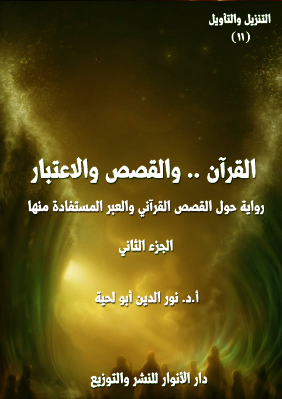

الكتاب: القرآن.. والقصص والاعتبار ج2
الوصف: رواية حول القصص القرآني والعبرة المستفادة منها
السلسلة: التنزيل والتأويل
المؤلف: أ. د. نور الدين أبو لحية
الناشر: دار الأنوار للنشر والتوزيع
الطبعة: الأولى، 1444 هـ
عدد الصفحات: 525
ISBN: 978-620-3-85901-0
لمطالعة الكتاب من تطبيق مؤلفاتي المجاني وهو أحسن وأيسر: هنا

هذا الكتاب هو المقدمة الحادية عشرة لهذه السلسلة، ويتناول الخاصية السادسة من خصائص القرآن الكريم، خاصية التعبير عن المعاني من خلال الأحداث والقصص، والعبر المستفادة منها.
وهي من الخصائص المرتبطة بالموعظة الحسنة، والتي اعتبرها الله تعالى صفة من صفات القرآن الكريم، ووظيفة من وظائف الهداة والصالحين ابتداء من رسول الله صلى الله عليه وآله وسلم وغيره من الأنبياء عليهم السلام.
وقد حاولنا أن نستوعب أكثر ما ورد في القرآن الكريم من القصص، سواء تلك التي ترتبط بالأنبياء عليهم السلام، أو تلك التي ترتبط بغيرهم.
وقد اكتفينا في بيان معانيها أو في اقتباس العبر منها بما تدل عليه معانيها اللغوية، وما ذكره المتدبرون من المفسرين وغيرهم لها، من غير أن نذكر ما ورد في التفسير بالمأثور من الروايات الكثيرة، والتي نرى أن أكثرها ابتعد عن المراد القرآني، بل شوهه، وانحرف به.
وقد حاولنا كذلك أن نذكر العبر من خلال الرؤى المختلفة، فهناك من يغلّب الاعتبار الروحي والأخلاقي، وهناك من يغلّب الاعتبار الدعوي والحركي، وغيرها، ولذلك جعلنا المتحدثين مختلفين، وكأنهم يعبرون عن اختلاف القراء واختلاف المفسرين، من غير أن نذكر أي نزاع بينهم، كما جرت العادة بين الباحثين في تقديم رأي على رأي، ذلك أن كل الآراء حتى لو اختلفت ظاهرا، فهي مقبولة ما دامت منسجمة مع المعاني القرآنية، ولها ما يدل عليها من النص القرآني.
وبناء على كثرة القصص القرآني، فقد اشتمل هذا الكتاب على ثلاثين فصلا، كل فصل ـ ما عدا الفصل الأول ـ يحوي قصة نبي من الأنبياء، أو شخصية من الشخصيات التي ذكرها القرآن الكريم.
القرآن والقصص والاعتبار (2/12)
هذا هو الجزء الثاني من كتاب [القرآن والقصص والاعتبار]، وهو يتضمن ما يلي:
13. الاعتبار.. وقصة موسى
14. الاعتبار.. وقصة داود
15. الاعتبار.. وقصة سليمان
16. الاعتبار.. وقصة زكريا
17. الاعتبار.. وقصة مريم
18. الاعتبار.. وقصة المسيح
19. الاعتبار.. وقصة ابني آدم
20. الاعتبار.. وقصة ذي القرنين
21. الاعتبار.. وقصة الخضر
22. الاعتبار.. ومؤمن آل فرعون
23. الاعتبار.. وقصة قارون
24. الاعتبار.. وأصحاب السبت
25. الاعتبار.. وقصة الذي حيا بعد موته
26. الاعتبار.. وقصة سبأ
27. الاعتبار.. وأصحاب الجنة
القرآن والقصص والاعتبار (2/13)
28. الاعتبار.. وصاحب الجنتين
29. الاعتبار.. وأصحاب الكهف
30. الاعتبار.. وأصحاب الأخدود
31. الاعتبار.. والرسل الثلاثة
القرآن والقصص والاعتبار (2/14)
قال أحد الحضور: أحسنتم.. حدثتمونا عن قصة شعيب عليه السلام، فحدثونا عن قصة موسى عليه السلام والعبر التي يمكن أن نستفيدها منها.
قال أحد الوعاظ: مشاهدها كثيرة في القرآن الكريم، لكن يمكن تقسيمها إلى سبعة عشر مشهدا.. وفي كل مشهد نرى العبر الكثيرة.
قال آخر: وهي تبدأ بقصته مع أمه، ثم مع القبطي، ثم رحيله إلى مدين، ثم بعثة الله له، ثم ذهابه إلى فرعون، ثم مواجهته مع السحرة، ثم ما ذكر الله تعالى من الأذى الذي لاقاه أتباعه، ثم الآيات التي تنزلت، وهو في مصر، ثم نصر الله له على فرعون، وخروجهم من أرضه، ثم الموعد الذي حدده الله له، ثم وقوع بني إسرائيل في عبادة العجل، ثم توبتهم والمواثيق التي أخذها الله عليهم، ثم العقوبات التي سلطها الله على بني إسرائيل بسبب مخالفاتهم، ثم الحديث عن قصة البقرة، ثم طلب موسى عليه السلام من قومه أن يدخلوا القرية، وما تخلل ذلك من الطلبات المختلفة التي كان يطلبها بنو إسرائيل، وفي الأوقات المختلفة.
قال أحد الحضور: فحدثونا عن الأول.. ذلك الذي قص الله تعالى علينا فيها قصته مع أمه.
القرآن والقصص والاعتبار (2/15)
قال أحد الوعاظ (1): لقد ذكره الله تعالى في قوله: ﴿وَأَوْحَيْنَا إِلَى أُمِّ مُوسَى أَنْ أَرْضِعِيهِ فَإِذَا خِفْتِ عَلَيْهِ فَأَلْقِيهِ فِي الْيَمِّ وَلَا تَخَافِي وَلَا تَحْزَنِي إِنَّا رَادُّوهُ إِلَيْكِ وَجَاعِلُوهُ مِنَ الْمُرْسَلِينَ فَالْتَقَطَهُ آلُ فِرْعَوْنَ لِيَكُونَ لَهُمْ عَدُوًّا وَحَزَنًا إِنَّ فِرْعَوْنَ وَهَامَانَ وَجُنُودَهُمَا كَانُوا خَاطِئِينَ وَقَالَتِ امْرَأَتُ فِرْعَوْنَ قُرَّتُ عَيْنٍ لِي وَلَكَ لَا تَقْتُلُوهُ عَسَى أَنْ يَنْفَعَنَا أَوْ نَتَّخِذَهُ وَلَدًا وَهُمْ لَا يَشْعُرُونَ وَأَصْبَحَ فُؤَادُ أُمِّ مُوسَى فَارِغًا إِنْ كَادَتْ لَتُبْدِي بِهِ لَوْلَا أَنْ رَبَطْنَا عَلَى قَلْبِهَا لِتَكُونَ مِنَ الْمُؤْمِنِينَ وَقَالَتْ لِأُخْتِهِ قُصِّيهِ فَبَصُرَتْ بِهِ عَنْ جُنُبٍ وَهُمْ لَا يَشْعُرُونَ وَحَرَّمْنَا عَلَيْهِ الْمَرَاضِعَ مِنْ قَبْلُ فَقَالَتْ هَلْ أَدُلُّكُمْ عَلَى أَهْلِ بَيْتٍ يَكْفُلُونَهُ لَكُمْ وَهُمْ لَهُ نَاصِحُونَ فَرَدَدْنَاهُ إِلَى أُمِّهِ كَيْ تَقَرَّ عَيْنُهَا وَلَا تَحْزَنَ وَلِتَعْلَمَ أَنَّ وَعْدَ اللَّهِ حَقٌّ وَلَكِنَّ أَكْثَرَهُمْ لَا يَعْلَمُونَ﴾ [القصص: 7 ـ 13]
قال آخر: ففي هذه الآيات الكريمة يكشف الله سبحانه وتعالى عن الأسباب التي يقيمها سبحانه، لتمضى بها إرادته، وتتحقق مشيئته في نصرة المستضعفين، والتي قدم لها بقوله: ﴿وَنُرِيدُ أَنْ نَمُنَّ عَلَى الَّذِينَ اسْتُضْعِفُوا فِي الْأَرْضِ وَنَجْعَلَهُمْ أَئِمَّةً وَنَجْعَلَهُمُ الْوَارِثِينَ وَنُمَكِّنَ لَهُمْ فِي الْأَرْضِ وَنُرِيَ فِرْعَوْنَ وَهَامَانَ وَجُنُودَهُمَا مِنْهُمْ مَا كَانُوا يَحْذَرُونَ﴾ [القصص: 5 ـ 6]
قال آخر: وإذا كان الله تعالى في غنى عن هذه الأسباب التي تتصل بالمسببات، حيث يقول للشيء ﴿كُنْ فَيَكُونُ﴾، لكنه مع ذلك يرينا بهذا التدبير أن هناك أسبابا يتوسل بها إلى المسببات، وأن علينا أن نأخذ كل أمر بأسبابه التي تقع في حسابنا وتقديرنا.
قال آخر: وأول سبب من تلك الأسباب التي تقع بها إرادة الله في فرعون، هو ميلاد
__________
(1) التفسير القرآني للقرآن (10/311)، وتفسير المراغي (20/37)، ومن وحي القرآن: (17/267)، والأمثل في تفسير كتاب الله المنزل: (12/180)، والتفسير المنير (20/63).
القرآن والقصص والاعتبار (2/16)
موسى عليه السلام، الذي سيكون على يده هلاك فرعون.. فهذا هو السبب الأول الذي ستدور عليه الأسباب المؤدية إلى هلاك فرعون، ذلك أنه حين ولد موسى عليه السلام كان فرعون يمضي حكمه في أبناء بني إسرائيل، فيترصد جنوده لكل مولود ذكر ليذبحوه.
قال آخر: ولذلك أوحى الله تعالى إلى أم موسى أن تمسك وليدها، وأن ترضعه، أي تتولى إرضاعه من لبنها، لا أن تدعه لمرضع غيرها، فقال: ﴿وَأَوْحَيْنَا إِلَى أُمِّ مُوسَى أَنْ أَرْضِعِيهِ﴾ أي وألهمناها وقذفنا في قلبها أن أرضعيه، وذلك لأمر سيتضح فيما بعد، حين يقع الوليد في يد امرأة فرعون، فتلتمس له المراضع، فلا يقبل غير الثدي الذي رضع منه أول رضعات، وهو ثدي أمه، وبذلك يجتمع الوليد وأمه، لنمضي الأسباب إلى غاياتها.
قال آخر: ثم أمرها الله تعالى في حال خوفها عليه أن تلقيه في اليم، فقال: ﴿فَإِذَا خِفْتِ عَلَيْهِ فَأَلْقِيهِ فِي الْيَمِّ﴾، أي أمسكيه عندك، وأرضعيه، حتى إذا استشعرت خوفا من فرعون أن يصل إليه فألقيه في اليم، أي النهر، وهو نهر النيل، كما هو ظاهر.
قال آخر: ثم وعدها الله تعالى بما يسليها ويطمئن قلبها ويملؤه غبطة وسرورا، وهو رده إليها وجعله رسولا نبيا فقال: ﴿إِنَّا رَادُّوهُ إِلَيْكِ وَجَاعِلُوهُ مِنَ الْمُرْسَلِينَ﴾ أي إنا رادو ولدك إليك للرضاع وتكونين أنت مرضعه، وباعثوه رسولا إلى هذا الطاغية وجاعلو هلاكه ونجاة بني إسرائيل مما هم فيه من البلاء على يديه.
قال آخر: وهو طمأنة لأم الوليد، وتسكين لمخاوفها التي تطل عليها من إلقائه في اليم.. فهي إذ تستمع إلى هذا الوعد من رب العالمين، تدفع بابنها إلى اليم، في غير تردد.. هذا إذا كان الأمر وحيا مباشرا، أما إذا كان إلهاما، فتكون هذه الأوامر الموجهة إليها، خواطر قد جرت في تفكيرها، ثم ألزمت نفسها بها، وأقامت أمرها عليها.. فكأنها أوامر صادرة إليها من جهة عليا، لا تستطيع لها خلافا.
القرآن والقصص والاعتبار (2/17)
قال آخر: وقد جمع قوله تعالى: ﴿وَأَوْحَيْنَا إِلَى أُمِّ مُوسَى أَنْ أَرْضِعِيهِ فَإِذَا خِفْتِ عَلَيْهِ فَأَلْقِيهِ فِي الْيَمِّ وَلَا تَخَافِي وَلَا تَحْزَنِي إِنَّا رَادُّوهُ إِلَيْكِ وَجَاعِلُوهُ مِنَ الْمُرْسَلِينَ﴾، وهو آية واحدة بين أمرين ونهيين، وخبرين وبشارتين والأمران: هما (أرضعيه وألقيه)، والنهيان: هما ﴿وَلَا تَخَافِي وَلَا تَحْزَنِي﴾، والخبران: هما ﴿إِنَّا رَادُّوهُ إِلَيْكِ وَجَاعِلُوهُ﴾، والبشارتان: في ضمن الخبرين، وهما الرد والجعل من المرسلين.
قال آخر: ثم ذكر الله تعالى صدق وعده ومقدمات نجاته فقال: ﴿فَالْتَقَطَهُ آلُ فِرْعَوْنَ﴾ أي فأخذه أهل فرعون أخذ اللقطة التي يعنى بها وتصان عن الضياع صبيحة الليل الذي ألقى فيه التابوت.
قال آخر: ثم ذكر الله تعالى أن الأسباب تتحرك إلى غايتها، خطوة خطوة، فهذا موسى (الوليد) ينتقل من يد أمه إلى صدر النهر، ثم ينتقل من صدر النهر إلى بيت فرعون.. وهكذا يمضي التدبير الإلهي في طريقه، لا يدري الناس من أمره شيئا، حتى ليربي فرعون في حجره، العدو الذي كان يطلبه، وهذا ما يشير إليه قوله تعالى: ﴿لِيَكُونَ لَهُمْ عَدُوًّا وَحَزَنًا﴾، فهو لم يلتقط حين التقط ليكون لفرعون عدوا وحزنا، وإنما التقطه آل فرعون ليكون لهم قرة عين، كما قالت امرأة فرعون: ﴿لَا تَقْتُلُوهُ عَسَى أَنْ يَنْفَعَنَا أَوْ نَتَّخِذَهُ وَلَدًا وَهُمْ لَا يَشْعُرُونَ﴾، وكان في إمكان فرعون أن يكون له كذلك، لكنه آثر أن يكون له عدوا وحزنا.
قال آخر: وقوله تعالى: ﴿إِنَّ فِرْعَوْنَ وَهَامَانَ وَجُنُودَهُمَا كَانُوا خَاطِئِينَ﴾ يجوز أن يكون وصفهم بالخاطئين، من الخطأ وهو ضد الصواب.. بمعنى أنهم كانوا في جهل وعمى عما ينكشف عن هذا الأمر الذي فعلوه بأيديهم.. وفي هذا ما يكذب ادعاء فرعون للألوهية، ويكشف زيف هذا الادعاء.. فلو أنه كان إلها، لما اختار من بين المواليد كلها هذا الوليد
القرآن والقصص والاعتبار (2/18)
الذي يكون على يديه هلاكه، وموته على تلك الميتة الشنعاء.
قال آخر: وإما أن يكون هذا الوصف من الخطيئة، ويكون هذا الوصف تعليلا لما أخذهم الله به من هذا التدبير الذي يوردهم موارد الهلاك، أي إن هؤلاء كان من دأبهم الخطأ وعدم التدبر في العواقب، ومن ثم قتلوا لأجله ألوفا، ثم أخذوه يربونه ليكبر ويفعل بهم ما كانوا يحذرون.
قال آخر: ثم حكى الله تعالى قول امرأة فرعون حين رآه فرعون وهم بقتله، فقال: ﴿وَقَالَتِ امْرَأَتُ فِرْعَوْنَ قُرَّتُ عَيْنٍ لِي وَلَكَ لَا تَقْتُلُوهُ﴾، أي قالت تخاصم عنه وتحببه إلى فرعون: إنه مما تقر به العيون، وتفرح لرؤيته القلوب، فلا تقتلوه.
قال آخر: ثم ذكرت العلة التي قالت لأجلها ما قالت، فقالت: ﴿عَسَى أَنْ يَنْفَعَنَا أَوْ نَتَّخِذَهُ وَلَدًا﴾ أي لعلنا نصيب منه خيرا، لأني أرى فيه مخايل اليمن، ودلائل النجابة، أو ﴿نَتَّخِذَهُ وَلَدًا﴾ لما فيه من الوسامة وجمال المنظر التي تجعله أهلا لتبنى الملوك له.
قال آخر: ثم بين الله تعالى أنهم لا يدرون نتيجة ما صنعوا، فقال: ﴿وَهُمْ لَا يَشْعُرُونَ﴾ أي وهم لا شعور لهم بما خبأه لهم القدر، وبما يؤول إليه أمرهم.
قال آخر: ثم ذكر الله تعالى الوساوس والهواجس التي ألمت بقلب أمه، فقال: ﴿وَأَصْبَحَ فُؤَادُ أُمِّ مُوسَى فَارِغًا﴾، وفي ذلك إشارة إلى ما ترك ضياع الولد من يدها، من فراغ كبير، في مشاعرها، وأحاسيسها.. فقد تعطلت بذهابه عنها كل العواطف التي تغذى بها الأم طفلها، من سهر عليه، ومناغاة له، واشتغال به في نومه، ويقظته، وفي بكائه، وصمته، وفي حركته وسكونه، ذلك أن جوارحها كلها التي ترصدها الأم لطفلها، قد أصبحت أدوات معطلة لا تعمل، وهذا بدوره قد جعل قلبها ـ وهو مركز العواطف والمشاعر ـ كيانا فارغا، لا يستقبل من الطفل ما يصل الأم به، من مشاعر وعواطف، إلا
القرآن والقصص والاعتبار (2/19)
تلك العواطف السلبية.. من قلق، وأسى، ولوعة.. وهذا هو السر في هذا التعبير المعجز: ﴿وَأَصْبَحَ فُؤَادُ أُمِّ مُوسَى فَارِغًا﴾
قال آخر: وفي قوله تعالى: ﴿أُمِّ مُوسَى﴾ إشارة إلى أن هذا الوليد، قد أصبح ـ في رعاية الله، وفي ضمان وعده بحفظه ـ قد أصبح ذا وجود معترف به في هذا المحيط الذي ضاعت فيه معالم الأطفال، وأهدرت فيه دماؤهم.. إنه الآن شخصية معروفة، وعلم ظاهر، يأخذ مكانه في هذه الأحداث، تماما كما يأخذ فرعون مكانه فيها.
قال آخر: ثم قال تعالى: ﴿إِنْ كَادَتْ لَتُبْدِي بِهِ﴾، أي أنها ـ وقد فرغ قلبها من هذا المهد الذي كان لوليدها في سويداء القلب ـ أو شكت أن تصرخ وتندب هذا الوليد، وتنادى في الناس: إن هذا الطفل الذي وجد ملقى في اليم والذي التقطه آل فرعون هو وليدها.. وإنها لتود أن تلقى عليه ولو نظرة واحدة، قبل أن يصير إلى هذا المصير المجهول.
قال آخر: ثم قال تعالى: ﴿لَوْلَا أَنْ رَبَطْنَا عَلَى قَلْبِهَا﴾، أي أمسكنا على قلبها ما فيه من نوازع تريد الانطلاق إلى الكشف عن وجه الوليد، وفضح أمره.. ﴿لِتَكُونَ مِنَ الْمُؤْمِنِينَ﴾، وفي هذا تعليل لهذا الربط الذي ربط الله سبحانه، به على قلبها، وهو أنها بعد أن تتكشف لها الأمور، ستعلم أن ما وعدها الله حق، وبهذا يتأكد إيمانها بالله، ويقوى يقينها به.
قال آخر: وفي هذا إشارة إلى أن ما يبتلى به المؤمنون الصابرون من أرزاء ومحن، هو تثبيت لإيمانهم، وترسيخ لقواعد هذا الإيمان في قلوبهم، حيث ينكشف لهم وراء كل رزء، وعقب كل محنة، أن ذلك لم يكن إلا عن تدبير الحكيم العليم، وأنهم لو استقبلوا من أمورهم ما استدبروا، لما أقاموها إلا على هذا الوجه الذي أقامه الله رب العالمين، وبهذا ينتقلون من حال القلق، والجزع في مواجهة المصائب والمحن، إلى حال التسليم، والرضا.. وهذا هو الإيمان في أرفع مقاماته، وأعلى منازله.
القرآن والقصص والاعتبار (2/20)
قال آخر: وعلى أثر لطف الله بتثبيت قلبها أحست أم موسى بالاطمئنان، لكنها أحبت أن تعرف مصير ولدها، ولذلك أمرت أخته أن تتبع أثره وتعرف خبره، كما قال تعالى: ﴿وَقَالَتْ لِأُخْتِهِ قُصِّيهِ﴾، وكلمة ﴿قُصِّيهِ﴾ مأخوذة من مادة (قص)، ومعناها البحث عن آثار الشيء، وإنما سميت القصة قصة لأنها تحمل في طياتها أخبارا مختلفة يتبع بعضها بعضا.
قال آخر: فاستجابت (أخت موسى) لأمر أمها، وأخذت تبحث عنه بشكل لا يثير الشبهة، حتى بصرت به من مكان بعيد، ورأت صندوقه الذي كان في الماء يتلقفه آل فرعون، كما قال تعالى: ﴿فَبَصُرَتْ بِهِ عَنْ جُنُبٍ﴾، لكن أولئك لم يلتفتوا إلى أن أخته تتعقبه ﴿وَهُمْ لَا يَشْعُرُونَ﴾
قال آخر: ثم ذكر الله تعالى عنايته به وإرجاعه لمهد أمه، فقال: ﴿وَحَرَّمْنَا عَلَيْهِ الْمَرَاضِعَ مِنْ قَبْلُ﴾ [القصص: 12]، ولذلك لم يقبل على ثدي أية مرضعة منهن مما جعلهم يعيشون مشكلة صعبة في تغذيته للإبقاء على حياته، وكانت أخته قد اقتربت من الجو أكثر بحيث أمكنها أن تعطي رأيا، أو تشير بموقف، وقد عرفت طبيعة المشكلة، وقررت أن تتدخل ليرجع الولد إلى أمه من خلال إحساسها الخفي بأن هناك وضعا غيبيا خفيا لتحقيق الوعد الإلهي بعودته إلى أمه، فيما كانت تعيشه بالإلهام الداخلي الذي كانت تختزنه في وعيها الخاص ﴿فَقَالَتْ هَلْ أَدُلُّكُمْ عَلَى أَهْلِ بَيْتٍ يَكْفُلُونَهُ لَكُمْ وَهُمْ لَهُ نَاصِحُونَ﴾ [القصص: 12]
قال آخر: ولعل من الطبيعي أن يكونوا قد استجابوا لذلك، وسلموه إلى أمه التي جاءت بلهفة عند استدعائها من قبلهم ـ بواسطة أخته، ولذلك قال تعالى: ﴿فَرَدَدْنَاهُ إِلَى أُمِّهِ كَيْ تَقَرَّ عَيْنُهَا وَلَا تَحْزَنَ﴾ [القصص: 13] عندما يعيش ولدها الحبيب في أحضانها، وهي آمنة على حياته، بل إنها مسئولة أمامهم عن المحافظة على حياته باعتبار موقعه المميز في بيت
القرآن والقصص والاعتبار (2/21)
فرعون، فلا مجال لقلق ولا للحزن، ﴿وَلِتَعْلَمَ أَنَّ وَعْدَ اللَّهِ حَقٌّ﴾ [القصص: 13] فيما يعد الله به عباده في قضاياهم التي تتحرك في موقع رحمته.
قال آخر: وهذه هي الحقيقة الإيمانية التي لا شك فيها، لأن الذي يخلف الوعد أحد شخصين، إما العاجز وإما الكاذب، أو الجاهل الذي يظهر له الشيء بطريقة ثم يبدو له غيره فيتبدل رأيه وموقفه، وقد تعالى الله عن ذلك علوا كبيرا، ﴿وَلَكِنَّ أَكْثَرَهُمْ لَا يَعْلَمُونَ﴾ [الطور: 47] لأنهم لا ينفتحون على الأفق الواسع الذي يطل بهم على مفردات القضايا من خلال القواعد العامة للإيمان، ولذلك فإنهم يستغرقون في أوضاعهم الشخصية المزاجية أو أفكارهم الارتجالية السريعة، بعيدا عن أية معرفة عميقة في حقائق العقيدة والحياة، وهذه هي مشكلة الناس في كل زمان ومكان أمام الإيمان، فهي مشكلة الجهل التي تغلق عليهم أبواب الحق، وتدفعهم إلى الاندفاع نحو الباطل.
قال أحد الحضور: حدثتمونا عن المشهد الأول.. فحدثونا عن الثاني.. وهو ما حصل له مع الإسرائيلي والقبطي.
قال أحد الوعاظ(1): لقد ذكره الله تعالى في قوله: ﴿وَلَمَّا بَلَغَ أَشُدَّهُ وَاسْتَوَى آتَيْنَاهُ حُكْمًا وَعِلْمًا وَكَذَلِكَ نَجْزِي الْمُحْسِنِينَ وَدَخَلَ الْمَدِينَةَ عَلَى حِينِ غَفْلَةٍ مِنْ أَهْلِهَا فَوَجَدَ فِيهَا رَجُلَيْنِ يَقْتَتِلَانِ هَذَا مِنْ شِيعَتِهِ وَهَذَا مِنْ عَدُوِّهِ فَاسْتَغَاثَهُ الَّذِي مِنْ شِيعَتِهِ عَلَى الَّذِي مِنْ عَدُوِّهِ فَوَكَزَهُ مُوسَى فَقَضَى عَلَيْهِ قَالَ هَذَا مِنْ عَمَلِ الشَّيْطَانِ إِنَّهُ عَدُوٌّ مُضِلٌّ مُبِينٌ قَالَ رَبِّ إِنِّي
__________
(1) التفسير القرآني للقرآن (10/ 319)، وزهرة التفاسير (9/ 4726)، وتفسير المراغي (20/ 43)، ومن وحي القرآن: (17/ 275)، والأمثل في تفسير كتاب الله المنزل: (12/ 194)، و تفسير الميزان، ج: 16، ص: 21، والتفسير المنير (20/ 73).
القرآن والقصص والاعتبار (2/22)
ظَلَمْتُ نَفْسِي فَاغْفِرْ لِي فَغَفَرَ لَهُ إِنَّهُ هُوَ الْغَفُورُ الرَّحِيمُ قَالَ رَبِّ بِمَا أَنْعَمْتَ عَلَيَّ فَلَنْ أَكُونَ ظَهِيرًا لِلْمُجْرِمِينَ فَأَصْبَحَ فِي الْمَدِينَةِ خَائِفًا يَتَرَقَّبُ فَإِذَا الَّذِي اسْتَنْصَرَهُ بِالْأَمْسِ يَسْتَصْرِخُهُ قَالَ لَهُ مُوسَى إِنَّكَ لَغَوِيٌّ مُبِينٌ فَلَمَّا أَنْ أَرَادَ أَنْ يَبْطِشَ بِالَّذِي هُوَ عَدُوٌّ لَهُمَا قَالَ يَا مُوسَى أَتُرِيدُ أَنْ تَقْتُلَنِي كَمَا قَتَلْتَ نَفْسًا بِالْأَمْسِ إِنْ تُرِيدُ إِلَّا أَنْ تَكُونَ جَبَّارًا فِي الْأَرْضِ وَمَا تُرِيدُ أَنْ تَكُونَ مِنَ الْمُصْلِحِينَ﴾ [القصص: 14 ـ 19]
قال آخر: في هذا المشهد نرى ما جرى لموسى عليه السلام من أحداث حصلت وهو في مصر قبل أن يتوجه إلى مدين، ثم سبب هجرته إلى مدين، وفيها إشارة إلى عودته إلى أمه، وتحقيق ما وعدها الله تعالى به في قوله: ﴿إِنَّا رَادُّوهُ إِلَيْكِ﴾ [القصص: 7]
قال آخر: ثم جاء قوله تعالى في بداية هذا المشهد: ﴿وَلَمَّا بَلَغَ أَشُدَّهُ وَاسْتَوَى آتَيْنَاهُ حُكْمًا وَعِلْمًا وَكَذَلِكَ نَجْزِي الْمُحْسِنِينَ﴾ [القصص: 14]، للإخبار عن كيفية تحقيق الجانب الآخر من وعد الله، وهو قوله: ﴿وَجَاعِلُوهُ مِنَ الْمُرْسَلِينَ﴾ [القصص: 7] وإذا كان هذا الموعد لم يكن قد تحقق، والأحداث لا تزال جارية إلى غاياتها، فإنه قد تحق، بعد أن بلغت الأحداث الغاية المنطلقة إليها.
قال آخر: وقد بدأ المشهد بقوله تعالى: ﴿وَلَمَّا بَلَغَ أَشُدَّهُ وَاسْتَوَى آتَيْنَاهُ حُكْمًا وَعِلْمًا﴾ [القصص: 14]، أي ولما قوى جسمه واعتدل عقله آتيناه فقها في الدين وعلما بالشريعة، كما قال تعالى: ﴿وَاذْكُرْنَ مَا يُتْلَى فِي بُيُوتِكُنَّ مِنْ آيَاتِ اللَّهِ وَالْحِكْمَةِ﴾ [الأحزاب: 34]
قال آخر: والحكم هو السلطان، سواء أكان روحيا أو ماديا، وقد كان لموسى عليه السلام السلطان الروحي والمادي معا على بني إسرائيل.. (والعلم) هو ما مع هذا السلطان من علم من الله تعالى، فبهذا العلم الذي قام إلى جانب هذا السلطان، كمل الأمر، وتمت النعمة.
القرآن والقصص والاعتبار (2/23)
قال آخر: وبعد أن أخبر الله تعالى بتهيئته للنبوة ذكر ما كان السبب في هجرته إلى مدين وتوالى الأحداث الجسام عليه فقال: ﴿وَدَخَلَ الْمَدِينَةَ عَلَى حِينِ غَفْلَةٍ مِنْ أَهْلِهَا﴾، ولا نعرف المدينة على وجه التحقيق.. لكن الاحتمال القوي أنها عاصمة مصر، فقد ذكر بعض المفسرين أن موسى عليه السلام على أثر المشاجرات بينه وبين فرعون، ومخالفاته له ولسلطته التي كانت تشتد يوما بعد يوم حتى بلغت أوجها، حكم عليه بالإبعاد عن العاصمة.. لكنه برغم ذلك فقد سنحت له فرصة خاصة والناس غافلون عنه أن يعود إلى المدينة ويدخلها.. ويحتمل أن المقصود دخوله المدينة من جهة قصر فرعون.. لأن القصور يومئذ كانت تشاد على أطراف المدينة ليعرف الداخل إليها والخارج منها.
قال آخر: وقوله تعالى: ﴿عَلَى حِينِ غَفْلَةٍ مِنْ أَهْلِهَا﴾ يعني الزمن الذي يستريح الناس فيه من أعمالهم، ولا تُراقب المدينة في ذلك الحين بدقة، وقد ذكر بعضهم أنها ما بعد نصف النهار، حيث يستريح الناس من أعمالهم استراحة مؤقتة.
قال آخر: وذكر آخرون أنها أول الليل، لأن الناس يتركون أعمالهم ويعطلون دكاكينهم ومحلاتهم ابتغاء الراحة والنوم.. وهذه الساعة هي المعبر عنها بساعة الغفلة في بعض الأحاديث، ومنها ما روي عن رسول الله صلى الله عليه وآله وسلم أنه قال: ﴿تنفلوا في ساعة الغفلة ولو بركعتين خفيفتين﴾، وحددت بأنها ﴿وساعة الغفلة ما بين المغرب والعشاء﴾ ﴿1﴾.. ونلاحظ أنه في هذه الساعة كثيرا ما تحدث الجنايات والفساد والانحرافات.. فلا الناس مشغولون فيها بالكسب والعمل، ولا هم نائمون، بل هي حالة غفلة عمومية تغشى المدينة عادة، وتنشط مراكز الفساد أيضا في هذه الساعة.
__________
(1) وسائل الشيعة، ج 5، ص 249.
القرآن والقصص والاعتبار (2/24)
قال آخر: وذكر آخرون أن المراد بغفلة أهل المدينة، غفلتهم عن موسى، وعن أنه الابن المتبنى لفرعون.. ولعله كان متخفيا ليداري صفته تلك، حتى لا يلفت إليه الأنظار، التي تتعلق دائما، بالسلطان، وبحاشية السلطان.
قال آخر: ثم ذكر الله تعالى أنه في أثناء سير موسى عليه السلام في المدينة، وجد فيها رجلين يقتتلان.. أحدهما إسرائيلي ﴿مِنْ شِيعَتِهِ﴾ والآخر مصري ﴿مِنْ عَدُوِّهِ﴾.. إذ لا شك أن موسى كان يعرف أنه إسرائيلي، كما لا شك في أنه كان يعرف الإسرائيليين، بسماتهم وبزيهم الذي فرضه فرعون عليهم.. والتعبير بـ ﴿شِيعَتِهِ﴾ يدل على أن موسى عليه السلام قبل أن يبعث كان له أتباع وأنصار وشيعة من بني إسرائيل، وربما كان قد اختارهم لمواجهة فرعون وحكومته كنواة اساسية.
قال آخر: وذكر الله تعالى أن هذا المشهد أثار موسى عليه السلام.. فالإسرائيلي كان تحت يد قاهرة، لعلها كانت يد أحد أصحاب السلطان، التي تلهبه بالسياط.. ولم يطق موسى صبرا على هذا الذي يراه بعينيه، من إنسان يضرب إنسانا في غير مبالاة.. فدخل بين الرجلين، ليدفع عن الإسرائيلي هذه اليد التي تسومه سوء العذاب.. وطبيعي أن يتصدى المصري لموسى، وأن يعد ذلك فضولا منه بالتدخل فيما لا يعنيه.. فكان بين الرجلين ـ موسى والمصري ـ شد وجذب، بل ربما مد المصري يده إلى موسى، ﴿فَوَكَزَهُ مُوسَى﴾ أي دفعه بقبضة يده ـ وهو لا يريد قتله ـ وإذا الرجل يسقط على الأرض ميتا، ويتحرك موسى عليه السلام سريعا، ويخلص بنفسه، دون أن يعرف أحد.
قال آخر: وذكر الله تعالى أن موسى عليه السلام رجع على نفسه، يلومها لاحتمال وقوع التبعات المستقبلية على موسى عليه السلام وجماعته جراء هذا، وقد ذكر الله تعالى أنه قال حينها: ﴿هَذَا مِنْ عَمَلِ الشَّيْطَانِ إِنَّهُ عَدُوٌّ مُضِلٌّ مُبِينٌ﴾، أي أن موسى عليه السلام كان
القرآن والقصص والاعتبار (2/25)
يريد أن يبعد الفرعوني عن الرجل الإسرائيلي، وإن كان الفرعونيون يستحقون أكثر من ذلك، لكن ظروف ذلك الوقت لم تكن تساعد على مثل هذا العمل.
قال آخر: ثم ذكر الله تعالى أن موسى عليه السلام قال حينها: ﴿رَبِّ إِنِّي ظَلَمْتُ نَفْسِي فَاغْفِرْ لِي فَغَفَرَ لَهُ إِنَّهُ هُوَ الْغَفُورُ الرَّحِيمُ﴾، ومن المسلّم به أن موسى عليه السلام لم يصدر منه ذنب هنا، بل ترك الأولى، فكان ينبغي عليه أن يحتاط لئلا يقع في مشكلة، ولذلك فإنه استغفر ربه وطلب منه العون، فشمله اللطيف الخبير بلطفه.
قال آخر: ونلاحظ أن موسى عليه السلام لم ينطلق في المعركة من موقع عدواني ذاتي، لأنه لا يجد أية ضرورة، أو أي مبرر، للدخول في معركة مع الأقباط في وعيه العقلاني لطبيعة التوازن في القوى الذي كان لا يسمح له ولا لغيره من أن يحل المشكلة القائمة في مجتمع بني إسرائيل، ولذا لم يكن من همه أن يدخل في المعركة، بل كان كل همه أن يدافع عن الإسرائيلي ويخلصه من بين يدي القبطي الذي كان يريد أن يقتله، كما يبدو، وبهذا لم يكن في الأمر جريمة، بل كان الدخول شرعيا، ولم تكن النتيجة مقصودة له، لكنه كان يفضل أن لا يحدث ما حدث.
قال آخر: وعلى ضوء هذا، كان التعبير بأنه ظلم للنفس، تعبيرا عن الحالة الشعورية أكثر مما كان تعبيرا عن حالة المسؤولية، وربما كان تعبيرا عن القلق من النتائج الواقعية السلبية التي يمكن أن تترتب على ذلك في علاقاته الاجتماعية بمحيطه فيما يحمله من أخطار مستقبلية على شخصه بالذات.
قال آخر: أما طلب المغفرة من الله، فقد يكون ناشئا من الرغبة الروحية العميقة للإنسان المؤمن، أن يضع أعماله بين يدي الله حتى التي لا تمثل انحرافا عن أوامره ونواهيه، بل تمثل نوعا من الخطأ الأخلاقي المبرر بطريقة ما، ليحصل على لمسة الرحمة الإلهية العاقبة
القرآن والقصص والاعتبار (2/26)
بالحنان والعطف، فيبلغ ـ من خلال عصمته له ـ الكمال في سلوكه، والتوازن في أخلاقه، مما يجعل من المغفرة لطفا في توازن الشخصية لا عفوا عن ذنب.
قال آخر: وهكذا كان اللطف الإلهي بموسى عليه السلام فيما يعلمه الله من حاله في ظرفه الواقعي مما يحقق له الكثير من العذر في حساب المسؤولية، ﴿فَغَفَرَ لَهُ إِنَّهُ هُوَ الْغَفُورُ الرَّحِيمُ﴾ الذي تتحرك مغفرته من عمق رحمته لتفيض على الإنسان الراجع إليه بكل خير وإحسان.
قال آخر: ثم ذكر الله تعالى أنه شكر ربه على هذه النعمة التي أنعم بها عليه فقال: ﴿رَبِّ بِمَا أَنْعَمْتَ عَلَيَّ فَلَنْ أَكُونَ ظَهِيرًا لِلْمُجْرِمِينَ﴾، أي رب اعصمني بحق ما أنعمت على بعفوك عن قتل هذه النفس لأمتنعن عن مثل هذا الفعل، ولن أكون معينا للمشركين فأصحبهم وأكثر سوادهم.. وقد يكون المراد لأمتنعن عن مظاهرة من تؤول مظاهرته إلى الجرم والإثم كمظاهرة الإسرائيلي التي أدت إلى القتل الذي لم يؤمر به، كما قال تعالى: ﴿وَلَا تَرْكَنُوا إِلَى الَّذِينَ ظَلَمُوا﴾ [هود: 113]
قال آخر: ثم ذكر الله تعالى حاله بعد قتل القبطي في المدينة فقال: ﴿فَأَصْبَحَ فِي الْمَدِينَةِ خَائِفًا يَتَرَقَّبُ﴾ الشر من خلال ثأر قوم القبطي لقتيلهم، وهنا كانت المفاجأة التي تنتظره لخوض تجربة جديدة مماثلة للتجربة الماضية، ﴿فَإِذَا الَّذِي اسْتَنْصَرَهُ بِالْأَمْسِ﴾ من قومه ﴿يَسْتَصْرِخُهُ﴾ لينتصر له في معركة جديدة مع شخص آخر من الأقباط، في نداء استغاثة مؤثر.
قال آخر: ولم يستجب موسى عليه السلام له، فقد استوعب التجربة السابقة، واحتوى نتائجها في فكره وشعوره، فقد لا يكون المستغيث دائما مظلوما، بل قد يكون صاحب مشاكل يتحرك في عملية الإثارة للنزاع والخلاف على أساس حدة طبعه، أو رغبته
القرآن والقصص والاعتبار (2/27)
في العدوان، فكيف يمكن له أن يستجيب له!؟
قال آخر: وإذا كان موسى قد اندفع سابقا للانتصار له، فليس ذلك من موقع الانتصار للقريب، بل من موقع الاعتقاد بأنه مظلوم من قبل القبطي انطلاقا من دراسة طبيعة الأشياء في موازين الضعف والقوة، ولكن المسألة الآن هي أن صاحبه يدخل في خلاف جديد، مما يوحي بأنه رجل يتعمد المشاكسة مع الآخرين، وقد يكون انتصار موسى له أغراه في ذلك.
قال آخر: ثم ذكر الله تعالى أن موسى عليه السلام قال له: ﴿إِنَّكَ لَغَوِيٌّ مُبِينٌ﴾، أي إنك لا تسلك طريق الرشد الذي يفرض على الإنسان أن يحل الأمور بالتي هي أحسن، بعيدا عن العنف، أو أن يبتعد عن الدخول في القضايا التي تثير الخلاف من حوله.
قال آخر: ثم ذكر الله تعالى أنه ﴿فَلَمَّا أَنْ أَرَادَ أَنْ يَبْطِشَ بِالَّذِي هُوَ عَدُوٌّ لَهُمَا﴾ ليدفعه عن صاحبه، لينهي المعركة بسلام أو ليواجه عدوانه بطريق القوة، بعد أن امتنع عن الابتعاد عنه، قال: ﴿يَا مُوسَى أَتُرِيدُ أَنْ تَقْتُلَنِي كَمَا قَتَلْتَ نَفْسًا بِالْأَمْسِ إِنْ تُرِيدُ إِلَّا أَنْ تَكُونَ جَبَّارًا فِي الْأَرْضِ﴾ يواجه الناس بالقهر والبطش والقتل، ويحل المشاكل بالقوة والعنف، ﴿وَمَا تُرِيدُ أَنْ تَكُونَ مِنَ الْمُصْلِحِينَ﴾ [القصص: 19] الذين يبادرون إلى حل الأمور بالتي هي أحسن، فيصلحون ما فسد ويجمعون القلوب على المحبة بدلا من أن يجمعوها على العداوة والبغضاء.
قال آخر: وذكر جل المفسرين أن ضمير ﴿قَالَ﴾ يعود للإسرائيلي الذي كان يستصرخه، وذلك أنه ظن أن موسى عليه السلام إنما يريد أن يبطش به لما سمعه يعاتبه قبل بقوله: ﴿إِنَّكَ لَغَوِيٌّ مُبِينٌ﴾ فهاله ما رأى من إرادته البطش فقال: ﴿يَا مُوسَى أَتُرِيدُ أَنْ تَقْتُلَنِي كَمَا قَتَلْتَ نَفْسًا بِالْأَمْسِ﴾، فعلم القبطي عند ذلك أن موسى هو الذي قتل القبطي
القرآن والقصص والاعتبار (2/28)
بالأمس، فرجع إلى فرعون وأخبره الخبر، فائتمروا بموسى وعزموا على قتله.
قال أحد الحضور: حدثتمونا عن المشهد الثاني.. فحدثونا عن الثالث.. وهو رحيله إلى مدين.
قال أحد الوعاظ(1): لقد ذكره الله تعالى في قوله: ﴿وَجَاءَ رَجُلٌ مِنْ أَقْصَى الْمَدِينَةِ يَسْعَى قَالَ يَا مُوسَى إِنَّ الْمَلَأَ يَأْتَمِرُونَ بِكَ لِيَقْتُلُوكَ فَاخْرُجْ إِنِّي لَكَ مِنَ النَّاصِحِينَ فَخَرَجَ مِنْهَا خَائِفًا يَتَرَقَّبُ قَالَ رَبِّ نَجِّنِي مِنَ الْقَوْمِ الظَّالِمِينَ وَلَمَّا تَوَجَّهَ تِلْقَاءَ مَدْيَنَ قَالَ عَسَى رَبِّي أَنْ يَهْدِيَنِي سَوَاءَ السَّبِيلِ وَلَمَّا وَرَدَ مَاءَ مَدْيَنَ وَجَدَ عَلَيْهِ أُمَّةً مِنَ النَّاسِ يَسْقُونَ وَوَجَدَ مِنْ دُونِهِمُ امْرَأَتَيْنِ تَذُودَانِ قَالَ مَا خَطْبُكُمَا قَالَتَا لَا نَسْقِي حَتَّى يُصْدِرَ الرِّعَاءُ وَأَبُونَا شَيْخٌ كَبِيرٌ فَسَقَى لَهُمَا ثُمَّ تَوَلَّى إِلَى الظِّلِّ فَقَالَ رَبِّ إِنِّي لِمَا أَنْزَلْتَ إِلَيَّ مِنْ خَيْرٍ فَقِيرٌ فَجَاءَتْهُ إِحْدَاهُمَا تَمْشِي عَلَى اسْتِحْيَاءٍ قَالَتْ إِنَّ أَبِي يَدْعُوكَ لِيَجْزِيَكَ أَجْرَ مَا سَقَيْتَ لَنَا فَلَمَّا جَاءَهُ وَقَصَّ عَلَيْهِ الْقَصَصَ قَالَ لَا تَخَفْ نَجَوْتَ مِنَ الْقَوْمِ الظَّالِمِينَ قَالَتْ إِحْدَاهُمَا يَا أَبَتِ اسْتَأْجِرْهُ إِنَّ خَيْرَ مَنِ اسْتَأْجَرْتَ الْقَوِيُّ الْأَمِينُ قَالَ إِنِّي أُرِيدُ أَنْ أُنْكِحَكَ إِحْدَى ابْنَتَيَّ هَاتَيْنِ عَلَى أَنْ تَأْجُرَنِي ثَمَانِيَ حِجَجٍ فَإِنْ أَتْمَمْتَ عَشْرًا فَمِنْ عِنْدِكَ وَمَا أُرِيدُ أَنْ أَشُقَّ عَلَيْكَ سَتَجِدُنِي إِنْ شَاءَ اللَّهُ مِنَ الصَّالِحِينَ قَالَ ذَلِكَ بَيْنِي وَبَيْنَكَ أَيَّمَا الْأَجَلَيْنِ قَضَيْتُ فَلَا عُدْوَانَ عَلَيَّ وَاللَّهُ عَلَى مَا نَقُولُ وَكِيلٌ﴾ [القصص: 20 ـ 28]
قال آخر: ويبدأ هذا المشهد بعد أن تعاظمت قصة قتل موسى عليه السلام للقبطي
__________
(1) التفسير القرآني للقرآن (10/ 329)، وتفسير المراغي (20/ 48)، ومن وحي القرآن: (17/ 282)، والأمثل في تفسير كتاب الله المنزل: (12/ 205)، والتفسير المنير (20/ 82).
القرآن والقصص والاعتبار (2/29)
في أجواء آل فرعون، وبدأوا يعدون العدة للثأر منه، وقد يكون الحديث بينهم على مستوى الهمس حتى لا يسمعه موسى عليه السلام فيهرب منهم.
قال آخر: حينها ذكر الله تعالى أنه ﴿وَجَاءَ رَجُلٌ﴾، أي مؤمن من آل فرعون، يخفى إيمانه عن فرعون وآله، لأسباب هو بها عليم، يسرع للحاق بموسى إشفاقا وخوفا عليه أن يصيبه مكروه من فرعون وآله وقال: يا موسى: إن الملك وبطانته وأشراف دولته يدبرون لك المكايد، وينصبون لك الحبائل، يريدون أن يقتلوك، فالبدار البدار والهرب الهرب قبل أن يقبضوا عليك وينفذوا ما دبروه ويقتلوك، فاخرج من المدينة مسرعا وإني لك لناصح أمين.
قال آخر: وقوله تعالى: ﴿مِنْ أَقْصَى الْمَدِينَةِ يَسْعَى﴾، يعني من أطرافها البعيدة، إلى موسى بشكل سريع مثير ﴿قَالَ يَا مُوسَى إِنَّ الْمَلَأَ يَأْتَمِرُونَ بِكَ لِيَقْتُلُوكَ﴾ ولا تزال المشاورات دائرة بينهم ليصلوا إلى استكمال الخطة واتخاذ القرار الحاسم للتنفيذ، وهذا يعنى أنه جاء من بيت فرعون، حيث كان فرعون يقيم في ظاهر المدينة، منعزلا بقصره عن الرعية، ﴿فَاخْرُجْ إِنِّي لَكَ مِنَ النَّاصِحِينَ﴾ لتنجو بنفسك، لأن القوم يملكون القوة التي يستطيعون بها الوصول إلى أهدافهم، لأنك إذا استطعت أن تقاوم شخصا واحدا أو أكثر منهم، فإنك لا تستطيع مقاومة الجميع.
قال آخر: وفي قول الرجل لموسى عليه السلام: ﴿فَاخْرُجْ إِنِّي لَكَ مِنَ النَّاصِحِينَ﴾ تحريض قوى لموسى على الفرار.. وأنه إنما تلقى نصيحة ناصح أمين، يشفق عليه، ويود الخلاص له مما تورط فيه.
قال آخر: ثم ذكر الله تعالى أنه انتصح بنصحه، وتقبل قوله، ﴿فَخَرَجَ مِنْهَا خَائِفًا يَتَرَقَّبُ﴾ أي فخرج من مدينة فرعون خائفا يترقب لحوق الطالبين، ويتلفت يمينا ويسارا
القرآن والقصص والاعتبار (2/30)
وينظر أيتبعه أحد، ثم لجأ إلى الله تعالى علما منه أن لا ملجأ إلا إليه ﴿قَالَ رَبِّ نَجِّنِي مِنَ الْقَوْمِ الظَّالِمِينَ﴾ أي قال: رب نجنى من هؤلاء الذين من دأبهم الظلم والعسف ووضع الأمور في غير مواضعها، فيقتلون من لا يستحق القتل ومن لا يجرم إلى أحد.
قال آخر: ونلاحظ في هذا الدعاء وما تقدمه، وما يأتي بعده، أن موسى عليه السلام كان مشدودا بإيمانه وبكل كيانه إلى الله، فهو يتوجه إليه في كل موقف، وفي كل لحظة من لحظات الشدة، ليتحدث معه، وليثير ـ بين يديه ـ آلامه وهمومه وتطلعاته في الحياة، وعلاقته بالأحداث من حوله، مما يوحي بأنه كان على درجة كبيرة من الروحانية النابضة بالإيمان، بحيث لا يواجه مشكلة إلا ويكون الله هو المقصد فيها، قبل كل الناس، وهذه هي ميزة الأنبياء في حياتهم قبل النبوة، في ملكاتهم الروحية التي تجعلهم في الموقع المميز الذي يؤهلهم لاصطفاء الله لهم لرسالاته.
قال آخر: وهكذا لا حظنا أن موسى كان في خوفه الغريزي ووحدته يستمد القوة من الله في شعوره الإيماني بحضوره معه، بكل قوته الإلهية، ولهذا فإنه يطلب منه أن ينجيه من القوم الظالمين، الذين يملكون القوة الغاشمة الكبيرة، بقدرته المطلقة التي لا حد لها.
قال آخر: وقد ذكر الله تعالى أنه استجاب دعاءه، ووفقه إلى سلوك الطريق الأعظم نحو مدين، وقد ذكر الله تعالى ما ناجى به موسى عليه السلام ربه وهو سائر إلى مدين، حيث قال: ﴿وَلَمَّا تَوَجَّهَ تِلْقَاءَ مَدْيَنَ قَالَ عَسَى رَبِّي أَنْ يَهْدِيَنِي سَوَاءَ السَّبِيلِ﴾ أي ولما اتجه نحو مدين ماضيا إليها شاخصا عن مدينة فرعون، قال: رب اهدني إلى سواء السبيل، وارشدني إلى الطريق القويم، ونجنى من هؤلاء الظلمة.
قال آخر: ثم ذكر الله تعالى ما جرى له حين وصوله إلى مدين من الأحداث فقال: ﴿وَلَمَّا وَرَدَ مَاءَ مَدْيَنَ وَجَدَ عَلَيْهِ أُمَّةً مِنَ النَّاسِ يَسْقُونَ﴾ أغنامهم وهم يتزاحمون ويتدافعون
القرآن والقصص والاعتبار (2/31)
بحيث يتقدم القوي على الضعيف، ﴿وَوَجَدَ مِنْ دُونِهِمُ امْرَأَتَيْنِ تَذُودَانِ﴾ أي تحبسان أغنامهما من أن ترد الماء أو تختلط بأغنام القوم.
قال آخر: ولفت ذلك نظر موسى عليه السلام، وعرف أنهما ضعيفتان عن الوصول إلى ما تريدان في هذا الزحام الشديد، وكان من أخلاقه أن ينتصر للإنسان الضعيف ويعينه ويأخذ له بحقه، فالتفت إليهما، و﴿قَالَ مَا خَطْبُكُمَا﴾ أي ما شأنكما ﴿قَالَتَا لَا نَسْقِي حَتَّى يُصْدِرَ الرِّعَاءُ﴾ ويخرجوا أغنامهم، فهذه هي العادة أن يتقدم الرجال النساء، ﴿وَأَبُونَا شَيْخٌ كَبِيرٌ﴾ لا يستطيع أن يأتي إلى الماء ليسقي الأغنام ويتصدى للأمر بنفسه.
قال آخر: ثم ذكر الله تعالى أنه ﴿فَسَقَى لَهُمَا ثُمَّ تَوَلَّى إِلَى الظِّلِّ﴾ ليستريح فيه من التعب، وليتخفف فيه من شدة الحر، ولم يكن هناك من يتحدث إليه من قريب أو صديق، فانطلق يحدث ربه، في مناجاة خاشعة شاكرة ﴿فَقَالَ رَبِّ إِنِّي لِمَا أَنْزَلْتَ إِلَيَّ مِنْ خَيْرٍ فَقِيرٌ﴾ فيما وهبتني من القوة، وأعطيتني من الأمن، ومكنتني من الحصول على الغذاء.. فقد كنت في حاجة شديدة إلى ذلك، لأني لا أملك لنفسي نفعا ولا ضرا إلا بك، وحدك، لا شريك لك، فلك الشكر ولك الحمد.. وهذا ما ينبغي للإنسان المؤمن أن يختزنه في داخل نفسه من الشعور بالحاجة إلى الله فيما أعطاه وفي ما يمكن أن يعطيه في ابتهال خاشع يحرك الإيمان في الذات ويطور العلاقة بالله.
قال آخر: وقد حدثت هنا أمور جزئية، لم يذكرها الله تعالى لدلالة الحال عليها، وأنها، لا بد أن تحدث على صورة ما حسب تصور الذي يتلو آيات الله، أو يستمع إليها.. وهذا من شأنه أن يوقظ شعور المتتبع لأحداث القصة، حتى يملأ هذا الفراغ كما يتصوره.. فمثلا ما كان من حديث ابنتي شعيب إلى أبيهما عن هذا الغريب الذي سقى لهما، وعن حاله التي هو عليها، وعن القوة التي شهدتاها منه، وعن المكان الذي أوى إليه.. ثم ما كان من مداورة
القرآن والقصص والاعتبار (2/32)
الرأي حول الصنيع الذي يصنعونه مع هذا الغريب.. وهل يبعثون إليه بطعام أو يدعونه إلى البيت، ليرى الأب حقيقة ما سمع؟
قال آخر: وعلى أي حال، فقد انتهى الرأي إلى استدعاء موسى، وأن يندب لهذا الأمر إحدى الفتاتين، لا كلتاهما.. ﴿فَجَاءَتْهُ إِحْدَاهُمَا تَمْشِي عَلَى اسْتِحْيَاءٍ﴾ أي في خفر، وحياء، شأن الحصان العفيفة.. وفي قوله تعالى: ﴿تَمْشِي عَلَى اسْتِحْيَاءٍ﴾ دلالة على حيائها العظيم، وكأن الحياء تجسد، فكان بساطا ممدودا على طريقها إلى موسى.. أي إنها لا تمشى على الأرض، ولكنها تمشى على حياء، تتعثر فيه قدماها، وتقصر به خطاها، ويضطرب له كيانها.
قال آخر: ثم ذكر الله تعالى أنها قالت: ﴿إِنَّ أَبِي يَدْعُوكَ لِيَجْزِيَكَ أَجْرَ مَا سَقَيْتَ لَنَا﴾، أي قد أحسنت إلينا، وقمت بجهد كبير في رعايتك لنا في سقي الأغنام، وتوفير الماء لنا، وإبعادنا عن مزاحمة الرجال، وقد أخبرنا أبانا بذلك، وأراد أن يتعرف عليك ليشكرك وليجزيك الجزاء الجميل، وليعطيك أجرك على ذلك، وليكرمك كرامة المحسنين، فتعال إلينا، بكل تقدير وإعزاز.
قال آخر: ثم ذكر الله تعالى أنه ﴿فَلَمَّا جَاءَهُ﴾ وارتاح إليه، ورأى في روحانيته صفاء الإيمان، وحنان الأبوة، وانفتاح القلب الكبير، اطمأن إليه وشعر بأنه يقف على شاطئ الأمان عنده، فبدأ يتحدث عن حياته، وعن عمق المعاناة عنده، ﴿وَقَصَّ عَلَيْهِ الْقَصَصَ﴾ وعرف الشيخ أن هذا الشباب خائف من فرعون وقومه، وأنه يطلب المكان الذي يرتاح إليه، ويأمن فيه، فـ ﴿قَالَ لَا تَخَفْ نَجَوْتَ مِنَ الْقَوْمِ الظَّالِمِينَ﴾ فإنهم لن يصلوا إليك في هذا المكان، لأنهم لا يملكون أية سلطة هنا.
قال آخر: ولما أمنه وطمأنه على نفسه دار الحديث وكان ذا شجون، حينها ﴿قَالَتْ إِحْدَاهُمَا يَا أَبَتِ اسْتَأْجِرْهُ إِنَّ خَيْرَ مَنِ اسْتَأْجَرْتَ الْقَوِيُّ الْأَمِينُ﴾ أي قالت واحدة من بناته:
القرآن والقصص والاعتبار (2/33)
استأجر موسى ليرعى عليك ما شيتك، فإن خير من تستأجره للرعي القوى على حفظ الماشية والقيام عليها في إصلاحها وصلاحها، الأمين: الذي لا تخاف خيانته فيما تأتمنه عليه منها.
قال آخر: ولا يخفى أن مقالها من جوامع الكلم والحكمة البالغة، لأنه متى اجتمعت هاتان الصفتان: الأمانة والكفاية في القائم بأداء أمر من الأمور تكلل عمله بالظفر وكفل له أسباب النجاح.
قال آخر: ولما أعلمت البنت الشيخ بذلك، ﴿قَالَ إِنِّي أُرِيدُ أَنْ أُنْكِحَكَ إِحْدَى ابْنَتَيَّ هَاتَيْنِ عَلَى أَنْ تَأْجُرَنِي ثَمَانِيَ حِجَجٍ فَإِنْ أَتْمَمْتَ عَشْرًا فَمِنْ عِنْدِكَ وَمَا أُرِيدُ أَنْ أَشُقَّ عَلَيْكَ سَتَجِدُنِي إِنْ شَاءَ اللَّهُ مِنَ الصَّالِحِينَ﴾ أي قال أبو المرأتين اللتين سقى لهما موسى: إني أريد أن أزوجك إحدى ابنتي الحاضرتين أمامك، على أن تكون أجيرا لي ثماني سنوات ترعى لي فيها غنمي، فإن أتممت الثماني السنين التي شرطتها عليك فجعلتها عشرا فإحسان من عندك، وما أحب أن أشاقك بمناقشة أو مراعاة أوقات ولا إتمام عشر ولا غير ذلك، وإنك ستجدني إن شاء الله ممن تحسن صحبتهم ويوفون بما تريد من خير لك ولنا.
قال آخر: فأجابه موسى عليه السلام: ﴿ذَلِكَ بَيْنِي وَبَيْنَكَ﴾ أي ما شرطت على فلك، وما شرطت من تزوج إحداهما فلى والأمر على ذلك لا يخرج كلانا عنه، لا أنا عما شرطت على، ولا أنت عما شرطت على نفسك.
قال آخر: ثم فسر هذا بقوله: ﴿أَيَّمَا الْأَجَلَيْنِ قَضَيْتُ فَلَا عُدْوَانَ عَلَيَّ﴾ أي أي المدتين قضيت، الثماني الحجج أو العشر وفرغت منها فوفيتكها برعي غنمك وما شيتك فليس لك أن تطالبني بأكثر منها.. وقد روي في الحديث عن رسول الله صلى الله عليه وآله وسلم أنه سئل: أي الأجلين قضى
القرآن والقصص والاعتبار (2/34)
موسى؟ فقال: (أوفاهما وأبرهما)(1)
قال آخر: ثم جعل الله شهيدا على صدق ما يقول كل منهما فقال: ﴿وَاللَّهُ عَلَى مَا نَقُولُ وَكِيلٌ﴾ أي والله شهيد على ما أوجب كل منهما على نفسه لصاحبه.
قال آخر: ولا شك أن هذا تدبير حكيم من الشيخ الصالح، إذ لم يشأ أن يضع موسى عليه السلام أمام حكم لازم لا خيار له فيه، بل جعل له أمرين، يختار أيهما شاء.. وفي هذا المجال الذي تتحرك فيه إرادة الإنسان شيء غير قليل من الرضا النفسي، حيث يجد المرء لإرادته مكانا في كيان، ويستشعر لها حضورا في هذا المقام، فيقبل على هذا الأمر أو ذاك، وهو شاعر بأنه حر في اختياره، غير واقع تحت قوة قاهرة ملزمة.. وهذا عين ما فعله أيضا، حين أراد أن يزوج موسى إحدى ابنتيه.. فهو لم يفرض عليه واحدة بعينها، بل جعل الأمر بينهما، حتى يفسح المجال للنظر والاختيار، له، ولموسى، ولابنتيه.
قال آخر: أما موسى عليه السلام، فلم يكن أقل براعة وحكمة، فقد أجاب هذه الإجابة الحكيمة، التي ترضى شعيبا، ولا تقيد موسى: ﴿ذَلِكَ بَيْنِي وَبَيْنَكَ﴾ أي هذا الذي قلته أنا موافق عليه، وهو عقد بيني وبينك.. وهذا فيما يختص بإحدى الابنتين التي سيقع الاختيار عليها.. أما الأجل، فهو محتمل للأجلين معا ﴿أَيَّمَا الْأَجَلَيْنِ قَضَيْتُ فَلَا عُدْوَانَ عَلَيَّ﴾.. فهو بالخيار، بين الثماني سنوات أو العشر.
قال أحد الحضور: حدثتمونا عن المشهد الثالث.. فحدثونا عن الرابع.. وهو البعثة.
__________
(1) مسند البزار برقم (2244)
القرآن والقصص والاعتبار (2/35)
قال أحد الوعاظ(1): لقد ذكره الله تعالى في مواضع مختلفة منها، قوله تعالى: ﴿فَلَمَّا قَضَى مُوسَى الْأَجَلَ وَسَارَ بِأَهْلِهِ آنَسَ مِنْ جَانِبِ الطُّورِ نَارًا قَالَ لِأَهْلِهِ امْكُثُوا إِنِّي آنَسْتُ نَارًا لَعَلِّي آتِيكُمْ مِنْهَا بِخَبَرٍ أَوْ جَذْوَةٍ مِنَ النَّارِ لَعَلَّكُمْ تَصْطَلُونَ فَلَمَّا أَتَاهَا نُودِيَ مِنْ شَاطِئِ الْوَادِ الْأَيْمَنِ فِي الْبُقْعَةِ الْمُبَارَكَةِ مِنَ الشَّجَرَةِ أَنْ يَا مُوسَى إِنِّي أَنَا اللَّهُ رَبُّ الْعَالَمِينَ وَأَنْ أَلْقِ عَصَاكَ فَلَمَّا رَآهَا تَهْتَزُّ كَأَنَّهَا جَانٌّ وَلَّى مُدْبِرًا وَلَمْ يُعَقِّبْ يَا مُوسَى أَقْبِلْ وَلَا تَخَفْ إِنَّكَ مِنَ الْآمِنِينَ اسْلُكْ يَدَكَ فِي جَيْبِكَ تَخْرُجْ بَيْضَاءَ مِنْ غَيْرِ سُوءٍ وَاضْمُمْ إِلَيْكَ جَنَاحَكَ مِنَ الرَّهْبِ فَذَانِكَ بُرْهَانَانِ مِنْ رَبِّكَ إِلَى فِرْعَوْنَ وَمَلَئِهِ إِنَّهُمْ كَانُوا قَوْمًا فَاسِقِينَ قَالَ رَبِّ إِنِّي قَتَلْتُ مِنْهُمْ نَفْسًا فَأَخَافُ أَنْ يَقْتُلُونِ وَأَخِي هَارُونُ هُوَ أَفْصَحُ مِنِّي لِسَانًا فَأَرْسِلْهُ مَعِيَ رِدْءًا يُصَدِّقُنِي إِنِّي أَخَافُ أَنْ يُكَذِّبُونِ قَالَ سَنَشُدُّ عَضُدَكَ بِأَخِيكَ وَنَجْعَلُ لَكُمَا سُلْطَانًا فَلَا يَصِلُونَ إِلَيْكُمَا بِآيَاتِنَا أَنْتُمَا وَمَنِ اتَّبَعَكُمَا الْغَالِبُونَ﴾ [القصص: 29 ـ 35]
قال آخر: ويبدأ هذا المشهد بعد أن قضى موسى عليه السلام أتم الأجلين وأوفاهما، حينها عزم على الرحيل إلى مصر، ومما جرأه على ذلك طول مدة الغياب، وظنه أنه قد نُسى أمره.
قال آخر: ولا يعلم أحد ما جرى على موسى عليه السلام في سنواته العشر مع الشيخ الصالح، لكن مما لا شك فيه أن هذه السنوات كانت من أفضل سنوات عمر موسى عليه السلام، فهي سنوات عذبة هادئة، كما أنها سنوات هيأته للمسؤولية الكبرى.
قال آخر: ذلك أنه كان من الضروري أن يقطع موسى عليه السلام مرحلة عشر سنين من عمره في الغربة إلى جانب الشيخ الصالح، وأن يكون راعيا لغنمه؛ وكان عليه أن
__________
(1) التفسير القرآني للقرآن (10/ 341)، وتفسير المراغي (20/ 54)، ومن وحي القرآن: (17/ 290)، والأمثل في تفسير كتاب الله المنزل: (12/ 223)، والتفسير المنير (20/ 95).
القرآن والقصص والاعتبار (2/36)
يعيش إلى جوار سكنة الأكواخ فترة ليعرف همومهم وآلامهم، وأن يتهيأ لمواجهة سكنة القصور.
قال آخر: ومن جهة أخرى كان موسى عليه السلام بحاجة الى زمن طويل ليفكر في أسرار الخلق وعالم الوجود وبناء شخصيته، ولذلك لم يكن هناك مكان أفضل له من صحراء مدين، وأفضل من بيت الشيخ الصالح.
قال آخر: ذلك أن مسؤولية الأنبياء ليست بسيطة حتى يمكن لكل فرد أن يتحملها، بل يمكن أن يقال: إن مسؤولية موسى عليه السلام ـ بعد مسؤولية رسول الله صلى الله عليه وآله وسلم ـ من بين الأنبياء جميعا، كانت أثقل وأهم، بالنظر لمواجهته الجبابرة على الأرض، وتخليص أمة من أسرهم، وغسل آثار الأسر الثقافي عن عقولهم.
قال آخر: وقد بدأ الله تعالى هذا المشهد بقوله: ﴿فَلَمَّا قَضَى مُوسَى الْأَجَلَ وَسَارَ بِأَهْلِهِ آنَسَ مِنْ جَانِبِ الطُّورِ نَارًا قَالَ لِأَهْلِهِ امْكُثُوا إِنِّي آنَسْتُ نَارًا لَعَلِّي آتِيكُمْ مِنْهَا بِخَبَرٍ أَوْ جَذْوَةٍ مِنَ النَّارِ لَعَلَّكُمْ تَصْطَلُونَ﴾ [القصص: 29]، أي أن موسى عليه السلام بعد أن وفى بالعهد الذي بينه وبين الشيخ الصالح، وقضى الأجل، فأخذ زوجه، وسار عائدا على الطريق الذي جاء منه.. وفي الطريق، آنس من جانب الطور، (وهو طور سيناء) نارا، في ظلمة الليل، ووحشة الصحراء، فأحس في هذه النار ريح الأنس، فانطلق إليها، تاركا أهله في مكانهم، قائلا لهم: ﴿امْكُثُوا إِنِّي آنَسْتُ نَارًا لَعَلِّي آتِيكُمْ مِنْهَا بِخَبَرٍ أَوْ جَذْوَةٍ مِنَ النَّارِ لَعَلَّكُمْ تَصْطَلُونَ﴾ [القصص: 29]
قال آخر: ويستفاد ضمنا من التعبير بـ (الأهل) التي وردت في آيات كثيرة في القرآن الكريم أن موسى عليه السلام كان عنده هناك غير زوجته ولد أو أولاد، كما تؤيد الروايات الإسلامية هذا المضمون، وكما صرح بهذا المعنى في التوراة في سفر الخروج، وإضافة إلى كل
القرآن والقصص والاعتبار (2/37)
ذلك فإن زوجته كانت حاملا أيضا.
قال آخر: كما يستفاد ضمنا من قوله: ﴿لَعَلِّي آتِيكُمْ مِنْهَا بِخَبَرٍ﴾ أنه كان أضاع الطريق، كما يستفاد من قوله: ﴿لَعَلَّكُمْ تَصْطَلُونَ﴾ أن الوقت كان ليلا باردا.
قال آخر: ثم قال تعالى: ﴿فَلَمَّا أَتَاهَا نُودِيَ مِنْ شَاطِئِ الْوَادِ الْأَيْمَنِ فِي الْبُقْعَةِ الْمُبَارَكَةِ مِنَ الشَّجَرَةِ﴾، وفي هذه الآية الكريمة يحدد الله تعالى المكان الذي نودي منه موسى، وأنه الشاطئ الأيمن من الوادي.. وأن ذلك النداء كان عند البقعة المباركة من الشجرة القائمة على هذا الشاطئ الأيمن، ومن هذا يعرف أن وجهة موسى كانت مصر، وأنه في الطريق إليها من مدين، حيث كان الشاطئ الغربي من طور سيناء واقعا على يمينه.. وقد تحدد هذا المكان تحديدا تاما بقوله تعالى في آية أخرى: ﴿وَمَا كُنْتَ بِجَانِبِ الْغَرْبِيِّ إِذْ قَضَيْنَا إِلَى مُوسَى الْأَمْرَ وَمَا كُنْتَ مِنَ الشَّاهِدِينَ﴾ [القصص: 44]
قال آخر: ثم ذكر الله تعالى أنه ناداه في البقعة المباركة من ناحية الشجرة: يا موسى، إني أنا الله رب العالمين، إني أنا ربك فاخلع نعليك، إنك بالوادي المقدس طوى.. أي الذي يخاطبك ويكلمك هو رب العالمين، الفعال لما يشاء، لا إله غيره، ولا رب سواه، تنزه عن مماثلة المخلوقات في ذاته وصفاته وأقواله وأفعاله.
قال آخر: وهذا يعني أن الله تعالى خلق في موسى عليه السلام علما يقينيا بأن المتكلم هو الله تعالى، وأن ذلك الكلام كلامه، وقد جعلت الشجرة مباركة، لأنه تعالى كلم موسى هناك وبعثه نبيا.
قال آخر: وقد كانت مفاجأة مذهلة لموسى عليه السلام، ذلك أنه كان يطمع أن يجد في موقع النار دليلا على الطريق، وجذوة للدفء، فإذا به يجد الفرحة الروحية التي ترفعه إلى المستوى الأعلى في إشراقة الروح والعقل والقلب والحياة، ليكون دليلا على خط السير
القرآن والقصص والاعتبار (2/38)
إلى الله، كما يجد دفء الإيمان والروح.. فها هو الله يتكلم معه من دون وسيط، ويعلن له عن اسمه في صفته الربوبية التي تهيمن على العالمين، للإيحاء بأن ذلك يعني الاتجاه إلى تنظيم شؤون العالمين من خلال الرسالة التي ستكون بداية الانطلاق للتغيير في العقيدة والمنهج والشريعة.
قال آخر: وهكذا أراد الله له أن يطمئن للموقف الجديد، فيحس بأنه يتكلم مع الله، مما يوحي بموقف غير عادي، لتكون العلامة التي تملؤه بالثقة علامة غير عادية، مما لا يتمكن أي مخلوق بشري أو غير بشري من تحقيقها، ليكون دليلا على أن الله هو الذي فعل ذلك كله.
قال آخر: ولذلك قال له: ﴿وَأَنْ أَلْقِ عَصَاكَ﴾، فألقى موسى عليه السلام عصاه، وهنا كانت المفاجأة المرعبة المخيفة.. ﴿فَلَمَّا رَآهَا تَهْتَزُّ كَأَنَّهَا جَانٌّ﴾ في صورة حية، فيما كان يتصوره الناس من صورة الجان ﴿وَلَّى مُدْبِرًا وَلَمْ يُعَقِّبْ﴾ في حالة هروب من هذا المخلوق المخيف الذي يمكن أن يقضي على حياته ليتجه بعيدا عنه بحيث لا يرجع إلى هذا المكان.
قال آخر: وقد وصف الله تعالى الحية هنا بأنها ﴿جَانٌّ﴾ كما وصفت في آيات أخر بأنها ﴿حَيَّةٌ تَسْعَى﴾ [طه: 20].. وبأنها ﴿ثُعْبَانٌ مُبِينٌ﴾ [الشعراء: 32].. ومن هذه الأوصاف جميعها، تلبس الحية صورة كاملة للحية، في ضخامتها وحيويتها، وخفة حركتها.. فهي حية في ضخامة جسمها، وهي ثعبان عظيم، في الحياة التي تلبس هذا الكيان الضخم، وهي ﴿جَانٌّ﴾ في سبحها على الأرض في خفة كأنها سهم منطلق.
قال آخر: وانطلق النداء الإلهي من جديد ليمسح على قلبه بالسكينة الإلهية الروحية التي توحي له بالأمن والطمأنينة: ﴿يَا مُوسَى أَقْبِلْ وَلَا تَخَفْ إِنَّكَ مِنَ الْآمِنِينَ﴾ فلم تكن المسألة هي أن يثير ذلك في نفسك الرعب، بل لتكون آية لك على أنك في الموقع الذي تتحرك
القرآن والقصص والاعتبار (2/39)
فيه بقدرة الله، ولتشعر بالقوة في مواجهة التحدي الكبير الذي ينتظرك، فيما ينتظرك من رسالة وإبلاغ.
قال آخر: ثم أراه آية أخرى زيادة في طمأنينته، وأمره بقوله: ﴿اسْلُكْ يَدَكَ فِي جَيْبِكَ تَخْرُجْ بَيْضَاءَ مِنْ غَيْرِ سُوءٍ﴾ أي أدخل يدك في جيب قميصك تخرج ولها شعاع يضئ من غير عيب ولا برص.
قال آخر: ولما اعترى موسى عليه السلام الخوف من العصا تارة، ومن الدهشة بشعاع يده مرة أخرى، أمره ربه أن يضع يده على صدره ليزول ما به من الخوف فقال: ﴿وَاضْمُمْ إِلَيْكَ جَنَاحَكَ مِنَ الرَّهْبِ﴾ أي ضع يدك على صدرك يذهب ما بك من خوف، كما يشاهد من حال الطائر، إذا خاف نشر جناحيه، وإذا أمن واطمأن ضمهما إليه، وكان موسى يرتعد خوفا إما من آل فرعون وإما من الثعبان.
قال آخر: ثم ذكر فذلكة لما تقدم فقال: ﴿فَذَانِكَ بُرْهَانَانِ مِنْ رَبِّكَ إِلَى فِرْعَوْنَ وَمَلَئِهِ﴾، أي أن ما تقدم من جعل العصا حية تسعى وخروج اليد بيضاء من غير سوء بعد وضع اليد في الجيب، دليلان واضحان على قدرة ربك، وصحة نبوة من جريا على يديه، أرسلناهما إلى فرعون وقومه.
قال آخر: ثم ذكر العلة له في إظهار الآيات لهم بقوله: ﴿إِنَّهُمْ كَانُوا قَوْمًا فَاسِقِينَ﴾ أي إنهم كانوا قوما خارجين عن طاعة الله، مخالفين لأمره، منكرين لكل دين جاء به الرسل، فكانوا جديرين بأن نرسلك إليهم بهاتين المعجزتين الباهرتين.
قال آخر: وخص البرهانان هنا ـ وهما العصا واليد ـ بالذكر، لأنهما الآيتان اللتان يلقى بهما موسى فرعون وحاشيته أول الأمر، ويتحدى بهما تكذيب فرعون له.. ولهذا كانت المعركة المتحدية بين موسى وفرعون في لقاء العصا بالسحرة الذين جمعهم فرعون لموسى..
القرآن والقصص والاعتبار (2/40)
أما الآيات الأخرى فقد كانت بلاء متحديا لفرعون وقومه جميعا.. ولعل هذا هو السر في اختلاف النظم هنا في قوله تعالى: ﴿فذانك برهانان من ربك إلى فرعون وملائه﴾ وما جاء في سورة النمل في قوله تعالى: ﴿فِي تِسْعِ آيَاتٍ إِلَى فِرْعَوْنَ وَقَوْمِهِ﴾، فالملأ هم الحاشية، والقوم هم المجتمع كله.
قال آخر: وهنا تذكر موسى عليه السلام تلك الحادثة التي وقعت له في حياته بمصر، وهي قتل القبطي، وتعبئه القوى الفرعونية لإلقاء القبض عليه وقتله.. وبالرغم من أن موسى عليه السلام كان يهدف عندها الى انقاذ المظلوم من الظالم الذي كان في شجار معه، فكان ما كان.. إلا أن ذلك لا معنى له في منطق فرعون وقومه، فهم مصممون على قتل موسى إن وجدوه.. لذلك قال موسى عليه السلام مخاطبا عربه: ﴿رَبِّ إِنِّي قَتَلْتُ مِنْهُمْ نَفْسًا فَأَخَافُ أَنْ يَقْتُلُونِ﴾
قال آخر: بالإضافة إلى ذلك، تذكر موسى عليه السلام أن الرسالة تفرض الدخول في جدل مرير مع هؤلاء القوم فيما يمكن أن يثيروه من شبهات، أو يطالبوه بالحجة، فيحتاج إلى التحدث بطريقة مقنعة حاسمة، بلسان فصيح، وهذا ما لا يملكه موسى عليه السلام للكنة كانت في لسانه، مما يؤدي إلى ضعف موقفه الذي ينعكس سلبا على موقف الرسالة فيما قد يثيره ذلك من سخرية ونحوها، لذلك ذكر أنه كان بحاجة إلى شخص آخر يشاركه المسؤولية، ليواجه مثل هذا الموقف الطارئ معه، أو ليكون بديلا عنه في مقارعة الحجة بالحجة.
قال آخر: ولهذا فقد أراد أن يكون أخوه هارون معه، فقال: ﴿وَأَخِي هَارُونُ هُوَ أَفْصَحُ مِنِّي لِسَانًا فَأَرْسِلْهُ مَعِيَ رِدْءًا﴾ أي ناصرا ينصرني ويشد ظهري، ﴿يُصَدِّقُنِي﴾ ويشرح بفصاحته مواقع الصدق في رسالتي، ومواطن القوة في موقفي، ﴿إِنِّي أَخَافُ أَنْ
القرآن والقصص والاعتبار (2/41)
يُكَذِّبُونِ﴾ فيفرض ذلك علي الدفاع والجدال حول مفاهيم الرسالة ومواقعها.
قال آخر: وقد أجابه الله تعالى بقوله: ﴿سَنَشُدُّ عَضُدَكَ بِأَخِيكَ﴾ ليكون قوة لك، فلا تشعر بالوحدة معه، ولا تحس بالضعف من خلاله، ﴿وَنَجْعَلُ لَكُمَا سُلْطَانًا﴾ بما نظهره على يديك من الآيات المعجزة التي تصيبهم بالإحباط والذهول، وتدفعهم إلى الشعور بالضعف أمامكما، فلا يجدون أي مجال للهجوم عليكما، بل يبدؤون التفكير بالطريقة التي يستطيعون فيها الثبات، أمام هذه الحركة الجديدة التي ستجمع حولكما الرجال لتكونوا في مواقع القوة بما كان بينك وبينهم، لأن المسألة ستتعدى هذا النطاق، ولن يبقى موقعك، في دائرة الشاب الإسرائيلي الذي يلاحقه جنود فرعون، بل سيكون موقعك موقع الرجل الذي يواجه فرعون بالذات في مواقع القمة من سلطانه.
قال آخر: ثم أمره وأخاه بأن يتقدما إلى خط المواجهة الرسالية ﴿فَلَا يَصِلُونَ إِلَيْكُمَا بِآيَاتِنَا أَنْتُمَا وَمَنِ اتَّبَعَكُمَا الْغَالِبُونَ﴾ في ساحة الصراع، وعلى ضوء هذا، كانت النتيجة الحاسمة في انتصار الرسالة على معارضيها أساسا لتعميق الثقة في نفس موسى عليه السلام للانطلاق بالموقف بعيدا عن كل عوامل الخوف.
قال آخر: وقد استنبط بعض العلماء من قوله تعالى: ﴿بِآيَاتِنَا أَنْتُمَا وَمَنِ اتَّبَعَكُمَا الْغَالِبُونَ﴾ [القصص: 35] أن فرعون لم يصل إلى السحرة بشيء مما هددهم به، لأنهم من أكبر الأتباع الباذلين أنفسهم في سبيل الله.
قال أحد الحضور: حدثتمونا عن المشهد الرابع.. فحدثونا عن الخامس.. وهو اللقاء مع فرعون وآله ودعوتهم إلى الله.
القرآن والقصص والاعتبار (2/42)
قال أحد الوعاظ(1): لقد ذكره الله تعالى في مشاهد مختلفة، وفي سور مختلفة، ومنها قوله تعالى: ﴿اذْهَبْ أَنْتَ وَأَخُوكَ بِآيَاتِي وَلَا تَنِيَا فِي ذِكْرِي اذْهَبَا إِلَى فِرْعَوْنَ إِنَّهُ طَغَى فَقُولَا لَهُ قَوْلًا لَيِّنًا لَعَلَّهُ يَتَذَكَّرُ أَوْ يَخْشَى قَالَا رَبَّنَا إِنَّنَا نَخَافُ أَنْ يَفْرُطَ عَلَيْنَا أَوْ أَنْ يَطْغَى قَالَ لَا تَخَافَا إِنَّنِي مَعَكُمَا أَسْمَعُ وَأَرَى فَأْتِيَاهُ فَقُولَا إِنَّا رَسُولَا رَبِّكَ فَأَرْسِلْ مَعَنَا بَنِي إِسْرَائِيلَ وَلَا تُعَذِّبْهُمْ قَدْ جِئْنَاكَ بِآيَةٍ مِنْ رَبِّكَ وَالسَّلَامُ عَلَى مَنِ اتَّبَعَ الْهُدَى إِنَّا قَدْ أُوحِيَ إِلَيْنَا أَنَّ الْعَذَابَ عَلَى مَنْ كَذَّبَ وَتَوَلَّى قَالَ فَمَنْ رَبُّكُمَا يَا مُوسَى قَالَ رَبُّنَا الَّذِي أَعْطَى كُلَّ شَيْءٍ خَلْقَهُ ثُمَّ هَدَى قَالَ فَمَا بَالُ الْقُرُونِ الْأُولَى قَالَ عِلْمُهَا عِنْدَ رَبِّي فِي كِتَابٍ لَا يَضِلُّ رَبِّي وَلَا يَنْسَى الَّذِي جَعَلَ لَكُمُ الْأَرْضَ مَهْدًا وَسَلَكَ لَكُمْ فِيهَا سُبُلًا وَأَنْزَلَ مِنَ السَّمَاءِ مَاءً فَأَخْرَجْنَا بِهِ أَزْوَاجًا مِنْ نَبَاتٍ شَتَّى كُلُوا وَارْعَوْا أَنْعَامَكُمْ إِنَّ فِي ذَلِكَ لَآيَاتٍ لِأُولِي النُّهَى مِنْهَا خَلَقْنَاكُمْ وَفِيهَا نُعِيدُكُمْ وَمِنْهَا نُخْرِجُكُمْ تَارَةً أُخْرَى﴾ [طه: 42 ـ 55]
قال آخر: ويبدأ هذا المشهد بالتكليف الإلهي المباشر لموسى وهارون عليهما السلام بالتحرك من أجل حمل الرسالة بشكل حاسم إلى فرعون، لدعوته إلى الإيمان بالله والالتزام بأوامره ونواهيه.. وكان النداء الأول موجها إلى موسى باعتباره النبي الأصيل، بينما كان هارون نبيا في موقع الوزارة له.
قال آخر: وقد بدأ الله تعالى الآيات الكريمة بقوله مخاطبا موسى عليه السلام: ﴿اذْهَبْ أَنْتَ وَأَخُوكَ﴾ فأنت الآن لست وحدك.. ﴿بِآيَاتِي﴾، التي أنزلت عليك قسما منها، وستتلوها الآيات الأخرى، ﴿وَلَا تَنِيَا فِي ذِكْرِي﴾ ولا تضعفا ولا تفترا في ذكرى، بل اجعلا ذكرى حاضرا في قلبيكما، جاريا على لسانيكما.. فهو الزاد الذي يمنحكما القوة على اقتحام
__________
(1) التفسير القرآني للقرآن (8/ 794)، وزهرة التفاسير (9/ 4728)، وتفسير المراغي (16/ 113)، ومن وحي القرآن: (15/ 112)، والأمثل في تفسير كتاب الله المنزل: (10/ 5)، والتفسير المنير (16/ 214)، و التفسير الكبير: 14/ 207.
القرآن والقصص والاعتبار (2/43)
هذا الهول الذي أنتما مقدمان عليه، فيما يمثله ذكر الله من الدعوة إلى الإيمان في خط الصراط المستقيم الذي يقود عباده المؤمنين إليه، وفي ما يوحيه في وعيهما الفكري والروحي، ليستمدا منه القوة على مواصلة الجهد، وتحمل الصعوبات، وليراقباه في كل موقف من مواقف المسيرة التي تدفع للقلق وللاهتزاز في مواقع الزلزال النفسي والعملي.
قال آخر: وهذا ما يحتاجه كل داعية في مسيرة الدعوة إلى الله، على مستوى الجهاد الفكري، أو على صعيد الجهاد العملي الحركي، وذلك بأن ينفتح على الله في عمق فكره وشعوره، ليبقى مرتبطا بالهدف الذي يتحرك نحوه وهو رضا الله، لأن الاستغراق في العمل الحركي قد يجعل الإنسان مشدودا إليه بحيث ينسى الغاية في حركة الوسيلة، وربما انحرف عن بعض خصوصيات المسؤوليات الشرعية في الممارسات العملية في نظرته الذاتية إلى طبيعة العمل والعلاقات، ولكي لا تتحول حركة الدعوة إلى حالة صنمية في الوعي الحزبي أو الطائفي، في الدائرة الفكرية أو الشعورية.
قال آخر: ثم ذكر الله تعالى الهدف الأصل لهذه الحركة، والنقطة التي يجب أن تكون هدفا لتشخيص المسار، فقال: ﴿اذْهَبَا إِلَى فِرْعَوْنَ إِنَّهُ طَغَى﴾، فإنه سبب كل الشقاء والتعاسة في هذه المنطقة الواسعة، وما لم يتم إصلاحه فسوف لا ينجح أي عمل، لأن عامل تقدم الأمة أو تخلفها، سعادتها أو شقائها وبؤسها هو قادتها وحكامها، ولذلك يجب أن يكونوا هدفكما قبل الجميع.
قال آخر: ولذلك، فإن تخصيص فرعون بالدعوة آخرا بعد أن كانت الدعوة عامة أولا، من قبل أنه إذا صادفت الدعوة من فرعون أذنا صاغية، واستجاب لدعوتهما وآمن بهما تبعه المصريون قاطبة كما قيل: الناس على دين ملوكهم.
قال آخر: ثم بين لهما سبيل الدعوة فقال: ﴿فَقُولَا لَهُ قَوْلًا لَيِّنًا﴾، أي كلماه بكلام
القرآن والقصص والاعتبار (2/44)
رقيق لين، ليكون أوقع في نفسه، وأنجع في استجابته للدعوة، فبرقيق القول تلين قلوب العصاة، وتنكسر سوْرة الطغاة.
قال آخر: والقول اللين لا يكون بالملق أو الادهان أو المواراة، فإن هذه أمور تتجافى مع الحق إلا بالقول الحق، وما كانت رسالة موسى وأخيه إلا الحق وطلب الحق، ولا يطلب الحق إلا بالقول الحق، وإنما لين القول يكون باللين والرفق، حتى لا يصدم في أمره بالجفوة، وبيان أن الحق يزكي نفسه، ويرفع نفسه فوق ما هي فيه.
قال آخر: كأن يقولا له: ﴿هَلْ لَكَ إِلَى أَنْ تَزَكَّى﴾؛ لأن ظاهر القول التساؤل والاستفهام، وأن يتبع الأمر باختياره لا بطلب من أحد، ومن القول اللين ألا يجافيه وأن يخاطبه بما لا يمس سلطانه، فإن طواغيت الدنيا لا يجدون شيئا أعز عليهم من سلطانهم في الأرض، فيصابون في حسهم إذا مس ولو من بعيد.
قال آخر: وقول موسى قولا لينا لفرعون يتفق مع أصل التبليغ الصحيح الذي يقتضي اللين في القول، كما قال تعالى مخاطبا رسول الله صلى الله عليه وآله وسلم: ﴿فَبِمَا رَحْمَةٍ مِنَ اللَّهِ لِنْتَ لَهُمْ وَلَوْ كُنْتَ فَظًّا غَلِيظَ الْقَلْبِ لَانْفَضُّوا مِنْ حَوْلِكَ فَاعْفُ عَنْهُمْ وَاسْتَغْفِرْ لَهُمْ وَشَاوِرْهُمْ فِي الْأَمْرِ فَإِذَا عَزَمْتَ فَتَوَكَّلْ عَلَى اللَّهِ﴾ [آل عمران: 159]،، وقوله: ﴿ادْعُ إِلَى سَبِيلِ رَبِّكَ بِالْحِكْمَةِ وَالْمَوْعِظَةِ الْحَسَنَةِ وَجَادِلْهُمْ بِالَّتِي هِيَ أَحْسَنُ إِنَّ رَبَّكَ هُوَ أَعْلَمُ بِمَنْ ضَلَّ عَنْ سَبِيلِهِ وَهُوَ أَعْلَمُ بِالْمُهْتَدِينَ﴾ [النحل: 125]، ومن هذا ما حكى الله بعضه عن موسى في قوله لفرعون: ﴿هَلْ لَكَ إِلَى أَنْ تَزَكَّى وَأَهْدِيَكَ إِلَى رَبِّكَ فَتَخْشَى﴾ [النازعات: 18 ـ 19]، وقوله له: ﴿وَالسَّلَامُ عَلَى مَنِ اتَّبَعَ الْهُدَى﴾ [طه: 47]
قال آخر: واللطف في الدعوة من موسى لفرعون يقتضي الرفق في القول؛ لأنه رباه صغيرا ورعاه، وكانت له به محبة فكان له مثل حق الأبوة، وقد عتب فرعون على موسى
القرآن والقصص والاعتبار (2/45)
حتى هذه الدعوة الرقيقة، وقال له: ﴿أَلَمْ نُرَبِّكَ فِينَا وَلِيدًا وَلَبِثْتَ فِينَا مِنْ عُمُرِكَ سِنِينَ﴾ [الشعراء: 18]
قال آخر: وقد ذكر الله تعالى تأثير القول اللين، فقال: ﴿لَعَلَّهُ يَتَذَكَّرُ أَوْ يَخْشَى﴾، أي أن القول اللين ينساب في النفس كما ينساب النمير العذب فيحيي مواتها، وتثمر ثمراتها، والقول الجافي يصدها صدا، والقول اللين يتبعه التأمل والتفكر، ولذا قال: ﴿لَعَلَّهُ يَتَذَكَّرُ﴾، أي يبعث في الفطرة السليمة الخالية من عنجهية الحكم وطغيانه فيتذكر ضعف الإنسان مهما يكن طغيانه، أمام قدرة الله تعالى القهار، أو لعل القول اللين يجعله يحس بضعفه أمام قدرة الله تعالى فيخشى بطش الجبار الذي فوق بطشه، وقدرته فوق قدرته، وقهره فوق قهره.
قال آخر: وربما يوحي التحدث عن الغاية بكلمة ﴿لَعَلَّهُ﴾ بالترقب لحصول التذكر والخشية، انطلاقا من دراسة طبيعة تأثير الأسلوب في النتيجة، بعيدا عن الجانب الذاتي الخاص في الشخص المدعو، فإن الأساليب الرقيقة الهادئة التي تتعامل مع الأشخاص من موقع الدراسة الواعية لكل العوامل المؤثرة في أفكارهم ومشاعرهم، لا بد أن تؤدي إلى النتائج المرجوة.
قال آخر: وعلى هذا الأساس فإن المسألة لا تخرج عن طبيعتها، بوجود بعض العوامل المعاندة في حياة هذا الشخص أو ذاك، لأن المبدأ يبقى قائما في علاقة النتائج بالمقدمات، بنسبة غالبة.
قال آخر: ولهذا لا يصح في هذا المجال الاعتراض الذي يقول: كيف يقدم الله المسألة بأسلوب الترقب الذي يعني إمكانية التذكر والخشية من قبل فرعون، مع أن الله يعلم بأن فرعون لا يقبل الانفعال بالكلمات الهادئة الرسالية التي يلقيها موسى وهارون عليه.. لأن الترجي كان بلحاظ طبيعة الأسلوب لا بلحاظ خصوصية الشخص والموقع.
القرآن والقصص والاعتبار (2/46)
قال آخر: ثم ذكر الله تعالى أن موسى وهارون عليهما السلام كانا قلقين من أن هذا الرجل القوي المتغطرس المستكبر، الذي عم رعبه وخشونته كل مكان، قد يقدم على عمل قبل أن يبلغا الدعوة، ويهلكهما، لذلك ﴿قَالَا رَبَّنَا إِنَّنَا نَخَافُ أَنْ يَفْرُطَ عَلَيْنَا أَوْ أَنْ يَطْغَى﴾، أي إننا نخاف من فرعون إن دعوناه إلى التوحيد وعبادتك، أن يعجل ويبادر بعقوبتنا، ويشتط في إذيتنا ويعتدي علينا، لتجبره وعتوه وقساوته.
قال آخر: وهذا يدل على أن موسى وهارون كانا مشفقين من شيئين: فإما أن يقسو فرعون ويستخدم القوة قبل أن يسمع كلامهما، أو أنه يقدم على هذا العمل بعد سماعه هذا الكلام مباشرة، وكلتا الحالين تهدد مهمتهما بالخطر.. إلا أن الله سبحانه قد أجابهما بحزم: فـ ﴿قَالَ لَا تَخَافَا إِنَّنِي مَعَكُمَا أَسْمَعُ وَأَرَى﴾، وبناء على هذا، فمع وجود الله القادر معكما في كل مكان، الله الذي يسمع كل شيء، ويرى كل شيء، وهو حاميكما وسندكما، فلا معنى للخوف والرعب.
قال آخر: ثم بين لهما بدقة كيفية إلقاء دعوتهما في محضر فرعون في خمس جمل قصار قاطعة غنية المحتوى، ترتبط أولها بأصل المهمة، والثانية ببيان محتوى المهمة، والثالثة بذكر الدليل والسند، والرابعة بترغيب الذين يقبلونها، والخامسة بتهديد المعارضين.
قال آخر: ولذلك أمرهما أن يبدآ دعوتهما بقولهما: ﴿إِنَّا رَسُولَا رَبِّكَ﴾، أي أعلنا صفتكما ليكون لكما قوة التأثير عليه، ليتوازن الموقف في ميزان القوة أمامه.. أي قولا له إنا رسولا ربك، واذكرا له أن له ربا خلقه وأنعم عليه فهو يملك ما لا يملكه غيره، وهو الذي يملك حياته وموته، لأن هذه الكلمة هي التي تخفف من كبريائه، وتسقط سطوته الطاغية عند نفسه، وتوحي إليه بمشاعر الضعف، فهو ليس ربا ولكنه مربوب، وليس سيدا ولكنه عبد.
القرآن والقصص والاعتبار (2/47)
قال آخر: والجميل هنا أنهما بدل أن يقولا: ﴿رَبِّنَا﴾ طلب منهما أن يقولا ﴿رَبِّكَ﴾ ليثيروا عواطف فرعون وإحساساته بأن له ربا، وأنهما رسولاه، ويكونان قد أفهماه بصورة ضمنية أن ادعاء الربوبية لا يصح من أي أحد، فهي مختصة بالله.
قال آخر: ثم أمرهما بأن يقولا له: ﴿فَأَرْسِلْ مَعَنَا بَنِي إِسْرَائِيلَ وَلَا تُعَذِّبْهُمْ﴾، أي أطلق سراحهم، أعطهم حريتهم ولا تضطهدهم بألوان العذاب، فلطالما استعبدتهم بدون حق لأنهم أحرار، ولطالما أهدرت إنسانيتهم، وأذللت عزتهم وكرامتهم.. إنها رسالة الله إليك وليست كلمتنا الشخصية.
قال آخر: والصحيح أن دعوة موسى عليه السلام لم تكن من أجل نجاة بني إسرائيل من قبضة الفراعنة فقط، بل كانت ـ وبشهادة سائر آيات القرآن ـ تهدف أيضا إلى نجاة فرعون والفراعنة أنفسهم من قبضة الشرك وعبادة الأوثان، إلا أن أهمية هذا الموضوع، وارتباطه المنطقي بموسى عليه السلام كان السبب في أن يركز على هذه المسألة بنفسه، لأن استغلال واستعباد بني إسرائيل مع كل ذلك التعذيب والأذى لم يكن أمرا يمكن قبوله.
قال آخر: ثم طلب الله تعالى منهما أن يعرضا دليلهما ووثيقتهما، فأمرهما أن يقولا له: ﴿قَدْ جِئْنَاكَ بِآيَةٍ مِنْ رَبِّكَ﴾، تعرفك طبيعة الصدق في كلامنا فيما ندعيه من رسالة الله.. أي إنا لا نتكلم اعتباطا أو جزافا، ولا نتحدث من دون أن نمتلك الدليل، وبناء على هذا، فإن العقل يحكم بأن تفكر في كلامنا على الأقل، وأن تقبله إن كان صحيحا ومنطقيا.
قال آخر: ثم طلب الله تعالى منهما أن يرغباه، فقال: ﴿وَالسَّلَامُ عَلَى مَنِ اتَّبَعَ الْهُدَى﴾، أي إن دعوتنا هي دعوة سلام للمهتدين المنسجمين مع دعوة الهدى، على مستوى التحية والعلاقة والانتماء، في لفتة إيحائية لفرعون أنه لا سلام معه إذا بقي على نهجه الاستكباري الكافر المتحرك في طريق الضلال، وأنه إذا أراد أن يمنح نفسه سلاما فعليه أن يتبع الهدى
القرآن والقصص والاعتبار (2/48)
في خط الرسالة الإلهية.
قال آخر: وقوله تعالى: ﴿وَالسَّلَامُ عَلَى مَنِ اتَّبَعَ الْهُدَى﴾ يشير إلى أن السلامة في هذه الدنيا، والعالم الآخر من الآلام والعذاب الإلهي الأليم، ومن مشاكل الحياة الفردية والاجتماعية، من نصيب أولئك الذين يتبعون الهدى الإلهي، وهذه في الحقيقة هي النتيجة النهائية لدعوة موسى عليه السلام.
قال آخر: وأخيرا، أمرهما الله تعالى أن يفهماه العاقبة المشؤومة للتمرد على هذه الدعوة وعصيانها، بقولهما له: ﴿إِنَّا قَدْ أُوحِيَ إِلَيْنَا أَنَّ الْعَذَابَ عَلَى مَنْ كَذَّبَ وَتَوَلَّى﴾، أي إنا قد أخبرنا الله فيما أوحاه إلينا أن عذابه الذي لا نفاد له ولا انقطاع في الدنيا والآخرة، على من كذب بما ندعو إليه من توحيده وطاعته وإجابة رسله، وأدبر معرضا عما جئناه به من الحق، وجاء بمعنى الآية قوله تعالى: ﴿فَأَمَّا مَنْ طَغَى وَآثَرَ الْحَيَاةَ الدُّنْيَا فَإِنَّ الْجَحِيمَ هِيَ الْمَأْوَى﴾ [النازعات: 37 ـ 39]، وقوله: ﴿فَأَنْذَرْتُكُمْ نَارًا تَلَظَّى لَا يَصْلَاهَا إِلَّا الْأَشْقَى الَّذِي كَذَّبَ وَتَوَلَّى﴾ [الليل: 14 ـ 16]، وقوله: ﴿فَلَا صَدَّقَ وَلَا صَلَّى وَلَكِنْ كَذَّبَ وَتَوَلَّى﴾ [القيامة: 31 ـ 32]
قال آخر: وهذا لا يتنافى مع اللين الذي أمرا به، ذلك أنه لا يوجد مانع من أن يقول طبيب حريص بأسلوب مناسب لمريضه: كل من يستعمل هذا الدواء سيشفى وينجو، وكل من يتركه فسينزل به الموت.. إن هذا بيان لنتيجة التعامل غير المناسب مع واقع ما، ولا يوجد فيه تهديد خاص، ولا شدة في التعامل.. ذلك أن هذه حقيقة يجب أن تقال لفرعون بدون لف ودوران، وبدون أي تغطية وتورية.
قال آخر: ثم انتقل المشهد القرآني إلى فرعون، وهو يستمع إلى موسى وهارون، وهذا يدل على أن هارون مع أنه لم يكن في ذلك الحين حاضرا في تلك الصحراء، لكن الله أطلعه على هذه الحوادث، ولذلك خرج من مصر لاستقبال أخيه موسى لأداء هذه المهمة.
القرآن والقصص والاعتبار (2/49)
قال آخر: وقد ذكر الله تعالى أن فرعون كان يسمع بهدوء غريب، فلم يثر ولم يتشنج ولم يتعقد من هذا الكلام.. وربما يكون سبب ذلك أنه أثار فيه نوعا من التساؤل والفضول الباحث عن المعرفة، فاستسلم لهذا الجو الغامض الجديد الذي أخذ عليه كل شعوره حتى ليخيل إليه أنه يعيش في جو مسحور.
قال آخر: ولذلك ذكر الله تعالى أنه قال لهما: ﴿فَمَنْ رَبُّكُمَا يَا مُوسَى﴾، وكان الخطاب لموسى، لأنه هو الشخص الأصيل في الموقف فيما تصوره فرعون من دراسة المسألة، وفي ما هو الواقع.
قال آخر: وكان جواب موسى عليه السلام: ﴿رَبُّنَا الَّذِي أَعْطَى كُلَّ شَيْءٍ خَلْقَهُ ثُمَّ هَدَى﴾، وفى هذا الجواب، تحد لفرعون، وأنه ليس ربا بهذا الادعاء الكاذب الذي يدعيه، ويقبله منه قومه.. فهو الذي أوجد كل شيء، ثم لم يهمله ليتركه ضائعا، بل منحه الهدى الذي يتدخل في عمق وجوده وتكوينه فينظم له حركة نموه وتكامله ووصوله إلى الغاية المطلوبة لوجوده.. وبهذا كانت ربوبيته للخلق منطلقة من طبيعة الإيجاد الذي يمنح الموجودات الحياة، ومن الإشراف الدائم والرعاية الكاملة لها في رحلة الوجود مما يوحي بالربوبية الشاملة الكاملة التي لا تغيب عن الوجود في أية لحظة، كما لا يغيب عنها الوجود في أي وقت لاحتياجها الدائم إلى غناها المطلق.. وهكذا قد نجد الهدى قائما في الأشياء بذاتها عبر قوانينها الكونية المودعة فيها، وقد نجده في العقل الكامن في الإنسان الذي يدبر الوجود بشكل مباشر وبوعي اختياري مباشر.
قال آخر: ويشير الله تعالى أن فرعون وجم لهذا الجواب المفحم، فأدار الحديث إلى وجه آخر، فقال: ﴿فَمَا بَالُ الْقُرُونِ الْأُولَى﴾، ولم القرون الأولى؟ وهل فرعت يا فرعون من النظر في نفسك، وفيمن حولك، وما حولك؟.. إنها مماحكة، يراد بها التضليل، والتمويه
القرآن والقصص والاعتبار (2/50)
على من حوله.. ليروا منه أنه قد أخذ بقول موسى، وبوصفه لربه.. وحتى لكأن هذا الوصف ينطبق عليه هو.
قال آخر: وكان جواب موسى عليه السلام: ﴿عِلْمُهَا عِنْدَ رَبِّي فِي كِتَابٍ لَا يَضِلُّ رَبِّي وَلَا يَنْسَى﴾، أي أن علمها عند الله، فهو محيط بأشخاصهم وأعمالهم، فلا يفوته، منها شيء، ولا يغيب عنه شيء، فهو مثبت في كتاب محفوظ واسع شامل، لدى الله الذي لا يضل عن حقائق الأشياء ولا ينسى ما علمه منها، لأنها حاضرة لديه حضورا مطلقا، لا حدود له في كل جوانبها.. وهكذا يملك أمرهم وحسابهم من خلال إحاطته المطلقة بكل أمورهم فيما عملوه، فيحاسبهم على ذلك بشكل دقيق.
قال آخر: وقد يكون مراد فرعون السؤال عن تاريخ الأمم الأولى المنقرضة ليصرف موسى عن التكلم عن أصول المعارف الإلهية وإقامة البرهان على صريح الحق في مسائل المبدأ والمعاد، مما تنكره الوثنية ويشغله بما لا فائدة فيه من تواريخ الأولين وأخبار الماضين، فكان جواب موسى عليه السلام متعلقا بإرجاع العلم بها إلى الله، وأنه من الغيب الذي لا يعلمه إلا علام الغيوب..
قال آخر: وهناك احتمال آخر، يقرب من هذا الاحتمال، وهو أن فرعون أراد إثارة موضوع القرون الأولى ليثير الأجواء السلبية حول موسى، لإيجاد جو عاطفي في المجتمع المحيط بموسى يدفع هؤلاء باتجاه الدفاع عن آبائهم الذين يرميهم موسى بالضلال، ويحكم عليهم بالعذاب، فكان إيكال موسى علم هؤلاء في مصيرهم إلى الله الذي يعلم من جزئيات أعمالهم ما لا نعلمه، مما أحاط به ولم نحط، لونا من ألوان الخروج من أجواء الجدل الضائع الذي لا يؤدي إلى نتيجة ويدخل الحديث في متاهات انفعالية لا مجال للخروج منها إلا بالوقوع في كثير من المشاكل الاجتماعية.
القرآن والقصص والاعتبار (2/51)
قال آخر: وهذا أسلوب حكيم يحتاج الداعية إلى الأخذ به في مواجهة الأشخاص الذين يريدون إيقاعه في أجواء الإثارة الاجتماعية أو السياسية الانفعالية العاطفية التي يتحرك الناس فيها بعيدا عن أية حالة عقلية، مما يخلق الكثير من الإرباك العملي في مجال الدعوة إلى الله، والجهاد في سبيله. فيحاول الداعية الهروب من ذلك بتوجيه المسألة إلى اتجاه لا يثير الكثير من الجدل بإيكال الأمر إلى الله في الأمور التي أحاط بها علمه، والله العالم بحقائق آياته.
قال آخر: وبعد أن ذكر موسى عليه السلام الدليل الأول العام الذي يتناول جميع المخلوقات من الإنسان وسائر الحيوانات وأنواع النبات والجمادات، ذكر بعدئذ أدلة خاصة وهي ثلاثة.. أولها قوله: ﴿الَّذِي جَعَلَ لَكُمُ الْأَرْضَ مَهْدًا﴾، أي ربي الذي جعل الأرض ممهدة كالفراش، تعيشون فيها بيسر وسهولة، وقرارا تستقرون عليها وتقومون وتنامون عليها وتسافرون على ظهرها.
قال آخر: وثانيها، قوله له: ﴿وَسَلَكَ لَكُمْ فِيهَا سُبُلًا﴾، أي جعل لكم فيها طرقا تسلكونها وسهلها لكم، كما قال تعالى: ﴿وَجَعَلْنَا فِيهَا فِجَاجًا سُبُلًا لَعَلَّهُمْ يَهْتَدُونَ﴾ [الأنبياء: 31]، وقال: ﴿الَّذِي جَعَلَ لَكُمُ الْأَرْضَ مَهْدًا وَجَعَلَ لَكُمْ فِيهَا سُبُلًا لَعَلَّكُمْ تَهْتَدُونَ﴾ [الزخرف: 10]، وقال: ﴿وَاللَّهُ جَعَلَ لَكُمُ الْأَرْضَ بِسَاطًا لِتَسْلُكُوا مِنْهَا سُبُلًا فِجَاجًا﴾ [نوح: 19 ـ 20]
قال آخر: وثانيها، قوله له: ﴿وَأَنْزَلَ مِنَ السَّمَاءِ مَاءً فَأَخْرَجْنَا بِهِ أَزْوَاجًا مِنْ نَبَاتٍ شَتَّى﴾، أي وأنزل من السحاب مطرا، أخرجنا به أنواعا من أصناف النبات المختلفة، من زروع وثمار حامضة وحلوة ومرة، وذات ألوان وروائح وأشكال مختلفة، بعضها صالح للإنسان، وبعضها للحيوان، لذا قال: ﴿كُلُوا وَارْعَوْا أَنْعَامَكُمْ إِنَّ فِي ذَلِكَ لَآيَاتٍ لِأُولِي
القرآن والقصص والاعتبار (2/52)
النُّهَى﴾، أي خلقنا أصناف النبات، بعضه للإنسان، وبعضه لطعام الحيوان، فكلوا وتفكهوا مما يناسبكم، وارعوا أنعامكم من الإبل والبقر والغنم في الأخضر واليابس، إن فيما ذكرت لكم لدلالات وحججا وبراهين لذوي العقول السليمة المستقيمة، على أن الخالق لا إله إلا هو، ولا رب سواه.
قال آخر: وبعد أن ذكر الله تعالى منافع الأرض والسماء، بين أنها غير مطلوبة لذاتها، بل هي وسائل إلى منافع الآخرة، فقال: ﴿مِنْهَا خَلَقْنَاكُمْ وَفِيهَا نُعِيدُكُمْ وَمِنْهَا نُخْرِجُكُمْ تَارَةً أُخْرَى﴾، أي من الأرض مبدؤكم، فإن أباكم آدم مخلوق من تراب، والنطفة المتولدة من الغذاء مرجعها إلى الأرض، لأن الغذاء الحيواني من النبات، والنبات من امتزاج الماء والتراب.. وإلى الأرض مصيركم بعد موتكم، فتدفنون فيها، وتتفرق أجزاؤكم حتى تصير من جنس الأرض ترابا.. وسوف نخرجكم من قبوركم في الأرض مرة أخرى بالبعث والنشور.. أي من الأرض أخرجناكم، ونخرجكم بعد الموت من الأرض تارة أخرى.
قال آخر: والغرض من هذا تنزيه الرب نفسه وتذكير فرعون بأصله وأنه من تراب عائد إليه، فلا يغتر بدنياه وملكه، وليعلم أن أمامه يوما شديد الأهوال، يسأل فيه عن كل شيء، ويحاسب على أعماله، ونظير هذا قوله تعالى: ﴿فِيهَا تَحْيَوْنَ وَفِيهَا تَمُوتُونَ وَمِنْهَا تُخْرَجُونَ﴾ [الأعراف: 25]، وقوله: ﴿يَوْمَ يَدْعُوكُمْ فَتَسْتَجِيبُونَ بِحَمْدِهِ وَتَظُنُّونَ إِنْ لَبِثْتُمْ إِلَّا قَلِيلًا﴾ [الإسراء: 52]
قال آخر: وفي الحديث أن رسول الله صلى الله عليه وآله وسلم حضر جنازة، فلما دفن الميت أخذ قبضة من التراب، فألقاها في القبر، وقال: ﴿مِنْهَا خَلَقْنَاكُمْ﴾، ثم أخذ أخرى وقال: ﴿وَفِيهَا نُعِيدُكُمْ﴾
القرآن والقصص والاعتبار (2/53)
ثم أخرى وقال: ﴿وَمِنْهَا نُخْرِجُكُمْ تَارَةً أُخْرَى﴾)(1)
قال آخر: ومن العبر التي نستفيدها من هذه الآيات الكريمة أنه يجوز حكاية كلام المبطل، لأن الله تعالى حكى كلام فرعون في إنكاره الإله، وحكى شبهات منكري النبوة، وشبهات منكري الحشر، لكن يجب قرن الجواب بالسؤال، لئلا يبقى الشك.
قال آخر: ومنها أن على أن المحق يجب عليه استماع كلام المبطل، والجواب عنه من غير إيذاء ولا إيحاش، كما فعل موسى عليه السلام بفرعون هنا، وكما أمر الله تعالى رسوله في قوله: ﴿ادْعُ إِلَى سَبِيلِ رَبِّكَ بِالْحِكْمَةِ وَالْمَوْعِظَةِ الْحَسَنَةِ﴾ [النحل: 125]، وقال: ﴿وَإِنْ أَحَدٌ مِنَ الْمُشْرِكِينَ اسْتَجَارَكَ فَأَجِرْهُ حَتَّى يَسْمَعَ كَلَامَ اللَّهِ﴾ [التوبة: 6]
قال آخر: ومنها أن الله تعالى يعرف بصفاته، ولهذا عرّف موسى عليه السلام ربه بجواب جامع جدا، وقصير في الوقت نفسه، عن الله، فقال: ﴿رَبُّنَا الَّذِي أَعْطَى كُلَّ شَيْءٍ خَلْقَهُ ثُمَّ هَدَى﴾ ففي هذه العبارة الموجزة إشارة إلى أصلين أساسيين من الخلقة والوجود، وكل واحد منهما دليل وبرهان مستقل يوصل إلى معرفة الله.. أولهما، أن الله تعالى قد وهب لكل موجود ما يحتاجه، وهذا أمر في غاية الأهمية، ولو دققنا قليلا في النباتات والحيوانات التي تعيش في كل منطقة، سواء الطيور، أو الحيوانات البحرية، أو الحشرات والزواحف، فسنرى أن لكل منها انسجاما تاما مع محيطها الذي تعيش فيه، وكل ما تحتاجه فهو موجود تحت تصرفها، فإن هيكل الطيور قد هيأها للطيران من ناحية شكلها ووزنها وحواسها المختلفة، وكذلك تكوين وبناء الحيوانات التي تعيش في أعماق البحار.
قال آخر: وثانيهما هداية وإرشاد الموجودات، وقد جعلها القرآن باستعماله ﴿ثُمَّ﴾
__________
(1) تفسير ابن كثير (5/ 299)
القرآن والقصص والاعتبار (2/54)
في الدرجة الثانية بعد تأمين الاحتياجات، إذ أن من الممكن أن يمتلك الإنسان أي شيء من أسباب الحياة، إلا أنه يجهل كيفية الاستفادة منها، والمهم أن يعرف طريقة استعمالها، وهذا هو الشيء الذي نراه في الموجودات المختلفة بوضوح، وكيف أن كلا منها يستغل طاقته بصورة دقيقة في إدامة حياته، وكيف يبني بيتا، وكيف يتكاثر، وكيف يربي أولاده ويخفيهم ويبعدهم عن متناول الأعداء، أو يعلمهم كيف يواجهون الأعداء.
قال آخر: والبشر ـ أيضا ـ لديهم هذه الهداية التكوينية، إلا أن الإنسان لما كان موجودا يمتلك عقلا وشعورا، فقد جعل الله هدايته التكوينية مع هدايته التشريعية بواسطة الأنبياء متلازمة ومتزامنة، بحيث إنه إذا لم ينحرف عن ذلك الطريق، فإنه سيصل حتما إلى مقصده.
قال آخر: وبتعبير آخر فإن الإنسان نتيجة لامتلاكه العقل والإرادة، فإن له واجبات ومسؤوليات، وبعد ذلك مناهج تكاملية ليس للحيوانات مثلها، ولذلك فإنه إضافة إلى الهداية التكوينية محتاج إلى الهداية التشريعية.
قال آخر: وبذلك، فإن موسى عليه السلام أراد أن يفهم فرعون أن عالم الوجود هذا غير منحصر فيه، ولا في أرض مصر، ولا يختص بالحاضر أو الماضي، فإن لهذا العالم ماضيا ومستقبلا لم أكن ولم تكن فيه.
قال أحد الحضور: حدثتمونا عن المشهد الخامس.. فحدثونا عن السادس.. وهو المواجهة مع السحرة.
القرآن والقصص والاعتبار (2/55)
قال أحد الوعاظ(1): لقد ذكره الله تعالى في مشاهد مختلفة، وفي سور مختلفة، ومنها قوله تعالى: ﴿قَالَ الْمَلَأُ مِنْ قَوْمِ فِرْعَوْنَ إِنَّ هَذَا لَسَاحِرٌ عَلِيمٌ يُرِيدُ أَنْ يُخْرِجَكُمْ مِنْ أَرْضِكُمْ فَمَاذَا تَأْمُرُونَ قَالُوا أَرْجِهْ وَأَخَاهُ وَأَرْسِلْ فِي الْمَدَائِنِ حَاشِرِينَ يَأْتُوكَ بِكُلِّ سَاحِرٍ عَلِيمٍ وَجَاءَ السَّحَرَةُ فِرْعَوْنَ قَالُوا إِنَّ لَنَا لَأَجْرًا إِنْ كُنَّا نَحْنُ الْغَالِبِينَ قَالَ نَعَمْ وَإِنَّكُمْ لَمِنَ الْمُقَرَّبِينَ قَالُوا يَا مُوسَى إِمَّا أَنْ تُلْقِيَ وَإِمَّا أَنْ نَكُونَ نَحْنُ الْمُلْقِينَ قَالَ أَلْقُوا فَلَمَّا أَلْقَوْا سَحَرُوا أَعْيُنَ النَّاسِ وَاسْتَرْهَبُوهُمْ وَجَاءُوا بِسِحْرٍ عَظِيمٍ وَأَوْحَيْنَا إِلَى مُوسَى أَنْ أَلْقِ عَصَاكَ فَإِذَا هِيَ تَلْقَفُ مَا يَأْفِكُونَ فَوَقَعَ الْحَقُّ وَبَطَلَ مَا كَانُوا يَعْمَلُونَ فَغُلِبُوا هُنَالِكَ وَانْقَلَبُوا صَاغِرِينَ وَأُلْقِيَ السَّحَرَةُ سَاجِدِينَ قَالُوا آمَنَّا بِرَبِّ الْعَالَمِينَ رَبِّ مُوسَى وَهَارُونَ قَالَ فِرْعَوْنُ آمَنْتُمْ بِهِ قَبْلَ أَنْ آذَنَ لَكُمْ إِنَّ هَذَا لَمَكْرٌ مَكَرْتُمُوهُ فِي الْمَدِينَةِ لِتُخْرِجُوا مِنْهَا أَهْلَهَا فَسَوْفَ تَعْلَمُونَ لَأُقَطِّعَنَّ أَيْدِيَكُمْ وَأَرْجُلَكُمْ مِنْ خِلَافٍ ثُمَّ لَأُصَلِّبَنَّكُمْ أَجْمَعِينَ قَالُوا إِنَّا إِلَى رَبِّنَا مُنْقَلِبُونَ وَمَا تَنْقِمُ مِنَّا إِلَّا أَنْ آمَنَّا بِآيَاتِ رَبِّنَا لَمَّا جَاءَتْنَا رَبَّنَا أَفْرِغْ عَلَيْنَا صَبْرًا وَتَوَفَّنَا مُسْلِمِينَ﴾ [الأعراف: 109 ـ 126]
قال آخر: ويبدأ هذا المشهد بطلب الملأ من قوم فرعون تأخير الفصل في أمره حتى يحضر السحرة ليفسدوا عليه أعماله ويبينوا خبء حيله، وقد بدأ بقوله تعالى: ﴿قَالَ الْمَلَأُ مِنْ قَوْمِ فِرْعَوْنَ إِنَّ هَذَا لَسَاحِرٌ عَلِيمٌ يُرِيدُ أَنْ يُخْرِجَكُمْ مِنْ أَرْضِكُمْ فَمَاذَا تَأْمُرُونَ﴾، أي قال الأشراف من قوم فرعون، وهم أهل مشورته ورؤساء دولته: ﴿إِنَّ هَذَا لَسَاحِرٌ عَلِيمٌ﴾، أي ماهر في فنون السحر قد وجه كل همه لسلب ملككم منكم وإخراجكم من أرضكم بسحره، إذ به يستميل الشعب وينتزع منكم الملك، ثم يخرج الملك وعظماء رجاله من البلاد حتى لا يناوئوه في شئون الملك واستعادته منه.
__________
(1) التفسير القرآني للقرآن (5/ 453)، وزهرة التفاسير (6/ 2923)، وتفسير المراغي (9/ 25)، ومن وحي القرآن: (10/ 207)، والأمثل في تفسير كتاب الله المنزل: (5/ 148)، والتفسير المنير (9/ 42).
القرآن والقصص والاعتبار (2/56)
قال آخر: وقد أبان هذا المعنى بوضوح قوله تعالى في سورة يونس حكاية عنهم من مراجعتهم لموسى وأخيه: ﴿قَالُوا أَجِئْتَنَا لِتَلْفِتَنَا عَمَّا وَجَدْنَا عَلَيْهِ آبَاءَنَا وَتَكُونَ لَكُمَا الْكِبْرِيَاءُ فِي الْأَرْضِ وَمَا نَحْنُ لَكُمَا بِمُؤْمِنِينَ﴾ [يونس: 78]
قال آخر: ولم يكن هذا القول منهم إلا صدى لما قاله فرعون، وقد حكاه الله عنه في سورة الشعراء بقوله: ﴿قَالَ لِلْمَلَإِ حَوْلَهُ إِنَّ هَذَا لَسَاحِرٌ عَلِيمٌ يُرِيدُ أَنْ يُخْرِجَكُمْ مِنْ أَرْضِكُمْ بِسِحْرِهِ فَمَاذَا تَأْمُرُونَ﴾ [الشعراء: 34 ـ 35]، وقد رددوه بعده وصار بعضهم يلقيه إلى بعض كما هي عادة الناس في ترديد كلام الملوك والرؤساء إظهارا للموافقة عليه وتعميما لتبليغه.
قال آخر: وبعد أن أتموا مقالتهم موافقين ما قاله فرعون تشاوروا في أمره بماذا يحتالون لإطفاء نوره وإخماد نار دعوته متخوفين أن يستميل الناس بسحره، فاتفقت كلمتهم على ما حكاه الله عنهم بقوله: ﴿قَالُوا أَرْجِهْ وَأَخَاهُ وَأَرْسِلْ فِي الْمَدَائِنِ حَاشِرِينَ﴾ أي قال الملأ لفرعون: أخر الفصل في أمره وأمر أخيه وأرسل في مدائن ملكك جماعات من رجال شرطتك وجندك ﴿حَاشِرِينَ﴾، أي جامعين لك السحرة منها وسائقيهم إليك، وقد كان السحر في زمانهم غالبا كثيرا ظاهرا.
قال آخر: ولذلك خُيل إلى كثير منهم أن ما جاء به موسى من قبيل ما تشعبذ به سحرتهم، فلهذا جمعوا له السحرة ليعارضوه بنظير ما أراهم من البينات كما حكى الله عن فرعون حيث قال: ﴿أَجِئْتَنَا لِتُخْرِجَنَا مِنْ أَرْضِنَا بِسِحْرِكَ يَا مُوسَى فَلَنَأْتِيَنَّكَ بِسِحْرٍ مِثْلِهِ فَاجْعَلْ بَيْنَنَا وَبَيْنَكَ مَوْعِدًا لَا نُخْلِفُهُ نَحْنُ وَلَا أَنْتَ مَكَانًا سُوًى قَالَ مَوْعِدُكُمْ يَوْمُ الزِّينَةِ وَأَنْ يُحْشَرَ النَّاسُ ضُحًى فَتَوَلَّى فِرْعَوْنُ فَجَمَعَ كَيْدَهُ ثُمَّ أَتَى﴾ [طه: 57 ـ 60]
قال آخر: ثم بينوا صفات السحرة الذين يطلبون جلبهم، فقالوا: ﴿يَأْتُوكَ بِكُلِّ سَاحِرٍ عَلِيمٍ﴾ أي فإن ترسلهم يأتوك بكل ساحر مجيد لفنون السحر ماهر فيها فيكشفوا
القرآن والقصص والاعتبار (2/57)
لك حقيقة ما جاء به موسى فلا يفتن به أحد.. وإنما قال في ﴿الْمَدَائِنِ﴾، لأن السحر حينذاك كان من العلوم التي توجد في المدائن الجامعة المأهولة بدور العلم والصناعة، وإنما نصحوه بإحضار السحرة الماهرين، لأنهم الجديرون أن يأتوا موسى بمثل ما أتى به من الأمر العظيم.
قال آخر: ثم ذكر الله تعالى أن السحرة حشروا على عجل، وأقبلوا من كل أفق، وغصت بهم ساحة فرعون.. وما كانوا قد رأوا رأي العين ما كان من فعل موسى بعصاه ويده، مع فرعون، وإن كانوا قد سمعوا به، وتصوروه على ما روى لهم.. ومن هنا وقع في أنفسهم أنه ساحر مثلهم، وأنه إذا كان على شيء من القوة بالنسبة لهم، فإن في جمعهم هذا ما يتغلب على كل قوة..
قال آخر: ومن هنا أيضا وقع في أنفسهم أنهم أصحاب الموقف المنتظر بينهم وبين موسى، فكانت لهم بذلك دالة على فرعون، وقد أطمعهم فيه، ما وجدوه عليه من ذلة وانكسار، فجاءوا إليه يسألونه الأجر مقدما، ويسألونه الجزاء الذي لهم عنده، بعد أن يكون لهم الغلب، ولذلك قال تعالى: ﴿وَجَاءَ السَّحَرَةُ فِرْعَوْنَ قَالُوا إِنَّ لَنَا لَأَجْرًا إِنْ كُنَّا نَحْنُ الْغَالِبِينَ﴾
قال آخر: ولم يملك فرعون في هذا الموقف إلا أن يستجيب لهم، ويترضى مشاعرهم، حتى يبذلوا كل ما يملكون من حول وحيلة، ﴿قَالَ نَعَمْ وَإِنَّكُمْ لَمِنَ الْمُقَرَّبِينَ﴾، فليس الأجر وحده، ولا المال وحده، هو الذي سيبذله لهم، إن هم انتصروا على موسى، وأبطلوا كيده، وأفسدوا تدبيره، ولكن لهم إلى هذا المال الوفير الذي سيغدقه عليهم، أن يقربهم إليه، ويدنيهم منه، ويجعلهم أعوانه، وأصحاب الكلمة والرأي عنده.
قال آخر: ولا يذكر القرآن الكريم هنا اجتماع السحرة بموسى، والاتفاق معه على
القرآن والقصص والاعتبار (2/58)
موقع المعركة وزمانها.. فذلك متروك لتقدير من يتلو هذه القصة، وتصوره لملء هذا الفراغ الذي لا يغيب عن فطنته، فإن لم يسعف الإنسان ذكاؤه هنا، وجد القرآن الكريم في معرض آخر من معارض هذه القصة، يعرض الصورة المثلى التي تملأ هذا الفراغ وتغطيه.
قال آخر: ومن أجل هذا جاء اللقاء المواجه بين السحرة وموسى هكذا: (قَالُوا يَا مُوسَى إِمَّا أَنْ تُلْقِيَ وَإِمَّا أَنْ نَكُونَ نَحْنُ الْمُلْقِينَ قَالَ أَلْقُوا فَلَمَّا أَلْقَوْا سَحَرُوا أَعْيُنَ النَّاسِ وَاسْتَرْهَبُوهُمْ وَجَاءُوا بِسِحْرٍ عَظِيمٍ)، أي إن المعركة قد بدأت، وإنها الآن في أول جولة من جولاتها.. وقد خير السحرة موسى، بين أن يبدأ هو الجولة، أو هم الذين يبدؤونها، وأجابهم موسى أن يكونوا هم البادئين.. وهذا أدب من أدب الحرب.. أعطوه الفرصة، فأعطاهم هو إياها.. وقد جاءوا بأدوات كأدوات موسى.. عصى وحبال أشبه بالعصى، كما جاء هو بعصاه.. فتلك هي أصول منازلة الخصم لخصمه.. أن يحاربه بمثل سلاحه.
قال آخر: ويذكر الله تعالى أن موسى عليه السلام أعطاهم الفرصة ليظهروا كل ما عندهم، وكان ذلك عن حكمة وتدبير وتقدير.. فلو بدأ موسى ـ وقد جعلوا هم الأمر إليه في اختيار من يأخذ المبادرة ـ لكان غير عادل معهم، إذ بدؤوه بالإحسان.. ولهذا فقد رد إليهم إحسانهم بإحسان، وأعطاهم حق المبادرة التي كان له أن يأخذها لنفسه.
قال آخر: بالإضافة إلى ذلك، فإن موسى كان واثقا من تأييد الله له، ومن نصره في هذا الموقف، ولو بدأ هو الجولة، وضرب السحرة ضربته، وأوقع بهم الهزيمة من قبل أن يعطوا ما عندهم، لكان في نصره هذا الذي أحرزه مقال لقائل أن يقول: إنهم لو أظهروا السحر الذي في أيديهم أولا، لشلوا حركة موسى، وضربوه الضربة القاضية.. لكنه عاجلهم فكانت الضربة له، ولم تكن لهم، هذا قول يقال، في مثل تلك الحال، وفيه يجد أصحاب الضلال وأهل العناد متعلقا يتعلقون به، ويتخذون منه مثارا للشغب على موسى
القرآن والقصص والاعتبار (2/59)
حين ينتصر بالضربة القاضية.
قال آخر: وذكر الله تعالى أن السحرة ألقوا حبالهم وعصيهم، وأتوا منها بألوان من السحر، وضروب من الشعوذة، فيها مهارة وبراعة، أخذت بألباب الناس، وسحرت عقولهم، وألقت الرعب في قلوبهم.. والسحر لا يغير حقائق، فلا يجعل العصي والحبال حيات، لكنه يؤثر في الرائي في نفسه؛ ولذا قال تعالى: ﴿سَحَرُوا أَعْيُنَ النَّاسِ﴾، أي جعلوهم يرون غير الحقيقة، ﴿وَاسْتَرْهَبُوهُمْ﴾، أي طلبوا رهبتهم بذلك السحر.
قال آخر: والسحر نوع من استهواء النفس، والسيطرة عليها بحيث يجعله في يد المستهوي، أو ما يعبر عنه بالتنويم المغناطيسي، فيغير إحساسها من محبة إلى بغض، ومن بغض إلى محبة؛ ولذلك قال الله تعالى عما يفعله الذين يسحرون: ﴿يُفَرِّقُونَ بِهِ بَيْنَ الْمَرْءِ وَزَوْجِهِ﴾ [البقرة: 102] فيغيرون حال المحبة بينهما بهذا الاستهواء.
قال آخر: ولذلك، فإن كل ما فعله السحرة الذين نازلوا موسى عليه السلام أنهم استطاعوا أن يموهوا على الأنظار، ويسحروا الأعين، لا أن يغيروا حقائق الأشياء، فلم يجعلوا الحبل ثعبانا، ولكن العيون مسحورة، وأرهبوا الناس بعملهم وجاءوا في هذا بسحر عظيم في بابه الذي أتقنوه، إرادة الأجر من فرعون وإرضائه، ليكونوا من المقربين عنده.
قال آخر: وقد ذكر الله تعالى في موضع آخر أن ما رآه موسى عليه السلام أثر في نفسه، وخاف ألا ينتصر، فقال: ﴿فَأَوْجَسَ فِي نَفْسِهِ خِيفَةً مُوسَى قُلْنَا لَا تَخَفْ إِنَّكَ أَنْتَ الْأَعْلَى﴾ [طه: 67 ـ 68]
قال آخر: وفي وسط هذا المظهر السحري، أوحى الله تعالى إلى موسى أن يلقي عصاه، كما قال تعالى: ﴿وَأَوْحَيْنَا إِلَى مُوسَى أَنْ أَلْقِ عَصَاكَ فَإِذَا هِيَ تَلْقَفُ مَا يَأْفِكُونَ﴾، وألقى موسى عصاه، فإذا هي حية تسعى، وإذا هي تلقف وتبتلع حبالهم وعصيهم.. وقد عبر الله
القرآن والقصص والاعتبار (2/60)
تعالى عن ذلك بقوله: ﴿تَلْقَفُ مَا يَأْفِكُونَ﴾، أي تلقم وتبتلع ما يصرف به السحرة أعين الناس كاذبين، وقد أطلق على الحبال والعصي، أنها ﴿مَا يَأْفِكُونَ﴾؛ لأنها مادة إفكهم وكذبهم وتمويههم، وتضليلهم.
قال آخر: وقد رأى السحرة أن هذا ما ليس بسحر؛ لأن يعلمون أن السحر لا يغير الأشياء، ولكن يموه على الأنظار، لكن هذا يغير الأشياء، وليس تمويها على الأنظار، فأدركوا أن آيته تعالى حق، فقد رأوا بحس الأعين المستيقظة أن حبالهم، وعصيهم لا وجود لها، إذ ابتلعتها العصا.
قال آخر: وهناك احتمال آخر في معنى الآية ذكره بعضهم، وهو أن عصا موسى عليه السلام بعد أن تحولت إلى حية عظيمة لم تبتلع أدوات سحر السحرة، بل عطلتها عن العمل والحركة وأعادتها إلى حالتها الأولى، وبذلك أوصد هذا العمل طريق الخطأ على الناس، في حين أن الابتلاع لا يمكنه أن يقنع الناس بأن موسى لم يكن ساحرا أقوى منهم.
قال آخر: لكن هذا الاحتمال لا يناسب كلمة ﴿تَلْقَفُ﴾، كما لا يناسب مطالب الآية، لأن ﴿تَلْقَفُ﴾ تعني أخذ شيء بدقة وسرعة لا قلب الشيء وتغييره.. هذا مضافا إلى أنه لو كان من المقرر أن يظهر إعجاز موسى عليه السلام عن طريق إبطال سحر السحرة، لم تكن هناك حاجة إلى أن تتحول العصى إلى حية عظيمة، كما ذكر الله تعالى ذلك في بداية هذه القصة.
قال آخر: وبغض النظر عن كل هذا، لو كان المطلوب هو إيجاد الشك والوسوسة في نفوس المتفرجين، لكانت عودة وسائل السحرة وأدواتهم إلى هيئتها الأولى ـ أيضا ـ قابلة للشك والترديد، لأنه من الممكن أن يحتمل أن موسى بارع في السحر براعة كبرى بحيث أنه استطاع إبطال سحر الآخرين وإعادتها إلى هيئتها الأولى.
القرآن والقصص والاعتبار (2/61)
قال آخر: ولذلك، فإن الذي تسبب في أن يعلم الناس بأن عمل موسى أمر خارق للعادة، وأنه عمل إلهي تحقق بالاعتماد على القدرة الإلهية المطلقة، هو أنه كان في مصر آنذاك مجموعة كبيرة من السحرة الماهرين جدا، وكانوا أساتذة هذا الفن وجوها معروفة في تلك البيئة، في حين أن موسى الذي لم يكن متصفا بأي واحدة من هذه الصفات، وكان ـ في الظاهر ـ رجلا مغمورا، نهض من بين بني إسرائيل، وأقدم على مثل ذلك العمل الذي عجز أمامه الجميع، ومن هنا علم الجميع أن هناك قوة غيبية تدخلت في عمل موسى، وأن موسى ليس رجلا عاديا.
قال آخر: وذكر الله تعالى أنه في هذا الوقت ظهر الحق، وبطلت أعمالهم المزيفة ﴿فَوَقَعَ الْحَقُّ وَبَطَلَ مَا كَانُوا يَعْمَلُونَ﴾، أي فثبت الحق وفسد ما كانوا يعملون من الحيل والتخييل وذهب تأثيره، إذ تبين لمن شهده وحضره أن موسى رسول من عند الله يدعو إلى الحق وأن ما عملوه ما هو إلا إفك السحر وكذبه ومخايله، ولأن عمل موسى عليه السلام كان عملا واقعيا، وكانت أعمالهم حفنة من الحيل ومن أعمال الشعوذة، ولا شك أنه لا يستطيع أي باطل أن يقاوم الحق دائما.
قال آخر: ثم ذكر الله تعالى أنه بهذه الطريقة ظهرت آثار الهزيمة فيهم، وصاروا جميعا أذلاء، فقال: ﴿فَغُلِبُوا هُنَالِكَ وَانْقَلَبُوا صَاغِرِينَ﴾، أي رجعوا أذلاء، يواكبهم الخزي والصغار، وتصحبهم الذلة والمهانة.. والضمير هنا يعود إلى فرعون والملأ الذين معه، إذ كان الأمر أمرهم، والمعركة معركتهم.
قال آخر: وفى التعجيل بهذا الحكم، تلخيص لما وقع في نفوس الناس ساعتئذ.. لقد خسروا المعركة ما في ذلك شك.. وإن كان هناك جيوب في المعركة لم يصف حسابها بعد، فإنها لا تؤثر أي أثر في الحكم الواقع على المعركة، وهو أن الهزيمة قد حلت بفرعون وملائه
القرآن والقصص والاعتبار (2/62)
﴿فَغُلِبُوا هُنَالِكَ وَانْقَلَبُوا صَاغِرِينَ﴾.. وهذا هو شعار الموكب الذي يسبق القوم إلى المدينة، ليذيع في أهلها هذا النبأ المثير المخيف، وليبعث في الناس المشاعر التي يستقبلون بها هذا الموكب المهزوم.
قال آخر: ثم ذكر الله تعالى عجب فرعون أشد العجب، وإنكاره غاية الإنكار، لأن يتصرف أحد من قومه في أي شيء من شؤونه، ولو كان فيما يتصل بكيانه الروحي، وبعقيدته التي يعتقدها، وبالدين الذي يرتضيه من دون أن يأذن به ويرضاه، ولذلك قال: ﴿آمَنْتُمْ بِهِ قَبْلَ أَنْ آذَنَ لَكُمْ﴾.. فكيف يجرؤ هؤلاء السحرة على أن يعلنوا إيمانهم بموسى، ومتابعتهم له؟
قال آخر: ثم ذكر الله تعالى كيف حاول فرعون إنقاذ نفسه من عار الهزيمة، حيث أنه لما علم أن أمهر الناس بالسحر أقر بنبوة موسى عليه السلام أمام الخلق الكثير، والحشد العظيم، خاف أن يصير ذلك حجة قوية عند قومه على صحة نبوة موسى عليه السلام، فألقى في الحال نوعين من الشبهة إلى إسماع العوام.
قال آخر: أما الشبهة الأولى، فقوله: ﴿إِنَّ هَذَا لَمَكْرٌ مَكَرْتُمُوهُ فِي الْمَدِينَةِ﴾، أي إن إيمان هؤلاء بموسى عليه السلام ليس لقوة الدليل، بل لأجل التواطؤ مع موسى عليه السلام على الإيمان به والإقرار بنبوته.
قال آخر: والشبهة الثانية، أن الهدف من التواطؤ إخراج قوم فرعون من المدينة وإبطال ملكهم والاستيلاء على مصر، كما قال تعالى: ﴿لِتُخْرِجُوا مِنْهَا أَهْلَهَا فَسَوْفَ تَعْلَمُونَ﴾ ولا شك أن مفارقة الوطن والنعمة المألوفة من أصعب الأمور، فجمع فرعون بين الشبهتين، لتغطية آثار الهزيمة، وإبقاء التماسك حوله.
قال آخر: ومراد فرعون من هذا هو أن هناك مؤامرة مدروسة وتواطؤا مبيتا قد دبره
القرآن والقصص والاعتبار (2/63)
موسى عليه السلام والسحرة قبل مدة للسيطرة على أوضاع مصر واستلام زمام السلطة، كما قال تعالى في موضع آخر على لسان فرعون: ﴿إِنَّهُ لَكَبِيرُكُمُ الَّذِي عَلَّمَكُمُ السِّحْرَ﴾ [الشعراء: 49]
قال آخر: ومن هنا يتضح أن المراد من ﴿الْمَدِينَةِ﴾ هو مجموع القطر المصري، والألف واللام ألف ولام الجنس، والمراد من ﴿لِتُخْرِجُوا مِنْهَا أَهْلَهَا﴾ هو تسلط موسى عليه السلام وبني إسرائيل على أوضاع مصر، وإقصاء حاشية فرعون وأعوانه عن جميع المناصب، أو إبعاد بعضهم إلى النقاط البعيدة من البلاد.
قال آخر: وهذه التهمة كانت خاوية ومفضوحة، إلى درجة أنه لم يكن يقتنع بها إلا العوام والجهلة من الناس، لأن موسى عليه السلام لم يكن حاضرا في مصر، ولم يلتق بأحد من السحرة من قبل، ولو كان أستاذهم وكبيرهم الذي علمهم السحر، لوجب أن يكون معروفا ومشهورا في جميع الأماكن، وأن يعرفه أكثر الناس، وهذه لم تكن أمورا يمكن إخفاؤها وكتمانها، لأن التواطؤ مع أشخاص المنتشرين في شتى مناطق مصر على أمر بهذا القدر من الاهمية غير ممكن عملا.
قال آخر: ثم أتبع فرعون التدليس والتمويه بالتهديد والوعيد للسحرة، وبالتنكيل الشديد بهم، وتقطيع أطرافهم، وصلبهم، كما قال تعالى على لسانه: ﴿لَأُقَطِّعَنَّ أَيْدِيَكُمْ وَأَرْجُلَكُمْ مِنْ خِلَافٍ ثُمَّ لَأُصَلِّبَنَّكُمْ أَجْمَعِينَ﴾، وهي قتلة شنعاء، يجد فيها فرعون بعض الشفاء، لما فجعه به هؤلاء السحرة، الذين خذلوه في موقفه من موسى، ثم خانوه في متابعتهم لموسى، واستسلامهم له.
قال آخر: ذلك أن تقطيع الأيدي والأرجل من خلاف، لا يقضى على الكائن الحى فورا، بل تظل الحياة ممسكة به زمنا يعالج فيه آلام الموت وسكراته، فقطع اليد اليمنى، مع
القرآن والقصص والاعتبار (2/64)
الرجل اليمنى، أو العكس، من شأنه أن يقضى على الإنسان في الحال، وليس كذلك إذا قطعت اليد اليمنى مع الرجل اليسرى أو اليد اليسرى مع الرجل اليمنى، فإن الإنسان يظل على الحياة وقتا أطول، حيث يحتفظ الإنسان بنصف نصفه العلوي، ونصف نصفه السفلى المخالف له، وبهذا الخلاف تتم الحركة الدموية، ويظل القلب عاملا بشريان واحد من شرياني الحياة.. ولهذا أتبع فرعون هذه العملية الشنيعة بالصلب، حتى يظل المصلوب قائما على خشبة الصلب زمنا يعالج فيه آلام الموت وسكراته.
قال آخر: وهذا يدل على أن الصلب وقطع اليد والرجل من خلاف كان عقوبة قديمة، تلقفوها من شرع متقدم، فحرفوها حتى أوضحها الله في ملة الإسلام، وجعلها أعظم العقوبات لأعظم الجرائم، عقوبة المحاربين.
قال آخر: وهذا كله يشير إلى أن البرامج التي انتهجها فرعون لمكافحة السحرة الذين آمنوا بموسى، كانت برامج عامة في مكافحة الجبارين وتعاملهم الوحشي الرخيص مع أنصار الحق والمنادين به، فهم من جانب يستخدمون حربة التهمة حتى يزعزعوا مكانة أنصار الحق في نفوس الجماهير، ومن جانب آخر يتوسلون بسلاح القوة والقهر والتهديد لتحطيم إرادتهم.
قال آخر: لكن لم يستطع هذان السلاحان أن يفعلا شيئا في نفوس أنصار الحق، فقد قاوم السحرة كلتا حربتي فرعون، وأجابوه جواب رجل واحد: ﴿إِنَّا إِلَى رَبِّنَا مُنْقَلِبُونَ﴾، أي إذا تحقق تهديدك بالقتل فمعناه أننا سننال الشهادة في سبيل الدفاع عن الحق، وهذا لا يوجب ضررا علينا، ولا ينقصنا شيئا، بل يعد سعادة وفخرا عظيما لنا.
قال آخر: أي إنهم لا يأبهون بقتلهم، لأنهم راجعون إلى ربهم راجون مغفرته ورحمته، فتعجيل القتل يكون سببا لقرب لقائه والتمتع بجزائه، كما قال تعالى في موضع آخر: ﴿قَالُوا
القرآن والقصص والاعتبار (2/65)
لَا ضَيْرَ إِنَّا إِلَى رَبِّنَا مُنْقَلِبُونَ إِنَّا نَطْمَعُ أَنْ يَغْفِرَ لَنَا رَبُّنَا خَطَايَانَا أَنْ كُنَّا أَوَّلَ الْمُؤْمِنِينَ﴾ [الشعراء: 50 ـ 51]
قال آخر: وقد يكون المعنى: إنا وإياك سننقلب إلى ربنا وما أنت بمخلد بعدنا، فلئن قتلتنا فسيحكم الله بعدله بينك وبيننا.. إلى ديان يوم الدين نمضى.. وعند الله تجتمع الخصوم.. وفى هذا إيماء إلى تكذيبه في دعوى الربوبية وتصريح بإيثار ما عند الله على ما عنده من الشهوات الدنيوية الزائلة.
قال آخر: وهذا هو عزاء المؤمنين في ساعة العسرة، وفي مواجهة البلاء وتحديه.. ذلك أنهم يشعرون أنهم منقلبون إلى الله، راجعون إليه، نازلون في ضيافته.. فليس يفزعهم الموت، ولا ترهبهم المثلات التي يأخذهم بها الظالمون.. ولأن حياتهم إذا انتهت بتلك النهاية، فإنها ستبدأ مرحلة جديدة، في عالم أرحب، وفي رحاب رب كريم، عرفوه، وآمنوا به، فلا ينكرهم يوم لقائه، ولا يحجب عنهم فضله ورحمته، بل يلقاهم برحمة منه ورضوان، وجنات لهم فيها نعيم مقيم.
قال آخر: ثم ردوا عليه قائلين: ﴿وَمَا تَنْقِمُ مِنَّا إِلَّا أَنْ آمَنَّا بِآيَاتِ رَبِّنَا لَمَّا جَاءَتْنَا﴾، أي أننا لسنا مشاغبين، ولا متآمرين، ولا متواطئين ضدك، وليس إيماننا بموسى يعني أننا نريد استلام أزمة الحكم، ولا أن نخرج أهل هذه البلاد من ديارهم، وأنت نفسك تعلم أننا لسنا بهذا الصدد، بل نحن عندما رأينا الحق وشاهدنا علائمه بوضوح أجبنا داعي الله ولبينا نداءه وآمنا به، وهذا هو ذنبنا الوحيد في نظرك ليس غير.
قال آخر: ثم ذكر الله تعالى كيف دعا السحرة المؤمنون ربهم في روح خاشعة مبتهلة في دعاء حار عميق، ليعينهم على مواجهة الموقف بالصلابة الإيمانية القوية التي لا تتزعزع ولا تتزلزل ولا تنهار، حذرا من أن تسيطر عليهم بعض نوازع النفس الأمارة بالسوء، التي
القرآن والقصص والاعتبار (2/66)
تمنيهم السلامة، وتحذرهم من الهلاك، فتدفعهم إلى تقديم التنازلات من غير أساس.
قال آخر: ولذلك قالوا: ﴿رَبَّنَا أَفْرِغْ عَلَيْنَا صَبْرًا وَتَوَفَّنَا مُسْلِمِينَ﴾، أي ربنا هب لنا صبرا واسعا تفرغه علينا وأيدنا بروحك حتى لا يبقى في قلوبنا شيء من خوف غيرك ولا من الرجاء في سوى فضلك، وتوفنا إليك مذعنين لأمرك ونهيك مستسلمين لقضائك غير مفتونين بتهديد فرعون ولا مطيعين له في قوله ولا فعله.
قال آخر: إنه الموقف الرائع والنموذج العظيم للإيمان الصامد أمام الكفر الطاغي في أروع صورة للصراع الدامي بين قوى الكفر والطغيان، وبين قوى الحق والإيمان، ولذلك نشعر بالحاجة الكبيرة إلى أن نتمثل هذا الموقف، فيما نواجهه من تهاويل الطغاة وتهديداتهم.
قال آخر: ومن العبر الكبرى المرتبطة بموقف السحرة أننا نرى بوضوح إمكانية حصول ذلك الانقلاب والتحول العميق في الروح الإنسانية وفي مدة قصيرة، بحيث يقطع الشخص كل علاقاته مع الصف المخالف، ويصير في صف الموافق، ثم يدافع عن عقيدته الجديدة بإصرار وعناد عجيبين إلى درجة أنه يتجاهل مكانته ومصالحه وحياته جميعا، ويستقبل الشهادة بشجاعة منقطعة النظير، وبوجه مستبشر.
قال آخر: لكن هذا الاستغراب يتبدد إذا التفتنا إلى أن هؤلاء ـ نظرا إلى سوابقهم الكثيرة في علم السحر ـ وقفوا جيدا على عظمة معجزة موسى عليه السلام وحقانيته، وسلكوا هذا السبيل عن وعي كامل.. وهذا الوعي صار منشأ لعشق ملتهب سربل كل وجودهم وكيانهم، وهو عشق لا يعرف حدا وسدا، وفوق جميع النوازع والرغبات البشرية.. إنهم كانوا يعلمون جيدا أي طريق يسلكونه؟ ولماذا يجاهدون؟ ومن يكافحون؟ وأي مستقبل مشرق ينتظر هذا الجهاد العظيم؟
قال آخر: ولذلك، فإنه إذا كان الإيمان مقرونا بالوعي الكامل، فسينتهي إلى مثل هذا
القرآن والقصص والاعتبار (2/67)
العشق الملتهب الذي لا يكون هذا التفاني في سبيله مثار للعجب، ولهذا نرى كيف أن السحرة قالوا بصراحة وشجاعة: ﴿قَالُوا لَنْ نُؤْثِرَكَ عَلَى مَا جَاءَنَا مِنَ الْبَيِّنَاتِ وَالَّذِي فَطَرَنَا فَاقْضِ مَا أَنْتَ قَاضٍ إِنَّمَا تَقْضِي هَذِهِ الْحَيَاةَ الدُّنْيَا﴾ [طه: 72].. ولذلك صاروا يقال عنهم: (كانوا أول النهار كفارا سحرة، وآخر النهار شهداء وبررة)
قال آخر: لكن مع كل هذا، فإن مثل هذا الانقلاب والتحول والاستقامة ليس ممكنا إلا في ظل الإمدادات الإلهية، ومن المسلم أن كل من اختار سلوك طريق الحق، شملته هذه العنايات الربانية، والإمدادات الإلهية.
قال أحد الحضور: حدثتمونا عن المشهد السادس.. فحدثونا عن السابع.. وهو الأذى الذي أصاب أتباع موسى عليه السلام.
قال أحد الوعاظ(1): لقد ذكره الله تعالى في قوله: ﴿وَقَالَ الْمَلَأُ مِنْ قَوْمِ فِرْعَوْنَ أَتَذَرُ مُوسَى وَقَوْمَهُ لِيُفْسِدُوا فِي الْأَرْضِ وَيَذَرَكَ وَآلِهَتَكَ قَالَ سَنُقَتِّلُ أَبْنَاءَهُمْ وَنَسْتَحْيِي نِسَاءَهُمْ وَإِنَّا فَوْقَهُمْ قَاهِرُونَ قَالَ مُوسَى لِقَوْمِهِ اسْتَعِينُوا بِاللَّهِ وَاصْبِرُوا إِنَّ الْأَرْضَ لِلَّهِ يُورِثُهَا مَنْ يَشَاءُ مِنْ عِبَادِهِ وَالْعَاقِبَةُ لِلْمُتَّقِينَ قَالُوا أُوذِينَا مِنْ قَبْلِ أَنْ تَأْتِيَنَا وَمِنْ بَعْدِ مَا جِئْتَنَا قَالَ عَسَى رَبُّكُمْ أَنْ يُهْلِكَ عَدُوَّكُمْ وَيَسْتَخْلِفَكُمْ فِي الْأَرْضِ فَيَنْظُرَ كَيْفَ تَعْمَلُونَ﴾ [الأعراف: 127 ـ 129]
قال آخر: ويبدأ هذا المشهد بفترة ما بعد المواجهة بين موسى عليه السلام وبين السحرة، ويبدأ بحوار دار بين فرعون وبين ملئه حول كيفية التعامل مع موسى عليه السلام
__________
(1) التفسير القرآني للقرآن (5/ 460)، وزهرة التفاسير (6/ 2929)، وتفسير المراغي (9/ 37)، ومن وحي القرآن: (10/ 213)، والأمثل في تفسير كتاب الله المنزل: (5/ 164)، والتفسير المنير (9/ 53).
القرآن والقصص والاعتبار (2/68)
ومن معه من المؤمنين.. ويستفاد من هذا أن فرعون بعد هزيمته أمام موسى عليه السلام لم يجد إلا أن يترك موسى ومن معه أحرارا حرية نسبية مدة من الزمن، ولذلك لم يتركوا هذه الفرصة من دون أن يشتغلوا بالدعوة والتبليغ لدين موسى عليه السلام إلى درجة أن قوم فرعون قلقوا من انتشاره ونفوذ دعوتهم، فحضروا عند فرعون وحرضوه على اتخاذ موقف مشدد تجاه الوضع الجديد.
قال آخر: وربما يكون سبب تلك الحرية النسبية لأجل الخوف والرعب الذي أصاب فرعون بسبب ما رأى من معجزة موسى عليه السلام القوية، أو للاختلاف الذي برز في شعب مصر، وحتى القبطيين منهم ـ حول موسى ودينه، حيث أن جماعة رغبوا في دينه، وكان فرعون شاهدا لهذه الحالة فلم يمكنه أن يتخذ في مثل هذه الأجواء والظروف موقفا متشددا.
وقد بدأ الله تعالى بقوله: ﴿وَقَالَ الْمَلَأُ مِنْ قَوْمِ فِرْعَوْنَ أَتَذَرُ مُوسَى وَقَوْمَهُ لِيُفْسِدُوا فِي الْأَرْضِ﴾، وهذا يدل على أن حاشية الطغاة لا تقف من الطاغي موقفا سلبيا، أو محايدا، بل إنهم يحرضونه مرضاة له، وطلبا لما ينفذه إجابة لهم، فهم لا يهمهم إلا أن يأخذوا منه ما يشبع نهمتهم، وليسوا مخلصين له يمنحونه النصيحة، إنما هم المالئون له في باطله.
قال آخر: ولهذا لم يكف الملأ والحاشية ما أنزله فرعون بالسحرة، أو ما هم أن ينزله بهم، بل نبهوه إلى موسى عليه السلام وقومه من بني إسرائيل، وأرادوا اجتثاثهم من الأرض، ولذلك قالوا محرضين: ﴿أَتَذَرُ مُوسَى وَقَوْمَهُ لِيُفْسِدُوا فِي الْأَرْضِ وَيَذَرَكَ وَآلِهَتَكَ﴾ أي أتترك موسى وأخاه وقومه من بني إسرائيل ومآل ذلك الترك أن يفسدوا في الأرض بإشاعة التمرد عليك، والانتقاض على حكمك والخروج عليك، وذلك فساد أي فساد، فاللام في قوله تعالى: ﴿لِيُفْسِدُوا فِي الْأَرْضِ﴾ هي ما تسمى لام العاقبة، أي أتتركهم
القرآن والقصص والاعتبار (2/69)
لتكون عاقبة الترك أن يؤلبوا الناس عليك، وينتفضوا على حكمك.. والاستفهام هنا إنكاري لإنكار الواقع، وهو بمعنى لا ينبغي لك أن تترك موسى وقومه يؤلبون عليك.
قال آخر: وفي قول الملأ من قوم فرعون: ﴿وَيَذَرَكَ وَآلِهَتَكَ﴾ تحريض قوى لفرعون على أن يضرب ضربته، وأن يعجل بها قبل أن يتابع الناس موسى، ويدخلوا في دعوته، ويؤمنوا بالله كما آمن السحرة، فلا يبقى إلا فرعون وتلك المعبودات التي يعبدها.
قال آخر: وهكذا حرضوا فرعون على بني إسرائيل ذلك التحريض الخبيث ليزدلفوا إليه، وكذلك الحاشية المفسدة تسبق إلى فكر الطاغي، ليتوهم إخلاصهم له، وما هم إلا الممالئون المنافقون الكذابون، ولم يكتفوا بالتحريض على بني إسرائيل، بل علا التحريض إلى موسى، وجاءوه من جهة ما، فقالوا عن موسى: ﴿وَيَذَرَكَ وَآلِهَتَكَ﴾، أي بتركك موسى، فيخرج عليك غير طائع لك، بل معاند، ومجاهر بالمخالفة وإنكار ألوهيتك، في أول دعوته ويترك آلهتك.
قال آخر: واستجاب فرعون الطاغي لهم، لأنها رغبته، وقد سبقوه إلى ذكرها، ممالئين مزدلفين إليه بالباطل، ولذلك قال: ﴿سَنُقَتِّلُ أَبْنَاءَهُمْ وَنَسْتَحْيِي نِسَاءَهُمْ﴾ أي: سنقتل أبناء قومه تقتيلا كلما تناسلوا ونستبقى نساءهم أحياء.. كما كنا نفعل قبل ولادته حتى ينقرضوا ويعلموا أنا على ما كنا عليه من القهر والغلبة.. ﴿وَإِنَّا فَوْقَهُمْ قَاهِرُونَ﴾ أي وإنا مستعلون عليهم بالغلبة والسلطان، قاهرون لهم كما كنا من قبل، فلا يقدرون على أذانا ولا الإفساد في أرضنا ولا الخروج من عبوديتنا.
قال آخر: وسمي تركه النساء استحياء لهن، وهو لا يحيي ولا يميت، بل تركهن ليكن جواري وخدما في البيوت.
قال آخر: وقد أشار إلى هذا أيضا قوله تعالى بصيغة أخرى: ﴿وَقَالَ فِرْعَوْنُ ذَرُونِي
القرآن والقصص والاعتبار (2/70)
أَقْتُلْ مُوسَى وَلْيَدْعُ رَبَّهُ إِنِّي أَخَافُ أَنْ يُبَدِّلَ دِينَكُمْ أَوْ أَنْ يُظْهِرَ فِي الْأَرْضِ الْفَسَادَ﴾ [غافر: 26]
قال آخر: ولما سمع بنو إسرائيل هذا الوعيد خافوا من فرعون فطمأنهم موسى عليه السلام كما حكى الله عنه بقوله: ﴿اسْتَعِينُوا بِاللَّهِ وَاصْبِرُوا إِنَّ الْأَرْضَ لِلَّهِ يُورِثُهَا مَنْ يَشَاءُ مِنْ عِبَادِهِ وَالْعَاقِبَةُ لِلْمُتَّقِينَ﴾ أي قال لهم يا قوم: اطلبوا معونة الله وتأييده على رفع ذلك الوعيد عنكم، واصبروا ولا تحزنوا، فإن الأرض التي وعدكموها ربكم هي لله الذي بيده ملكوت كل شيء يورثها من يشاء من عباده لا لفرعون، فهي على مقتضى سننه دول وأيام، والعاقبة الحسنى لمن يتقون الله ويراعون سننه في أسباب إرث الأرض باتحاد الكلمة والاعتصام بالحق وإقامة العدل والصبر على الشدائد والاستعانة بالله لدى المكاره، ونحو ذلك مما هدت إليه التجارب ودلت عليه الشرائع.
قال آخر: وذلك ما يشير إلى أن الوصول إلى الغايات التي يسعى إليها الإنسان يمر بأكثر من مرحلة؛ ولكل مرحلة مشاكلها وتحدياتها وآلامها، فلا بد من الصبر من أجل مواجهة ذلك كله، من أجل عدم الوقوع في قبضة الانفعال الذي يشل عقل الإنسان وتفكيره، ويقوده في النهاية إلى الهاوية، ولذلك طلب منهم موسى عليه السلام ألا يتجمدوا أمام المشهد الحاضرة، ويعتبروها خاتمة المطاف، بل عليهم أن يحاولوا التطلع إلى ما قبل هؤلاء الذين يحكمون هذه المشهد ويسيطرون عليها، فهم لم يكونوا شيئا في الوجود، ولا في السلطة، بل كان هناك قوم آخرون أورثهم الله الأرض طبقا لسننه في الكون، ومضوا كما مضى الذين من قبلهم، وجاءت بهؤلاء إلى السلطة ظروف موضوعية هيأت لهم وراثة الأرض، وسيزولون كما زال غيرهم ـ إن آجلا أو عاجلا ـ ويبقى الأمر كله لله.
قال آخر: ولذلك، قال لهم: ﴿إِنَّ الْأَرْضَ لِلَّهِ يُورِثُهَا مَنْ يَشَاءُ مِنْ عِبَادِهِ﴾ تبعا لتطور مراحل التاريخ التي تنقل الحكم من جيل إلى آخر، ومن فئة إلى أخرى، فقد ينتصر الظالمون
القرآن والقصص والاعتبار (2/71)
في معركة، وقد ينهزم المستضعفون في أخرى.. وهكذا تتحرك سنة الله في الكون على أساس حكمته وتدبيره في ربط المسببات بأسبابها، ولكنها مجرد مراحل تبدأ وتنتهي دون عمق وامتداد.
قال آخر: وقوله: ﴿وَالْعَاقِبَةُ لِلْمُتَّقِينَ﴾ يشير إلى أن العاقبة والمستقبل للذين يجسدون إرادة الله في إصلاح أمر الحياة في الحكم والشريعة والعقيدة، على قاعدة صلبة تؤكد للإنسان مفاهيمه الواسعة الثابتة، وأوضاعه المستقيمة الهادفة، وتتحرك التقوى في داخله لتستوعب ذلك كله في خطة حكيمة ممتدة، يحكم مراحلها الوعي والصدق والأمانة والإخلاص.. وهكذا يريد الله من المؤمنين أن يعملوا على السير في خط التقوى في حياتهم، من أجل أن يجعلوا من أنفسهم القيادة الواعية الملتزمة التي تتحمل الصعاب والمشاق والتحديات بروح قوية صابرة، لأن مسألة حكم الأرض، في مواجهة التيار الكافر الضاغط، ليست مسألة كلمات تقال، وليست انفعالا يتشنج ويصرخ، أو عبادة تبتهل وتخشع، لكنها المواقف التي تفكر وتتقدم وتصبر وتواجه التحديات بروح العزيمة والقوة، وبإرادة الإيمان والإخلاص الباحث دائما عن لطف الله وروحه ورضوانه في كل خطوة من خطوات الطريق.
قال آخر: لكن قوم موسى عليه السلام لم يكونوا قد بلغوا هذا المستوى من الوعي الذي يفهم معنى المشهد في خط الهدف، ومعنى الصبر في الوصول إلى الغاية، ومعنى التوكل على الله في الانطلاق نحو غيب المستقبل بقوة، لذلك كانوا يتألمون مما يلاقونه من آلام بعد أن ساروا مع موسى، ويرون أن الحال لم يتغير، فقد كانوا يعيشون الآلام من قبل موسى، وها هي الآلام تمتد بهم معه، فما ذا انتفعوا به؟ فلا تزال المشكلة هي المشكلة والواقع هو الواقع.
قال آخر: ولذلك راحوا يقولون له: ﴿أُوذِينَا مِنْ قَبْلِ أَنْ تَأْتِيَنَا وَمِنْ بَعْدِ مَا جِئْتَنَا﴾،
القرآن والقصص والاعتبار (2/72)
فقد كان بنو إسرائيل قبل مجيء موسى عليه السلام مستضعفين في يد فرعون يأخذ منهم إتاوات مختلفة، ويستعملهم في الأعمال الشاقة، ويقتل أبناءهم ويستحيى نساءهم.
قال آخر: وما ذكروه هو منطق الضعفاء الذين لا يعرفون معنى حركة القوة في الداخل من أجل تنمية روح التحدي في الواقع، فهم لا يتعاملون مع القضايا التي يعيشونها من موقع العلاقة بالأهداف البعيدة للحياة، بل يتعاملون معها من موقع المشاعر والانفعالات فيما تختزنه من هموم وآلام.. إنهم يعيشون في جو الإحساس دون التفكير في مضمون المشكلة، إذ يجب أن يعرفوا أن هناك فرقا بين الإيذاء الذي يتعرض له الإنسان وهو لا يحمل قضية، فيزيده الأذى شعورا بالانسحاق، لأنه يحجز إحساسه بالألم الذي لحق به في اللحظة الحاضرة، وبين الإيذاء الذي يتعرض له وهو يحمل قضية ويتحرك من أجل رسالة، فيزيده الأذى شعورا بالقوة، لأنه يضاعف معنى التحدي في مشاعره وأحاسيسه في عملية إيمان بالقضية الكبيرة التي لا بد لها أن تستمر لتحل المشكلة من جذورها بعيدا عن كل عوامل التخدير.
قال آخر: ولما ذكروا ذلك لموسى عليه السلام أجابهم: ﴿عَسَى رَبُّكُمْ أَنْ يُهْلِكَ عَدُوَّكُمْ وَيَسْتَخْلِفَكُمْ فِي الْأَرْضِ فَيَنْظُرَ كَيْفَ تَعْمَلُونَ﴾ أي إن رجائي من فضل الله أن يهلك عدوكم الذي ظلمكم ويجعلكم خلفاء في الأرض التي وعدكموها ومنعكم فرعون من الخروج منها، فينظر سبحانه كيف تعملون بعد استخلافه إياكم فيها، أتشكرون النعمة أم تكفرون؟ وتصلحون في الأرض أم تفسدون، ويكون جزاؤكم في الدنيا والآخرة وفق ما تعملون.
قال آخر: وعبر بالرجاء دون أن يجزم بذلك لئلا يتركوا ما يجب من العمل ويتكلوا على ذلك، أو لئلا يكذبوه لأن أنفسهم قد ضعفت بما طال عليها من الذل والاستخذاء
القرآن والقصص والاعتبار (2/73)
لفرعون وقومه واستعظامهم لقومه وملكه.
قال آخر: ونرى هنا كيف أراد موسى عليه السلام أن يثير في قومه الاتصال بالله في أوقات الشدة، وفي الثقة بوعده في حالات الضيق، فذلك هو الذي يجدد في الإنسان روح القوة، ويبعث في روحه معنى الأمل.. ذلك أنه يشعر أنه كما أهلك الله تعالى الطغاة من قبله بالطريقة المباشرة أو غير المباشرة، فقد أعد للطغاة مصيرا لا يستطيعون الهروب منه، ولكن لكل شيء وقتا لا يتعداه تبعا لما أودعه الله في حركة الحياة من أسرار حكمته، فليكن أملنا بالله كبيرا، ونحن نعمل في سبيل تهيئة الظروف التي تتحقق فيها إرادته بالنصر.
قال آخر: وذكر موسى عليه السلام للاستخلاف في الأرض في قوله: ﴿وَيَسْتَخْلِفَكُمْ فِي الْأَرْضِ﴾ لا يعني أن ذلك امتيازا لأحد، أو جهة، بل هي المسؤولية الواعية من أجل تغيير الواقع على الأسس الإيمانية التي تصلح أمر البلاد والعباد، بعيدا عن الأسس الاستكبارية الكافرة التي تفسد الحياة كلها بخطط الكفر والضلال، ولهذا فإن المسألة تعيش في نطاق الامتحان والاختبار، ولهذا عقب على ذلك بقوله: ﴿فَيَنْظُرَ كَيْفَ تَعْمَلُونَ﴾ فيما تمارسونه في خلافتكم على مستوى الحكم في إدارة شؤون الناس والحياة.
قال آخر: وتلك هي قصة الحكم في المفهوم الديني للإنسان؛ إنها قصة التغيير، وتحويل المسيرة من خط الظلم إلى خط العدل، ومن شريعة الكفر إلى شريعة الإيمان، وليست عملية تبديل أسماء وتغيير واجهات، لنبرر الظلم باسم العدل، وننطلق مع الكفر باسم الإيمان.
قال أحد الحضور: حدثتمونا عن المشهد السابع.. فحدثونا عن الثامن.. وهو
القرآن والقصص والاعتبار (2/74)
الآيات البينات التي شاهدها آل فرعون.
قال أحد الوعاظ(1): لقد ذكره الله تعالى في قوله: ﴿وَلَقَدْ أَخَذْنَا آلَ فِرْعَوْنَ بِالسِّنِينَ وَنَقْصٍ مِنَ الثَّمَرَاتِ لَعَلَّهُمْ يَذَّكَّرُونَ فَإِذَا جَاءَتْهُمُ الْحَسَنَةُ قَالُوا لَنَا هَذِهِ وَإِنْ تُصِبْهُمْ سَيِّئَةٌ يَطَّيَّرُوا بِمُوسَى وَمَنْ مَعَهُ أَلَا إِنَّمَا طَائِرُهُمْ عِنْدَ اللَّهِ وَلَكِنَّ أَكْثَرَهُمْ لَا يَعْلَمُونَ وَقَالُوا مَهْمَا تَأْتِنَا بِهِ مِنْ آيَةٍ لِتَسْحَرَنَا بِهَا فَمَا نَحْنُ لَكَ بِمُؤْمِنِينَ فَأَرْسَلْنَا عَلَيْهِمُ الطُّوفَانَ وَالْجَرَادَ وَالْقُمَّلَ وَالضَّفَادِعَ وَالدَّمَ آيَاتٍ مُفَصَّلَاتٍ فَاسْتَكْبَرُوا وَكَانُوا قَوْمًا مُجْرِمِينَ وَلَمَّا وَقَعَ عَلَيْهِمُ الرِّجْزُ قَالُوا يَا مُوسَى ادْعُ لَنَا رَبَّكَ بِمَا عَهِدَ عِنْدَكَ لَئِنْ كَشَفْتَ عَنَّا الرِّجْزَ لَنُؤْمِنَنَّ لَكَ وَلَنُرْسِلَنَّ مَعَكَ بَنِي إِسْرَائِيلَ فَلَمَّا كَشَفْنَا عَنْهُمُ الرِّجْزَ إِلَى أَجَلٍ هُمْ بَالِغُوهُ إِذَا هُمْ يَنْكُثُونَ﴾ [الأعراف: 130 ـ 135]
قال آخر: ويأتي هذا المشهد بعد أن حكى الله تعالى وعد موسى لقومه بقوله: ﴿عَسَى رَبُّكُمْ أَنْ يُهْلِكَ عَدُوَّكُمْ﴾ [الأعراف: 129]، فلذلك ذكر فيه مبادئ الهلاك الموعود به، بما أنزله على فرعون وقومه من المحق حالا بعد حال، إلى أن حل بهم عذاب الاستئصال، تنبيها للسامعين وزجرا لهم عن الكفر وتكذيب الرسل، حذر أن ينزل بهم من الشر مثل ما نزل بهؤلاء.
قال آخر: وهو يشير إلى القانون الإلهي العام في دعوة الأنبياء عليهم السلام، وهو أنهم كلما واجهوا معارضة، يبتلي الله تعالى الأقوام المعاندين بأنواع البلايا، حتى يشعروا بالحاجة في ضمائرهم وأعماق نفوسهم، وتستيقظ فيهم فطرة التوحيد المنطوية تحت حجاب الغفلة، وذلك كله قبل حلول عذاب الاستئصال، وذلك للتحذير والزجر وتنبيه السامعين من خطر الكفر والتكذيب، وقد أشار الله تعالى إلى هذا في قوله: ﴿وَلَقَدْ أَخَذْنَا آلَ فِرْعَوْنَ
__________
(1) التفسير القرآني للقرآن (5/ 463)، وزهرة التفاسير (6/ 2933)، وتفسير المراغي (9/ 41)، ومن وحي القرآن: (10/ 221)، والأمثل في تفسير كتاب الله المنزل: (5/ 170)، والتفسير المنير (9/ 58)، و قصص الأنبياء للنجار: ص 198.
القرآن والقصص والاعتبار (2/75)
بِالسِّنِينَ وَنَقْصٍ مِنَ الثَّمَرَاتِ لَعَلَّهُمْ يَذَّكَّرُونَ﴾ [الأعراف: 130]
قال آخر: وقد ذكر الله تعالى في سورة الإسراء أن آيات العقاب تسع، فقال: ﴿وَلَقَدْ آتَيْنَا مُوسَى تِسْعَ آيَاتٍ بَيِّنَاتٍ فَاسْأَلْ بَنِي إِسْرَائِيلَ إِذْ جَاءَهُمْ فَقَالَ لَهُ فِرْعَوْنُ إِنِّي لَأَظُنُّكَ يَا مُوسَى مَسْحُورًا﴾ [الإسراء: 101]، وذكر هنا سبع آيات، ويضاف إليها المذكور في سورة يونس، كما قال تعالى: ﴿وَقَالَ مُوسَى رَبَّنَا إِنَّكَ آتَيْتَ فِرْعَوْنَ وَمَلَأَهُ زِينَةً وَأَمْوَالًا فِي الْحَيَاةِ الدُّنْيَا رَبَّنَا لِيُضِلُّوا عَنْ سَبِيلِكَ رَبَّنَا اطْمِسْ عَلَى أَمْوَالِهِمْ وَاشْدُدْ عَلَى قُلُوبِهِمْ فَلَا يُؤْمِنُوا حَتَّى يَرَوُا الْعَذَابَ الْأَلِيمَ﴾ [يونس: 88]
قال آخر: ويحتمل أن يراد بالآيات التسع الآيات التي أرسل بها موسى إلى بني إسرائيل، وهي أحكام أمروا بالأخذ بها آيات عقاب، عوقب بها فرعون وجنوده، وهي: العصا، واليد، والجراد، والقمل، والضفادع، والدم، وانفجار الماء من الحجر، وفلق البحر، ونتق الطور على بني إسرائيل.. وذكر آخرون أنها: الطوفان، والسنون، ونقص الثمرات مكان الثلاث الأخيرة.
قال آخر: والواقع أن فلق البحر إنما كان بعد تمام الآيات، وانبجاس الحجر بالماء إنما كان بعد هلاك فرعون، فلا يصح أن يكون آية لفرعون وقومه.. وأما العصا واليد فهما معجزتان لموسى عليه السلام، وليستا آيتي عذاب، لذلك، فإن مجموع الآيات هكذا: السنون، ونقص الأموال، ونقص الأنفس، ونقص الثمرات، والطوفان، والجراد، والقمل، والضفادع، والدم.. سبع منها مذكور هنا في سورة الأعراف، وواحدة مذكورة في سورة يونس، أما نقص الأنفس فهو ناجم عادة عن الجدب، ونقص الثمار، والطوفان.
قال آخر: وقد ذكر الله تعالى أن أول ضربة نزلت بالقوم كانت بلاء حل بأقواتهم، فيما تجئ به الزروع من غلات وثمرات، كما قال تعالى: ﴿وَلَقَدْ أَخَذْنَا آلَ فِرْعَوْنَ بِالسِّنِينَ
القرآن والقصص والاعتبار (2/76)
وَنَقْصٍ مِنَ الثَّمَرَاتِ لَعَلَّهُمْ يَذَّكَّرُونَ﴾ [الأعراف: 130] أي إنه تعالى أخذ آل فرعون بالجدب وضيق المعيشة لعلهم يتذكرون ضعفهم أمام قوة الله وعجز ملكهم العالي الجبار وعجز آلهتهم، ليرجعوا عن ظلمهم لبنى إسرائيل ويجيبوا دعوة موسى عليه السلام، إذ قد دلت التجارب على أن الشدائد ترقق القلوب وتهذب الطباع، وتوجه النفوس إلى مناجاة الرب سبحانه والعمل على مرضاته والتضرع له دون غيره من المعبودات متى اتخذوها وسائل إليه وشفعاء عنده.. فإن لم تجد المصائب في تذكر المولى وبلغ الأمر بالناس أن يشركوا به حتى في أوقات الشدائد فهم في خسران مبين وضلال بعيد، وكذلك كان دأب آل فرعون بعد أن أنذرهم موسى عليه السلام.
قال آخر: والمراد بالسنين هنا، هو الجدب الذي يجئ من نقصان النيل، وقلة الماء الذي يجئ به، الأمر الذي يترتب عليه جفاف الزرع، وقلة الثمر.. وهذه ضربة ربما لم ينكشف للقوم فيها وجه العبرة سافرا، إذ كثيرا ما كان يفعل النيل شيئا من هذا معهم، وإن كانت فعلاته في تلك المرة أمر وأقسى.. وقد ذكر الله تعالى أن مصر عرفت سبع سنين عجافا في زمن يوسف عليه السلام، وكان ذلك من قلة ماء النيل في هذه السنين.
قال آخر: ثم ذكر الله تعالى أن المصائب لم تفدهم ذكرى، بل زادتهم عتوا فقال: ﴿فَإِذَا جَاءَتْهُمُ الْحَسَنَةُ قَالُوا لَنَا هَذِهِ وَإِنْ تُصِبْهُمْ سَيِّئَةٌ يَطَّيَّرُوا بِمُوسَى وَمَنْ مَعَهُ﴾ [الأعراف: 131] أي فإذا جاءهم خصب وثمار ومواش وسعة في الرزق والعافية قالوا لنا هذه، أي نحن المستحقون لها بما لنا من التفوق على الناس، فبلادنا بلاد خصب ورخاء، وقد غاب عنهم أن يعلموا أن هذا من الله فعليهم أن يشكروه عليه ويقوموا بحق النعمة فيه، وإن أصابهم قحط وجدب ومرض وبلاء تشاءموا بموسى، وقالوا إنما أصابنا هذا الشر بشؤم موسى وقومه وغفلوا عن سيئات أنفسهم وظلمهم لقوم موسى توهما منهم أن ذلك حق من
القرآن والقصص والاعتبار (2/77)
حقوقهم.
قال آخر: والتطير: هو التشاؤم على عادة العرب من زجر الطير، فكانوا إذا أطلقوا طائرا، فطار إلى اليمين تيامنوا به، واستبشروا، وسموه (سانحا) فإذا طار إلى اليسار تشاءموا به وسموه (بارحا)، وقوله تعالى: ﴿أَلَا إِنَّمَا طَائِرُهُمْ عِنْدَ اللَّهِ﴾ إشارة إلى أن ما ينزل بهم من خير أو سر، وما يحل بهم من بلاء أو عافية، هو من عند الله، وأن ليس لموسى ولا لقومه شيء في هذا الأمر كله.. وأن الطائر الذي تتعلق به الأبصار، وتتعرف على وجه الخير أو الشر منه، ليس هو هذا الطائر السابح في السماء، لكنه طائر من عند الله، إن شاء أرسله عليهم رزقا وخيرا، وإن شاء أرسله نحسا وبلاء.
قال آخر: وفي التعبير عنه بالطائر، إشارة إلى أنه يتنزل من عل.. والصورة كلها قائمة على المجاز جريا على عادة العرب.. وإن كان لكل قوم أسلوبهم في التفاؤل والتشاؤم.
قال آخر: وفي قوله تعالى: ﴿وَلَكِنَّ أَكْثَرَهُمْ لَا يَعْلَمُونَ﴾، إشارة إلى أن المتطيرين في غفلة عن آفاق العقيدة الإلهية، في أفكارها وإيحاءاتها وامتداداتها في قضايا الإنسان والحياة، فلا يعرفون كيف يخضع الكون كله لإرادة الله في كل شيء، فلا مغلق لما فتح ولا فاتح لما أغلق، ولا راد لما أعطى.
قال آخر: وبعد أن ذكر الله تعالى أن هذه الحسنات والسيئات لم تردعهم عما هم فيه من الطغيان، ذكر أنه أصابهم بضروب أخرى من العذاب وهى في أنفسها آيات بينات، وهم مع ذلك لم يرعوا عن كفرهم وعنادهم، فقال: ﴿وَقَالُوا مَهْمَا تَأْتِنَا بِهِ مِنْ آيَةٍ لِتَسْحَرَنَا بِهَا فَمَا نَحْنُ لَكَ بِمُؤْمِنِينَ﴾ أي إنك إن جئتنا بكل نوع من أنواع الآيات التي يستدل بها على أنك محق في دعوتك، لأجل أن تسحرنا بها وتصرفنا بها بدقة ولطف عما نحن فيه من ديننا ومن تسخيرنا لقومك في خدمتنا، فما نحن بمصدقين لك ولا بمتبعين رسالتك.
القرآن والقصص والاعتبار (2/78)
قال آخر: ثم ذكر الله تعالى أنه نزلت عليهم آيات قاهرة أشد من الأولى بسبب إصرارهم على الكفر، وقد ذكرها الله تعالى بقوله: ﴿فَأَرْسَلْنَا عَلَيْهِمُ الطُّوفَانَ وَالْجَرَادَ وَالْقُمَّلَ وَالضَّفَادِعَ وَالدَّمَ آيَاتٍ مُفَصَّلَاتٍ فَاسْتَكْبَرُوا وَكَانُوا قَوْمًا مُجْرِمِينَ﴾ [الأعراف: 133]، أي فأرسلنا عليهم عقوبة على جرائمهم تلك المصائب والنكبات، وهى آيات بينات على صدق رسالة موسى، إذ قد توعدهم بوقوع كل واحدة منها على وجه التفصيل، لتكون دلالتها على صدقه واضحة لا تحتمل تأويلا بأنها وقعت لأسباب لا ارتباط لها برسالته، فاستكبروا عن الإيمان بها لرسوخهم في الإجرام والإصرار على الذنوب وإن كانوا يعتقدون صدق دعوته وصحة رسالته.
قال آخر: وقوله تعالى: ﴿آيَاتٍ مُفَصَّلَاتٍ﴾، يشير إلى أنها آيات ظاهرة واضحة بينة، كل آية منفصلة عن الأخرى زمنا، ومختلفة أثرا، حتى يكون في الانفصال الزمنى فرصة للمراجعة والرجوع إلى الله، وحتى يكون في اختلاف الأثر، وفي تذوق تلك الطعوم المرة المختلفة لهذه المحن، ما يجعل البلاء شاملا لهم جميعا، على اختلاف معايشهم، وتنوع أحوالهم، وتباين طبائعهم.. فمن لم يصبه الطوفان في ماله، أو نفسه، أصابه الجراد أو القمل، أو الضفادع، أو الدم.. وهكذا لا يسلم أحد منهم من أن تلبسه المحنة، وتشتمل عليه.
قال آخر: وهذه الآفات، من طوفان، وجراد، وقمل، وضفادع، ودم، إنما تكون بلاء حين تجاوز الحد، وتخرج على غير المألوف، بحيث تغطى وجه الحياة على الإنسان، وتسد عليه منافذ التحرك إلى أي اتجاه، لأنها حينئذ تكون نقمة من أقسى النقم، ولو كانت في أصلها مما يطلبه الإنسان ويحرص عليه.
قال آخر: ولذلك قيل عن الضفادع مثلا، إنها كانت من الكثرة بحيث لا يجد الإنسان مكانا يضع عليه قدمه.. فكيف إذا أراد النوم، أو الطعام، أو نحو هذا؟.. وقيل في
القرآن والقصص والاعتبار (2/79)
الدم، إنه كان مسلطا على أي طعام أو شراب لهم.. فإذا مد الإنسان يده إلى الطعام، ثم رفعه إلى فمه تحول إلى مادة ملطخة بالدم، منغمسة فيه، وإذا تناول شربة من ماء، وأراد شربها استحالت دما مسفوحا.. وهكذا مما لا يمكن الجزم في كيفيته بدقة.
قال آخر: وأول آية من هذه الآيات هي الطوفان، فقد نزلت عليهم أمطار أغرقت أرضهم وأتلفت زرعهم وثمارهم.. ومن هنا يمكن أن ندرك أن الطوفان الذي كان في عهد نوح عليه السلام، لم يكن طوفانا عاما شاملا العالم كله، وإنما كان طوفانا محدودا في هذه الرقعة من الأرض، التي كان يعيش فيها هو وقومه.
قال آخر: ثم أرسل الله تعالى عليهم الجراد، وقد روي أنها أكلت كل زروعهم وثمارهم، ثم أكلت كل شيء، حتى الأبواب وسقوف البيوت والثياب.. ولم يدخل بيوت بني إسرائيل منها شيء، ففزعوا إلى موسى عليه السلام، فكشف عنهم بعد سبعة أيام، خرج موسى عليه السلام إلى الفضاء، فأشار بعصاه نحو المشرق والمغرب، فرجع الجراد إلى النواحي التي جاء منها، فقالوا: ما نحن بتاركي ديننا.
قال آخر: وروي أنهم أقاموا بعد ذلك شهرا، فسلط عليهم القمل، أو صغار الذباب أو البراغيث أو القمل المعروف الذي يلدغ ويمص الدم.. أي أنه سلط عليهم بعد الجراد من الآفات الزراعية من صغار الذر كالدودة، فأكلت الزروع واستأصلت كل شيء.
قال آخر: وروي أنهم فزعوا إلى موسى عليه السلام فكشف عنهم، ثم عادوا إلى ما كانوا عليه، فأرسل الله الضفادع، فدخلت بيوتهم، وامتلأت منها آنيتهم وأطعمتهم، وكان الرجل إذا أراد أن يتكلم وثبت الضفدع إلى فمه، وامتلأت منها مضاجعهم فلا يقدرون على الرقاد، وكانت تقذف بأنفسها في القدور وهي تغلي، وفي التنانير وهي تفور.
قال آخر: وروي أنهم فزعوا إلى موسى عليه السلام فكشف عنهم، ثم عادوا إلى ما
القرآن والقصص والاعتبار (2/80)
كانوا عليه، فأرسل الله عليهم الدم، أي تحولت مياههم إلى دم، فكانوا إذا ما استقوا من الأنهار والآبار، وجدوه دما عبيطا، فشكوا إلى فرعون، فقال: إنه قد سحركم، فكان يجمع بين القبطي والإسرائيلي على إناء واحد، فيكون ما يلي الإسرائيلي ماء، وما يلي القبطي دما.
قال آخر: وكل ذلك آيات مفصلات أي واضحات بينات ظاهرات، لا يشكل على عاقل أنها من عند الله، ولا يقدر عليها غيره، وأنها عبرة ونقمة على كفرهم، وهي دالة على صدق موسى عليه السلام، إذ قد توعدهم بوقوع كل واحدة منها تفصيلا.. أما فرعون وقومه فظلوا على عنادهم وكبريائهم فاستكبروا عن عبادة الله، ولم يتعظوا، وكانوا قوما مجرمين في حق أنفسهم وغيرهم، مصرين على الجرم والذنب.
قال آخر: ومن العبر المستفادة من هذا المشهد أن قانون السببية، وهو ربط الأسباب بالمسببات والنتائج، لا يكون فقط بحسب ما نراه، وإنما يرتبط أيضا بمشيئته تعالى، ولذلك، فإن ما يتعرض له الناس من آفات زراعية ومصائب قد يكون بسبب أعمالهم.
قال آخر: وتشير الآيات الكريمة كذلك إلى أنه تعالى إنما أنزل عليهم هذه المضار، لأجل أن يتركوا العناد والتمرد، ويرجعوا إلى الانقياد والعبودية لله، لأن أحوال الشدة ترقق القلب، وترغب فيما عند الله، كما قال تعالى: ﴿وَإِذَا مَسَّكُمُ الضُّرُّ فِي الْبَحْرِ ضَلَّ مَنْ تَدْعُونَ إِلَّا إِيَّاهُ﴾ [الإسراء: 67]، وقال: ﴿وَإِذَا مَسَّهُ الشَّرُّ فَذُو دُعَاءٍ عَرِيضٍ﴾ [فصلت: 51]، ولذلك قال هنا: ﴿لَعَلَّهُمْ يَذَّكَّرُونَ﴾، أي ليتعظوا وترق قلوبهم، وهو يدل على أنه تعالى فعل ذلك إرادة منه أن يتذكروا، لا أن يقيموا على ما هم عليه من الكفر.
قال أحد الحضور: حدثتمونا عن المشهد الثامن.. فحدثونا عن التاسع.. وهو نصر
القرآن والقصص والاعتبار (2/81)
الله لموسى عليه السلام على فرعون.
قال أحد الوعاظ(1): لقد ذكره الله تعالى في قوله: ﴿وَجَاوَزْنَا بِبَنِي إِسْرَائِيلَ الْبَحْرَ فَأَتْبَعَهُمْ فِرْعَوْنُ وَجُنُودُهُ بَغْيًا وَعَدْوًا حَتَّى إِذَا أَدْرَكَهُ الْغَرَقُ قَالَ آمَنْتُ أَنَّهُ لَا إِلَهَ إِلَّا الَّذِي آمَنَتْ بِهِ بَنُو إِسْرَائِيلَ وَأَنَا مِنَ الْمُسْلِمِينَ آلْآنَ وَقَدْ عَصَيْتَ قَبْلُ وَكُنْتَ مِنَ الْمُفْسِدِينَ فَالْيَوْمَ نُنَجِّيكَ بِبَدَنِكَ لِتَكُونَ لِمَنْ خَلْفَكَ آيَةً وَإِنَّ كَثِيرًا مِنَ النَّاسِ عَنْ آيَاتِنَا لَغَافِلُونَ﴾ [يونس: 90 ـ 92]
قال آخر: وهو يبدأ بخروج موسى عليه السلام ببني إسرائيل من مصر ليلا، وخروج فرعون بجنوده وراءهم ومداناته لهم وهم في مواجهة البحر، ثم اضطرابهم وحيرتهم وهم بين فرعون وبين البحر، ثم ضرب موسى عليه السلام بعصاه البحر، وانفلاق البحر، وكشفه عن طريق يبس لهم، وركوبهم هذا الطريق حتى بلغوا العدوة الأخرى منه.. ثم مجيء فرعون، وركوب هذا الطريق.
قال آخر: ومع هذا الإيجاز الذي أجملت فيه الآية الكريمة كل هذه الأحداث وطوتها، فإن الذي أمسكت به الآية من عناصر القصة، هو الوجه البارز منها، والملامح المميزة لها.. فهؤلاء هم بنو إسرائيل يجاوزون البحر.. وهذا هو فرعون وجنوده يلاحقونهم، ويريدون أن يمسكوا بهم قبل أن يفلتوا.. ثم إذ يرى فرعون طريقا يبسا في البحر لا يتوقف، ولا يسأل نفسه: كيف كان هذا الطريق؟.. وهل هناك قوة بشرية قادرة على أن تشقه هكذا بين الأمواج المتلاطمة؟
قال آخر: ولو توقف قليلا وتدبر الأمر لعلم أنه أمام معجزة قاهرة، وأن عليه أن
__________
(1) التفسير القرآني للقرآن (6/ 1071)، وزهرة التفاسير (7/ 3627)، وتفسير المراغي (11/ 150)، ومن وحي القرآن: (11/ 360)، والأمثل في تفسير كتاب الله المنزل: (6/ 426)، والتفسير المنير (11/ 255)، ومنية الطالبين: 13/ 456.
القرآن والقصص والاعتبار (2/82)
يراجع نفسه، وأن يؤمن بالله الذي يدعوه موسى إلى الإيمان به.. لكنه يمضى فيركب هذا الطريق، غير ملتفت إلى شيء، إلا النقمة من بنى إسرائيل، الذين هربوا بليل، وخرجوا عن سلطانه، وأفلتوا من يده..
قال آخر: ثم ذكر الله تعالى أنه ـ والبحر يطبق عليه، ويدركه الغرق، ويطل عليه شبح الموت ـ راح يصرخ من أعماقه طالبا الغوث والنجاة.. ثم خطرت له خاطرة رأى في التعلق بها نجاته من هذا الموت المحقق.. ذلك أنه تذكر أن بنى إسرائيل قد ركبوا هذا الطريق، فوصل بهم إلى شاطئ النجاة، وأن الذي فعل بهم هذا هو إلههم الذي آمنوا به، وأنه لو آمن بهذا الإله لنجاه كما نجاهم.
قال آخر: وقد ذكر الله تعالى هذا الخاطر الذي خطر له، فقال: (حَتَّى إِذَا أَدْرَكَهُ الْغَرَقُ قَالَ آمَنْتُ أَنَّهُ لَا إِلَهَ إِلَّا الَّذِي آمَنَتْ بِهِ بَنُو إِسْرَائِيلَ وَأَنَا مِنَ الْمُسْلِمِينَ)، والظاهر من معنى قوله تعالى: ﴿حَتَّى إِذَا أَدْرَكَهُ الْغَرَقُ﴾، أي قاربه، أن الماء أخذ بالانطباق عليه شيئا فشيئا وبالتدريج لا دفعة واحدة، فلما رأى فرعون ذلك أيقن أنه سيغرق، فعندئذ استنجد وقال: ﴿آمَنْتُ أَنَّهُ لَا إِلَهَ إِلَّا الَّذِي آمَنَتْ بِهِ بَنُو إِسْرَائِيلَ﴾ وربما يكون ذلك بسبب نسيانه اسم الله، أو أنه قاله من باب التوسل بالله الذي نجى بني إسرائيل من الغرق أن يمد له حبل النجاة.
قال آخر: وقد أجابه الله تعالى بقوله: ﴿آلْآنَ وَقَدْ عَصَيْتَ قَبْلُ وَكُنْتَ مِنَ الْمُفْسِدِينَ﴾، وهو ما يشير إلى أمرين.. الأول، يتعلق بفرعون نفسه، وقد عصى من قبل وادعى الألوهية وكفر بالوحدانية واصطناعه العصاة مثله وخضوعه للسحر والكهانة.. والثاني يتعلق بعمله ﴿وَكُنْتَ مِنَ الْمُفْسِدِينَ﴾، أي أنك لم تكتف بمعاصيك الخاصة، بل أرهقت الناس بظلمك وأضعفت إرادتهم وقتلت نخوتهم وجعلتهم عبيدا، ولا فساد في أمة أكثر من فناء آحادها حتى يكونوا كالآلات يحركها ويدفعها.
القرآن والقصص والاعتبار (2/83)
قال آخر: وقد وصف الله تعالى فساده بالاستمرار طول حياته وحياة أمثاله، فعبر بـ ﴿كُنْتَ﴾ التي تدل على الاستمرار، ووضعه في صف المفسدين في الأرض وقد كان أشدهم عتوا وطغيانا.
قال آخر: والاستفهام في قوله تعالى: ﴿آلْآنَ وَقَدْ عَصَيْتَ قَبْلُ وَكُنْتَ مِنَ الْمُفْسِدِينَ﴾، إنكاري، ينكر على فرعون هذه الدعوى، وأن إيمانه بالله غير مقبول منه، إذ جاء وقد بلغت الروح الحلقوم، وأشرفت به على العالم الآخر، فرأى الحق عيانا، وقد قال الله تعالى: ﴿وَلَيْسَتِ التَّوْبَةُ لِلَّذِينَ يَعْمَلُونَ السَّيِّئَاتِ حَتَّى إِذَا حَضَرَ أَحَدَهُمُ الْمَوْتُ قَالَ إِنِّي تُبْتُ الْآنَ وَلَا الَّذِينَ يَمُوتُونَ وَهُمْ كُفَّارٌ أُولَئِكَ أَعْتَدْنَا لَهُمْ عَذَابًا أَلِيمًا﴾ [النساء: 18]
قال آخر: بالإضافة إلى ذلك، فقد كان إيمانه كإيمان المضطر والمكره، والله تعالى يقول: ﴿لَا إِكْرَاهَ فِي الدِّينِ﴾ [البقرة: 256]، ولا حساب لمثل هذا الإيمان.
قال آخر: بل ذكر الله تعالى أن هذا سنة من سنن الله، وقانون من قوانينه، فقال: ﴿فَلَمَّا رَأَوْا بَأْسَنَا قَالُوا آمَنَّا بِاللَّهِ وَحْدَهُ وَكَفَرْنَا بِمَا كُنَّا بِهِ مُشْرِكِينَ فَلَمْ يَكُ يَنْفَعُهُمْ إِيمَانُهُمْ لَمَّا رَأَوْا بَأْسَنَا سُنَّتَ اللَّهِ الَّتِي قَدْ خَلَتْ فِي عِبَادِهِ وَخَسِرَ هُنَالِكَ الْكَافِرُونَ﴾ [غافر: 84 ـ 85]
قال آخر: وقد روي عن الإمام الرضا أنه سئل: لأي علة أغرق الله عز وجل فرعون وقد آمن به وأقر بتوحيده؟ قال: (لأنه آمن عند رؤية البأس، والإيمان عند رؤية البأس غير مقبول، وذلك حكم الله تعالى في السلف والخلف)، ثم استشهد بهذه الآية الكريمة وغيرها(1).
قال آخر: وقد كان هذا الإيمان الباطل، هو الذي طلبه موسى عليه السلام لفرعون
__________
(1) يون أخبار الرضا:2/ 83.
القرآن والقصص والاعتبار (2/84)
من ربه في قوله: ﴿فَلَا يُؤْمِنُوا حَتَّى يَرَوُا الْعَذَابَ الْأَلِيمَ﴾ [يونس: 88]، وقد آمن فرعون، وآمن معه كثيرون من الغرقى من قومه، وذلك بعد أن رأوا العذاب الأليم الذي ينتظرهم يوم الحساب، فكان إيمانهم هذا لغوا باطلا.
قال آخر: وهكذا حال المستكبرين الظالمين، فما داموا يعيشون على صعيد القدرة، فلا يفكرون في الله سبحانه وإنما يعتمدون على قدرتهم وسطوتهم، وأما إذا أزيلوا عن عرش القدرة وصاروا أذلاء ـ كفرعون الذي أصبح عند الغرق كالقشة تتقاذفه الأمواج وتلهو به ـ تراهم يندمون ولات ساعة ندامة، ولذلك جاء البيان القرآني ليرد هذا الوهم الذي قد يطرأ على بعض الأذهان، وهو قبول التوبة عند تقطع الأسباب.
قال آخر: ثم خاطب الله تعالى فرعون، وهو يعالج سكرات الموت، أو وهو ميت، إذ هو حي يسمع ويبصر كل شيء يجرى في هذه الدنيا، فقال: ﴿فَالْيَوْمَ نُنَجِّيكَ بِبَدَنِكَ لِتَكُونَ لِمَنْ خَلْفَكَ آيَةً وَإِنَّ كَثِيرًا مِنَ النَّاسِ عَنْ آيَاتِنَا لَغَافِلُونَ﴾.. وقد تحدث رسول الله صلى الله عليه وآله وسلم إلى قتلى المشركين في بدر، وهم في القليب، فسأله أصحابه: أيسمع الموتى؟ فقال: (ما أنتم بأسمع لما أقول منهم، ولكن لا يستطيعون أن يجيبوا)(1)
قال آخر: وفي قوله تعالى: ﴿وَإِنَّ كَثِيرًا مِنَ النَّاسِ عَنْ آيَاتِنَا لَغَافِلُونَ﴾ إيماء إلى ذم الغفلة وعدم التفكر في أسباب الحوادث وعواقبها واستبانة سنن الله فيها للعظة والاعتبار.
قال آخر: وقد جعل الله تعالى نجاة فرعون ببدنه، وإلقاء البحر له جثة هامدة متعفنة على الشاطئ، عبرة للمعتبرين.. فهذا الإنسان الذي كان يملأ الأرض بغيا وعدوانا، ويقول في الناس: ﴿يَا أَيُّهَا الْمَلَأُ مَا عَلِمْتُ لَكُمْ مِنْ إِلَهٍ غَيْرِي﴾ [القصص: 38]، ويقول: ﴿أَنَا رَبُّكُمُ
__________
(1) مسلم (2873) ، والبزار (222) ، وأبو يعلى (140)
القرآن والقصص والاعتبار (2/85)
الْأَعْلَى﴾ [النازعات: 24].. هذا الإنسان قد صار في لحظات جثة هامدة، وكوما من لحم بارد، فأين ملكه؟ وأين سلطانه؟ وأين بطشه وجبروته؟ لقد ذهب كل ذلك عنه، وتعرى من كل شيء كان بين يديه.. ﴿وَإِنَّ كَثِيرًا مِنَ النَّاسِ عَنْ آيَاتِنَا لَغَافِلُونَ﴾ [يونس: 92].. ﴿وَلِلَّهِ الْعِزَّةُ وَلِرَسُولِهِ وَلِلْمُؤْمِنِينَ﴾ [المنافقون: 8]
قال آخر(1): وقد ذكر الله تعالى مشهد انتصار موسى عليه السلام على فرعون في موضع آخر، ولكن بأحداث لم ترد في هذه الآيات الكريمة، وهو قوله تعالى: ﴿فَأَتْبَعُوهُمْ مُشْرِقِينَ فَلَمَّا تَرَاءَى الْجَمْعَانِ قَالَ أَصْحَابُ مُوسَى إِنَّا لَمُدْرَكُونَ قَالَ كَلَّا إِنَّ مَعِيَ رَبِّي سَيَهْدِينِ فَأَوْحَيْنَا إِلَى مُوسَى أَنِ اضْرِبْ بِعَصَاكَ الْبَحْرَ فَانْفَلَقَ فَكَانَ كُلُّ فِرْقٍ كَالطَّوْدِ الْعَظِيمِ وَأَزْلَفْنَا ثَمَّ الْآخَرِينَ وَأَنْجَيْنَا مُوسَى وَمَنْ مَعَهُ أَجْمَعِينَ ثُمَّ أَغْرَقْنَا الْآخَرِينَ إِنَّ فِي ذَلِكَ لَآيَةً وَمَا كَانَ أَكْثَرُهُمْ مُؤْمِنِينَ﴾ [الشعراء: 60 ـ 67]
قال آخر: ففي هذه الآيات الكريمة يذكر الله تعالى المشهد الأخير من قصة موسى عليه السلام وفرعون، وكيفية هلاك فرعون وقومه، ونجاة بني إسرائيل وانتصارهم.. وقد سبقت بقوله تعالى: ﴿وَأَوْحَيْنَا إِلَى مُوسَى أَنْ أَسْرِ بِعِبَادِي إِنَّكُمْ مُتَّبَعُونَ فَأَرْسَلَ فِرْعَوْنُ فِي الْمَدَائِنِ حَاشِرِينَ إِنَّ هَؤُلَاءِ لَشِرْذِمَةٌ قَلِيلُونَ وَإِنَّهُمْ لَنَا لَغَائِظُونَ وَإِنَّا لَجَمِيعٌ حَاذِرُونَ﴾ [الشعراء: 52 ـ 56]
قال آخر: وهذا يدل على أن موسى عليه السلام استطاع أن يؤكد مواقع القوة في حركة رسالته بحيث ترك تأثيره على قومه، فعاشوا لأول مرة، إرادة الحرية ونعمتها بعد أن كانوا يخافون من مجرد التفكير فيها ولو في سرهم.
__________
(1) التفسير القرآني للقرآن (10/ 92)، وتفسير المراغي (19/ 67)، ومن وحي القرآن: (17/ 118)، (15/ 138)، والأمثل في تفسير كتاب الله المنزل: (11/ 383)، والتفسير المنير (19/ 159).
القرآن والقصص والاعتبار (2/86)
قال آخر: ثم ذكر الله تعالى بداية عملية المواجهة على الأرض بين موسى وفرعون، فقال: ﴿وَلَقَدْ أَوْحَيْنَا إِلَى مُوسَى أَنْ أَسْرِ بِعِبَادِي﴾ إلى أرض الحرية الجديدة بعيدا عن سطوة فرعون، ذلك أنك إذ لم تستطع أن تحصل على الإذن منه بأن يرسل معك بني إسرائيل، فتقدم لتتسلم زمام المبادرة من دون حاجة إلى إذنه، لأنك لم تعد بحاجة إليه بعد أن أصبحت في موقف القوة، وأصبح هو، في موقف الضعف.
قال آخر: وفي قوله تعالى: ﴿إِنَّكُمْ مُتَّبَعُونَ﴾ إشارة إلى أن يأخذ موسى عليه السلام وقومه حذرهم، وأن يخرجوا من مصر في خفية وحذر، فإن عيون فرعون ترقبهم، ولهذا جاء الأمر بأن يكون خروجهم ليلا، من غير أن يراهم أحد.
قال آخر: ثم ذكر الله تعالى خروج فرعون وجنده، فقال: ﴿فَأَرْسَلَ فِرْعَوْنُ فِي الْمَدَائِنِ حَاشِرِينَ إِنَّ هَؤُلَاءِ لَشِرْذِمَةٌ قَلِيلُونَ وَإِنَّهُمْ لَنَا لَغَائِظُونَ وَإِنَّا لَجَمِيعٌ حَاذِرُونَ﴾ [الشعراء: 53 ـ 56]، وهو ما يشير إلى أن فرعون كان في أثناء هذه البلايا التي صبت عليه، يعد العدة ليضرب بني إسرائيل ضربة قاضية، فأرسل رسله في البلاد يغرون الناس ببني إسرائيل، ويحذرونهم الشر الذي ينجم عن وجودهم بينهم، وأن هذه الجماعة، وإن كانت شرذمة، أي جماعة مفرقة، متناثرة هنا وهنا ـ إلا أنه يجب الحذر منها، والانتباه إلى خطرها.
قال آخر: وبعد أن ذكر الله تعالى كل هذا ذكر أنهم ﴿فَأَتْبَعُوهُمْ مُشْرِقِينَ﴾ [الشعراء: 60] أي في وقت شروق الشمس ليلاحقوهم في الضوء، وكانوا قد قطعوا مرحلة كبيرة في سيرهم بالليل، ﴿فَلَمَّا تَرَاءَى الْجَمْعَانِ﴾ ودنا بعضهم من بعض، وأبصر بعضهم بعضا، ﴿قَالَ أَصْحَابُ مُوسَى﴾ الذين عاشوا القهر والاستعباد من فرعون حتى تأصل الخوف في نفوسهم، وتعمق الرعب منه في قلوبهم، ففقدوا الثقة بأنفسهم، وابتعدوا عن التفكير في قوة الله من فوقهم، ﴿إِنَّا لَمُدْرَكُونَ﴾ فسيدركنا فرعون بجنوده وسيقبضون علينا ويقتلوننا
القرآن والقصص والاعتبار (2/87)
أو يرجعوننا إلى العبودية من جديد.
قال آخر: لكن موسى عليه السلام أجابهم وطمأنهم وقوى نفوسهم، وقال: ﴿كَلَّا إِنَّ مَعِيَ رَبِّي سَيَهْدِينِ﴾، أي لن يصلكم شيء مما تحذرون، فإن الله هو الذي أمرني أن أسير بكم إلى هنا، وهو سبحانه لا يخلف وعده، فهو سيهدين إلى طريق النجاح والخلاص.. وهو سينصرني عليهم ويتكفل بمعونتي.
قال آخر: ثم ذكر الله تعالى كيف هداه ونجاه وأهلك أعداءه، فقال: ﴿فَأَوْحَيْنَا إِلَى مُوسَى أَنِ اضْرِبْ بِعَصَاكَ الْبَحْرَ فَانْفَلَقَ فَكَانَ كُلُّ فِرْقٍ كَالطَّوْدِ الْعَظِيمِ﴾ [الشعراء: 63]، أي أوحينا إلى موسى عليه السلام أن اضرب بعصاك البحر، فضرب فانفلق فكان كل قطعة من الماء كالجبل العالي، وصار فيه اثنا عشر طريقا، لكل سبط منهم طريق، وصار فيه طاقات ينظر منها بعضهم إلى بعض، وبعث الله الريح إلى قعر البحر فلفحته فصار يبسا كوجه الأرض كما قال في آية أخرى: ﴿فَاضْرِبْ لَهُمْ طَرِيقًا فِي الْبَحْرِ يَبَسًا لَا تَخَافُ دَرَكًا وَلَا تَخْشَى﴾ [طه: 77]
قال آخر: ثم قال تعالى يصف ما جرى: ﴿وَأَزْلَفْنَا ثَمَّ الْآخَرِينَ﴾ أي وقربنا فرعون وجنوده من البحر وأدنيناهم منه.. ﴿وَأَنْجَيْنَا مُوسَى وَمَنْ مَعَهُ أَجْمَعِينَ ثُمَّ أَغْرَقْنَا الْآخَرِينَ﴾ أي وأنجينا موسى وبنى إسرائيل ومن اتبعهم على دينهم، فلم يهلك منهم أحد، وأغرقنا: فرعون وجنوده ولم نبق منهم أحدا.
قال آخر: وهكذا انتهى كل شيء في لحظة واحدة؛ فالأرقاء أصبحوا أحرارا، وهلك الجبابرة، وانطوت صفحة من صفحات التاريخ، وانتهت تلك الحضارة المشيدة على دماء المستضعفين، وورث الحكومة والملك المستضعفون بعدهم.
قال آخر: وقد ختم الله تعالى هذا المشهد بقوله: ﴿إِنَّ فِي ذَلِكَ لَآيَةً وَمَا كَانَ أَكْثَرُهُمْ
القرآن والقصص والاعتبار (2/88)
مُؤْمِنِينَ﴾ [الشعراء: 190]، فكأن في أعينهم عمى، وفي آذانهم وقرا، وعلى قلوب أقفالا.. فحيث لا يؤمن فرعون وقومه مع ما رأوا من المشاهد العجيبة، فلا تعجب إذا ألا يؤمن بك المشركون ـ يا محمد ـ ولا تحزن عليهم لعدم إيمانهم، فالتاريخ يحمل بين طياته وثناياه كثيرا من هذه المشاهد.
قال آخر: والتعبير بـ ﴿أَكْثَرَهُمْ﴾ إشارة إلى أن جماعة من قوم فرعون آمنوا بموسى والتحقوا بأصحابه، لا آسية امرأة فرعون فحسب، ولا رفيق موسى المخلص المذكور في القرآن على أنه مؤمن من آل فرعون، بل آخرون أيضا كالسحرة التائبين مثلا على قول من يقول بنجاتهم.
قال آخر: أما آخر آية من آيات هذا المشهد، فتشير في عبارة موجزة وذات معنى غزير إلى قدرة الله ورحمته المطلقة واللامتناهية، فتقول: ﴿وَإِنَّ رَبَّكَ لَهُوَ الْعَزِيزُ الرَّحِيمُ﴾ [الشعراء: 191]، فمن عزته أنه متى شاء أن يهلك الأمم المسرفة الباغية أصدر أمره فأهلكها، ولا يحتاج أن يرسل جنودا من ملائكة السماء لإهلاك أمة جبارة، فيكفي أن يهلكها بما هو سبب حياتها، كما أهلك فرعون وقومه بالنيل الذي كان أساس حياتهم وثروتهم وقدرتهم، فإذا هو يقبرهم فيه.. ومن رحمته أنه لا يعجل في الأمر أبدا، بل يمهل سنين طوالا، ويرسل آياته إتماما للحجة، ومن رحمته أن يخلص هؤلاء المستعبدين من قبضة الجبابرة الظالمين.
قال أحد الحضور: حدثتمونا عن المشهد التاسع.. فحدثونا عن العاشر.. وهو خروجه من أرض مصر ووراثته الأرض.
القرآن والقصص والاعتبار (2/89)
قال أحد الوعاظ(1): لقد ذكره الله تعالى في قوله: ﴿فَانْتَقَمْنَا مِنْهُمْ فَأَغْرَقْنَاهُمْ فِي الْيَمِّ بِأَنَّهُمْ كَذَّبُوا بِآيَاتِنَا وَكَانُوا عَنْهَا غَافِلِينَ وَأَوْرَثْنَا الْقَوْمَ الَّذِينَ كَانُوا يُسْتَضْعَفُونَ مَشَارِقَ الْأَرْضِ وَمَغَارِبَهَا الَّتِي بَارَكْنَا فِيهَا وَتَمَّتْ كَلِمَتُ رَبِّكَ الْحُسْنَى عَلَى بَنِي إِسْرَائِيلَ بِمَا صَبَرُوا وَدَمَّرْنَا مَا كَانَ يَصْنَعُ فِرْعَوْنُ وَقَوْمُهُ وَمَا كَانُوا يَعْرِشُونَ وَجَاوَزْنَا بِبَنِي إِسْرَائِيلَ الْبَحْرَ فَأَتَوْا عَلَى قَوْمٍ يَعْكُفُونَ عَلَى أَصْنَامٍ لَهُمْ قَالُوا يَا مُوسَى اجْعَلْ لَنَا إِلَهًا كَمَا لَهُمْ آلِهَةٌ قَالَ إِنَّكُمْ قَوْمٌ تَجْهَلُونَ إِنَّ هَؤُلَاءِ مُتَبَّرٌ مَا هُمْ فِيهِ وَبَاطِلٌ مَا كَانُوا يَعْمَلُونَ قَالَ أَغَيْرَ اللَّهِ أَبْغِيكُمْ إِلَهًا وَهُوَ فَضَّلَكُمْ عَلَى الْعَالَمِينَ وَإِذْ أَنْجَيْنَاكُمْ مِنْ آلِ فِرْعَوْنَ يَسُومُونَكُمْ سُوءَ الْعَذَابِ يُقَتِّلُونَ أَبْنَاءَكُمْ وَيَسْتَحْيُونَ نِسَاءَكُمْ وَفِي ذَلِكُمْ بَلَاءٌ مِنْ رَبِّكُمْ عَظِيمٌ﴾ [الأعراف: 136 ـ 141]
قال آخر: ويبدأ هذا المشهد بانتصار موسى عليه السلام على فرعون، وانتهاء دوره، وقد بدأ بقوله تعالى: ﴿فَانْتَقَمْنَا مِنْهُمْ فَأَغْرَقْنَاهُمْ فِي الْيَمِّ بِأَنَّهُمْ كَذَّبُوا بِآيَاتِنَا وَكَانُوا عَنْهَا غَافِلِينَ﴾ [الأعراف: 136]، وتلك هي عقبى الذين ظلموا.. لقد أغرقهم الله بذنوبهم، بسبب تكذيبهم بآيات الله، وغفلتهم عن مواقع العبرة والعظة منها.
قال آخر: بين سنة الله تعالى في نصر المستضعفين، فقال: ﴿وَأَوْرَثْنَا الْقَوْمَ الَّذِينَ كَانُوا يُسْتَضْعَفُونَ مَشَارِقَ الْأَرْضِ وَمَغَارِبَهَا الَّتِي بَارَكْنَا فِيهَا﴾ [الأعراف: 137]، والمراد بالقوم الذين كانوا يستضعفون هنا قوم موسى عليه السلام، وقد من الله عليهم بالخلاص من يد فرعون بعد أن أهلكه.
قال آخر: وفي قوله تعالى: ﴿وَأَوْرَثْنَا الْقَوْمَ الَّذِينَ كَانُوا يُسْتَضْعَفُونَ مَشَارِقَ الْأَرْضِ وَمَغَارِبَهَا الَّتِي بَارَكْنَا فِيهَا﴾ [الأعراف: 137] إشارة إلى أن فرعون الذي كان يحسب أنه من
__________
(1) التفسير القرآني للقرآن (5/ 469)، وزهرة التفاسير (6/ 2933)، وتفسير المراغي (9/ 46)، ومن وحي القرآن: (10/ 223)، والأمثل في تفسير كتاب الله المنزل: (5/ 182)، والتفسير المنير (9/ 68).
القرآن والقصص والاعتبار (2/90)
الخالدين، قد أهلكه الله، وأن هؤلاء القوم الذين كانوا شيئا مرذولا في الحياة لعين فرعون ولآل فرعون، قد ورثوا هم الحياة بعده، وها هم أولاء على الأرض أحياء، على حين أصبح فرعون وملأه في الهالكين.
قال آخر: ومع أن هذه الآية الكريمة تحدثت عن بني إسرائيل ونتيجة ثباتهم في وجه الفرعونيين فقط، إلا أنه يستفاد من الآيات القرآنية الأخرى أن هذا الموضوع لا يختص بقوم أو شعب خاص، بل إن كان شعب مستضعف نهض وحاول تخليص نفسه من مخالب الأسر والاستعمار، استعان في هذا السبيل بالثبات والاستقامة، سوف ينتصر آخر المطاف ويحرر الأراضي التي احتلها الظلمة الجائرون.
قال آخر: والمراد بمشارق الأرض ومغاربها: سعة هذه الأرض، وقدرتهم على التحرك فيها، والتنقل بين شرقها وغربها، غير مضيق عليهم من أحد.. فهي أرض ذات آفاق متعددة، كل أفق منها مشرق ومغرب، فهي بهذا الاتساع، مشارق ومغارب.
قال آخر: والمراد بالأرض التي بارك الله فيها، هي الأرض المقدسة التي دعاهم موسى عليه السلام بعد ذلك إلى دخولها، وذلك ما يشير إليه قوله تعالى على لسان موسى: ﴿يَا قَوْمِ ادْخُلُوا الْأَرْضَ الْمُقَدَّسَةَ الَّتِي كَتَبَ اللَّهُ لَكُمْ﴾ [المائدة: 21]
قال آخر: والمراد بالكلمة الحسنى في قوله تعالى: ﴿وَتَمَّتْ كَلِمَتُ رَبِّكَ الْحُسْنَى عَلَى بَنِي إِسْرَائِيلَ بِمَا صَبَرُوا﴾ [الأعراف: 137] هي الكلمة التي وعد الله بها بنى إسرائيل على لسان موسى عليه السلام، وهو أنهم سيخلصون من هذا البلاء كما قال الله تعالى: ﴿قَالَ مُوسَى لِقَوْمِهِ اسْتَعِينُوا بِاللَّهِ وَاصْبِرُوا إِنَّ الْأَرْضَ لِلَّهِ يُورِثُهَا مَنْ يَشَاءُ مِنْ عِبَادِهِ وَالْعَاقِبَةُ لِلْمُتَّقِينَ﴾ [الأعراف: 128]، فهم إذا استعانوا بالله وصبروا كانت العاقبة لهم.. وتمام الكلمة، إنجاز ما فيها من وعد كريم.
القرآن والقصص والاعتبار (2/91)
قال آخر: وكون الكلمة حسنى لأنها تحمل إلى بنى إسرائيل الرحمة والنعمة، لا البلاء والنقمة، وكلمات الله كلها حسنى، ما حمل منها الرحمة، وما حمل البلاء.. ولكن حين تكون كلمة الله مبشرة هي غيرها حين تكون منذرة.. وذلك في واقع حياة الناس، وفي حسابهم.. أما كلمات الله فكلها الحسن والكمال.
قال آخر: وفي قوله تعالى: ﴿وَدَمَّرْنَا مَا كَانَ يَصْنَعُ فِرْعَوْنُ وَقَوْمُهُ وَمَا كَانُوا يَعْرِشُونَ﴾ [الأعراف: 137] إشارة إلى ما حل بدولة فرعون، وما وقع فيها من اضطراب وفساد بعد أن هلك، وهلك رؤوس القوم معه، فقد صار أمر الناس إلى فوضى واضطراب، ففسد كل شيء كان صالحا، وخرب كل مكان كان عامرا، من ديار وزروع.. معروشات وغير معروشات.
قال آخر: ولا يبعد أن يكون ذلك بسبب زلازل وطوفان جديد، وأما الضرورة التي قضت بهذا الفعل فهي أن جميع الفرعونيين لم يغرقوا في النيل، بل غرق فرعون وجماعة من خواصه وعسكره الذين كانوا يلاحقون موسى عليه السلام، ومن المسلم به أنه لو بقيت تلك الثروات العظيمة، والإمكانات الاقتصادية الهائلة بيد من بقي من الفراعنة الذين كان عددهم في شتى نواحي مصر كثيرا جدا لاستعادوا بها شوكتهم، ولقدروا على تحطيم بني إسرائيل، أو إلحاق الاذى بهم على الأقل.
قال آخر: ثم ذكر الله تعالى أنه ما كاد بنو إسرائيل يخلصون من يد فرعون وتزايلهم مشاعر الخوف والفزع التي كانت مستولية عليهم حتى تنبهت فيهم غريزة المكر واللؤم، وحتى تحرك فيهم داء اللجاج والعناد.. فإنهم ما إن رأوا أناسا يتعبدون لأوثان وأصنام، حتى سألوا موسى عليه السلام أن يأخذ لهم نصيبهم من هذا الباطل الذي بين يدى هؤلاء الناس، وكأنهم يحسدون الناس على أي شيء يقع لهم حتى ولو كان بلاء وشر.
القرآن والقصص والاعتبار (2/92)
قال آخر: وقوله تعالى: ﴿وَجَاوَزْنَا بِبَنِي إِسْرَائِيلَ الْبَحْرَ﴾ يعني أنهم تجاوزوه بعناية الله وتأييده، فكأنه معهم بذاته فجاوزه مصاحبا لهم، لكنهم بمجرد أن ﴿فَأَتَوْا عَلَى قَوْمٍ يَعْكُفُونَ عَلَى أَصْنَامٍ لَهُمْ قَالُوا يَا مُوسَى اجْعَلْ لَنَا إِلَهًا كَمَا لَهُمْ آلِهَةٌ﴾، أي قالوا: يا موسى اجعل لنا إلها كما لهم آلهة حنينا منهم إلى ما ألفوا في مصر من عبادة المصريين وتماثيلها وأنصابها وقبورها.
قال آخر: وسر هذا الطلب أنهم لم يكونوا قد فهموا التوحيد الذي جاء به موسى عليه السلام كما فهمه من آمن من سحرة المصريين، إذ أن السحرة كانوا من العلماء فأمكنهم التمييز بين آيات الله التي لا يقدر عليها غيره والسحر الذي هو من صناعات البشر وعلومهم.
قال آخر: ولم يذكر الله تعالى شيئا عن شأن هؤلاء القوم الذين أتى عليهم بنو إسرائيل، وربما يكونون من العرب الذين كانوا يقيمون بقرب حدود مصر.
قال آخر: ولا شك أن هذا الطلب دليل على الضعف البشرى في كل زمان ومكان، فلا عجب أن روى عن بعض حديثي العهد من الصحابة بالإسلام مثل ما طلب بنو إسرائيل من موسى عليه السلام لما كان للوثنية في قلوبهم من التأثير، فقد روي عن أبي واقد الليثي قال: خرجنا مع رسول الله صلى الله عليه وآله وسلم قبل حنين فمررنا بسدرة فقلت: يا رسول الله اجعل لنا هذه ذات أنواط كما للكفار ذات أنواط فقال: (الله أكبر، هذا كما قالت بنو إسرائيل لموسى ﴿اجْعَلْ لَنَا إِلَهًا كَمَا لَهُمْ آلِهَةٌ﴾ [الأعراف: 138] إنكم تركبون سنن من قبلكم)(1)
قال آخر: ومن هنا نعرف مأساة موسى عليه السلام مع قومه، ومدى ما كان يحسه
__________
(1) الطيالسي في مسنده برقم (1346) ، وابن أبي عاصم في السنة: 1 / 37، وابن حبان برقم (1835)
القرآن والقصص والاعتبار (2/93)
من خيبة الأمل، بعد الصراع العنيف الذي خاضه ضد فرعون، والمواقف الهائلة التي واجهها، من ملاحقة القوم الكافرين له، ومن خوضه البحر ببني إسرائيل في معجزة إلهية عظيمة، فأي طلب هو هذا الطلب!؟ فأين الرسالة، وأين التوحيد؟ وماذا عن إله موسى الذي كانت الدعوة إلى توحيده سببا في كل ما حدث؟ ألم تكن تلك المعجزات والخوارق كافية لتركيز هذا الإيمان، كما آمن السحرة في موقف التضحية الرائعة من أجل إعلاء كلمة الله، والانسجام مع رسالته؟
قال آخر: وليس هناك من تفسير لهذا الطلب إلا أنه تعبير عن الطفولة الفكرية التي يعيشونها، فربما لم يشاهد قوم موسى عليه السلام الأصنام الحجرية في بلادهم من قبل، حتى إذا شاهدوها كانت الصورة مشوقة لهم في أن يكون لهم إله يلمسونه ويرونه في لعبة عبادية حالمة، أو أنهم تذكروا أصنامهم التي كانوا يعبدونها في ظل فرعون، عندما رأوا أصنام الآخرين.
قال آخر: ولم يفقد موسى عليه السلام هدوء الرسول، فقد كان مزاج الرسالة هو الذي يحدد له مشاعره، لا مزاج الإنسان العادي، فكان جوابه مزيجا من عنف الحكم على عبدة الأصنام بالهلاك والضلال وبطلان العقيدة والعبادة، ومن العقاب المرير لقومه، والتذكير بفضل الله عليهم، حيث أخرجهم من ظلمة الاضطهاد والعبودية إلى نور الطمأنينة والحرية، والإعلان لهم بأن قضية الإله ليست موضوعا يمارس فيه الإنسان دوره في الاختيار والتغيير والتبديل، بل هو الحقيقة التي تهز أعماق الإنسان وتنير حياته، لتفرض نفسها في وعيه ووعي الكون كله.
قال آخر: ولذلك راح يخاطبهم بقوله: ﴿إِنَّكُمْ قَوْمٌ تَجْهَلُونَ﴾، لأنكم لم تعرفوا حقيقة الألوهية في معناها المطلق، من حيث إن الله يخلق كل شيء، ويحيط بكل شيء، وليس كمثله
القرآن والقصص والاعتبار (2/94)
شيء، وليس بينه وبين أحد من عباده قرابة ليكون واسطة بينه وبينه، فلا معنى لأن يعبد أحد أحدا ليقربه إلى الله زلفى، لأن العمل المتحرك في خط الإيمان، هو الذي يقرب العبد من ربه، وبذلك لا معنى لإعطاء هذه التماثيل الحجرية والخشبية والذهبية والنحاسية والفضية معنى الألوهة، فهي مخلوقة لله بمادتها، ومصنوعة للإنسان بشكلها، فكيف تحمل سر الألوهة؟ ومن أين تحصل على القوة والقدرة؟ إنه الجهل والغفلة والسذاجة، ذلكم هو عذركم في هذا العرض وفي هذا التمني الأخرق. إنكم تتمنون أن تكونوا كهؤلاء تعبدون مثل ما يعبدون، ولكن هل عرفتم مستوى هؤلاء وقيمتهم فيما يفكرون ويعملون؟
قال آخر: وبعد أن بين لهم جهلهم وسفههم، بين لهم فساد ما طلبوه عسى أن تستعد عقولهم لفهمه واستبانة قبحه قال: ﴿إِنَّ هَؤُلَاءِ مُتَبَّرٌ مَا هُمْ فِيهِ﴾، أي إن واقعهم الذي يتخبطون فيه يسير بهم إلى الهلاك والدمار، لأنهم يفقدون القاعدة الفكرية والروحية التي تركز لهم منهج الحياة الشامل الواسع، الذي يحرك طاقاتهم في الآفاق الرحبة للكون، فيشعرون معه بالحكمة التي تحكم الحياة وتدبرها في ظل نظام دقيق تلتقي فيه حركة الكون بحركة الإنسان.. وإذا تحرك الإنسان دون قاعدة ثابتة، ودون منهج متكامل، يبقى في مهب الرياح، فلا يسكن إلى ملجأ ولا يستريح إلى أرض، وربما ترميه الرياح الهوجاء في هاوية سحيقة، حيث الهلاك والدمار في الدنيا والآخرة، ولذلك عقب على ذلك بقوله: ﴿وَبَاطِلٌ مَا كَانُوا يَعْمَلُونَ﴾ لأنهم لا يرتكزون في عملهم هذا على حجة.
قال آخر: وتلك هي قصة الحق والباطل، فللحق سلطانه من خلال قوة العناصر الفكرية والعملية التي تدعم مضمونه، وللباطل أهواؤه وشهواته التي تفقده الثبات، وتجعله في قبضة الاهتزاز الدائم، تبعا لاختلاف الأهواء والشهوات التي لا تشتعل إلا لتتبخر في الهواء، كما الزبد الذي يذهب جفاء ولا يبقى منه شيء ينفع الناس.
القرآن والقصص والاعتبار (2/95)
قال آخر: وهذا ما أراد موسى عليه السلام أن يعمقه في ذواتهم من أسلوب الإنكار على هذه الرؤية المظلمة للأشياء، ليدرسوا واقعهم المستقبلي في نتائجه السلبية، على هدى واقع هؤلاء في النتائج السلبية الحاضرة.
قال آخر: ثم عاد ليربطهم بالله من خلال النعمة، فقال: ﴿أَغَيْرَ اللَّهِ أَبْغِيكُمْ إِلَهًا وَهُوَ فَضَّلَكُمْ عَلَى الْعَالَمِينَ﴾، فيما منحكم من نعمه الكثيرة، وما ميزكم به على فرعون وقومه من اختصاصكم برحمته وبآياته وبغير ذلك من نعم كبيرة في كل مجالات حياتكم.. إنه تفضيل النعمة التي يختص الله بها بعض عباده لحكمة هناك، لا تفضيل القيمة التي يرفع بها بعض عباده على بعض درجات في قربهم منه ومن رضوانه ورحمته.
قال آخر: لقد كان يذكرهم بهذه النعم ليفكروا ويقارنوا، ليأخذوا النتيجة الحاسمة، وهي أن لا شيء غير الله يمكن أن يعطي الإنسان أية نعمة في حياته، لأنه لا يملك ـ حتى لنفسه ـ نفعا ولا ضرا.
قال آخر: وقوله تعالى: ﴿وَهُوَ فَضَّلَكُمْ عَلَى الْعَالَمِينَ﴾ المراد بالعالمين، الجماعات التي كانت معروفة لهم يومئذ، وقد فضلهم الله عليهم لأنهم كانوا أهل كتاب، وعلى إيمان بالله، على حين كانت الأمم المتصلة بهم أمما وثنية، تدين بعبادة معبودين غير الله.
قال آخر: أي إن موسى عليه السلام بدأ جوابه لقومه بإثبات جهلهم بربهم وبأنفسهم، وثنى ببيان فساد ما طلبوه وكونه عرضة للتبار والزوال لأنه باطل في نفسه، ثم انتقل إلى بيان أن العبادة لغير الله لا تصح البتة سواء أكان المعبود أفضل المخلوقات كالملائكة والنبيين أو أخسها كالأصنام، ثم أنكر عليهم أن يكون هو الوساطة في هذا الجعل الذي دعا إليه الجهل، ليعلمهم أن طلب هذا الأمر المنكر منه عليه السلام جهل بمعنى رسالته، وأيد إنكاره لكلا الأمرين بما يعرفون من فضل الله عليهم بتفضيلهم على أهل
القرآن والقصص والاعتبار (2/96)
زمانهم ممن كانوا أرقى منهم مدنية وحضارة وسعة ملك وسيادة على بعض الشعوب، وهم فرعون وقومه، برسالة موسى وهرون منهم وتجديد ملة إبراهيم فيهم وإيتائهما من الآيات ما سبق ذكره.
قال آخر: ثم ذكر الله تعالى منته على بنى إسرائيل فقال: ﴿وَإِذْ أَنْجَيْنَاكُمْ مِنْ آلِ فِرْعَوْنَ يَسُومُونَكُمْ سُوءَ الْعَذَابِ يُقَتِّلُونَ أَبْنَاءَكُمْ وَيَسْتَحْيُونَ نِسَاءَكُمْ وَفِي ذَلِكُمْ بَلَاءٌ مِنْ رَبِّكُمْ عَظِيمٌ﴾ [الأعراف: 141] أي واذكروا إذ أنجيناكم بإرسال موسى وبما أيدناه به من الآيات، من آل فرعون الذين كانوا يسومونكم سوء العذاب بجعلكم عبيدا مسخرين لخدمتهم، ويقتلون ما يولد لكم من الذكور ويستبقون نساءكم لتزدادوا ضعفا بكثرتهن، وفي ذلكم العذاب والإنجاء منه بفضل الله عليكم وتفضيله إياكم على غيركم من سكان مصر، وسكان الأرض المقدسة التي سترثونها بلاء عظيم أي اختبار لكم من ربكم المدبر لأموركم ليس هناك اختبار أعظم منه.
قال أحد الحضور: حدثتمونا عن المشهد العاشر.. فحدثونا عن الحادي عشر.. وهو الموعد الذي حدده الله له للمناجاة.
قال أحد الوعاظ(1): لقد ذكره الله تعالى في قوله: ﴿وَوَاعَدْنَا مُوسَى ثَلَاثِينَ لَيْلَةً وَأَتْمَمْنَاهَا بِعَشْرٍ فَتَمَّ مِيقَاتُ رَبِّهِ أَرْبَعِينَ لَيْلَةً وَقَالَ مُوسَى لِأَخِيهِ هَارُونَ اخْلُفْنِي فِي قَوْمِي وَأَصْلِحْ وَلَا تَتَّبِعْ سَبِيلَ الْمُفْسِدِينَ وَلَمَّا جَاءَ مُوسَى لِمِيقَاتِنَا وَكَلَّمَهُ رَبُّهُ قَالَ رَبِّ أَرِنِي أَنْظُرْ إِلَيْكَ
__________
(1) التفسير القرآني للقرآن (5/ 473)، وزهرة التفاسير (6/ 2944)، وتفسير المراغي (9/ 55)، ومن وحي القرآن: (10/ 234)، والأمثل في تفسير كتاب الله المنزل: (5/ 193)، والتفسير المنير (9/ 82)، و الميزان في تفسير القرآن، ج8، ص 242.
القرآن والقصص والاعتبار (2/97)
قَالَ لَنْ تَرَانِي وَلَكِنِ انْظُرْ إِلَى الْجَبَلِ فَإِنِ اسْتَقَرَّ مَكَانَهُ فَسَوْفَ تَرَانِي فَلَمَّا تَجَلَّى رَبُّهُ لِلْجَبَلِ جَعَلَهُ دَكًّا وَخَرَّ مُوسَى صَعِقًا فَلَمَّا أَفَاقَ قَالَ سُبْحَانَكَ تُبْتُ إِلَيْكَ وَأَنَا أَوَّلُ الْمُؤْمِنِينَ قَالَ يَا مُوسَى إِنِّي اصْطَفَيْتُكَ عَلَى النَّاسِ بِرِسَالَاتِي وَبِكَلَامِي فَخُذْ مَا آتَيْتُكَ وَكُنْ مِنَ الشَّاكِرِينَ وَكَتَبْنَا لَهُ فِي الْأَلْوَاحِ مِنْ كُلِّ شَيْءٍ مَوْعِظَةً وَتَفْصِيلًا لِكُلِّ شَيْءٍ فَخُذْهَا بِقُوَّةٍ وَأْمُرْ قَوْمَكَ يَأْخُذُوا بِأَحْسَنِهَا سَأُرِيكُمْ دَارَ الْفَاسِقِينَ﴾ [الأعراف: 142 ـ 145]
قال آخر: وقد ورد هذا المشهد في هذه السورة الكريمة بعد أن ذكر الله تعالى ما أنعم به على بنى إسرائيل من النجاة من العبودية، ومن جعلهم أمة حرة مستقلة قادرة على القيام بما يشرعه الله لها من العبادات والأحكام.
قال آخر: وتبعا ونتيجة لذلك ذكر هنا بدء وحي الشريعة لموسى عليه السلام ممتنا عليهم بما حصل لهم من الهداية بتكليم موسى عليه السلام وإعطائه التوراة، وفيها تفاصيل شرعهم وبيان ما يقربهم من ربهم من الأحكام.
قال آخر: وقد بدأ المشهد بقوله تعالى: ﴿وَوَاعَدْنَا مُوسَى ثَلَاثِينَ لَيْلَةً وَأَتْمَمْنَاهَا بِعَشْرٍ فَتَمَّ مِيقَاتُ رَبِّهِ أَرْبَعِينَ لَيْلَةً﴾ [الأعراف: 142] أي ضرب الله تعالى موعدا لموسى عليه السلام لمكالمته وإعطائه الألواح المشتملة على أصول الشريعة ثلاثين ليلة، وأتم الثلاثين ليلة بعشر ليال فتم الموعد بذلك أربعين ليلة صعد جبل سيناء في أوله وهبط في آخره.
قال آخر: والمواعدة في حقيقتها لا تكون إلا بين طرفين، والله تعالى هو الذي جعل لموسى عليه السلام هذا الموعد للقائه، لكن لما كان موسى هو الذي تلقى هذا الموعد وامتثله دون مراجعة، فكأنه كان عن اتفاق ورضى بينه وبين ربه على هذا الموعد، فصح أن يكون طرفا فيه، وفي هذا تكريم لموسى، واحتفاء به.
قال آخر: ويشير قوله تعالى: ﴿وَأَتْمَمْنَاهَا﴾ إلى أن الإتمام في مقام الفضل والإحسان،
القرآن والقصص والاعتبار (2/98)
وهو زيادة على المطلوب فضلا وكرما.. وهذا يعنى أن موسى عليه السلام كان على موعد ليكون في ضيافة ربه ثلاثين ليلة.. وهذا ما أذن به لموسى في أول الأمر، فلما أنس بألطاف ربه، عز عليه أن تنقطع رحلته بعد هذه المدة، لكن لما لم يكن بد من أن يعود إلى قومه، ويتمم رسالته التي بدأها معهم، فقد كان من لطف الله به، ومن تمام نعمته عليه أن مد ضيافته عشر ليال أخرى، فكانت ضيافته أربعين ليلة، وكان ذلك من تمام النعمة.. حيث أن هناك نعمة، وتمام نعمة!
قال آخر: وهكذا يكشف الله لأوليائه، وأصفائه، من ألطافه التي قدرها لهم في علمه، على هذا الأسلوب الذي يضاعف من آثارها، حين تجئ في أنسب الأحوال الداعية لها، وهذا ما يشير إليه قوله تعالى لرسول الله صلى الله عليه وآله وسلم: ﴿إِنَّا فَتَحْنَا لَكَ فَتْحًا مُبِينًا لِيَغْفِرَ لَكَ اللَّهُ مَا تَقَدَّمَ مِنْ ذَنْبِكَ وَمَا تَأَخَّرَ وَيُتِمَّ نِعْمَتَهُ عَلَيْكَ وَيَهْدِيَكَ صِرَاطًا مُسْتَقِيمًا﴾ [الفتح: 1 ـ 2]، وقوله ليوسف على لسان يعقوب عليهما السلام: ﴿وَكَذَلِكَ يَجْتَبِيكَ رَبُّكَ وَيُعَلِّمُكَ مِنْ تَأْوِيلِ الْأَحَادِيثِ وَيُتِمُّ نِعْمَتَهُ عَلَيْكَ وَعَلَى آلِ يَعْقُوبَ كَمَا أَتَمَّهَا عَلَى أَبَوَيْكَ مِنْ قَبْلُ إِبْرَاهِيمَ وَإِسْحَاقَ﴾ [يوسف: 6]، فإتمام النعمة هو البلوغ بها إلى غايتها، من التمام والكمال.
قال آخر: فهذه الليالي العشر، هي إحسان، ونعمة إلى نعمة.. فإنها وإن بدت أنها نافلة هي أوقع من الأصل، لأنها جاءت على غير انتظار، ووقعت أكثر مما كان يؤمل ويرجى، ولهذا نرى في بشارة الله تعالى لامرأة إبراهيم بالولد، بعد اليأس منه، جاءت إليها البشرى، لا بالولد وحده، بل بالولد، وولد الولد، حيث قال تعالى: ﴿فَبَشَّرْنَاهَا بِإِسْحَاقَ وَمِنْ وَرَاءِ إِسْحَاقَ يَعْقُوبَ﴾ [هود: 71] ومع أن مولودها هو إسحق، وهو غاية ما كانت تتمنى على الله.. فإن مما يضاعف من فرحتها أن ترى لإسحق ولدا.. وهذا الولد هو ـ في الواقع ـ الذي وجدت فيه ريح الولد، الذي تنسى به أنها عاقر، وأنها قد بلغت من الكبر
القرآن والقصص والاعتبار (2/99)
عتيا.
قال آخر: وهذا الذي كان من الله سبحانه لامرأة إبراهيم كان لإبراهيم عليه السلام، كما قال تعالى: ﴿وَوَهَبْنَا لَهُ إِسْحَاقَ وَيَعْقُوبَ نَافِلَةً﴾ [الأنبياء: 72]، أي زيادة في الفضل والإحسان.. فكلمة ﴿نَافِلَةً﴾ حال من يعقوب.
قال آخر: بالإضافة إلى ذلك، فإن ذلك الإتمام كان اختبارا لبني إسرائيل كي يعرف المنافقون في صفوفهم، وقد روي في هذا عن الإمام الباقر أنه قال: (إن موسى عليه السلام لما خرج وافدا إلى ربه واعدهم ثلاثين يوما، فلما زاده الله على الثلاثين عشرا قال قومه: قد أخلفنا موسى فصنعوا ما صنعوا من عبادة العجل)(1)
قال آخر: وكلمة (الميقات) مشتقة من مادة الوقت بمعنى الموعد المضروب للقيام بعمل ما، ويطلق عادة على الزمان، لكنه قد يطلق على المكان الذي يجب أن يتم العمل فيه، مثل (ميقات الحج) يعني المكان الذي لا يجوز أن يجتازه أحد إلا محرما.
قال آخر: ثم ذكر الله تعالى أن موسى عليه السلام استخلف هارون وأمره بالإصلاح في قومه، وأن لا يتبع سبيل المفسدين، فقال: ﴿وَقَالَ مُوسَى لِأَخِيهِ هَارُونَ اخْلُفْنِي فِي قَوْمِي وَأَصْلِحْ وَلَا تَتَّبِعْ سَبِيلَ الْمُفْسِدِينَ﴾ [الأعراف: 142]، ذلك أنه لا بد لبني إسرائيل ـ كما للناس جميعا ـ أن يعيشوا مع القيادة الروحية، التي تبقي لهم الجو الروحي الذي يربطهم بالله، ويذكرهم بخط الإيمان، ويهيئ جوهم العقلي والروحي لاستقبال الكتاب الإلهي في المشهد الجديدة، لأن ابتعادهم عن القيادة قد يبعدهم عن الأجواء الإيمانية، ويسلمهم إلى الذكريات المنحرفة، ويدفعهم إلى العودة إلى رواسب ذلك التاريخ من خلال عقلية الشرك
__________
(1) تفسير البرهان، 2/33.
القرآن والقصص والاعتبار (2/100)
المنفتح على الذل والعبودية في شخصياتهم المسحوقة تحت وطأة الاستعباد، فربما يحتاج هؤلاء إلى الرعاية الدائمة من أجل إكمال عملية البناء الجديد للشخصية، بعيدا عن كل مؤثرات الشخصية القديمة.
قال آخر: وذلك يدل على أن مقام النبوة شيء ومقام الإمامة شيء آخر، فقد كان هارون نبيا، لكن لم يكن قد أنيط به مقام الإمامة العامة لبني اسرائيل، بل كان مقام الإمامة ومنصب القيادة العامة خاصا بموسى عليه السلام، لكنه عندما قصد أن يفارق قومه إلى ميقات ربه اختار هارون إماما وقائدا.
قال آخر: ولهذا أراد موسى عليه السلام لأخيه هارون أن يخلفه في قومه، ووضع له الخط العريض ـ خط الرسالات ـ في إدارة شؤون الإنسان والحياة، فقال: ﴿وَأَصْلِحْ وَلَا تَتَّبِعْ سَبِيلَ الْمُفْسِدِينَ﴾ [الأعراف: 142]، وهو خط الإصلاح في مضمونه الفكري، وفي طريقة تنفيذه، وفي إدارة حركة العلاقات فيما بين الناس من خلافات ومنازعات وما يتعرضون له من تعقيدات الواقع.. هذا في الجانب الإيجابي للخط، أما في الجانب السلبي منه، فهو الامتناع عن اتباع سبيل المفسدين في إثارة المشاكل، وتعقيد العلاقات، وضعف الإدارة، واهتزاز الإرادة، وتوجيه الأوضاع في اتجاه الأنانيات والذاتيات والعصبيات، وغير ذلك من الأمور التي تعزل الإنسان عن الساحة الرحبة الشاملة للحياة، وتحوله إلى كائن سلبي يدور حول نفسه أو عصبيته، بعيدا عن الأجواء الإنسانية العامة.
قال آخر: وليس معنى هذه الوصية أن هارون عليه السلام كان لا يملك معرفة خط السير الذي تسير عليه النبوات، بل ربما أراد موسى من هذا التوجيه أن يؤكد له الفكرة من خلال الإيحاء له بالمهمة الصعبة التي تنتظره في مجال التطبيق، فيما يعرفه ـ من خلال التجربة القاسية ـ من ضيق أفقهم، وطفولتهم الفكرية، والجدب الروحي الذي يهيمن على واقعهم
القرآن والقصص والاعتبار (2/101)
الداخلي، وربما أراد من ذلك أن يوحي لقومه بأن خط الإصلاح والبعد عن الفساد ليس أمرا مرهونا بوجوده، ليكون التزامهم به التزاما من حيث الإخلاص للشخص على أساس ما يمثله من قوة لديهم، بل هو أمر يحكم حياتهم في حال وجوده وغيابه، لأنه منطلق من رسالة الله التي تفرض على الإنسان أن يراقب ربه قبل أن يراقب أي إنسان آخر.
قال آخر: ثم ذكر الله تعالى أنه لما جاء موسى للميقات الذي وقت له للكلام وإعطاء الشريعة وكلمه ربه من وراء حجاب بغير واسطة ملك استشرفت نفسه للجمع بين فضيلتي الكلام والرؤية(1)، فقال: ﴿أَرِنِي أَنْظُرْ إِلَيْكَ﴾، وهو لا يقصد الرؤية الحسية لاستحالتها، وإنما يقصد الرؤية القلبية، وفي أجلى صورها، والتي لا يمكن تحققها في الحياة الدنيا، ولذلك قال له ربه: ﴿لَنْ تَرَانِي﴾، لأن الرؤية لا تكون إلا للمحدود، وذلك يستحيل بالنسبة إلى الله الذي لا تدركه الأبصار وليس كمثله شيء.
قال آخر: ثم أعطاه الله تعالى شاهدا على استحالة الرؤية، فقال: ﴿وَلَكِنِ انْظُرْ إِلَى الْجَبَلِ فَإِنِ اسْتَقَرَّ مَكَانَهُ فَسَوْفَ تَرَانِي﴾، أي نظر إلى هذا الجبل العظيم، وهو يتهاوى قطعة قطعة، والمراد أن ظهوري وتجليي للجبل مثل ظهوري لك، فإن استقر الجبل مكانه، أي بقي على ما هو عليه، وهو جبل عظيم في الخلقة قوي في الطاقة فإنك أيضا يرجى أن تطيق تجلي ربك وظهوره.
قال آخر: وهكذا رأى موسى عليه السلام بعينيه، الشاهد الذي يكشف له وجه الاستحالة في رؤية ربه.. إن الجبل، في ضخامة كونه، وشدة أسره، لم يتحمل لمحة من لمحات تجلى الله له.. لقد استشعر هذا الحجر الأصم جلال الله وعظمته، فتهاوى، وتفتت، وصار
__________
(1) تحدثنا بتفصيل عن هذه الآية الكريمة والمباحث العقدية المرتبطة بها على رأي المنزهة والمجسمة في كتاب: القرآن وتأويل الجاهلين (2/ 185)
القرآن والقصص والاعتبار (2/102)
حطاما.. فكيف بالإنسان وضآلة جسمه، وما فيه من مشاعر وأحاسيس؟.. أيحتمل شيئا من هذا الجلال وتلك الخشية التي تصدع لها الجبل، وتشقق، ثم هوى؟.. لقد صعق موسى عليه السلام مما رأى من الجبل، ومن تصدعه وتشققه وتهاويه.. فكيف لو كان ما نزل بالجبل نزل به؟
قال آخر: وهنا يدرك موسى عليه السلام أن ما طلبه كان أمرا فوق المستحيل.. فيفزع إلى الله تائبا من تلك الجرأة التي دعته إلى هذا الطلب، وقد ذكر الله تعالى ذلك، فقال: ﴿فَلَمَّا أَفَاقَ قَالَ سُبْحَانَكَ تُبْتُ إِلَيْكَ وَأَنَا أَوَّلُ الْمُؤْمِنِينَ﴾ بك، وبجلالك وعظمتك، فبدأ بتنزيهه تعالى وتقديسه عما كان يرى من إمكان ذلك، ثم عقبه بالتوبة عما أقدم عليه، وهو يطمع في أن يتوب عليه.. وليس من الواجب في التوبة أن تكون دائما عن معصية وجرم، بل هو الرجوع إليه تعالى لشائبة بعد كيف كان.
قال آخر: ثم عقب موسى عليه السلام ذلك بالإقرار والشهادة بقوله: ﴿وَأَنَا أَوَّلُ الْمُؤْمِنِينَ﴾ أي أول المؤمنين من قومي بأنك لا ترى.. هذا ما يدل عليه المقام، وإن كان من المحتمل أن يكون المراد وأنا أول المؤمنين من بين قومي بما آتيتني وهديتني إليه آمنت بك قبل أن يؤمنوا فحقيق بي أن أتوب إليك إذا علق بي تقصير أو قصور، لكنه معنى بعيد
قال آخر: ثم ذكر الله تعالى أنه استجاب لاستغفاره وتوبته النصوح، فقال: ﴿يَا مُوسَى إِنِّي اصْطَفَيْتُكَ عَلَى النَّاسِ بِرِسَالَاتِي وَبِكَلَامِي فَخُذْ مَا آتَيْتُكَ وَكُنْ مِنَ الشَّاكِرِينَ﴾، أي: يا موسى إني اخترتك على ناس زمانك وآثرتك عليهم بتكليمي إياك وبإعطائك رسالاتي المتنوعة، فخذ ما أعطيتك من الشريعة وهي التوراة، وكن من جماعة الشاكرين نعمي، المظهرين لإحساني إليك وفضلي عليك.. وفي النداء بالاسم نوع إدناء وتقريب، وإبداء للمحبة، والدنو منه.
القرآن والقصص والاعتبار (2/103)
قال آخر: ثم ذكر الله تعالى نعمته عليه بإنزال التوراة، فقال: ﴿وَكَتَبْنَا لَهُ فِي الْأَلْوَاحِ مِنْ كُلِّ شَيْءٍ مَوْعِظَةً وَتَفْصِيلًا لِكُلِّ شَيْءٍ﴾ فهذه الألواح التي أنزلها الله على موسى، هي التوراة، وفيها مواعظ وعبر، بما تقص من أنباء السابقين، وبما تحدث به من قدرة الله، وكيف خلق الخلق وأقام هذا الوجود، على ذلك النظام البديع، بعد أن كان عدما لا وجود له، فقد جاءت التوراة في أحكامها، وتشريعها وآدابها، على صورة مبسوطة مفصلة تفصيلا، يتناول الكليات والجزئيات، وجزئيات الجزئيات، بحيث يكون كل شيء فيها واضحا مفهوما لكل إنسان، أيا كان حظه من الفهم والإدراك.
قال آخر: وهذا التفصيل الذي جاءت عليه التوراة إنما يكشف عن طبيعة بنى إسرائيل، وأنهم على شيء غير قليل من بلادة الحس وجفاء الطبع، وسوء الفهم، بحيث يعاملون كما يعامل الأطفال في كشف معالم الأشياء لهم، كشفا لا يحتاجون معه إلى عقل يفكر.. كما أن هذا التفصيل يراد لغاية أخرى، وهي حصر هؤلاء القوم في حدود ما ترسم لهم الكلمات من حقائق، رسما محددا واضحا، يتناول أدق التفاصيل، حتى لا يكون لأهواء القوم ونزعاتهم سبيلا إلى التأويل الفاسد لمضامين الكلمات ومحتوياتها، الأمر الذي لا يعين عليه هذا التفصيل المبين لكل شيء.. ومن هنا جاء بنو إسرائيل إلى التوراة بالتحريف، والمسخ فحذفوا وأضافوا، وغيروا وبدلوا، ليبلغوا بذلك ما لم يكن لهم إليه سبيل بالتأويل والتخريج.
قال آخر: وربما يراد من قوله تعالى: ﴿وَتَفْصِيلًا لِكُلِّ شَيْءٍ﴾ تفصيل أصول الشرائع وهى أصول العقائد والآداب وأحكام الحلال والحرام، ذلك أن هذه الألواح كانت أول ما أوتيه موسى عليه السلام من وحي التشريع الإجمالي.. أما سائر الأحكام التفصيلية من العبادات والمعاملات المدنية والحربية والعقوبات فكانت تنزل عليه وقت الحاجة كالقرآن.
القرآن والقصص والاعتبار (2/104)
قال آخر: وقوله تعالى: ﴿فَخُذْهَا بِقُوَّةٍ﴾ يعني أخذها بشد العزم على القيام لها، والعمل بها، والوفاء بما فيها من أمر ونهى.. فليست الشرائع والأحكام في نصوصها وعباراتها، وإنما هي بالعمل بما تحمل هذه النصوص وتلك العبارات، من شرائع وأحكام، وبتحويل هذه الشرائع وتلك الأحكام إلى واقع الحياة، فتكون سلوكا تظهر في الناس آثاره وشواهده.
قال آخر: ومن العبر المرتبطة بهذا أن الشريعة يجب أن تُتلقى بعزيمة وجد لتنفيذ ما بها من الإصلاح وتكوين الأمة تكوينا جديدا، ومظهر ذلك الرسول المبلغ لها والداعي إليها والمنفذ لها بقوله وعمله فهو الأسوة والقدوة، وهذه سنة الله في كل انقلاب، وتجديد اجتماعي وسياسي وإن لم يكن بهدى الله، فما بالك بالدين وهو أحوج ما يكون إلى إصلاح الظاهر والباطن.
قال آخر: وقوله تعالى: ﴿وَأْمُرْ قَوْمَكَ يَأْخُذُوا بِأَحْسَنِهَا﴾ يعني بأحسن ما فيها، والمراد بأحسن ما في الألواح المثل الطيبة للناس، وهي التي تعرضها التوراة لأهل الإيمان، والاستقامة والتقوى.. فهؤلاء هم الذين ينبغي أن يقتدى بهم، كما قال تعالى: ﴿أُولَئِكَ الَّذِينَ هَدَى اللَّهُ فَبِهُدَاهُمُ اقْتَدِهْ﴾ [الأنعام: 90]
قال آخر: وفي التوراة غير هذه المثل الطيبة من الناس، مثل للقوم الظالمين، الذين يفسدون في الأرض ولا يصلحون، وتلك المثل هي التي ينبغي للعاقل أن يحذرها، ويتجنب الأخذ بها، وهذا ما يشير إليه قوله تعالى بعد ذلك: ﴿سَأُرِيكُمْ دَارَ الْفَاسِقِينَ﴾ ففي تلك الديار التي ضمت الفاسقين مثل ظاهرة، تحدث بما حل بأهلها من بلاء ونكال.. فليحذر بنو إسرائيل أن يحل بهم ما حل بمن فسق عن أمر ربه، واعتدى على حدوده، واستباح حرماته.
القرآن والقصص والاعتبار (2/105)
قال آخر: وقوله تعالى: ﴿وَأْمُرْ قَوْمَكَ يَأْخُذُوا بِأَحْسَنِهَا﴾ يشير أيضا إلى أن في التوراة مثل القرآن الكريم حسن، وأحسن، ولذلك أُمروا أن يطلبوا الأحسن فيها، فإذا كان واجبا فيه تخيير، فاختاروا الأحسن، فإذا خيرتم بين العقاب والعفو، فاختاروا العفو.
قال أحد الحضور: حدثتمونا عن المشهد الحادي عشر.. فحدثونا عن الثاني عشر.. وهو وقوع بني إسرائيل في عبادة العجل.
قال أحد الوعاظ(1): لقد ذكره الله تعالى في قوله: ﴿وَمَا أَعْجَلَكَ عَنْ قَوْمِكَ يَا مُوسَى قَالَ هُمْ أُولَاءِ عَلَى أَثَرِي وَعَجِلْتُ إِلَيْكَ رَبِّ لِتَرْضَى قَالَ فَإِنَّا قَدْ فَتَنَّا قَوْمَكَ مِنْ بَعْدِكَ وَأَضَلَّهُمُ السَّامِرِيُّ فَرَجَعَ مُوسَى إِلَى قَوْمِهِ غَضْبَانَ أَسِفًا قَالَ يَا قَوْمِ أَلَمْ يَعِدْكُمْ رَبُّكُمْ وَعْدًا حَسَنًا أَفَطَالَ عَلَيْكُمُ الْعَهْدُ أَمْ أَرَدْتُمْ أَنْ يَحِلَّ عَلَيْكُمْ غَضَبٌ مِنْ رَبِّكُمْ فَأَخْلَفْتُمْ مَوْعِدِي قَالُوا مَا أَخْلَفْنَا مَوْعِدَكَ بِمَلْكِنَا وَلَكِنَّا حُمِّلْنَا أَوْزَارًا مِنْ زِينَةِ الْقَوْمِ فَقَذَفْنَاهَا فَكَذَلِكَ أَلْقَى السَّامِرِيُّ فَأَخْرَجَ لَهُمْ عِجْلًا جَسَدًا لَهُ خُوَارٌ فَقَالُوا هَذَا إِلَهُكُمْ وَإِلَهُ مُوسَى فَنَسِيَ أَفَلَا يَرَوْنَ أَلَّا يَرْجِعُ إِلَيْهِمْ قَوْلًا وَلَا يَمْلِكُ لَهُمْ ضَرًّا وَلَا نَفْعًا وَلَقَدْ قَالَ لَهُمْ هَارُونُ مِنْ قَبْلُ يَا قَوْمِ إِنَّمَا فُتِنْتُمْ بِهِ وَإِنَّ رَبَّكُمُ الرَّحْمَنُ فَاتَّبِعُونِي وَأَطِيعُوا أَمْرِي قَالُوا لَنْ نَبْرَحَ عَلَيْهِ عَاكِفِينَ حَتَّى يَرْجِعَ إِلَيْنَا مُوسَى قَالَ يَا هَارُونُ مَا مَنَعَكَ إِذْ رَأَيْتَهُمْ ضَلُّوا أَلَّا تَتَّبِعَنِ أَفَعَصَيْتَ أَمْرِي قَالَ يَا ابْنَ أُمَّ لَا تَأْخُذْ بِلِحْيَتِي وَلَا بِرَأْسِي إِنِّي خَشِيتُ أَنْ تَقُولَ فَرَّقْتَ بَيْنَ بَنِي إِسْرَائِيلَ وَلَمْ تَرْقُبْ قَوْلِي قَالَ فَمَا خَطْبُكَ يَا سَامِرِيُّ قَالَ بَصُرْتُ بِمَا لَمْ يَبْصُرُوا بِهِ فَقَبَضْتُ قَبْضَةً مِنْ أَثَرِ الرَّسُولِ فَنَبَذْتُهَا
__________
(1) التفسير القرآني للقرآن (8/ 815)، وزهرة التفاسير (9/ 4699)، وتفسير المراغي (16/ 137)، ومن وحي القرآن: (15/ 142)، والأمثل في تفسير كتاب الله المنزل: (10/ 52)، والتفسير المنير (16/ 261)، و التفسير الكبير: 22/ 108.
القرآن والقصص والاعتبار (2/106)
وَكَذَلِكَ سَوَّلَتْ لِي نَفْسِي قَالَ فَاذْهَبْ فَإِنَّ لَكَ فِي الْحَيَاةِ أَنْ تَقُولَ لَا مِسَاسَ وَإِنَّ لَكَ مَوْعِدًا لَنْ تُخْلَفَهُ وَانْظُرْ إِلَى إِلَهِكَ الَّذِي ظَلْتَ عَلَيْهِ عَاكِفًا لَنُحَرِّقَنَّهُ ثُمَّ لَنَنْسِفَنَّهُ فِي الْيَمِّ نَسْفًا إِنَّمَا إِلَهُكُمُ اللَّهُ الَّذِي لَا إِلَهَ إِلَّا هُوَ وَسِعَ كُلَّ شَيْءٍ عِلْمًا﴾ [طه: 83 ـ 98]
قال آخر: ويبدأ هذا المشهد بعد انتهاء فترة المواعدة التي ذكرناها في المشهد السابق، وفيه نرى فتنة السامري لبنى إسرائيل، ورجوع موسى عليه السلام إليهم غضبان أسفا، ثم معاقبته لهم على ما صنعوا، ثم ذكر الحيلة التي فعلها السامري حين أخرج لهم من حليهم عجلا جسدا له خوار فقالوا هذا إلهكم وإله موسى، فرد الله عليهم ووبخهم بأن هذا العجل لا يجيبهم إذا سألوه، ولا يملك لهم ضرا ولا نفعا في دينهم ولا دنياهم.
قال آخر: وقد بدأ هذا المشهد بقوله تعالى: ﴿وَمَا أَعْجَلَكَ عَنْ قَوْمِكَ يَا مُوسَى﴾، وفيه إشارة إلى أن حدثا قد حدث في بني إسرائيل من بعده، وأنه وقد جاء يستعجل لهم الخير، لكنهم طعنوه من وراء ظهره، وأفسدوا كل ما أصلحه منهم، لكنه لم يكن يدرى ماذا حدث.. ولهذا قال موسى عليه السلام: ﴿هُمْ أُولَاءِ عَلَى أَثَرِي﴾ أي أنهم على ما تركتهم عليه، يسيرون على المنهج الذي رسمته لهم، ويتأثرون خطاي في طاعتك وابتغاء مرضاتك.
قال آخر: ثم علل عجلته بقوله: ﴿وَعَجِلْتُ إِلَيْكَ رَبِّ لِتَرْضَى﴾، أي أنك أنت الرب الواحد الذي ألقاه ولا ألقى غيره بكل قلبي وحبي وإيماني لأنك غايتي ومقصدي وملجئي في كل شيء.. ولهذا لم أنتظرهم بل عجلت إليك لأحصل على حبك ورضاك.
قال آخر: وحينها أخبر الله تعالى موسى عليه السلام بما جرى لقومه والسامري، فقال: ﴿قَالَ فَإِنَّا قَدْ فَتَنَّا قَوْمَكَ﴾، أي اختبرنا إيمانهم بالتجربة الصعبة التي تهز مشاعرهم، وتزلزل كيانهم، وتعيدهم إلى أجواء الأصنام التي كانوا يعبدونها أو يعيشون أجواءها لنعرف صدق إيمانهم، فسقطوا في الامتحان، ﴿وَأَضَلَّهُمُ السَّامِرِيُّ﴾ الذي صاغ لهم العجل
القرآن والقصص والاعتبار (2/107)
وأخرجه إليهم بطريقة عجيبة حتى كان له خوار، كما لو كان من لحم ودم، ولم يكن هؤلاء هم السبعون رجلا الذين جاؤوا معه لمناجاة الله، بل هم الباقون مع هارون.
قال آخر: ثم ذكر الله تعالى أن موسى عليه السلام رجع ﴿إِلَى قَوْمِهِ غَضْبَانَ أَسِفًا﴾ قد هزته المفاجأة التي أسقطت كل خططه بعد أن ركز على هؤلاء الذين بذل كل جهده في سبيل تحريرهم من عبوديتهم لفرعون، ليحررهم من عقلية الأوثان ليخلصوا العبادة لله، ويلتزموا خط الإيمان به وحده، وأنه غادرهم لفترة وجيزة ليأخذ من ربه وحي الشريعة التي يريد، من خلالها يبني المجتمع المؤمن الذي يصنع على عين الله ووحيه، فكيف حدث كل هذا الانحراف وبهذه السرعة؟ وكيف استسلموا للضلال؟ وأين كان هارون؟
قال آخر: ثم ذكر الله تعالى تعبير موسى عليه السلام عن غضبه الشديد عند وصوله إليهم، فقال مخبرا عما واجههم به من تأنيب ونقد لاذع: ﴿قَالَ يَا قَوْمِ أَلَمْ يَعِدْكُمْ رَبُّكُمْ وَعْدًا حَسَنًا﴾ فيما أراده بكم من رحمته بإنزال التوراة التي فيها الخير والهدى والنور والشريعة الجديدة التي تنظم لكم أمركم، وتدفعكم إلى الخير كله في طريق الله؟ لقد كنت معكم عن قريب ولم يبدر منكم ما يشير إلى ما أنتم عليه الآن.
قال آخر: وذكر الله تعالى أنه قال لهم موبخا: ﴿أَفَطَالَ عَلَيْكُمُ الْعَهْدُ﴾ في غيابي عنكم حتى نسيتم المواثيق والعهود التي أكدتها عليكم فيما أكدته من عهد الإيمان وميثاقه، في الإخلاص لله سبحانه، وفي توحيده في العقيدة والعبادة؟ إن غيابي عنكم لم يكن طويلا.
قال آخر: وذكر الله تعالى أنه قال لهم موبخا: ﴿أَمْ أَرَدْتُمْ أَنْ يَحِلَّ عَلَيْكُمْ غَضَبٌ مِنْ رَبِّكُمْ﴾ فانحرفتم عن خط الاستقامة من دون مراعاة لحركة العقيدة في حياتكم الفكرية والعملية، وفي موقفكم من ربكم.. فهل كنتم تستنزلون غضب ربكم بذلك من دون خوف ولا وجل؟ ﴿فَأَخْلَفْتُمْ مَوْعِدِي﴾ فيما كان يتمثل فيه موقفكم الروحي من الوعد العملي،
القرآن والقصص والاعتبار (2/108)
بأن تحسنوا خلافتي في هذا الخط الإيماني الذي عشنا الحياة كلها والجهد كله من أجل أن نلتزمه ونسير عليه، وفي ما يعينه موقع القيادة في حركة القاعدة والنبوة في روحية المؤمنين.
قال آخر: ثم ذكر الله تعالى أنهم أجابوه بسذاجة بقولهم: ﴿مَا أَخْلَفْنَا مَوْعِدَكَ بِمَلْكِنَا﴾ أي ما أخلفنا عهدك بالثبات على دينك إلا لأنا لم نملك أمرنا، فلو خلينا وأنفسنا ولم يسول لنا السامري ما سوله، لما أخلفنا.. وفى هذا إيماء إلى أنهم أقروا على أنفسهم بالخطأ وأنهم لم يطيقوا حمل أنفسهم على الصواب، ومن ثم وقعوا فيما وقعوا فيه من الفتنة.
قال آخر: ثم ذكروا ما حصل لهم بدقة، فقالوا: ﴿وَلَكِنَّا حُمِّلْنَا أَوْزَارًا مِنْ زِينَةِ الْقَوْمِ فَقَذَفْنَاهَا﴾، أي ولكن غلبنا موسى السامري إذ حملنا أحمالا من زينة القوم، وهي الحلي التي كانوا قد سلبوها من المصريين، ليلة خروجهم من مصر.. وعبروا عن الحلى، بالأوزار، لأنها كانت كثيرة من جهة، ولأنها كانت نهبا واختطافا من جهة أخرى.. فتحرجوا من أن يحملوا هذا الحلى، هذا إلى أنه لم تكن بهم من حاجة إلى المال، في هذا المكان الذي اعتزلوا فيه الناس.. وانتهزها السامري فرصة، فألقى بما في يديه على هذا الحلي الذي قذف به القوم.. ﴿فَأَخْرَجَ لَهُمْ عِجْلًا جَسَدًا لَهُ خُوَارٌ﴾ أي عجلا مجسدا، فيه حياة وله خوار.. أي يخرج من فمه هذا الصوت المعروف للبقر.. ﴿فَقَالُوا هَذَا إِلَهُكُمْ وَإِلَهُ مُوسَى فَنَسِيَ﴾، أي قال السامري ومن فتن به: هذا هو إلهكم وإله موسى، فاعبدوه، ولكن موسى نسي أن يخبركم أن هذا إلهكم.
قال آخر: وما ذكروه يحتمل وجوها عدة منها، منها أن قولهم (قذفناها) يعني أننا ألقينا أدوات الزينة التي كنا قد أخذناها من الفراعنة قبل الحركة من مصر في النار، وكذلك ألقى السامري ما كان معه أيضا في النار حتى ذاب وصنع منه عجلا.. ومنها أننا ألقينا أدوات الزينة بعيدا عنا، فجمعها السامري وألقاها في النار ليصنع منها العجل.. ومنها أن قوله تعالى: ﴿فَكَذَلِكَ أَلْقَى السَّامِرِيُّ﴾ إشارة إلى مجموع الخطة التي نفذها السامري.
القرآن والقصص والاعتبار (2/109)
قال آخر: وعلى كل حال، فإن كبير القوم إذا لام من تحت إمرته على ارتكابهم ذنبا ما، فإنهم يسعون إلى نفي ذلك الذنب عنهم، ويلقونه على عاتق غيرهم، وكذلك عباد العجل من بني إسرائيل، فإنهم كانوا قد انحرفوا بإرادتهم ورغبتهم عن التوحيد إلى الشرك، إلا أنهم أرادوا أن يلقوا كل التبعة على السامري.
قال آخر: ثم ذكر الله تعالى أن موسى عليه السلام رد عليهم مقرعا لهم ومسفها عقولهم، فقال: ﴿أَفَلَا يَرَوْنَ أَلَّا يَرْجِعُ إِلَيْهِمْ قَوْلًا وَلَا يَمْلِكُ لَهُمْ ضَرًّا وَلَا نَفْعًا﴾ أي إن المعبود الواقعي يستطيع على الأقل أن يلبي طلبات عباده ويجيب على أسئلتهم، فهل يمكن أن يكون سماع خوار العجل من هذا الجسد الذهبي لوحده، ذلك الصوت الذي لا يشعر بأية إرادة، دليلا على جواز عبادة العجل، وصحة تلك العبادة؟.. وعلى فرض أنه أجابهم عن أسئلتهم، فإنه لا يعدو أن يكون كإنسان عاجز لا يملك نفع غيره ولا ضره، بل وحتى نفسه، فهل يمكن أن يكون معبودا وهو على هذا الحال؟.. أي عقل يسمح بأن يعبد الإنسان تمثالا لا روح له يظهر منه بين الحين والآخر صوت غير مفهوم، ويعظمه ويخضع أمامه؟
قال آخر: ثم ذكر الله تعالى أن هارون عليه السلام الذي كان يشهد كل هذا الانحراف لم يقف موقف اللامبالاة السلبي تجاه ذلك، بل حاول أن يثير في أنفسهم الفكرة الرافضة له، ويعرفهم طبيعة الموقف، ليفكروا فيه بدقة، فلا يستسلموا للأجواء الانفعالية المحيطة بهم، فقال: ﴿وَلَقَدْ قَالَ لَهُمْ هَارُونُ مِنْ قَبْلُ يَا قَوْمِ إِنَّمَا فُتِنْتُمْ بِهِ﴾
قال آخر: أي أن هذا العجل هو الصورة المتحركة للامتحان والاختبار لإيمانكم، ليظهر صدقه فيما تشتمل عليه عقولكم من ركائز، أو ليتبين زيفه، على أساس أن الرواسب التاريخية للحالة الصنمية هي التي تشدكم إلى الموقف في العقيدة والممارسة، وأن اتباعكم لموسى كان منطلقا من قوة شخصيته، لا من الانسجام مع رسالته.. فحاولوا أن تنتبهوا إلى
القرآن والقصص والاعتبار (2/110)
طبيعة الخطة الشيطانية التي نصبت لكم، فلا تغمضوا عيونكم عنها وفكروا بأن هذا لا يمكن أن يكون ربا لكم، لأنه لا يملك أي عنصر من عناصر الربوبية.
قال آخر: ثم دعاهم إلى ربهم الحقيقي، فقال: ﴿وَإِنَّ رَبَّكُمُ الرَّحْمَنُ﴾ أي إن خالقكم وخالق كل شيء هو الذي عمت رحمته جميع مخلوقاته، فآتاهم ما فيه كمالهم الجسمي والروحي، وما به سعادتهم في معاشهم ومعادهم.. وفى ذكر الربوبية والرحمة استمالة لهم إلى الحق إثر زجرهم عن الباطل، وتذكير لهم بإنجائهم من فرعون وعذابه، وتنبيه لهم إلى أنهم متى تابوا قبلت توبتهم.
قال آخر: ثم دعاهم إلى اتباعه، وعدم اتباع السامري، فقال: ﴿فَاتَّبِعُونِي وَأَطِيعُوا أَمْرِي﴾ أي فاتبعوني فيما آمركم به من عبادتي وترك عبادة العجل، وأطبعوني في اتباع ما يبلغكم رسولي، لأنني حجة الله عليكم، ولن أدعوكم إلا إلى ما دعاكم إليه موسى من خير وصلاح.
قال آخر: ثم ذكر الله تعالى أنهم لم يسمعوا نصحه، ولم يطيعوا أمره، فقال: ﴿قَالُوا لَنْ نَبْرَحَ عَلَيْهِ عَاكِفِينَ حَتَّى يَرْجِعَ إِلَيْنَا مُوسَى﴾ أي قال عبدة العجل من قوم موسى لن نزال مقيمين على عبادة العجل حتى يرجع موسى إلينا، لنرى ماذا يقول، وماذا يرى في ذلك.. وما مقصدهم من ذلك إلا التعلل والتسويف وعدم إجابة طلب هرون عليه السلام.
قال آخر: ثم ذكر الله تعالى مقال موسى لهرون بعد أن فرغ من خطاب قومه وبيان خطأ فعلهم، فقال: ﴿يَا هَارُونُ مَا مَنَعَكَ إِذْ رَأَيْتَهُمْ ضَلُّوا أَلَّا تَتَّبِعَنِ﴾ أي قال موسى لهرون: أي شيء منعك حين رأيت ضلالهم أن تلحقني إلى جبل الطور بمن آمن معك من بنى إسرائيل؟.. وقد كان موسى عليه السلام يرى أن مفارقة هرون لهم، وخروجه من بينهم بعد تلك النصائح القولية يكون أزجر لهم من الاقتصار على النصائح وحدها، لما في ذلك
القرآن والقصص والاعتبار (2/111)
من الدلالة على شديد الغضب والإنكار عليهم، فإن مفارقة الرئيس المحبوب لديهم من أجل أمر مبغوض لديهم مما تشق على النفوس، وتقتضى ترك ذلك الأمر الذي يكرهه.
قال آخر: ثم قال له: (أفعصيت أمرى) فيما قدمت إليك من قولي: (اخلفني في قومي وأصلح ولا تتبع سبيل المفسدين)
قال آخر: ثم ذكر الله تعالى ترفق هرون في خطاب موسى استعطافا له وترقيقا لقلبه إذ أضافه إلى الأم مع كونه أخاه لأبيه وأمه، فقال: (يا بن أم لا تأخذ بلحيتي ولا برأسي)، أي لا تفعل هذا عقوبة منك لي ـ وكان موسى عليه السلام قد أخذ برأس أخيه يجره إليه ـ فإن لي عذرا هو: ﴿إِنِّي خَشِيتُ أَنْ تَقُولَ فَرَّقْتَ بَيْنَ بَنِي إِسْرَائِيلَ وَلَمْ تَرْقُبْ قَوْلِي﴾ أي إني خشيت إن خرجت عنهم وتركتهم أن يقتتلوا ويتفرقوا، فتقول: إنك فرقت جماعتهم لأنه لو خرج لتبعه جماعة منهم، وتخلف مع السامري عند العجل آخرون، وربما أفضى ذلك إلى القتال بينهم، وحينئذ تقول: لم تعمل بوصيتي لك فيهم وتحفظها، وهي قوله المتقدم: ﴿اخْلُفْنِي فِي قَوْمِي وَأَصْلِحْ﴾ ولم تراع ما أمرتك به حيث استخلفتك فيهم.
قال آخر: واعتذر إليه أيضا بقوله في آية أخرى: ﴿إِنَّ الْقَوْمَ اسْتَضْعَفُونِي وَكَادُوا يَقْتُلُونَنِي﴾ [الأعراف: 150]
قال آخر: ونحب أن ننبه هنا إلى أن أخذ موسى عليه السلام برأس أخيه وبلحيته لم يكن معصية قادحة بعصمة الأنبياء عليهم السلام، وإنما كان تعبيرا قويا عن إنكاره، وغضبا لله لا لنفسه، وهكذا كان رسول الله صلى الله عليه وآله وسلم لا يغضب لنفسه، وإنما يغضب إذا انتهكت محارم الله.
قال آخر: والغضب في هذا الموضع محمود غير مذموم، ولا يستنكر ولا يستغرب ظهور أمارات الغضب على النفس، وقد أجرى موسى عليه السلام أخاه هارون مجرى نفسه
القرآن والقصص والاعتبار (2/112)
لأنه كان أخاه وشريكه، فصنع به ما يصنع الرجل بنفسه في حال الفكر والغضب، فإن الغضبان المتفكر قد يعض على شفتيه، ويفتل أصابعه، ويقبض لحيته.
قال آخر: والدليل على ذلك أن هارون عليه السلام عذر أخاه موسى عليه السلام فيما فعل، وكل ما في الأمر أنه استمهله وهدأ أعصابه، ليبين له وجهة نظره، ووجه اجتهاده.
قال آخر: ثم ذكر الله تعالى أن موسى عليه السلام خاطب كبير الفتنة، وهو السامري، فقال: ﴿فَمَا خَطْبُكَ يَا سَامِرِيُّ﴾ أي ما شأنك؟ وماذا فعلت؟.. وقد سأله ليتخذ من جوابه وإقراره حجة للناس ببطلان فعله وقوله.
قال آخر: وذكر الله تعالى أن السامري أجابه بقوله: قال ﴿بَصُرْتُ بِمَا لَمْ يَبْصُرُوا بِهِ﴾، أي رأيت ما لم ير القوم.. وهو أنى رأيت أثرا من آثار الملك الذي كان يتحدث إليك.. فقبضت قبضة من التراب حيث موضع قدمه.. وعلمت أن الملك روح خالص، وأن في آثاره على الأرض أثرا من الروح.. هكذا قدرت.. وقد رأيت أن أجرب الأمر فصنعت من الحلى تمثالا على هيئة عجل.. ثم ألقيت فيه بهذا الأثر، فدبت فيه الحياة، وانطلق منه الخوار.. ففتن القوم به.. وعبدوه.
قال آخر: وبما أن جواب السامري عن سؤال موسى عليه السلام لم يكن مقبولا بأي وجه، ولذلك فإن موسى عليه السلام أصدر قرار الحكم في هذه المحكمة، وحكم بثلاثة أحكام عليه وعلى عجله.
قال آخر: وأولها أن قال له: ﴿فَاذْهَبْ فَإِنَّ لَكَ فِي الْحَيَاةِ أَنْ تَقُولَ لَا مِسَاسَ﴾ أي يجب عليك الابتعاد عن الناس وعدم الاتصال بهم إلى آخر العمر، فكلما أراد شخص الاقتراب منك، فعليك أن تقول له: لا تتصل بي ولا تقربني.. وبهذا الحكم الحازم طرد السامري من المجتمع وجعله في عزلة تامة، منزويا بعيدا عنهم.. وفي ذلك إشارة إلى أحد
القرآن والقصص والاعتبار (2/113)
القوانين الجزائية في شريعة موسى عليه السلام، والتي كانت تصدر في حق من يرتكب جريمة كبيرة، وكان ذلك الفرد يبدو كموجود شرير نجس قذر، فلا يقربه أحد ولا يقرب أحدا.
قال آخر: وهذا العقاب من جنس عمله، فقد أراد بالعجل الذي صنعه، أن يجمع الناس حوله، وأن يكون ذا سلطان فيهم.. فكان أن حرمه الله هذا السلطان، بل وأخرجه من أن يعيش مع أحد، أو يتصل بأحد.. وقد روي أن السامري اضطر بعد هذه الحادثة أن يخرج من جماعة بني إسرائيل ويترك دياره وأهله، ويتوارى في الصحراء.
قال آخر: وذكر بعض المفسرين أن العقوبة لم تكن بذلك الشكل، وإنما تمثلت في أن موسى عليه السلام دعا على السامري ولعنه بعد ثبوت جرمه، فابتلاه الله بمرض غامض خفي جعله لا يمكن لأحد أن يمسه، وإذا مسه فسيبتلى بالمرض.. أو أن السامري قد ابتلي بمرض نفسي ووسواس شديد، والخوف من كل إنسان، إذ كان بمجرد أن يقترب منه أي إنسان يصرخ (لا تمسني) (1)
قال آخر: والعقاب الثاني، أن موسى عليه السلام أعلمه بجزائه في القيامة فقال: ﴿وَإِنَّ لَكَ مَوْعِدًا لَنْ تُخْلَفَهُ﴾، يعني يوم القيامة.. وهو موعد الناس جميعا للحساب والجزاء.. ومن بين الناس السامري هذا، فإنه سيبعث، ويحاسب، ويجازى على ما كسب.
قال آخر: والعقاب الثالث ما عبر عنه قوله تعالى على لسان موسى عليه السلام: ﴿وَانْظُرْ إِلَى إِلَهِكَ الَّذِي ظَلْتَ عَلَيْهِ عَاكِفًا لَنُحَرِّقَنَّهُ ثُمَّ لَنَنْسِفَنَّهُ فِي الْيَمِّ نَسْفًا﴾، وهو خطاب من موسى عليه السلام للسامري، ولبنى إسرائيل جميعا.. وخص السامري بالخطاب، لأنه
__________
(1) تفسير القرطبي، الجزء6، ص4281.
القرآن والقصص والاعتبار (2/114)
رأس الفتنة، ومدبرها، ومخرج هذا الإله للناس، في العجل الذي صوره.. فهذا الإله والعجل الذي ظل عليه القوم عاكفين، يعبدونه، ويقدمون القرابين إليه، سيمثل به موسى عليه السلام أشنع تمثيل أمام أعينهم.. إنه سيحرقه، ثم يطحنه طحنا، وينسفه نسفا، حتى يصير رمادا.. ثم يلقى به في اليم.. فهل بمثل هذا يفعل بالإله؟ وهل يكون إلها من لا يدفع عن نفسه ما يفعل به من مكروه؟
قال آخر: وقوله تعالى: ﴿لَنُحَرِّقَنَّهُ﴾ يدل على أن العجل كان جسما قابلا للاشتعال، أي إنه لم يكن ذهبيا خالصا، بل يحتمل أن يكون من الخشب، ثم طلي بالذهب.. وعلى فرض أنه كان من الذهب فقط، فإن إحراقه كان للتحقير والإهانة وتعرية شكله الظاهري وإسقاطه، كما تكرر هذا الأمر في تماثيل الملوك المستكبرين الجبابرة.. بناء على هذا فإنهم بعد حرقه كسروه قطعا صغيرة بآلات معينة، ثم ألقوا ذراته في البحر.
قال آخر: ثم قال لهم موسى عليه السلام تعقيبا على هذا الفعل الذي فعله بالعجل، وأرى القوم منه بأنه ليس إلا شيئا من هذه الأشياء القائمة بينهم، من جماد أو حيوان: ﴿إِنَّمَا إِلَهُكُمُ اللَّهُ الَّذِي لَا إِلَهَ إِلَّا هُوَ وَسِعَ كُلَّ شَيْءٍ عِلْمًا﴾، أي هو العالم بكل شيء وقد أحاط بكل شيء عدا، فلا يعزب عنه مثقال ذرة في السموات ولا في الأرض، وما تسقط من ورقة إلا يعلمها ولا حبة في ظلمات الأرض ولا رطب ولا يابس إلا في كتاب مبين.
قال آخر: ومن أهم العبر التي نستفيدها من هذا المشهد الثبات أمام الحوادث الصعبة، فطريقة موسى عليه السلام في مقابلة انحراف بني إسرائيل في عبادتهم العجل، يمكن أن تكون مثلا يقتدى به في كل زمان ومكان في مجال مكافحة الانحرافات الصعبة المعقدة.
قال آخر: فلو أن موسى عليه السلام كان يريد أن يقف أمام مئات الآلاف من عبدة
القرآن والقصص والاعتبار (2/115)
العجل ويواجههم بالموعظة والنصيحة وقدر من الاستدلال فقط لما حالفه الفوز والنجاح، فقد كان عليه أن يقف بحزم هنا أمام ثلاثة أمور: أمام أخيه، والسامري، وعبدة العجل، فبدأ أولا بأخيه فأخذ بمحاسنه وجره إليه وصرخ في وجهه، فهو في الحقيقة قد شكل محكمة له ـ وإن كانت قد ثبتت براءته في النهاية ـ حتى يحسب الآخرون حسابهم.
قال آخر: ثم توجه إلى المسبب الأصلي لهذه المؤامرة ـ أي السامري ـ فحكمه بحكم كان أشد من القتل، وهو الطرد من المجتمع وعزله وتبديله إلى موجود نجس ملوث يجب أن يبتعد عنه الجميع، ثم تهديده بعقاب الله الأليم.
قال آخر: ثم جاء إلى عبدة العجل من بني إسرائيل، ووضح لهم بأن ذنبكم كبير لا توبة منه إلا أن تشهر السيوف ويقتل بعضكم بعضا ليتطهر هذا المجتمع من الدماء الفاسدة، وبهذه الطريقة يعدم جماعة من المذنبين بأيديهم، ليتوارى هذا الفكر الخطر المنحرف عن عقول هؤلاء، وقد عبر عن هذا قوله تعالى: ﴿وَإِذْ قَالَ مُوسَى لِقَوْمِهِ يَا قَوْمِ إِنَّكُمْ ظَلَمْتُمْ أَنْفُسَكُمْ بِاتِّخَاذِكُمُ الْعِجْلَ فَتُوبُوا إِلَى بَارِئِكُمْ فَاقْتُلُوا أَنْفُسَكُمْ ذَلِكُمْ خَيْرٌ لَكُمْ عِنْدَ بَارِئِكُمْ فَتَابَ عَلَيْكُمْ إِنَّهُ هُوَ التَّوَّابُ الرَّحِيمُ﴾ [البقرة: 54]، وهكذا فإنه توجه أولا إلى قائد المجتمع ليرى هل كان في عمله قصور أو لا؟ وبعد ثبوت براءته توجه إلى سبب الفساد، ثم إلى أنصار الفساد ومبتغيه.
قال أحد الحضور: حدثتمونا عن المشهد الثاني عشر.. فحدثونا عن الثالث عشر.. وهو العقوبات التي سلطها الله على بني إسرائيل بسبب مخالفاتهم.
القرآن والقصص والاعتبار (2/116)
قال أحد الوعاظ(1): لقد ذكره الله تعالى في مواضع في القرآن الكريم منها قوله تعالى: ﴿وَإِذْ آتَيْنَا مُوسَى الْكِتَابَ وَالْفُرْقَانَ لَعَلَّكُمْ تَهْتَدُونَ وَإِذْ قَالَ مُوسَى لِقَوْمِهِ يَا قَوْمِ إِنَّكُمْ ظَلَمْتُمْ أَنْفُسَكُمْ بِاتِّخَاذِكُمُ الْعِجْلَ فَتُوبُوا إِلَى بَارِئِكُمْ فَاقْتُلُوا أَنْفُسَكُمْ ذَلِكُمْ خَيْرٌ لَكُمْ عِنْدَ بَارِئِكُمْ فَتَابَ عَلَيْكُمْ إِنَّهُ هُوَ التَّوَّابُ الرَّحِيمُ وَإِذْ قُلْتُمْ يَا مُوسَى لَنْ نُؤْمِنَ لَكَ حَتَّى نَرَى اللَّهَ جَهْرَةً فَأَخَذَتْكُمُ الصَّاعِقَةُ وَأَنْتُمْ تَنْظُرُونَ ثُمَّ بَعَثْنَاكُمْ مِنْ بَعْدِ مَوْتِكُمْ لَعَلَّكُمْ تَشْكُرُونَ﴾ [البقرة: 53 ـ 56]
قال آخر: ويأتي هذا المشهد في إطار تذكير الله تعالى لبني إسرائيل بالنعم العظيمة التي أنعم بها عليهم، لكنهم لم يشكروها.
قال آخر: وأولها نعمة الكتاب والفرقان الذي تتحقق به الهداية، ﴿وَإِذْ آتَيْنَا مُوسَى الْكِتَابَ وَالْفُرْقَانَ لَعَلَّكُمْ تَهْتَدُونَ﴾، ذلك أن إنزال الكتاب والفرقان نعمة عظيمة من النعم الكبيرة التي يمن الله بها عليهم، باعتبار أنها سبيل الهداية إلى الحق؛ الأمر الذي يوحي بأن الاهتداء إلى الطريق القويم نعمة عظيمة كبيرة، وأي نعمة أعظم من النعمة التي تفتح للإنسان مجالات الحياة السعيدة الرخية المرتكزة على قاعدة ثابتة من المبادئ الحقة والقيم الكبيرة، وتسيره نحو المصير الآمن الذي لا يخاف فيه شيئا، وتجعله يسير في النور عندما يفكر وعند ما يعمل أو يتعاون مع الآخرين.
قال آخر: ويمكن أن تكون أن كلمة الفرقان، التي تعبر عن الفارق بين الحق والباطل تفسيرا لكلمة الكتاب، على سبيل العطف التفسيري الذي يراد به توضيح الصفة العلمية للكتاب، وبذلك يكون المعنى ﴿وَإِذْ آتَيْنَا مُوسَى الْكِتَابَ﴾، وهو التوراة، ﴿وَالْفُرْقَانِ﴾ أي
__________
(1) التفسير القرآني للقرآن (1/ 84)، وتفسير المراغي (1/ 118)، ومن وحي القرآن: (2/ 41)، والأمثل في تفسير كتاب الله المنزل: (1/ 226)، والتفسير المنير (1/ 163).
القرآن والقصص والاعتبار (2/117)
ما يفرق بين الحق والباطل، والهدى والضلال، وما لله وما لخلق الله، بحيث يحقق لكم الثقافة الواعية التي تعرف حدود الأشياء في سلبياتها وإيجابياتها.. ﴿لَعَلَّكُمْ تَهْتَدُونَ﴾ بآياته في إيحاءاتها وأفكارها وخطوطها الواضحة للمسيرة الإنسانية في الحياة.
قال آخر: وقد يكون المقصود من ﴿الْكِتَابِ﴾ التوراة و﴿الْفُرْقَانَ﴾ ما قدمه موسى عليه السلام من آيات بإذن الله، لأن الفرقان يعني في الأصل ما يفرق بين الحق والباطل.
قال آخر: وفي هذا إشارة إلى أن على الدعاة أن يركزوا على طبيعة النعم التي أنعم بها الله على الإنسان، فلا يقتصرون على النعم الحسية التي يمارس الإنسان من خلالها شهواته ولذاته ومطامحه الذاتية، بل يثيرون أمامه النعم التي تتصل بفكره وخطواته العملية ومصيره في الدنيا والآخرة، فيما يتصل بقضايا الحق والباطل من القيم الروحية والإنسانية الكبرى، التي ترتفع بمستوى الإنسان الروحي والاجتماعي.
قال آخر: ولذلك نجد في القرآن الكريم الكثير من هذه اللفتات التي تركز على الجانب المعنوي في النعم المعنوية، كما تؤكد الجانب المادي في النعم المادية، مما يدخل في طبيعة تكوين الشخصية الإسلامية التي يمتزج فيها الجانب الروحي بالمادي من دون ازدواجية أو انفصال.
قال آخر: ولعل القيمة في هذا التوجيه التربوي، هي أنه يمنح الإنسان المسلم شعورا بالغبطة والسعادة أمام الصعوبات والتحديات التي تواجهه في مسيرته نحو إقرار شريعة الله في الحياة، باعتبار أنها لا تعني شيئا أمام نعمة الله في التشريع المرتكز على أساس الحق والعدل في جميع جوانب الحياة المادية والروحية، ويخلصه من كثير من سلبيات الطريق الصعبة.
قال آخر: ثم ذكرهم الله تعالى بطباعهم النكدة التي لم تستطع أن تعلو إلى مشارف
القرآن والقصص والاعتبار (2/118)
هذا النور، بل ظلت رابضة على التراب، ترعى مع البهائم، وتهيم في أودية الضلال، ولذلك اتخذت من العجل إلها معبودا من دون الله.
قال آخر: وهي قضية خطيرة لا ينبغي أن تمر من دون عقاب، لأنها ليست قضية طارئة بسيطة، بل هي من القضايا التي تهدد المسيرة في مجتمعها الذي يمكن أن يتلاعب به أي إنسان منحرف بفعل بعض الأساليب الشيطانية الخادعة، مما يجعل الجبهة مفتوحة أمام كل القوى المضادة في أي موقف من مواقف الصراع؛ فأراد أن يثبت الموقف بتعميق الإحساس بالذنب في نفوسهم، باعتباره ظلما للنفس وإساءة لها بتحويلها من خط الإيمان إلى خط الكفر، وتعريضها للعقوبة في الدنيا والآخرة، وذلك هو أبشع أنواع الظلم.
قال آخر: ولذلك أخبرهم موسى عليه السلام أن توبتهم لا تتحقق إلا بأن يقتل بعضهم فقال: ﴿يَا قَوْمِ إِنَّكُمْ ظَلَمْتُمْ أَنْفُسَكُمْ بِاتِّخَاذِكُمُ الْعِجْلَ فَتُوبُوا إِلَى بَارِئِكُمْ فَاقْتُلُوا أَنْفُسَكُمْ ذَلِكُمْ خَيْرٌ لَكُمْ عِنْدَ بَارِئِكُمْ فَتَابَ عَلَيْكُمْ إِنَّهُ هُوَ التَّوَّابُ الرَّحِيمُ﴾ [البقرة: 54]، وفي قوله: ﴿الْبَارِئُ﴾، وهو الخالق، إشارة إلى أن هذا الأمر الإلهي بالتوبة الشديدة صادر عمن خلقكم، وعمن هو أعرف بما يضركم وينفعكم.
قال آخر: ولا شك أن عبادة العجل لم تكن مسألة هينة، لأن بني إسرائيل شاهدوا ما شاهدوا من آيات الله ومعجزات نبيهم موسى عليه السلام، ثم نسوا ذلك دفعة، وخلال فترة قصيرة من غياب النبي انحرفوا تماما عن مبدأ التوحيد وعن الدين الإلهي، ولذلك كان لابد من اقتلاع جذور هذه الظاهرة الخطرة، كي لا تعود إلى الظهور ثانية خاصة بعد وفاة صاحب الرسالة.
قال آخر: ومن هنا كانت الأوامر الإلهية بالتوبة شديدة لم يسبق لها نظير في تاريخ الأنبياء، وتقضي هذه الأوامر أن تقترن التوبة بإعدام جماعي لعدد كبير من المذنبين، على
القرآن والقصص والاعتبار (2/119)
أيديهم أنفسهم.
قال آخر: وطريقة تنفيذ هذا الإعدام لا تقل شدة عن الإعدام نفسه، فقد صدرت الأوامر الإلهية أن يقتل المذنبون بعضهم بعضا، وفي ذلك عذابان للمذنب: عذاب قتل الأصدقاء والمعارف على يديه، وما ينزل به ـ هو نفسه ـ من عذاب القتل.
قال آخر: وهذه العقوبة لا تتنافى مع اللطف الإلهي، ذلك أن العقوبة على المعصية حق الله يضعه أين يشاء وكيف يشاء، ونحن لا نعقل فرقا بين الأمر للقاتل بالاستسلام لولي المقتول ليجري عليه القصاص وبين هذا الأمر الموجود في هذه الآية، كما لا نجد فرقا بين عقوبة الدنيا وعقوبة الآخرة، فلا استبعاد ولا مخالفة لرحمة الله وعدله وحكمته.
قال آخر: وربما يلوح للبعض أن القتل هنا لم يرد بمعناه الحقيقي، وهو إزهاق النفس، بل المراد منه قتل شهواتها المحرمة وصفاتها الذميمة وأوضاعها السيئة، تماما كما يعبر بعض المرتاضين الروحيين عنه بإماتة النفس، ويقصد بذلك إماتة كل شهوة أو كل اندفاع للشهوة المحرمة فيها، وقد يؤيد ذلك باعتباره أسلوبا من أساليب التوبة التي توحي بالندم على ما مضى والعزم على تصحيح المسيرة في المستقبل، مما يفرض وجود مجال بعد التوبة، وربما يجد هذا البعض في إلحاق صفة الرحيم بالتواب ما يوحي بأن الموقف يتناسب مع الرحمة الإلهية في مفهوم العاصي، مما لا ينسجم مع الأمر بالقتل.
قال آخر: لكن ظاهر القرآن فيما توحيه طبيعة الكلمة في معناها الموضوع لها أو في القرائن المحيطة بالكلمة، يثبت خلاف ذلك، ونحن لا نجد فيما ذكره هذا البعض دليلا على إرادة خلاف الظاهر، لأن من الممكن أن تكون التوبة بالاستسلام للقتل نظير القصاص، ولا ضرورة لوجود مجال للحياة في المستقبل، لأن الحدود الشرعية في حالة القتل أو المحاربة أو غير ذلك تعتبر وسيلة للتوبة وللتطهير، أما موضوع الرحمة، فقد تكون متصلة بقبوله
القرآن والقصص والاعتبار (2/120)
التوبة وعدم إغلاق وسائلها بوجه الإنسان.
قال آخر: ثم ذكّر الله تعالى بني إسرائيل بنعمة إلهية أخرى، وذكر ما يقابلها من روح اللجاج والعناد في هؤلاء القوم، وتبيان ما نزل بهم من عقاب إلهي، وما شملهم الله به من رحمة بعد ذلك العقاب، فقال: ﴿وَإِذْ قُلْتُمْ يَا مُوسَى لَنْ نُؤْمِنَ لَكَ حَتَّى نَرَى اللَّهَ جَهْرَةً﴾
قال آخر: وهم بهذا يكشفون عن بلادة حسهم، وطفولة مداركهم، بحيث لا يتعاملون مع الحياة إلا بما يلامس حواسهم، ويجبه أبصارهم، أما ما يستشفه الوجدان، ويتمثله الحدس والخيال فليس لهم حظ منه، ولا تجاوب معه.. إنهم لم يستطيعوا أن يروا الله في آياته التي تبدو في ظاهر الموجودات وباطنها، أو أن يشهدوه فيما يجريه الله تعالى على يد موسى عليه السلام، من معجزات ناطقة بقدرة الله، وبسلطانه المتمكن في كل ذرة من ذرات الوجود، حتى لقد آمن سحرة فرعون بين يدى موسى من غير دعوة إلى الإيمان، وهم منه في وجه خصومة بادية وعداوة متحدية، بل لقد اضطر فرعون إزاء سطوة المعجزة أن يقول: ﴿آمَنْتُ أَنَّهُ لَا إِلَهَ إِلَّا الَّذِي آمَنَتْ بِهِ بَنُو إِسْرَائِيلَ﴾ [يونس: 90].. لكن القوم رجال في مساليخ أطفال، لا يكادون يخطون على طريق الهدى خطوة أو بضع خطوات حتى يتعثروا ويسقطوا في التراب والوحل.
قال آخر: وعندئذ شاء الله تعالى أن يرى هؤلاء ظاهرة من خلقه لا يطيقون رؤيتها، ليفهموا أن عينهم الظاهرة هذه لا تطيق رؤية كثير من مخلوقات الله، فما بالك برؤية الله تعالى، حيث نزلت صاعقة على الجبل وصحبها برق شديد ورعد مهيب وزلزال مروع، فتركهم، على الأرض صرعى من شدة الخوف ﴿فَأَخَذَتْكُمُ الصَّاعِقَةُ وَأَنْتُمْ تَنْظُرُونَ﴾
قال آخر: واغتم موسى لما حدث بشدة، لأن هلاك سبعين نفرا من كبار بني إسرائيل، قد يوفر الفرصة للمغامرين من أبناء القوم أن يثيروا ضجة بوجهه، لذلك تضرع
القرآن والقصص والاعتبار (2/121)
موسى عليه السلام إلى الله أن يعيدهم إلى الحياة، فقبل طلبه وعادوا إلى الحياة.
قال آخر: وقد ذكر الله تعالى ذلك في قوله: ﴿ثُمَّ بَعَثْنَاكُمْ مِنْ بَعْدِ مَوْتِكُمْ لَعَلَّكُمْ تَشْكُرُونَ﴾، أي لتعرفوا مدى قدرة الله على تحريك الحياة بإرادته، وإنزال الموت بقوته، وإعادة الحياة بقدرته في الدنيا والآخرة.. وربما كان في هذه التجربة ـ في إعادة الحياة بعد الموت في الدنيا ـ ما يرفع الاستبعاد عن فكرة الرجعة من حيث المبدأ.
قال آخر: وقد حاول البعض تفسير الموت بالغيبوبة، ليكون البعث عبارة عن اليقظة، أو تفسير الموت بانقطاع النسل، والبعث كثرته، ونحو ذلك مما لا دليل عليه، مع مخالفته للظاهر القرآني.
قال آخر: وهذا يبين ما عاناه الأنبياء عليهم السلام من مشاكل كبرى على طريق دعوتهم، حيث كان قومهم يطلبون منهم معجزات خاصة، وكان العناد يبلغ ببعض الأقوام حدا يطلبون فيه أن يروا الله جهرة، شرطا لإيمانهم.. وحينما يُواجه هذا الطلب غير المنطقي بجواب إلهي مناسب حاسم تحدث للنبي مشكلة أخرى، ولولا لطف الله وتثبيته لما كان بالإمكان المقاومة تجاه كل هذا العناد.
قال آخر: ومن العبر التي نستفيدها من هذا أن نعرف أن ما يبلو الله به الأمم من الحسنات والسيئات وما يجازيها به من النعم والنقم إنما هو لمعنى فيها يسوغ أن يخاطب اللاحق منها بما كان للسابق كأنه وقع منه، ليعلم الناس أن الأمم متكافلة، سعادة الفرد منها مرتبطة بسعادة سائر الأفراد، وشقاؤه بشقائهم، ويتوقع نزول العقوبة به إذا فشت الذنوب في الأمة وإن لم يفعلها هو، كما قال تعالى: ﴿وَاتَّقُوا فِتْنَةً لَا تُصِيبَنَّ الَّذِينَ ظَلَمُوا مِنْكُمْ خَاصَّةً﴾ [الأنفال: 25]
القرآن والقصص والاعتبار (2/122)
قال أحد الحضور: حدثتمونا عن المشهد الثالث عشر.. فحدثونا عن الرابع عشر.. وهو المواثيق التي أخذها الله تعالى على بني إسرائيل.
قال أحد الوعاظ: لقد ذكره الله تعالى في مواضع في القرآن الكريم منها قوله تعالى: ﴿وَإِذْ أَخَذْنَا مِيثَاقَكُمْ وَرَفَعْنَا فَوْقَكُمُ الطُّورَ خُذُوا مَا آتَيْنَاكُمْ بِقُوَّةٍ وَاذْكُرُوا مَا فِيهِ لَعَلَّكُمْ تَتَّقُونَ ثُمَّ تَوَلَّيْتُمْ مِنْ بَعْدِ ذَلِكَ فَلَوْلَا فَضْلُ اللَّهِ عَلَيْكُمْ وَرَحْمَتُهُ لَكُنْتُمْ مِنَ الْخَاسِرِينَ﴾ [البقرة: 63 ـ 64]
قال آخر: ومثل ذلك قال تعالى يذكرها: ﴿وَلَقَدْ أَخَذَ اللَّهُ مِيثَاقَ بَنِي إِسْرَائِيلَ وَبَعَثْنَا مِنْهُمُ اثْنَيْ عَشَرَ نَقِيبًا وَقَالَ اللَّهُ إِنِّي مَعَكُمْ لَئِنْ أَقَمْتُمُ الصَّلَاةَ وَآتَيْتُمُ الزَّكَاةَ وَآمَنْتُمْ بِرُسُلِي وَعَزَّرْتُمُوهُمْ وَأَقْرَضْتُمُ اللَّهَ قَرْضًا حَسَنًا لَأُكَفِّرَنَّ عَنْكُمْ سَيِّئَاتِكُمْ وَلَأُدْخِلَنَّكُمْ جَنَّاتٍ تَجْرِي مِنْ تَحْتِهَا الْأَنْهَارُ فَمَنْ كَفَرَ بَعْدَ ذَلِكَ مِنْكُمْ فَقَدْ ضَلَّ سَوَاءَ السَّبِيلِ﴾ [المائدة: 12]
قال أحد الحضور: فحدثونا عن الآية الكريمة الأولى.
قال أحد الوعاظ(1): بين الله تعالى في الآية الكريمة حال اليهود في ماضيهم ويتحمله الذين حضروا النبي صلى الله عليه وآله وسلم، لأنهم أقروهم عليه فكان الخطاب بما حصل من أسلافهم موجها أيضا لأخلافهم.
قال آخر: وتبدأ الآية الكريمة بقوله تعالى: ﴿وَإِذْ أَخَذْنَا مِيثَاقَكُمْ﴾، وقد ذكر الله تعالى بعض ما في هذا الميثاق بالتفصيل فقال: ﴿وَإِذْ أَخَذْنَا مِيثَاقَ بَنِي إِسْرَائِيلَ لَا تَعْبُدُونَ إِلَّا اللَّهَ وَبِالْوَالِدَيْنِ إِحْسَانًا وَذِي الْقُرْبَى وَالْيَتَامَى وَالْمَسَاكِينِ وَقُولُوا لِلنَّاسِ حُسْنًا وَأَقِيمُوا
__________
(1) التفسير القرآني للقرآن (1/ 93)، وزهرة التفاسير (1/ 257)، وتفسير المراغي (1/ 135)، ومن وحي القرآن: (2/ 75)، والأمثل في تفسير كتاب الله المنزل: (1/ 258)، والتفسير المنير (1/ 179).
القرآن والقصص والاعتبار (2/123)
الصَّلَاةَ وَآتُوا الزَّكَاةَ ثُمَّ تَوَلَّيْتُمْ إِلَّا قَلِيلًا مِنْكُمْ وَأَنْتُمْ مُعْرِضُونَ﴾ [البقرة: 83]
قال آخر: وهو يشمل توحيد الله والإحسان إلى الوالدين والأقربين واليتامى والمساكين، والقول الصالح، وإقامة الصلاة وإيتاء الزكاة، واجتناب سفك الدماء، والانفتاح على الأنبياء جميعا، واتباعهم، والالتزام بكتبهم وبرسالاتهم، والابتعاد عن تشريد الناس من ديارهم والعمل في سبيل الله.. وغير ذلك من الأمور التي جاءت بها التوراة في خط العقيدة والشريعة، وانطلقت بها كتب الله في الماضي والحاضر والمستقبل.
قال آخر: ثم ذكر الله تعالى الآيات التي أراها لهم ليلتزموا، فقال: ﴿وَرَفَعْنَا فَوْقَكُمُ الطُّورَ﴾ أي الجبل الذي انتصب فوقكم، حتى خيل إليكم أنه سوف يقع فوق رؤوسكم تخويفا وإرهابا، لتبتعدوا عن التمرد الذي تحركتم فيه في أجواء العناد، بعد قيام الحجة عليكم، مما جعل الموقف بحاجة إلى معجزة خارقة تقف بكم في خط الاستقامة لتؤمنوا بالتوراة وتلتزموا بها، ولا تنقضوا الميثاق بعد أن كنتم سائرين في هذا الاتجاه.
قال آخر: وبهذا، فإن المسألة لم تكن إكراها على العقيدة، فقضية الإيمان بعيدة عن دائرة الحرية الفكرية والاختيار الإرادي مما أكده الله تعالى في قوله: ﴿لَا إِكْرَاهَ فِي الدِّينِ﴾ [البقرة: 256]، وقوله: ﴿أَفَأَنْتَ تُكْرِهُ النَّاسَ حَتَّى يَكُونُوا مُؤْمِنِينَ﴾ [يونس: 99]، ذلك أن العقيدة كانت ثابتة بأدلتها وبراهينها التي قدمها لهم موسى عليه السلام منذ بداية صراعه مع فرعون إلى نهاية تلك المشهد وبداية مرحلة الدخول في تفاصيل الشريعة والميثاق الذي يمثل الجانب العملي للإيمان.
قال آخر: وفي ذلك الوقت كانت الحاجة ماسة إلى صدمة قوية تدفعهم بعيدا عن حالة التمرد التي كانت تمثل التحدي العدواني، والسلوك الطفولي في مواجهة موسى عليه السلام، ليشعروا بأن هناك خطرا يهددهم بالمستوى الذي لا يملكون فيه مواجهته، وهذا
القرآن والقصص والاعتبار (2/124)
ما ذكره الله تعالى في قوله: ﴿وَإِذْ نَتَقْنَا الْجَبَلَ فَوْقَهُمْ كَأَنَّهُ ظُلَّةٌ﴾ [الأعراف: 171]
قال آخر: ثم أمرهم بأخذ الكتاب بجد وعزيمة، فقال: ﴿خُذُوا مَا آتَيْنَاكُمْ بِقُوَّةٍ﴾، أي من خلال مسئوليتكم الرسالية التي حملكم الله أمانتها التي لا بد من أن تؤدوها للناس بقوة في دعوتكم إياهم للإيمان بها والسير عليها، وللجيل الذي يأتي من بعدكم في تقوية الموقع الفكري والعملي الذي يتحول إلى قاعدة فكرية وعملية يرتكز عليها المستقبل الإنساني في حركته في الحياة.. وهذا يفرض عليكم تحريك قوتكم الذاتية، وتنمية عناصرها، وتقويتها، وتطويرها في هذا الاتجاه، ولا سيما أن الرسالة لا بد من أن تدخل ساحة الصراع مع التيارات الأخرى المضادة؛ الأمر الذي قد يحتاج إلى المزيد من الطاقات المتحركة في ساحة المواجهة.
قال آخر: ثم طلب الله تعالى منهم أن يذكروا ما فيه، فقال: ﴿وَاذْكُرُوا مَا فِيهِ﴾، أي: اجعلوه في ذاكرتكم دائما لا تغفلون عنه، ولا تهملونه، وادرسوه ولا تنسوا تدبر معانيه واعملوا بما فيه من الأحكام فإن العمل هو الذي يجعل العلم راسخا في النفس مستقرا عندها، كما أثر عن الإمام علي أنه قال: ﴿يهتف العلم بالعمل، فإن أجابه وإلا ارتحل﴾، فحال التارك للشريعة المضيع لأحكامها أشبه بحال الجاحد المعاند لها، وهو جدير بأن يحشره الله يوم القيامة أعمى عن طريق الفلاح والسعادة حتى إذا لقى ربه ﴿قَالَ رَبِّ لِمَ حَشَرْتَنِي أَعْمَى وَقَدْ كُنْتُ بَصِيرًا قَالَ كَذَلِكَ أَتَتْكَ آيَاتُنَا فَنَسِيتَهَا وَكَذَلِكَ الْيَوْمَ تُنْسَى﴾ [طه: 125 ـ 126] فالجاحد للشريعة والناسي لها المضيع لأحكامها، لا يكون لها أثر في نفوسهما لا ظاهرا ولا باطنا.
قال آخر: ومن ذلك نعلم أن الحجة قائمة على من ليس لهم حظ من القرآن إلا التغني بألفاظه وأفئدتهم هواء من عظاته، وأعمالهم لا تنطبق على ما جاء به، فما المقصد من الكتب
القرآن والقصص والاعتبار (2/125)
الإلهية إلا العمل بما فيها لا تلاوتها باللسان وترتيلها بالأنغام، فإن ذلك نبذلها، وما مثل ذلك إلا مثل ملك أرسل كتابا إلى أحد أمرائه، وأمره أن يبنى له قصرا في ناحية من مملكته، فلم يكن حظ الكتاب منه إلا أن يقرأه كل يوم دون أن يبنى القصر، أفلا يستحق هذا الأمير بعدئذ العقاب من الملك الذي أرسل به إليه؟
قال آخر: ثم ذكر لهم فائدة ذكره فقال: ﴿لَعَلَّكُمْ تَتَّقُونَ﴾ أي ليعد نفوسكم لتقوى الله عز وجل، ذاك أن المواظبة على العمل تطبع في النفس سجية المراقبة لله، وبها تصير تقية نقية من أدران الرذائل راضية مرضية عند ربها ﴿وَالْعَاقِبَةُ لِلتَّقْوَى﴾ [طه: 132]
قال آخر: ثم ذكر الله تعالى إعراضهم وتمردهم، فقال:﴿ثُمَّ تَوَلَّيْتُمْ مِنْ بَعْدِ ذَلِكَ﴾، والتولي هو الإعراض، وأصله الإدبار، وأن يجعل جسمه موليا وجه من يطالبه بقول أو عمل، والمعنى أنهم أعرضوا إعراضا شديدا واضحا، كمن يعرض عن القول بتولية جسمه، واتجاهه في اتجاه غير اتجاه من يواجهه بالقول، ومعنى ذلك أنهم جعلوا الله وميثاقه وراءهم، ودبر آذانهم.
قال آخر: والتعبير هنا بـ ﴿ثُمَّ﴾ التي تدل على التراخي للإشارة إلى البعد عن الميثاق وموجبه، وعملهم المناقض لأمر الله تعالى، والإشارة فيها بالبعيد في قوله تعالى: ﴿ثُمَّ تَوَلَّيْتُمْ مِنْ بَعْدِ ذَلِكَ﴾ لبيان بعد عملهم، عن الميثاق الذي أمرهم سبحانه وتعالى أن يأخذوه بقوة، وأن يذكروه دائما وأن يكون في وعيهم في كل أحوالهم.
قال آخر: ثم ذكر الله تعالى لطفه بهم مع كل ذلك، فقال: ﴿فَلَوْلَا فَضْلُ اللَّهِ عَلَيْكُمْ وَرَحْمَتُهُ لَكُنْتُمْ مِنَ الْخَاسِرِينَ﴾ أي فلولا لطف الله بكم وإمهاله إياكم إذ لم يعاملكم بما تستحقون، لكنتم من الهالكين بالانهماك في المعاصي.
القرآن والقصص والاعتبار (2/126)
قال أحد الحضور(1): حدثتمونا عن الآية الأولى.. فحدثونا عن الآية الثانية، وهي قوله تعالى: ﴿وَلَقَدْ أَخَذَ اللَّهُ مِيثَاقَ بَنِي إِسْرَائِيلَ وَبَعَثْنَا مِنْهُمُ اثْنَيْ عَشَرَ نَقِيبًا وَقَالَ اللَّهُ إِنِّي مَعَكُمْ لَئِنْ أَقَمْتُمُ الصَّلَاةَ وَآتَيْتُمُ الزَّكَاةَ وَآمَنْتُمْ بِرُسُلِي وَعَزَّرْتُمُوهُمْ وَأَقْرَضْتُمُ اللَّهَ قَرْضًا حَسَنًا لَأُكَفِّرَنَّ عَنْكُمْ سَيِّئَاتِكُمْ وَلَأُدْخِلَنَّكُمْ جَنَّاتٍ تَجْرِي مِنْ تَحْتِهَا الْأَنْهَارُ فَمَنْ كَفَرَ بَعْدَ ذَلِكَ مِنْكُمْ فَقَدْ ضَلَّ سَوَاءَ السَّبِيلِ﴾ [المائدة: 12]
قال أحد الوعاظ: لقد أشارت هذه الآية الكريمة إلى الوفاء بالعهد، وقد تكررت هذه الإشارة في مناسبات مختلفة في آيات قرآنية عديدة، وربما كانت إحدى فلسفات هذا التأكيد المتكرر على أهمية الوفاء بالعهد وذم نقضه، إعطاء أهمية قصوى للمواثيق التي طلب من هذه الأمة التزامها، وخاصة منها ما يتعلق بحفظ الدين من التحريف.
قال آخر: والآية في بدايتها تشير إلى العهد الذي أخذه الله من بني إسرائيل على أن يعملوا بأحكامه، وإرساله إليهم بعد هذا العهد اثني عشر زعيما وقائدا ليكون كل واحد منهم زعيما لطائفة واحدة من طوائف بني إسرائيل الاثنتي عشر.
قال آخر: والأصل في كلمة (نقيب) أنها تعني الثقب الكبير الواسع، وتطلق بالأخص على الطرق المحفورة تحت الأرض، وسبب استخدام كلمة نقيب للدلالة على الزعامة، لأن زعيم كل جماعة يكون عليما بأسرار قومه، وكأنه قد صنع ثقبا كبيرا يطلع من خلاله على أسرارهم، كما تطلق كلمة نقيب أحيانا على الشخص الذي يكون بمثابة المعرف للجماعة، وحين تطلق كلمة (مناقب) على الفضائل والمآثر، يكون ذلك لأن الفضائل لا تعرف إلا عن طريق البحث والتنقيب في آثار الشخص.
__________
(1) التفسير القرآني للقرآن (3/ 1051)، وزهرة التفاسير (4/ 2069)، وتفسير المراغي (6/ 72)، ومن وحي القرآن: (8/ 83)، والأمثل في تفسير كتاب الله المنزل: (3/ 632)، والتفسير المنير (6/ 123).
القرآن والقصص والاعتبار (2/127)
قال آخر: واختلف المفسرون في تحديد هؤلاء، فهل هم الذين أرسلهم موسى عليه السلام من الأسباط كالطلائع ليتعرفوا أخبار الشام وأهلها الجبارين؟.. أو هم الكفلاء الذين أخذهم من كل سبط ليضمن التزامهم بالميثاق؟.. أو هم الرسل أو الأنبياء الذين بعثهم الله من بني إسرائيل ليقيموا الدين؟
قال آخر: وقد لا يكون هناك كبير فائدة في هذا التحديد، لأن الأساس هو في الفكرة التي تحكم الصورة، وليست الصورة نفسها من خلال استيحاء القرآن لقضايا الناس، وتتجسد هذه الفكرة في الالتزام بالميثاق، لذا على المؤمنين أن لا يخافوا من مواجهة التحديات، ولا يتنازلوا عن ميثاقهم خوفا من الأعداء، لأن الله يحميهم من كل سوء، ويدفع عنهم كل ضرر، ويخلصهم من كل خطر، فهو يقول لهم: ﴿إِنِّي مَعَكُمْ﴾
قال آخر: ومن هنا كان الالتزام بالميثاق يجسد الثبات والقوة، والائتمار بأوامر الله، وذلك عبر المحافظة على إقامة الصلاة، التي تمثل انفتاح الإنسان على الله للتعبير بها عن عبوديته المطلقة له، وإيتاء الزكاة، الذي يعبر عن القيام بمسؤولية العطاء من أجل الحصول على القرب من الله، والإيمان بالرسل كخط للانتماء الذي يحكم الفكر والشعور والعمل، ونصرتهم وتعظيمهم كموقف معبر عن صدق الإيمان، والإنفاق في سبيل الله من دون مقابل، كقرض يقرضه الإنسان لربه، وتلك هي القضايا الحيوية التي تحكم علاقة الإنسان بربه وعلاقته بالناس والحياة، مما يمثل قاعدة الانطلاق في مسيرته مع الكون.
قال آخر: ويأتي جزاء الالتزام من عند الله بتكفير السيئات ليقدم على ربه وهو راض عنه، فيدخله الجنات التي تجري من تحتها الأنهار كمظهر للكرامة والرعاية، أما الذي يبتعد عن التزامه بالميثاق، فله الحكم عليه بالضلال عن الطريق السوي الذي يؤدي به إلى النار.
قال آخر: وهذا ما حصل عليه بنو إسرائيل كما بين لنا القرآن الكريم، فهم قد نقضوا
القرآن والقصص والاعتبار (2/128)
الميثاق، وحرفوا الكلم عن مواضعه، فزيفوا الحقيقة وانحرفوا بالفكر عن مساره الطبيعي في وحي الله، ونسوا حظا مما ذكروا به من آياته التي تفتح قلوبهم وضمائرهم على النور الآتي منه، وبذلك لعنهم الله، وأبعدهم عن ساحة رحمته، ومنعهم من لطفه وعنايته التي تلين بها قلوبهم للخير بسبب كفرهم ونقضهم للميثاق، فأدى ذلك إلى قسوة قلوبهم، حتى أنها لا تنبض بأي شعور للرحمة أو للخير أو للسلام.
قال أحد الحضور: حدثتمونا عن المشهد الرابع عشر.. فحدثونا عن الخامس عشر.. وهو الحديث عن قصة البقرة.
قال أحد الوعاظ(1): لقد ذكره الله تعالى في قوله: ﴿وَإِذْ قَالَ مُوسَى لِقَوْمِهِ إِنَّ اللَّهَ يَأْمُرُكُمْ أَنْ تَذْبَحُوا بَقَرَةً قَالُوا أَتَتَّخِذُنَا هُزُوًا قَالَ أَعُوذُ بِاللَّهِ أَنْ أَكُونَ مِنَ الْجَاهِلِينَ قَالُوا ادْعُ لَنَا رَبَّكَ يُبَيِّنْ لَنَا مَا هِيَ قَالَ إِنَّهُ يَقُولُ إِنَّهَا بَقَرَةٌ لَا فَارِضٌ وَلَا بِكْرٌ عَوَانٌ بَيْنَ ذَلِكَ فَافْعَلُوا مَا تُؤْمَرُونَ قَالُوا ادْعُ لَنَا رَبَّكَ يُبَيِّنْ لَنَا مَا لَوْنُهَا قَالَ إِنَّهُ يَقُولُ إِنَّهَا بَقَرَةٌ صَفْرَاءُ فَاقِعٌ لَوْنُهَا تَسُرُّ النَّاظِرِينَ قَالُوا ادْعُ لَنَا رَبَّكَ يُبَيِّنْ لَنَا مَا هِيَ إِنَّ الْبَقَرَ تَشَابَهَ عَلَيْنَا وَإِنَّا إِنْ شَاءَ اللَّهُ لَمُهْتَدُونَ قَالَ إِنَّهُ يَقُولُ إِنَّهَا بَقَرَةٌ لَا ذَلُولٌ تُثِيرُ الْأَرْضَ وَلَا تَسْقِي الْحَرْثَ مُسَلَّمَةٌ لَا شِيَةَ فِيهَا قَالُوا الْآنَ جِئْتَ بِالْحَقِّ فَذَبَحُوهَا وَمَا كَادُوا يَفْعَلُونَ وَإِذْ قَتَلْتُمْ نَفْسًا فَادَّارَأْتُمْ فِيهَا وَاللَّهُ مُخْرِجٌ مَا كُنْتُمْ تَكْتُمُونَ فَقُلْنَا اضْرِبُوهُ بِبَعْضِهَا كَذَلِكَ يُحْيِي اللَّهُ الْمَوْتَى وَيُرِيكُمْ آيَاتِهِ لَعَلَّكُمْ تَعْقِلُونَ ثُمَّ قَسَتْ قُلُوبُكُمْ مِنْ بَعْدِ ذَلِكَ فَهِيَ كَالْحِجَارَةِ أَوْ أَشَدُّ قَسْوَةً وَإِنَّ مِنَ الْحِجَارَةِ لَمَا يَتَفَجَّرُ مِنْهُ الْأَنْهَارُ
__________
(1) التفسير القرآني للقرآن (1/ 96)، وزهرة التفاسير (1/ 265)، وتفسير المراغي (1/ 141)، والأمثل في تفسير كتاب الله المنزل: (1/ 265)، والتفسير المنير (1/ 188).
القرآن والقصص والاعتبار (2/129)
وَإِنَّ مِنْهَا لَمَا يَشَّقَّقُ فَيَخْرُجُ مِنْهُ الْمَاءُ وَإِنَّ مِنْهَا لَمَا يَهْبِطُ مِنْ خَشْيَةِ اللَّهِ وَمَا اللَّهُ بِغَافِلٍ عَمَّا تَعْمَلُونَ﴾ [البقرة: 67 ـ 74]
قال آخر: وفي هذا المشهد يعرض الله تعالى قصة مثيرة من قصص بني إسرائيل، وذلك من جهتين؛ فهي من جهة تشتمل على جانب من الإعجاز، من حيث إحياء الله الميت القتيل الذي انطلقت القصة في أجواء الخلاف في قاتله؛ وهي من جهة ثانية تشتمل على صورة مجتمع بني إسرائيل من الداخل، وتوضح لنا الطريقة التي يواجه بها أفراده الأوامر الصادرة من موسى عليه السلام إليهم، مما يوحي بطبيعة المشاغبة التي تجعلهم يواجهون القضايا من موقع التعقيد، لا من موقع البساطة، فيحولون مهمة النبي في قيادته الفكرية والعملية إلى مهمة صعبة، لأن هناك فرقا في حركة القيادة، بين قيادة تتحرك في جمهور يطيع الأوامر كما ترد في صيغة الأمر، وبين قيادة يقف جمهورها ليسأل عن كل صغيرة أو كبيرة من دون أن يكون ذلك داخلا في حساب مسئوليته، فإن ذلك يعطل الحركة وينذر بالهزيمة في أصعب المواقف وأكثرها تعقيدا عندما تكون بحاجة إلى الحسم والتحرك السريع.
قال آخر: وأول القصة في الحقيقة يبدأ من قوله تعالى: ﴿وَإِذْ قَتَلْتُمْ نَفْسًا فَادَّارَأْتُمْ فِيهَا وَاللَّهُ مُخْرِجٌ مَا كُنْتُمْ تَكْتُمُونَ﴾، أي والله مظهر لا محالة ما كتمتم وسترتم من أمر القتل، فمن كان يعرف أمره يكتمه لهوى في نفسه وأغراض تبعد عنه الضغن والعداوة، وتلك هي المخالفة التي صدرت منهم، والتي اختلفوا بسببها، ثم ذكر الله تعالى المنة في الخلاص منها في قوله: ﴿فَقُلْنَا اضْرِبُوهُ بِبَعْضِهَا﴾، وقدم على ذلك وسيلة الخلاص منها وهى ذبح البقرة.
قال آخر: وهذا الأسلوب أدعى لتشويق السامع، وأبعث له على البحث عن معرفة السبب في ذبح البقرة والمفاجأة بحكاية ما كان من الجدل بين موسى عليه السلام وقومه، فإن الحكمة في أمر الله أمة بأن تذبح بقرة قد تخفى فيحرص السامع على طلبها.
القرآن والقصص والاعتبار (2/130)
قال آخر: والقرآن الكريم لا يراعى ترتيب المؤرخين في تنسيق الكلام بحسب الوقائع، وإنما ينسق الكلام على الطريق الذي يستثير اللب، ويأخذ بمجامع القلب، ويستوحى شغف السامع بما يدور حوله الحديث.
قال آخر: ويبدأ المشهد بقول موسى عليه السلام لقومه: ﴿إِنَّ اللَّهَ يَأْمُرُكُمْ أَنْ تَذْبَحُوا بَقَرَةً﴾، ولو أتوا إلى أية بقرة، فذبحوها لكان في ذلك استجابة لأمر الله تعالى؛ لأن الأمر المطلق تتحقق الإجابة فيه بالتنفيذ في أية جزئية من جزئياته، والمطلق يتحقق وجوده في أي فرد من أفراده.
قال آخر: لكن الطلب لم يصادف أهواءهم، وحالهم في ذات أنفسهم فأخذوا يراوغون بكثرة الاستفهام، وأول التمرد كثرة الأسئلة، فالطاعة ألا تتمرد، ولا تثير الجدل، وكان أول قولهم في مجاوبة نبي الله وكليمه موسى عليه السلام أن قالوا، وكأنهم يتهكمون: ﴿أَتَتَّخِذُنَا هُزُوًا﴾ والهزؤ اللعب والسخرية، أي أنهم يستغربون ذلك الطلب، ولا ندري لماذا يكون الأمر بالذبح سخرية بهم، وعبثا بعقولهم العابثة إلا أن يكون ذلك مخالفا لمألوفهم.
قال آخر: وبالغوا في الهزء فقالوا: ﴿أَتَتَّخِذُنَا هُزُوًا﴾ أي أتجعلنا بأمرك في موضع الهزء والسخرية، وذلك لما ألفوه من أن البقرة مقدسة لا تذبح بل تعبد، وإذا لم تكن عندهم هذه الحال فإنه لا موضع لأن يستهزأ بهم، ولا أن يسخر منهم بذكر أمر الله تعالى.
قال آخر: وهذا ما يشير إلى أن أمر بني إسرائيل بذبح البقرة لكونهم تأثروا بعادات المصريين، وألفوا ما كانوا يألفون، وقد كان المصريون يعبدون العجل، ويقدسونه، ولذلك أراد الله تعالى أن يقتلع منهم ما تأثروا به، وقد رأينا السامري أضلهم فعبده بعضهم، ولم ينههم سائرهم عن عبادته، فاشركوا جميعا في هذا المنكر.
القرآن والقصص والاعتبار (2/131)
قال آخر: وذكر الله تعالى أن موسى عليه السلام أجابهم بقوله: ﴿أَعُوذُ بِاللَّهِ أَنْ أَكُونَ مِنَ الْجَاهِلِينَ﴾، ذلك أن العبث لا يكون إلا عن جهل، ولا يقع إلا من جهال، وهو نبي معصوم، يوجهه ربه، فلا يضل ولا يهزل.
قال آخر: وقد كانت إجابتهم لأمر الله تعالى خروجا عن طاعته بأغلظ القول وأفظه، فأجابهم الرسول الرفيق، فقال: أعوذ بالله تعالى أن أكون من الجاهلين؛ أي ألجأ إليه عائذا به، متجها إليه أن أكون من الجاهلين، لأن الجاهل هو الذي يجعل الهزء والسخرية في موضع الجد وبيان أمر الله تعالى.
قال آخر: بالإضافة إلى ذلك، فإن جواب موسى عليه السلام كان في مستوى المدلول السيئ لردود قومه عليه، ولذا جاء جوابه زاخرا بالمرارة: ﴿أَعُوذُ بِاللَّهِ أَنْ أَكُونَ مِنَ الْجَاهِلِينَ﴾، فقد استعاذ بالله أن يكون من الجاهلين، لأن مثل هذا التصرف ـ على حسب مفهومهم الخاطئ ـ يجعل موسى في موقف الجاهل الذي لا يعرف كيف يتصرف وأين يضع كلماته، ولا يعقل مركز النبوة ومنطلقاتها العملية، كما أنه لا يمكن أن يحدثهم عن الله بما لم ينزله عليه، ومما لم يأمرهم به، لأن ذلك يعتبر خيانة من الرسول وكذبا على الله، وكيف يمكن أن يسخر موسى النبي بالناس الذين جاء لهدايتهم وربطهم بالجانب الجدي في مواقع المسؤولية في الحياة، لا سيما إذا كانت المسألة مرتبطة بالعمل الذي يكلفهم الكثير من الجهد والمال والتعقيدات الاجتماعية.
قال آخر: ولا يجد القوم في هذا مقنعا، ويذهب بهم جهلهم وحمقهم إلى أن البقرة المطلوبة ليست مجرد بقرة، وإنما هي على أوصاف نادرة لا تتحقق إلا فيها، حتى يمكن أن تتخلق منها الآية التي طلبوها.
قال آخر: ولذلك عادوا من جديد إلى المشاغبة، ولكن من موقع اتهامه بأنه يحمل
القرآن والقصص والاعتبار (2/132)
أمرا مبهما لا وضوح فيه، فسألوه عن حقيقة البقرة، وقد كان بإمكانهم أن يأخذوا بإطلاق الكلمة في مقام البيان ـ كما يقول الأصوليون ـ وقد بدأوا شغبهم بقولهم: ﴿ادْعُ لَنَا رَبَّكَ يُبَيِّنْ لَنَا مَا هِيَ﴾، أي سله لأجلنا أن يكشف لنا عن الصفات المميزة لها.. وعبارة ﴿رَبِّكَ﴾ تتكرر في خطاب بني إسرائيل لموسى، وتنطوي على نوع من إساءة الأدب والسخرية، وكأن رب موسى غير ربهم.
قال آخر: وهنا بدأ الموقف يتجه اتجاها آخر يشبه العقوبة ومواجهة التحدي بمثله، فتحول الجواب إلى التضييق عليهم بفرض قيود لم تكن داخلة في حساب التشريع في ذاته، ولذلك أجابهم بقوله: ﴿إِنَّهُ يَقُولُ إِنَّهَا بَقَرَةٌ لَا فَارِضٌ﴾ أي لا هرمة، ﴿وَلَا بِكْرٌ﴾ صغيرة، ﴿عَوَانٌ بَيْنَ ذَلِكَ﴾ وسط بين ذلك، وهي أقوى ما يكون، ﴿فَافْعَلُوا مَا تُؤْمَرُونَ﴾ واستجيبوا لهذا الأمر الإلهي في حدوده الجديدة، مما يعني أن القضية لا تحتاج إلى سؤال جديد، فبإمكانهم أن يكتفوا بما ذكر لأنه لم يذكر لهم زيادة في التفاصيل، وأن يسكتوا عما سكت الله عنه، لأن الله لا يحاسب العباد إلا على ما يبينه لهم، فلا عقاب بلا بيان.
قال آخر: لكنهم لم يكتفوا بذلك، بل عادوا يثيرون كل ما يتصورونه من خصائص البقر مما يمكن أن يقع موضعا للسؤال ﴿قَالُوا ادْعُ لَنَا رَبَّكَ يُبَيِّنْ لَنَا مَا لَوْنُهَا﴾ لأن ألوان البقر تتعدد، فهل يفرض علينا الله لونا معينا لنلتزم به، لأنك لم تحدد لنا ذلك، وجاء الجواب الثاني ليحدد ويضيق، ردا على هذا الفضول الذي لا معنى له؛ ﴿قَالَ إِنَّهُ يَقُولُ إِنَّهَا بَقَرَةٌ صَفْرَاءُ فَاقِعٌ لَوْنُهَا تَسُرُّ النَّاظِرِينَ﴾
قال آخر: وعاد السؤال من جديد، فهم لا يعرفون كيف يحصلون عليها لأن أنواع البقر تتشابه، فلا يملكون الحصول على المطلوب المحدد، فطلبوا الصفات التي يمكن أن يجدوها بسهولة، على الطبيعة، ﴿قَالُوا ادْعُ لَنَا رَبَّكَ يُبَيِّنْ لَنَا مَا هِيَ إِنَّ الْبَقَرَ تَشَابَهَ عَلَيْنَا﴾ في
القرآن والقصص والاعتبار (2/133)
خصائصها وصفاتها الواضحة التي تجعلها أكثر وضوحا، وكأنهم شعروا بأنهم قد ذهبوا بعيدا في هذا المجال، فابتعدوا عن الخط في هذا الإلحاح الفضولي الذي لا يتناسب مع موقفهم من النبي كما لا ينسجم مع طبيعة المسؤولية، فوعدوه بأنهم سيسلكون طريق الهدى في نهاية المطاف؛ ﴿وَإِنَّا إِنْ شَاءَ اللَّهُ لَمُهْتَدُونَ﴾ بالهدى الذي ترشدنا إليه في حدود المسؤولية المتصلة بالواقع العملي للطاعة في انقيادنا لأوامر الله.
قال آخر: وجاء الجواب أكثر تحديدا وتضييقا ﴿قَالَ إِنَّهُ يَقُولُ إِنَّهَا بَقَرَةٌ لَا ذَلُولٌ تُثِيرُ الْأَرْضَ﴾، لم يذللها العمل بإثارة الأرض بأظلافها، ﴿وَلَا تَسْقِي الْحَرْثَ﴾ لا يستقى عليها الماء للزرع، ﴿مُسَلَّمَةٌ﴾ من العيوب، ﴿لَا شِيَةَ فِيهَا﴾ لا علامات فيها تخالف لون جلدها.
قال آخر: وهنا يجد القوم أن بقرتهم قد لبست أوصافا لا تكاد تقع إلا في القليل النادر، فيجدون في البحث عنها، وهم سعداء بهذا الجري اللاهث وراءها.. ويلقون إلى موسى بتلك الفرحة التي ملأت صدورهم، قبل أن يعثروا عليها ﴿الْآنَ جِئْتَ بِالْحَقِّ﴾، أي الآن فقط.. كأنه إنما كان في كل ما جاءهم به من قبل عن هذه البقرة وغيرها، ليس مما هو حق، بل باطل وعبث.
قال آخر: ثم أشار الله تعالى إلى المعاناة التي عانوها في البحث عن البقرة، فقال: ﴿فَذَبَحُوهَا وَمَا كَادُوا يَفْعَلُونَ﴾ أي أنهم لم يكادوا يجدون بقرة على تلك الصفة، أو أنهم حين وجدوها صغرت في أعينهم، فكادوا ينصرفون عنها، ويطلبون أوصافا أخرى لبقرة غيرها.
قال آخر: فانظروا كيف يستبد بهم اللجاج والعناد، وكيف يوردهم لجاجهم وعنادهم موارد التيه والضلال، ولو أنهم امتثلوا ما أمروا به من أول الأمر، وعمدوا إلى أية بقرة من البقر لكانوا قد أدوا ما أمروا به، وكفوا أنفسهم مئونة هذا العناء.
القرآن والقصص والاعتبار (2/134)
قال آخر: ثم ذكر الله تعالى أنهم بعد ذبحهم البقرة راحوا يفتحون أعينهم وأفواههم إلى موسى قائلين له: ماذا بعد ذلك؟ ويجيئهم الجواب: (فَقُلْنَا اضْرِبُوهُ بِبَعْضِهَا كَذَلِكَ يُحْيِي اللَّهُ الْمَوْتَى وَيُرِيكُمْ آيَاتِهِ لَعَلَّكُمْ تَعْقِلُونَ)، أي اضربوا المقتول ببعض أجزاء البقرة، كي يحيى ويخبركم بقاتله.
قال آخر: وبقدرة الله قام هذا الميت، وليس للبقرة ولا لذبحها وضربه ببعض لحمها علاقة بهذه الحياة التي عادت إليه، فقدرة الله فوق الأسباب جميعها، لكن مطلوب من الناس أن يعملوا، وأن يتحركوا إلى الغايات التي ينشدونها، وأن يعلموا أن الأسباب الظاهرة التي يتخذونها طريقا إلى المسببات، ليست هي العاملة في النتائج التي يحصلون عليها، فقد يقدر المرء أسبابا يراها منتجة لثمرة بعينها، فيقع الأمر على خلاف ما قدر.. فالتلازم بين الأسباب والمسببات مرهون بإرادة الله، وبقدرة الله.
قال آخر: ثم ذكر الله تعالى أنه بعد هذه الآيات البينات، لم تلن قلوب بني إسرائيل، بل بقيت على قسوتها وغلظتها وجفافها، فقال: ﴿ثُمَّ قَسَتْ قُلُوبُكُمْ مِنْ بَعْدِ ذَلِكَ فَهِيَ كَالْحِجَارَةِ أَوْ أَشَدُّ قَسْوَةً﴾، فهي أشد قسوة من الحجارة، لأن بعض الحجارة تتفجر منها الأنهار، أو تنبع منها المياه أو تسقط من خوف الله: ﴿وَإِنَّ مِنَ الْحِجَارَةِ لَمَا يَتَفَجَّرُ مِنْهُ الْأَنْهَارُ وَإِنَّ مِنْهَا لَمَا يَشَّقَّقُ فَيَخْرُجُ مِنْهُ الْمَاءُ وَإِنَّ مِنْهَا لَمَا يَهْبِطُ مِنْ خَشْيَةِ اللَّهِ﴾، لكن قلوب بني إسرائيل أشد قسوة من الحجارة، فلا تنفجر منها عاطفة ولا علم، ولا تنبع منها قطرة حب، ولا تخفق من خوف الله.. والله عالم بما تنطوي عليه القلوب وما تفعله الأيدي: ﴿وَمَا اللَّهُ بِغَافِلٍ عَمَّا تَعْمَلُونَ﴾
قال آخر: ومن العبر المستفادة من هذا المشهد أنا نرى أن بني إسرائيل كانوا يبحثون عن الحجة التي تبرر لهم الامتناع عن أداء الأوامر وامتثالها، وذلك بإثارة الفضول أمام النبي
القرآن والقصص والاعتبار (2/135)
مما يدخل القضية في نطاق المناقشات الجدلية التي تفقد الموقف روحانيته وحيويته وجديته، وتؤدي بالنتيجة ـ في زعمهم ـ إلى انسحاب النبي من الساحة وإلغاء الأمر من خلال الحالة النفسية التي تثيرها هذه الأجواء في نفسه.
قال آخر: ومنها أن يأخذ القادة درسا عمليا في المسؤوليات العادية الموجهة إلى الأشخاص، التي لا تنطلق من حكم شرعي محدد، بل من مهمات عملية عامة تدخل في حركة العمل، فإذا واجهتهم مثل هذه النماذج، فإن عليهم أن يواجهوها بطريقة تأديبية هادئة، كدرس عملي لهؤلاء بأن يمتنعوا عن الأسئلة التي لا معنى لها، لئلا يعودوا إلى مثلها في المستقبل عندما يشعرون بأن ذلك قد كلفهم مسئوليات ثقيلة لم تكن واردة في الحساب.
قال آخر: وهذا ما نستوحيه من الحديث المأثور عن رسول الله صلى الله عليه وآله وسلم، فقد روي أنه خطب أصحابه فقال: إن الله كتب عليكم الحج، فقام بعض أصحابه، فقال: أفي كل عام يا رسول الله؟ فأعرض عنه، حتى عاد مرتين أو ثلاثا، فقال رسول الله صلى الله عليه وآله وسلم: (ويحك وما يؤمنك أن أقول نعم، والله ولو قلت نعم لوجبت؛ ولو وجبت ما استطعتم، ولو تركتم كفرتم، فاتركوني ما تركتكم، فإنما هلك من كان قبلكم بكثرة سؤالهم واختلافهم على أنبيائهم، فإذا أمرتكم بشيء فأتوا منه ما استطعتم، وإذا نهيتكم عن شيء فاجتنبوه)(1)
قال أحد الحضور: حدثتمونا عن المشهد الخامس عشر.. فحدثونا عن السادس عشر.. وهو طلب موسى عليه السلام من قومه أن يدخلوا القرية.
__________
(1) ابن ماجه (2884) ، والترمذي (814) و (3055) ، والبزار (913)
القرآن والقصص والاعتبار (2/136)
قال أحد الوعاظ(1): لقد ذكره الله تعالى في مواضع في القرآن الكريم منها قوله تعالى: ﴿وَإِذْ قَالَ مُوسَى لِقَوْمِهِ يَا قَوْمِ اذْكُرُوا نِعْمَةَ اللَّهِ عَلَيْكُمْ إِذْ جَعَلَ فِيكُمْ أَنْبِيَاءَ وَجَعَلَكُمْ مُلُوكًا وَآتَاكُمْ مَا لَمْ يُؤْتِ أَحَدًا مِنَ الْعَالَمِينَ يَا قَوْمِ ادْخُلُوا الْأَرْضَ الْمُقَدَّسَةَ الَّتِي كَتَبَ اللَّهُ لَكُمْ وَلَا تَرْتَدُّوا عَلَى أَدْبَارِكُمْ فَتَنْقَلِبُوا خَاسِرِينَ قَالُوا يَا مُوسَى إِنَّ فِيهَا قَوْمًا جَبَّارِينَ وَإِنَّا لَنْ نَدْخُلَهَا حَتَّى يَخْرُجُوا مِنْهَا فَإِنْ يَخْرُجُوا مِنْهَا فَإِنَّا دَاخِلُونَ قَالَ رَجُلَانِ مِنَ الَّذِينَ يَخَافُونَ أَنْعَمَ اللَّهُ عَلَيْهِمَا ادْخُلُوا عَلَيْهِمُ الْبَابَ فَإِذَا دَخَلْتُمُوهُ فَإِنَّكُمْ غَالِبُونَ وَعَلَى اللَّهِ فَتَوَكَّلُوا إِنْ كُنْتُمْ مُؤْمِنِينَ قَالُوا يَا مُوسَى إِنَّا لَنْ نَدْخُلَهَا أَبَدًا مَا دَامُوا فِيهَا فَاذْهَبْ أَنْتَ وَرَبُّكَ فَقَاتِلَا إِنَّا هَاهُنَا قَاعِدُونَ قَالَ رَبِّ إِنِّي لَا أَمْلِكُ إِلَّا نَفْسِي وَأَخِي فَافْرُقْ بَيْنَنَا وَبَيْنَ الْقَوْمِ الْفَاسِقِينَ قَالَ فَإِنَّهَا مُحَرَّمَةٌ عَلَيْهِمْ أَرْبَعِينَ سَنَةً يَتِيهُونَ فِي الْأَرْضِ فَلَا تَأْسَ عَلَى الْقَوْمِ الْفَاسِقِينَ﴾ [المائدة: 20 ـ 26]
قال آخر: وفي هذا المشهد يعرض الله تعالى صورة حية من صور هذا الشعب المنحرف من بني إسرائيل، فبعد أن خلصهم الله من فرعون على يد نبيه موسى عليه السلام الذي كان واحدا منهم أرسله إليهم واصطفاه برسالته، ليحررهم من العبودية المتعمقة في داخلهم من جراء استضعاف فرعون لهم، وذلك عبر قيم الحرية المتمثلة في توحيد الله، والكفر بكل الطغاة والجبابرة من آلهة البشر، والشعور بالمعنى الإنساني الحر لوجودهم.
قال آخر: وانطلق معهم نبيهم موسى عليه السلام بأسلوب الرسالة الذي يخاطب فيهم إنسانيتهم، ليوحي إليهم بحس الكرامة في ذاتهم، ويعلمهم أن العقيدة والالتزام والطاعة كلها لا تمثل تعليمات يصدرها الكبار إليهم كما تعودوا في عهد عبوديتهم لفرعون، بل هي فكرة وإرادة ومعاناة، وحركة داخلية تنطلق في رحاب الكون، ليتحول جهدها كله
__________
(1) التفسير القرآني للقرآن (3/ 1066)، وزهرة التفاسير (4/ 2107)، وتفسير المراغي (6/ 88)، ومن وحي القرآن: (8/ 113)، والأمثل في تفسير كتاب الله المنزل: (3/ 660)، والتفسير المنير (6/ 144).
القرآن والقصص والاعتبار (2/137)
إلى فعل إيمان، ولذلك كان يدعوهم إلى التأمل والتفكر والتذكر والقراءة والحوار.
قال آخر: وهو قد خاض معهم الحوار في كل ما يطرأ عليهم من مشاكل، ليعلمهم كيف يفكرون، وكيف يشاركونه الفكر، ولكنهم كانوا يبتعدون عنه، كلما اقترب إليهم، وبدأوا يتمردون عليه في أكثر من موقف، وذلك بسبب ما اعتادوا عليه من عبودية، فكانوا ينتظرون منه أن يعاملهم كما عاملهم فرعون، فيستضعفهم ويستعبدهم من خلال حكمه، كي يشعروا بالاستقرار.
قال آخر: وكانوا يعتبرون أن معنى خلاصهم من فرعون، هو أن يعيشوا حالة استرخاء ودعة وطمأنينة بعيدا عن كل أجواء الصراع ومشاكله، فلم يكونوا مستعدين للقتال، بل كانوا يتحفزون للهرب عند أول دعوة للمعركة.
قال آخر: لكن شخصية الرسول لا تلتقي بشخصية فرعون من قريب أو من بعيد، فإن هناك فرقا بين من يريد الناس لنفسه، وبين من يريدهم لله ولأنفسهم من موقع صلاحهم، ولهذا لم يستطع موسى عليه السلام النجاح معهم، ولم يكن من خطته أن يحقق النجاح على هذا المستوى، لأنه كان يعمل على تغيير مفاهيمهم وروحيتهم وطريقتهم في التفكير والعمل.
قال آخر: ولذلك كانت الموعظة الهادئة والانسجام مع مطالبهم والعفو عن خطاياهم معه هو السبيل إلى الوصول إلى بعض هذا الهدف الذي استطاع أن يعطي الساحة بعض النماذج التي ارتفعت إلى مستوى الرسالة فعاشت مع موسى عليه السلام آفاقه وأحلامه.
قال آخر: ولذلك تمثل هذه الآيات الكريمة أحد نماذج أسلوب موسى عليه السلام معهم في الحوار، وأسلوبهم في الهزيمة النفسية والتمرد عليه.
القرآن والقصص والاعتبار (2/138)
قال آخر: ويبدأ المشهد بقوله تعالى: ﴿وَإِذْ قَالَ مُوسَى لِقَوْمِهِ يَا قَوْمِ اذْكُرُوا نِعْمَةَ اللَّهِ عَلَيْكُمْ إِذْ جَعَلَ فِيكُمْ أَنْبِيَاءَ وَجَعَلَكُمْ مُلُوكًا وَآتَاكُمْ مَا لَمْ يُؤْتِ أَحَدًا مِنَ الْعَالَمِينَ﴾، وهو بذلك دعاهم إلى فترة من التأمل، ليستعيدوا فيها تاريخهم المظلم الغارق بالعبودية والظلام، وليقارنوا بينه وبين تاريخهم الجديد الذي منحهم الله فيه الحرية على يد رسوله بالمعجزات الخارقة، وجعل منهم أنبياء فأكرمهم برسالته وصيرهم ملوكا، ورزقهم من النعم ما لم يؤته لأحد من العالمين الذين عاصروهم.
قال آخر: وقد كانت هذه الدعوة منه كي يواجهوا الحاضر والمستقبل من هذا الموقع، ليرتفعوا إلى المستوى الذي أراد الله أن يرفعهم إليه، فيتحملوا مسئولية الرسالة معه، ويعلموا على التحرك من أجل التغيير بقيادته.
قال آخر: ولا يخفى أن قوله تعالى: ﴿نِعْمَةَ اللَّهِ﴾ تشمل جميع الأنعم الإلهية، لكن الآية استطردت فبينت ثلاثا من أهم هذه النعم، أولها نعمة ظهور أنبياء وقادة كثيرين بين اليهود، والتي تعتبر أكبر نعمة وهبها الله لهم، وفي ظل هذه النعمة نجى اليهود من هاوية الشرك والوثنية وعبادة العجل وتخلصوا من مختلف أنواع الخرافات والأوهام والقبائح والخبائث، لذلك أصبحت هذه النعمة أكبر النعم المعنوية التي أنعم الله بها على بني إسرائيل.
قال آخر: بعد هذا يشير الله تعالى إلى أكبر نعمة مادية وهبها الله لليهود، وهي التي عبر عنها قوله تعالى: ﴿وَجَعَلَكُمْ مُلُوكًا﴾ وتعتبر هذه النعمة ـ أيضا ـ مقدمة للنعم المعنوية، فقد عانى بنو إسرائيل لسنين طويلة من ذل العبودية في ظل الحكم الفرعوني، فلم يكونوا ليمتلكوا في تلك الفترة أي نوع من حرية الإرادة، بل كانوا يعاملون معاملة البهائم المكبلة في القيود، وقد أنقذهم الله من كل تلك القيود ببركة موسى عليه السلام وملّكهم مصائرهم
القرآن والقصص والاعتبار (2/139)
ومقدراتهم.
قال آخر: وقد ظن البعض أن المراد من كلمة ﴿الْمُلُوكَ﴾ الواردة في الآية الكريمة هم الملوك والسلاطين الذين ظهروا من سلالة بني إسرائيل، في حين أن المعروف هو أن بني إسرائيل لم يحكموا إلا فترة قصيرة، فلم يحظ منهم إلا القليل بمنزلة الملوكية، بينما الله تعالى يقول: ﴿وَجَعَلَكُمْ مُلُوكًا﴾ وهذه إشارة إلى تمتع جميع بني إسرائيل بهذه المنزلة، ويتبين من هذا أن المراد بكلمة (ملوك) الواردة في الآية أن بني إسرائيل قد تملكوا مصائرهم ومقدراتهم بعد أن كانوا مكبلين بقيود العبودية في ظل الحكم الفرعوني.
قال آخر: إضافة إلى ذلك فإن كلمة ﴿مَلِكِ﴾ في اللغة لها معان عديدة منها (السلطان) ومنها (المالك لزمان الأمور) ومنها ـ أيضا ـ المالك لرقبة شيء معين.. وقد روي في الحديث عن رسول الله صلى الله عليه وآله وسلم أنه قال: (كانت بنو إسرائيل إذا كان لأحدهم خادم ودابة وامرأة كتب ملكا)(1)
قال آخر: ثم قال تعالى: ﴿وَآتَاكُمْ مَا لَمْ يُؤْتِ أَحَدًا مِنَ الْعَالَمِينَ﴾، أي إن الله تعالى وهب بني إسرائيل في ذلك الزمان نعما لم ينعم بها على أحد من أفراد البشر في ذلك الحين، وكانت هذه النعم والوافرة كثيرة الأنواع، فمنها أن فلق البحر لهم وأهلك عدوهم، وأورثهم أموالهم، وأنزل عليهم المن والسلوى، وأظل فوقهم الغمام.
قال آخر: وبعد أن ذكرهم موسى عليه السلام بهذه النعم وشرحها لهم، أمرهم بمجاهدة العدو، وأبان لهم أن الله ناصرهم ما نصروه فقال: ﴿يَا قَوْمِ ادْخُلُوا الْأَرْضَ الْمُقَدَّسَةَ الَّتِي كَتَبَ اللَّهُ لَكُمْ﴾، والمراد بالكتابة هنا أن الله قد وعد بني إسرائيل بعد خلاصهم
__________
(1) رواه ابن أبي حاتم، تفسير ابن كثير (3/ 73)
القرآن والقصص والاعتبار (2/140)
من فرعون أن يسكنهم أرضا يستطيعون الحياة فيها بكرامة على أساس من الإيمان والطاعة لله ورسله، ولهذا فإن العرض الذي قدمه موسى عليه السلام إليهم هو أن يدخلوها ويجاهدوا القوم الجبابرة الكفرة الموجودين فيها بصفة الحكام، من موقع إقامة حكم الله في الأرض على أيدي المستضعفين في مواجهة الجبارين.
قال آخر: وليس في الآيات ما يدل من قريب أو من بعيد على حق قانوني إلهي لهم في هذه الأرض، وبذلك يكون معنى الكتابة التقدير بأن يدخلوها ويسكنوها ويعبدوا الله فيها من خلال ما تمثله من معاني القداسة المتصلة بالأجواء العبادية الروحية.
قال آخر: ولذلك، فإن هذا دعوة من موسى عليه السلام لهم، إلى نعمة جديدة، بعد تذكيرهم بما لله فيهم من نعم سابقة سابغة.. فهو لم يدعهم إلا إلى ما فيه خير عاجل لهم، وهو أن يخرجوا من الصحراء، وأن ينتقلوا من حياة الرعي والخيام، إلى حياة المدينة، والاستقرار.
قال آخر: ثم هو لم يدعهم إلا إلى أرض مقدسة، تحفها رحمات الله، وتبارك أرضها.. ثم هو لم يدعهم إلا ليمدوا أيديهم إلى ما وعدهم الله به، وكتبه لهم.. إنها ثمرة طيبة دانية القطوف، لا يحتاج من يريد أن يطعم منها إلى أكثر من أن يمد يده إليها.
قال آخر: ومع هذا فقد أبى القوم أن يتقبلوا دعوة موسى عليه السلام، وأن يصدقوا وعد الله لهم، بل غلب عليهم سوء طبعهم، فخيل إليهم أن في الأمر شيئا، وأن وراء هذه الدعوة ما وراءها.
قال آخر: وموسى عليه السلام، خبير بالقوم، عليم بما ينطوي عليه كيانهم من خبث وفساد.. ولهذا لم يرسل الدعوة إليهم بدخول الأرض المقدسة مطلقة، بل أتبعها بهذا التحذير الذي كان لا بد منه في مواجهة قوم كهؤلاء القوم، حيث قال: ﴿وَلَا تَرْتَدُّوا عَلَى
القرآن والقصص والاعتبار (2/141)
أَدْبَارِكُمْ فَتَنْقَلِبُوا خَاسِرِينَ﴾، أي لا ترجعوا عما جئتكم به من التوحيد والعدل والهدى والرشاد إلى الوثنية والفساد في الأرض، بالظلم والبغي واتباع الأهواء، فإن في هذا الرجوع خسرانا لكم، إذ تخسرون فيه هذه النعم، ومنها الأرض المقدسة التي ستعطونها جزاء شكركم، فتحرمون من خيراتها وبركاتها، وقد جاء في بعض أوصافها (إنها تفيض لبنا وعسلا) وتعاقبون بالتيه أربعين سنة ينقرض فيها المرتدون على أدبارهم.
قال آخر: وقد ذكر الله تعالى أن بني إسرائيل رفضوا ذلك العرض، واعتبروا أن الدخول إليها سوف يكلفهم صراعا وقتالا وتضحيات لا يريدونها، واعتلوا لذلك بقوله: ﴿يَا مُوسَى إِنَّ فِيهَا قَوْمًا جَبَّارِينَ وَإِنَّا لَنْ نَدْخُلَهَا حَتَّى يَخْرُجُوا مِنْهَا فَإِنْ يَخْرُجُوا مِنْهَا فَإِنَّا دَاخِلُونَ﴾
قال آخر: والجبار في اللغة يعني الطويل القوى المستكبر العاتي المتمرد الذي يجبر غيره على ما يريد.. وهم يريدون بذلك أن سكان تلك البلاد في ذلك الحين هم بنى عناق، وكانوا أولى قوة وبأس، طوال القامة ضخام الأجسام.
قال آخر: وقد ورد في وصفهم الكثير من الخرافات التي كان يبثها اليهود في المسلمين ما لا يصدقه العقل ولا ينطبق على ما عرف من سنن الله في خلقه كقولهم: إن العيون (الجواسيس) الاثني عشر الذين بعثهم موسى إلى ما وراء الأردن ليتجسسوا ويخبروه بحال تلك الأرض ومن فيها قبل أن يدخلها قومه، رآهم أحد الجبارين فوضعهم كلهم في كسائه.. وذكروا أن أحدهم كان يجنى الفاكهة فكان كلما أصاب واحدا من هؤلاء العيون وضعه في كمه مع الفاكهة.. وغيرها من الروايات المكذوبة التي لم يضعها الذي وضعها إلا ليعطي الإسرائيليين عذرا فيما اعتذروا به.
قال آخر: ثم قالوا له: إنا لن ندخل هذه الأرض ما دام هؤلاء الجبارون فيها، ﴿فَإِنْ
القرآن والقصص والاعتبار (2/142)
يَخْرُجُوا مِنْهَا فَإِنَّا دَاخِلُونَ﴾، وفى إجابتهم هذه دليل على منتهى الضعف وحور العزيمة، وعلى أنهم لا يريدون أن يأخذوا شيئا باستعمال قواهم البدنية ولا العقلية، ولا أن يدفعوا الشر عن أنفسهم ولا أن يجلبوا لها الخير، بل يريدون أن يعيشوا بالخوارق والآيات ما داموا في هذه الحياة، ولا شك أن أمة كهذه لا تستحق أن تتمتع بنعيم الاستقلال، وتحيا حياة العز والكرامة، وتكون ذات تصرف مطلق في شئونها، ﴿وَلَا يَظْلِمُ رَبُّكَ أَحَدًا﴾
قال آخر: حينها ذكر الله تعالى بعض الصالحين الذين خالفوا قومهم، فقال: ﴿قَالَ رَجُلَانِ مِنَ الَّذِينَ يَخَافُونَ أَنْعَمَ اللَّهُ عَلَيْهِمَا ادْخُلُوا عَلَيْهِمُ الْبَابَ فَإِذَا دَخَلْتُمُوهُ فَإِنَّكُمْ غَالِبُونَ وَعَلَى اللَّهِ فَتَوَكَّلُوا إِنْ كُنْتُمْ مُؤْمِنِينَ﴾، أي كان هناك رجلان لا ثالث لهما من الذين يخافون الله، أنعم الله عليهما بنعمة الإيمان، وعرفا ـ من خلال ذلك ـ معنى المسؤولية في مواطن التحديات، ووقفا في مواجهة هذا الجمع المهزوم ليقولا له: إننا نملك القوة التي تستطيع أن تحكم الفكر والناس والحياة، وكل هذه الأمور من وسائل القوة الغالبة، فلندخل الباب عليهم ولنهاجمهم في عقر دارهم، ليكونوا في موقع الضعف، ونكون في موقع القوة، فإن القوم طلاب ملك ونحن جنود رسالة، وستتغلب الرسالة على الملك إذا أخذت بأسباب القوة المادية، مضافا إلى ما تملكه من القوة الروحية.
قال آخر: وعلم هذين الرجلين بتلك الغلبة كان نابعا من ثقتهما بأقوال موسى عليه السلام، أو أنهما اعتمدا على قاعدة كلية في الحروب، مفادها أن الجماعة المهاجمة إن استطاعت الوصول إلى مقر ومركز العدو ـ أي تمكنت من محاربة العدو في داره ـ فإنها ستنتصر عليه عادة.
قال آخر: ولذلك، فإن المستهدفين في تلك الحرب هم العمالقة، وهم بسبب ما كانوا عليه من طول خارق، كان أسهل عليهم أن يحاربوا في بر أو فضاء مفتوح بدل الحرب في
القرآن والقصص والاعتبار (2/143)
مدينة، فيها ـ بحسب العادة ـ الأزقة والطرق الملتوية، وقد أشار الإمام علي إلى ذلك بقوله: (والله ما غزي قوم في عقر دارهم إلا ذلوا)(1)
قال آخر: بالإضافة إلى ذلك، فإن العمالقة ـ كما نقل ـ كانوا على رغم قاماتهم الطويلة أناسا جبناء رعاديد، يرهبهم كل هجوم مباغت، وكل هذه الأسباب أصبحت دليلا قويا لدى الرجلين المذكورين ليقولا بحتمية انتصار بني إسرائيل.
قال آخر: وقد ذكر الله تعالى أن بني إسرائيل لم يقتنعوا بهذه الاقتراحات، فهم بسبب الضعف والجبن المتأصلين في نفوسهم خاطبوا موسى عليه السلام، وأخبروه صراحة بأنهم لن يدخلوا تلك الأرض مادام العمالقة موجودين فيها، وطالبوا موسى عليه السلام أن يذهب هو وربه لمحاربة العمالقة، وسألوه أن يخبرهم عن انتصاره حيث هم قاعدون، كما قال تعالى: ﴿قَالُوا يَا مُوسَى إِنَّا لَنْ نَدْخُلَهَا أَبَدًا مَا دَامُوا فِيهَا فَاذْهَبْ أَنْتَ وَرَبُّكَ فَقَاتِلَا إِنَّا هَاهُنَا قَاعِدُونَ﴾
قال آخر: ويشير هذا إلى مدى الوقاحة التي وصل إليها بنو إسرائيل في مخاطبة نبيهم موسى عليه السلام، فهم بقولهم ﴿لَنْ﴾ و﴿أَبَدًا﴾ أكدوا رفضهم القاطع للدخول إلى الأرض المقدسة، كما أنهم استخفوا بموسى عليه السلام ودعوته واستهزأوا بهما بقولهم: ﴿فَاذْهَبْ أَنْتَ وَرَبُّكَ فَقَاتِلَا إِنَّا هَاهُنَا قَاعِدُونَ﴾ كما أنهم ـ أيضا ـ لم يعيروا التفاتا لاقتراح الرجلين المؤمنين المذكورين في الآية، ولم يبدوا حيال ذلك أي جواب.
قال آخر: وذكر الله تعالى أن موسى عليه السلام شعر بعد موقفهم هذا بالحرج، فلم يعد لديه أية سلطة أو قوة يمكن أن يمارسها على هؤلاء الناس، وكان يريد أن يعذر إلى الله
__________
(1) نهج البلاغة: (الخطبة 27).
القرآن والقصص والاعتبار (2/144)
ليخرج من حدود المسؤولية، على رضى من الله ومحبة، فتوجه إلى الله ليعلن إليه ما يعمله الله من ظروفه: ﴿قَالَ رَبِّ إِنِّي لَا أَمْلِكُ إِلَّا نَفْسِي وَأَخِي﴾، ولا أملك أحدا من هؤلاء فيما يملكه القائد من أمر جنوده، ﴿فَافْرُقْ بَيْنَنَا وَبَيْنَ الْقَوْمِ الْفَاسِقِينَ﴾، الذين خرجوا عن طاعتك وتمردوا على رسولك.
قال آخر: وذكر الله تعالى بعد ذلك أن العقوبة التي يستحقها هؤلاء الخائفون المهزومون الذين رفضوا الهدى، نزلت عليهم، فقد كتب الله عليهم أن يظلوا في التيه أربعين سنة، ﴿قَالَ فَإِنَّهَا مُحَرَّمَةٌ عَلَيْهِمْ أَرْبَعِينَ سَنَةً يَتِيهُونَ فِي الْأَرْضِ﴾ فلا يملكون دخول الأرض المقدسة، لأنهم هم الذين اختاروا لأنفسهم ذلك، وسيتحملون متاعب الضياع وأهواله، وسيعيشون آلام الاهتزاز ومشاكله.. وذلك هو مصيرهم الذي استحقوه نتيجة فسقهم العملي، فلا تتألم ـ يا موسى ـ من موقع الرحمة في قلبك، فإن هؤلاء لا يستحقون الرحمة، ﴿فَلَا تَأْسَ عَلَى الْقَوْمِ الْفَاسِقِينَ﴾
قال آخر: ولعل الحكمة في توقيت التيه بأربعين سنة، هي أن يموت أبناء هذا الجيل الذي كان منه هذا العناد والضلال، فلا يرى أحد منهم الأرض المقدسة، ومن رآها منهم ممن امتد عمره، فإنه يراها في شيخوخة واهية، فلا ينتفع بخيراتها، ولا ينشئ له حياة فيها، وبذلك يكون هؤلاء الشيوخ الذين يدخلون الأرض المقدسة بعد هذا التيه هم أشبه بالأطفال وبمن لم يبلغوا الحلم من أبنائهم الذين شهدوا موقف آبائهم من موسى ودعوته إليهم.
قال آخر: ومن العبر التي نستفيدها من هذا المشهد ضرورة تربية الأمة على أساس ينسجم مع الآفاق والأفكار التي تحملها القيادة أو تعيشها، وصولا إلى تحقيق الأهداف والغايات الكبيرة، فقد كانت مشكلة موسى عليه السلام أنه يقود أمة لا تؤمن بأفكاره، ولا
القرآن والقصص والاعتبار (2/145)
ترتفع إلى مستوى أهدافه، بل كانوا يفكرون بالأمن والاسترخاء والراحة، ولو على حساب مبادئهم، بينما كان موسى يفكر بالحياة في حجم الرسالة، وهذا هو ما تعانيه الشعوب الإسلامية بفعل تزوير أفكارها وتصوراتها للواقع، وتربيتها على أساس الارتباط بحاجاتها اليومية واعتبارها الهم الكبير لها، وابتعادها عن كل القيم الروحية الكبيرة التي تحتضن كل مصالحها الحقيقية المستقبلية كأمة تعيش مرفوعة الرأس بين الأمم، وبذلك تحولت إلى شعوب مستعمرة للكافرين والمستعمرين والظالمين من كل الأمم.
قال آخر: وفي مناجاة موسى عليه السلام لله ـ في هذا المشهد ـ لسنا أمام موقف ضعف وهزيمة، بل هو موقف الرسول الذي يقدم تقريره إلى الله من خلال شعوره بالمسؤولية أمام المشكلة التي تواجهه، وينتظر التعليمات التي تحدد له موقفه، وهذا ما نستوحيه من قوله: ﴿لَا أَمْلِكُ إِلَّا نَفْسِي وَأَخِي﴾ فكأنه يعرض ما يملكه أمام الله بأسلوب الإنسان الذي يقف مستعدا ليقدم كل شيء، ويستعين بالله ـ بعد ذلك ـ في مواجهة الصعوبات التي تحيط به في موقفه الصعب، وتلك هي صورة الشخصية القيادية الرسالية التي لا تتنازل عن دورها الكبير أمام التحديات، بل تظل ثابتة القدم في وضوح من الرؤية، واستقامة على الخط، وثبات على الطريق في اتجاه الهدف.
قال أحد الحضور: حدثتمونا عن المشهد السادس عشر.. فحدثونا عن السابع عشر.. وهو الطلبات المختلفة التي كان يطلبها بنو إسرائيل، وفي الأوقات المختلفة.
القرآن والقصص والاعتبار (2/146)
قال أحد الوعاظ(1): لقد ذكره الله تعالى في مواضع في القرآن الكريم منها قوله تعالى: ﴿وَإِذْ قُلْتُمْ يَا مُوسَى لَنْ نُؤْمِنَ لَكَ حَتَّى نَرَى اللَّهَ جَهْرَةً فَأَخَذَتْكُمُ الصَّاعِقَةُ وَأَنْتُمْ تَنْظُرُونَ ثُمَّ بَعَثْنَاكُمْ مِنْ بَعْدِ مَوْتِكُمْ لَعَلَّكُمْ تَشْكُرُونَ وَظَلَّلْنَا عَلَيْكُمُ الْغَمَامَ وَأَنْزَلْنَا عَلَيْكُمُ الْمَنَّ وَالسَّلْوَى كُلُوا مِنْ طَيِّبَاتِ مَا رَزَقْنَاكُمْ وَمَا ظَلَمُونَا وَلَكِنْ كَانُوا أَنْفُسَهُمْ يَظْلِمُونَ وَإِذْ قُلْنَا ادْخُلُوا هَذِهِ الْقَرْيَةَ فَكُلُوا مِنْهَا حَيْثُ شِئْتُمْ رَغَدًا وَادْخُلُوا الْبَابَ سُجَّدًا وَقُولُوا حِطَّةٌ نَغْفِرْ لَكُمْ خَطَايَاكُمْ وَسَنَزِيدُ الْمُحْسِنِينَ فَبَدَّلَ الَّذِينَ ظَلَمُوا قَوْلًا غَيْرَ الَّذِي قِيلَ لَهُمْ فَأَنْزَلْنَا عَلَى الَّذِينَ ظَلَمُوا رِجْزًا مِنَ السَّمَاءِ بِمَا كَانُوا يَفْسُقُونَ وَإِذِ اسْتَسْقَى مُوسَى لِقَوْمِهِ فَقُلْنَا اضْرِبْ بِعَصَاكَ الْحَجَرَ فَانْفَجَرَتْ مِنْهُ اثْنَتَا عَشْرَةَ عَيْنًا قَدْ عَلِمَ كُلُّ أُنَاسٍ مَشْرَبَهُمْ كُلُوا وَاشْرَبُوا مِنْ رِزْقِ اللَّهِ وَلَا تَعْثَوْا فِي الْأَرْضِ مُفْسِدِينَ وَإِذْ قُلْتُمْ يَا مُوسَى لَنْ نَصْبِرَ عَلَى طَعَامٍ وَاحِدٍ فَادْعُ لَنَا رَبَّكَ يُخْرِجْ لَنَا مِمَّا تُنْبِتُ الْأَرْضُ مِنْ بَقْلِهَا وَقِثَّائِهَا وَفُومِهَا وَعَدَسِهَا وَبَصَلِهَا قَالَ أَتَسْتَبْدِلُونَ الَّذِي هُوَ أَدْنَى بِالَّذِي هُوَ خَيْرٌ اهْبِطُوا مِصْرًا فَإِنَّ لَكُمْ مَا سَأَلْتُمْ وَضُرِبَتْ عَلَيْهِمُ الذِّلَّةُ وَالْمَسْكَنَةُ وَبَاءُوا بِغَضَبٍ مِنَ اللَّهِ ذَلِكَ بِأَنَّهُمْ كَانُوا يَكْفُرُونَ بِآيَاتِ اللَّهِ وَيَقْتُلُونَ النَّبِيِّينَ بِغَيْرِ الْحَقِّ ذَلِكَ بِمَا عَصَوْا وَكَانُوا يَعْتَدُونَ﴾ [البقرة: 55 ـ 61]
قال آخر: في هذه الآيات الكريمة يعرض الله تعالى مجموعة مشاهد متتالية تبين تعنت بني إسرائيل، والعناء الذي عاناه موسى عليه السلام في توجيههم وإصلاحهم، وهو العناء الذي لا يقل عن معاناته مع فرعون.
قال آخر: وأولها المشهد الذي عرضناه سابقا، وهو قوله تعالى: ﴿وَإِذْ قُلْتُمْ يَا مُوسَى لَنْ نُؤْمِنَ لَكَ حَتَّى نَرَى اللَّهَ جَهْرَةً فَأَخَذَتْكُمُ الصَّاعِقَةُ وَأَنْتُمْ تَنْظُرُونَ ثُمَّ بَعَثْنَاكُمْ مِنْ بَعْدِ
__________
(1) التفسير القرآني للقرآن (1/ 85)، وزهرة التفاسير (1/ 233)، وتفسير المراغي (1/ 119)، ومن وحي القرآن: (2/ 51)، والأمثل في تفسير كتاب الله المنزل: (1/ 229)، والتفسير المنير (1/ 166).
القرآن والقصص والاعتبار (2/147)
مَوْتِكُمْ لَعَلَّكُمْ تَشْكُرُونَ﴾ [البقرة: 55 ـ 56]
قال آخر: ثم ذكر الله تعالى بعض النعم الأخرى، وخصوصا تلك التي حصلت لهم في التيه، الذي رماهم الله به في الصحراء، وكتبه عليهم أربعين سنة، لكن مع ذلك لم تتخل عنهم رحمة الله، حيث ساق إليهم الغمام ليظلهم من وقدة الشمس، ولفح الهجير، وأرسل عليهم المن والسلوى، طعاما لا يتكلفون له عملا، فالمن مادة عسلية تفرزها بعض الأشجار، والسلوى طيور طيبة الطعام هي السمانى.
قال آخر: وقد عبر عن ذلك قوله تعالى: ﴿وَظَلَّلْنَا عَلَيْكُمُ الْغَمَامَ﴾، أي في رحلتكم الطويلة في الصحراء اللاهبة التي تشتد فيها حرارة الشمس، فتثقل مسيرة السائرين وتكلفهم جهدا كبيرا وعناء عظيما وآلاما شديدة، فكان الغمام الذي يحجب حرارة الشمس ويخفف من تأثيرها، ويستبدل الجو الحار المحرق بجو ظليل منعش يمنح السائرين الإحساس بالاسترخاء الجسدي من خلال برودة الهواء ووداعة الظلال.
قال آخر: ثم ذكر الله تعالى نعمة الطعام المعد لهم فيها، فقال: ﴿وَأَنْزَلْنَا عَلَيْكُمُ الْمَنَّ وَالسَّلْوَى﴾ مما تتغذون به في هذه المسيرة الطويلة، لئلا تواجهوا الجوع القاتل.. والتعبير بالإنزال، هنا، يتضمن الإيحاء بالموقع الأعلى الذي يتمثل في الله على عباده الذين هم في المنزلة الدنيا، وليس بالتالي من الضروري أن يكون تعبيرا عن الإنزال المادي وإن كان محتملا.
قال آخر: لكنهم لم يشكروا، بل ظلوا على تمردهم وظلمهم وبغيهم الذي أساؤوا به إلى أنفسهم، لأن ذلك لا يضر الله شيئا، فهو الذي لا تنفعه طاعة من أطاعه ولا تضره معصية من عصاه.. وهذا ما أراد أن يثيره القرآن في وعي الناس فيما يكلفهم الله به من تكاليف فيما يفعلون وفي ما يتركون، ليعرفوا أن الشأن في ذلك كله هو هداية الإنسان لما
القرآن والقصص والاعتبار (2/148)
يصلحه وإبعاده عما يفسده، مما يجعل من المعصية ظلما للنفس لا ظلما لله.
قال آخر: ثم عقب الله تعالى على ذلك بقوله: ﴿وَمَا ظَلَمُونَا﴾ أي ما نقصهم سبحانه وتعالى شيئا من أسباب الحياة والقوة والسلطان، لكنهم جحدوا شكر ما أنعم الله تعالى به عليهم، فكفروه، فكانوا هم الظالمين لأنفسهم؛ ولذا قال تعالى: ﴿وَلَكِنْ كَانُوا أَنْفُسَهُمْ يَظْلِمُونَ﴾
قال آخر: وأكد الله تعالى عليهم أنهم هم الظالمون لأنفسهم وذلك بالاستدراك في قوله: ﴿وَلَكِنْ﴾ إذ معنى الاستدراك عن ظلم الله تعالى لهم بيان أن ظلمهم لأنفسهم كان منهم لا من الله سبحانه وتعالى، وأكده بالتعبير بـ ﴿كَانُوا﴾ وهي تدل على الاستمرار، وأكده بتقديم ﴿أَنْفُسَهُمْ﴾ لأن التقديم يدل على الاختصاص، أي أنهم بهذا الجحود يظلمون أنفسهم، ولا يتجاوز ظلمهم أنفسهم إلي؛ فهم يظلمون أنفسهم وحدها.
قال آخر: وظلمهم أنفسهم، لأن الكفر ظلم للنفس، إذ هو ضلال في ذاته، وأي ظلم للنفس أشد من تدليتها في الضلال!؟ وكفروا بأنعم الله تعالى، وذلك ظلم كبير واقع عليهم.
قال آخر: ثم ذكر الله تعالى بعد هذا مشهدا آخر من مشاهد عنادهم، فقال: ﴿وَإِذْ قُلْنَا ادْخُلُوا هَذِهِ الْقَرْيَةَ فَكُلُوا مِنْهَا حَيْثُ شِئْتُمْ رَغَدًا وَادْخُلُوا الْبَابَ سُجَّدًا وَقُولُوا حِطَّةٌ نَغْفِرْ لَكُمْ خَطَايَاكُمْ وَسَنَزِيدُ الْمُحْسِنِينَ فَبَدَّلَ الَّذِينَ ظَلَمُوا قَوْلًا غَيْرَ الَّذِي قِيلَ لَهُمْ فَأَنْزَلْنَا عَلَى الَّذِينَ ظَلَمُوا رِجْزًا مِنَ السَّمَاءِ بِمَا كَانُوا يَفْسُقُونَ﴾ [البقرة: 58 ـ 59]
قال آخر: وليس المراد بهذه القرية التي أمروا بالدخول إليها الأرض المقدسة، ذلك لأن الإشارة إلى القرية كانت إلى قرية قريبة، ولأن الأرض المقدسة لا تُذكر بهذا الإبهام المستغرق، ولأن ما حدث منهم من تبديل القول يدل على قرب عهدهم بالكفر، وأنه لم يكن التيه الذي يقوى شكيمتهم، ولأنه إذا كانت بيت المقدس، فإن دخولهم فيها بعد التيه لم
القرآن والقصص والاعتبار (2/149)
يحصل في عهد موسى عليه السلام.
قال آخر: وبما أنه ليس في هذه القرية عبرة خاصة توجب معرفتها، فقد اكتفى الله تعالى في التعريف بها بأنها كانت ذات رزق راغد، وعيش واسع؛ ولذلك قال تعالى: ﴿فَكُلُوا مِنْهَا حَيْثُ شِئْتُمْ رَغَدًا﴾، أي فكلوا أي أكل تشاءونه رغدا في هذه القرية، فلا تقتصروا على المن والسلوى، كما أنزل الله تعالى رحمة بكم، وهما أطيب الطعام وأشهاه وأمرؤه، وأهنؤه.
قال آخر: ثم أمرهم الله تعالى أن يدخلوا الباب لهذه القرية خاشعين خاضعين شاكرين لنعمة الله تعالى التي أنعم بها عليهم طالبين غفران خطاياهم، فقال: ﴿وَادْخُلُوا الْبَابَ سُجَّدًا﴾ أي ساجدين شكرا لله تعالى على ما أنعم به عليكم وأن أخرجكم من الظلمات إلى النور، ومن الذل إلى العزة، ومن الظلم المرهق إلى العدل المنصف، وأن أعطاكم ما تحبون من طيب العيش، وما تشتهون من حلال، ﴿وَقُولُوا حِطَّةٌ﴾ أي حط عنا ذنوبنا، وتغمدنا برحمتك والتوبة إليك.
قال آخر: ثم ذكر الجزاء المرتبط بذلك، فقال: ﴿نَغْفِرْ لَكُمْ خَطَايَاكُمْ﴾ أي إذا فعلتم ما ذكر استجبنا دعاءكم وكفرنا خطاياكم.. ﴿وَسَنَزِيدُ الْمُحْسِنِينَ﴾ أي وسنزيد المحسنين ثوابا من فضلنا، وقد أمرهم بشيئين: عمل يسير، وقول صغير، ووعدهم بغفران السيئات، وزيادة الحسنات.
قال آخر: ثم ذكر الله تعالى كيفية تعاملهم مع هذه الأوامر الإلهية، فقال: ﴿فَبَدَّلَ الَّذِينَ ظَلَمُوا قَوْلًا غَيْرَ الَّذِي قِيلَ لَهُمْ﴾، أي فخالفوا الأمر ولم يتبعوه، وجعل المخالفة تبديلا إشارة إلى أن الذي يؤمر بالشيء فيخالفه كأنه أنكر أنه أمر به وادعى أنه أمر بغيره.
قال آخر: وليس المراد أنهم أمروا بحركة يأتونها وكلمة يقولونها على سبيل التعبد، وجعل ذلك سببا لغفران الذنوب عنهم، فقالوا غيرها وخالفوا الأمر وكانوا من الفاسقين،
القرآن والقصص والاعتبار (2/150)
فما أسهل الكلام على الناس يحركون به ألسنتهم، وإنما يعصى العاصي ربه إذا كلف ما يثقل عليه، وحمل غير ما اعتاد، لما في ذلك من ترك النفس ما ألفت، واستيحاشها من غير ما عرفت.
قال آخر: وقد ذكر بعضهم أنه قيل لهم قولوا ﴿حِطَّةٌ﴾ أي حط عنا يا ربنا ذنوبنا، ولا تعذبنا بما فعلنا واعف عنا، فبدلوا هذه الكلمة الضارعة الخاشعة إلى كلمة أخرى قريبة اللفظ، ولكن فيها معنى مغاير، فقالوا: (حنطة) أي أنهم بدل أن يتوجهوا إلى الله تعالى بالضراعة توجهوا إليه بطلب المادة، والحنطة هي القمح، يتركون الضراعة التي هي نعمة التقوى إلى طلب القوت، وفي ذلك عدول عن إرضاء الله تعالى إلى طلب ما يرضي أهواءهم، ويشبع شهوات بطونهم، وفوق ذلك فيه تلاعب بأمر الله تعالى ونهيه، واستهزاء بأوامر ربهم، وتحريف للقول عن مواضعه، كما فعلوا من بعد موسى عليه السلام، إذ حرفوا القول عن مواضعه، وضلوا ضلالا بعيدا.
قال آخر: ثم ذكر الله تعالى عقوبته لهم، فقال: ﴿فَأَنْزَلْنَا عَلَى الَّذِينَ ظَلَمُوا رِجْزًا مِنَ السَّمَاءِ بِمَا كَانُوا يَفْسُقُونَ﴾، والرجز هو العذاب، أو هو الرجس، والرجز قاذورات النفوس وفسادها، وقد أصابهم الله تعالى بالأمرين ففسدت نفوسهم إلا أن يتوبوا، وأنزل الله تعالى عذابه بهم إذ جعلهم أذلاء مستضعفين في الأرض إلا أن يتسربلوا سربال التقوى، ويسيروا في طريق العزة، ويهجروا أسباب الذل.
قال آخر: والرجز ينقسم إلى قسمين: رجز ينزل بسبب أعمال الإنسان من عصيان للرب، ومخالفة لأمره، وسوء تدبيره، وهذا عذاب الله تعالى، ورجز ينزل بلاء من الله، واختبارا يصهر نفوسهم. كطاعون ينزل بهم، أو إهلاك للحرث والنسل، أو ضرب الذلة عليهم.
القرآن والقصص والاعتبار (2/151)
قال آخر: وقد أصاب الله تعالى بني إسرائيل بالنوعين من الرجز فعذبوا في الحياة الدنيا رجاء أن يتوبوا ويهتدوا، وأصيبت نفوسهم بالذلة، التي ضربت عليهم إلا بحبل من الله وحبل من الناس، ونزلت بهم الآفات البشرية.
قال آخر: وذكر الله تعالى أن السبب في ذلك ظلمهم وفسقهم، فأما الظلم فبينه الله تعالى بالإظهار في موضع الإضمار إذ قال: ﴿فَأَنْزَلْنَا عَلَى الَّذِينَ ظَلَمُوا رِجْزًا مِنَ السَّمَاءِ﴾ والتعبير بالموصول يفيد أن الصلة سبب لما أنزل الله تعالى من رجز، وهذا بيان للسبب بالإشارة، أما فسقهم فقد بين الله تعالى سببيته بقوله: ﴿بِمَا كَانُوا يَفْسُقُونَ﴾ أي بسبب أنهم يفسقون، و﴿كَانُوا﴾ دالة على الاستمرار، والتعبير بالمضارع يفيد أن فسقهم على دوامه يتجدد وقتا بعد آخر فكلما تاب عليهم فسقوا مرة أخرى.
قال آخر: وذكر الله تعالى أن الرجز من السماء إشارة إلى أنه يأتيهم من حيث لا يحتسبون ولا يظنون، وأنه من الله العزيز الحكيم، فإن ما يكون من السماء مغيب لا يعلم متى يجيء ولا من أي جهة يجيء.
قال آخر: ثم ذكر الله تعالى طلب موسى عليه السلام الماء لقومه، ولم يكن هناك أثر للماء، وضاق بهم العطش، وتعرضوا للهلاك، فدعا ربه أن يسقيهم، واستجاب الله لطلبه بمعجزة، وأمره أن يضرب بعصاه الحجر، فانفجرت منه اثنتا عشرة عينا، بعدد أسباط بني إسرائيل، حتى لا يختلفوا أو يزدحموا على الماء، فاتجه كل سبط إلى العين المخصصة له، وقيل لهم: لا تسعوا في الأرض فسادا، فإن ذلك هو الشكر العملي للنعمة التي أفاضها الله عليكم، ولكنهم لا يشكرون.
قال آخر: وقد عبر الله تعالى عن ذلك بقوله: ﴿وَإِذِ اسْتَسْقَى مُوسَى لِقَوْمِهِ﴾ أي طلب لهم السقيا من الله تعالى بأن يسعفهم بماء يكفيهم حاجاتهم في هذه الصحراء المحرقة.
القرآن والقصص والاعتبار (2/152)
قال آخر: ثم ذكر الله تعالى إجابته له، فقال: ﴿فَقُلْنَا اضْرِبْ بِعَصَاكَ الْحَجَرَ﴾، أي فأجبناه إلى ما طلب، وأوحينا إليه أن اضرب الحجر بعصاك، وقد أمره أن يضرب بعصاه التي ضرب بها البحر حجرا من أحجار الصحراء، ولم يكن حجرا معينا، بل أي حجر ضربه انفجر منه الماء، وهذا أظهر في حجة موسى عليه السلام، وأدل على قدرة الله تعالى.
قال آخر: ثم ذكر الله تعالى ما حصل حينها، فقال: ﴿فَانْفَجَرَتْ مِنْهُ اثْنَتَا عَشْرَةَ عَيْنًا﴾ أي فضرب فانفجرت منه اثنتا عشرة عينا بقدر عدد الأسباط، فاختص كل منهم بعين حتى لا تقع بينهم الشحناء، كما يرشد إلى ذلك قوله.. ﴿قَدْ عَلِمَ كُلُّ أُنَاسٍ مَشْرَبَهُمْ﴾ أي قد صار لكل سبط منهم مشرب يعرفه، لا يتعداه إلى مشرب غيره.
قال آخر: وفي قوله تعالى: ﴿فَانْفَجَرَتْ مِنْهُ اثْنَتَا عَشْرَةَ عَيْنًا﴾ [البقرة: 60] إشارة إلى تدفق الماء بقوة وغزارة أكثر مما في قوله تعالى في آية أخرى: ﴿فَانْبَجَسَتْ مِنْهُ اثْنَتَا عَشْرَةَ عَيْنًا﴾ [الأعراف: 160]، فالانبجاس دون الانفجار، قوة وأثرا.. وهذا الاختلاف في التعبير إنما هو لاختلاف الحال، فحين ضرب موسى عليه السلام الحجر كان الانبجاس أولا، ثم تلاه الانفجار.. فكل من الانبجاس والانفجار وصف لحال من أحوال ضربة العصا، وأثر من آثارها.. وذلك وجه مشرق من وجوه الإعجاز، في التكرار الوارد على الأحداث، في القصص القرآني.
قال آخر: ونحب أن نذكر هنا بما ذكرناه سابقا من أن الله تعالى كان قادرا على تفجير الماء وفلق البحر بلا ضرب عصا، لكنه جلت قدرته أراد أن يعلم عباده ربط المسببات بأسبابها ليسعوا في الحصول على تلك الأسباب بقدر الطاقة.
قال آخر: وهكذا حكى الله تعالى في معجزات عيسى عليه السلام قوله: ﴿أَنِّي قَدْ جِئْتُكُمْ بِآيَةٍ مِنْ رَبِّكُمْ أَنِّي أَخْلُقُ لَكُمْ مِنَ الطِّينِ كَهَيْئَةِ الطَّيْرِ فَأَنْفُخُ فِيهِ فَيَكُونُ طَيْرًا بِإِذْنِ اللَّهِ
القرآن والقصص والاعتبار (2/153)
وَأُبْرِئُ الْأَكْمَهَ وَالْأَبْرَصَ وَأُحْيِي الْمَوْتَى بِإِذْنِ اللَّهِ وَأُنَبِّئُكُمْ بِمَا تَأْكُلُونَ وَمَا تَدَّخِرُونَ فِي بُيُوتِكُمْ إِنَّ فِي ذَلِكَ لَآيَةً لَكُمْ إِنْ كُنْتُمْ مُؤْمِنِينَ﴾ [آل عمران: 49]، وكان الله قديرا على أن يخلق الطير من الطين ومن غير الطين سواء كان في شكل الطير أم لم يكن، وكذلك لم يكن هناك من داع للنفخ، لأن طريق القدرة ﴿كُنْ فَيَكُونُ﴾، لكن شاء الله أن تظهر قدرته بطريق التدرج، لأن الطين إذا كان على شكل الطير يشتبه بالطير الحقيقي ولا يكون بينهما فارق إلا بالحياة، وعملية النفخ تجعل الرائي ينتظر تغييرا في الجسم كما يحدث ذلك في الكرة ونحوها إذا نفخ فيها، فإذا وجدت الروح في هذا الهيكل الطيني تكون حدة الصدمة قد خفت، لأن النفس كانت ترقب ما حدث، وجميع المقدمات لا دخل لها مطلقا في وجود الحياة والروح.
قال آخر: وبذلك، فإن المعجزات كلها من صنع الله، وهى سنة جديدة غير ما نشاهد كل يوم، فحركة الشمس وطلوعها من المشرق مع عظمها لا تحدث دهشة لتعودنا إياها، ولكن إن طلعت من المغرب دون المشرق كان معجزة وأحدث غرابة ودهشة مع أن الحركتين من صنع الله لا فارق بينهما، ولكى لا تحدث الصدمة حين حصول المعجزة يهيئ الله الظروف لتحملها، ويهيئ النبي لقبولها، ويهيئ الحاضرين لمشاهدتها وقبولها، فأمر الله موسى بإدخال يده في جيبه وإخراجها بيضاء تهيئة لمعجزاته الأخرى، وليس للعقل أن يحكم أن أي المعجزات أعظم من الأخرى، لأنه يتكلم عن مجهول هو من صنع الله لا يعرفه، فلا يمكن الإنسان مهما ارتقى عقله أن يصل إلى صنعها، بل هي فوق قدرته.
قال آخر: ثم ذكر الله تعالى مشهدا آخر يدل على عدم استقرارهم وتململهم المستمر، وأنهم لا يهمهم إلا الطعام والشراب، ويتمثل في أنهم قالوا لموسى عليه السلام: ﴿يَا مُوسَى لَنْ نَصْبِرَ عَلَى طَعَامٍ وَاحِدٍ فَادْعُ لَنَا رَبَّكَ يُخْرِجْ لَنَا مِمَّا تُنْبِتُ الْأَرْضُ مِنْ بَقْلِهَا وَقِثَّائِهَا وَفُومِهَا وَعَدَسِهَا وَبَصَلِهَا﴾، وهذا يدل على أنهم لا يهمهم إلا ما يطعمون، حيث سألوا الأكل أولا
القرآن والقصص والاعتبار (2/154)
ثم سألوا الماء ثانيا، ثم سألوا تلون الأطعمة، ولم يفكروا في أمر معنوي، لم يفكروا في العزة بعد الذلة، ولا في النجاة بعد القتل، ولا في المعاني الروحية التي جاء بها موسى عليه السلام، ولا في الإيمان بعد الكفر، ولا في الرفعة بعد الحطة.. لم يفكروا في شيء من هذا إنما فكروا في الطعام وألوانه، لم يطلبوا الهداية، ولكن طلبوا ألوان الطعام.
قال آخر: وقد بدأ هذا المشهد بقوله تعالى: ﴿وَإِذْ قُلْتُمْ يَا مُوسَى لَنْ نَصْبِرَ عَلَى طَعَامٍ وَاحِدٍ﴾، أي لن نصبر على أن يكون طعامنا الذي لا يتغير أبدا هو المن والسلوى، ﴿فَادْعُ لَنَا رَبَّكَ يُخْرِجْ لَنَا مِمَّا تُنْبِتُ الْأَرْضُ مِنْ بَقْلِهَا وَقِثَّائِهَا وَفُومِهَا وَعَدَسِهَا وَبَصَلِهَا﴾، أي سل ربك لأجلنا بدعائك إياه أن يخرج لنا من بقلها وقثائها وفومها وعدسها وبصلها، مع أنهم كانوا في عيش رغيد بالمن والسلوى وما يشتهون من مآكل ومشارب وملابس.
قال آخر: ثم ذكر الله تعالى أن موسى عليه السلام خاطبهم على سبيل التوبيخ والاستهجان بقوله: ﴿أَتَسْتَبْدِلُونَ الَّذِي هُوَ أَدْنَى بِالَّذِي هُوَ خَيْرٌ﴾، أي: أتطلبون هذه الأنواع الخسيسة بدل ما هو خير منها وهو المن الذي فيه حلاوة تألفها الطباع، والسلوى الذي هو أطيب لحوم الطير، وهما غذاء كامل لذيذ وليس فيما طلبوا ما يساويهما؟
قال آخر: والتفضيل الذي يطرحه الله تعالى هنا يعود إلى الحياة بكل أبعادها، والتقريع يتجه إلى بني إسرائيل لرغبتهم في التنويع مع ما قد يكشف هذا التنويع من ذل وهوان.. وعلى صعيد القيمة الغذائية، فإن الأطعمة النباتية التي طلبها بنو إسرائيل لها قيمتها الغذائية طبعا، غير أن مقدار الموارد الغذائية النافعة الموجودة في ﴿الْمَنَّ﴾ ـ وهو العسل ـ وكذلك في لحوم السلوى يفوق ما في الأطعمة النباتية المذكورة، كما أن المن والسلوى أسهل هضما من الحبوب المذكورة.
قال آخر: ثم ذكر الله تعالى أن موسى عليه السلام أمرهم أن ينزلوا من التيه،
القرآن والقصص والاعتبار (2/155)
ويسكنوا مصرا من الأمصار إن كانوا يريدون ما سألوه، كما قال تعالى على لسانه: ﴿اهْبِطُوا مِصْرًا فَإِنَّ لَكُمْ مَا سَأَلْتُمْ﴾، وذلك لأن هذه الأرض التي كتب الله عليهم أن يقيموا فيها إلى أجل محدود ليس من شأنها أن تنبت هذه البقول، والله تعالى لم يقض عليهم بالبقاء فيها إلا لضعف عزائمهم وخور هممهم عن أن يغالبوا من سواهم من أهل الأمصار، فهم الذين قضوا على أنفسهم بأكل هذا الطعام الواحد، ولا سبيل للخلاص مما كرهوا إلا بالإقدام على محاربة من يليهم من سكان الأرض الموعودة، والله كفيل بنصرهم، فليطلبوا ما فيه الفوز والفلاح لهم.
قال آخر: ثم ذكر الله تعالى أن بني إسرائيل نتيجة لتلك المواقف وغيرها ﴿وَضُرِبَتْ عَلَيْهِمُ الذِّلَّةُ وَالْمَسْكَنَةُ وَبَاءُوا بِغَضَبٍ مِنَ اللَّهِ﴾، أي إن الله عاقبهم على كفران تلك النعم بالذل الذي يهون على النفس قبول الضيم والاستكانة والخضوع في القول والعمل، وتظهر آثار ذلك في البدن، فالذليل يستخذى ويسكن إذا طاف بخياله يد تمتد إليه، أو قوة قاهرة تريد أن تستذله وتقهره، وترى الذل والصغار يبدو في أوضاع أعضائه وعلى ظاهر وجهه، ﴿وَبَاءُوا بِغَضَبٍ مِنَ اللَّهِ﴾، أي واستحقوا غضب الله بما حل بهم من البلاء والنقم في الدنيا، والعذاب الأليم في الآخرة.
قال آخر: ثم ذكر الله تعالى ما حل بهم من ضروب الذلة والمسكنة واستحقاق الغضب الإلهي، فقال: ﴿ذَلِكَ بِأَنَّهُمْ كَانُوا يَكْفُرُونَ بِآيَاتِ اللَّهِ﴾، أي كان بسبب ما استمرأته نفوسهم من الكفر بآيات الله التي آتاها الله تعالى موسى عليه السلام وهي معجزاته الباهرة التي شاهدوها، فإن إعناتهم له، وإحراجهم إياه دليل على أنه لا أثر للآيات في نفوسهم، فهم لها جاحدون منكرون.. وكذلك لكونهم ﴿وَيَقْتُلُونَ النَّبِيِّينَ بِغَيْرِ الْحَقِّ﴾ فهم قتلوا أشعيا وزكريا ويحيى وغيرهم بغير الحق.. أي بغير شبهة عندهم تسوغ هذا القتل، فإن من
القرآن والقصص والاعتبار (2/156)
يأتي الباطل قد يعتقد أنه حق لشبهة تعن له، وكتابهم يحرم عليهم قتل غير الأنبياء فضلا عن الأنبياء إلا بحق يوجب ذلك.
قال آخر: وفي قوله تعالى: ﴿بِغَيْرِ الْحَقِّ﴾ مع أن قتل النبيين لا يكون إلا كذلك، مزيد تشنيع بهم، وتصريح بأنهم ما كانوا مخطئين في الفهم ولا متأولين للحكم، بل هم ارتكبوه عامدين مخالفين لما شرع الله لهم في دينهم.
قال آخر: ثم ذكر الله تعالى السبب في ذلك كله، فقال: ﴿ذَلِكَ بِمَا عَصَوْا وَكَانُوا يَعْتَدُونَ﴾ أي إن كفرهم بآيات الله وجرأتهم على النبيين بالقتل، إنما كانا بسبب عصيانهم وتعديهم حدود دينهم، فإن للدين هيبة في النفس تجعل المتدين به يحذر مخالفة أمره، حتى إذا تعدى حدوده مرة ضعف ذلك السلطان الديني في نفسه، وكلما عاد إلى المخالفة كان ضعفه أشد، إلى أن تصير المخالفة طبعا وعادة وكأنه ينسى حدود الدين ورسومه، ولا يصبح للدين ذلك الأثر العميق الذي كان متغلغلا في قرارة نفسه.
قال آخر: ومن العبر التي نستفيدها من هذه المشاهد جميعا أنها تعطينا صورة مجملة عن بني إسرائيل الذين كانوا يعيشون التمرد والقلق والطفولة الفكرية التي تقفز من طلب إلى طلب، ومن حاجة إلى حاجة، لأنهم لم يرتكزوا على قاعدة فكرية أو روحية، بل كانوا يتحركون بوحي شهواتهم وأطماعهم ونزواتهم، فكانوا يقدمون الطلبات التي تستجاب لهم حتى على سبيل المعجزة، لإفساح المجال لكل نقاط الضعف الكامنة فيهم أن تتحرك وتظهر لتأخذ مجالها في التوجيه والتربية دون جدوى.
قال آخر: وهي كذلك تعطينا فكرة واضحة عن القوة الرسالية الروحية التي كان يتميز بها موسى عليه السلام، حينما كان يواجه كل مواقف التمرد والطغيان والدلع والطفولة الفكرية والعملية برحابة الصدر وهدوء الرسالة الواثقة بنفسها، ككل الأنبياء
القرآن والقصص والاعتبار (2/157)
الذين حملوا الرسالة بقوة وواجهوا كل أشكال التمرد والطغيان بروح واثقة برسالتها، ومنسجمة مع مسئولياتها في الأسلوب والهدف، لأنهم يشعرون بأن دور الرسول هو أن لا يعيش لمزاجه بل للرسالة، وأن يشعر بأن عليه أن يتابع كل إمكانات الهداية ليطرحها في الساحة ويجربها في مجال الدعوة والعمل.
قال آخر: وهذا ما نحتاجه في عملنا الرسالي عندما تواجهنا كل مواقف التمرد والطغيان، ونكران الجميل، والاتهام الكاذب، والسباب، وغيرها من التحديات التي تقابل الرسل والرسالات؛ أن نقف في خط الرسالات الهادئ الواثق بالله، المنطلق أبدا من موقع الرسالة لا من موقع الذات.
قال أحد الحضور: أحسنتم.. لكن ما سار إفساح الله تعالى لبني إسرائيل كل هذا المجال الواسع في النعم والألطاف والرعاية؟.. ألخصوصية في عرقهم، أم لكونهم كانوا يستحقون ذلك؟
قال أحد الوعاظ: عدالة الله تعالى تأبى أن يعطي أحدا فضلا بسبب عرقه ونسبه، وقد كان في إمكان قوم نوح وعاد ثمود وغيرهم أن يتاح لهم ما أتيح لبني إسرائيل من نعم، لكنهم أبوا ورفضوا.
قال آخر: ذلك أن الرسالات السابقة كرسالة نوح وإبراهيم عليه السلام، لا تشعرنا بوجود المؤمنين كقوة تتحرك مع النبي في صراعه، أو يتحرك معها النبي في خطواته العملية، بل كان الصراع وحده يتجه إلى الجو الذي يعيش فيه النبي مع الخصوم الرئيسيين للرسالة.
قال آخر: ففي إطار رسالة نوح عليه السلام، لا نشعر بالمؤمنين إلا من خلال وصف الكفار لهم بأنهم ﴿أَرَاذِلُنَا بَادِيَ الرَّأْيِ﴾ [هود: 27]، ثم لا نجد لهم أية حركة، بل نجد نوحا يواجه كل التحديات كما لو كان وحده. وفي نطاق رسالة إبراهيم، كان يواجه الكفار وحده،
القرآن والقصص والاعتبار (2/158)
وكان يواجه طاغية زمانه وحده.. وكانت القضية كلها هي قضية الإيمان والكفر في إطارهما العقيدي، في حدود المعلومات التي حدثنا القرآن الكريم عنها في شؤون الرسالتين.
قال آخر: أما موسى عليه السلام، فقد كان يحمل قضية العقيدة في صراع الإيمان والكفر، ويحمل قضية الاضطهاد الذي يعانيه هذا الشعب من حكم فرعون، وبهذا كانت الرسالة تتحرك في اتجاهين.. في صراع الإيمان ضد الكفر، وفي صراع العدل ضد الظلم، وبهذا كان للرسالة جمهورها المتحرك.
قال آخر: لكن هذا الجمهور الذي خرج من جو الاضطهاد إلى جو الحرية بفضل الرسالة والرسول، لم يكن في مستوى الرسالة، فقد كان يناصر الرسول على أساس قضيته الحياتية المباشرة، لا على أساس قضية الرسالة، ولهذا كان لا بد للرسالة من الاحتفاظ بجمهورها أو بمقدار منه، فتمنحه مقدارا كبيرا من الأجواء الهادئة الواسعة التي يتنفس فيها روح الرسالة ـ حياتها وأهدافها ـ ويشعر بأن الأجواء الجديدة هي أجواء الرحمة والرعاية حتى مع أشد التحديات قساوة وضراوة.
قال آخر: ولعل التجربة كانت ناجحة، لأننا رأينا انفصال مقدار كبير من الجمهور عن الخط المنحرف إلى الخط المستقيم، كما نجد ذلك في قصص القرآن الكريم الأخرى، وخاصة في قصص داود وسليمان عليهما السلام.
قال أحد الحضور: أحسنتم.. لكن لماذا ركز القرآن الكريم كثيرا على بني إسرائيل، بحيث شغل جو القرآن كله بهم، حتى نشعر بأننا نلتقي بهم في كل سورة؟
قال أحد الوعاظ: ذلك لأن صراع الإسلام مع التحريف في الرسالات السماوية المتقدمة ومع جمهورها المنحرف، ليس صراعا بسيطا، بل كان يمثل الصراع حول المفاهيم الأساسية لخط الإيمان العريض، وللتفاصيل التي تتحرك في هذا الخط، وكان ـ إلى جانب
القرآن والقصص والاعتبار (2/159)
ذلك ـ يعتبر في موقع الخطورة الكبرى عندما يواجه رسالة الله التي يؤمن بها ويصدق بأنبيائها.
قال آخر: وعلى ضوء هذا، كان لا بد له من أن يعطي كل الفكرة عن هذا الجمهور الضال، باعتباره القوة الأولى التي تهدد حركته، ويعطي الفكرة من خلال ذلك للأفكار الصحيحة السليمة التي طرأ عليها الانحراف، ولذلك لم تكن القضية قضية الاهتمام بهذا الشعب من خلال ما يملك من قيمة ومنزلة، بل هي قضية الاهتمام بتاريخ الرسالات السماوية في جمهورها المنحرف والمستقيم، وفي أفكارها المحرفة والخاطئة، باعتبار أن الإسلام يمثل الامتداد الحي لهذه الرسالات، مما يجعل لحركتها وتاريخها ومفاهيمها تأثيرا كبيرا على حركة الإسلام في حاضره ومستقبله.
قال أحد الحضور: أحسنتم.. لكن لم كان الخطاب في الكثير من الآيات الكريمة لليهود المعاصرين للنبي صلى الله عليه وآله وسلم.. فهل يتحملون وزر ما فعله أجدادهم؟
قال أحد الوعاظ: ذلك لأن الجماعة التي عاصرت رسول الله صلى الله عليه وآله وسلم كانت امتدادا لتلك الجماعة في مفاهيمها وقناعاتها وتمردها وبغيها، لأنها مارست الأساليب التي مارسها أولئك مع موسى من اللف والدوران وارتباك المواقف.. وعلى ضوء هذا، فإن كل فئة من الفئات التي تكون امتدادا لتاريخ معين تتبناه وترضى به، تعتبر شريكة للفئات التي مارست ذلك التاريخ.
قال آخر: وعلى هذا الأساس، نستطيع أن نحاسب أية فئة في مجتمعنا مشدودة إلى أي تاريخ انشدادا نفسيا أو فكريا أو عمليا ونخاطبها تماما بكل السلبيات المتحركة فيه، لأن الرضى والانتماء يجعلانها في الموقف نفسه وفي الاتجاه ذاته، مما يجعل الماضي قاعدة للمستقبل في مركز الوحدة الفكرية والروحية للفكرة وللحركة.
القرآن والقصص والاعتبار (2/160)
قال أحد الحضور: أحسنتم.. حدثتمونا عن قصة موسى عليه السلام، فحدثونا عن قصة داود عليه السلام والعبر التي يمكن أن نستفيدها منها.
قال أحد الوعاظ: لقد ذكر الله تعالى داود عليه السلام في مواضع مختلفة، لكن يمكننا اختصارها في ثلاثة مواضع كبرى، في كل موضع منها عبر وآيات كثيرة.
قال أحد الحضور: فحدثونا عن الموضع الأول منها.
قال أحد الوعاظ: الموضع الأول منها هو ما ذكره الله تعالى عن بداية شأن داود عليه السلام، وما ذكره عنه في قصة طالوت، فقد كان أحد جنوده الأوفياء الثابتين، بل جعله الله سبب نصرهم، فقال: ﴿فَهَزَمُوهُمْ بِإِذْنِ اللَّهِ وَقَتَلَ دَاوُودُ جَالُوتَ وَآتَاهُ اللَّهُ الْمُلْكَ وَالْحِكْمَةَ وَعَلَّمَهُ مِمَّا يَشَاءُ وَلَوْلَا دَفْعُ اللَّهِ النَّاسَ بَعْضَهُمْ بِبَعْضٍ لَفَسَدَتِ الْأَرْضُ وَلَكِنَّ اللَّهَ ذُو فَضْلٍ عَلَى الْعَالَمِينَ﴾ [البقرة: 251]
قال آخر: ولذلك، فإن قصة طالوت كما تشير إلى تعنت بني إسرائيل تشير كذلك إلى وجود الصالحين فيهم.. ومنهم داود عليه السلام، وهي تشير كذلك إلى البيئة والعصر الذي عاش فيه داود عليه السلام.
قال أحد الحضور: ما دامت قصة طالوت ترتبط بقصة داود عليه السلام، فحدثونا عنها.
القرآن والقصص والاعتبار (2/161)
قال أحد الوعاظ(1): لقد ذكرها الله تعالى في قوله: ﴿أَلَمْ تَرَ إِلَى الْمَلَإِ مِنْ بَنِي إِسْرَائِيلَ مِنْ بَعْدِ مُوسَى إِذْ قَالُوا لِنَبِيٍّ لَهُمُ ابْعَثْ لَنَا مَلِكًا نُقَاتِلْ فِي سَبِيلِ اللَّهِ قَالَ هَلْ عَسَيْتُمْ إِنْ كُتِبَ عَلَيْكُمُ الْقِتَالُ أَلَّا تُقَاتِلُوا قَالُوا وَمَا لَنَا أَلَّا نُقَاتِلَ فِي سَبِيلِ اللَّهِ وَقَدْ أُخْرِجْنَا مِنْ دِيَارِنَا وَأَبْنَائِنَا فَلَمَّا كُتِبَ عَلَيْهِمُ الْقِتَالُ تَوَلَّوْا إِلَّا قَلِيلًا مِنْهُمْ وَاللَّهُ عَلِيمٌ بِالظَّالِمِينَ وَقَالَ لَهُمْ نَبِيُّهُمْ إِنَّ اللَّهَ قَدْ بَعَثَ لَكُمْ طَالُوتَ مَلِكًا قَالُوا أَنَّى يَكُونُ لَهُ الْمُلْكُ عَلَيْنَا وَنَحْنُ أَحَقُّ بِالْمُلْكِ مِنْهُ وَلَمْ يُؤْتَ سَعَةً مِنَ الْمَالِ قَالَ إِنَّ اللَّهَ اصْطَفَاهُ عَلَيْكُمْ وَزَادَهُ بَسْطَةً فِي الْعِلْمِ وَالْجِسْمِ وَاللَّهُ يُؤْتِي مُلْكَهُ مَنْ يَشَاءُ وَاللَّهُ وَاسِعٌ عَلِيمٌ وَقَالَ لَهُمْ نَبِيُّهُمْ إِنَّ آيَةَ مُلْكِهِ أَنْ يَأْتِيَكُمُ التَّابُوتُ فِيهِ سَكِينَةٌ مِنْ رَبِّكُمْ وَبَقِيَّةٌ مِمَّا تَرَكَ آلُ مُوسَى وَآلُ هَارُونَ تَحْمِلُهُ الْمَلَائِكَةُ إِنَّ فِي ذَلِكَ لَآيَةً لَكُمْ إِنْ كُنْتُمْ مُؤْمِنِينَ فَلَمَّا فَصَلَ طَالُوتُ بِالْجُنُودِ قَالَ إِنَّ اللَّهَ مُبْتَلِيكُمْ بِنَهَرٍ فَمَنْ شَرِبَ مِنْهُ فَلَيْسَ مِنِّي وَمَنْ لَمْ يَطْعَمْهُ فَإِنَّهُ مِنِّي إِلَّا مَنِ اغْتَرَفَ غُرْفَةً بِيَدِهِ فَشَرِبُوا مِنْهُ إِلَّا قَلِيلًا مِنْهُمْ فَلَمَّا جَاوَزَهُ هُوَ وَالَّذِينَ آمَنُوا مَعَهُ قَالُوا لَا طَاقَةَ لَنَا الْيَوْمَ بِجَالُوتَ وَجُنُودِهِ قَالَ الَّذِينَ يَظُنُّونَ أَنَّهُمْ مُلَاقُو اللَّهِ كَمْ مِنْ فِئَةٍ قَلِيلَةٍ غَلَبَتْ فِئَةً كَثِيرَةً بِإِذْنِ اللَّهِ وَاللَّهُ مَعَ الصَّابِرِينَ وَلَمَّا بَرَزُوا لِجَالُوتَ وَجُنُودِهِ قَالُوا رَبَّنَا أَفْرِغْ عَلَيْنَا صَبْرًا وَثَبِّتْ أَقْدَامَنَا وَانْصُرْنَا عَلَى الْقَوْمِ الْكَافِرِينَ فَهَزَمُوهُمْ بِإِذْنِ اللَّهِ وَقَتَلَ دَاوُودُ جَالُوتَ وَآتَاهُ اللَّهُ الْمُلْكَ وَالْحِكْمَةَ وَعَلَّمَهُ مِمَّا يَشَاءُ وَلَوْلَا دَفْعُ اللَّهِ النَّاسَ بَعْضَهُمْ بِبَعْضٍ لَفَسَدَتِ الْأَرْضُ وَلَكِنَّ اللَّهَ ذُو فَضْلٍ عَلَى الْعَالَمِينَ﴾ [البقرة: 246 ـ 251]
قال آخر: لقد وردت هذه الآيات الكريمة بعد أن ذكر الله تعالى في الآيات السابقة شرع القتال لحماية الحق وبذل المال في سبيل الله لعزة الأمة ومنعتها، وأن من ينحرف عن ذلك يتردى في مهاوى الردى كما وقع لمن خرجوا من ديارهم فارين من عدوهم على كثرة
__________
(1) التفسير القرآني للقرآن (1/ 305)، وزهرة التفاسير (2/ 879)، وتفسير المراغي (2/ 214)، ومن وحي القرآن: (4/ 385)، والأمثل في تفسير كتاب الله المنزل: (2/ 215)، والتفسير المنير (2/ 420).
القرآن والقصص والاعتبار (2/162)
عددهم، كما قال تعالى في القصة التي سبقت هذه القصة: ﴿أَلَمْ تَرَ إِلَى الَّذِينَ خَرَجُوا مِنْ دِيَارِهِمْ وَهُمْ أُلُوفٌ حَذَرَ الْمَوْتِ فَقَالَ لَهُمُ اللَّهُ مُوتُوا ثُمَّ أَحْيَاهُمْ إِنَّ اللَّهَ لَذُو فَضْلٍ عَلَى النَّاسِ وَلَكِنَّ أَكْثَرَ النَّاسِ لَا يَشْكُرُونَ﴾ [البقرة: 243]
قال آخر: وفي هذه الآيات الكريمة يذكر الله تعالى قصة قوم من بنى إسرائيل أُخرجوا من ديارهم وأبنائهم بالقهر، كما خرج أصحاب القصة الأولى بالجبن واستحقوا الخزي والنكال، لكن جاءت هذه القصة مفصلة تبين ما في القصة الأولى المجملة، فإن الأولى تصرح بأن موتهم كان بذهاب استقلالهم، وأنه نتيجة لفرارهم وضعف عزيمتهم، لكن لم يذكر سبب إحيائهم وإن كان قد فُهم مما جاء بعدها من الأمر بالقتال وبذل المال أن هذا هو سنة الله في إحياء الأمم.
قال آخر: أما هذه القصة فقد فصلت احتياج هؤلاء القوم إلى القتال لمدافعة العادين عليهم، واسترجاع ديارهم من أيديهم، فبذلوا الوسع في الاستعداد للدفاع، لكن الضعف قد بلغ منهم كل مبلغ، فتولوا وأعرضوا عن القتال إلا قليلا منهم، ألهمهم الله رشدهم فاعتبروا وانتصروا.
قال آخر: وفي هذه القصة نرى صورة كريهة للمهانة والذلة تركب القوم، فإذا هم جبناء أذلاء، لا يدفعون عن حرماتهم، ولا يردون يد العدو المتسلط عليهم.
قال آخر: وربما يكون هؤلاء الملأ من بنى إسرائيل الذين ورد ذكرهم في هذه القصة، ـ وهم سادة القوم وأشرافهم ـ هم أبناء أولئك الذين أماتهم الله ثم أحياهم، بأن أدخلهم الأرض المقدسة، وجعل لهم مقاما فيها، فلما ركبهم البغي والعدوان سلط الله عليهم من بدد شملهم، وخرب ديارهم وأزال ملكهم، ونبذهم بالعراء في تيه أشبه بالتيه الذي عاش فيه سلفهم.
القرآن والقصص والاعتبار (2/163)
قال آخر: ويمكن تقسيم ما ذكره الله تعالى من أحداث في القصة إلى مشهدين.. أولهما يبدأ ببحثهم عن القائد الذي يقودهم، والثاني، بانطلاق القائد بهم إلى المعركة.
قال أحد الحضور: فحدثونا عن المشهد الأول.
قال أحد الوعاظ(1): إنه المشهد الذي نص عليه قوله تعالى: ﴿أَلَمْ تَرَ إِلَى الْمَلَإِ مِنْ بَنِي إِسْرَائِيلَ مِنْ بَعْدِ مُوسَى إِذْ قَالُوا لِنَبِيٍّ لَهُمُ ابْعَثْ لَنَا مَلِكًا نُقَاتِلْ فِي سَبِيلِ اللَّهِ قَالَ هَلْ عَسَيْتُمْ إِنْ كُتِبَ عَلَيْكُمُ الْقِتَالُ أَلَّا تُقَاتِلُوا قَالُوا وَمَا لَنَا أَلَّا نُقَاتِلَ فِي سَبِيلِ اللَّهِ وَقَدْ أُخْرِجْنَا مِنْ دِيَارِنَا وَأَبْنَائِنَا فَلَمَّا كُتِبَ عَلَيْهِمُ الْقِتَالُ تَوَلَّوْا إِلَّا قَلِيلًا مِنْهُمْ وَاللَّهُ عَلِيمٌ بِالظَّالِمِينَ وَقَالَ لَهُمْ نَبِيُّهُمْ إِنَّ اللَّهَ قَدْ بَعَثَ لَكُمْ طَالُوتَ مَلِكًا قَالُوا أَنَّى يَكُونُ لَهُ الْمُلْكُ عَلَيْنَا وَنَحْنُ أَحَقُّ بِالْمُلْكِ مِنْهُ وَلَمْ يُؤْتَ سَعَةً مِنَ الْمَالِ قَالَ إِنَّ اللَّهَ اصْطَفَاهُ عَلَيْكُمْ وَزَادَهُ بَسْطَةً فِي الْعِلْمِ وَالْجِسْمِ وَاللَّهُ يُؤْتِي مُلْكَهُ مَنْ يَشَاءُ وَاللَّهُ وَاسِعٌ عَلِيمٌ وَقَالَ لَهُمْ نَبِيُّهُمْ إِنَّ آيَةَ مُلْكِهِ أَنْ يَأْتِيَكُمُ التَّابُوتُ فِيهِ سَكِينَةٌ مِنْ رَبِّكُمْ وَبَقِيَّةٌ مِمَّا تَرَكَ آلُ مُوسَى وَآلُ هَارُونَ تَحْمِلُهُ الْمَلَائِكَةُ إِنَّ فِي ذَلِكَ لَآيَةً لَكُمْ إِنْ كُنْتُمْ مُؤْمِنِينَ﴾ [البقرة: 246 ـ 248]
قال أحد الوعاظ: وهو يذكر أن القوم بعد أن دب فيهم دبيب الحياة، وتحركت فيهم أثارة من نخوة ورجولة، قالوا لنبيهم: اختر لنا ملكا نجتمع إليه، ونقاتل تحت رايته، لنستعيد ملكنا، ونجتمع إلى ديارنا، كما قال تعالى: ﴿قَالُوا لِنَبِيٍّ لَهُمُ ابْعَثْ لَنَا مَلِكًا نُقَاتِلْ فِي سَبِيلِ اللَّهِ﴾
قال آخر: وفي هذا إشارة إلى أن هؤلاء وجدوا أنهم قد تفككت وحدتهم، وضاعت
__________
(1) التفسير القرآني للقرآن (1/ 305)، وزهرة التفاسير (2/ 879)، وتفسير المراغي (2/ 214)، ومن وحي القرآن: (4/ 385)، والأمثل في تفسير كتاب الله المنزل: (2/ 215)، والتفسير المنير (2/ 420).
القرآن والقصص والاعتبار (2/164)
كلمتهم، وفقدوا كونهم، فاتجهوا إلى جمع الكلمة، ولم يجدوا السبيل إلا برياسة تلم الشعث، وتجمع المتفرق، وكان بينهم نبي مبعوث، فعهدوا إليه أن يختار من بينهم ملكا، ليكون اختياره منزها عن الغرض، بعيدا عن الهوى، لا يقصد به إلا الخير، ولا يكون إلا في الخير، لا خطأ فيه؛ لأنه نبي لا ينطق عن الهوى.
قال آخر: وأصل البعث الإثارة والإخراج، فمعنى ﴿ابْعَثْ لَنَا مَلِكًا﴾ يتضمن أنه يفحص الجماعة بإثارة أحوال رجالها وتعرف خواصهم ومزاياهم وتخير أمثلهم، وإخراجه من بين صفوفهم ليكون ملكا عليهم، فلا يكون مفروضا عليهم، بل يكون متخيرا من بينهم بتخير من لا يشك في تخيره، وهو نبي مبعوث.
قال آخر: وقد ذكروا أن الغرض من طلبهم ملكا ينصب عليهم أن يقاتلوا في سبيل الله، وهو إعلاء كلمة التوحيد، ورد عزتهم المسلوبة، وأرضهم المغصوبة، وفى هذا الطلب عبر وعظات، أولها أنهم أحسوا بالضياع، إذ أصبحوا لا رياسة من بينهم تجمعهم.
قال آخر: وثانيها أنهم آمنوا بأن القتال لا يكون إلا تحت إمرة حازمة تسير بهم نحو الهدى والرشاد، وأنه لا يصلح الناس فوضى لا سراة لهم ولا رياسة فيهم.
قال آخر: وثالثها أن القتال دفاعا عن الحوزة، واستردادا للحق المسلوب، والوطن المغصوب، قتال في سبيل الله.
قال آخر: وقد طلبوا أن يكون الرئيس ملكا، لأن نظام الحكم الذي كان سائدا إبان ذاك كان ملكيا، والمذموم منه هو الظالم، والممدوح منه هو العادل، وليس ذلك دليلا على أن النظام المطلوب في الشرائع السماوية هو الملكي على ما نعرفه، وهو الوراثة بالسلالة.
قال آخر: بل إن إجابة الله لطلبهم بهداية نبيهم لملك، أي رئيس دولة قد اختاره الله، دليل على أن نظام الحكم هو ما يكون إجابة لداعي الشعب، وتكون فيه ملاءمة لحال الأمة
القرآن والقصص والاعتبار (2/165)
وملابساتها وما يقترن بها.
قال آخر: وقد كانت حال بني إسرائيل لا تسمح بأن يختاروا هم بأنفسهم رئيسا للدولة؛ لأنهم كانوا مغلوبين على أمرهم لا سلطان لهم، والاختيار يكون من ذوي السلطان، ولا يكون من مكره مغلوب على أمره، والملك الذي اختاره ليس ملكا بالمعنى الذي نعهده كما سنبين.
قال آخر: وقد كانت حال بني إسرائيل في أشد الاضطراب، وقد انخلعت منهم الإرادات الحازمة، إلا من قلوب ربط الله عليها بالإيمان؛ ولذلك توقع نبيهم ألا يصبروا على القتال إذا حمي الوطيس واشتد البلاء، ولذلك حكى الله سبحانه ذلك الشعور الذي خالج قلب نبيهم، فقال تعالى: ﴿قَالَ هَلْ عَسَيْتُمْ إِنْ كُتِبَ عَلَيْكُمُ الْقِتَالُ أَلَّا تُقَاتِلُوا﴾
قال آخر: وفي ذلك دليل على أن نبيهم توقع أنه إن كُتب عليهم القتال ألا يقاتلوا فيجمعوا بين ذلة الهزيمة، والفرار يوم الزحف، والنكوص في مقام الإقدام وعصيان الله تعالى؛ فبين لهم العقبى إن كتب عليهم القتال أي فرض ولزم بإلزام الشارع، ثم جاءوا بعد ذلك ونكصوا على أعقابهم.
قال آخر: وفي هذا القول من هذا النبي الكريم تنبيه إلى أمرين.. أولهما: أن يفكروا في أنفسهم وفي حالهم، وفي قوة أعدائهم، وفي عاقبة القتال، فإن رأوا في أنفسهم القدرة على اللقاء، في ميدان القتال مع أعدائهم مهما يتكاثف جمعهم، أصروا على طلب فرضية القتال، واختيار ملك يتولى قيادتهم، ويكون قطبا تدور رحى الحرب به وبتدبيره.. وثانيهما: أخذهم الأهبة والاستعداد للقتال إن أصروا عليه، فإن فيه الفصل، وليس بالهزل؛ حتى لا تكون عقبى القتال أسوأ مما هم عليه.
قال آخر: ولذلك، فإن الاستفهام في قوله تعالى: ﴿قَالَ هَلْ عَسَيْتُمْ إِنْ كُتِبَ عَلَيْكُمُ
القرآن والقصص والاعتبار (2/166)
الْقِتَالُ أَلَّا تُقَاتِلُوا﴾ تنبيه إلى مخاطر القتال وحالهم من الاضطراب، وتحلل الإرادة وتفكك العزائم، وأن حالهم هذه لا يصلح لقتال، فعليهم أن يغيروها، فالمعنى: أتتوقعون إذا كتب عليكم القتال ألا تقاتلوا، فتبوؤوا بإثم الهزيمة، وإثم الفرار، وإثم العصيان.
قال آخر: ومعنى ﴿عَسَى﴾ هنا توقع وقارب، فمعنى فهل عسيتم أي: فهل توقعتم إن كتب عليكم القتال ألا تقاتلوا؛ أي تومئ حالكم التي يبدو أنكم لا تحاولون تغييرها، مع أن الاستعداد للقتال يوجب تغبير الحال، وأنكم إذ توقعتم ذلك عالجتم حالكم.
قال آخر: ذلك أن ﴿عَسَى﴾ لها استعمالان.. أحدهما: أن تكون بمعنى لعل، مثل قوله تعالى: ﴿فَعَسَى اللَّهُ أَنْ يَأْتِيَ بِالْفَتْحِ أَوْ أَمْرٍ مِنْ عِنْدِهِ﴾ [المائدة: 52]، فالمعنى: لعل الله أن يأتي بالفتح أو أمر، ويكون ما بعدها اسمها، وما يليه خبرها.. وثانيهما: أن تكون في معنى الفعل توقع أو قارب، وما بعدها يكون في معنى الفاعل، ويصح أن يكون في مقام الاسم إعرابا، وهي هنا بهذا المعنى، كما هي في قوله تعالى: ﴿فَهَلْ عَسَيْتُمْ إِنْ تَوَلَّيْتُمْ أَنْ تُفْسِدُوا فِي الْأَرْضِ وَتُقَطِّعُوا أَرْحَامَكُمْ﴾ [محمد: 22]
قال آخر: ثم ذكر الله تعالى أنهم أجابوا نبيهم بقولهم: ﴿وَمَا لَنَا أَلَّا نُقَاتِلَ فِي سَبِيلِ اللَّهِ وَقَدْ أُخْرِجْنَا مِنْ دِيَارِنَا وَأَبْنَائِنَا﴾، أي أنهم ذكروا له أنهم قدروا حالهم، وعالجوا ضعف نفوسهم، ثم ذكروا له أن بواعث القتال قد توافرت.. ولذلك هم يجدون أكثر من دافع يدفعهم إلى القتال.. لقد أخرجوا من ديارهم وأموالهم، وشردوا هم وأبناؤهم.. فهل يصبر على هذا الضيم أحرار الرجال؟
قال آخر: ثم بين الله تعالى أنهم فضحوا أنفسهم حين دخلوا في هذه التجربة، وكانوا من قبل أن يطلبوا الدخول فيها، في ستر من أمرهم، ولكن أبوا إلا أن يركبوا مراكب الرجال، فزلت أقدامهم، وعفرت وجوههم في تراب الخزي والمهانة.. إلا قليلا ممن أراد
القرآن والقصص والاعتبار (2/167)
الله له السلامة والأمن، فثبت قدمه، وربط على قلبه.
قال آخر: وقد قال تعالى يذكر ذلك: ﴿فَلَمَّا كُتِبَ عَلَيْهِمُ الْقِتَالُ تَوَلَّوْا إِلَّا قَلِيلًا مِنْهُمْ﴾، أي فلما فرض عليهم القتال بعد سؤال النبي ذلك وبعث الملك، أعرضوا وتخلفوا عن الجهاد وضيعوا أمر الله بعد مشاهدة العدو وشوكته، إلا قليلا منهم عبروا النهر مع طالوت.
قال آخر: وذلك لأن الأمم إذا قهرها العدو تهن قوتها ويغلب عليها الجبن وتلبس ثوب الذل والمسكنة، فإذا أراد الله إحياءها بعد موتها نفخ روح الشجاعة والإقدام في خيارها وهم الأقلون، فيعملون ما لا يعمله الأكثرون.
قال آخر: وفي ذلك من العبر والفوائد الاجتماعية أن الأمم حين الضعف قد تفكر في الدفاع حين الحاجة إليه، وتعزم على القيام به إذا توافرت الشرائط التي يتخيلونها كما قال الشاعر:
وإذا ما خلا الجبان بأرض.. طلب الطعن وحده والنزالا
فإذا توافرت لهم ضعفوا وجبنوا وزعموا أن ما هم عليه من القوة غير كاف لمقاومة الأعداء، والتمسوا لأنفسهم المعاذير، وأكثروا من التعللات الواهية.
قال آخر: ثم عقب الله تعالى على ذلك بقوله: ﴿وَاللَّهُ عَلِيمٌ بِالظَّالِمِينَ﴾ أي بالذين يظلمون أنفسهم وأمتهم بترك الجهاد دفاعا عنها، وحفظا لحقوقها، فيصبحون في الدنيا أذلاء مستضعفين، وفي الآخرة أشقياء معذبين، وفي هذا وعيد لأمثالهم لا يخفى.
قال آخر: ثم فصل الله تعالى ما أجملته الآية السابقة، من هذا الموقف المتخاذل الذي كان من هؤلاء القوم، الذين يمكرون بآيات الله، ويستخفون بأوامره وأحكامه.
قال آخر: فقد ذكر أن الله تعالى اختار لهم ملكا يقاتلون معه، وذلك إجابة لمقترحهم
القرآن والقصص والاعتبار (2/168)
الذين اقترحوه.. لكنهم بدل أن يسلّموا له، راحوا يفتشون في هذا الملك المختار من قبل الله، ويفندون الأسس التي قام عليها اختياره، وفي ذلك ما فيه من جرأة على الله، وعدوان على ما يقضى به ويحكم فيه.
قال آخر: وليتهم إذ نظروا، وقعت أنظارهم على ما في الإنسان من فضائل نفسية وروحية، هي التي يكون بها التفاضل والتمايز بين إنسان وإنسان.. لكنهم لم ينظروا إلا إلى ما أشربته قلوبهم من حب المال، الذي هو ميزان المفاضلة، والفضل عندهم.. فحين رأوا أن الملك المختار لم يكن أكثرهم مالا، وأوسعهم ثراء، أنكروا أن يكون ملكا عليهم، وقالوا: ﴿أَنَّى يَكُونُ لَهُ الْمُلْكُ عَلَيْنَا وَنَحْنُ أَحَقُّ بِالْمُلْكِ مِنْهُ وَلَمْ يُؤْتَ سَعَةً مِنَ الْمَالِ﴾
قال آخر: أي كيف يملك علينا، وهو لا يستحق هذا التملك؟ لأن هناك من هو أحق به منه، ولأنه لا يوجد لديه ما يتوقف عليه الملك وهو المال، ولأنه ليس من سلائل الملوك، ولا من سلائل النبوة.
قال آخر: وهذا بسبب توهمهم أن الغنى شرط أساسي في الملك، وأن الملك حق موروث، لا يتجاوز أبناء الملوك أو الأشراف، حتى يخضع الناس له، فقولهم: ﴿أَنَّى يَكُونُ لَهُ الْمُلْكُ عَلَيْنَا﴾ كلام من تعنت وحاد عن أمر الله.
قال آخر: وقد ذكر الله تعالى أن نبيهم أجابهم إجابة مسكتة مفحمة، فقال: ﴿إِنَّ اللَّهَ اصْطَفَاهُ عَلَيْكُمْ﴾، أي اختاره من الصفوة وأهل الهمة والنبل، وقال ﴿اصْطَفَاهُ عَلَيْكُمْ﴾، ولم يقل منكم مع أنه منهم، للإشارة إلى فضله عليهم واستعلائه بما منحه الله من خواص وصفات، وأنه كان يكفي اصطفاء الله له ليسكتوا ولا يعترضوا؛ لأنه ليس فوق إرادة الله إرادة، وليس لهم الخيرة فيما اختاره الله؛ ولأنهم فوضوا أمر اختيار الملك إلى النبي، وقد اختاره الله ربهم ورب النبي.
القرآن والقصص والاعتبار (2/169)
قال آخر: ثم رد نبيهم اعتراضهم ببيان المقياس الصحيح لعظم الرجال واستعدادهم لقيادة الشعوب إلى مواطن العزة والشرف، لقد حسبوا النسب والمال مقياس العظمة، فبين لهم مقياسها، فقال: ﴿وَزَادَهُ بَسْطَةً فِي الْعِلْمِ وَالْجِسْمِ﴾، أي أنه أعظم منكم جميعا، لأن الله سبحانه زاده عليكم في الأمرين اللذين هما سبب للقيادة الحكيمة، وهما: قوة العقل وسعة العلم وكثرة التجارب.. وقوة الجسم.
قال آخر: وفي ذلك فوق التنبيه إلى مقاييس العظمة الحقيقية، إشارة إلى الأهلية للمنصب في الدولة، فالأهلية للمنصب ليس الحسب والنسب والمال، ولكن الأهلية للمنصب بالكفاية فيه، فإذا كان الملك أعلى المناصب، وإذا كانت الرياسة الكبرى أعظم الاعمال تبعات، فليس الذي يؤهل للمناصب السعة والمال، بل الكفاية لها والقدرة عليها؛ ففي الآية الكريمة إشارة إلى مقياس العظمة، وإلى مقياس الاختيار للأعمال والمناصب.
قال آخر: والبسطة في العلم معناها الاتساع في الأفق والتجارب، وقوة العقل والتدبير والإحكام في التفكير، فالبسطة معناها الاتساع، وإذا أضيفت إلى العلم فمعناها الاتساع والإحاطة بكل ما يوجه العقل إلى التفكير المستقيم مع سلامة العقل نفسه.
قال آخر: وبسطة الجسم اتساعه، لا بمعنى كثرة اللحم والشحم، بل بأن يكون سبط العظام مديد القامة بعيد ما بين المنكبين، وقد يراد ببسطة الجسم كونه ذا جسم يلقي بالرعب منظره في قلوب الأعداء، وبالهيبة في قلوب الأولياء.. أو يراد ببسطة الجسم مطلق القوة؛ لأن طويل العظام عريض ما بين المنكبين يكون في غالب الأحوال قوي الجسم، فأطلق ذلك وأريد مطلق القوة.
قال آخر: وقدمت بسطة العلم على بسطة الجسم للإشارة إلى أنها في الرياسة أقوى تأثيرا، وأنها الأصل وغيرها التابع، وأنه ليست الحاجة إلى قوة الجسم بمقدار الحاجة إلى قوة
القرآن والقصص والاعتبار (2/170)
الرأي والتدبير وسعة العلم وكثرة التجارب.
قال آخر: ثم عقب على ذلك بقوله: ﴿وَاللَّهُ يُؤْتِي مُلْكَهُ مَنْ يَشَاءُ وَاللَّهُ وَاسِعٌ عَلِيمٌ﴾ للدلالة على أمرين.. أولهما: أن الأمور كلها بيده سبحانه وتعالى، وأنه فعال لما يريد، وأن ما يشاء في هذا الكون يقع، وما لا يشاء لا يقع، وأنه سبحانه يؤتي الملك في الدنيا لمن يشاء، وأنه إذ يعطيه هو المسيطر عليه، ولذلك أضيف الملك إليه إذ قال ﴿مُلْكَهُ﴾ فهو إذ يعطيه لمن يعطيه هو الغالب على أمره يستطيع أن يسلبه في أي وقت شاء، فهو مالك الملك، يؤتي الملك من يشاء، وينزع الملك ممن يشاء، وهو القاهر فوق عباده.
قال آخر: وثانيهما: أن كل شيء في الوجود تحت سلطان الله تعالى، وهذا معنى أن الله واسع، أي محيط بكل شيء، قد وسع كل شيء برحمته وقدرته، وأنه يدبر الأمور على مقتضى العلم الواسع الشامل؛ فهو يربط الأسباب والمسببات، وهو يعطي لحكمة يعلمها، ويمنع لحكمة يعلمها، يبتلى الأمم بالقوة والضعف والعزة والذلة، والهزيمة والانتصار، والبأساء والضراء، ثم النعماء والسراء، كما قال تعالى: ﴿وَنَبْلُوكُمْ بِالشَّرِّ وَالْخَيْرِ فِتْنَةً﴾ [الأنبياء: 35]، وعلى الأمم المغلوبة أن تتخذ الأسباب بجمع الكلمة، وتأليف القلوب، وتحرير النفوس من ربقة الأهواء والشهوات، ولا تستسلم للضعف، ولا تستخذي للقوى، وتناضل وتكافح وتصابر، وتتوكل على الله، وإلى الله مصير الأمور.
قال آخر: ثم ذكر الله تعالى أن القوم لم يطمئنوا إلى ما أخبرهم به نبيهم عن طالوت، وأن الله قد اصطفاه لهذه المهمة، وأن عنده من مستلزمات الملك ما ليس لأحد منهم.. بسطة في العلم والجسم.. لذلك أبوا أن يخفوا للانضواء إليه والقتال تحت رايته.. فجاءهم نبيهم بآية محسوسة، يجدونها بين أيديهم، أمارة على اصطفاء الله له.
قال آخر: وربما يكونون قد سكتوا ولم يعترضوا، فأراد الله تعالى أن يثبت قلوبهم،
القرآن والقصص والاعتبار (2/171)
ويزيل شكهم، فذكر لهم علامة ملكه، وأمارة السلطان الذي أفاضه الله سبحانه وتعالى على ذلك الحاكم المختار، فأوحى إلى نبيهم المبعوث أن يسوق إليهم البشرى، فقال: ﴿وَقَالَ لَهُمْ نَبِيُّهُمْ إِنَّ آيَةَ مُلْكِهِ أَنْ يَأْتِيَكُمُ التَّابُوتُ فِيهِ سَكِينَةٌ مِنْ رَبِّكُمْ وَبَقِيَّةٌ مِمَّا تَرَكَ آلُ مُوسَى وَآلُ هَارُونَ تَحْمِلُهُ الْمَلَائِكَةُ﴾
قال آخر: لقد خضعوا لقول نبيهم ولحكم الله باختيار طالوت وليا لأمرهم، متوليا قيادتهم، ولكنه خضوع القلق المضطرب الذي لم يصب السكون قلبه، فلم تطمئن قلوبهم، فساق الله إليهم آية تدل على سلطان الله، إذ لابد من أمارة تثبت القلوب، وخصوصا أنهم مقدمون على حرب فيها تشتد الشديدة وتبتلى القلوب، فلابد من نفوس ملتفة حول قائد لا يرين عليها شيء من الريب، ولا يمسها شيء من ظلمة الشك، بل يكون الخضوع الكامل، والاتحاد الشامل، والتآلف بين الجيش والقائد.
قال آخر: ولذلك كانت آية ملك طالوت، أي أمارة سلطانه المتقرر الثابت، أن يأتيهم التابوت فيه سكينة من ربهم.
قال آخر: التابوت على وزن فعلوت، من تاب بمعنى رجع وآب، لأن نفوسهم كانت تؤوب إليه وتثوب، وتسكن وتطمئن، ويرون فيه شارة عزهم، ورمز مجدهم، وصلة حاضرهم بماضيهم.
قال آخر: والتابوت الذي ارتبطت به قلوبهم ذلك الارتباط صندوق فيه آثار من آثار آل موسى وآل هارون، وقد فقدوه وقت أن ضربت عليهم الذلة، وأخرجوا من ديارهم، فكانت الذلة مقارنة لذلك الفقد، والعزة مقارنة للبقاء.
قال آخر: وقد وصف الله تعالى التابوت بأن فيه سكينة أي أن فيه اطمئنانا لهم، من حيث إنهم يرون في عودته بشرى بالسلطان والعزة والقوة، كما قال تعالى: ﴿سَكِينَةٌ مِنْ
القرآن والقصص والاعتبار (2/172)
رَبِّكُمْ﴾
قال آخر: وفي ذلك إشارة إلى أن السكينة والاطمئنان فيض من فيوض الله تعالى يرحم به الناس؛ وإن اقترنت تلك السكينة بأسباب فليست تلك الأسباب العادية هي المؤثرة في وجودها، بل الذي يوجدها هو رب العالمين، ومن حكمته سبحانه أن جعلها مقترنة بتلك الأسباب الدنيوية، وإن كانت غير مؤثرة فيها بالإيجاد، بدليل أنه قد توجد تلك الأسباب ولا توجد معها السكينة، ولا يكون معها الاطمئنان قط، واقتران السكينة والاطمئنان بالأسباب ليطلب الناس الأسباب، ويرجوا الرحمة منه، وكل شيء عند الله بمقدار.
قال آخر: وفى التابوت بقية من آل موسى وآل هارون، وتلك الآثار هي سبب الاعتزاز به والتيمن واعتباره أمارة عزهم، والصلة بين حاضرهم وماضيهم؛ وفي تقديم السكينة على ﴿بَقِيَّةٍ﴾ إشارة إلى أن السكينة هي الغاية المطلوبة، والاطمئنان هو الأمر المرغوب، فتلك الآثار ليست في ذاتها الغاية، إنما الغاية هي السكينة، وقد اقترنت بوجودها لتكون علامة ومظهرا، وإن المؤثر بالإيجاد هو رب العالمين كما ذكرنا.
قال آخر: وقد اختلف المفسرون هنا في كيفية إتيان التابوت، وهل جاء بأمر خارق للعادة، أم جاء بأمر عادي، وكيف كانت تحمله الملائكة، أهو الحمل الحقيقي، أم هي القوة الروحية الغيبية التي كانت بأمر الله تعالى من غير أن تعرف أسبابها ومظاهرها.. وكل ذلك لا يفيدنا في مجال الاعتبار، الذي هو مقصود القرآن الكريم من هذه القصة.
قال آخر: لكن بعضهم وصل به الأمر إلى أن ذكر أن المراد من قوله تعالى: ﴿تَحْمِلُهُ الْمَلَائِكَةُ﴾ أن التابوت كان في شكل صندوق تحمله تماثيل كانوا يسمونها الملائكة من حيث إنها صورة ملائكة في خيالهم.. وذلك خطأ مبين، وإن ذكر في التوراة الحاضرة، لأن القرآن
القرآن والقصص والاعتبار (2/173)
الكريم الذي حارب الوثنية وذرائعها لا يتفق أن تسمى التماثيل ملائكة، ولو كان في ذلك مجاراة لتعبيراتهم، ولا يصح أن يفسر القرآن بما لا يتفق مع منطقه ويخالف اتجاهاته ومراميه.
قال آخر: ثم ختم الله تعالى الآية الكريمة بقوله: ﴿إِنَّ فِي ذَلِكَ لَآيَةً لَكُمْ إِنْ كُنْتُمْ مُؤْمِنِينَ﴾، وذلك لبيان أن عليهم أن يخضعوا لإمرة طالوت بعد أن تبين لهم اختيار الله له، واصطفاؤه؛ والمعنى: إن في عناية الله سبحانه وتعالى بكم، من إعادته التابوت شارة عزكم، لآية لكم وعلامة توجب عليكم أن تخضعوا، ولا تتململوا، ولا تتمردوا إن كنتم مؤمنين، أي إن كان شأنكم أن تؤمنوا بالحق، وتذعنوا إذا علمتموه.
قال آخر: ويحتمل أن يكون الخطاب في هذه الآية الكريمة للمؤمنين من أمة محمد صلى الله عليه وآله وسلم، ويكون المعنى: إن ذلك القصص الحكيم، وتلك العظات البالغة لآية، أي لأمارة تدل على صدق محمد صلى الله عليه وآله وسلم فيما يدعوكم إليه، وأنه يتحدث عن ربه؛ لأنه وهو النبي الأمي الذي لم يقرأ كتابا، ولم يجلس إلى معلم ولم يلقن أي علم من أي طريق قد ساق إليكم تلك الأخبار الصادقة، فهي آية من آيات نبوته إن كان من شأنكم الإذعان للحق إن بدت آياته وظهرت بيناته.
قال أحد الحضور: أحسنتم.. حدثتمونا عن المشهد الأول.. فحدثونا عن الثاني.
قال أحد الوعاظ(1): إنه المشهد الذي نص عليه قوله تعالى: ﴿فَلَمَّا فَصَلَ طَالُوتُ بِالْجُنُودِ قَالَ إِنَّ اللَّهَ مُبْتَلِيكُمْ بِنَهَرٍ فَمَنْ شَرِبَ مِنْهُ فَلَيْسَ مِنِّي وَمَنْ لَمْ يَطْعَمْهُ فَإِنَّهُ مِنِّي إِلَّا مَنِ اغْتَرَفَ غُرْفَةً بِيَدِهِ فَشَرِبُوا مِنْهُ إِلَّا قَلِيلًا مِنْهُمْ فَلَمَّا جَاوَزَهُ هُوَ وَالَّذِينَ آمَنُوا مَعَهُ قَالُوا لَا طَاقَةَ
__________
(1) التفسير القرآني للقرآن (1/ 308)، وزهرة التفاسير (2/ 898)، وتفسير المراغي (2/ 222)، ومن وحي القرآن: (4/ 388)، والأمثل في تفسير كتاب الله المنزل: (2/ 225)، والتفسير المنير (2/ 425).
القرآن والقصص والاعتبار (2/174)
لَنَا الْيَوْمَ بِجَالُوتَ وَجُنُودِهِ قَالَ الَّذِينَ يَظُنُّونَ أَنَّهُمْ مُلَاقُو اللَّهِ كَمْ مِنْ فِئَةٍ قَلِيلَةٍ غَلَبَتْ فِئَةً كَثِيرَةً بِإِذْنِ اللَّهِ وَاللَّهُ مَعَ الصَّابِرِينَ وَلَمَّا بَرَزُوا لِجَالُوتَ وَجُنُودِهِ قَالُوا رَبَّنَا أَفْرِغْ عَلَيْنَا صَبْرًا وَثَبِّتْ أَقْدَامَنَا وَانْصُرْنَا عَلَى الْقَوْمِ الْكَافِرِينَ فَهَزَمُوهُمْ بِإِذْنِ اللَّهِ وَقَتَلَ دَاوُودُ جَالُوتَ وَآتَاهُ اللَّهُ الْمُلْكَ وَالْحِكْمَةَ وَعَلَّمَهُ مِمَّا يَشَاءُ وَلَوْلَا دَفْعُ اللَّهِ النَّاسَ بَعْضَهُمْ بِبَعْضٍ لَفَسَدَتِ الْأَرْضُ وَلَكِنَّ اللَّهَ ذُو فَضْلٍ عَلَى الْعَالَمِينَ﴾ [البقرة: 249 ـ 251]
قال آخر: وقد ذكر الله تعالى فيه أنه لما تولى طالوت إمرة بني إسرائيل، وقيادة جيوشهم، وتقدم بهم للانتصاف ممن أرهقوهم وأذلوهم، فخرج بهم من هدوء الاستخذاء والاستكانة إلى ميدان الجهاد، وقد ذكر الله تعالى أنه قال لهم حينها: ﴿إِنَّ اللَّهَ مُبْتَلِيكُمْ﴾
قال آخر: وذلك لمعرفة مقدار طاعة جنده، لأنهم بايعوه وما أرادوا، وقبلوا ملكه وما كادوا يفعلون، فأراد قبل أن يخوض غمار الحرب أن يعرف من أذعن ورضي فيقاتل به؛ لأنه يكون كنفسه، ومن كان في قلبه ذرة من التمرد أو عدم الإذعان القلبي، فإنه ليس له به حاجة.. ذلك أن النصرة في الجيش باتحاد القلوب والقوة المعنوية، وحسن الطاعة للقيادة، فجند قليل متحدة أهواؤهم ينتصرون بعون الله.
قال آخر: ويمكن أن يكون مراده بابتلاء الله لهم أنهم يفصل بينهم وبين أعدائهم نهر، وقد وصلوا إليه مجهدين من العطش والتعب، فخشي أنهم إن مكثوا حوله، وملؤوا مزاداتهم وبطونهم واستراحوا واستجموا، أحس بهم أعداؤهم، فاجتازوا النهر إليهم، وأبعدوهم عنه، فأراد طالوت أن يأخذ عدوه بالجولة الأولى المفاجئة، فيجتاز النهر قبل أن يحسوا به، وإن اجتازوه صار النهر في قبضتهم يشربون منه ما شاءوا من غير حاجة إلى التزود، وكانوا هم على الماء، وعدوهم أسفل منه.
قال آخر: وهذا احتمال قريب لا ينافيه نسق القرآن الكريم، ويتحقق فيه معنى
القرآن والقصص والاعتبار (2/175)
الابتلاء الشديد؛ لأن كونهم بجوار الماء بعد جهد وعطش، ولا يأخذون منه إلا غرفات تذهب بالعطش من غير شبع وتزود منه، هذا بلا شك ابتلاء من الله، ويتحقق فيه أيضا معنى الاختبار للطاعة، وهو يتفق مع الخطط الحربية؛ لأن الفجاءة في الحروب سلاح يقتل ويفرق الجمع، ثم فيه اختبار لعزائمهم وقوة إرادتهم فوق اختبار طاعتهم.
قال آخر: ولذلك قال لهم: ﴿فَمَنْ شَرِبَ مِنْهُ فَلَيْسَ مِنِّي وَمَنْ لَمْ يَطْعَمْهُ فَإِنَّهُ مِنِّي إِلَّا مَنِ اغْتَرَفَ غُرْفَةً بِيَدِهِ﴾، أي فمن شرب منه متزودا مستجما حوله مستبردا بمائه مستمتعا به مستنيما إلى الراحة بجواره ﴿فَلَيْسَ مِنِّي﴾ أي فليس في قيادتي، بل هو خارج على طاعتي، وليس معنا في هذا الجهاد المتعب في أوله، والمثمر في آخره؛ ﴿وَمَنْ لَمْ يَطْعَمْهُ﴾ أي لم يذقه ﴿إِلَّا مَنِ اغْتَرَفَ غُرْفَةً بِيَدِهِ﴾ أي أنه لم يذق من ماء النهر إلا بقدر اغترافه بيده ما يبل عطشه، وينقع غلته، ويدفع حاجته العاجلة من الماء أي فمن لم ينل من ماء النهر إلا بهذا القدر ﴿فَإِنَّهُ مِنِّي﴾ أي معي في جندي، وهو في سلطان قيادتي، وله معي غب النصرة وفخار الانتصار.. والاغتراف هو الأخذ من الشيء باليد، والغرفة مقدار الماء الذي يغترف باليد.
قال آخر: ونلاحظ هنا تقديم جواب الشرط على الاستثناء من الشرط، فقد قال تعالى: ﴿وَمَنْ لَمْ يَطْعَمْهُ فَإِنَّهُ مِنِّي إِلَّا مَنِ اغْتَرَفَ غُرْفَةً﴾ وكان التأليف المعهود للناس أن يقال: (ومن لم يطعمه إلا من اغترف غرفة بيده فإنه مني)، لكن النص جاء بتقديم الجواب على مستثنى الشرط لحكمة بليغة، وهي المسارعة إلى الحكم بالاتصال؛ وإثبات أن أساس الصلة التي تربطهم ألا ينالوا من الماء، ثم رخص لهم في الغرفة بيد لنقع الغلة، وذلك ليقللوا ما كان في طاقتهم التقليل؛ لأنهم إن استرسلوا في أخذ الماء لا يقفوا عند القليل، بل ينالوا منه الكثير.
قال آخر: ثم ذكر الله تعالى أنهم لم يصبروا ﴿فَشَرِبُوا مِنْهُ إِلَّا قَلِيلًا مِنْهُمْ﴾، أي لم تكن
القرآن والقصص والاعتبار (2/176)
نتيجة ذلك الامتحان الذي اختبرت فيه حكمتهم، وطاعتهم، وعزيمتهم تتفق مع رغبتهم في العزة بدل الذلة، فلم ينظروا إلى المآل بدل الحال، لم يصبروا على التعب الوقتي بالعطش ليفاجئوا عدوهم في عقر داره، وما غزي قوم في عقر دارهم إلا ذلوا، ولم يطيعوا قائدهم الحكيم، والطاعة أساس الجندية؛ ولم يستحصدوا بعزائمهم فلا يستنيموا إلى الراحة قبل وقتها.
قال آخر: ولذا قال تعالى: ﴿فَشَرِبُوا مِنْهُ إِلَّا قَلِيلًا مِنْهُمْ﴾ أي فشربوا منه وكرعوا واستراحوا حوله واستجموا قبل أن يجيء وقت الاستجمام، إلا قليلا منهم ربط الله على قلوبهم؛ وبذلك لم يطيعوا ولم يصبروا، ولم يجمعوا عزمهم متحملين التعب العاجل، في نظير النصر والظفر الآجل.
قال آخر: والنتيجة المقررة لشربهم، هي انقطاع الصلة بينهم وبينه، فصاروا في ضفة من النهر مستريحين مستنيمين إلى هوى النفس، وطالوت ومن معه قد صاروا في الضفة الأخرى، قد فاجأوا العدو، وحالوا بينه وبين الماء.
قال آخر: ولذا قال الله تعالى من بعد: ﴿فَلَمَّا جَاوَزَهُ هُوَ وَالَّذِينَ آمَنُوا مَعَهُ قَالُوا لَا طَاقَةَ لَنَا الْيَوْمَ بِجَالُوتَ وَجُنُودِهِ﴾، أي أن طالوت اجتاز النهر مع الذين صبروا على العطش والتعب، ولم ينالوا من الماء إلا ما يدفع العطش المميت.
قال آخر: وقد عبر الله تعالى عن أولئك الصابرين الطائعين المدركين بقوله تعالى: ﴿وَالَّذِينَ آمَنُوا مَعَهُ﴾ للإشارة إلى أن الإيمان بالله والإذعان له سبحانه هو السبب في طلبهم العزة، وتحملهم المشاق في سبيلها، والصبر على المتاعب لنيلها، والطاعة لمن اصطفاه الله وليا لأمرهم، ومدبرا لشئونهم، وقائدا لهم في ميدان العزة والكرامة.
قال آخر: والضمير في قوله تعالى: ﴿قَالُوا لَا طَاقَةَ لَنَا الْيَوْمَ بِجَالُوتَ وَجُنُودِهِ﴾
القرآن والقصص والاعتبار (2/177)
يحتمل أن يعود على بعض الذين اجتازوا النهر، ويحتمل أن يعود على الذين استناموا للراحة ولم يجتازوا النهر.
قال آخر: وعلى الأول يكون المعنى: إن الذين اجتازوا النهر، وهم الطائعون الصابرون المعتزمون كانوا فريقين: فريق هاله العدو وكثرته، فاعتراهم الخوف، وقالوا: لا طاقة لنا اليوم بجالوت ـ وهو قائد جيش العدو ـ وجنوده؛ وفريق آخر لم يذهب قلبه شعاعا، وهم الذين قال تعالى عنهم: ﴿قَالَ الَّذِينَ يَظُنُّونَ أَنَّهُمْ مُلَاقُو اللَّهِ كَمْ مِنْ فِئَةٍ قَلِيلَةٍ غَلَبَتْ فِئَةً كَثِيرَةً بِإِذْنِ اللَّهِ﴾
قال آخر: وعلى هذا التخريج يكون بنو إسرائيل مراتب ثلاثا.. أولاها وأدناها: أولئك الذين ارتضوا بالعصيان وخالفوا أمر قائدهم.. والثانية: أولئك الذين اجتازوا النهر وأطاعوا، لكن هالتهم الكثرة الكاثرة، وحسبوها الكارثة.. والمرتبة العليا هم أولئك الذين آمنوا بلقاء الله تعالى، وفضلوا الباقية على الفانية، وباعوا أنفسهم لله سبحانه وتعالى.
قال آخر: وإذا كان الضمير في ﴿قَالُوا﴾ يعود على الذين لم يجتازوا النهر، فإن المعنى حينئذ يكون: إن الذين استناموا للراحة، وآثروا العصيان تقاولوا فيما بينهم وقالوا لا طاقة لنا اليوم بجالوت وجنوده، أي أننا في حاجة إلى الراحة اليوم وإذا نلنا حظنا من الاستجمام والماء فقد يكون اللقاء.. وأما الفريق الذين اجتازوا النهر، فقد وجدوا أنفسهم قلة قليلة أمام جموع كثيرة، وقد تخلف من إخوانهم الأكثرون، وقعدوا في الضفة الأخرى مخالفين، لكنهم مطمئنون إلى نصر الله وتأييدهم وقد آمنوا بالآخرة فطلبوا الموت لينالوا الحياة، وقالوا: ﴿كَمْ مِنْ فِئَةٍ قَلِيلَةٍ غَلَبَتْ فِئَةً كَثِيرَةً بِإِذْنِ اللَّهِ﴾
قال آخر: ومعنى ﴿لَا طَاقَةَ لَنَا الْيَوْمَ بِجَالُوتَ وَجُنُودِهِ﴾: لا قدرة لنا اليوم على ملاقاة جالوت وجنوده، ولو بتحمل أقصى المشقة؛ إذ الطاقة معناها أقصى ما يبذل من مشقة
القرآن والقصص والاعتبار (2/178)
لحمل الأمر، وإذ انتفى ذلك فمعناه أن الأمر مستحيل بالنسبة لقدرهم، وهذا ما يصوره الضعف واستمراء الذلة والضعة والهوان.
قال آخر: ولأن القائلين لذلك القول فيهم هذه الصفات، يمكن أن يكون الضمير عائدا على الذين لم يجتازوا النهر ورضوا بالمقام مع العصيان.. فهذا قول الذين عصوا وذلوا، أما قول الآخرين فقد حكاه الله تعالى بقوله: ﴿قَالَ الَّذِينَ يَظُنُّونَ أَنَّهُمْ مُلَاقُو اللَّهِ كَمْ مِنْ فِئَةٍ قَلِيلَةٍ غَلَبَتْ فِئَةً كَثِيرَةً بِإِذْنِ اللَّهِ﴾، فالظن هنا بمعنى العلم القطعي الجازم؛ لأن شأن المؤمن أن يؤمن بالله ورسله واليوم الآخر إيمانا قاطعا جازما لا شك فيه.
قال آخر: وإنما عبر عن العلم اليقيني في هذا المقام بلفظ الظن لسببين.. أحدهما: أن اليوم الآخر مغيب غير محسوس.. وثانيهما: أن الظن يتضمن معنى الرجاء، ورجاء لقاء الله سبحانه وتعالى راضيا عن فعل العبد يدفعه إلى العمل والجهاد في سبيله، وبيع النفس في سبيل إعلاء كلمة الله سبحانه وتعالى.
قال آخر: وقد وصف الله تعالى أولئك الثابتين الصابرين الذين أرادوا العزة فافتدوها بأنفسهم وأعظموا الفداء بأنهم الذين يظنون أنهم ملاقو الله، بيان للباعث القوي الدافع للرضا بالفداء، والصبر على البلاء، وذلك لأن الإيمان بلقاء الله يجعل المرء يستهين بكل ما ينزل به في الدنيا، لأنه مهما يكن مقداره، تعب ضئيل في مقابل نعيم مقيم يوم القيامة، ولأنه مهما يكن ما يلقاه من عنت في الدنيا لا يعد شيئا مذكورا في نظير لقاء الله تعالى راضيا عنه، متقبلا لأعماله، فذلك الرضوان دونه الدنيا كلها بحذافيرها.
قال آخر: وإذا كان المؤمن بلقاء الله المستشعر لعظمته يستهين بكل ما في الدنيا ومن فيها، فهو مستهين بعدوه مهما تكن كثرته؛ ولذلك قالوا: ﴿كَمْ مِنْ فِئَةٍ قَلِيلَةٍ غَلَبَتْ فِئَةً كَثِيرَةً بِإِذْنِ اللَّهِ﴾، والفئة: الجماعة المتعاونة المتساندة التي يفيء بعضها إلى بعض، ويظاهر بعضها
القرآن والقصص والاعتبار (2/179)
بعضا، والمعنى كم من مرات كثيرة غلبت جماعة متعاضدة قليلة العدد جماعة كثيرة العدد، لقوة إيمانهم بالله وبحقهم.
قال آخر: وفى هذا إشارة إلى أن من أسباب النصر ألا يؤخذ الخصم بقوة خصمه بأكثر من أن يستعد له ويأخذ الأهبة للقائه؛ أما إن هاله أمره فإنه لا محالة مغلوب؛ لأن القوة المعنوية ذخيرة فوق العدة والسلاح، ولا تكون القوة المعنوية لقوم يرهبون لقاء عدو الله وعدوهم، بعد أن اتخذوا الأهبة، واختار الله سبحانه وتعالى لهم القيادة الرشيدة، ذات الرأي السديد؛ والمنهج الحميد.
قال آخر: ثم ختم الله تعالى الآيات التي تفيد الاستعداد للقتال بتهيئة النفوس، واتخاذ سلاح المفاجأة أول سلاح يرفع ضد الأعداء ـ ببيان سلاح آخر هو أمضى الأسلحة التي تغالب الزمان، وتناضل الحدثان، وهو الصبر، فقال: ﴿وَاللَّهُ مَعَ الصَّابِرِينَ﴾، أي أن على الذين يتقدمون للجهاد في سبيل الله أن يدرعوا بالصبر، ويجعلوه أخص صفاتهم، ويستمسكوا به؛ فإن الله سبحانه وتعالى مع الصابرين.
قال آخر: والمصاحبة الكريمة التي أفاض الله بها على الصابرين فقال: ﴿وَاللَّهُ مَعَ الصَّابِرِينَ﴾ هي مصاحبة النصرة والتأييد والتوفيق، فالله جل جلاله، وعظمت قدرته، مع الصابرين، ومن كان الله معه فهو منصور، فإنه هو نعم المولى ونعم النصير.
قال آخر: ثم ذكر الله تعالى أنه لما اجتاز المؤمنون الصابرون النهر، وجمعوا عزائمهم في عزيمة واحدة، وقدروا النصر مع قلتهم وكثرة عدوهم، لأن الإيمان بالحق وحده عدة هي أقوى عدد الجهاد، وبهذه النفوس المؤمنة المتوثبة المفوضة أمورها لرب العالمين، تقدموا للقاء الأعداء، ولم يغرهم بالله الغرور ولم يفرضوا أن قوة البدن والسلاح والشعور بالحق وحدها كافية للنصر بل لابد من تأييد الله، ولذا قال الله تعالى في وصفهم في ميدان القتال:
القرآن والقصص والاعتبار (2/180)
﴿وَلَمَّا بَرَزُوا لِجَالُوتَ وَجُنُودِهِ قَالُوا رَبَّنَا أَفْرِغْ عَلَيْنَا صَبْرًا وَثَبِّتْ أَقْدَامَنَا وَانْصُرْنَا عَلَى الْقَوْمِ الْكَافِرِينَ﴾ أي أنهم خرجوا إلى الأرض الفضاء المتسعة التي تتلاقى فيها القوي المناضلة، فـ ﴿بَرَزُوا﴾، معناها خرجوا إلى البراز، أي الفضاء المتسع المترامي الأطراف، وكان بروزهم وظهورهم لقوي جبار غالب، ومعه جند مدرب تعود الانتصار في الماضي، وأذاق بني إسرائيل من الذل كؤوسا، ذلك هو جالوت وجنوده.
قال آخر: وذكر الله تعالى له بالاسم ومعه جنوده للإشعار بأن المؤمنين لاقوا جماعة موحدة منظمة، لها فوق كثرة العدو والعدد قوة النظام وتوحيد القيادة وقوة الانتصار في الماضي والغلب عليهم.
قال آخر: والتعبير يشعر مع ذلك بأمر آخر قد يكون من أسباب الضعف مع هذه القوة وهو أنهم جند لشخص واحد، يعملون لغايته بمصلحته وسلطانه، بل شهواته ورغباته، فهم لا يعملون لأنفسهم وجماعتهم، بل يعملون لملكهم، وكأنهم مع دربتهم وقوتهم وغلبهم مسخرون لإرادة شخص وهواه، وذلك من أسباب ضعف الإرادات، وعدم الصبر عند الشدائد، وهكذا حكم الواحد المستبد، يحمل في داخله دائما عوامل ضعفه مهما يكن فيه من توحيد وتنظيم للقوى وجمع للقيادة، وذلك يكون إذا كان حكم الفرد صالحا، ولم يكن فسادا غاشما وطغيانا آثما.
قال آخر: ويذكر الله تعالى أنه عندما التقى المؤمنون الصابرون من بني إسرائيل بعدوهم، هالهم أمره، وهالهم أمر قائده، لكنهم كانوا مستولين على قلوبهم، مؤمنين بالنصر أن أخلصوا في أمرهم، وشروا أنفسهم لربهم؛ ولذلك اتجهوا إليه بعد أن أخذوا الأهبة، فدعوه ضارعين بثلاثة أدعية تفيد إدراك أسباب النصر.
قال آخر: أما الدعاء الأول فهو قولهم: ﴿رَبَّنَا أَفْرِغْ عَلَيْنَا صَبْرًا﴾، أي أفض علينا
القرآن والقصص والاعتبار (2/181)
صبرا يعمنا في ظاهر جمعنا، وفي خاصة نفوسنا، فالتعبير بـ ﴿أَفْرِغْ عَلَيْنَا صَبْرًا﴾ فيه استعارة تمثيلية شبه فيه حالهم والله تعالى يفيض عليهم بالصبر يظهر في جماعتهم مجتمعة وفي الأفراد منفردين بحال الماء يفرغ على الجسم فيعبه كله، يعم ظاهره ويتسرب إلى باطنه، فيلقي في القلوب بردا وسلاما، وهدوءا واطمئنانا.
قال آخر: وصدروا الدعاء بالنداء ﴿رَبِّنَا﴾ أي خالقنا ومنشئنا ومربينا ومميتنا، وفي ذلك إشعار بأنهم دعوا مجيبا، وضرعوا إلى قادر غالب، وإلى منشئ موجد، فهو قادر على أن يأويهم بالصبر، ويغنيهم به عن نقص العدد.
قال آخر: وابتدأوا بالدعاء بالصبر؛ لأن الصبر هو عدة القتال الأولى، وهو ذخيرة المؤمنين وبه ضبط النفس فلا تفزع، وبه يجتمع قلب الشجاع فلا يجزع.. والانتصار في القتال بصبر ساعة، والصبر عند اللقاء الأول هو الذي تتبدد به قوى العدو مهما تكاثرت؛ ولذا قال رسول الله صلى الله عليه وآله وسلم: (إنما الصبر عند الصدمة الأولى)(1)
قال آخر: والدعاء الثاني الذي ضرعوا إلى ربهم فيه قولهم: ﴿وَثَبِّتْ أَقْدَامَنَا﴾، أي طلبوا من الله تعالى أن يمنحهم الثبات في الزحف وعدم الفرار في النزال، فمعنى: ﴿وَثَبِّتْ أَقْدَامَنَا﴾، أي ثبتنا، ومكنا من عدونا، ولا تمكن عدونا منا، ولا تجعل للفرار سبيلا إلى قلوبنا، فالتعبير بقوله: ﴿وَثَبِّتْ أَقْدَامَنَا﴾، تعبير بالجزء وإرادة الكل؛ لأن الأقدام هي التي يكون بها الفرار، فتثبيتها إبعاد للفرار بثبات أداته وعدم تحركها إلا إلى الأمام، وأن الثبات مظهر الصبر، وذريعة النصر بل مظهر القوة، وعنده تتحطم قوى العدو، وتتفرق كلمته إذا لم يكن محاربا في سبيل حق، بل كان يقيم الظلم ويؤيد الباطل.
__________
(1) البخاري: (1203).
القرآن والقصص والاعتبار (2/182)
قال آخر: والدعاء الثالث، وهو قولهم: ﴿وَانْصُرْنَا عَلَى الْقَوْمِ الْكَافِرِينَ﴾، وهذا الدعاء هو تحقيق لثمرة الصبر والثبات، وكان الدعاء بتحقيقه للإشارة إلى أن الأمور كلها بيد الله، وإن أولئك المؤمنين الصابرين الثابتين كانوا يأخذون بالأسباب، ثم يفوضون الأمور إلى الله مسبب الأسباب معتقدين أنه مهما يتحقق السبب ولا تكون المعونة الإلهية، والتوفيق الرباني، والتأييد من القوي الجبار، فلن يكون الانتصار، وأن الجيش القوي مهما يكن عنده من صبر وثبات يجب أن يؤمن بأن النصر من عند الله العزيز الحكيم القوي الغالب على كل شيء.
قال آخر: وقد رأينا في الكثير من العصور قادة عظاما يأخذون بالأسباب ثم ينهزمون، مع أن تحت سلطانهم جنودا مدربين طائعين صابرين، لكنهم لم يقولوا: المستقبل بيد الله، بل قالوا: المستقبل بأيدينا، فكف الله أيديهم عن الناس، وكانوا عبرة المعتبرين.
قال آخر: ثم ذكر الله تعالى هزيمة عدوهم، فقال: ﴿فَهَزَمُوهُمْ بِإِذْنِ اللَّهِ﴾، والفاء هنا للسببية، أي أنه بسبب قوة عزائمهم، وحسن صبرهم واتجاههم إلى ربهم ضارعين أن يلهمهم الصبر عند اللقاء، والثبات عند الزحف، والنصر في النهاية لأنه المالك لكل شيء، بسبب كل هذا هزموهم بإذن الله، أي بتوفيقه سبحانه وإرادته وهدايته، وإمداده سبحانه بعونه بعد اتخاذهم الأسباب كلها.
قال آخر: وأصل الهزم معناه الكسر، وكثر استعماله في كسر الأعداء، وتشتيت شملهم، وذلك لأن العدو في هجومه يشبه الصخرة المنقضة في تجمعه وصلابته وحدة صدمته، فإذا رد على أعقابه تكون حاله كالتكسر بعد الاجتماع والتقطع بعد الاتصال.
قال آخر: ثم ذكر الله تعالى أنه ﴿وَقَتَلَ دَاوُودُ جَالُوتَ وَآتَاهُ اللَّهُ الْمُلْكَ وَالْحِكْمَةَ وَعَلَّمَهُ مِمَّا يَشَاءُ﴾، وفي هذا التعبير السامي، بيان لسبب من أسباب الانتصار الدنيوي بعد أن
القرآن والقصص والاعتبار (2/183)
وهبهم الانتصار اللدني، ذلك أن طاغيتهم قد قتل، وهو الذي كان يفرض أهواءه وشهواته عليهم فيجعل منهم جندا طائعين له يسيرون مع رغبته في السلطان والقهر والغلب بالحق وبالباطل، وكذلك الشأن دائما في أهل الباطل يجتمعون على رجل ويسيرون وراءه، فليست لهم إرادة غير إرادته، ولا روح جماعية تجعل لهم كيانا قائما بذاته، مظهره قائدهم، بل يكون الطاغية هو المسلط عليهم، يملي إرادته على أحدهم، ولا إرادة لأحد وراء إرادته، فإذا قتل ذلك الطاغية أو قضى على سلطانه تفرق الجمع وذهبت الوحدة الرابطة، وعملت السيوف في أقفيتهم.
قال آخر: وكذلك كان أمر أعداء الله، جمعهم جالوت تحت إمرته، وفرض عليهم إرادته بحكم القهر، أو بالاستهواء، أو التبعية الشخصية، فمكن الله أولياءه منه، حتى إذا قتل تفرق الجمع وولى الأدبار، ولا يكون الأمر كذلك إذا كانت الجماعة تحس بالوحدة الجامعة التي تربط آحادها، وقائدها مظهر توحد الإرادة وجمع الكلمة، وليس موجد هذه الوحدة لتسخر لإرادته؛ فإنه في هذه الحال إذا ذهب القائد، قام مقامه من يماثله أو على الأقل يقاربه؛ لأن الجماعة لها إرادة موحدة، وليست خاضعة لإرادة مسلطة وهي الموجدة لقائدها، وليس قائدها هو الموجد لإرادته، والإرادة التي أقامته تقيم غيره مقامه إذا خلا مكانه.
قال آخر: ويذكر الله تعالى أن قاتل جالوت هو داود، وقد رشحته قوته الجسمية، وإحكامه للقتال وعلمه وحكمته لأن يتولى الملك من بعد طالوت والملك الذي تولاه ليس هو الملك الوراثي الذي يؤول فيه السلطان إلى أحد من أسرة الملك السابق بالوراثة القانونية؛ لأن داود لم يكن من أسرة طالوت، وما رشحته للملك وراثة قانونية، بل رشحه للملك انتخاب طبيعي، وإرادة إلاهية آتته الحكم والنبوة، فليس الملك الذي آل لداود هو الملك الوراثي، بل السلطان الحكم ذلك الانتخاب.
القرآن والقصص والاعتبار (2/184)
قال آخر: وقد ذكر الله تعالى العناصر التي ترشح للسلطان وحكم الناس، فكانت قوة الجسم، والحكمة والعلم؛ ولذا قال الله تعالى بعد ذكر قتله لجالوت: ﴿وَآتَاهُ اللَّهُ الْمُلْكَ وَالْحِكْمَةَ وَعَلَّمَهُ مِمَّا يَشَاءُ﴾ والحكمة هي وضع الأمور في مواضعها والتدبير المحكم على وفق العلم، فالحكمة تقتضي صفتين ذاتيتين في الشخص: عقلا مدركا نافذا بصيرا يرى بواطن الأمور ويتغلغل في أعماقها، وإرادة محكمة تجعل العمل يتلاقى مع الفكر الصحيح والإدراك السليم، فلا يكون سلطان يعارض دواعي العقل، وأحكام الفكر السليم، فليس بحكيم من يبادر بالحكم على الأشياء من غير دراسة عميقة مستقصية وليس بحكيم من يكون عمله على غير ما تقتضيه قواعد الفكر المستقيم.
قال آخر: وقد ذكر الله تعالى أنه علم داود مما يشاء أي علمه علما كثيرا واسعا مما شاء أن يعلمه.. فقوله تعالى: ﴿مِمَّا يَشَاءُ﴾ يشير إلى سعة العلم، وأنه كثير متشعب لا تحده إلا مشيئة الله وإرادته.
قال آخر: ومن العلوم التي يمكن أن تدخل في هذا تعليمه سياسة الملك، وأحوال الناس، ومنازع النفوس، وأحوال البلدان وما تنتجه من خيرات، وغير ذلك.
قال آخر: وكان تعليم الله تعالى له بالنبوة التي أفاضها عليه، والتجارب التي ساقها إليه، والذخيرة التي بين يديها من أحوال الحاكمين السابقين، والهداة المرشدين، وما أوتيه من علم التوراة، والأخبار الصحاح عن النبيين السابقين، وفي كل ذلك هداية وإرشاد إلى أقوم مناهج الحكم الصحيح.
قال آخر: وتلك هي عناصر الحكم الصالح، لابد أن يكون الحاكم قويا في جسمه، بحيث لا يخذل جسمه إرادته، فكثيرا ما يكون ضعف الإرادة من ضعف الجسم، وضعف التدبير من تخاذل القوى البدنية عن الاحتمال، لكن قد تكون الإرادة القوية والعزيمة
القرآن والقصص والاعتبار (2/185)
الماضية في جسم ضعيف، وفي هذه الحال قد يستغني عن ذلك العنصر إن لم يوجد شخص تتوافر فيه قوة النفس وقوة الجسم معا، فالاعتبار الأول لقوة النفس، وقوة الجسم خادمة لقوة النفس وليست مقصودة لذاتها.
قال آخر: والعنصر الثاني هو الحكمة، وهي جعل العمل يسير مع العقل فلا تتحكم الأهواء والشهوات، وآفة الحكم الصالح هوى الحاكم، فإن غلبت رغبته عقله غلب الفساد حكمه.
قال آخر: وقد دل ختم القصة بذلك على أن ذلك التنظيم الحكيم هو من فضل الله ورحمته، وإنعامه على خلقه، وذلك لأنه خلق الناس، وخلق معهم عقولا يعرفون بها خيرهم وشرهم، فإن ساروا في طريق الخير والفلاح فلهم ما قصدوا إليه، وإن ساروا في طريق الشر والفساد فإلى الهاوية يسيرون، وعليهم وبال أمرهم، وعاقبة عملهم إنما هو من فضله، وقد دل على ذلك الاستدراك بقوله تعالى: ﴿وَلَكِنَّ اللَّهَ ذُو فَضْلٍ﴾ وصف ذلك بأنه فضل من رب العالمين خالق الناس أجمعين.
قال آخر: بالإضافة إلى ذلك، فإنه يدل على فضل الله الكثير، وقد دل على كثرة الفضل التنكير في قوله تعالى: ﴿ذُو فَضْلٍ﴾ أي ذو فضل كثير، لا يدرك الناس قدره، ولا يعرف كنهه، ولا يحد بمقدار حتى يعرف ويعين بالتعريف.
قال آخر: بالإضافة إلى ذلك، فإن النعمة التي أنعم الله بها على خلقه من دفع الفساد ينعم بها المؤمنون والمشركون، والأشرار والأبرار، لأن الفساد إذا عم لا يسلم منه أحد، والخير إذا تحقق عم الجميع، وقد دل على هذا المعنى قوله تعالى: ﴿عَلَى الْعَالَمِينَ﴾ فلم يقل على المؤمنين أو المتقين، بل عم الخير على الناس أجمعين للإشارة إلي ذلك المعنى الجليل.
قال آخر: هذه نهاية هذه القصة، وهي قصة تكشف عن سنن الاجتماع والحروب،
القرآن والقصص والاعتبار (2/186)
وأمثل طرق الحكم.. فمن سنن الله في الجماعات التي أشارت إليها القصة أن الجماعة إن غلبت على أمرها، وسامها الغالب الخسف والهوان تحفزت قوى آحاد منها للحياة، فطلبوها عزيزة كريمة، فإذا طالبوا اتجهوا إلى قيادة تجمع أمرهم، وتنظم شئونهم، ثم ساروا تحت لواء تلك القيادة، وقد تصارعت عوامل الضعف مع دوافع العزة، فإن كان الصبر كان معه النصر وإن ضاقوا بأمرهم كان الخذلان، وضربت عليهم الذلة إلى يوم القيامة.
قال آخر: ومنها أن من سنن الله في الحر وب التي استبانت من القصة أن النصر يكون عند اتحاد العزائم وتلاقي القلوب، وأخذ الأهبة، والصبر والثبات، وأن النصر ليس بكثرة العدد، وإنما هو بالعزيمة الماضية والثبات والصبر، والمعونة من الله العلي القدير، وأن الحق في ذاته قوة إن آمن به صاحبه، وأراده عزيزا كريما غير ذليل.
قال آخر: وقد سن الله تعالى في هذا القصص الطريق لاختيار الحكام، فبين أن الحاكم لا يُختار لنسب رفيع، ولا يختار لمال وغير، ولكن يختار لقدرته على القيام بأعباء الحكم من قوة في نفسه، وقدرة على الاستيلاء على أهوائه وشهواته، وعلم غزير بشئون الاجتماع وأحوال الناس، ومن تجارب هادية إلى الحق في الأمور، وإخلاص ينير الطريق والبصائر، وليس الحكم عطاء يعطى، ولكنه ابتلاء وأعباء.
قال آخر: وهي تشير كذلك إلى أن الحاكم الذي تجتمع القلوب حوله هو حكم الجماعة، والحاكم مظهرها، وأن قتل الحاكم أو مات أقامت الجماعة مثله، أو خيرا منه، أما الحاكم المتسلط المتجبر فإنه جامع للناس على رغباته، فإن قتل أو مات تفرق الجمع، وولى الأدبار.
قال آخر: ومن العبر التي نستفيدها من القصة توزيع الأدوار بين النبوة والملك، فللنبي دور التوجيه والتربية والدعوة إلى الله والإشراف على تعيين المراكز القيادية، وللملك
القرآن والقصص والاعتبار (2/187)
دور الحرب والقتال والممارسة العملية للقيادة.. ولهذا لم يطلب هؤلاء القوم من نبيهم أن يقودهم للقتال، كما هو الحال في الإسلام عندما كان النبي صلى الله عليه وآله وسلم أو الإمام هو الذي يقود الجيوش في المعارك الكبيرة، بل طلبوا منه أن يعين لهم ملكا.
قال آخر: ومنها أن فيها درسا للعاملين في سبيل الله أن يقفوا موقف الحذر من كثير من المتحمسين والمندفعين الذين يطرحون الشعارات الحادة، ويعلنون ـ في حماس زائد ـ استعدادهم للجهاد والقتال فيما إذا حصلت لهم القيادة الحكيمة الصالحة وهم يظنون أو يأملون في أنفسهم أن لا تحصل.
قال آخر: ولذلك علينا أن نستفيد من هذه القصة، بالطريقة التي يمكننا ـ فيها ـ التفاهم معهم، من أجل اكتشاف ما هم عليه من جدية وتصميم، لتتميز العناصر المخلصة من العناصر المزيفة سواء في وضعهم أمام التجربة العملية فيما يريدون، أم في إدارة الحوار معهم في بعض القضايا التي توضح لنا الفرق بين الجوانب المرتبطة بالذات وبين الجوانب المرتبطة بالعقيدة.
قال آخر: ذلك أن قضية النصر والهزيمة ليست بالقلة والكثرة، بل هي بالإيمان والتخطيط والتنظيم، والأخذ بأسباب القوة، مما يجعل النصر في جانب القلة المؤمنة المنظمة، على الكثرة التي تفقد الإيمان والتنظيم والتخطيط، انطلاقا من الشعار الذي طرحه هؤلاء المؤمنون الذين واجهوا المعركة بقلوب مؤمنة واثقة بالله: ﴿كَمْ مِنْ فِئَةٍ قَلِيلَةٍ غَلَبَتْ فِئَةً كَثِيرَةً بِإِذْنِ اللَّهِ وَاللَّهُ مَعَ الصَّابِرِينَ﴾ [البقرة: 249]، الأمر الذي يجعل العاملين في موقع الثقة، مهما كانت قوة الخصوم كبيرة.
القرآن والقصص والاعتبار (2/188)
قال أحد الحضور: أحسنتم.. حدثتمونا عن المورد الأول الذي وردت فيه قصة داود عليه السلام، وبداية إيتاء الله الملك له، فحدثونا عن الموضع الثاني.
قال أحد الوعاظ: الموضع الثاني هو ما ذكره الله تعالى في مواضع متعددة عن صلاحه وتقواه، وما أفاض عليه من النعم، ومنها قوله تعالى: ﴿اصْبِرْ عَلَى مَا يَقُولُونَ وَاذْكُرْ عَبْدَنَا دَاوُودَ ذَا الْأَيْدِ إِنَّهُ أَوَّابٌ إِنَّا سَخَّرْنَا الْجِبَالَ مَعَهُ يُسَبِّحْنَ بِالْعَشِيِّ وَالْإِشْرَاقِ وَالطَّيْرَ مَحْشُورَةً كُلٌّ لَهُ أَوَّابٌ وَشَدَدْنَا مُلْكَهُ وَآتَيْنَاهُ الْحِكْمَةَ وَفَصْلَ الْخِطَابِ﴾ [ص: 17 ـ 20]
قال آخر: ومثل ذلك قوله تعالى: ﴿وَلَقَدْ آتَيْنَا دَاوُودَ مِنَّا فَضْلًا يَا جِبَالُ أَوِّبِي مَعَهُ وَالطَّيْرَ وَأَلَنَّا لَهُ الْحَدِيدَ أَنِ اعْمَلْ سَابِغَاتٍ وَقَدِّرْ فِي السَّرْدِ وَاعْمَلُوا صَالِحًا إِنِّي بِمَا تَعْمَلُونَ بَصِيرٌ﴾ [سبأ: 10 ـ 11]
قال أحد الحضور(1): فحدثونا عن قوله تعالى: ﴿اصْبِرْ عَلَى مَا يَقُولُونَ وَاذْكُرْ عَبْدَنَا دَاوُودَ ذَا الْأَيْدِ إِنَّهُ أَوَّابٌ إِنَّا سَخَّرْنَا الْجِبَالَ مَعَهُ يُسَبِّحْنَ بِالْعَشِيِّ وَالْإِشْرَاقِ وَالطَّيْرَ مَحْشُورَةً كُلٌّ لَهُ أَوَّابٌ وَشَدَدْنَا مُلْكَهُ وَآتَيْنَاهُ الْحِكْمَةَ وَفَصْلَ الْخِطَابِ﴾ [ص: 17 ـ 20]
قال أحد الوعاظ: لقد ذكر الله تعالى هذا المشهد بعد أن أمر رسوله صلى الله عليه وآله وسلم بالصبر على أذى المشركين، ثم أردف ذلك بذكر قصص بعض الأنبياء الذين حدث لهم من المشاق والأذى مثل ما حدث له فصبروا حتى فرج الله تعالى عنهم وأحسن عاقبتهم ترغيبا له في الصبر وإيذانا ببلوغه ما يريد كما كان ذلك عاقبة من قبله.
قال آخر: وقد بدأ بقوله تعالى: ﴿وَاذْكُرْ عَبْدَنَا دَاوُودَ ذَا الْأَيْدِ إِنَّهُ أَوَّابٌ﴾ أي واذكر قصة عبدنا داود ذي القوة في الطاعة والفقه في الدين، فقد كان يقوم ثلث الليل ويصوم
__________
(1) التفسير القرآني للقرآن (12/ 1063)، وتفسير المراغي (23/ 105)، ومن وحي القرآن: (19/ 243)، والأمثل في تفسير كتاب الله المنزل: (14/ 467)، والتفسير المنير (23/ 181).
القرآن والقصص والاعتبار (2/189)
نصف الدهر، وفي الحديث عن رسول الله صلى الله عليه وآله وسلم أنه قال: (أحب الصلاة إلى الله تعالى صلاة داود، وأحب الصيام إلى الله عز وجل صيام داود، كان ينام نصف الليل ويقوم ثلثه وينام سدسه، وكان يصوم يوما ويفطر يوما، ولا يفر إذا لاقى، وإنه كان أوابا)(1)
قال آخر: وكان أوابا ورجاعا إلى الله تعالى في جميع شئونه، فكان كلما ذكر ذنبه أو خطر على باله استغفر الله، وفي الحديث عن أبى الدرداء قال: (كان النبي صلى الله عليه وآله وسلم إذا ذكر داود وحدث عنه قال: كان أعبد البشر)(2)، وقال: (لا ينبغي لأحد أن يقول إني أعبد من داود)(3)
قال آخر: ثم عدد الله تعالى بعض نعمه عليه، وأولها ما عبر عنه بقوله: ﴿إِنَّا سَخَّرْنَا الْجِبَالَ مَعَهُ يُسَبِّحْنَ بِالْعَشِيِّ وَالْإِشْرَاقِ﴾، أي إنه تعالى سخر الجبال تسبح معه حين إشراق الشمس وآخر النهار، وتسبيحها معه تقديسها لله بحال تليق بها.
قال آخر: وتخصيص هذين الوقتين بالذكر يدل على اختصاصهما بمزيد شرف العبادة فيهما، فإن لفضيلة الأزمنة والأمكنة أثرا في فضيلة ما يقع فيهما من العبادات.
قال آخر: ومن نعمه عليه ما عبر عنه قوله تعالى: ﴿وَالطَّيْرَ مَحْشُورَةً﴾ أي وسخرنا له الطير حال كونها محبوسة في الهواء تسبح بتسبيحه، فإذا مر به الطير وهو سابح في الهواء وسمعه يترنم بقراءة الزبور يقف ويسبح معه.. وفي هذا إيماء إلى ما لداود عليه السلام من حسن الترتيل والصوت المتقبل الذي يعجب به الحيوان الأعجم، فما بالك بالإنسان؟
قال آخر: ثم أكد ما سلف من تسخيرها له فقال: ﴿كُلٌّ لَهُ أَوَّابٌ﴾ أي كل من الجبال
__________
(1) البخاري 3/258 ، ومسلم رقم (1159)
(2) الترمذي رقم (3485)
(3) الديلمي، عن الدر المنثور في التفسير بالمأثور (7/ 149)
القرآن والقصص والاعتبار (2/190)
والطير مطيع مرجاع إلى أمره يسبح تبعا له.
قال آخر: ثم ذكر الله تعالى من نعمه عليه ما عبر عنه قوله: ﴿وَشَدَدْنَا مُلْكَهُ﴾ أي قوينا ملكه بكثرة الجند وبسطة الثراء والهيبة ونفوذ الكلمة والنصر على الأعداء
قال آخر: ثم ذكر الله تعالى من نعمه عليه ما عبر عنه قوله: ﴿وَآتَيْنَاهُ الْحِكْمَةَ﴾، أي وأعطيناه العلم الكامل، والإتقان للعمل، فهو لا يقدم على عمل إلا إذا عرف موارده ومصادره، مباديه وغاياته.
قال آخر: ونلاحظ في التأكيد الكبير على عنصر الحكمة في الكتاب وفي الرسالة والرسول، أن هذا المبدأ يمثل الأساس في حركة المسؤولية في الحياة، بحيث لا تتحرك مواقعها إلا في الدائرة التي يملك فيها الإنسان أو الخط وعي الفكرة المنطلقة منها، والحركة السائرة في طريقها، فلا يكفي في خط المسؤولية في الشخص والمنهج أن يكون هناك علم في مستوى الحاجة، بل لا بد من أن يتوفر إلى جانب ذلك وعي دقيق للخطوط العملية التي تحرك ذلك في الاتجاه السليم.
قال آخر: وهذا هو المبدأ الذي ينبغي لنا ملاحظته في كل مواقع القيادة للأمة التي يؤكد البعض فيها على جانب التفوق العلمي، دون التركيز على التفوق أو الكفاءة في الجانب الإداري، وهذا ما يجعل الساحة فارغة من العنصر القيادي الحركي، أو خاضعة للأسلوب القلق المرتبك في هذا المجال.
قال آخر: ثم ذكر الله تعالى من نعمه عليه ما عبر عنه قوله: ﴿وَفَصْلَ الْخِطَابِ﴾ أي وألهمناه حسن الفصل في الخصومات بما يستبين به وجه الحق بلا جنف ولا ميل مع الهوى، وهذا يحتاج إلى فضل كبير في العلم، ومزيد في الحلم، وتفهم أحوال الخصوم، ورباطة الجأش، وعظيم الصبر، والذي لا يتوافر لكثير من الناس.
القرآن والقصص والاعتبار (2/191)
قال آخر: وهو يدل أيضا على أن الله تعالى أعطى داود عليه السلام منطقا قويا يدلل على سمو وعمق تفكيره، ولم يكن هذا خاصا بالقضاء وحسب، بل في كل أحاديثه.
قال آخر: ذلك أن القول الحاسم الذي يستطيع، من خلال الفكرة الواضحة القوية، أن يوضح الأمور، ويحدد المعنى، ويتقن التعبير عنه إلى أقصى الغايات ويدخل فيه العلم بالقضاء بين المتخاصمين في خصوماتهم على أساس العدل.
قال أحد الحضور: أحسنتم.. فحدثونا عن قوله تعالى: ﴿وَلَقَدْ آتَيْنَا دَاوُودَ مِنَّا فَضْلًا يَا جِبَالُ أَوِّبِي مَعَهُ وَالطَّيْرَ وَأَلَنَّا لَهُ الْحَدِيدَ أَنِ اعْمَلْ سَابِغَاتٍ وَقَدِّرْ فِي السَّرْدِ وَاعْمَلُوا صَالِحًا إِنِّي بِمَا تَعْمَلُونَ بَصِيرٌ﴾ [سبأ: 10 ـ 11]
قال أحد الوعاظ(1): ذكر الله تعالى في هاتين الآيتين الكريمتين بعض النعم التي أفاضها على عبده داود عليه السلام، وذلك بعد قوله تعالى في الآية السابقة لها: ﴿إِنَّ فِي ذَلِكَ لَآيَةً لِكُلِّ عَبْدٍ مُنِيبٍ﴾، وبذلك فإن هاتين الآيتين الكريمتين تكشفان عن صورة كريمة للإنسان الذي يحقق معنى الإنابة، على التمام والكمال، وهو داود عليه السلام.
قال آخر: وإذا كان داود وسليمان عليهما السلام قد خلع الله تعالى عليهما هذه الخلع العظيمة من نعمه، فإن هذه النعم لا يقام بحقها، ولا يؤدى بعض ما لله على عباده منها، إلا إذا كانت النعم ابتلاء من الله.. كالنقم سواء بسواء، فمن لم يصبر على مراقبة الله فيما حوله من نعم، ضل وانحرف، وفي قارون مثل بين في هذا.
قال آخر: ولهذا قال سليمان عليه السلام ـ فيما حكاه الله عنه، بعد أن طلب عرش ملكة سبأ فوجده بين يديه ـ: ﴿هَذَا مِنْ فَضْلِ رَبِّي لِيَبْلُوَنِي أَأَشْكُرُ أَمْ أَكْفُرُ﴾ كاشفا عن تلك
__________
(1) التفسير القرآني للقرآن (11/ 783)، وتفسير المراغي (22/ 63)، ومن وحي القرآن: (19/ 22)، والأمثل في تفسير كتاب الله المنزل: (13/ 398)، والتفسير المنير (22/ 148).
القرآن والقصص والاعتبار (2/192)
الحقيقة من أمر النعم، وأنها قد تدعو من لا يحرص على مراقبة الله فيها إلى الكفر والضلال.
قال آخر: ولهذا يذكر الله تعالى عن داود عليه السلام أنه كان في حراسة دائمة لنفسه، وفى مراجعة كل ما يصدر عنه من أقوال وأفعال، وأنه كلما وجد من نفسه ما لا يرضاه في صلته بربه، بادر بإصلاح ما كان منه، وصالح ربه بالتوبة والاستغفار، كما قال تعالى: ﴿وَظَنَّ دَاوُودُ أَنَّمَا فَتَنَّاهُ فَاسْتَغْفَرَ رَبَّهُ وَخَرَّ رَاكِعًا وَأَنَابَ﴾
قال آخر: وقد بدأ الله تعالى هاتين الآيتين الكريمتين بقوله: ﴿وَلَقَدْ آتَيْنَا دَاوُودَ مِنَّا فَضْلًا يَا جِبَالُ أَوِّبِي مَعَهُ وَالطَّيْرَ﴾، أي ولقد أعطينا داود منا نعما ومننا فقلنا للجبال وللطير رجعى معه التسبيح ورد ديه إذا سبح، وذلك بأن تحمله عليه إذا تأمل عجائبها فهي له مذكرات كما يذكر المسبح مسبحا آخر.
قال آخر: وفي تقديم متعلق الفعل في قوله تعالى: ﴿ولقد آتينا داود منا فضلا﴾ وهو الجار والمجرور ﴿مِنَّا﴾ على المفعول به ﴿فَضْلًا﴾ تعظيم للمنعم، وإشارة إلى علو المقام الذي جاء منه الإحسان، فيقطع العقل بأنه إحسان عظيم قبل أن يكشف عن الإحسان.
قال آخر: وقوله تعالى: ﴿يَا جِبَالُ أَوِّبِي مَعَهُ﴾ مقول لقول محذوف تقديره: فشكر لنا هذا الفضل، وسبح بحمدنا على هذا الإحسان، فقبلنا منه شكره وحمده، وقلنا ﴿يَا جِبَالُ أَوِّبِي مَعَهُ﴾ أي سبحي، وأعينيه على حمدنا وشكرنا، إذ كانت نعمنا عليه كثيرة، لا يستطيع أحد شكرها، مهما اجتهد في الشكر، وبالغ في الحمد.. فمن فضل الله على عباده أن يحسن إليهم، ومن تمام هذا الإحسان أن يعينهم على شكره، ومن مضاعفة العون أن يسخر غيرهم ليكونوا ألسنة من ألسنة الشكر لله معهم على ما أنعم الله عليهم.
قال آخر: فالجبال هنا مأمورة من الله سبحانه أن تسبح مع داود، وأن تقوم إلى جانبه شاكرة لله، وكأنها من صنعة داود، وغرس يديه.. وهذا إحسان من الله على عبده داود، فوق
القرآن والقصص والاعتبار (2/193)
إحسان، وفضل فوق فضل.. وذلك ما يشير إليه قوله تعالى: ﴿وَلَقَدْ آتَيْنَا دَاوُودَ مِنَّا فَضْلًا﴾ أي زيادة في الإحسان، ومزيدا من النعم، يفضل بهما كثيرا ممن أنعمنا عليهم من عبادنا.
قال آخر: والتأويب: الترديد والترجيع، فهو من الأوب، والرجوع.. وتأويب الجبال مع داود، هو ترديد تسبيحه، فيكون ذلك أشبه بالصدى للصوت، حيث، يرجع الصوت في هذا الصدى إلى مصدره الذي جاء منه.
قال آخر: والواو في قوله تعالى: ﴿وَالطَّيْرَ﴾ واو المعية، والطير مفعول معه.. والتقدير: وقلنا يا جبال أوبى معه، مع الطير التي تسبح معه.. وعلى هذا يكون الأمر من الله سبحانه وتعالى، متجها إلى الجبال، وإلى الطير، لتشارك داود التسبيح لله، ولتعينه على حمد الله وشكره.
قال آخر: واختيار الجبال، والطير، من بين الكائنات كلها، إنما هو لأن الجبال أبرز وجوه الأرض، فهي أشبه بالسلطان القائم عليها، والطيور هي ملوك السماء، وأبرز ما يحلق في أجوائها من ذوات الأجنحة، كالذباب، والبعوض، وغيره.
قال آخر: ثم ذكر من نعمه عليه ما عبر عنه قوله تعالى: ﴿وَأَلَنَّا لَهُ الْحَدِيدَ أَنِ اعْمَلْ سَابِغَاتٍ وَقَدِّرْ فِي السَّرْدِ﴾، أي وجعلنا الحديد في يده لينا يسهل تصويره وتصريفه كما يشاء، فيعمل منه الدروع وآلات الحرب على أتم النظم وأحكم الأوضاع، فيجعل حلقاتها على قدر الحاجة فلا هي بالضيقة فتضعف ولا تؤدى وظيفتها لدى الكر والفر والشد والجذب، ولا هي بالواسعة التي ربما ينال صاحبها من خلالها الأذى، وهذا تعليم من الله له في إجادة نسج الدروع.
قال آخر: وقد تكون إلانة الحديد لداود جارية على سنن الحياة، أي أن الله سبحانه علمه الأسلوب الذي يلين به الحديد، وهو عرضه على النار، والنفخ في النار حتى يحمر،
القرآن والقصص والاعتبار (2/194)
ويقبل الطرق.. وذلك ما لم يكن معروفا للناس جميعا أو لقومه في ذلك الزمن.
قال آخر: ولهذا قد يكون داود عليه السلام أول من صنع من الحديد دروعا، كما قال تعالى: ﴿وَعَلَّمْنَاهُ صَنْعَةَ لَبُوسٍ لَكُمْ لِتُحْصِنَكُمْ مِنْ بَأْسِكُمْ﴾.. وبهذا يكون أول من طرق الحديد، متوسلا إلى ذلك بما علمه الله، من عرض الحديد على النار، حتى يلين، ويقبل الطرق.
قال آخر: وقوله تعالى: ﴿وَاعْمَلُوا صَالِحًا﴾ معطوف على قوله تعالى: ﴿وَقَدِّرْ فِي السَّرْدِ﴾ أي أحسن الصنعة وأحكمها.. وأحسنوا أيها الناس جميعا كل عمل تعملونه، وأخرجوه على الوجه المرضى.. فإن إحسان العمل مما يحسب في الصالحات للإنسان.. فليس الإحسان في العمل مطلوبا من الأنبياء وحدهم، وإنما هو مطلوب من كل إنسان، كما قال تعالى: ﴿وَأَحْسِنُوا إِنَّ اللَّهَ يُحِبُّ الْمُحْسِنِينَ﴾
قال آخر: ثم علل الله تعالى هذا الأمر بقوله: ﴿إِنِّي بِمَا تَعْمَلُونَ بَصِيرٌ﴾ أي إني مراقب لكم، بصير بأعمالكم وأقوالكم، لا يخفى على شيء منها.. وفي هذا ما لا يخفى من التنبيه والإغراء بإصلاح العمل والإخلاص فيه.
قال أحد الحضور: أحسنتم.. حدثتمونا عن المورد الثاني الذي وردت فيه قصة داود عليه السلام، والنعم التي أنعم الله بها عليه، فحدثونا عن الموضع الثالث.
قال أحد الوعاظ(1): الموضع الثالث هو ما ذكره الله تعالى من مسارعته إلى التوبة من
__________
(1) التفسير القرآني للقرآن (12/ 1065)، وتفسير المراغي (23/ 108)، ومن وحي القرآن: (19/ 245)، والأمثل في تفسير كتاب الله المنزل: (14/ 473)، والتفسير المنير (23/ 181).
القرآن والقصص والاعتبار (2/195)
أجل تركه للأولى، وذلك في قوله تعالى: ﴿وَهَلْ أَتَاكَ نَبَأُ الْخَصْمِ إِذْ تَسَوَّرُوا الْمِحْرَابَ إِذْ دَخَلُوا عَلَى دَاوُودَ فَفَزِعَ مِنْهُمْ قَالُوا لَا تَخَفْ خَصْمَانِ بَغَى بَعْضُنَا عَلَى بَعْضٍ فَاحْكُمْ بَيْنَنَا بِالْحَقِّ وَلَا تُشْطِطْ وَاهْدِنَا إِلَى سَوَاءِ الصِّرَاطِ إِنَّ هَذَا أَخِي لَهُ تِسْعٌ وَتِسْعُونَ نَعْجَةً وَلِيَ نَعْجَةٌ وَاحِدَةٌ فَقَالَ أَكْفِلْنِيهَا وَعَزَّنِي فِي الْخِطَابِ قَالَ لَقَدْ ظَلَمَكَ بِسُؤَالِ نَعْجَتِكَ إِلَى نِعَاجِهِ وَإِنَّ كَثِيرًا مِنَ الْخُلَطَاءِ لَيَبْغِي بَعْضُهُمْ عَلَى بَعْضٍ إِلَّا الَّذِينَ آمَنُوا وَعَمِلُوا الصَّالِحَاتِ وَقَلِيلٌ مَا هُمْ وَظَنَّ دَاوُودُ أَنَّمَا فَتَنَّاهُ فَاسْتَغْفَرَ رَبَّهُ وَخَرَّ رَاكِعًا وَأَنَابَ فَغَفَرْنَا لَهُ ذَلِكَ وَإِنَّ لَهُ عِنْدَنَا لَزُلْفَى وَحُسْنَ مَآبٍ يَا دَاوُودُ إِنَّا جَعَلْنَاكَ خَلِيفَةً فِي الْأَرْضِ فَاحْكُمْ بَيْنَ النَّاسِ بِالْحَقِّ وَلَا تَتَّبِعِ الْهَوَى فَيُضِلَّكَ عَنْ سَبِيلِ اللَّهِ إِنَّ الَّذِينَ يَضِلُّونَ عَنْ سَبِيلِ اللَّهِ لَهُمْ عَذَابٌ شَدِيدٌ بِمَا نَسُوا يَوْمَ الْحِسَابِ﴾ [ص: 21 ـ 26]
قال آخر: ويبدأ هذا المشهد بخصمين دخلا على داود عليه السلام مجلسه في صورة غير مألوفة، إذ تسورا عليه السور، ولم يدخلا من المدخل الطبيعي إليه.. ففزع منهما، لطبيعة دخولهما غير الطبيعي عليه، فقد فاجآه عندما كان منقطعا إلى العبادة والابتهال إلى الله، ولعلهما ظهرا بشكل قد لا يكون مألوفا لديه، أو غير ذلك مما يوجب الفزع النفسي، كحالة إنسانية طبيعية، تماما، كما هي الاختلاجات العضوية الجسدية التي تتولد عن أية حركة مثيرة للإحساس.
قال آخر: لذلك لا مجال هنا للبحث عن دلالة الفزع على الخوف الذي لا يناسب الأنبياء عليهم السلام الذين لا يخافون إلا من الله، لأن هناك فرقا بين الخوف الذي تسقط الإرادة معه وتتحرك في اتجاه الانحراف وبين الخوف الذي يدفع إلى الحذر الذي تمليه عملية دفاع الإنسان عن نفسه.
قال آخر: وقد ذكر الله تعالى أنه سرعان ما كشف الخصمان عن شخصيتهما، فهدآ من
القرآن والقصص والاعتبار (2/196)
روعه، وقالا له: ﴿لَا تَخَفْ﴾ أي لسنا من اللصوص الذين جاؤوا إليك ليعتدوا عليك أو على مالك، كما توحي طريقتنا في الدخول، لكنا جئنا لأمر آخر يتصل بالخلاف الدائر بيننا،، فنحن ﴿خَصْمَانِ بَغَى بَعْضُنَا عَلَى بَعْضٍ﴾ أي هناك جانب يدعي على جانب آخر فيتهمه بالعدوان عليه ﴿فَاحْكُمْ بَيْنَنَا بِالْحَقِّ﴾ بعد معرفة طبيعة القضية المتنازع عليها، من خلال المعطيات الواقعية التي تمثل العناصر الحقيقية للموضوع، ﴿وَلَا تُشْطِطْ﴾ أي لا تتبع سبيل الشطط، وهو تجاوز الحد الذي هو كناية عن تجاوز الحق بالحكم الجائر، ﴿وَاهْدِنَا إِلَى سَوَاءِ الصِّرَاطِ﴾ أي إلى الطريق السوي المستقيم الذي لا ميل فيه ولا انحراف.
قال آخر: ثم ذكر له أحدهما موضع الخلاف بينهما، فقال: ﴿إِنَّ هَذَا أَخِي لَهُ تِسْعٌ وَتِسْعُونَ نَعْجَةً وَلِيَ نَعْجَةٌ وَاحِدَةٌ فَقَالَ أَكْفِلْنِيهَا وَعَزَّنِي فِي الْخِطَابِ﴾ أي أعطينيها أو اجعلها في سلطتي، وغلبني في القول فلم يدع لي مجالا لأي مقال.
قال آخر: ثم ذكر الله تعالى حكم داود لهما، قبل أن يسمع للخصم الثاني، فقال: ﴿قَالَ لَقَدْ ظَلَمَكَ بِسُؤَالِ نَعْجَتِكَ إِلَى نِعَاجِهِ﴾، أي ليس من العدل أن يفكر بهذه الطريقة التي تمثل الجشع الذاتي، والأنانية الطامعة، والاستضعاف الظالم، إذ كيف يطلب إضافة نعجة أخيه إلى نعاجه، ولا يتركها له ليستفيد منها في قضاء حاجاته الغذائية، وكيف يضغط الغني على الفقير، ويفرض سلطته عليه، ليسلبه ما عنده.. إن هذا هو الظلم بعينه.
قال آخر: ثم أضاف قائلا: ﴿وَإِنَّ كَثِيرًا مِنَ الْخُلَطَاءِ﴾ أي الشركاء، وقد يلاحظ أن القصة لا توحي بشراكة بينهما، فيمكن أن يكون المراد من الكلمة المعنى الذي يقترب من ذلك ولو في الشكل، بملاحظة المشاركة في الرعي، أو في المكان، أو في الانتفاع أو نحو ذلك ﴿لَيَبْغِي بَعْضُهُمْ عَلَى بَعْضٍ﴾ بفعل ما يملكه من عناصر القوة الضاغطة التي تدفعه إلى العدوان عليه، ﴿إِلَّا الَّذِينَ آمَنُوا وَعَمِلُوا الصَّالِحَاتِ وَقَلِيلٌ مَا هُمْ﴾ فهؤلاء هم الذين
القرآن والقصص والاعتبار (2/197)
يمنعهم إيمانهم من البغي انطلاقا من العمق الروحي الذي يدفعهم إلى التحرك في خط الصلاح.
قال آخر: وهكذا أطلق داود عليه السلام الحكم، وتدخل في تفسير المسألة من ناحية اعتبارها مظهرا من مظاهر الانحراف الاجتماعي الذي يتعلق بسلب حقوق الناس، ولم يكن قد استمع إلى الطرف الآخر مما تقتضيه طبيعة إدارة الحكم في جانب الشكل والمضمون، إذ كان عليه أن يدرس الدعوى من خلال الاستماع إلى حجة المدعي ودفاع المدعى عليه، لأن مسألة الغنى والفقر، والكثرة والقلة، لا يصلحان أساسا للحكم على الغني الذي يملك الكثير لحساب الفقير الذي يملك القليل أو لا يملك شيئا في دائرة الحق المختلف فيه.
قال آخر: لكن المشاعر العاطفية قد تجذب الإنسان إلى الجانب الضعيف في الدعوى، لتثير فيه الإحساس بالمأساة التي يعيشها هذا الإنسان من خلال ظروفه الصعبة، بينما يعيش الإنسان الآخر الراحة والسعة لغياب أية مشاكل يعاني منها، مما يجعل من الحكم على الضعيف تعقيدا لمشكلته بينما لا يمثل الحكم عليه لمصلحة الضعيف مشكلة صعبة بالنسبة إليه.
قال آخر: هذا بالإضافة إلى أن طبيعة الواقع الذي يتحرك في حياة الناس، تستبعد أن يكون هذا الفقير معتديا على الغني، لا سيما في هذا الشيء البسيط، بينما يمكن أن يكون الغني في جشعه وطمعه معتديا على الفقير من موقع قوته، كما هي حال الأقوياء بالنسبة إلى الضعفاء.
قال آخر: ثم ذكر الله تعالى أن داود عليه السلام فطن بسرعة لما حصل منه، فقال: ﴿وَظَنَّ دَاوُودُ أَنَّمَا فَتَنَّاهُ﴾ أي أوقعناه في الفتنة، أي في البلاء والاختبار الذي يفتتن به
القرآن والقصص والاعتبار (2/198)
الإنسان فيكون معرضا للخطأ لوقوعه تحت ضغط الأجواء المثيرة المحيطة به، وانتبه بعد إصدار حكمه لمصلحة صاحب النعجة، إلى استسلامه للمشاعر العاطفية أمام مأساة هذا الإنسان الفقير، وخطئه في عدم الاستماع إلى وجهة النظر الأخرى.
قال آخر: ثم ذكر الله تعالى أنه ﴿فَاسْتَغْفَرَ رَبَّهُ﴾ على هذا الخطأ في إجراءات الحكم الشكلية ﴿وَخَرَّ رَاكِعًا وَأَنَابَ﴾ أي رجع إلى الله تائبا ومخلصا.
قال آخر: ثم ذكر الله تعالى توبته عليه، فقال: ﴿فَغَفَرْنَا لَهُ ذَلِكَ﴾ الخطأ الذي لم يؤد إلى نتيجة سلبية كبيرة في الحياة العامة، ولم يصل إلى الموقف الحاسم في تغيير الواقع، ﴿وَإِنَّ لَهُ عِنْدَنَا لَزُلْفَى﴾ وهي المنزلة والحظوة ﴿وَحُسْنَ مَآبٍ﴾ فيما يرجع إليه من رحمة الله ورضوانه.
قال آخر: وقد ذكر بعضهم أن سبب توبة داود عليه السلام أنه ظن أن دخول الخصمين عليه في ذلك الوقت ومن تلك الجهة ابتلاء من الله تعالى لأجل أن يغتالوه، فلم يقع ما كان قد ظنه فاستغفر ربه من ذلك الظن إذ لم يقع ما كان قد ظنه فخر ساجدا ورجع إلى ربه طالبا منه المغفرة لما فرط منه.
قال آخر: وعذر داود عليه السلام ـ بحسب هذا الاحتمال ـ هو أن الخصمين دخلا عليه في مثل هذا الوقت ومن غير الباب من الدلائل وشواهد الحال التي تدعوه إلى الظن السيء بهم، فلا يمكن أن يكون إثما حتى يطلب من ربه المغفرة عليه، ذلك أن هذه الخصومة التي ترافعا إليه فيها وطلبا منه الحكومة ليست من معضلات المشاكل التي يحتاج فيها إلى حكم داود، إلى أنه قد كان لهما مندوحة منها بأن ينتظرا إلى اليوم التالي حتى يجلس للقضاء ولا يضيع عليهما حق إذا هما تأخرا يوما آخر، لأن هذه الواقعة إن كانت على الوضع الذي قالاه، فليس فيها ما يدعو إلى المبادرة والتقاضي في غير موعد القضاء والوصول إلى القاضي
القرآن والقصص والاعتبار (2/199)
على تلك الحال المريبة.
قال آخر: وذكر آخرون أن الخصمين كانا من الملائكة، وما قاما به هو مجرد تمثيلية على سبيل التدريب العملي ليتفادى داود عليه السلام التجارب المستقبلية على صعيد ممارسته الحكم بين الناس، تماما كما هي قضية آدم التي كانت قضية امتحانية لا تكليفا شرعيا، فلم تكن هناك معصية بالمعنى المصطلح، وبذلك يكون الاستغفار مجرد تعبير عن الانفتاح على الله والمحبة له، والخضوع له فيما يمكن أن يكون قد صدر عنه من صورة الخطيئة، لا من واقعها.
قال آخر: ومع ذلك، فإن مثل هذه الأخطاء لا تتنافى مع مقام النبوة، لا سيما إذا كانت الأمور جارية في بداياتها للإيقاع به في الخطأ من أجل أن يكون ذلك بمثابة الصدمة القوية التي تمنع عن الخطأ في المستقبل، وقد أكد الإمام الرضا ذلك، فقد سئل عن خطيئة داود عليه السلام، فقال: (إن داود عليه السلام إنما ظن أنه ما خلق الله خلقا هو أعلم منه، فبعث الله إليه عزوجل الملكين فتسورا المحراب، فقال: ﴿خَصْمَانِ بَغَى بَعْضُنَا عَلَى بَعْضٍ فَاحْكُمْ بَيْنَنَا بِالْحَقِّ وَلَا تُشْطِطْ وَاهْدِنَا إِلَى سَوَاءِ الصِّرَاطِ إِنَّ هَذَا أَخِي لَهُ تِسْعٌ وَتِسْعُونَ نَعْجَةً وَلِيَ نَعْجَةٌ وَاحِدَةٌ فَقَالَ أَكْفِلْنِيهَا وَعَزَّنِي فِي الْخِطَابِ﴾، فعجل داود على المدعى عليه، فقال: ﴿لَقَدْ ظَلَمَكَ بِسُؤَالِ نَعْجَتِكَ إِلَى نِعَاجِهِ﴾ ولم يسأل المدعي البينة على ذلك، ولم يقبل على المدعى عليه فيقول له: ما تقول؟ فكان هذا خطيئة رسم الحكم لا ما ذهبتم إليه) (1)
قال آخر: وقد ذكر الله تعالى في نهاية هذا المشهد بأنه شمله بلطفه وعفا عن ترك العمل بالأولى، كما قال تعالى: ﴿فَغَفَرْنَا لَهُ ذَلِكَ﴾، ثم ذكر أن له منزلة رفيعة عند الله ﴿وَإِنَّ
__________
(1) قصص الأنبياء عليهم السلام، الجزائري، ص 13.
القرآن والقصص والاعتبار (2/200)
لَهُ عِنْدَنَا لَزُلْفَى وَحُسْنَ مَآبٍ﴾، و﴿زُلْفَى﴾ تعني المنزلة والقرب عند الله، و﴿وَحُسْنَ مَآبٍ﴾ إشارة إلى الجنة ونعم الآخرة.
قال آخر: ثم خاطب الله تعالى داود عليه السلام بلهجة حازمة، وبعبارات مفعمة بالمعاني، شارحة له وظائفه ومسؤولياته الجسيمة بعد أن وضحت مقامه الرفيع، قال تعالى: ﴿يَا دَاوُودُ إِنَّا جَعَلْنَاكَ خَلِيفَةً فِي الْأَرْضِ فَاحْكُمْ بَيْنَ النَّاسِ بِالْحَقِّ وَلَا تَتَّبِعِ الْهَوَى فَيُضِلَّكَ عَنْ سَبِيلِ اللَّهِ إِنَّ الَّذِينَ يَضِلُّونَ عَنْ سَبِيلِ اللَّهِ لَهُمْ عَذَابٌ شَدِيدٌ بِمَا نَسُوا يَوْمَ الْحِسَابِ﴾
قال آخر: وهذه الآية الكريمة تضم خمس جمل كل واحدة منها تتحدث عن حقيقة معينة.. أما أولاها، وهي قوله تعالى: ﴿إِنَّا جَعَلْنَاكَ خَلِيفَةً فِي الْأَرْضِ﴾ فهي تعني خلافته للأنبياء السابقين، أو خلافة الله، كما قال تعالى: ﴿وَإِذْ قَالَ رَبُّكَ لِلْمَلَائِكَةِ إِنِّي جَاعِلٌ فِي الْأَرْضِ خَلِيفَةً﴾ [البقرة: 30].. وبالطبع فإن المعنى الواقعي للخلافة لا يتعلق بالله، لأنه يأتي في مورد وفاة شخص أو غيابه، والمراد من الخلافة هنا هو أن يكون نائبا لله بين العباد، والمنفذ لأوامر الله سبحانه وتعالى في الأرض.. وهذا يعني أن الحكومة في الأرض يجب أن تستلهم شرعيتها من الحكومة الإلهية، وأي حكومة لا تستلهم شرعيتها من الحكومة الإلهية فإنها حكومة ظالمة وغاصبة.
قال آخر: أما الجملة الثانية، وهي قوله تعالى: ﴿فَاحْكُمْ بَيْنَ النَّاسِ بِالْحَقِّ﴾، فهي تأمر داود قائلة: بعد أن منحك الله سبحانه وتعالى هذه النعمة الكبيرة، أي الخلافة، فإنك مكلف بأن تحكم بين الناس بالحق.. ذلك أن إحدى ثمار خلافة الله هي ظهور حكومة تحكم بالحق، ومن هذه الجملة يمكن القول أن حكومة الحق تنشأ ـ فقط ـ عن خلافة الله، وأنها النتيجة المباشرة لها.
قال آخر: أما الجملة الثالثة، وهي قوله تعالى: ﴿وَلَا تَتَّبِعِ الْهَوَى﴾، فهي تشير إلى أهم
القرآن والقصص والاعتبار (2/201)
خطر يهدد الحاكم العادل، ألا وهو اتباع هوى النفس، فهوى النفس ستار سميك يغطي بصيرة الإنسان، ويباعد بينه وبين العدالة.
قال آخر: أما الجملة الرابعة، وهي قوله تعالى: ﴿فَيُضِلَّكَ عَنْ سَبِيلِ اللَّهِ﴾، فهي تشير إلى أنه أينما وجد الضلال كان لهوى النفس ضلع في ذلك، وأينما اتبع هوى النفس فإن عاقبته الضلال.. فالحاكم الذي يتبع هوى النفس، إنما يفرط بمصالح وحقوق الناس لأجل مطامعه، ولهذا السبب فإن حكومته تكون مضطربة ومصيرها الانهيار والزوال.
قال آخر: ومن الممكن أن يكون لـ (هوى النفس) معاني واسعة، تضم في نفس الوقت هوى نفس الإنسان، وهوى النفس عند كل الناس، وهكذا فإن القرآن يحكم ببطلان المناهج الوضعية التي تستند على أفكار عامة الناس في الحكم، لأن نتيجة الإثنين هو الضلال والانحراف عن سبيل الله وصراط الحق.
قال آخر: ولهذا نشاهد الآثار السيئة لهذا النوع من التفكير في عالم يسمى بالعالم المتطور والحديث، فأحيانا نرى أشنع وأقبح الأعمال تأخذ شكلا قانونيا نتيجة الأخذ بآراء الناس، ورائحة الفضيحة في هذا العالم قد أزكمت الانوف، والقلم يجل عن ذكرها.
قال آخر: صحيح أن أسس الحكومة مستندة على الجماهير، وأن مشاركة الجميع فيها يحفظ أسسها، إلا أن هذا لا يعني أن رأي الأكثرية هو معيار الحق والباطل في كل شيء وفي كل مكان، فالحكومة يجب أن يكون إطارها الحق، ولتطبيق الحق، ولا بأس بالاستعانة بطاقات أفراد المجتمع.
قال آخر: ولذلك، فإن عبارة (الجمهورية الإسلامية) المتكونة من كلمتي (الجمهورية) و(الإسلامية) تعطي المعنى السابق، وبعبارة اخرى فإن أصولها مستمدة من نهج الإسلام، وتنفيذ تلك الاصول يتم بمشاركة الجماهير.
القرآن والقصص والاعتبار (2/202)
قال آخر: أما الجملة الخامسة، وهي قوله تعالى: ﴿إِنَّ الَّذِينَ يَضِلُّونَ عَنْ سَبِيلِ اللَّهِ لَهُمْ عَذَابٌ شَدِيدٌ بِمَا نَسُوا يَوْمَ الْحِسَابِ﴾، فهي تشير إلى أن كل ضلال عن سبيل الله لا ينفك عن نسيان يوم الحساب، ومن ينسى يوم الحساب فإن عذاب الله الشديد ينتظره.. ذلك أن نسيان يوم القيامة هو مصدر الضلال، وكل ضلال مرتبط بالنسيان، وهذا المبدأ يوضح التأثير التربوي في الاهتمام بالمعاد في حياة البشر.
قال آخر: وكل هذا يشير إلى أن الحكومة الوحيدة التي تستطيع تطبيق الحق والعدالة، هي الحكومة التي تستلهم أفكارها ومعتقداتها من المبادئ الإلهية، والتي تقول إن الباري عزوجل لم يخلق العالم عبثا وإنما خلقه لأهداف وأغراض معينة، كي تسير الحكومات وفق تلك الأهداف.
قال آخر: وإذا كان العالم الإلحادي قد وصل إلى طريق مسدود في شؤون الحكم والحرب والسلام وفي الاقتصاد والثقافة، فالسبب الرئيسي يكمن في ابتعادهم عن هذا الأمر، ولهذا فإن أسس حكوماتهم تقوم على الظلم والتسلط، فكم تكون الدنيا موحشة ورهيبة إذا أصبحت تدار وفق هذا النوع من التفكير العشوائي.
القرآن والقصص والاعتبار (2/203)
قال أحد الحضور: أحسنتم.. حدثتمونا عن قصة داود عليه السلام، فحدثونا عن قصة سليمان عليه السلام والعبر التي يمكن أن نستفيدها منها.
قال أحد الوعاظ: لقد ذكر الله تعالى سليمان عليه السلام في مواضع مختلفة، لكن يمكننا اختصارها في ثمانية مواضع كبرى، في كل موضع منها عبر وآيات كثيرة.
قال أحد الحضور: فحدثونا عن الموضع الأول منها.
قال أحد الوعاظ(1): الموضع الأول منها هو ما ذكره الله تعالى من نعمته على سليمان عليه السلام بتعليمه وتفهيمه، ليكون أهلا لأن يكون حاكما عادلا، وهو ما ذكر في قوله تعالى: ﴿وَدَاوُودَ وَسُلَيْمَانَ إِذْ يَحْكُمَانِ فِي الْحَرْثِ إِذْ نَفَشَتْ فِيهِ غَنَمُ الْقَوْمِ وَكُنَّا لِحُكْمِهِمْ شَاهِدِينَ فَفَهَّمْنَاهَا سُلَيْمَانَ وَكُلًّا آتَيْنَا حُكْمًا وَعِلْمًا﴾ [الأنبياء: 78 ـ 79]
قال آخر: ذكر الله تعالى في هاتين الآيتين الكريمتين وما بعدهما الإحسان العظيم الذي آتاه داود وسليمان عليهما السلام وهو قسمان.. نعم مشتركة بينهما وبين غيرهما من النبيين وهى العلم والفهم وإلى ذلك أشار بقوله: ﴿وَكُلًّا آتَيْنَا حُكْمًا وَعِلْمًا﴾، ونعم خاصة بواحد دون الآخر، حيث ذكر أنه أنعم على داود بتسخير الجبال والطير للتسبيح معه، وتعليم صنعة الدروع للوقاية من أذى الحرب.. وأنعم على سليمان عليه السلام بتسخير
__________
(1) التفسير القرآني للقرآن (9/ 923)، وزهرة التفاسير (9/ 4899)، وتفسير المراغي (17/ 56)، ومن وحي القرآن: (15/ 247)، والأمثل في تفسير كتاب الله المنزل: (10/ 214)، والتفسير المنير (17/ 98).
القرآن والقصص والاعتبار (2/204)
الريح العاصفة التي تجرى بأمره، وبتسخير الشياطين تغوص في البحار، لتخرج له اللؤلؤ والمرجان، وتعمل له أعمالا أخرى غير ذلك.
قال آخر: وهاتان الآيتان الكريمتان تشيران إلى قصة داود وسليمان عليهما السلام، وحكمهما، كنموذج للأنبياء الذين كانوا يملكون النفاذ إلى حياة الناس في تفاصيلها اليومية من مواقع الامتيازات النوعية في القوة والقدرة، وفي الخصائص التي خصهم الله بها.
قال آخر: وذلك، كجزء من التصور العام الذي يريد الله تعالى أن يتمثله المؤمنون في مسألة النبوة والأنبياء ليقفوا حيث يريد الله منهم أن يقفوا في قضايا الغيب المحدودة، فلا يتوسعون إلى أبعد من ذلك فيما تثيره الأوهام، مما قد يقترب إلى أجواء الخرافة، كما يريد لهم أن يدرسوا الجوانب السلبية في الأجواء المحيطة بهم، كما يدرسون الجوانب الإيجابية في ذلك.
قال آخر: وفى هذه القصة، يشير الله تعالى إشارة لامحة إلى أن داود عليه السلام لم يعرف كيف يفصل في هذه القضية، أو أنه فصل فيها فصلا لم يصب مقطع الحق منها.. وهذا لا يعيب داود عليه السلام، ولا ينقص من قدره، لأنه فصل بما أدى إليه اجتهاده.. هذا هو حكم المجتهد، الذي تجرد من هواه.. ولا شك أن داود عليه السلام كان أبعد ما يكون عن الهوى.
قال آخر: وتبدأ القصة بقوله تعالى: ﴿وَدَاوُودَ وَسُلَيْمَانَ إِذْ يَحْكُمَانِ فِي الْحَرْثِ إِذْ نَفَشَتْ فِيهِ غَنَمُ الْقَوْمِ﴾، أي عاثت فيه فسادا، وانطلقت ترعى بغير ممسك يمسك بها على مكان معين من الحرث، وأصل النفش: الانتشار، ومنه قوله تعالى: ﴿كَالْعِهْنِ الْمَنْفُوشِ﴾ [القارعة: 5].. والحرث: هو الزرع، الذي هيئت له الأرض وحرثت، وبذر فيها الحب.. وليس هو الزرع الذي ينبت من غير جهد إنساني.
القرآن والقصص والاعتبار (2/205)
قال آخر: وقد ذكر الله تعالى أنه كان شاهدا مقرا لحكمهم، فقال: ﴿وَكُنَّا لِحُكْمِهِمْ شَاهِدِينَ﴾، فقد كان حكم كل واحد منهما تحت رقابة الله وفي حضوره، فهو الشاهد على ما يصدر من خلقه سواء كانوا من الأنبياء أم غيرهم، ولا مانع من الإتيان بضمير الجمع في مورد التثنية في﴿لِحُكْمِهِمْ﴾ باعتبار معنى الجمع، فقد يرد ذلك في بعض الأساليب، أما إعادة الضمير إلى الأنبياء، ففيه غموض، لعدم تقدم ذكر لهم في مجال الحكم بصيغة الجمع من خلال الواقع الخارجي.
قال آخر: وقد ورد في الروايات ما يفسر هذا، فقد ورد فيها أن قطيع أغنام لبعض الرعاة دخلت ليلا إلى بستان فأكلت أوراقه وعناقيد العنب منه فأتلفته، فرفع صاحب البستان شكواه إلى داود، فحكم داود بأن تعطى كل الأغنام لصاحب البستان تعويضا لهذه الخسارة الفادحة، فقال سليمان ـ والذي كان طفلا آنذاك ـ لأبيه: يا نبي الله، غير هذا الحكم وعدله، فقال الأب: وكيف ذاك؟ قال: يجب أن تودع الأغنام عند صاحب البستان ليستفيد من منافعها ولبنها وصوفها، وتودع البستان في يد صاحب الأغنام ليسعي في إصلاحه، فإذا عاد البستان إلى حالته الأولى يرد إلى صاحبه، وترد الأغنام أيضا إلى صاحبها.. وقد ورد مضمون هذه الرواية عن الإمامين الباقر والصادق.
قال آخر: وهذا يدل على أن كلمة ﴿حَرْثَ﴾ لها معنى واسع يشمل الزراعة والبستان، كما يستفاد ذلك من قصة أصحاب الجنة في قوله تعالى: ﴿فَتَنَادَوْا مُصْبِحِينَ أَنِ اغْدُوا عَلَى حَرْثِكُمْ إِنْ كُنْتُمْ صَارِمِينَ﴾ [القلم: 21 ـ 22]
قال آخر: ونلاحظ أن أساس الحكم واحدا في المسألة، وهو ضمان صاحب الغنم للزرع، لكن الاختلاف كان في طريقة تنفيذه، فحكم داود برقابها لصاحب الحرث، وحكم سليمان بما هو أرفق منه، وهو أن يستوفي ما أتلفت من ماله من منافعها في تلك السنة، مع
القرآن والقصص والاعتبار (2/206)
ملاحظة أن قيمة الزرع تساوي قيمة رقاب الغنم كما أن قيمة الرقبة تساوي منافعها المستوفاة في كل سنة عادة.
قال آخر: وبذلك لم يختلفا في حكم الله وإنما اختلفا في إجرائه في الدائرة التي يملكان فيها الحرية في التطبيق، فيما يكون مرجع الأمر فيه إلى رأي الحاكم في الموارد التي لا تشتمل على تشريع محدد، كما في موارد التعزيرات وأمثالها من التفاصيل التي تقع في منطقة الفراغ التشريعي، فيكون للحاكم أن يملأه بما يكون صالحا.
قال آخر: وبذلك يكون تفهيم الله لسليمان المسألة، هو الإيحاء له بالأسلوب الأرفق في إجراء الحكم بالضمان.
قال آخر: وقد لا يكون هناك أي مانع عقلي في خطأ النبي بهذا المستوى، إذا كان ذلك لمصلحة أخرى، في تربية نبي آخر على الحكم، وإظهار فضله، وإذا كان هذا النبي الموعود ابنا للنبي الأول، وخاضعا له ومعترفا بفضله، مما لا يبعث على الإساءة إليه.
قال آخر: وقد لا يكون من الضروري أن يكون في ذلك إساءة لموقعه لدى الناس، لأن الناس قد اعتادوا على اختلاف الحاكمين في الحكم، مع اعترافهم بأنهما ينطلقان من علم ومعرفة، لا سيما إذا لم يكن هناك تشريع محدد في تفاصيل الحكم، بل كان الأمر تابعا لاجتهاد الحاكم وإن كان نبيا.
قال آخر: وقد ذكر الله تعالى أنه هو الذي أفهم سليمان هذا الحكم فقال: ﴿فَفَهَّمْنَاهَا سُلَيْمَانَ وَكُلًّا آتَيْنَا حُكْمًا وَعِلْمًا﴾، ودل هذا القول على أن حكم سليمان عليه السلام كان بإلهام من الله، ويومئ إلى أنه كان الحق، وإن لم يكن حكم داود باطلا، فقد بذل فيه سبيل الاجتهاد، وكان مقاربا، ولم يكن مناقضا للحق، والأحكام تبنى في الدنيا على المقاربة، ولو كان القاضي نبيا جعله الله تعالى خليفة في الأرض ما دام الحكم لا شطط فيه.
القرآن والقصص والاعتبار (2/207)
قال آخر: ولذا قال تعالى: ﴿وَكُلًّا آتَيْنَا حُكْمًا وَعِلْمًا﴾ أما العلم فعلم النبوة، وأما الحكم فيعني الحكمة والقدرة على فهم الأمور ودراستها من كل جوانبها.. أو أن المراد بالحكم أهلية الفصل بين الخصوم.
قال آخر: ونلاحظ هنا أن الحكم الذي أقره الله تعالى أو كان عليه شاهدا، وهو حكم داود عليه السلام وحكم ابنه سليمان هو جزاء مشتق من ذات الاعتداء ولو بالتسبب، فإن صاحب الغنم تركها من غير أن يراقبها ويحفظها فنفشت في الحرث، فكان الجزاء من ذات موضع الاعتداء، فقدره داود بأن تؤخذ الغنم في نظير الزرع لأن قيمتها كانت تساوي الزرع، وبذلك كان الجزاء من جنس الاعتداء وهو مقارب، وأفهم الله تعالى سليمان أن يجعل الاعتداء جزاءه مماثلا ولو في الظاهر لموضع الاعتداء فكان أن يترك صاحب الحرث لصاحب الغنم يحرثها ويزرعها، حتى إذا علا واستغلظ أو صار كالأول سلمه ورد الغنم إلى صاحبها وكان صاحب الحرث قد أخذ عوض التأخير بدر الغنم ومنافعها.
قال آخر: وفى هذا الجزاء مقاربة للعدالة والمساواة وفيه تعاون، وفيها فائدتان.. الأولى: أن يكون فضل تعاون.. والثانية: أنه مساواة أو مقاربة من المساواة.. وذلك لأن أقرب الجزاء إلى تهذيب النفوس أن يكون العقاب من جنس الاعتداء؛ لأنه يجعل الجاني أو المهمل يحس بالجزاء وهو يقع في الجريمة أو الخطأ، فيكون ذلك أدعى إلى الامتناع أو التوقي.. ولذلك، فإن قصة هذا الحكم إرشاد للحكام إلى أقرب الطرق إلى تحقيق العدالة في هذه الدنيا.
قال أحد الحضور: أحسنتم.. حدثتمونا عن المورد الأول الذي وردت فيه قصة
القرآن والقصص والاعتبار (2/208)
سليمان عليه السلام، فحدثونا عن الموضع الثاني.
قال أحد الوعاظ(1): الموضع الثاني هو ما ذكره الله تعالى في ﴿وَلِسُلَيْمَانَ الرِّيحَ غُدُوُّهَا شَهْرٌ وَرَوَاحُهَا شَهْرٌ وَأَسَلْنَا لَهُ عَيْنَ الْقِطْرِ وَمِنَ الْجِنِّ مَنْ يَعْمَلُ بَيْنَ يَدَيْهِ بِإِذْنِ رَبِّهِ وَمَنْ يَزِغْ مِنْهُمْ عَنْ أَمْرِنَا نُذِقْهُ مِنْ عَذَابِ السَّعِيرِ يَعْمَلُونَ لَهُ مَا يَشَاءُ مِنْ مَحَارِيبَ وَتَمَاثِيلَ وَجِفَانٍ كَالْجَوَابِ وَقُدُورٍ رَاسِيَاتٍ اعْمَلُوا آلَ دَاوُودَ شُكْرًا وَقَلِيلٌ مِنْ عِبَادِيَ الشَّكُورُ﴾ [سبأ: 12 ـ 13]
قال آخر: وهي تذكر بعض ما تفضل الله تعالى به على سليمان عليه السلام من نعم وقدرات يحتاجها لتدبير دولته.. وميزتها أنها من الخدمات التي لم يألفها البشر، وقد هيأها الله له مما كان يحتاجه في تنقلاته أو في مشاريعه العمرانية، أو في حاجاته الإنسانية الاجتماعية.
قال آخر: وليس من الضروري أن يكون في ذلك نوع من التفضيل، في ميزان القيمة النبوية، ليتساءل البعض هل نستطيع التأكيد على فضل سليمان على سائر الأنبياء، لأنه ـ وحده ـ الذي أعطاه الله ملكا لا ينبغي لأحد من بعده.. ذلك أن تمييز نبي عن نبي بما يمكنه الله من شؤون الحياة لا يتصل بدرجته عند الله بالقياس إلى النبي الآخر، بل يتصل بدوره والحاجة العملية لحركة الرسالة على صعيد الواقع.
قال آخر: وهي تبدأ بقوله تعالى: ﴿وَلِسُلَيْمَانَ الرِّيحَ﴾ أي سخرنا له الريح ﴿غُدُوُّهَا شَهْرٌ﴾ بحيث تقطع بالغداة مسيرة شهر كامل، ﴿وَرَوَاحُهَا شَهْرٌ﴾ بحيث تقطع بالعشي مسيرة شهر كامل، على الجمال أو الخيل أو الأقدام.. وهي تعني أن مسيرة الريح المسخرة لسليمان، في غدوة، تقدر بمسيرة شهر، كما أن مراحها، ورجوعها من غدوتها، يعدل مسيرة شهر.
__________
(1) التفسير القرآني للقرآن (11/ 787)، وتفسير المراغي (22/ 65)، ومن وحي القرآن: (19/ 26)، والأمثل في تفسير كتاب الله المنزل: (13/ 403)، والتفسير المنير (22/ 153).
القرآن والقصص والاعتبار (2/209)
قال آخر: أما ما ذهب إليه بعضهم من أن الريح كانت تنطلق شهرا غادية، وشهرا رائحة، في حدود مملكة سليمان، فهذا بعيد، لأن رقعة مملكته لم تكن تتجاوز حدود فلسطين، وهذه الرقعة هي التي يمكن أن تقطعها الريح في غدوة أو روحة من نهار.
قال آخر: وأقرب شاهد لهذا ما جاء في القرآن الكريم من أن سليمان لم يكن يعرف مملكة سبأ حتى أخبره الهدهد بخبرها.. فلو كان ملك سليمان مما يتسع لجريان الريح شهرا فيه، لكان ذلك ملكا يسع معظم العالم كله، ولكانت سبأ داخلة في سلطان هذا الملك، من باب أولى.
قال آخر: ثم ذكر الله تعالى ما يسر له من الاستفادة من المعادن، فقال: ﴿وَأَسَلْنَا لَهُ عَيْنَ الْقِطْرِ﴾، أي وأذبنا له النحاس كما ألنا الحديد لداود، فكان يعمل منه أعماله وهو بارد دون حاجة إلى نار، وقد سال من معدنه فنبع نبوع الماء من الينبوع فلذلك سماه عينا.
قال آخر: ثم ذكر الله تعالى ما يسر له من تسخير الجن والقوى الخفية، فقال: ﴿وَمِنَ الْجِنِّ مَنْ يَعْمَلُ بَيْنَ يَدَيْهِ بِإِذْنِ رَبِّهِ وَمَنْ يَزِغْ مِنْهُمْ عَنْ أَمْرِنَا نُذِقْهُ مِنْ عَذَابِ السَّعِيرِ﴾ أي وسخرنا له من الجن من يبنى له الأبنية وغيرها بقدرة ربه وتسخيره، ومن يخرج منهم عن طاعته يذقه عذابا أليما في الدنيا.
قال آخر: ولم يذكر الله تعالى كيفية استخدام سليمان عليه السلام للجن، ولكن ذكر بعض آثار استخدامه لهم من المباني الشاهقة، والقصور العظيمة، والتماثيل البديعة التي فصلها، كما قال تعالى: ﴿يَعْمَلُونَ لَهُ مَا يَشَاءُ مِنْ مَحَارِيبَ وَتَمَاثِيلَ وَجِفَانٍ كَالْجَوَابِ وَقُدُورٍ رَاسِيَاتٍ﴾، أي يعملون له ما يشاء من القصور الشامخة، والصور المختلفة، من النحاس والزجاج والرخام ونحوها، والجفان الكبيرة التي تكفى لعشرات الناس، والقدور الثوابت في أماكنها التي لا تتحرك ولا تتحول لكبرها وعظمها.
القرآن والقصص والاعتبار (2/210)
قال آخر: والمراد بالتماثيل في الآية الكريمة الرسم والصورة والمجسمة، وقد وردت تفاسير عديدة حول ماهية هذه التماثيل ولأي الموجودات كانت.. ولماذا أمر سليمان عليه السلام بصنعها.. وقد ذكر بعضهم أنها صنعت لتزيين المباني، كما نلاحظ ذلك في المباني المهمة القديمة في عصرنا الحالي، أو حتى في بعض المباني الجديدة.. أو لإضفاء الأبهة والهيبة على المباني التي بنيت.
قال آخر: ولم يرد في القرآن الكريم ما يشير إلى نوع هذه التماثيل، وهل هي ذوات أرواح.. أو أنها كانت تصنع لغير ذوات الروح من الموجودات كالأشجار والجبال والشمس والقمر والنجوم.. أو أنها كانت مجرد نقوش ورسوم على الجدران كما تلاحظ في الآثار القديمة.. وكل ذلك محتمل، لأن تحريم صناعة المجسمات في الإسلام، كان بقصد مكافحة قضية عبادة الأوثان واقتلاعها من الجذور، في حين أن ذلك لم يكن بتلك الدرجة من الضرورة في زمن سليمان عليه السلام، لذا لم تحرم في شريعته.
قال آخر: لكن مع ذلك ورد في الحديث عن الإمام الصادق في تفسير هذه الآية أنه قال: (والله ما هي تماثيل الرجال والنساء ولكنها الشجر وشبهه) (1)، وبالاستناد إلى هذه الرواية فإن صنع التماثيل من ذوات الروح في شريعة سليمان كان حراما أيضا.
قال آخر: والمراد بـ (جوابي) في الآية الكريمة أحواض الماء.. وهو يعني أن هؤلاء العمال قد صنعوا لسليمان عليه السلام أواني للطعام كبيرة جدا، بحيث أن كلا منها كان كالحوض، لكي يستطيع عدد كبير من الأفراد الجلوس حوله وتناول الطعام منه.
قال آخر: ثم ختم الله تعالى ذكر هذه النعم والتسخيرات بقوله: ﴿اعْمَلُوا آلَ دَاوُودَ
__________
(1) وسائل الشيعة، ج12، ص219.
القرآن والقصص والاعتبار (2/211)
شُكْرًا﴾، أي وقلنا لهم: اعملوا يا آل داود بطاعة الله شكرا له على نعمه التي أنعمها عليكم في الدين والدنيا.
قال آخر: وقد ورد في الحديث أن رسول الله صلى الله عليه وآله وسلم صعد المنبر فتلا هذه الآية، ثم قال (ثلاث من أوتيهن فقد أوتى مثل ما أوتى آل داود)، فسئل عنها، فقال: (العدل في الرضا والغضب، والقصد في الفقر والغنى، وخشية الله في السر والعلانية)(1).. وذلك يدل على أن الشكر كما يكون بالفعل يكون بالقول ويكون بالنية.
قال آخر: ثم ذكر الله تعالى السبب في طلب الشكر منهم فقال: ﴿وَقَلِيلٌ مِنْ عِبَادِيَ الشَّكُورُ﴾ أي وقليل من عبادي من يطيعني شكرا لنعمتي، فيصرف ما أنعمت به عليه فيما يرضيني، كما قال تعالى: ﴿إِلَّا الَّذِينَ آمَنُوا وَعَمِلُوا الصَّالِحَاتِ وَقَلِيلٌ مَا هُمْ﴾
قال آخر: وفي الحديث أن رسول الله صلى الله عليه وآله وسلم كان يقوم من الليل حتى تفطر قدماه، فقيل له: أتصنع هذا وقد غفر الله لك ما تقدم من ذنبك وما تأخر، فقال: (أفلا أكون عبدا شكورا)(2)
قال آخر: ومن العبر المستفادة من هاتين الآيتين الكريمتين أنه لإدارة أي دولة كدولة سليمان عليه السلام يلزم وجود عوامل عديدة، لكن أهمها ثلاثة عوامل.. أولها توفر واسطة نقل سريعة مهيأة على الدوام، لكي يستطيع رئيس الحكومة تفقد جميع أطراف دولته بواسطتها.. والثاني: مواد أولية يستفاد منها لصناعة المعدات اللازمة لحياة الناس والصناعات المختلفة.. والثالث: قوة عاملة فعالة، تستطيع الإفادة من تلك المواد بدرجة مناسبة، وتصنيعها بالكيفية اللازمة، وسد حاجة البلاد من هذه الجهة.
__________
(1) ابن أبي عاصم في السنة (128) (378) (424) ، والطبراني في الدعاء (625)
(2) مسلم (2820) (81) البخاري (4837)
القرآن والقصص والاعتبار (2/212)
قال آخر: ونرى أن الله تعالى قد قيض لسليمان عليه السلام هذه العناصر الثلاثة، وقد حقق سليمان منها أحسن الفائدة في ترقية الناس وتعمير البلاد وتحقيق الأمن فيها.
قال آخر: وهذا لا يختص فقط بعصر سليمان عليه السلام وحكومته، فالالتفات إليه ومراعاته من الضروريات اليوم وغدا، وفي كل مكان لأجل إدارة الدول بطريقة صحيحة.
قال أحد الحضور: أحسنتم.. حدثتمونا عن المورد الثاني الذي وردت فيه قصة سليمان عليه السلام، فحدثونا عن الموضع الثالث.
قال أحد الوعاظ(1): الموضع الثالث هو ما ذكره الله تعالى في ﴿وَوَهَبْنَا لِدَاوُودَ سُلَيْمَانَ نِعْمَ الْعَبْدُ إِنَّهُ أَوَّابٌ إِذْ عُرِضَ عَلَيْهِ بِالْعَشِيِّ الصَّافِنَاتُ الْجِيَادُ فَقَالَ إِنِّي أَحْبَبْتُ حُبَّ الْخَيْرِ عَنْ ذِكْرِ رَبِّي حَتَّى تَوَارَتْ بِالْحِجَابِ رُدُّوهَا عَلَيَّ فَطَفِقَ مَسْحًا بِالسُّوقِ وَالْأَعْنَاقِ﴾ [ص: 30 ـ 33]
قال آخر: وهي تتحدث عن سليمان عليه السلام وما تميزت به حياته من الملك الواسع، والقوة الكبيرة، فقد سخر الله له ما لم يسخره ـ من الناحية الفعلية ـ لأحد من الأنبياء قبله، ولكن ذلك لم يبعده عن روحانية العلاقة بالله في خط الرسالة، وعن تقوى الممارسة العملية في طاعة الله.
قال آخر: وهي تبدأ بقوله تعالى: ﴿وَوَهَبْنَا لِدَاوُودَ سُلَيْمَانَ نِعْمَ الْعَبْدُ﴾، وفي ذلك ثناء عظيم من الله تعالى على سليمان، وعلى داود أيضا، إذ كان ذلك الابن هبة له من ربه.
__________
(1) التفسير القرآني للقرآن (12/ 1079)، وتفسير المراغي (23/ 118)، ومن وحي القرآن: (19/ 258)، والأمثل في تفسير كتاب الله المنزل: (14/ 497)، والتفسير المنير (23/ 199).
القرآن والقصص والاعتبار (2/213)
قال آخر: ثم وصفه الله تعالى بأنه ﴿أَوَّابٌ﴾ وفي ذلك إشارة إلى أنه كثير الأوب والرجوع إلى الله، وأنه مع الملك العظيم الذي جعله الله بين يديه، كان على صلة وثيقة بربه.. فلم يقطعه الملك عن ذكر ربه، بل إنه كلما كانت له نظرة إلى ملكه كانت له إلى ربه نظرات.
قال آخر: وفى وصف سليمان عليه السلام بالصفة التي وصف بها أبوه داود، وهي (الأواب) إشارة إلى أنهما على درجة واحدة من الاتصال بربهم، والرجوع إليه دائما.. ثم إنه إشارة أخرى إلى أن سليمان سيقع منه ما وقع لأبيه من فتنة وابتلاء، ثم من استغفار وندم، ثم من توبة وقبول من الله، وعطاء جزل عظيم، بعد هذا القبول والرضا من رب العالمين.
قال آخر: ثم ذكر الله تعالى موقفا من المواقف المرتبطة بملكه، فقال: ﴿إِذْ عُرِضَ عَلَيْهِ بِالْعَشِيِّ الصَّافِنَاتُ الْجِيَادُ﴾، و﴿الصَّافِنَاتُ﴾ الخيل الواقفة على ثلاث قواتم، على حين تكون الرابعة قائمة على حرف الحافر.. وهذا من علامات الكرم والأصالة في الخيل.. أما ذوات الحافر الأخرى، كالحمير والخيل غير الكريمة، فإنها تقف على قوائمها الأربعة، متمكنة من الأرض على سواء.. و(الجياد) جمع جواد، وهو اسم غلب على الذكر من الخيل.. وأصله من الجودة.. والخير: هو الخيل.. وتسمى الخيل خيرا، لأنها مظهر من مظاهر النعمة، حيث لا يملكها إلا أصحاب الثراء والجاه، فحيث كانت الخيل كان الخير معها، وقد ورد في الحديث عن رسول الله صلى الله عليه وآله وسلم أنه قال: (الخيل معقود بنواصيها الخير)(1)
قال آخر: أي عرضت عليه الخيول التي تقوم على ثلاث قوائم وترفع إحدى يديها، السريعة في عدوها، وكأن المشهد يوحي باستعراض عسكري تقوم به الخيل، حيث كانت من وسائل القوة التي تستخدم في جهاد الأعداء، فأراد أن يستعرضها أمام عينيه ليعرف
__________
(1) البخاري (3644) ، ومسلم (1871)
القرآن والقصص والاعتبار (2/214)
مدى نشاطها، وما يمكن أن تحقق له من قوة.
قال آخر: ثم ذكر الله تعالى أنه وهو يرى هذه الخيل تطلع عليه في جمالها وروائها وروعة منظرها، ولكي يطرد التصور عن أذهان الآخرين في أن حبه لهذه الخيول القوية ناتج من حبه للدنيا، قال: ﴿إِنِّي أَحْبَبْتُ حُبَّ الْخَيْرِ عَنْ ذِكْرِ رَبِّي﴾ أي إني أحب هذه الخيل من أجل الله وتنفيذ أمره، وأريد الاستفادة منها في جهاد الأعداء.
قال آخر: وذكر بعضهم أنه قال ذلك: ﴿إِنِّي أَحْبَبْتُ حُبَّ الْخَيْرِ عَنْ ذِكْرِ رَبِّي﴾ عتابا لنفسه، أي لقد آثرت حب الخير الدنيوي، على ذكر ربى.. وهذا لأن حب الخيل، شهوة متمكنة في النفس، وهو فتنة من فتن الدنيا، كما قال تعالى: ﴿زُيِّنَ لِلنَّاسِ حُبُّ الشَّهَوَاتِ مِنَ النِّسَاءِ وَالْبَنِينَ وَالْقَنَاطِيرِ الْمُقَنْطَرَةِ مِنَ الذَّهَبِ وَالْفِضَّةِ وَالْخَيْلِ الْمُسَوَّمَةِ وَالْأَنْعَامِ وَالْحَرْثِ ذَلِكَ مَتَاعُ الْحَيَاةِ الدُّنْيَا وَاللَّهُ عِنْدَهُ حُسْنُ الْمَآبِ﴾ [آل عمران: 14]
قال آخر: وذكر هؤلاء أن في قوله: ﴿إِنِّي أَحْبَبْتُ حُبَّ الْخَيْرِ عَنْ ذِكْرِ رَبِّي﴾ إشارة قد يحب الإنسان شيئا وهو يتمنى ألا يحبه، كالمريض الذي يشتهى ما يزيد مرضه، والوالد الذي يحب ولده السيء السيرة والخلق، وقد يحب شيئا وهو يرى أن من المصلحة أن يحبه، ومن الخير أن يزداد شغفه به، وتلك هي غاية المحبة، فسليمان عليه السلام يقول: إني أحب حبى لهذه الخيل، وتلك المحبة إنما حصلت عن ذكر ربى وأمره لا عن الشهوة والهوى.
قال آخر: وذكروا أن قوله هذا ﴿إِنِّي أَحْبَبْتُ حُبَّ الْخَيْرِ عَنْ ذِكْرِ رَبِّي﴾ إنما هو مراودة بينه وبين نفسه، وخاطر من خطرات اللوم يدفع بها الزهو والعجب عنه، وهو مواجهة هذه الفتنة، ثم هو مع هذا يمضى فيما هو فيه، ولا يقطع مراسم هذا الحفل العظيم الذي احتشد له رؤساء القوم وسادتهم في هذا الاستعراض العظيم لجيشه مشاة وفرسانا.. وإنه لا بأس من أن يمضى فيما هو فيه الآن، ثم ليكن له بعد هذا حساب مع نفسه، وتدبير فيما يكون منه
القرآن والقصص والاعتبار (2/215)
في شأن هذه الخيل وغيرها، مما يشغل منه وقتا يقطعه فترات عن ذكر الله، بالاشتغال بهذا المتاع..
قال آخر: ثم إن الله تعالى ذكر أن سليمان عليه السلام ظل يستعرض الخيل، حتى دخل الظلام، فتوارت عن نظره بالحجاب، أي حجاب الظلام.. فلم يعد يرى ملامحها، ويتحقق من شياتها، وما ينكشف لعينيه من أعضائها، التي تعطى الصفة الملاءمة لكل جواد منها.. وهذا ما يشير إليه قوله تعالى: ﴿حَتَّى تَوَارَتْ بِالْحِجَابِ﴾ أي أنه ما زال ينظر إليها، ويستعرض بعينه تناسب أعضائها، وتناسق بنائها، حتى توارت عنه بهذا الحجاب الذي أرخاه الليل عليها، إذ أن عرضها عليه قد كان في أخريات النهار، كما قال تعالى: ﴿إِذْ عُرِضَ عَلَيْهِ بِالْعَشِيِّ الصَّافِنَاتُ الْجِيَادُ﴾
قال آخر: هذا، ولم يكن قد فرغ من الأمر الذي قصد إليه من هذا العرض للخيل، لأن حجاب الظلام حال بينه وبين تفرسها بعينيه، إذ كان العرض في أخريات النهار بالعشي.. ولذلك لقد أراد القائمون على أمر هذا الاستعراض من حاشيته، أن يؤجلوا ذلك إلى يوم آخر، وأن يذهبوا ببقية الخيل التي لم تعرض إلى مرابطها.
قال آخر: وربما هم الرجال بهذا فعلا، بل وربما مضوا في تنفيذه ـ بعد أخذ موافقته ضرورة ـ ولكن سرعان ما بدا له أن ينتهى من هذا الاستعراض في مجلسه هذا، حتى لا يعود إلى هذه الفتنة من غد، فقال وقد أخذت الخيل طريقها إلى مرابطها: ﴿رُدُّوهَا عَلَيَّ﴾ فلما ردت إليه، أخذ يتحسسها سريعا بيديه، بالمسح بيديه على سوقها وأعناقها ﴿فَطَفِقَ مَسْحًا بِالسُّوقِ وَالْأَعْنَاقِ﴾
قال آخر: وأعراف الخيل، وأرجلها ـ وخاصة سيقانها ـ هي المواضع التي تنم عنها، وتحدث عن مكانها من الأصالة والجودة.
القرآن والقصص والاعتبار (2/216)
قال آخر: وبذلك، فإن سليمان عليه السلام احتياطا لحماية دولته أراد أن يعرف قوة خيوله التي تتكون منها قوة الفرسان، فجلس وأمر بإحضارها وإجرائها أمامه، وقال إني ما أحببتها للدنيا ولذاتها، وإنما أحببتها لأمر الله وتقوية دينه، حتى إذا ما أجريت وغابت عن بصره، أمر راكضيها بأن يردوها إليه، فلما عادت طفق يمسح سوقها وأعناقها، سرورا بها وامتحانا لأجزاء أجسامها، ليعرف ما ربما يكون فيها من عيوب قد تخفى، فتكون سببا في عدم أدائها مهمتها على الوجه المرضى.
قال آخر: أما الأمر الذي دبره سليمان عليه السلام في نفسه بإنهاء هذا العرض في هذا المجلس، فهو أن يأخذ نفسه بسياسة غير تلك السياسة التي كان يصرف فيها هذا الجهد باقتناء الخيل، والاحتفاء بها، وأن يجعل ذكر الله همه وأن يفرغ فيه جهده، وأن يستغفر لما كان منه من تقصير أو تفريط في جانب ذكره لربه.
قال أحد الحضور: أحسنتم.. حدثتمونا عن المورد الثالث الذي وردت فيه قصة سليمان عليه السلام، فحدثونا عن الموضع الرابع.
قال أحد الوعاظ(1): الموضع الرابع هو ما ذكره الله تعالى في قوله: ﴿وَلَقَدْ آتَيْنَا دَاوُودَ وَسُلَيْمَانَ عِلْمًا وَقَالَا الْحَمْدُ لِلَّهِ الَّذِي فَضَّلَنَا عَلَى كَثِيرٍ مِنْ عِبَادِهِ الْمُؤْمِنِينَ وَوَرِثَ سُلَيْمَانُ دَاوُودَ وَقَالَ يَا أَيُّهَا النَّاسُ عُلِّمْنَا مَنْطِقَ الطَّيْرِ وَأُوتِينَا مِنْ كُلِّ شَيْءٍ إِنَّ هَذَا لَهُوَ الْفَضْلُ الْمُبِينُ وَحُشِرَ لِسُلَيْمَانَ جُنُودُهُ مِنَ الْجِنِّ وَالْإِنْسِ وَالطَّيْرِ فَهُمْ يُوزَعُونَ حَتَّى إِذَا أَتَوْا عَلَى وَادِ النَّمْلِ قَالَتْ
__________
(1) التفسير القرآني للقرآن (10/ 226)، وتفسير المراغي (19/ 126)، ومن وحي القرآن: (17/ 193)، والأمثل في تفسير كتاب الله المنزل: (12/ 24)، والتفسير المنير (19/ 272).
القرآن والقصص والاعتبار (2/217)
نَمْلَةٌ يَا أَيُّهَا النَّمْلُ ادْخُلُوا مَسَاكِنَكُمْ لَا يَحْطِمَنَّكُمْ سُلَيْمَانُ وَجُنُودُهُ وَهُمْ لَا يَشْعُرُونَ فَتَبَسَّمَ ضَاحِكًا مِنْ قَوْلِهَا وَقَالَ رَبِّ أَوْزِعْنِي أَنْ أَشْكُرَ نِعْمَتَكَ الَّتِي أَنْعَمْتَ عَلَيَّ وَعَلَى وَالِدَيَّ وَأَنْ أَعْمَلَ صَالِحًا تَرْضَاهُ وَأَدْخِلْنِي بِرَحْمَتِكَ فِي عِبَادِكَ الصَّالِحِينَ﴾ [النمل: 15 ـ 19]
قال آخر: ففي هذه الآيات الكريمة وما بعدها حديث عن داود وسليمان عليهما السلام، وذكر لبعض ملامح شخصيتهما فيما يملكانه من علم وفضل، وما حدث لهما من بعض القصص العجيبة التي يتصل بعضها بالغيب، ويدل بعضها على القوة في الموقف المسيطر في دين الله على المواقع المتنوعة الأخرى، وعلى الاتصال الدائم بالله في استشعار اللطف الإلهي من خلال النعمة في حياتهما وحياة الناس والشكر العملي وغير ذلك مما قد نحتاجه في منهج التربية وفي روحية الحركة والإحساس والحياة.
قال آخر: وهي تبدأ بقوله تعالى: ﴿وَلَقَدْ آتَيْنَا دَاوُودَ وَسُلَيْمَانَ عِلْمًا﴾، وقد بدأ الله تعالى به لأنه أساس الحكومة الصالحة القوية، ولم يحدد الله تعالى نوع العلم الذي وهبه لهما، إلا أنه أشار في القرآن الكريم إلى بعض مظاهره، ومنها علم الحكمة وفصل القضاء، كما قال تعالى: ﴿وَآتَيْنَاهُ الْحِكْمَةَ وَفَصْلَ الْخِطَابِ﴾ [ص: 20].. ومنها معرفة منطق الطير، كما قال تعالى: ﴿عُلِّمْنَا مَنْطِقَ الطَّيْرِ﴾ [النمل: 16].. ومنها العلم بصنعة الدروع، كما قال تعالى: ﴿صَنْعَةَ لَبُوسٍ لَكُمْ لِتُحْصِنَكُمْ مِنْ بَأْسِكُمْ﴾ [الأنبياء: 80]
قال آخر: وهذه مجرد نماذج، ذلك أن العلم هنا له مفهوم واسع، بحيث يحمل في نفسه علم التوحيد والاعتقادات المذهبية والقوانين الدينية، وكذلك علم القضاء، وجميع العلوم التي ينبغي توفرها لمثل هذه الحكومة الواسعة القوية.. لأن تأسيس حكومة إلهية على أساس العدل، وحضارة عامرة حرة، دون الإفادة من علم واسع غير ممكن.. وهكذا فإن القرآن يعد مقام العلم لتشكيل حكومة صالحة أول حجر أساس لها.
القرآن والقصص والاعتبار (2/218)
قال آخر: ثم ذكر الله تعالى أن هذا العلم الواسع الذي امتد حتى تجاوز المألوف مما يملك الناس من علم ومعرفة، لم يتحول لديهما إلى عقدة، حيث إنهما لم يختزنا في شخصيتهما ما يختزنه البعض من الشعور بالعظمة والفوقية، بل كانا يعيشان شعور أهل اليقين الذين يرون كل نعمة هي من الله، فهو الواهب وهو المنعم، وبالتالي ما تحدثا به، فإنما يتحدثان بنعمة الله وفضله، ليجعلا من ذلك وسيلة للشكر، لا أداة للتكبر والخيلاء.
قال آخر: ولذلك ذكر الله تعالى أنهما هكذا كانا يتحدثان بحمد الله: ﴿وَقَالَا الْحَمْدُ لِلَّهِ الَّذِي فَضَّلَنَا عَلَى كَثِيرٍ مِنْ عِبَادِهِ الْمُؤْمِنِينَ﴾، أي أن له الفضل ـ وحده ـ على ما أعطانا من علم، وما مكننا به من قوة، وما سهل لنا من موقع متقدم في حياة الناس، والثناء يكون له لا للذات، فمنه كل شيء، وإليه يرجع الحمد في كل شيء.
قال آخر: ونلاحظ هنا أنهما قالا ﴿فَضَّلَنَا عَلَى كَثِيرٍ مِنْ عِبَادِهِ الْمُؤْمِنِينَ﴾، ولم يقولا (على عباده المؤمنين جميعا)، مع أنهما كانا نبيين، وهما أفضل أهل عصرهما، وذلك رعاية لأصول الأدب والتواضع، إذ على الإنسان أن لا يرى نفسه أفضل من الجميع في أي مقام كان.. بالإضافة إلى ذلك، فقد كانا ينظران إلى جميع الأزمنة، ولم ينظرا إلى مقطع زمنى خاص.
قال آخر: ثم ذكر الله تعالى وراثة سليمان عليه السلام لأبيه، بسبب توافقه معه في صفاته ومواهبه، فقال: ﴿وَوَرِثَ سُلَيْمَانُ دَاوُودَ﴾، أي كما يرث الابن أباه، في ملكه وماله، وكما يرث الأشخاص الموقع والدرجة، وكما يرث الأنبياء الرسالة ممن تقدمهم، لا بمعنى الإرث المادي، لأن الله هو الذي يعطي الرسالة والموقع والدرجة العليا، للمتأخر من الأنبياء، وليس هو النبي المتقدم، بل هو بمعنى الامتداد الذي يجعل من كل واحد مرحلة متصلة بالمرحلة السابقة فيما هو امتداد حركة النبوة في الحياة.
القرآن والقصص والاعتبار (2/219)
قال آخر: وهذا الميراث أيضا هو الذي أهله لوراثة الملك من بعده، دون إخوته.. ثم اختياره للنبوة، في قومه، كما كان أبوه نبيا فيهم.. فالملك وراثة، والنبوة اصطفاء، لا ميراث.. وقد جمعهما الله سبحانه لسليمان، كما جمعهما لداود.. ولذلك تلقى سليمان عليه السلام من الله ما كان لداود عليه السلام من ملك ونبوة، وكان بهذا قد ورث أباه في كل ما كان له من ملك ونبوة.
قال آخر: وقد ذكر الله تعالى أنه لما أخذ سليمان عليه السلام موقع أبيه، وأراد أن يعلن القوة التي يملكها في مواقع المعرفة، ليعرف الناس من قوته الجانب الذي يربطهم به، ليزدادوا التصاقا بشخصيته واتباعا لرسالته، ولذلك قال: ﴿يَا أَيُّهَا النَّاسُ عُلِّمْنَا مَنْطِقَ الطَّيْرِ﴾
قال آخر: أي كان لنا من ذلك ما نستطيع أن نتعرفه من حديثهم مع بعضهم البعض بطريقة تفصيلية واضحة، وما نستطيع أن نتحدث به معهم فيما نثيره من حديث، وفي ما نكلفهم به من مهمات بشكل مباشر، تماما كما يكلف بعضهم بعضا في قضاياهم التي تهمهم في مجتمعهم الواسع.
قال آخر: وعلى ضوء هذا، فإن ما يتحدث به سليمان عليه السلام من حدود المعرفة لمنطق الطير يختلف عن المعرفة التي يملكها بعض الناس من خلال الملاحظة المستمرة، والتأمل الدقيق، مما يجعلهم يتعرفون على بعض الإشارات في أصوات الطير في الحالات المتنوعة، ولكن بشكل غير دقيق ولا تفصيلي، بينما النبي سليمان يعرف من ذلك كله سر التفاهم الدقيق تماما كما لو كان واحدا منهم في تفاصيل أمورهم الخاصة.
قال آخر: ثم راح يذكر لهم المزيد مما منّ الله به عليه، فقال: ﴿وَأُوتِينَا مِنْ كُلِّ شَيْءٍ﴾ أي أوتينا من كل شيء من أشياء هذه الدنيا مما ينصلح به أمرنا، ويقوم عليه وجودنا،
القرآن والقصص والاعتبار (2/220)
وسلطاننا.. فهو لم يؤت كل شيء، وإنما أوتى شيئا من كل شيء هو في حاجة إليه.
قال آخر: وفي الحديث عن نفسه بـ (نا) الدالة على الجمع، في قوله ﴿عَلِمْنَا﴾، ﴿وَأُوتِينَا﴾.. دعوة للناس، أن يشاركوا معه في هذا التحدث بنعمة الله، والاستعراض لأفضاله، فما هو إلا واحد من هؤلاء الناس، وما الفضل الذي فضل الله به عليه، إلا فضل يأخذ منه الناس حظهم، فلا يختص به نفسه، وإنما هم شركاء له، فيما يعود عليه من هذا العلم لمنطق الطير، ولهذه النعم التي أوتى منها كل شيء.
قال آخر: وهكذا شأن أهل العلم، وأرباب الجاه والسلطان من عباد الله.. إن ما يفتح الله عليهم به من علم، وما يمكن لهم به من جاه وسلطان في هذا الوجود، هو خير متاح للناس جميعا، وتمكين لخلافتهم على هذه الأرض.
قال آخر: ثم عقب على ذلك بقوله: ﴿إِنَّ هَذَا لَهُوَ الْفَضْلُ الْمُبِينُ﴾ أي إن هذا الذي أوتيناه من الخيرات لهو الفضل المبين الذي لا يخفى على أحد.
قال آخر: ثم ذكر الله تعالى بعض ما أوتيه سليمان بقوله: ﴿وَحُشِرَ لِسُلَيْمَانَ جُنُودُهُ مِنَ الْجِنِّ وَالْإِنْسِ وَالطَّيْرِ فَهُمْ يُوزَعُونَ﴾، أي وجمع لسليمان جنوده من الجن والإنس والطير، وركب فيهم في أبهة وعظمة، فهم يجمعون بترتيب ونظام، بأن يوقف أوائلهم لتلحقهم أواخرهم، ويرد أو يكف أولهم على آخرهم، لئلا يتقدم أحد عن منزلته ومرتبته، وليكونوا مجتمعين لا يتخلف منهم أحد.. وهذا يدل على مسيرته في جيش عظيم منظم له عرفاء، ليس جيشا من الناس فقط، وإنما معه الجن، والطير.
قال آخر: وهذا دليل على أن سليمان عليه السلام جمع بين النبوة والسلطات كلها، والملك الذي لم يتوافر لأحد بعده، فضلا من الله واستجابة لدعائه حين قال: ﴿رَبِّ اغْفِرْ لِي وَهَبْ لِي مُلْكًا لَا يَنْبَغِي لِأَحَدٍ مِنْ بَعْدِي إِنَّكَ أَنْتَ الْوَهَّابُ﴾ [ص: 35]
القرآن والقصص والاعتبار (2/221)
قال آخر: وقد ذكر الله تعالى من جنود سليمان هنا: الجن، والإنس، والطير.. إذ كانت هي القوى العاملة معه في دولته.. فالجن كانوا مسخرين له، في عمل ما يريد منهم، كما قال تعالى: ﴿يَعْمَلُونَ لَهُ مَا يَشَاءُ مِنْ مَحَارِيبَ وَتَمَاثِيلَ وَجِفَانٍ كَالْجَوَابِ وَقُدُورٍ رَاسِيَاتٍ﴾ [سبأ: 13].. والإنس: هم من تضمهم دولته من رعيته.. والطير: هي أجناس من الطيور، التي تعيش في جو مملكته، ويسخرها لخدمته.. وبهذا يكون له ملك ما على أرض مملكته، وما في جوها.
قال آخر: ومن الطبيعي، أنه ليس كل الجن قد سخروا لسليمان، وإنما بعضهم، شأنهم في هذا شأن الناس.. فليس كل الناس، كانوا في سلطان سليمان.. وإنما هم الذين كانوا يعيشون في دائرة مملكته.. وكذلك الطير.. فليس كل الطير كان مسخرا له.. وإنما هي بعض الطيور التي كانت تعيش في هذه الملكة.
قال آخر: وقد ذكر الله تعالى أن سليمان عليه السلام كان يستعرض وجوه مملكته.. من الجن، والإنس، والطير، ويحشدهم بين يديه، بسلطانه، الذي مكن الله سبحانه وتعالى له به، في هذه الرعايا، فلا يقدر أحد على أن يخرج عن هذا السلطان، الذي يزع هذه الرعايا، ويأخذ من يخالف منها بالعقاب الذي يستحقه.
قال آخر: ومن الظاهر أن المهمات التي أراد الله من سليمان عليه السلام القيام بها في تنوعها واختلاف مواقعها، تفرض أن تكون له هذه السيطرة على الإنس فيما يريد أن يتحرك به في مجتمع الإنسان، وعلى الجن فيما يريد أن يثيره في مجتمعات الجن، وعلى الطير فيما يريد أن يكلفهم به من مهمات.
قال آخر: وليس من الضروري، أن يكون لكل هذه الأصناف عقل وإرادة بالمستوى الذي يملكون معه التصرف على أساس المسؤولية، كما ذكر بعضهم، حيث اعتبر أن للطير
القرآن والقصص والاعتبار (2/222)
في زمان سليمان عقلا بقدرة الله، دون زماننا، لأن مسألة الجندية يكفي فيها وجود بعض الخصوصيات والقدرة التي يملك القائد تحريكها في مهماته، مما يملكه الطير بحسب طبيعته في كل زمان ومكان، مما أعده الله له، وألهمه هداه في شؤون الحياة، وهكذا اجتمع له هؤلاء في مهمة محددة يتحركون نحوها إلى هدف لم يحدثنا القرآن عن تفصيله.
قال آخر: ثم ذكر الله تعالى أنهم أثناء مسيرهم حصل لهم هذا الموقف الذي عبر الله تعالى عنه بقوله: ﴿حَتَّى إِذَا أَتَوْا عَلَى وَادِ النَّمْلِ قَالَتْ نَمْلَةٌ يَا أَيُّهَا النَّمْلُ ادْخُلُوا مَسَاكِنَكُمْ لَا يَحْطِمَنَّكُمْ سُلَيْمَانُ وَجُنُودُهُ وَهُمْ لَا يَشْعُرُونَ﴾، و﴿حَتَّى﴾ إشارة إلى غاية من غايات للسيرة التي يسير إليها سليمان، بهذه الحشود التي احتشدت له، من الجن والإنس والطير.. وقد انتهت به هذه الغاية هو وجنوده إلى ﴿وَادِ النَّمْلِ﴾ أي قرية من قراه، حيث يعيش النمل جماعات، وفي نظام أشبه بنظام المجتمع الإنساني.
قال آخر: وما حكاه الله تعالى من قول النملة: ﴿وَهُمْ لَا يَشْعُرُونَ﴾ حسن اعتذار، وبيان عدل سليمان عليه السلام ورأفته وتدينه وفضله وفضل جنوده، فهم لا يحطمون نملة أو لا يدوسون على نملة فما فوقها إلا خطأ غير مقصود لا يشعرون به، ولذلك ذكر أن تبسم سليمان كان سرورا بهذه الكلمة منها، ولذلك أكد التبسم بقوله ضاحكا إذ قد يكون التبسم من غير ضحك ولا رضا، وتبسم الضحك إنما هو عن سرور، وسرور النبي بأمر الآخرة والدين، لا بأمر الدنيا.
قال آخر: وما ذكرته النملة يوحي بأن لمجتمع النمل قيادة تدير شؤونهم وتتولى تحذيرهم من الأخطار القادمة إليهم سواء كان ذلك بطريقة غريزية، أو بطريقة واعية، مما لا نملك معرفته بتفاصيله الدقيقة، لكن الآية الكريمة توحي بشيء من هذا القبيل.
قال آخر: وفي قولها أيضا إشارة إلى أن للنملة سلطانا كسلطان سليمان، ودولة
القرآن والقصص والاعتبار (2/223)
كدولته، وجندا كجنده.. ثم إنها تقوم على هذه الدولة وترعاها رعاية الأم لأبنائها، وإنها لتضع عينها دائما على مواقع الخير، ترتاده لرعيتها، وإلى مواطن الشر، فتدفعها عنها، وتحذرها منها.
قال آخر: وفي قولها أيضا دعوة خفية إلى الاهتمام بالمستضعفين، وكم في دنيا الناس من المستضعفين من تطؤهم أقدام الأقوياء، دون أن يشعروا بهم، وهم في طريقهم إلى التمكين لسلطانهم، والاستزادة من جاههم وقوتهم؟ وكم من مجتمعات بشرية بأسرها جرفها تيار عات من تيارات الطغاة والمستبدين؟ وكم من مدن عامرة دمرتها رحى الحروب التي يوقد نارها من يملكون الحطب والوقود؟ وكم؟.. إنها حكمة بالغة، ودرس عظيم، تلقيه النملة ـ وهي أضأل مخلوقات الله، وأقلها شأنا ـ على الإنسانية، في أحسن أحوالها، وأعدل أزمانها، وأقوى سلطانها.
قال آخر: ولهذا نرى سليمان عليه السلام قد أخذ هذه العبرة والعظة، فحاد بركبه عن وادي النمل، وهو يضع ابتسامة على فمه، ويرسل ضحكة رقيقة واعية من صدره، ويحرك لسانه بكلمات شاكرة، ذاكرة فضل الله، ونعمته.. فيقول: ﴿رَبِّ أَوْزِعْنِي أَنْ أَشْكُرَ نِعْمَتَكَ الَّتِي أَنْعَمْتَ عَلَيَّ وَعَلَى وَالِدَيَّ﴾، ومن شكر النعمة، حراستها من أن تكون سلاح بغى وقهر، ومن العمل الصالح، إرسال هذه النعم في وجوه الخير والإحسان.
قال آخر: وقد أدرج سليمان عليه السلام ذكر والديه لأن النعمة على الولد نعمة على الوالدين، خصوصا نعمة الدين، فإن الولد إذا كان تقيا نفعهما بدعائه وشفاعته، وبدعاء المؤمنين لهما كلما دعوا له.
قال آخر: ثم قال في دعائه: ﴿وَأَدْخِلْنِي بِرَحْمَتِكَ فِي عِبَادِكَ الصَّالِحِينَ﴾ حتى أكون جزءا من هذه المسيرة الإنسانية الصالحة من عبادك في الدنيا، وأكون جزءا من هذا المجتمع
القرآن والقصص والاعتبار (2/224)
الصالح القريب إليك بإيمانه وعمله، والسعيد بجنتك ونعيمك في الآخرة.
قال آخر: وهكذا يستوحي الإنسان من خلال هذا الدعاء المنطلق من أعماق الروحية الإيمانية لدى سليمان، أن على الإنسان دائما أن لا ينفصل عن شعوره بالله وبحاجته إليه وبإحساسه بفضله على وجوده كله، حتى وهو في أعلى مواقع القوة، ليبقى مشدودا إليه بعقله وشعوره، وليفكر دائما أن وجوده مستمد من وجود الله، وأنه جزء من نعمته، وأن عليه أن يشكر نعمته التي أنعم بها عليه وعلى والديه، لأن النعمة التي يغدقها الله على الوالدين هي نعمة على الولد بشكل غير مباشر فيما يحصل عليه منهما من رعاية وعناية وما يمثله وجودهما من النسب المباشر لوجوده.
قال آخر: كما أن عليه أن يبتهل إلى الله تعالى في أن يوقفه للقيام بالعمل الصالح لتكون حياته مثالا للصلاح في كل مفرداتها وتطلعاتها إلى النمو والسمو والتقدم والتقرب إلى الله، وأن يدخله في المجتمع الصالح، فلا يكون مجرد فرد يعيش روحية الصلاح في نفسه وحركيته في عمله، بل يكون جزءا من المجتمع الصالح الذي يتفاعل معه ويتحرك في ساحاته ويعيش تفاصيله وينتهي معه في مصيره.. ولعلنا نستوحي من ذلك أن الإنسان المسلم يظل مشدودا إلى المجتمع الصالح ليعلم من أجل تكوينه ويقوى به ويقويه.
قال أحد الحضور: أحسنتم.. حدثتمونا عن المورد الرابع الذي وردت فيه قصة سليمان عليه السلام، فحدثونا عن الموضع الخامس.
القرآن والقصص والاعتبار (2/225)
قال أحد الوعاظ(1): الموضع الخامس هو ما ذكره الله تعالى في قوله: ﴿وَتَفَقَّدَ الطَّيْرَ فَقَالَ مَا لِيَ لَا أَرَى الْهُدْهُدَ أَمْ كَانَ مِنَ الْغَائِبِينَ لَأُعَذِّبَنَّهُ عَذَابًا شَدِيدًا أَوْ لَأَذْبَحَنَّهُ أَوْ لَيَأْتِيَنِّي بِسُلْطَانٍ مُبِينٍ فَمَكَثَ غَيْرَ بَعِيدٍ فَقَالَ أَحَطْتُ بِمَا لَمْ تُحِطْ بِهِ وَجِئْتُكَ مِنْ سَبَإٍ بِنَبَإٍ يَقِينٍ إِنِّي وَجَدْتُ امْرَأَةً تَمْلِكُهُمْ وَأُوتِيَتْ مِنْ كُلِّ شَيْءٍ وَلَهَا عَرْشٌ عَظِيمٌ وَجَدْتُهَا وَقَوْمَهَا يَسْجُدُونَ لِلشَّمْسِ مِنْ دُونِ اللَّهِ وَزَيَّنَ لَهُمُ الشَّيْطَانُ أَعْمَالَهُمْ فَصَدَّهُمْ عَنِ السَّبِيلِ فَهُمْ لَا يَهْتَدُونَ أَلَّا يَسْجُدُوا لِلَّهِ الَّذِي يُخْرِجُ الْخَبْءَ فِي السَّمَاوَاتِ وَالْأَرْضِ وَيَعْلَمُ مَا تُخْفُونَ وَمَا تُعْلِنُونَ اللَّهُ لَا إِلَهَ إِلَّا هُوَ رَبُّ الْعَرْشِ الْعَظِيمِ قَالَ سَنَنْظُرُ أَصَدَقْتَ أَمْ كُنْتَ مِنَ الْكَاذِبِينَ اذْهَبْ بِكِتَابِي هَذَا فَأَلْقِهْ إِلَيْهِمْ ثُمَّ تَوَلَّ عَنْهُمْ فَانْظُرْ مَاذَا يَرْجِعُونَ﴾ [النمل: 20 ـ 28]
قال آخر: وقد وردت هذه الآية الكريمة بعد أن ذكر الله تعالى في آيات سابقة أنه سخر لسليمان عليه السلام الجن والإنس والطير وجعلهم جنودا له.
قال آخر: وقد ذكر هنا أنه احتاج إلى جندي من جنوده وهو الهدهد، فبحث عنه فلم يجده فتوعده بالعذاب أو القتل إلا إذا أبدى له عذرا يبرئه، فحضر بعد قليل وقص عليه خبر مملكة باليمن من أغنى الممالك وأقواها تحكمها امرأة هي ملكة سبأ، ووصف له مالها من جلال الملك وأبهته وأنها وقومها يعبدون الشمس لا خالق الشمس العليم بكل شيء في السموات والأرض، والعليم بما نخفى وما نعلن، والعليم بالسر والنجوى، وهو رب العرش العظيم.
قال آخر: وقد بدأ بقوله تعالى: ﴿وَتَفَقَّدَ الطَّيْرَ﴾ وهذا يعني أن سليمان عليه السلام كان يراقب وضع البلاد بدقة، وكان يتحرى أوضاع حكومته لئلا يخفى عليه غياب شيء،
__________
(1) التفسير القرآني للقرآن (10/ 232)، وتفسير المراغي (19/ 130)، ومن وحي القرآن: (17/ 198)، والأمثل في تفسير كتاب الله المنزل: (12/ 46)، والتفسير المنير (19/ 283)، و منية الطالبين: 20/ 241.
القرآن والقصص والاعتبار (2/226)
حتى لو كان طائرا واحدا.. وما لا شك فيه أن المراد من الطير هنا هو الهدهد، لأن الله تعالى أضاف استمرارا للكلام ﴿مَا لِيَ لَا أَرَى الْهُدْهُدَ أَمْ كَانَ مِنَ الْغَائِبِينَ﴾
قال آخر: وقد ذكر بعضهم أن سبب افتقاد سليمان عليه السلام له أنه كان مأمورا من قبله بالتقصي عن الماء كلما دعت الحاجة إليه.. وعندما دعت الحاجة إلى الماء في هذه المرة لم يجد الهدهد فعرف غيابه.
قال آخر: وفي قوله: ﴿مَا لِيَ لَا أَرَى الْهُدْهُدَ﴾ ثم قوله: ﴿أَمْ كَانَ مِنَ الْغَائِبِينَ﴾ إشارة إلى البحث عن سبب غياب الهدهد، وهل كان له عذر مقبول أم لا.. وهذا يدل على أن حكومة سليمان عليه السلام منظمة ومقتدرة، بحيث تجعل كل شيء يجري داخل اطار الدولة تحت نظرها ونفوذها.. حتى وجود طائر واحد وغيابه، لابد أن لا يخفى عن علمها ونظرها.
قال آخر: ومن أجل أن لا يكون حكم سليمان غيابيا، وأن لا يؤثر غياب الهدهد على بقية الطيور، فضلا عن الاشخاص الذين يحملون بعض المسؤوليات، أضاف سليمان عليه السلام قائلا: ﴿لَأُعَذِّبَنَّهُ عَذَابًا شَدِيدًا أَوْ لَأَذْبَحَنَّهُ أَوْ لَيَأْتِيَنِّي بِسُلْطَانٍ مُبِينٍ﴾، والمراد من (السلطان) هنا هو الدليل الذي يتسلط به الإنسان من أجل إثبات قصده، وتأكيد هذا اللفظ بـ ﴿مُبِينٌ﴾ هو أنه لابد لهذا الفرد المتخلف من إقامة دليل واضح وعذر مقبول لتخلفه.
قال آخر: وفي الحقيقة، فإن سليمان عليه السلام قبل أن يقضي غيابيا ذكر تهديده اللازم في صورة ثبوت التخلف.. وحتى هذا التهديد جعله في مرحلتين تناسبان الذنب.. مرحلة العقاب بما دون الإعدام، ومرحلة العقاب بالإعدام.. وقد برهن سليمان عليه السلام ضمنا أنه ـ حتى بالنسبة للطائر الضعيف ـ يستند في حكمه إلى المنطق والدليل، ولا يعول على القوة والقدرة أبدا.
القرآن والقصص والاعتبار (2/227)
قال آخر: ثم ذكر الله تعالى أن الهدهد جاء بعد قليل وبين أن غيابه كان لأمر هام لدى سليمان عليه السلام، كما قال تعالى: ﴿فَمَكَثَ غَيْرَ بَعِيدٍ فَقَالَ أَحَطْتُ بِمَا لَمْ تُحِطْ بِهِ وَجِئْتُكَ مِنْ سَبَإٍ بِنَبَإٍ يَقِينٍ﴾ أي فغاب مدة قصيرة بعد سؤال سليمان عنه ثم جاء فسأله: ما الذي أبطأ بك عنى؟.. فقال: اطلعت على ما لم تطلع أنت ولا جنودك عليه، على سعة علمك واتساع أطراف مملكتك.
قال آخر: وقد بدأ كلامه بهذا التمهيد، لترغيبه في الإصغاء إلى العذر، واستمالة قلبه إلى قبوله، ولبيان خطر ما شغله، وأنه أمر جليل الشأن يجب أن يتدبر فيه، ليكون فيه الخير له ولمملكته، فهو ما كان إلا لكشف مملكة سبأ، ومعرفة أحوالها، ومعرفة من يسوس أمورها، ويدبر شئونها.
قال آخر: ثم فصل هذا النبأ وبينه بقوله: ﴿إِنِّي وَجَدْتُ امْرَأَةً تَمْلِكُهُمْ وَأُوتِيَتْ مِنْ كُلِّ شَيْءٍ وَلَهَا عَرْشٌ عَظِيمٌ﴾ وقد بين الهدهد لسليمان عليه السلام بهذه الجمل الثلاث جميع مواصفات هذا البلد تقريبا، وأسلوب حكومته، فذكر أنه بلد عامر فيه جميع المواهب والإمكانات، وأن فيه امرأة في قصر مجلل تملكهم، ولها عرش عظيم ـ ولعله أعظم من عرش سليمان ـ لأن الهدهد كان رأى عرش سليمان حتما، ومع ذلك يصف عرش هذه الملكة بأنه عظيم.
قال آخر: وبعد أن بين شؤونهم الدنيوية ذكر معتقداتهم الدينية فقال: ﴿وَجَدْتُهَا وَقَوْمَهَا يَسْجُدُونَ لِلشَّمْسِ مِنْ دُونِ اللَّهِ﴾ فهم من الوثنيين الذين يعبدون الشمس ولا يعبدون الله ﴿وَزَيَّنَ لَهُمُ الشَّيْطَانُ أَعْمَالَهُمْ﴾ فقد استغرقوا في الإحساس بعظمة هذا الكوكب العظيم، بحيث خيل إليهم أنه الإله، وغفلوا عن التفكير العميق بأنه مخلوق لله، وخاضع لإرادته، من خلال ما جعله الله له من نظام دقيق في حركته وخط سيره، وابتعدوا عن
القرآن والقصص والاعتبار (2/228)
الانفتاح على الله، بقدرته المطلقة المتمثلة بجميع خلقه، فيما يدل عليه وجودهم وقدرتهم بأنهم مربوبون لرب عظيم، فهو الغني عنهم بذاته، وهم المحتاجون إليه بطبيعة وجودهم.
قال آخر: وهكذا قادهم الشيطان إلى الشعور بأنهم على حق، وأن أعمالهم ـ كلها ـ صواب، فحجب عنهم الرؤية الواضحة للأشياء ﴿فَصَدَّهُمْ عَنِ السَّبِيلِ﴾ المستقيم، لأن السير عليه يفرض الالتفات إليه، والمعرفة لبدايته ونهايته، كما يفرض الرغبة في سلوكه من موقع النتائج الطيبة التي قد يحصل عليها من خلال ذلك ﴿فَهُمْ لَا يَهْتَدُونَ﴾ بعد أن فقدوا ملامح الصورة للواقع الذي يحيط بهم، أو يطل عليهم، فأضاعوا سبيل الهدى، وابتعدوا عن الفطرة الصافية الكامنة في أعماقهم التي تدلهم على مواقع الشروق في حركة الحقيقة في الكون والفكر والإحساس العميق.
قال آخر: ثم أضاف قائلا: ﴿أَلَّا يَسْجُدُوا لِلَّهِ الَّذِي يُخْرِجُ الْخَبْءَ فِي السَّمَاوَاتِ وَالْأَرْضِ﴾، أي إن الله هو الذي يخرج الأشياء من عمق العدم بقدرته التي لا يحدها شيء تماما كما يخرج الأشياء الكامنة في داخل السماوات والأرض مما لا يملك أحد الوصول إليها، فهو الذي ينبغي أن يسجد الناس له، فيما يمثله السجود من الخضوع للقدرة المطلقة المهيمنة على نظام الكون كله بجميع مظاهره وظواهره في السماء والأرض. وما قيمة عظمة الشمس أمام عظمة الله الذي خلقها ووضع لها القوانين والشروط التي تحكم حركتها، بل إن عظمة التدبير فيها دليل على عظمة المدبر لها، وهو الله، فكيف يسجدون لها ويتركون السجود لله الذي يملك الأمر كله، ﴿وَيَعْلَمُ مَا تُخْفُونَ وَمَا تُعْلِنُونَ﴾ لأنه المحيط بكم من عمق المعنى الخفي من وجودكم.. الى امتداده في المنطقة المعلنة منه.
قال آخر: ثم أضاف قائلا: ﴿اللَّهُ لَا إِلَهَ إِلَّا هُوَ رَبُّ الْعَرْشِ الْعَظِيمِ﴾ فهو وحده الإله الذي يستحق العبادة، وكل من عداه هو مألوه له ومخلوق بقدرته، وكل عرش في الكون
القرآن والقصص والاعتبار (2/229)
هو دون عرشه، لأن قوته مستمدة من قوة الله، فيما أعطاه من مواقع السلطة لعباده، مما يقدرون عليه ويملكونه من أشياء.
قال آخر: وقد يكون هذا من كلام الهدهد الذي يملك وعي ذلك بفطرته الصافية وغريزته العفوية، فيدرك وجه الحق والباطل في شؤون العقيدة بما يأخذه الناس منها، كما يملك معرفة مواقع الحب الذي يلتقطه في الأرض ليميز بين الصالح منه وغير الصالح، بما ألهمه الله من علم ذلك كله.. وقد يكون من كلام الله كما درج عليه الأسلوب القرآني من الامتداد مع الفكرة عند الحديث عن بعض مفرداتها بما تقتضيه طبيعة الأمور في تفاصيلها الواقعية.
قال آخر: ثم ذكر الله تعالى أن سليمان عليه السلام قال للهدهد: ﴿سَنَنْظُرُ أَصَدَقْتَ أَمْ كُنْتَ مِنَ الْكَاذِبِينَ﴾ أي سنختبر مقالك، ونتعرف حقيقته بالامتحان، أصادق أنت فيما تقول، أم كاذب فيه لتتخلص من الوعيد؟.. فقد كان الموقف الذي يقفه الهدهد، هو موقف المحاكمة التي يحتاج المتهم فيها إلى دليل على صدق دفاعه، ولم يقدم الهدهد في كلامه هذا إلا الدعوى من دون بينة.
قال آخر: وفى التعبير بقوله: ﴿كُنْتَ مِنَ الْكَاذِبِينَ﴾، دون أن يقول أم كذبت، إيذان بأن تلفيق الأقوال المنمقة، واختيار الأسلوب الذي يستهوى السامع إلى قبولها من غير أن يكون لها حقيقة تعبر عنها، لا يصدر إلا ممن مرن على الكذب وصار سجية له حتى لا يجد وسيلة للبعد عنه، وهذا يفيد أنه كاذب على أتم وجه، ومن كان كذلك لا يوثق به.
قال آخر: ثم شرع يفعل ما يختبره به فكتب له كتابا موجزا وأمره بتبليغه إلى ملكة سبأ فقال: ﴿اذْهَبْ بِكِتَابِي هَذَا فَأَلْقِهْ إِلَيْهِمْ ثُمَّ تَوَلَّ عَنْهُمْ فَانْظُرْ مَاذَا يَرْجِعُونَ﴾ أي اذهب بهذا الكتاب فألقه إليهم، ثم تنح عنهم وكن قريبا منهم، واستمع مراجعة الملكة أهل
القرآن والقصص والاعتبار (2/230)
مملكتها، وما بعد ذلك من مراجعة بعضهم بعضا ونقاشهم فيه.
قال أحد الحضور: أحسنتم.. حدثتمونا عن المورد الخامس الذي وردت فيه قصة سليمان عليه السلام، فحدثونا عن الموضع السادس.
قال أحد الوعاظ: يمكن تقسيم ما ذكره الله تعالى من أحداث في الموضع السادس إلى مشهدين.
قال أحد الحضور: فحدثونا عن المشهد الأول.
قال أحد الوعاظ(1): إنه المشهد الذي نص عليه قوله تعالى: ﴿قَالَتْ يَا أَيُّهَا الْمَلَأُ إِنِّي أُلْقِيَ إِلَيَّ كِتَابٌ كَرِيمٌ إِنَّهُ مِنْ سُلَيْمَانَ وَإِنَّهُ بِسْمِ اللَّهِ الرَّحْمَنِ الرَّحِيمِ أَلَّا تَعْلُوا عَلَيَّ وَأْتُونِي مُسْلِمِينَ قَالَتْ يَا أَيُّهَا الْمَلَأُ أَفْتُونِي فِي أَمْرِي مَا كُنْتُ قَاطِعَةً أَمْرًا حَتَّى تَشْهَدُونِ قَالُوا نَحْنُ أُولُو قُوَّةٍ وَأُولُو بَأْسٍ شَدِيدٍ وَالْأَمْرُ إِلَيْكِ فَانْظُرِي مَاذَا تَأْمُرِينَ قَالَتْ إِنَّ الْمُلُوكَ إِذَا دَخَلُوا قَرْيَةً أَفْسَدُوهَا وَجَعَلُوا أَعِزَّةَ أَهْلِهَا أَذِلَّةً وَكَذَلِكَ يَفْعَلُونَ وَإِنِّي مُرْسِلَةٌ إِلَيْهِمْ بِهَدِيَّةٍ فَنَاظِرَةٌ بِمَ يَرْجِعُ الْمُرْسَلُونَ فَلَمَّا جَاءَ سُلَيْمَانَ قَالَ أَتُمِدُّونَنِ بِمَالٍ فَمَا آتَانِيَ اللَّهُ خَيْرٌ مِمَّا آتَاكُمْ بَلْ أَنْتُمْ بِهَدِيَّتِكُمْ تَفْرَحُونَ ارْجِعْ إِلَيْهِمْ فَلَنَأْتِيَنَّهُمْ بِجُنُودٍ لَا قِبَلَ لَهُمْ بِهَا وَلَنُخْرِجَنَّهُمْ مِنْهَا أَذِلَّةً وَهُمْ صَاغِرُونَ﴾ [النمل: 29 ـ 37]
قال آخر: ويبدأ هذا المشهد بما انتهى إليه المشهد السابق، وهو يشير إلى أن الهدهد
__________
(1) التفسير القرآني للقرآن (10/ 239)، وزهرة التفاسير (10/ 5424)، وتفسير المراغي (19/ 134)، ومن وحي القرآن: (17/ 204)، والأمثل في تفسير كتاب الله المنزل: (12/ 54)، والتفسير المنير (19/ 291).
القرآن والقصص والاعتبار (2/231)
أوسل رسالة سليمان عليه السلام إلى ملكة سبأ، وأنها بعد وصول الرسالة قالت تلك المقالة للمشورة، وطلبت أخذ الرأي في ذلك الخطب الذي نزل بها.
قال آخر: وفي ذلك إشارة إلى سرعة الهدهد في إيصال الكتاب إليهم.. وأنه أوتى قوة المعرفة فاستطاع أن يفهم بالسمع كلامهم.. وأنها ترجمت ذلك الكتاب فورا بواسطة تراجمتها.. وأن من آداب رسل الملوك أن يتنحوا قليلا عن المرسل إليهم بعد أداء الرسالة، ليتشاور المرسل إليهم فيها.
قال آخر: ثم ذكر الله تعالى أن الملكة لم تفصح لقومها عن الأسلوب الذي بلغتها به هذه الرسالة، ولم تكشف عن وجه الرسول الذي حملها إليها.. بل ألقت إليهم الخبر مجهلا فقالت: (إِنِّي أُلْقِيَ إِلَيَّ كِتَابٌ كَرِيمٌ)، وفي هذا التجهيل للمصدر الذي جاء بالكتاب، ما فيه من إيحاءات كثيرة بأنها الملكة الساهرة على رعيتها، الحافظة لأمن دولتها، وأنها تملك من القوى الخفية التي لا يراها قومها ما يعينها على ضبط أمورها وحياطة شعبها.. وهكذا يضفى على الملكة بهذه الحركة البليغة البارعة، جلال فوق جلالها، وروعة فوق روعة سلطانها.
قال آخر: وفي وصف الرسالة بأنها كتاب كريم، أدب من أدب الملوك، تقابل به الملكة ما في الرسالة من أدب النبوة والملك معا.. فقد كانت الرسالة موجزة العبارة، وضحة المعنى، بينة القصد، لا تحمل وعيدا، ولا تهديدا، وإنما تحمل دعوة إلى السلام والإسلام.
قال آخر: ثم ذكر الله تعالى أنها بينت مصدر الكتاب وما فيه لخاصتها وذوى الرأي في مملكتها فقالت: ﴿إِنَّهُ مِنْ سُلَيْمَانَ وَإِنَّهُ بِسْمِ اللَّهِ الرَّحْمَنِ الرَّحِيمِ أَلَّا تَعْلُوا عَلَيَّ وَأْتُونِي مُسْلِمِينَ﴾، ونص هذا الكتاب على وجازته يدل على أمور.. منها أنه مشتمل على إثبات الإله ووحدانيته وقدرته وكونه رحمانا رحيما.. ومنها نهيهم عن اتباع أهوائهم، ووجوب
القرآن والقصص والاعتبار (2/232)
اتباعهم للحق.. ومنها أمرهم بالمجيء إليه منقادين خاضعين.. وبهذا يكون الكتاب قد جمع كل ما لا بد منه في الدين والدنيا.
قال آخر: وهو يدل طبيعته من خلال مرسلة وكلماته على أنه كتاب كريم ذو قيمة حقيقية في مضمونه الذي يوحي بالأهمية والعظمة، فهو يبدأ باسم صاحبه الذي يملك القوة الكبيرة الساحقة التي تؤهله لأن يخاطبنا بهذه الطريقة الاستعلائية، وبالكلمة التي تتحدث عن الله الرحمن الرحيم الذي تبدأ كل القضايا باسمه، وتخضع كل الأشياء له، كأنه يريد أن يثير قوة الله أمامنا إذا انحرفنا وتمردنا، ويقدم إلينا رحمته إذا قبلنا وأطعنا، ويطلب إلينا أن لا نبتعد عن مواقع سلطته، ولا نتمرد عليها، فلا نعلو ولا نستكبر، بل نأتيه منقادين طائعين مسلمين لما يريده منا من التزام وسلوك وموقف، بعيدا عما نختاره لأنفسنا من ذلك كله، وبذلك كان يحمل التهديد والدعوة معا.
قال آخر: وبعد أن ذكرت ملكة سبأ محتوى كتاب سليمان لقومها، التفتت إليهم و﴿قَالَتْ يَا أَيُّهَا الْمَلَأُ أَفْتُونِي فِي أَمْرِي مَا كُنْتُ قَاطِعَةً أَمْرًا حَتَّى تَشْهَدُونِ﴾، وهي بذلك لم تدعهم إليها لتلقى إليهم بهذا الخبر لمجرد العلم به، وإنما ليشاركوها الرأي فيه، وليشيروا عليها بما ينبغي أن تواجه به هذا الموقف.. وهي صورة كريمة، للحاكم الحكيم.. الذي يتوخى الخير، والأصلح لرعيته.. فلا يبرم أمرا إلا عن رأى ومشورة، يشارك فيها أهل الرأي والمشورة، ولذلك قالت: ﴿مَا كُنْتُ قَاطِعَةً أَمْرًا حَتَّى تَشْهَدُونِ﴾ أي حتى تشهدوا معي هذا الأمر، وتروا فيه رأيكم..
قال آخر: وهذا يشير إلى أنها جمعت أهل الرأي والمشورة عندها، ممن كانت ترجع إليهم وتتشاور معهم ليعطوها الرأي الصواب في القضايا المهمة التي تحدث لها ولمملكتها.. وهو يشير كذلك إلى أنها طلبت منهم أن يقدموا إليها الفتوى وهي الرأي المدروس المرتكز
القرآن والقصص والاعتبار (2/233)
على التأمل والفكر وحساب الأمور بدقة فيما يمكن أن يحدث من خير أو شر أو ضرر أو نفع، وأوحت إليهم بالثقة الكبيرة بهم، بحيث إنها لا تحسم أي أمر من أمورها حتى يحضروا إليها ويشيروا عليها بما يرونه صوابا.
قال آخر: ويبدو أن الملكة أرادت بهذه الاستشارة أن تعرف مدى انسجامهم وميزان استجابتهم لما تقدم عليه من تصميم.. وكلمة ﴿أَفْتُونِي﴾ مشتقة من (الفتوى) معناها في الأصل الحكم الدقيق والصحيح في المسائل الغامضة والصعبة.. فملكة سبأ أرادت بهذا التعبير أن تشعرهم بصعوبة المسألة أولا، وأن يدققوا النظر ويجمعوا الرأي فيها ليتجنبوا الخطأ ثانيا.. و﴿تَشْهَدُونِ﴾ مأخوذ من مادة (الشهود)، ومعناه الحضور.. والحضور المقرون بالتعاون والمشورة.
قال آخر: قال آخر: ثم ذكر الله تعالى أن الملأ قالوا لها: ﴿نَحْنُ أُولُو قُوَّةٍ وَأُولُو بَأْسٍ شَدِيدٍ وَالْأَمْرُ إِلَيْكِ فَانْظُرِي مَاذَا تَأْمُرِينَ﴾، وقولهم هذا يعطي صورة كريمة نبيلة للمحكومين، الذين يبادلون الحاكم إخلاصا بإخلاص، وحبا، بطاعة وحب معا.
قال آخر: وقد ذكر الله تعالى أن الملأ اتخذوا موقفا واحدا أعربوا فيه عن قدرتهم على مواجهة هذا الخطر الذي يتهدد مملكتهم، واعتمدوا في ذلك على أمرين، كما حكاهما عنهم الله تعالى.. أما الأول، فقولهم: ﴿أُولُو قُوَّةٍ﴾، أي ذوو سلاح فتاك وقتال وجيش جرار.. وأما الثاني، فقولهم: ﴿وَأُولُو بَأْسٍ شَدِيدٍ﴾، اي أصحاب شدة في الحرب وشجاعة في منازلة العدو.
قال آخر: وقد أظهروا بهذين الأمرين: (سلاح وجيش، وشدة على العدو)، استعدادهم للحرب والدفاع عن البلد، ومع ذلك احترموا مقام الملكة، وقالوا: ﴿وَالْأَمْرُ إِلَيْكِ فَانْظُرِي مَاذَا تَأْمُرِينَ﴾
القرآن والقصص والاعتبار (2/234)
قال آخر: وهذا هو الرسم الدارج في البلاد التي لا يكون فيها الحاكم مستبدا، ذا سلطة مطلقة في إصدار القرارات، وإنما يشارك في تبادل الرأي فيها الوزراء والمستشارون، لكنهم يفوضون الأمر في النهاية إلى الحاكم، ليتخذ فيه القرار المناسب.
قال آخر: وهذا النوع من الاستشارة لا بأس به بشرط أن يختار المستشير أحسن الآراء وأفضلها، وهذا هو الظاهر من القرآن الكريم حيث قال تعالى: ﴿وَشَاوِرْهُمْ فِي الْأَمْرِ فَإِذَا عَزَمْتَ فَتَوَكَّلْ عَلَى اللَّهِ﴾ [آل عمران: 159]، حيث إن الله تعالى أمر نبيه صلى الله عليه وآله وسلم بالمشاورة، ولكن جعل القرار النهائي بيده صلى الله عليه وآله وسلم.
قال آخر: ثم ذكر الله تعالى أن الملكة كانت ترجح جانب السلم على جانب الحرب الذي يوحي به رأي الملأ، وذلك لأن الحرب لا تنتج إلا الخراب والدمار والهوان، من غير فرق بين أن يكون المنتصر هو سليمان أو أهل سبأ، فإذا أمكن حل العقدة بالطريق السلمي، فهو أولى من حلها بالسلاح وإراقة الدماء، وهذا يحكي عن كمال عقلها وحسن تدبيرها.
قال آخر: ومثل ذلك تبريرها لقولها بأن ﴿الْمُلُوكَ إِذَا دَخَلُوا﴾، أي احتلوا ﴿قَرْيَةٍ﴾ أي بلدا ﴿أَفْسَدُوهَا﴾، أي دمروا ما فيها من عمران، ﴿وَجَعَلُوا أَعِزَّةَ أَهْلِهَا أَذِلَّةً﴾، ولم تقل: ويذلونهم؛ لأن الأول آكد في الدلالة على تحقق الذلة حيث يدل على تلبسهم بصفة الذلة.
قال آخر: ولذلك نراها استدلت بما وقفت عليه من أحوال الملوك، على أنه لو كانت هناك حرب لترتب عليها كلا الأمرين، ولذلك وضعت احتمالا أن يكون سليمان عليه السلام هو المنتصر.
قال آخر: وهي تشير إلى أن من طبيعة الملوك في الغالب الاستبداد والتخلي عن الأخلاق والمثل، حيث لا يرى الملك إلا شيئا واحدا وهو أن العالم خلق له وهو سيد العالم والناس كلهم مملوكون له، ومعلوم أن الرئاسة والإدارة بهذه الفكرة لا تنتج إلا فساد البلاد،
القرآن والقصص والاعتبار (2/235)
وذلة العباد.
قال آخر: وقولها: ﴿وَكَذَلِكَ يَفْعَلُونَ﴾ استدلال على أن هذه الطبيعة أمر مستمر في الحال والمستقبل ولا يختص بالأزمنة الغابرة.
قال آخر: وهي بقولها هذا تدعوهم إلى دراسة المسألة بعمق وروية واتزان، لأن الحسابات دقيقة في مثل هذه الأمور، لنعرف ماذا وراء هذا الكتاب وهذه اللهجة، فهل هو ملك أو داعية حق؟
قال آخر: لأنه إذا كان ملكا يملك القوة الكبيرة المدمرة ويحمل ذهنية الملوك الذين يعملون على إخضاع الناس لسلطتهم بالقوة وإذلالهم وتدمير البلاد وإفساد نظامها وتوازنها، تكون القضية في مستوى الخطورة التي لا بد من أن توضع لها الحسابات الدقيقة.. أما إذا كان داعية حق، فإن الأمر يختلف، لأننا لن نحتاج إلى القوة، بل إلى الحوار.
قال آخر: ثم ذكر الله تعالى من دلائل عقل الملكة أنها أرادت اختبار سليمان عليه السلام بإرسال الهدايا الغالية، فإن رفض تلك الهدايا ولم يعتد بها وأصر على موقفه فليس هو ملكا بل هو نبي من أنبياء الله؛ وذلك لأن هذه سيرتهم حيث إن الدنيا وما فيها حقيرة في نظرهم، ولا يساومون على عقيدتهم ويضحون من أجلها بكل عزيز ونفيس.
قال آخر: وقد أرادت من خلال ذلك أن ترى إمكانية حربه، ذلك أنه إن رفض فإنه تصعب محاربته.. وأما إذا ما قبل فإن ذلك يدل على أنه ملك من الملوك، ومثل هذا يمكن إرشاؤه بها ودفع شره عن البلد.
قال آخر: وهذا هو المفهوم من الآية الكريمة، حيث قالت: ﴿وَإِنِّي مُرْسِلَةٌ إِلَيْهِمْ﴾ إلى سليمان وضمير الجمع إما للتعظيم، أو المراد سليمان ومن حوله من الوزراء ﴿فَنَاظِرَةٌ﴾، أي مترقبة ومنتظرة ﴿بِمَ يَرْجِعُ الْمُرْسَلُونَ﴾ حتى أقوم وفق ما رجعوا به.. وقولها:
القرآن والقصص والاعتبار (2/236)
﴿الْمُرْسَلُونَ﴾ يدل على أن الملكة بعثت إلى سليمان وفدا يحمل معه تلك الهدايا.
قال آخر: بعد ذلك اتبع القرآن الكريم أسلوب التلخيص في سرد القصة، وترك ما يعلم من القرائن، وهو أن الملكة أوفدت وفدا وجهزتهم بالغالي من الهدايا وبعثتهم إلى سليمان عليه السلام، فلما قاموا بين يديه وقدموا إليه الهدايا الغالية، خاطبهم بلهجة شديدة كما قال تعالى: ﴿فَلَمَّا جَاءَ﴾: أي الوفد إلى ﴿سُلَيْمَانَ قَالَ﴾ سليمان لرسول الملكة منكرا عليهم هذا الفعل بقوله: ﴿أَتُمِدُّونَنِ بِمَالٍ فَمَا آتَانِيَ اللَّهُ﴾ من النعم الجزيلة ﴿خَيْرٌ مِمَّا آتَاكُمْ﴾ فلا أتطلع إلى هذا المال الزائل الذي لا قدر له عندي.
قال آخر: ثم ذكر الله تعالى أنه قال موبخا لهم على سرورهم بهديتهم لاستعظامهم لها وإعجابهم بها: ﴿بَلْ أَنْتُمْ بِهَدِيَّتِكُمْ تَفْرَحُونَ﴾، والآية الكريمة تحكي عن أنه رد الهدايا ولم يقبل شيئا منها، بل لم يقتصر على ذلك وإنما توعدهم وهددهم بأنه سيغزوهم بجيش لا طاقة لهم به.
قال آخر: ثم ذكر الله تعالى أنه قال لرئيس وفدهم: ﴿ارْجِعْ إِلَيْهِمْ﴾، أي ارجع إليهم بهديتهم وأخبرهم ﴿فَلَنَأْتِيَنَّهُمْ بِجُنُودٍ لَا قِبَلَ﴾، أي لا طاقة ﴿لَهُمْ بِهَا وَلَنُخْرِجَنَّهُمْ مِنْهَا﴾ من بلادهم ﴿أَذِلَّةً وَهُمْ صَاغِرُونَ﴾ مهانون.
قال أحد الحضور: أحسنتم.. حدثتمونا عن المشهد الأول.. فحدثونا عن الثاني.
قال أحد الوعاظ(1): إنه المشهد الذي نص عليه قوله تعالى: ﴿قَالَ يَا أَيُّهَا الْمَلَأُ أَيُّكُمْ يَأْتِينِي بِعَرْشِهَا قَبْلَ أَنْ يَأْتُونِي مُسْلِمِينَ قَالَ عِفْرِيتٌ مِنَ الْجِنِّ أَنَا آتِيكَ بِهِ قَبْلَ أَنْ تَقُومَ مِنْ
__________
(1) التفسير القرآني للقرآن (10/ 243)، وزهرة التفاسير (10/ 5454)، وتفسير المراغي (19/ 139)، ومن وحي القرآن: (17/ 207)، والأمثل في تفسير كتاب الله المنزل: (12/ 68)، والتفسير المنير (19/ 301)، ومفاتيح الغيب (24/ 556)، ومنية الطالبين: 20/ 248.
القرآن والقصص والاعتبار (2/237)
مَقَامِكَ وَإِنِّي عَلَيْهِ لَقَوِيٌّ أَمِينٌ قَالَ الَّذِي عِنْدَهُ عِلْمٌ مِنَ الْكِتَابِ أَنَا آتِيكَ بِهِ قَبْلَ أَنْ يَرْتَدَّ إِلَيْكَ طَرْفُكَ فَلَمَّا رَآهُ مُسْتَقِرًّا عِنْدَهُ قَالَ هَذَا مِنْ فَضْلِ رَبِّي لِيَبْلُوَنِي أَأَشْكُرُ أَمْ أَكْفُرُ وَمَنْ شَكَرَ فَإِنَّمَا يَشْكُرُ لِنَفْسِهِ وَمَنْ كَفَرَ فَإِنَّ رَبِّي غَنِيٌّ كَرِيمٌ قَالَ نَكِّرُوا لَهَا عَرْشَهَا نَنْظُرْ أَتَهْتَدِي أَمْ تَكُونُ مِنَ الَّذِينَ لَا يَهْتَدُونَ فَلَمَّا جَاءَتْ قِيلَ أَهَكَذَا عَرْشُكِ قَالَتْ كَأَنَّهُ هُوَ وَأُوتِينَا الْعِلْمَ مِنْ قَبْلِهَا وَكُنَّا مُسْلِمِينَ وَصَدَّهَا مَا كَانَتْ تَعْبُدُ مِنْ دُونِ اللَّهِ إِنَّهَا كَانَتْ مِنْ قَوْمٍ كَافِرِينَ قِيلَ لَهَا ادْخُلِي الصَّرْحَ فَلَمَّا رَأَتْهُ حَسِبَتْهُ لُجَّةً وَكَشَفَتْ عَنْ سَاقَيْهَا قَالَ إِنَّهُ صَرْحٌ مُمَرَّدٌ مِنْ قَوَارِيرَ قَالَتْ رَبِّ إِنِّي ظَلَمْتُ نَفْسِي وَأَسْلَمْتُ مَعَ سُلَيْمَانَ لِلَّهِ رَبِّ الْعَالَمِينَ﴾ [النمل: 38 ـ 44]
قال آخر: يبدأ هذا المشهد بعد أن طوى القرآن الكريم ذيل القصة، وهو أن الرسول رجع بالهدية إلى ملكة سبأ وأخبرها بتهديد سليمان بمهاجمتهم إن لم يأتوا إليه مستسلمين طائعين، وعندئذ لم تجد الملكة أمامها إلا أن تستجيب للأمر فارتحلت إليه مع خاصتها وكبراء قومها، وبلغ خبرها سليمان عليه السلام.
قال آخر: ولذلك ابتدأ هذا المشهد بقول سليمان عليه السلام: ﴿يَا أَيُّهَا الْمَلَأُ أَيُّكُمْ يَأْتِينِي بِعَرْشِهَا قَبْلَ أَنْ يَأْتُونِي مُسْلِمِينَ﴾، وهو يدل على أن سليمان، قد علم أن موكب الملكة في طريقه إليه، فطلب ممن حوله من كبار مساعديه إحضار عرشها قبل أن تصل إليه، وقد أراد بذلك أن يريها بعض ما خصه الله به من عظيم القدرة حتى يكون سببا لقبول نبوته، ومن ثم دخولها في صفوف الموحدين.
قال آخر: ويذكر الله تعالى أنه عندما قال هذا انبرى اثنان من معاونيه لتحقيق طلبه.. أما أولهما، فعفريت من الجن، كما في قوله: ﴿قَالَ عِفْرِيتٌ مِنَ الْجِنِّ أَنَا آتِيكَ بِهِ قَبْلَ أَنْ تَقُومَ مِنْ مَقَامِكَ وَإِنِّي عَلَيْهِ لَقَوِيٌّ أَمِينٌ﴾، والعفريت يطلق على العاتي المارد من هذا الصنف.
قال آخر: وقوله ﴿قَبْلَ أَنْ تَقُومَ مِنْ مَقَامِكَ﴾ يعني قبل انفضاض المجلس حيث إن
القرآن والقصص والاعتبار (2/238)
سليمان كان يجلس للقضاء بين الناس وموعظتهم، وقد ذكر الله تعالى في آيات أخرى أن جيش سليمان عليه السلام يتشكل من ثلاثة أصناف: ﴿الْجِنِّ وَالْإِنْسِ وَالطَّيْرِ﴾
قال آخر: ثم أضاف هذا العفريت: ﴿وَإِنِّي عَلَيْهِ لَقَوِيٌّ﴾ لا يجهدني ثقل العرش ﴿أَمِينٍ﴾ لا أخونك فيما أقول، أولا أخونك في الشيء الذي أحمله.
قال آخر: وأما الثاني ممن تعهد بالإتيان بالعرش، فهو الذي عرفه الله تعالى بقوله: ﴿قَالَ الَّذِي عِنْدَهُ عِلْمٌ مِنَ الْكِتَابِ﴾، وهو يشير إلى أنه أحد رعايا سليمان، من الذين أخلصوا دينهم لله، فأتاهم الله من العلم ما يقدرون به على ما لا يقدر عليه الجن.
قال آخر: وقد اختلف المفسرون في اسمه ـ بعد أن ذكروا أنه من الإنس ـ فقيل إنه آصف بن برخيا وزير سليمان ووصيه، وقيل: هو الخضر، وقيل: رجل كان عنده اسم الله الأعظم الذي إذا سئل به أجاب.. وقد اختلف في المراد بالكتاب الذي يملك هذا الشخص علمه، هل هو الكتاب المعروف مما جاءت به الرسالات الإلهية، أو اللوح المحفوظ، أو نوع آخر مما يوحي بالعلم الخفي الذي يملك أسرار الأشياء فيتيح له التصرف بها بطريقة عجيبة لم تألفها القدرة الطبيعية للناس والأسباب المألوفة للأمور؟
قال آخر: وذكر بعضهم أنه سليمان عليه السلام نفسه، وذلك لأنه أراد بقوله: ﴿يَا أَيُّهَا الْمَلَأُ أَيُّكُمْ يَأْتِينِي بِعَرْشِهَا قَبْلَ أَنْ يَأْتُونِي مُسْلِمِينَ﴾ أن يلفت الملأ إلى تلك المعجزة القاهرة التي سيظهرها الله على يديه.. فدعا من عنده قوة منهم، أن يتصدى لهذا الامتحان، وأن يأتيه بالعرش.. وكان العفريت من الجن، هو الذي ندب نفسه لامتثال هذا الأمر، فقال: ﴿أَنَا آتِيكَ بِهِ قَبْلَ أَنْ تَقُومَ مِنْ مَقَامِكَ﴾.. وكان هذا آخر ما في جهد الملأ من إنس وجن وطير أن تفعله.. وهنا واجه سليمان عليه السلام هذه القوة التي أذهلت الجمع بما مكن الله له من قوة، وما آتاه من علم، فقال مخاطبا صاحب القوة الخارقة: ﴿أَنَا آتِيكَ بِهِ قَبْلَ أَنْ يَرْتَدَّ إِلَيْكَ
القرآن والقصص والاعتبار (2/239)
طَرْفُكَ﴾.، فهذا الخطاب للعفريت، هو خطاب للجماعة كلها في شخصه، إذ كان هو ممثل أقوى قوة بين يديها.
قال آخر: واستدل من يذكر هذا كذلك بكون الله تعالى ذكر في آية سابقة أنه آتى داود وسليمان علما، فقال: ﴿وَلَقَدْ آتَيْنَا دَاوُودَ وَسُلَيْمَانَ عِلْمًا﴾ [النمل: 15] فبهذا العلم فعل سليمان ما فعل، وبهذا العلم اتصل سليمان بالعوالم الأخرى، فعرف لغة الطير، وسمع همس النملة، واطلع على ما يجرى في محيطها.
قال آخر: واستدل من يذكر هذا كذلك بقوله تعالى على لسان سليمان عليه السلام: ﴿فَلَمَّا رَآهُ مُسْتَقِرًّا عِنْدَهُ قَالَ هَذَا مِنْ فَضْلِ رَبِّي لِيَبْلُوَنِي أَأَشْكُرُ أَمْ أَكْفُرُ﴾، وهو إقرار بفضل الله عليه، أن آتاه هذا العلم، الذي صنع به هذه المعجزة.
قال آخر: وقد لا يكون هناك كبير فائدة في الاستغراق في هذه الاحتمالات، لأننا لن نصل منها إلى نتيجة حاسمة بعد أن كانت غيبا لا نملك معرفته في طبيعته ومصادره الموثوقة، ولذلك نقتصر على ما أجمله القرآن في أمره ولنستوح من ذلك، أن هذا العلم الذي يملكه هذا الشخص، ليس من نوع العلم المألوف لدى الناس، الذي يكتسبونه بالفكر والتعلم، بل هو من نوع العلوم الروحية التي تطل على الغيب من موقع متقدم، وتتيح لصاحبه أن يتصرف في الأمور الكونية بما يشبه المعجزة.
قال آخر: أما كيف تعلم هذا الرجل ذلك، وما هي خصوصيته وما هي مكانته؟.. فهذه علامات استفهام لا نجد جوابا عليها، ولا نرى كبير فائدة في إثارتها وفي البحث عنها فيما يجب علينا معرفته من شؤون العقيدة والحياة، ذلك أن كل ما ينبغي لنا التركيز عليه، هو أن هذا الرجل العظيم قد اختصر المدة الزمنية التي يحتاجها نقل العرش إلى مستوى اللحظة، في مواجهة العرض الذي قدمه العفريت الجني بما قبل قيام سليمان من مقامه.
القرآن والقصص والاعتبار (2/240)
قال آخر: ومن العبر المرتبطة بهذا المشهد ما تشير إليه القوى الهائلة المسخرة لسليمان عليه السلام، والتي تتسابق إلى تلبية ندائه، وتحقيق رغباته.. وفي هذا إشارة إلى فضل العلم، وما يبلغ به أهله من مقامات عالية، تتخاضع بين يديها كل قوة، يذل لها كل سلطان، وإذا كان هذا العلم من موارد الحق، وجرى في قلوب سليمة ونفوس طيبة، فإن الإنسان بهذا العلم يقهر أعتى قوة خفية، هي الجن.
قال آخر: والذين يستكثرون على العلم أن ينقل عرش ملكة سبأ من اليمن إلى الشام في غمضة عين، والذين يقفون من هذا الخبر القرآني موقف التوقف، أو التشكك أو الاتهام، حسبهم أن ينظروا في آيات العلم الحديث، وما حقق من معجزات كثيرة في عالم المادة.. فإذا كان هذا هو سلطان العلم المادي على المادة، فهل ينكر أن يكون سلطان العلم الروحي على المادة أضعاف ما للعلم المادي عليها؟.. ذلك أن العلم المادي ما هو إلا إشارة خافتة من إشارات العلم الروحي، وليس إلا ومضة خاطفة من سناه المتألق.
قال آخر: ثم ذكر الله تعالى أن سليمان عليه السلام ﴿فَلَمَّا رَآهُ مُسْتَقِرًّا عِنْدَهُ قَالَ هَذَا مِنْ فَضْلِ رَبِّي لِيَبْلُوَنِي أَأَشْكُرُ أَمْ أَكْفُرُ﴾ أي فلما رآه سليمان ساكنا ثابتا على حاله لم يتبدل منه شيء ولم يتغير وضعه الذي كان عليه قال: هذا تفضل من الله ومنة ليختبرني، أأشكر بأن أراه فضلا منه بلا قوة منى أم أجحد فلا أشكر بل أنسب العمل إلى نفسى.
قال آخر: ذلك أن النعم الجسمية والروحية والعقلية كلها مواهب يمتحن الله بها عباده، فمن ضل بها هوى، ومن شكرها ارتقى، وهذا ما عناه الله تعالى بقوله: ﴿وَمَنْ شَكَرَ فَإِنَّمَا يَشْكُرُ لِنَفْسِهِ وَمَنْ كَفَرَ فَإِنَّ رَبِّي غَنِيٌّ كَرِيمٌ﴾، أي ومن شكر ففائدة الشكر إليه، لأنه يجلب دوام النعمة، ومن جحد ولم يشكر فإن الله غنى عن العباد وعبادتهم، كريم بالإنعام عليهم وإن لم يعبدوه، كما قال تعالى: ﴿مَنْ عَمِلَ صَالِحًا فَلِنَفْسِهِ وَمَنْ أَسَاءَ فَعَلَيْهَا﴾ [الجاثية:
القرآن والقصص والاعتبار (2/241)
15] وقال: ﴿وَقَالَ مُوسَى إِنْ تَكْفُرُوا أَنْتُمْ وَمَنْ فِي الْأَرْضِ جَمِيعًا فَإِنَّ اللَّهَ لَغَنِيٌّ حَمِيدٌ﴾ [إبراهيم: 8]
قال آخر: وقد ورد في الحديث عن رسول الله صلى الله عليه وآله وسلم حكاية عن ربه: (يا عبادي لو أن أولكم وآخركم وإنسكم وجنكم كانوا على أتقى قلب رجل منكم ما زاد ذلك في ملكي شيئا، يا عبادي لو أن أولكم وآخركم وإنسكم وجنكم كانوا على أفجر قلب رجل منكم ما نقص ذلك من ملكي شيئا، يا عبادي إنما هي أعمالكم أحصيها لكم، ثم أوفيكم إياها، فمن وجد خيرا فليحمد الله، ومن وجد غير ذلك فلا يلومن إلا نفسه)(1)
قال آخر: وهكذا عاش سليمان أمام هذه النعمة الإلهية بتسخير الله له القوة بجميع وسائلها، ليؤكد سلطته التي لن يحركها في خدمة ذاته، بل في خدمة رسالته.. وبدأ يستعد للقاء ملكة سبأ التي اهتزت لتهديد سليمان، فعزمت على القدوم إليه للتعرف على أهدافه ومواقفه، ولم يكن الإتيان بعرشها إلى مجلسه وسيلة من وسائل التأثير على موقفها النفسي بما يشبه الصدمة التي تعبر بها إلى روحية الفطرة الصافية، لكنه كان يريد أن يثير فيها التفكير الذي يتحرك بين السلب والإيجاب في الوقوف أمام هذه الظاهرة العجيبة، ولهذا أراد أن يجري فيه بعض التغييرات الشكلية التي قد تثير فيها احتمالا آخر، لتتحير فيه هل هو عرشها، أو هو نسخة منه مشابهة له.
قال آخر: ولذلك ﴿قَالَ نَكِّرُوا لَهَا عَرْشَهَا﴾ بالطريقة التي قد لا توحي بملامحه التفصيلية الحقيقية، ﴿نَنْظُرْ أَتَهْتَدِي أَمْ تَكُونُ مِنَ الَّذِينَ لَا يَهْتَدُونَ﴾، وهو بذلك أراد أن يختبر عمق تفكيرها في التعرف على الظاهرة في موقف تأمل، وعلى خلفية الفكرة التي تختفي وراءها، لأن المسألة عنده هي في إعداد الأجواء لهدايتها وهداية قومها إلى الدين الحق، لا
__________
(1) مسلم 8/1994-1995 رقم2577.
القرآن والقصص والاعتبار (2/242)
لتأكيد السلطة العمياء على مواقعها القوية في الساحة العامة، ولذلك كانت إثارة التفكير لديها ولدى قومها، هدفا ملحوظا في كل حركة الظاهرة العجيبة على مستوى المرحلة الأولى من أجل الوصول إلى الهدف الأعمق وهو الهداية في المرحلة الأخيرة.
قال آخر: ثم ذكر الله تعالى أنه لما جاءت الملكة بموكبها إلى مجلس سليمان واطلعت على العرش قيل لها ﴿أَهَكَذَا عَرْشُكِ﴾؟ ولم يقل: أهذا عرشك؟ زيادة في التنكير، فأجابت بما يدل على رجاحة عقلها، و﴿قَالَتْ كَأَنَّهُ هُوَ﴾، فلم تجزم بأنه هو نفسه، لاحتمال أن يكون مثله، ولم تنف ذلك، لوجود التشابه بينهما.. ثم اعترفت بحقيقة أرضت بها سليمان، وقالت: ﴿وَأُوتِينَا الْعِلْمَ مِنْ قَبْلِهَا وَكُنَّا مُسْلِمِينَ﴾
قال آخر: وظاهر السياق أن هذه الفقرة من تتمة كلام الملكة، ذلك أنها أحست أن سليمان أراد بإحضار العرش إظهار القدرة الخارقة للتدليل على صدق نبوته، فقالت: ﴿وَأُوتِينَا الْعِلْمَ﴾ بقدرة سليمان ﴿مِنْ قَبْلِهَا﴾، أي قبل هذه الحالة، وإن قدومنا إلى سليمان، والنزول على حكمه قبل هذه المفاجأة الغريبة (إحضار العرش) دليل على انقيادنا وطاعتنا، كما قال تعالى على لسانها: ﴿وَكُنَّا مُسْلِمِينَ﴾
قال آخر: ولذلك قال: ﴿وَصَدَّهَا مَا كَانَتْ تَعْبُدُ مِنْ دُونِ اللَّهِ إِنَّهَا كَانَتْ مِنْ قَوْمٍ كَافِرِينَ﴾، أي حجبها عن الإيمان بالله، ما نشأت على عبادته من دون الله، لأنها ولدت في قوم كافرين، فورثت الكفر عنهم، ونشأت عليه منذ طفولتها، فخالط عقلها، وسكن في مشاعرها.
قال آخر: وتلك هي الآفة التي تسلطت على عقول كثير من ذي العقول، فأفسدتها، وأضلتها عن سواء السبيل.. وهذا من شأنه أن يدعو الإنسان إلى طلب التحرر من موروثات الآباء والأجداد، وأن يعيد بناء عقله ـ متى بلغ الرشد ـ على البحث والنظر، فما
القرآن والقصص والاعتبار (2/243)
رآه صالحا، قبله، وما وجده فاسدا، دفعه وتخلى عنه.
قال آخر: وحين وجد سليمان نفسه أمام هذا العقل الذكي، لم يشأ أن يدخلها في دين الله بسلطانه عليها، وامتلاكه لأمرها، بل رأى أن يقودها إلى الإيمان بعقلها، لتتعرف إلى الله سبحانه وتعالى بنفسها، فيكون هذا أقوم لدينها، وأثبت لإيمانها..
قال آخر: ولذلك دعاها إلى الدخول إلى صرح أعد لنزولها، وقال: ﴿ادْخُلِي الصَّرْحَ﴾، أي البناء المشرف العالي الذي كان معدا لنزولها كضيفة محترمة، مما كان متعارفا عليه من تكريم العظماء في استقبالهم وإعداد المكان اللائق بهم.
قال آخر: ثم ذكر الله تعالى أنها ﴿فَلَمَّا رَأَتْهُ حَسِبَتْهُ لُجَّةً﴾ وهي الماء الكثير ﴿وَكَشَفَتْ عَنْ سَاقَيْهَا﴾، كما يفعل الإنسان عند خوضه الماء، لئلا تبتل ثيابها.. وقد كان ذلك لصفاء الزجاج الذي يشبه صفاء الماء الذي كان يجري من تحته، حتى خيل إليها أنها تخوض في الماء.
قال آخر: حينها قال سليمان عليه السلام: ﴿إِنَّهُ صَرْحٌ مُمَرَّدٌ مِنْ قَوَارِيرَ﴾، والصرح هو البناء العالي المزخرف، وسمى بذلك لأنه صريح خالص من الشوائب والعيوب.. والممرد: الأملس، ومنه الأمرد، وهو الذي لم ينبت شعر عارضيه.. وما ورد في الآية الكريمة يشير إلى أن هذا الصرح الذي دعاها سليمان إلى دخوله، والذي حسبته ـ لصفائه ونقاء جوهره ـ لجة ماء رقراق ـ لا يمكن أن يقوم بيد بشرية، ولا يمكن أن يكون من صنع بشر.. إنه من قوة فوق قوة الإنسان، ومن تدبير فوق تدبيره.. وإذن فهي أمام معجزة قاهرة.. لا يستطيع العقل السليم إلا أن يسلم بها.
قال آخر: ولهذا رأت أنه لا بد من التسليم.. وقد سلمت.. ولا بد من أن تؤمن بمن آمن به سليمان، وأن تعبده.. وقد آمنت، فقالت: ﴿رَبِّ إِنِّي ظَلَمْتُ نَفْسِي وَأَسْلَمْتُ مَعَ سُلَيْمَانَ لِلَّهِ رَبِّ الْعَالَمِينَ﴾
القرآن والقصص والاعتبار (2/244)
قال آخر: ونلاحظ هنا ثقتها بسليمان عليه السلام، بعد أن أراها من آيات الله التي بين يديه، ما جعلها تطمئن إليه، وتصدق دعوته بأنه نبي.. ولهذا فإنها تبادر إلى الإيمان بالله من قبل أن يدعوها إليه، لأنها قد عرفت أن سليمان على الحق، ومع الحق.. ولهذا قالت: ﴿وَأَسْلَمْتُ مَعَ سُلَيْمَانَ لِلَّهِ رَبِّ الْعَالَمِينَ﴾، أي إنها مع سليمان، لأن سليمان مع الحق.
قال آخر: وهذا كله يشير إلى أنها كانت تنظر إلى كل هذا الجو المثير الذي يوحي بالعظمة التي تفوق عظمة الملوك وتلتفت إلى سليمان، فترى فيه تواضع الأنبياء، ورحمة الرساليين، فلم تلمح فيه أي تكبر أو تجبر، بل كانت تجد فيه الوداعة والصفاء والروحية الطاهرة.
قال آخر: وربما دخلت معه في حوار طويل حول عبادة الشمس وعبادة الله، فاقتنعت بمنطقه، وعرفت حقيقة الأمر في العقيدة مما لم يفصل القرآن حديثه، على طريقته في اختصار التفاصيل، لاهتمامه بالنتائج المتحركة في خط الهداية، لأن طبيعة الجو الذي انتهت إليه القصة يوحي بمثل ذلك.
قال آخر: ولذلك أخبر عن إعلان الملكة عن إيمانها بالله، حيث ﴿قَالَتْ رَبِّ إِنِّي ظَلَمْتُ نَفْسِي﴾ فيما أسلفته في حياتي الماضية من عبادة غيرك ومن السير في خط الضلال الذي أبعدني عن طاعتك ورضاك، وها أنا الآن تائبة إليك نادمة على ما مضى، وعازمة على السير في الخط المستقيم في العقيدة والطاعة.
قال آخر: وذكر الله تعالى أنها قالت: ﴿وَأَسْلَمْتُ مَعَ سُلَيْمَانَ لِلَّهِ رَبِّ الْعَالَمِينَ﴾ لأنه ليس ملكا يريد أن يضم الناس إلى سلطته من موقع ذاتي، بل هو رسول يريد أن يجمع الناس حول رسالته، ويدلهم على رب العالمين، مما يجعل القلوب مفتوحة عليه، والعقول منقادة إليه، وهو ما يجعل الناس تسير معه ولا تسير وراءه.
القرآن والقصص والاعتبار (2/245)
قال آخر: وهكذا استطاع سليمان عليه السلام من موقع القوة التي حطمت الحواجز، وأسقطت روح التمرد لديها، أن ينفذ إلى عقلها وقلبها من خلال انفتاح الفطرة الصافية على كلماته ورسالته، وقد يكون هذا الأسلوب حركة واقعية في طريق الهداية عندما تكون القوة سبيلا إلى تحطيم الحواجز، لتنطلق الكلمة في الساحة الواسعة التي ينفتح فيها العقل والقلب والوجدان على الحقيقة كلها في مواقع الصفاء.
قال أحد الحضور: أحسنتم.. حدثتمونا عن المورد السادس الذي وردت فيه قصة سليمان عليه السلام، فحدثونا عن الموضع السابع.
قال أحد الوعاظ(1): الموضع السابع هو ما ذكره الله تعالى في قوله: قال أحد الوعاظ: الموضع الثاني هو ما ذكره الله تعالى في قوله: ﴿وَلَقَدْ فَتَنَّا سُلَيْمَانَ وَأَلْقَيْنَا عَلَى كُرْسِيِّهِ جَسَدًا ثُمَّ أَنَابَ قَالَ رَبِّ اغْفِرْ لِي وَهَبْ لِي مُلْكًا لَا يَنْبَغِي لِأَحَدٍ مِنْ بَعْدِي إِنَّكَ أَنْتَ الْوَهَّابُ فَسَخَّرْنَا لَهُ الرِّيحَ تَجْرِي بِأَمْرِهِ رُخَاءً حَيْثُ أَصَابَ وَالشَّيَاطِينَ كُلَّ بَنَّاءٍ وَغَوَّاصٍ وَآخَرِينَ مُقَرَّنِينَ فِي الْأَصْفَادِ هَذَا عَطَاؤُنَا فَامْنُنْ أَوْ أَمْسِكْ بِغَيْرِ حِسَابٍ وَإِنَّ لَهُ عِنْدَنَا لَزُلْفَى وَحُسْنَ مَآبٍ﴾ [ص: 33 ـ 40]
قال آخر: في هذه الآيات الكريمة يشير الله تعالى إلى وجود فتنة واختبار في حياة سليمان عليه السلام، لتوجيه بعض أوضاعه التي يريد الله له أن يركزها على أساس من الاستقامة في الفكر والعمل، فيما يبتلي الله به عباده ورسله من أجل أن يربيهم على الثبات
__________
(1) التفسير القرآني للقرآن (12/ 1086)، وتفسير المراغي (23/ 119)، ومن وحي القرآن: (19/ 263)، والأمثل في تفسير كتاب الله المنزل: (14/ 504)، والتفسير المنير (23/ 201)، ومفاتيح الغيب (26/ 392)، ومنية الطالبين: 23/ 332.
القرآن والقصص والاعتبار (2/246)
في مواقع الاهتزاز من خلال حركة التجربة في حياتهم العملية التي يراد لها أن تطل على حياة الآخرين من موقع القيادة الرسالية.
قال آخر: وقد ذكر بعضهم أن في قوله تعالى: ﴿وَأَلْقَيْنَا عَلَى كُرْسِيِّهِ جَسَدًا﴾ إشارة إلى أن الله تعالى قد فتنه واختبره بهذا المتاع الكثير، الذي ساقه إليه.. وأن هذا المتاع كان عبئا ثقيلا على ﴿كُرْسِيِّهِ﴾ أي سلطانه، الذي كان ينبغي أن يكون مكان النبوة فيه أبرز وأظهر من مقام الملك.. وذكر أن هذا هو السر في كلمة ﴿جَسَدًا﴾ الذي يمثل المتاع الدنيوي الذي يضمه هذا الملك.. أي إن كرسي سليمان عليه السلام قد ثقل فيه ميزان الملك، وكاد يجور على المكان الذي ينبغي أن يكون للنبوة فيه، الحظ الأوفر، والنصيب الأوفى.
قال آخر: وذكر آخرون أن قوله تعالى: ﴿وَأَلْقَيْنَا عَلَى كُرْسِيِّهِ جَسَدًا﴾ يعني (وألقيناه على كرسيه جسدا)، فيكون جسدا حال، بمعنى كائنا جسدا.. على حين أن روحه قد زايله في تلك الحال، فرأى ـ من عالم روحه ـ وجوده الجسدي قائما على الكرسي، ملتصقا به.. وهذا ما يعرف في الروحية الحديثة باسم (الطرح الروحي) حيث تستطيع بعض الأرواح أن تنفصل عن أجسادها في حال اليقظة، فيرى الإنسان بروحه عوالم كثيرة بعيدة، ويشهد من وراء حجب المادة الكثيفة ما يشهده عن قرب وعيان.. ومما يشهده في حاله تلك، وجوده الجسدي.
قال آخر: وذكر هؤلاء أن سليمان عليه السلام يمكن أن يكون قد رأى في حال من أحوال الطرح الروحي، ذاته الجسدية على كرسي ملكه، على حين رأى ذاته الروحية بعيدة عن هذا الكرسي، فأنكر مقامه على هذا الكرسي وهو على تلك الحال التي انفصلت فيها أو كادت تنفصل عنه النبوة.
قال آخر: وقد نقل أهل الحديث الكثير من الروايات التي تحاول تبيين الفتنة، ويلوح
القرآن والقصص والاعتبار (2/247)
منها أنها إسرائيليات، بثها أحبار اليهود بين المسلمين، وقد ابتلي بها المسلمون في كثير من المجالات التفسيرية والتاريخية والعقائدية وغيرها.
قال آخر: والكثير من تلك الروايات لا أساس فيها للحجية، لا سيما وأن الكثير منها لا يتناسب مع أخلاقية الأنبياء أو المؤمنين مما روته المصادر الإسرائيلية.
قال آخر: ومن ذلك ما رواه أبو هريرة مرفوعا لرسول الله صلى الله عليه وآله وسلم أنه قال: (قال سليمان: لأطوفن الليلة على سبعين امرأة، كل واحدة تأتي بفارس يجاهد في سبيل الله، ولم يقل (إن شاء الله)، فطاف سليمان عليهن، فلم تحمل إلا امرأة جاءت بشق رجل، والذي نفسي بيده: لو قال إن شاء الله لجاهدوا في سبيل الله فرسانا أجمعون)(1)
قال آخر: فالحديث من رواية أبي هريرة، الذي كان أكثر الصحابة وثوقا بكعب الأحبار، وأخذا عنه، وانقيادا له، وقد استطاع هذا اليهودي بوسائله الشيطانية أن يدس من الخرافات والأوهام والأكاذيب في الدين ما امتلأت به كتب التفسير والحديث والتاريخ، فشوهتها وأدخلت الشك إليها، ومازالت تهددنا بأضرارها(2).
قال آخر: ومع ذلك، فإن من أحسن الروايات التي وردت في هذا، وأقربها لتصوير ما حصل ما روي أنه كان لسليمان عليه السلام ولد شاب ذكي كان يحبه حبا شديدا، فأماته الله على بساطه فجأة بلا مرض، اختبارا من الله تعالى لسليمان وابتلاء لصبره في إماتة ولده، وألقى جسمه على كرسيه(3).
قال آخر: فلا شك أن الابتلاء بموت الولد الشاب من أعظم الابتلاءات، والصبر
__________
(1) البخاري، 4/ 22.
(2) أضواء على السنة المحمدية:156.
(3) تنزيه الأنبياء: ، ص99.
القرآن والقصص والاعتبار (2/248)
في هذا المجال وتفويض الأمر إلى الله سبحانه آية كمال النفس، فلم يكن الهدف من الابتلاء إلا أن يتفتح الكمال المركوز في ذات سليمان، حتى يخرج من القوة إلى الفعل.
قال آخر: وبذلك يكون معنى قوله تعالى: ﴿ثُمَّ أَنَابَ﴾، أي رجع إلى الله مما صدر منه، بقوله: ﴿قَالَ رَبِّ اغْفِرْ لِي﴾، والظاهر أن سليمان عليه السلام كان له في ابنه رجاء أو أمنية، فأماته الله تعالى وألقاه على كرسيه، حتى يوقفه على أن حق العبودية تفويض الأمر إلى الله والتسليم إليه.. ولعل هذا المقدار من الرجاء وعقد الأمنية على الولد يعد نحو انقطاع عن الله إلى الولد، وهو وإن لم يكن معصية، ولكن الأليق بحال الأولياء غيره.
قال آخر: ولأجل ذلك لما استشعر بوظيفته التي يوجبها مقامه، أناب إلى الله ورجع إليه وطلب المغفرة كما قال تعالى: ﴿ثُمَّ أَنَابَ قَالَ رَبِّ اغْفِرْ لِي﴾
قال آخر: مع العلم أن طلب المغفرة ليس دليلا على العصيان وصدور الذنب، بل كل فعل أو ترك صدر من الرجال العارفين بحق الربوبية وعمق العبودية، وكان الأولى والأليق خلافه، استوجب طلب الغفران، وإن لم يكن معصية وخلافا في منطق الشرع، ولأجل ذلك نجد أولياء الله لم يزالوا مستغفرين كل يوم وليلة لسعة استشعارهم بعظمة الوظيفة في مقابل عظمة الخالق.
قال أحد الحضور: وعينا هذا.. ولكن ألا ترون من الغرابة أن يطلب سليمان عليه السلام الملك، فيقول بعد استغفاره: ﴿وَهَبْ لِي مُلْكًا﴾؟
قال أحد الوعاظ: لا شك أن الملك الذي طلبه سليمان، لم يكن مقصودا لذاته، لأن مثل هذا الملك لا ينفك عن الظلم والإفساد والإذلال وهضم الحقوق، وهو ما أشار إليه قوله تعالى: ﴿إِنَّ الْمُلُوكَ إِذَا دَخَلُوا قَرْيَةً أَفْسَدُوهَا وَجَعَلُوا أَعِزَّةَ أَهْلِهَا أَذِلَّةً وَكَذَلِكَ يَفْعَلُونَ﴾ [النمل: 34]، وقوله: ﴿أَمَّا السَّفِينَةُ فَكَانَتْ لِمَسَاكِينَ يَعْمَلُونَ فِي الْبَحْرِ فَأَرَدْتُ أَنْ أَعِيبَهَا وَكَانَ
القرآن والقصص والاعتبار (2/249)
وَرَاءَهُمْ مَلِكٌ يَأْخُذُ كُلَّ سَفِينَةٍ غَصْبًا﴾ [الكهف: 79]، وتاريخ أكثر الملوك والسلاطين في الماضي والحاضر، يضج بممارساتهم القمعية والدموية، وأعمالهم الإجرامية.
قال آخر: ولذلك، فإن سليمان عليه السلام لم يطلب ملك الجبابرة هذا الغارق في الظلم والآثام، وإنما طلب الملك الذي يقيم به منهج الله في الأرض، ذلك المنهج الذي يحرر الإنسان من القهر والاستعباد، ويكفل له السعادة والعيش الكريم، ويوفر له مصالحه الحقيقية، وفق موازين العدل، ومن كان هذا هدفه ـ وقد أوتي العلم والحكم وتشرف بالنبوة والوحي ـ لا يسأل الملك لذات الملك؛ بل لتلك الغاية النبيلة.
قال آخر: ولهذا نرى أنه لأجل كون المتبادر من الملك ـ في أذهان العامة ـ هو السلطة الجائرة، نجد القرآن الكريم عندما يصف الله بـ ﴿الْمُلْكُ﴾ يردفه بـ ﴿الْقُدُّوسِ﴾ للإشارة إلى أن ملكه وسلطانه يفترقان عن ملك وسلطان غيره، فالله سبحانه في حين كونه ملكا للعالم، قدوس منزه عن كل عيب وشين، وعن كل بغي وظلم، فهو: ﴿الْمَلِكُ الْقُدُّوسُ السَّلَامُ الْمُؤْمِنُ الْمُهَيْمِنُ﴾ [الحشر: 23]
قال آخر: وقد ورد في الحديث عن رسول الله صلى الله عليه وآله وسلم أنه كان يقول: (لست بملك) مع أنه كان حاكما إلهيا، ورئيس دولة إسلامية أسسها منذ بدء وروده المدينة، ومراده من ذلك إبعاد نفسه عما يتبادر إلى أذهان العامة عند سماع ذلك اللفظ، وأنه ليس من تلك الزمرة، بل هو حاكم إلهي يسعى لصالح الأمة حسب القوانين الإلهية.
قال آخر: ولهذا، فإن هناك فرقا بين السلطة التي تسيرها الغرائز المادية، والسلطة التي تديرها النبوة، ويكبح جماحها الخوف من الله، والعشق لرضوانه؛ والذي طلبه سليمان في الآية إنما هو الثاني، وهو عمل إلهي وخدمة للدين وعمل مقرب، دون الأول.
قال آخر: ولهذا نرى رسول الله صلى الله عليه وآله وسلم يصحح ذلك بقوله مخاطبا أصحابه: (أرأيتم ما
القرآن والقصص والاعتبار (2/250)
أعطي سليمان بن داود من ملكه؟ فإن ذلك لم يزده إلا تخشعا، ما كان يرفع بصره إلى السماء تخشعا لربه)(1)
قال أحد الحضور: وعينا هذا.. ولكن لماذا طلب ملكا لا ينبغي لغيره؟.. وهو الطلب الذي حكاه عنه الله تعالى بقوله: ﴿وَهَبْ لِي مُلْكًا لَا يَنْبَغِي لِأَحَدٍ مِنْ بَعْدِي﴾، ألا يحكي عن البخل والضن، حيث إنه يطلب ملكا خاصا به ولا يكون لغيره؟
قال أحد الوعاظ: حاشا سليمان عليه السلام أن يقول ذلك ضنا وبخلا على الغير، وإنما قال ذلك، باعتبار أن الملك الذي طلبه لا يصلح ـ في منطق العقل والشرع ـ أن يمارسه إلا هو، أو من هو نظيره في العلم والإيمان، وذلك لأنه سبحانه يبين ملامح هذا الملك، بقوله: ﴿فَسَخَّرْنَا لَهُ الرِّيحَ تَجْرِي بِأَمْرِهِ رُخَاءً حَيْثُ أَصَابَ وَالشَّيَاطِينَ كُلَّ بَنَّاءٍ وَغَوَّاصٍ﴾، ولذلك قصد أن يكون ملكه زائدا على الممالك زيادة خارقة للعادة، بالغة حد الإعجاز، ليكون ذلك دليلا على نبوته، قاهرا للمبعوث إليهم، وأن يكون معجزة حتى يخرق العادات، فذلك معنى قوله: ﴿لَا يَنْبَغِي لِأَحَدٍ مِنْ بَعْدِي﴾
قال آخر: ولهذا، فإن هذا الملك الذي طلبه سليمان عليه السلام، لا ينطلق من حالة ذاتية تتطلب تغذية العنصر الأناني في شخصيته، أو تقوية التحرك العدواني في سلطته، لأن روحيته في طلبه هذا، هي روحية المؤمن الرسالي الذي يرجع إلى الله ويخضع له ويستغفره وينفتح عليه، ويرجوه في كل رغباته مما لا يبتعد عن رضاه.
قال آخر: وفي ضوء ذلك، فإن تحديده الملك بأنه لا ينبغي لأحد من بعده، لا يتحرك في دائرة منع غيره من مثله، بل في نطاق تميزه بخصوصية نوعية تشتمل على الخوارق
__________
(1) تفسير حدائق الروح والريحان في روابي علوم القرآن (24/ 394)
القرآن والقصص والاعتبار (2/251)
المعجزة، مما يوحي بكرامة الله له، وعنايته به، بما يميز الله به بعض عباده على بعض.
قال آخر: وقد روي في هذا أن علي بن يقطين أنه سأل الإمام الكاظم قائلا: أيجوز أن يكون نبي الله بخيلا؟ فقال: (لَا)، قال: فقول سليمان عليه السلام: ﴿رَبِّ اغْفِرْ لِي وَهَبْ لِي مُلْكًا لَا يَنْبَغِي لِأَحَدٍ مِنْ بَعْدِي﴾ ما وجهه ومعناه؟ فقال: (الملك ملكان: ملك مأخوذ بالغلبة والجور وإجبار الناس، وملك مأخوذ من قبل الله تعالى كملك آل إبراهيم وملك طالوت وذي القرنين، فقال سليمان عليه السلام: هب لي ملكا لا ينبغي لأحد من بعدي أن يقول إنه مأخوذ بالغلبة والجور وإجبار الناس، فسخر الله عز وجل له الريح تجري بأمره رخاء حيث أصاب، وجعل غدوها شهرا ورواحها شهرا، وسخر الله عز وجل له الشياطين كل بناء وغواص، وعلم منطق الطير ومكن في الأرض، فعلم الناس في وقته وبعده، أن ملكه لا يشبه ملك الملوك المختارين من قبل الناس، والمالكين بالغلبة والجور) (1)
قال آخر: ولذلك، فإن الملك الذي منحه الله لسليمان عليه السلام لا يليق بغير الأنبياء، لأنه لو كان في يد غيرهم لصار مصدرا للترفع والتكبر على الناس والعجب، ثم يترتب عليه ما يترتب، ولذلك بين الله سبحانه بعد هذه الفقرة، ما منحه من عظائم النعم وكبائر المنح.
قال آخر: وكل ذلك يشير إلى أن سليمان طلب من الله تعالى أن يهب له ملكا مع معجزات خاصة، كي يتميز ملكه عن بقية الممالك، لأننا نعرف أن لكل نبي معجزة خاصة به، فموسى عليه السلام معجزته العصا واليد البيضاء، ومعجزة إبراهيم عليه السلام عدم إحراق النار له بعد أن القي فيها، ومعجزة صالح عليه السلام الناقة الخاصة به، ومعجزة
__________
(1) تفسير نور الثقلين:4/ 460..
القرآن والقصص والاعتبار (2/252)
نبينا الأكرم محمد صلى الله عليه وآله وسلم القرآن المجيد، وهكذا، فإن سليمان عليه السلام كان ملكه مقترنا بالمعجزات الإلهية، كتسخير الرياح والشياطين له مع مميزات اخرى.
قال آخر: وهذا الأمر لا يعد عيبا أو نقصا بالنسبة للأنبياء الذين يطلبون من الله أن يؤيدهم بمعجزة خاصة، كي يبرهنوا للناس على صدق نبوتهم، ولهذا فلا يوجد أي مانع في أن يطلب الآخرون ملكا أوسع وأكبر من ملك سليمان، ولكن لا تتوفر فيه الخصائص التي اعطيت لسليمان.
قال آخر: والدليل على هذا الكلام الآيات التالية، والتي هي ـ في الحقيقة ـ تعكس استجابة البارئ عزوجل لطلب سليمان، وتتحدث عن تسخير الرياح والشياطين لسليمان، وكما هو معروف فإن هذا الأمر هو من خصائص ملك سليمان.
قال آخر: وقد ذكر الله تعالى استجابته لدعائه، فسخر له الريح كما قال: ﴿فَسَخَّرْنَا لَهُ الرِّيحَ تَجْرِي بِأَمْرِهِ﴾، أي بأمر سليمان ﴿رُخَاءً﴾ لينة ﴿حَيْثُ أَصَابَ﴾، أي حيث أراد سليمان من النواحي، وحيث قصد.
قال آخر: ولا شك أن للصفوة من عباده سبحانه ولاية تكوينية ومقدرة موهوبة على التصرف في الكون بإذنه سبحانه لغايات مقدسة لإثبات نبوتهم وكونهم مبعوثين من الله سبحانه لهداية عباده أو للتوسل بها في طريق النصر على أعدائهم.
قال آخر: وتسخير الريح لسليمان من شعب الولاية التكوينية، وقد ورد ذكره في غير هذه الآية أيضا، كما قال تعالى: ﴿وَلِسُلَيْمَانَ الرِّيحَ عَاصِفَةً تَجْرِي بِأَمْرِهِ إِلَى الْأَرْضِ الَّتِي بَارَكْنَا فِيهَا وَكُنَّا بِكُلِّ شَيْءٍ عَالِمِينَ﴾ [الأنبياء: 81]
قال آخر: ولا تناقض بين الوصفين، حيث وصفها الله تعالى في هذه الآية بالعاصفة (وهي الريح الشديدة)، كما وصفها بالرخاء (وهي الريح اللينة).. ذلك أن الله تعالى جعلها
القرآن والقصص والاعتبار (2/253)
عاصفة تارة ورخاء أخرى بحسب ما أراد سليمان.. ويمكن أن يقال: إن الريح المسخرة لسليمان عليه السلام كانت بذاتها عاصفة لكنها تجري رخاء بأمره، ويشهد لذلك، أنه سبحانه وصف الريح نفسها بالعصف في قوله: ﴿وَلِسُلَيْمَانَ الرِّيحَ عَاصِفَةً﴾ [الأنبياء: 81]، لكنه جعل في قوله: ﴿فَسَخَّرْنَا لَهُ الرِّيحَ تَجْرِي بِأَمْرِهِ رُخَاءً﴾ [ص: 36]، جعل وصف جريها بالرخاء معلولا لأمره ومسببا عنه، فكأنه قال: فسخرنا له الريح العاصفة لكنها تجري رخاء بأمره.
قال آخر: فالعصف صفة للريح في الآية الأولى، والرخاء في الآية الثانية قيد لجريان الريح أي تجري رخاء، وما هذا إلا بأمر سليمان.
قال آخر: ولذلك، فإن المراد بكون الريح تجري بأمره رخاء، مطاوعتها لأمره وسهولة جريانها على ما يريده عليه السلام فلا يرد أن توصيف الريح هاهنا بالرخاء يناقض توصيفه في قوله: ﴿وَلِسُلَيْمَانَ الرِّيحَ عَاصِفَةً تَجْرِي بِأَمْرِهِ﴾ [الأنبياء: 81]
قال آخر: ثم ذكر الله تعالى أنه ـ واستجابة لدعائه ـ جعل من ﴿وَالشَّيَاطِينَ كُلَّ بَنَّاءٍ وَغَوَّاصٍ وَآخَرِينَ مُقَرَّنِينَ فِي الْأَصْفَادِ﴾، فقوله تعالى: ﴿وَالشَّيَاطِينَ﴾ عطف على الريح، أي وسخرنا له الشياطين من الجن أيضا ﴿كُلَّ بَنَّاءٍ﴾ في البر يبني له ما أراد من الأبنية الرفيعة ﴿وَغَوَّاصٍ﴾ في البحر عن اللآلئ والجواهر فيستخرج له ما يشاء منها.
قال آخر: ثم ذكر أنه حبس الشياطين المتمردين، كما قال تعالى: ﴿وَآخَرِينَ﴾، أي وآخرين من الشياطين ﴿مُقْرِنِينَ﴾ مربوطين ﴿فِي الْأَصْفَادِ﴾ أي السلاسل الحديدية، وذلك لتمردهم وعصيانهم، أو لسوء صنيعهم.
قال آخر: ثم ذكر الله تعالى تخييره له بين العطاء والإمساك بغير حساب، فقال: ﴿هَذَا عَطَاؤُنَا﴾ أي ما تقدم ذكره ﴿فَامْنُنْ﴾، أي امنح من تشاء ﴿أَوْ أَمْسِكْ﴾، أي امنع عمن
القرآن والقصص والاعتبار (2/254)
تشاء ﴿بِغَيْرِ حِسَابٍ﴾، أي لا حساب عليك لا في الإعطاء ولا في الإمساك فلا تسأل عمن أعطيته ولا عمن أمسكت عنه.
قال آخر: ثم إن الله تعالى وهب لسليمان عليه السلام وراء ما وهبه من النعم الدنيوية مقاما رفيعا، كما قال: ﴿وَإِنَّ لَهُ﴾ أي لسليمان ﴿عِنْدَنَا لَزُلْفَى﴾ أي قربى وكرامة ﴿وَحُسْنَ مَآبٍ﴾ أي وحسن مرجع في الدار الآخرة، فالله سبحانه كتب له السعادة في الدنيا والكرامة في الآخرة.
قال آخر: وكل ما منح الله سبحانه نبيه سليمان من النعم والعطايا، وما من عليه بتلك المنزلة العليا من القرب إليه تعالى، يدل على سمو شخصيته عليه السلام ومدى تحليه بالورع والتقوى والعفاف، وكثرة الطاعة لله، والاستقامة على منهاجه.
قال آخر: ومن كانت هذه حاله لا يمكن أن تقبل في شأنه تلك القصص والأخبار التي وردت ـ مع بالغ الأسف ـ في كتب العديد من المفسرين والمحدثين، والتي تضمنت أمورا لا تليق إلا بمتبعي الأهواء والشهوات.. ولا شك أنها مأخوذة عمن ديدنه النيل من كرامة الأنبياء والعظماء وقدسيتهم، ونسبة القبائح إليهم، وفي مقدمتهم اليهود.
قال أحد الحضور: أحسنتم.. حدثتمونا عن المورد السابع الذي وردت فيه قصة سليمان عليه السلام، فحدثونا عن الموضع الثامن.
قال أحد الوعاظ(1): الموضع الثامن هو ما ذكره الله تعالى في قوله: ﴿فَلَمَّا قَضَيْنَا عَلَيْهِ
__________
(1) التفسير القرآني للقرآن (11/ 792)، وتفسير المراغي (22/ 68)، ومن وحي القرآن: (19/ 28)، والأمثل في تفسير كتاب الله المنزل: (13/ 410)، والتفسير المنير (22/ 155)، ومفاتيح الغيب (25/ 199)، ومنية الطالبين: 22/ 301.
القرآن والقصص والاعتبار (2/255)
الْمَوْتَ مَا دَلَّهُمْ عَلَى مَوْتِهِ إِلَّا دَابَّةُ الْأَرْضِ تَأْكُلُ مِنْسَأَتَهُ فَلَمَّا خَرَّ تَبَيَّنَتِ الْجِنُّ أَنْ لَوْ كَانُوا يَعْلَمُونَ الْغَيْبَ مَا لَبِثُوا فِي الْعَذَابِ الْمُهِينِ﴾ [سبأ: 14]
قال آخر: وقد وردت هذه الآية الكريمة بعد أن ذكر الله تعالى عظمة سليمان عليه السلام وتسخيره الريح والجن له، وذلك بيان أنه لم ينج أحد من الموت بل قضى عليه به، تنبيها للخلق إلى أن الموت لا بد منه ولو نجا منه أحد لكان سليمان أولى بالنجاة كما أشار الإمام علي إلى ذلك في بعض مواعظه، فقال: (فلو أن أحدا يجد إلى البقاء سلما، أو لدفع الموت سبيلا، لكان ذلك سليمان بن داود عليهما السلام، الذي سخر له ملك الجن والانس، مع النبوة وعظيم الزلفة، فلما استوفى طعمته، واستكمل مدته، رمته قسي الفناء بنبال الموت، وأصبحت الديار منه خالية، والمساكن معطلة، وورثها قوم آخرون، وإن لكم في القرون السالفة لعبرة!) (1)
قال آخر: وقد عبر الله تعالى عن هذه المعاني بقوله: ﴿فَلَمَّا قَضَيْنَا عَلَيْهِ الْمَوْتَ مَا دَلَّهُمْ عَلَى مَوْتِهِ إِلَّا دَابَّةُ الْأَرْضِ تَأْكُلُ مِنْسَأَتَهُ﴾ [سبأ: 14]، أي أن سليمان عليه السلام حين حان أجله، وقضى الله عليه الموت ـ أي أوجب عليه الموت حين جاء وقته ـ قائما بين الجن وهم بين يديه يعملون له، لم يعلموا بموته، وظلوا يعملون فيما أمرهم به.
قال آخر: ولم يدلهم على أنه قد مات إلا دابة الأرض، التي كانت تأكل منسأته، أي عصاه التي كان يتكئ عليها.. فلما عبثت دابة الأرض بالعصا، زايلت موضعها، وسقطت على الأرض، وحينها خر سليمان عليه السلام على الأرض كذلك.. وهنا علم الجن أن سليمان قد مات.. فأخلوا مكانهم، ومضوا إلى حيث يشاءون، ولو كانوا يعلمون الغيب
__________
(1) نهج البلاغة: الخطبة 182.
القرآن والقصص والاعتبار (2/256)
لعلموا أن سليمان قد مات، ولو كان بعيدا عنهم، فكيف وهو تحت سمعهم وبصرهم؟
قال آخر: وهي بذلك تكشف عن حقيقة الجن، وتصحح تلك الصور المشوهة التي وقعت في أوهام الناس لهم، بنسبة الخوارق إليهم، وأنهم يقدرون على كل شيء قدرة مطلقة، وأنهم يعلمون الغيب، ولهذا يلجأ كثير من الناس إلى محاولة الاتصال بالجن، كما يفعل العرافون والسحرة وغيرهم.
قال آخر: وفي قوله تعالى عن أعمال الجن: ﴿الْعَذَابِ الْمُهِينِ﴾ إشارة إلى الأعمال الشاقة التي كان سليمان عليه السلام يعهد بها إلى مجموعة من الجن كنوع من العقاب، وإلا فإن نبي الله لا يمكن أن يضع أحدا في العذاب عبثا، وهو على ما يبدو عذاب مذل.
قال آخر: والقرآن الكريم لم يحدد المدة التي قضاها سليمان عليه السلام وهو متكئ على عصاه حتى علم الجن بموته، وقد روى القصاصون أنها كانت سنة، ومثل هذا لا ينبغي الركون إليه، فليس من الجائز أن أهل سليمان عليه السلام لا يتنبهون إلى القيام بواجباته المعيشية من مأكل ومشرب وملبس ونحوها يوما كاملا دون أن يحادثوه في ذلك ويطلبوا إليه القيام بخدمته، فالمعقول أن الأرضة بدأت العصا وسليمان لم يتنبه لذلك، وبينما هو متكئ عليها حانت منيته، وكانت الأرضة قد فعلت فعلها في العصا فانكسرت فخر على الأرض.
القرآن والقصص والاعتبار (2/257)
قال أحد الحضور: أحسنتم.. حدثتمونا عن قصة سليمان عليه السلام، فحدثونا عن قصة زكريا عليه السلام والعبر التي يمكن أن نستفيدها منها.
قال أحد الوعاظ: لقد ذكر الله تعالى قصته في سور عديدة من القرآن الكريم، منها سورة آل عمران، ومريم، والأنبياء.. فعن أيها تريدون أن نحدثكم.
قال أحد الحضور(1): حدثونا عن أول مشهد له في القرآن الكريم، وهو الذي ورد به قوله تعالى: ﴿هُنَالِكَ دَعَا زَكَرِيَّا رَبَّهُ قَالَ رَبِّ هَبْ لِي مِنْ لَدُنْكَ ذُرِّيَّةً طَيِّبَةً إِنَّكَ سَمِيعُ الدُّعَاءِ فَنَادَتْهُ الْمَلَائِكَةُ وَهُوَ قَائِمٌ يُصَلِّي فِي الْمِحْرَابِ أَنَّ اللَّهَ يُبَشِّرُكَ بِيَحْيَى مُصَدِّقًا بِكَلِمَةٍ مِنَ اللَّهِ وَسَيِّدًا وَحَصُورًا وَنَبِيًّا مِنَ الصَّالِحِينَ قَالَ رَبِّ أَنَّى يَكُونُ لِي غُلَامٌ وَقَدْ بَلَغَنِيَ الْكِبَرُ وَامْرَأَتِي عَاقِرٌ قَالَ كَذَلِكَ اللَّهُ يَفْعَلُ مَا يَشَاءُ قَالَ رَبِّ اجْعَلْ لِي آيَةً قَالَ آيَتُكَ أَلَّا تُكَلِّمَ النَّاسَ ثَلَاثَةَ أَيَّامٍ إِلَّا رَمْزًا وَاذْكُرْ رَبَّكَ كَثِيرًا وَسَبِّحْ بِالْعَشِيِّ وَالْإِبْكَارِ﴾ [آل عمران: 38 ـ 41]
قال أحد الوعاظ: وردت هذه القصة بعد أن قص الله تعالى علينا قصة مريم عليها السلام وكفالة نبي الله زكريا عليه السلام لها، وكيف أنها تربت منذ صغرها في المسجد، بيت الله المقدس، وأن الله أفاض عليها بالخير والنعم الظاهرة والباطنة، فملأ قلبها إيمانا وروحانية، وغذاها بلبان العرفة، وبغذاء مادي طيب.
__________
(1) التفسير القرآني للقرآن (2/ 438)، وزهرة التفاسير (3/ 1201)، وتفسير المراغي (3/ 146)، ومن وحي القرآن: (5/ 352)، والأمثل في تفسير كتاب الله المنزل: (2/ 485)، والتفسير المنير (3/ 217)، ومفاتيح الغيب (8/ 207)، ومنية الطالبين: 17/ 248.
القرآن والقصص والاعتبار (2/258)
قال آخر: وهي تشير من خلال ذلك إلى أن زكريا عليه السلام عندما رأى مريم وتنشئتها على الإيمان والمعرفة ومحبة من الله تعالى، ورآها ترزق بغير حساب، ورأى منها مع صغر السن نجابة وتفويضا وإيمانا راسخا، حن إلى الولد حنينا، ورغب في الذرية.
قال آخر: وهي تشير إلى أنه كان بين حالين متناقضتين.. حال تلك الرغبة وعدم اليأس من رحمة الله القادر على كل شيء.. وحال الكبر الذي أصابه، والشيخوخة الفانية التي هو فيها.
قال آخر: لكن عامل الرغبة قد تحرك فيه عندما تكلم مع مريم عليها السلام في المحراب يسائلها عما عندها من رزق كلما دخل عليها؛ ولذا قال تعالى في قصته: ﴿هُنَالِكَ دَعَا زَكَرِيَّا رَبَّهُ قَالَ رَبِّ هَبْ لِي مِنْ لَدُنْكَ ذُرِّيَّةً طَيِّبَةً إِنَّكَ سَمِيعُ الدُّعَاءِ﴾ [آل عمران: 38]
قال آخر: أي أنه في هذه الحال التي رأى فيها مريم تغلب فيه جانب الرجاء على جانب اليأس، ولذا قال تعالى: ﴿هُنَالِكَ دَعَا زَكَرِيَّا رَبَّهُ﴾ أي في هذا المكان وهو المحراب الذي كان يلتقي فيه بمريم الفينة بعد الفينة، ويسائلها فيه، وتتكلم بلسان البر والتقوى، تحركت غريزة الأبوة في ذلك المكان المقدس، فدعا ربه.
قال آخر: والتعبير بـ ﴿دَعَا رَبَّهُ﴾ إشارة إلى شعوره بقدرة الله تعالى على كل شيء، إذ هو ربه الذي ذرأه ونماه صغيرا، حتى بلغ أشده ثم تولاه حتى بلغ من الكبر عتيا، فقد اتجه إذن في دعائه إلى الرب القادر العليم الذي أبدع كل شيء على غير مثال سبق.
قال آخر: وذكر الله تعالى أنه قال في دعائه: ﴿رَبَّ﴾ أي خالقي الذي خلقني، وخلق كل شيء من طين، وصدر عنه كل ما في الوجود بإرادته العالية: ﴿هَبْ لِي مِنْ لَدُنْكَ﴾ أي أعطني أنت عطاء كريما لا سبب له إلا إرادتك، ولا باعث عليه إلا رحمتك، فلا يكون الأمر فيه جاريا على مقتضى الأسباب ومسبباتها، إنما يكون على مقتضى الهبة المجردة، والعطاء
القرآن والقصص والاعتبار (2/259)
الخالص الذي لا سبب له إلا إرادتك الأزلية وإلا رحمتك، ﴿مِنْ لَدُنْكَ﴾ أي من عندك، أي السبب يكون من عندك لا من عندي، لأن الأسباب عندي قد زالت، ولم يعد إلا سبب منك، وإلا معجزة تكون فيها المانح المعطي من غير أي علة أو ترتيب.
قال آخر: والتعبير بـ ﴿لَدُنْكَ﴾ التي لا تكاد تستعمل في القرآن الكريم إلا في جانب الله تعالى يفيد العندية العالية السامية، لا العندية القريبة المقارنة، ولا العندية المقاربة.
قال آخر: وقد ذكر الله تعالى أن زكريا عليه السلام لم يكتف بطلب الذرية، وإنما ذكر ﴿ذُرِّيَّةً طَيِّبَةً﴾، وهي الذرية الحسنة المرغوب فيها التي تكون ذات أثر طيب، لأن الطيب هو الأمر الحسن المحبوب المرغوب فيه الذي لا ينتج إلا خيرا، ويأتي بخير الثمرات وأحسن النتائج، كما قال تعالى: ﴿وَالْبَلَدُ الطَّيِّبُ يَخْرُجُ نَبَاتُهُ بِإِذْنِ رَبِّهِ وَالَّذِي خَبُثَ لَا يَخْرُجُ إِلَّا نَكِدًا﴾ [الأعراف: 58]
قال آخر: ثم ختم هذه الضراعة برجائه في الإجابة، فقال: ﴿إِنَّكَ سَمِيعُ الدُّعَاءِ﴾ أي إنك تعلم بدعائي علم من يسمع، وإن الأمر إليك إذ علمته وسمعته؛ فإن أجبت فبرحمتك، وإن لم تجب فبحكمتك، فأنت العليم الحكيم، والرحمن الرحيم.. والصيغة تفيد قرب الرجاء وإمكان الإجابة.
قال آخر: ولم يبين الله تعالى في هذه السورة شكل الدعاء أكان جهرا أم كان خفيا، وفى سورة مريم بين حاله، وبين نوع ما يطلب من الذرية، حيث قال: ﴿ذِكْرُ رَحْمَتِ رَبِّكَ عَبْدَهُ زَكَرِيَّا إِذْ نَادَى رَبَّهُ نِدَاءً خَفِيًّا قَالَ رَبِّ إِنِّي وَهَنَ الْعَظْمُ مِنِّي وَاشْتَعَلَ الرَّأْسُ شَيْبًا وَلَمْ أَكُنْ بِدُعَائِكَ رَبِّ شَقِيًّا وَإِنِّي خِفْتُ الْمَوَالِيَ مِنْ وَرَائِي وَكَانَتِ امْرَأَتِي عَاقِرًا فَهَبْ لِي مِنْ لَدُنْكَ وَلِيًّا يَرِثُنِي وَيَرِثُ مِنْ آلِ يَعْقُوبَ وَاجْعَلْهُ رَبِّ رَضِيًّا﴾ [مريم: 2 ـ 6]، وفى هذا النص الكريم يتبين أنه مع رجائه كان يذكر شيخوخته الفانية، وكون امرأته عاقرا لا تلد، ومع ذلك تغلب
القرآن والقصص والاعتبار (2/260)
عليه جانب الرجاء، فدعا ذلك الدعاء، وضرع إلى الله تعالى تلك الضراعة.
قال آخر: وقد ذكر الله تعالى أنه أجاب دعاءه فور طلبه؛ ولذا قال: ﴿فَنَادَتْهُ الْمَلَائِكَةُ وَهُوَ قَائِمٌ يُصَلِّي فِي الْمِحْرَابِ أَنَّ اللَّهَ يُبَشِّرُكَ بِيَحْيَى﴾ [آل عمران: 39]، والتعبير بـ (الفاء) يفيد أن النداء كان في زمن قريب من الدعاء.
قال آخر: وهذا يشير إلى أن للحال الذي يكون عليه الإنسان الأثر الأول في قبوله واستجابة دعائه، فلذلك فإن الذي يدعو وهو منقطع الصلة بالله، أو هو خامد الشعور بقدرة الله، أو متشكك في سماع الله لما يدعو به، وإجابته له قل أن يستجاب له، أما من يدعو وهو على يقين من أن الله قريب منه، مطلع على سره ونجواه، وأن بيده الخير كله، وأنه على كل شيء قدير، فهو في معرض القبول والإجابة لا محالة، ولهذا قال رسول الله صلى الله عليه وآله وسلم: (ادعوا الله وأنتم موقنون بالإجابة)(1)
قال آخر: وفي ذكر الملائكة بالجمع إشارة إلى الجنس، أي أن الله سبحانه كان من رحمته به أن أجاب دعاءه، وسارع بتبشيره بإجابته، وكانت الإجابة بملائكته، وإن كان المبلغ واحدا، وقد قيل إنه جبريل عليه السلام.
قال آخر: وهذا جائز في اللغة العربية، ذلك أنه يقال: ركب فلان السفن، وهو إنما ركب سفينة واحدة.. ومنه قوله تعالى: ﴿الَّذِينَ قَالَ لَهُمُ النَّاسُ إِنَّ النَّاسَ قَدْ جَمَعُوا لَكُمْ﴾ [آل عمران: 173]، والقائل فيما ذكروا كان واحدا.
قال آخر: وقيل إن المنادي كان جمعا من الملائكة عليهم السلام؛ لأن من كمال عناية الله تعالى بعباده أن ألقى إليه بالبشرى عدد كبير من الملائكة لا واحد منهم، وذلك لأنه لا
__________
(1) الترمذي (3479) ، والطبراني في الدعاء (62) ، والحاكم 1/493، وابن عدي 4/1380.
القرآن والقصص والاعتبار (2/261)
يجوز أن يحمل تأويل القرآن إلا على الأظهر الأكثر من الكلام المستعمل في ألسن العرب دون الأقل، ما وجد إلى ذلك سبيل، ولم تضطرنا حاجة إلى صرف ذلك إلى أنه بمعنى واحد، فيحتاج له إلى طلب المخرج بالخفي من الكلام والمعاني.
قال آخر: ولا شك أن العدد فيه مبالغة بالتبشير، وكأن حال هذا النبي الكريم في يأسه من الولد لشيخوخته الفانية وكون امرأته عاقرا وعجوزا، كان يحتاج فيها إلى عدد من المبشرين ليزول من نفسه كل يأس، ويحل محله الرجاء.
قال آخر: ويشير القرآن الكريم إلى أن إجابة الدعاء كانت فور الدعاء، فهو قد ضرع إلى الله خالص النية، طاهر النفس والحس فأجاب الله دعاءه على سنته في إجابة المهديين من خلقه دعاءهم، كما قال تعالى: ﴿وَقَالَ رَبُّكُمُ ادْعُونِي أَسْتَجِبْ لَكُمْ إِنَّ الَّذِينَ يَسْتَكْبِرُونَ عَنْ عِبَادَتِي سَيَدْخُلُونَ جَهَنَّمَ دَاخِرِينَ﴾ [غافر: 60]
قال آخر: ويدل لذلك أن الله تعالى ذكر أن النداء الذي وجهته الملائكة عليهم السلام إليه كان وهو قائم يصلي في المحراب، أي أنه في وقت مواجهته لربه، ومناجاته لخالقه.. وكذلك عبر عنه بالفاء الدالة على التعقيب من غير تراخ.. بالإضافة إلى ذلك، فقد ذكر الله تعالى أن خطاب زكريا لمريم كان وهو في المحراب، والدعاء كان وهو في المحراب.
قال آخر: واقتران التبشير بالتسمية بيحيى للإشارة إلى أن ذلك المولود سيحيى اسمه وذكره بعد موته، وبذلك تتحقق الإجابة الكاملة للدعاء، كما قال تعالى في سورة مريم: ﴿يَرِثُنِي وَيَرِثُ مِنْ آلِ يَعْقُوبَ وَاجْعَلْهُ رَبِّ رَضِيًّا﴾ [مريم: 6]
قال آخر: وقد أجاب الله تعالى كل دعاء زكريا، فكان المبشر به رضيا في خلقه ودينه؛ ولذا قال تعالى في وصفه: ﴿مُصَدِّقًا بِكَلِمَةٍ مِنَ اللَّهِ وَسَيِّدًا وَحَصُورًا وَنَبِيًّا مِنَ الصَّالِحِينَ﴾ [آل عمران: 39]، فقد وصفه بصفات أربع كلها بجعل من الله وتكوينه وخلقه.
القرآن والقصص والاعتبار (2/262)
قال آخر: وأولى هذه الأوصاف أنه كان مصدقا بكلمة من الله، والتي قد تعني المسيح عيسى بن مريم، كما قال تعالى من بعد ذلك لمريم: ﴿إِذْ قَالَتِ الْمَلَائِكَةُ يَا مَرْيَمُ إِنَّ اللَّهَ يُبَشِّرُكِ بِكَلِمَةٍ مِنْهُ اسْمُهُ الْمَسِيحُ عِيسَى ابْنُ مَرْيَمَ﴾ [آل عمران: 45]، ويكون المدح في يحيى حينئذ بأنه صدق عيسى وأذعن للحق إذ تبين له، فلم يكن من المعاندين الذين يجحدون بآيات الله تعالى، ويكفرون ببيناته، وسمي عيسى (كلمة) من الله، لأنه نشأ بكلمة منه سبحانه.
قال آخر: ويؤيد هذا أنه في هذا المقام ذكرت كلمة الله على أنها المسيح عليه السلام، والاسم المكرر في مقام واحد تكون فيه وحدة المقام دليلا على وحدة المسمى، ولذلك كان في هذا التعبير إيذان بأن ولادة المسيح ستكون قريبا من ولادة يحيى وفيه إيماء إلى أن زكريا نبي الله قد أوتي علما بأن المسيح عهده قريب.
قال آخر: ويحتمل أن يراد بتصديقه بكلمة الله تصديقه بكتابه؛ وذلك لأن الكلمة تطلق ويراد منها الكلام، وذلك من هذا القبيل.
قال آخر: والوصف الثاني من أوصاف يحيى عليه السلام كما ورد في الآيات الكريمة أنه سيد، وهو من السيادة، والتي تعني الشرف والتفوق والعلو، وتبتدئ السيادة بسيادة الإنسان على نفسه بأن يملك زمامها، ويضبطها ويأخذ بعنانها، فلا تذل، ولا تتكبر ولا تجمح، ولا يزال يترقى في معنى السيادة من ضبط النفس والعلو عن سفساف الأمور، والاستغناء عما في أيدي الناس حتى يفوق الناس.. ولذلك يروى أن أعرابيا مر بالبصرة، فسأل من سيد هذا المصر؟ فقيل له: فلان، فقال: وبم ساده؟ قيل: استغني عما في أيدي الناس، واحتاج الناس إلى ما في يده، فقال: ذلك هو السيد حقا.. وكلمة السيد في القرآن الكريم تتضمن كل معاني السؤدد ومكارم الأخلاق.
قال آخر: والوصف الثالثـ أنه حصور، وهو الذي يحصر نفسه عن الشهوات، فلا
القرآن والقصص والاعتبار (2/263)
يدعها تتحرك في مجال الإشباع والارتواء، ولهذا قيل في تفسيره: الذي لا يأتي النساء، والذي يجتهد في إزالة الشهوة، والذي لا يدخل في اللعب واللهو والأباطيل، والممتنع عن مشتهيات النفس زهدا.
قال آخر: وهذا لا يعني أن (الحصر) المذكور في الآية الكريمة يُقصد به العزوف عن الزواج، فالحديث المنقول بهذا الخصوص ليس موثوقا به من حيث أسانيده، ولذلك لا يستبعد أن يكون المعنى هو العزوف عن الشهوات والأهواء وحب الدنيا، وفي صفات الزاهدين.
قال آخر: ومن المحتمل كذلك أن يكون يحيى ـ مثل عيسى ـ قد عاش في ظروف خاصة اضطرته إلى الترحال من أجل تبليغ رسالته، فاضطر إلى حياة العزوبة، وهذا لا يمكن أن يكون قانونا عاما للناس، ذلك أن الله مدحه لهذه الصفة لكونه كان تحت ضغط ظروفه عزف بها عن الزواج، لكنه استطاع في الوقت نفسه أن يحصن نفسه من الزلل وأن يحافظ على طهارته من التلوث.
قال آخر: والوصف الرابع أنه سيكون ﴿وَنَبِيًّا مِنَ الصَّالِحِينَ﴾، ولا شك أن الأنبياء جميعا من الصالحين، لأنهم صفوة خلق الله، وقد اختارهم الله، واصطفاهم للسفارة بينه وبين عباده، وليس يختار لهذه المهمة الكريمة إلا أكرم الخلق، وأفضل الناس في كل أمة يبعث فيها رسول.. فكلمة ﴿نَبِيٍّ﴾ تحمل معها كل معانى الحياة للصلاح والتقوى.. وقد أضيف الصلاح إلى نبوته باعتباره وصفا شرفىا، لشرف الوظيفة التي هي النبوة، وهي مع هذا لا نستغنى عن الأوصاف الشخصية التي تكون للنبي، قبل النبوة، ومع النبوة.
قال آخر: ويشير القرآن الكريم إلى أن الصلاح على إطلاقه هو أكمل صفة وأتمها يمكن أن يظفر بها إنسان حتى الأنبياء.. فهي الكمال الإنساني في أعلى مراتبه وأشرف منازله،
القرآن والقصص والاعتبار (2/264)
ولهذا كان من دعوات الأنبياء عليهم السلام أن يكونوا من عباد الله الصالحين كما قال تعالى على لسان سليمان عليه السلام: ﴿وَقَالَ رَبِّ أَوْزِعْنِي أَنْ أَشْكُرَ نِعْمَتَكَ الَّتِي أَنْعَمْتَ عَلَيَّ وَعَلَى وَالِدَيَّ وَأَنْ أَعْمَلَ صَالِحًا تَرْضَاهُ وَأَدْخِلْنِي بِرَحْمَتِكَ فِي عِبَادِكَ الصَّالِحِينَ﴾ [النمل: 19]، وقال على لسان إبراهيم عليه السلام، وهو يطلب الولد الصالح: ﴿رَبِّ هَبْ لِي مِنَ الصَّالِحِينَ﴾ [الصافات: 100]، وقال في وصف عيسى عليه السلام: ﴿وَيُكَلِّمُ النَّاسَ فِي الْمَهْدِ وَكَهْلًا وَمِنَ الصَّالِحِينَ﴾ [آل عمران: 46]، ومعنى هذا أن الصلاح صفة ملازمة له، قبل النبوة ومع النبوة، فلو لم يكن نبيا من الأنبياء لكان صالحا من عباد الله الصالحين.
قال آخر: ثم ذكر الله تعالى أن زكريا عليه السلام سأل ربه سؤال استبعاد وتعجب، فقال: ﴿رَبِّ أَنَّى يَكُونُ لِي غُلَامٌ وَقَدْ بَلَغَنِيَ الْكِبَرُ وَامْرَأَتِي عَاقِرٌ﴾، أي إن زكريا عليه السلام لما رأى ما رأى من نعم الله على مريم من كمال إيمانها، وحسن حالها، واعتقادها أن المسخر لها، والرازق لما عندها، هو من يرزق من يشاء بغير حساب، أخذ عن نفسه وغاب عن حسه، وانصرف عن العالم وما فيه، واستغرق قلبه في ملاحظة فضل الله ورحمته، فنطق بهذا الدعاء في حال غيبته، وإنما يكون الدعاء مستجابا إذا جرى به اللسان بتلقين القلب، حال استغراقه في الشعور بكمال الرب.. ولما عاد من سفره إلى عالم الأسباب ومقام التفرقة، وقد أوذن بسماع ندائه واستجابة دعائه سأل ربه عن كيفية تلك الاستجابة، وهى على غير السنة الكونية.
قال آخر: وهذا يشير إلى أنه أمام الخوارق المذهلة التي تخرج عن مألوف الحياة، وتجيء على غير حساب الناس وتقديرهم يقف العقل مشدوها مضطربا، إذ يفقد توازنه، ويفلت من بين يديه كل حساب وتقدير، ويضل عنه ما كان له من علم ومعرفة، وقد ضرب الله تعالى المثل على ذلك بموسى عليه السلام الذي رأى العصا يُلقى بها من بين يديه فتتحول
القرآن والقصص والاعتبار (2/265)
إلى حية تسعى، فتأخذه الرهبة، ويستولى عليه الفزع، وينطلق مسرعا، ولا يمسكه أنه بين يدى الله، يناجيه ويسمعه كلماته.
قال آخر: وقد ذكر الله تعالى أن زكريا عليه السلام قال: ﴿أَنَّى﴾ وهي هنا بمعنى ﴿كَيْفَ﴾، ولذلك فهو تعجب من الحال، وهو لا يريد ذلك (من أين؟) لأن الله تعالى أخبر أنه سيعطيه الولد، فلا يليق أن يسأل من أين، إنما العجب من حال العطاء مع حاله هو وامرأته؛ ولذا كانت الجملة من بعد ذلك جملة حالية صدرت بواو الحال، فقال: ﴿وَقَدْ بَلَغَنِيَ الْكِبَرُ وَامْرَأَتِي عَاقِرٌ﴾
قال آخر: وبذلك فإن وجه العجب الذي أبداه كان من ناحيتين.. أولاهما أنه شيخ فان قد أصابه الكبر بما فيه من ضعف.. والثانية أن امرأته عاقر لا تلد، والعقر يوصف به الرجل والمرأة، فيقال رجل عاقر، وامرأة عاقر أي بينة العقر، ويظهر أن امرأته مع شيخوختها كانت عقيما لا تلد، فكان العجب إذن من ثلاث نواح: شيخوختهما، وعقرها.
قال آخر: وقد عبر عن شيخوخته بقوله: ﴿وَقَدْ بَلَغَنِيَ الْكِبَرُ﴾ ولم يقل قد بلغت الكبر وهو الظاهر، لكنه عدل هنا للإشارة إلى أن الكبر قد أصابه بضعفه وما فيه من آلام وأسقام وضعف، وعلى ذلك يكون قوله تعالى: ﴿بَلَغَنِيَ الْكِبَرُ﴾ يتضمن بلوغ الشيخوخة، وأنها أوجدت فيه ضعفا وعجزا، ويكون هذا في معنى قوله تعالى في سورة مريم حكاية عن زكريا: ﴿وَقَدْ بَلَغْتُ مِنَ الْكِبَرِ عِتِيًّا﴾ [مريم: 8]
قال آخر: ثم ذكر الله تعالى أنه أجابه بما يزيل عجبه، ويمنع حيرته؛ وذلك بأن بين له أن الله تعالى فوق السنن الكونية وفوق الأسباب في الخلق؛ لأنه خالق الأسباب؛ فقال: ﴿كَذَلِكَ اللَّهُ يَفْعَلُ مَا يَشَاءُ﴾ أي مثل ذلك الذي رأيته من أن يكون لك وأنت شيخ وامرأتك عاقر، يفعل الله تعالى ما يشاء، أي أن الله سبحانه يفعل بمشيئته واختياره غير مقيد
القرآن والقصص والاعتبار (2/266)
بالأسباب والمسببات والعادات وأحوال الناس؛ لأنه سبحانه وتعالى خالق الناس، وخالق الأسباب، وخالق مجارى العادات التي تجري بينهم.
قال آخر: وبذلك، فإن الإجابة لا تتضمن فقط إزالة تعجب زكريا عليه السلام بل تتضمن مع ذلك تقرير قضية عامة، وهي أن الله يفعل ما يفعل باختياره وإرادته غير مقيد بأي قيد إنه سبحانه فعال لما يريد.
قال آخر: ولعل من أسباب هذه الآية الخارقة في ذلك الزمن أن بني إسرائيل كانوا ـ في ذلك الحين خصوصا ـ لا يؤمنون إلا بالجسد، إذ كانوا يفسرون كل شيء تفسيرا ماديا، وقد سادت عندهم الفلسفة المادية، وكثر بينهم القول بأن الأشياء تنشأ عن العقل الأول نشأة المسبب عن السبب، أو المعلول عن علته، فكان لابد من صادع يقرع حسهم بحادث من هذا الصنف الذي تتخلف فيه فلسفتهم، فيوجد المسبب من غير سبب فيدل هذا على أن المنشئ فاعله مختار يفعل ما يريد، وهو اللطيف الخبير؛ ولذا قال تعالى: ﴿كَذَلِكَ اللَّهُ يَفْعَلُ مَا يَشَاءُ﴾
قال آخر: ثم ذكر الله تعالى أن زكريا عليه السلام طلب من الله إمارة على بشارته بمجيء يحي، لا لكونه لا يثق بوعد الله، وإنما لكونه يريد أن يتحول إيمانه بهذا إيمانا شهوديا.. مثلما كما كان حال إبراهيم عليه السلام عندما طلب اطمئنان القلب والهدوء الناشئين عن الشهود الحسي.
قال آخر: وبذلك فإن معنى قوله: ﴿قَالَ رَبِّ اجْعَلْ لِي آيَةً﴾ ليس عن شك في تصديق زكريا بما أخبره به ربه، وإنما هو استعجال لهذا الخير المنتظر، وائتناس بالبشريات التي تحدث به، وتنتصب شاهدة عليه.. ذلك أن الآية التي تعرض لزكريا عليه السلام في هذا الوقت الذي لا زال فيه الولد في عالم الغيب، لم تظهر له في عالم الوجود إشارة أو علامة
القرآن والقصص والاعتبار (2/267)
تنبئ عنه، والآية التي يراها زكريا في هذا الوقت، هي في الواقع شيء مجسد يجده زكريا، ويجد ريح الولد فيه، وفي هذا ما فيه من تمام الفرحة وكمال المسرة.
قال آخر: وكما استجاب الله لزكريا عليه السلام فيما طلب من ولد، استجاب له كذلك فيما طلب من آية على هذا الولد، فلذلك قال الله له: ﴿آيَتُكَ أَلَّا تُكَلِّمَ النَّاسَ ثَلَاثَةَ أَيَّامٍ إِلَّا رَمْزًا﴾، وهي هذه هي الآية التي تملأ قلب زكريا طمأنينة وأنسا بالولد المنتظر.. ألا يكلم الناس ثلاثة أيام، بمعنى أن يجد لسانه عاجزا عن الكلام، محبوسا عن النطق، فلا يكون بينه وبين الناس تفاهم إلا بالإشارة بيده، أو الإماءة برأسه، أو ببعض الحركات بعضو أو بأكثر من عضو من جسده.
قال آخر: وهذا صوم إجباري عن الكلام، وهو ضرب من ضروب العبادة العالية، وقد أمر الله تعالى به مريم في قوله تعالى: ﴿فَقُولِي إِنِّي نَذَرْتُ لِلرَّحْمَنِ صَوْمًا فَلَنْ أُكَلِّمَ الْيَوْمَ إِنْسِيًّا﴾ [مريم: 26].
قال آخر: ويصح أن يكون قوله تعالى لزكريا: ﴿آيَتُكَ أَلَّا تُكَلِّمَ النَّاسَ ثَلَاثَةَ أَيَّامٍ إِلَّا رَمْزًا﴾ [آل عمران: 41] أمرا لزكريا عليه السلام بالصوم عن الكلام ثلاثة أيام بلياليها، كما قال تعالى لزكريا في آية أخرى: ﴿قَالَ آيَتُكَ أَلَّا تُكَلِّمَ النَّاسَ ثَلَاثَ لَيَالٍ سَوِيًّا﴾ [مريم: 10]، وعلى هذا المعنى يكون صوم زكريا عن الكلام صوما إراديا، استجابة لأمر الله.
قال آخر: وقد ذكر بعضهم أن السبب في صمت زكريا ﴿ثَلَاثَةَ أَيَّامٍ إِلَّا رَمْزًا﴾ هو إيحاء له بأنه ـ وهو مما خلق الله ـ يستطيع إذا تعطلت الأداة الطبيعية للتفاهم بينه وبين الناس، وهي الكلام، فإنه لا يعدم وسيلة أخرى يتفاهم بها، ويجد منها ما يعوضه عن بعض ما فقد، فيتخذ الرمز والإشارة عوضا عن الكلمة باللسان.. فإذا كان ذلك شأن الإنسان، حيث يستطيع أن يخرج عن الأسباب المألوفة، ويحقق بأسباب غيرها ما كان يحققه بها، فإن قدرة
القرآن والقصص والاعتبار (2/268)
الله ـ التي هي فوق نطاق الأسباب أبدا ـ أحق وأولى بألا تحتجزها الأسباب التي نراها مصاحبة للمسببات، وأنه إذا كان من مألوف الحياة الواقعة تحت حواسنا ألا تلد العقيم، وألا يولد للشيخ الفاني، فإن قدرة الله ـ إذا قضت حكمته ـ تجعل العقيم ولودا، وتخلق من الشيخ الفاني بنين وبنات.. ﴿وَلِلَّهِ الْمَثَلُ الْأَعْلَى وَهُوَ الْعَزِيزُ الْحَكِيمُ﴾ [النحل: 60]
قال آخر: وذكر آخرون أن السبب في صمت زكريا عن الكلام ـ إجباريا أو اختياريا ـ ثلاثة أيام بأن ذلك كان عقابا له في موقفه هذا القلق، الذي وقفه من الخبر الذي جاءه عن ربه، ذلك أنه قال أولا: ﴿أَنَّى يَكُونُ لِي غُلَامٌ وَكَانَتِ امْرَأَتِي عَاقِرًا وَقَدْ بَلَغْتُ مِنَ الْكِبَرِ عِتِيًّا﴾ [مريم: 8] ثم قال ثانيا: ﴿رَبِّ اجْعَلْ لِي آيَةً﴾ [مريم: 10]
قال آخر: لكن هذا غير صحيح، فهذا الصمت الذي فرضه الله تعالى على زكريا عليه السلام مدة ثلاثة أيام، هو الدواء الذي تسكن به النفس المضطربة المهتاجة بهذا الخبر العجيب.. وهو طب بليغ، لا يغنى غيره غناءه في مثل تلك الحال.. ذلك أنه ليس أحسن من الصمت علاجا لجمع النفس المشتتة، وتسكين القلب المهتاج، ولو كان ذلك الصمت عقوبة لكان تكديرا لتلك النعمة التي كانت في ذاتها آية من آيات الله.. وتعالت آيات الله أن تشاب بسوء، وجلت نعمه أن تختلط بكدر.
قال آخر: ولذلك، فإن الصوم عن الكلام هنا هو من تمام تلك النعمة، التي تستأهل عظيم الحمد، وجزيل الثناء، ولهذا جاء توجيه الله تعالى لزكريا عليه السلام بقوله: ﴿وَاذْكُرْ رَبَّكَ كَثِيرًا وَسَبِّحْ بِالْعَشِيِّ وَالْإِبْكَارِ﴾ بعد أن جعل الصوم عن الكلام آية له، شكرا على تلك العطية العظيمة، وعلى الآية المصاحبة لها.
قال آخر: ثم ذكر الله تعالى أن الملائكة قالوا لزكريا حينها: ﴿وَاذْكُرْ رَبَّكَ كَثِيرًا وَسَبِّحْ بِالْعَشِيِّ وَالْإِبْكَارِ﴾ فهذه الآية تدل على أن لسانه ينطق إذا أراد أن يلهج بذكر الله وتسبيحه،
القرآن والقصص والاعتبار (2/269)
ويحتبس عند الكلام مع الناس، وهذا ما يشير إليه قوله تعالى: ﴿فَخَرَجَ عَلَى قَوْمِهِ مِنَ الْمِحْرَابِ فَأَوْحَى إِلَيْهِمْ أَنْ سَبِّحُوا بُكْرَةً وَعَشِيًّا﴾
قال أحد الحضور(1): أحسنتم.. حدثتمونا عن المشهد الأول.. فحدثونا عن الثاني، وهو الذي نص عليه قوله تعالى: ﴿ذِكْرُ رَحْمَتِ رَبِّكَ عَبْدَهُ زَكَرِيَّا إِذْ نَادَى رَبَّهُ نِدَاءً خَفِيًّا قَالَ رَبِّ إِنِّي وَهَنَ الْعَظْمُ مِنِّي وَاشْتَعَلَ الرَّأْسُ شَيْبًا وَلَمْ أَكُنْ بِدُعَائِكَ رَبِّ شَقِيًّا وَإِنِّي خِفْتُ الْمَوَالِيَ مِنْ وَرَائِي وَكَانَتِ امْرَأَتِي عَاقِرًا فَهَبْ لِي مِنْ لَدُنْكَ وَلِيًّا يَرِثُنِي وَيَرِثُ مِنْ آلِ يَعْقُوبَ وَاجْعَلْهُ رَبِّ رَضِيًّا يَا زَكَرِيَّا إِنَّا نُبَشِّرُكَ بِغُلَامٍ اسْمُهُ يَحْيَى لَمْ نَجْعَلْ لَهُ مِنْ قَبْلُ سَمِيًّا قَالَ رَبِّ أَنَّى يَكُونُ لِي غُلَامٌ وَكَانَتِ امْرَأَتِي عَاقِرًا وَقَدْ بَلَغْتُ مِنَ الْكِبَرِ عِتِيًّا قَالَ كَذَلِكَ قَالَ رَبُّكَ هُوَ عَلَيَّ هَيِّنٌ وَقَدْ خَلَقْتُكَ مِنْ قَبْلُ وَلَمْ تَكُ شَيْئًا قَالَ رَبِّ اجْعَلْ لِي آيَةً قَالَ آيَتُكَ أَلَّا تُكَلِّمَ النَّاسَ ثَلَاثَ لَيَالٍ سَوِيًّا فَخَرَجَ عَلَى قَوْمِهِ مِنَ الْمِحْرَابِ فَأَوْحَى إِلَيْهِمْ أَنْ سَبِّحُوا بُكْرَةً وَعَشِيًّا يَا يَحْيَى خُذِ الْكِتَابَ بِقُوَّةٍ وَآتَيْنَاهُ الْحُكْمَ صَبِيًّا وَحَنَانًا مِنْ لَدُنَّا وَزَكَاةً وَكَانَ تَقِيًّا وَبَرًّا بِوَالِدَيْهِ وَلَمْ يَكُنْ جَبَّارًا عَصِيًّا وَسَلَامٌ عَلَيْهِ يَوْمَ وُلِدَ وَيَوْمَ يَمُوتُ وَيَوْمَ يُبْعَثُ حَيًّا﴾ [مريم: 2 ـ 15]
قال أحد الوعاظ: تبدأ هذه الآيات الكريمة بقوله تعالى: ﴿ذِكْرُ رَحْمَتِ رَبِّكَ عَبْدَهُ زَكَرِيَّا﴾، أي أن هذا ما تريد السورة أن تذكر المؤمنين به ليعرفوا كيف يرحم الله عباده الصالحين الذين يبتهلون إليه فيما أهمهم من أمر دنياهم وآخرتهم، من خلال نموذج مميز هو عبد الله الصالح زكريا عليه السلام الذي كان يعيش المحبة لله، كأعمق ما يعيشه الإنسان
__________
(1) التفسير القرآني للقرآن (8/ 721)، وتفسير المراغي (16/ 34)، ومن وحي القرآن: (1/ 1)، والأمثل في تفسير كتاب الله المنزل: (9/ 401)، والتفسير المنير (16/ 51)، ومفاتيح الغيب (21/ 507)، ومنية الطالبين: 17/ 245.
القرآن والقصص والاعتبار (2/270)
المؤمن الصالح أمام ربه، وكان موضعا لرحمة الله في تفاصيل قصته المثيرة للتفكير وللإيمان.
قال آخر: ثم بدأت بذكر قصة دعائه واستجابة الله له، حيث قال تعالى: ﴿إِذْ نَادَى رَبَّهُ نِدَاءً خَفِيًّا﴾ أي أنه كان يعيش الإحساس بحضور الله في حياته وهيمنته على وجدانه، بحيث ينادى بشكل طبيعي، كما ينادي أي موجود حي في عالم الحس والشهود، لأن غياب الله عن العيان لا يحجب رؤيته في عالم الوجدان.
قال آخر: وهكذا وقف زكريا عليه السلام لينادي ربه، ليسمعه حاجته، ولكنه لم يطلق صوته عاليا، بل تحدث بما يشبه الهمس الخفي، لشعوره بالخشوع عند الحديث معه، وإدراكه بأن الله لا يحتاج إلى الجهر بالصوت، ليسمع نداء عبده، لأنه يعلم السر وأخفى، ويسمع وساوس الصدور، فكيف لا يسمع تمتمات الشفاه!؟
قال آخر: ثم ذكر الله تعالى ما قاله قبل دعائه، فقال: ﴿قَالَ رَبِّ إِنِّي وَهَنَ الْعَظْمُ مِنِّي وَاشْتَعَلَ الرَّأْسُ شَيْبًا وَلَمْ أَكُنْ بِدُعَائِكَ رَبِّ شَقِيًّا وَإِنِّي خِفْتُ الْمَوَالِيَ مِنْ وَرَائِي وَكَانَتِ امْرَأَتِي عَاقِرًا﴾، ونرى أن زكريا عليه السلام أورد قبل سؤاله أمورا ثلاثة، كل منها يستحق الرحمة والشفقة.
قال آخر: وأولها ضعفه ظاهرا وباطنا، وأثر الأول قد ظهر في العظام التي هي حاملة سائر الأعضاء، ومتى وصل إليها الضعف كان ضعف ما عداها أولى وأجدر، وأثر الثاني واضح باستيلاء الشيب على الرأس واضطرامه في السواد.
قال آخر: وثانيها علمه بأن الله تعالى ما رد دعاه ولا خاب استعطافه حينا من الدهر، بل كان كلما دعا استجيب له، وهو في هذه الحال أجدر بالإجابة لضعفه وشيخوخته، وفي هذا إشارة إلى لطف الله به، وعظيم فضله عليه، مدى حياته، وقد روي في هذا عن بعض الأسخياء أنه أتاه سائل فقال: من أنت؟ قال: أنا الذي أحسنت إليه حين كذا، قال: مرحبا
القرآن والقصص والاعتبار (2/271)
بمن توسل بنا إلينا وقضى حاجته.
قال آخر: وثالثها ما ذكره من أن في إجابة طلبه منفعة دينية، إذ أنه خاف أن الموالي والورثة الذين يخلفونه في إقامة الدين ألا يؤدوا ما يجب عليهم من نشره وتبليغه الناس وعبادة الله كما أمر، والذب عنه إذا جد الجد، ووجب الدفاع عنه، فقد أثر عنهم أنهم كانوا من شرار بنى إسرائيل، فخافهم ألا يحسنوا خلافته في أمته، لا في الدين ولا في المال، ولا في السياسة التي تتبع في إدارة شؤونها.
قال آخر: وقد عرف زكريا عليه السلام ببعض الأمارات أن عصبته، وهم إخوته وبنو عمه ربما استمروا على عادتهم في الشر والفساد فخافهم على الدين أن يغيروه، وألا يحسنوا الخلافة على أمته، فطلب عقبا من صلبه يقتدى به في إحيائه، وينهج نهجه فيه.
قال آخر: ونلاحظ هنا أن زكريا عليه السلام بدأ دعاءه بالتذلل والتشكي إلى الله.. وفي هذا الموقف، يقف العبد من ربه الموقف الذي ينبغي أن يكونه.. فهو عبد ضعيف، فقير، ذليل، بين يدى السيد القوى العزيز.. من بيده ملكوت السموات والأرض.. وهكذا ينبغي أن يكون الأدب من العبد بين يدى ربه.. وبهذا يكون في معرض من أن يؤذن له بالقرب من ربه، وأن يلقى الرضا والقبول.
قال آخر: وبعد أن أدى زكريا عليه السلام ما يجب من الولاء لربه، واللجأ إلى فضله وإحسانه، وهو ما ينبغي أن يؤديه العبد لسيده ومالك أمره، بدأ يعرض حاجته، ويكشف عن الحال الداعية إلى هذا الطلب، الذي مد به يده إلى ربه، فقال: ﴿فَهَبْ لِي مِنْ لَدُنْكَ وَلِيًّا يَرِثُنِي وَيَرِثُ مِنْ آلِ يَعْقُوبَ﴾، أي أعطني من واسع فضلك، وعظيم جودك وعطائك، لا بطريق الأسباب العادية ولدا من صلبي، يرث الحبورة منى.
قال آخر: ثم قال: ﴿وَاجْعَلْهُ رَبِّ رَضِيًّا﴾ أي مرضيا عندك من خلال إيمانه وعمله
القرآن والقصص والاعتبار (2/272)
الصالح، وجهاده في سبيلك، ودعوته إليك، لتكون حياته في مستوى الرضا لديك، فهذا ممن يمكن أن يسد الفراغ، ويحمل العبء، ويتحمل مسئولية الساحة كلها كما تحب وترضى.
قال آخر: ثم ذكر الله تعالى أنه استجاب لزكريا عليه السلام ما طلب، وهو في مقام الدعاء لم يبرحه بعد.. وهذا ما يشير إليه قوله تعالى في آية أخرى: ﴿فَنَادَتْهُ الْمَلَائِكَةُ وَهُوَ قَائِمٌ يُصَلِّي فِي الْمِحْرَابِ أَنَّ اللَّهَ يُبَشِّرُكَ بِيَحْيَى﴾، كما يشير إلى هذا أيضا، ما جاء عليه النظم القرآني في هذه الآية، حيث لم تصدر بقول، بل جاءت بمقول القول هكذا: ﴿يَا زَكَرِيَّا إِنَّا نُبَشِّرُكَ بِغُلَامٍ اسْمُهُ يَحْيَى﴾، وهذا يعنى أن زكريا عليه السلام كان في مقام التخاطب مع الله تعالى.. فهو يدعو، والله سبحانه وتعالى يسمع ويجيب.
قال آخر: ثم ذكر الله تعالى أنه هو الذي اختار للولد اسمه، فسماه ﴿يَحْيَى﴾.. وهو اسم لم يسم به أحد قبله.. وفى تسميته بيحيى، إشارة إلى أنه سيبقى له ذكر مخلد في هذه الحياة، وأن حياته ستمتد بعد موته، بما يجرى على ألسنة الناس من ذكره، في مقام الحمد والثناء.
قال آخر: ثم ذكر الله تعالى عجب زكريا عليه السلام ودهشه من أن يولد له ولد، وهو يعلم أن الله سبحانه لا يعجزه شيء، وأنه إذ يعلم هذا فقد طلب الولد، وهو في حال لا يولد منه ومن امرأته العقيم ولد، وعجبه ودهشه لم يكن متوجها إلى الله سبحانه وإلى قدرته، وإنما كان عجبا ودهشا من نفسه ومن زوجه أن يكون لهما ولد، وأن يراهما الناس وقد ولد لهما بعد هذا الزمن الطويل الذي عاشاه بغير ولد.
قال آخر: ولهذا أجابه الله تعالى بقوله: ﴿كَذَلِكَ قَالَ رَبُّكَ هُوَ عَلَيَّ هَيِّنٌ وَقَدْ خَلَقْتُكَ مِنْ قَبْلُ وَلَمْ تَكُ شَيْئًا﴾، فهذا القول من الله تعالى، ليسكن به قلب زكريا الذي طارت به الفرحة، واستبدت به المفاجأة بهذا الأمر العجيب.
القرآن والقصص والاعتبار (2/273)
قال آخر: ثم ذكر الله تعالى أن زكريا عليه السلام استعجل الإمساك بهذا الولد الذي كان حلم حياته، فأراد ألا يخرج من هذا المقام الذي هو فيه، دون أن يكون بين يديه أثر من هذا الولد، يمسك به، ويتعلل بالحياة معه، حتى يحين مولده، ولهذا قال: ﴿رَبِّ اجْعَلْ لِي آيَةً﴾! فهو يريد الآية التي يرى من خلالها وجه هذا الغلام، الذي طال انتظاره له.. فجاء قوله تعالى: ﴿آيَتُكَ أَلَّا تُكَلِّمَ النَّاسَ ثَلَاثَ لَيَالٍ سَوِيًّا﴾.. أي أن آيته أن يحبس الله لسانه عن الكلام لغير علة ثلاثة أيام، وثلاث ليال كاملة، لا يتعامل مع الناس فيها إلا بالرمز والإشارة.
قال آخر: ثم ذكر الله تعالى أنه بعد هذه البشارة والآية الواضحة، خرج زكريا من محراب عبادته إلى الناس، فكلمهم بالإشارة، قال تعالى: ﴿فَخَرَجَ عَلَى قَوْمِهِ مِنَ الْمِحْرَابِ فَأَوْحَى إِلَيْهِمْ أَنْ سَبِّحُوا بُكْرَةً وَعَشِيًّا﴾ لأن النعمة الكبيرة التي من الله بها عليه قد أخذت بأطراف القوم، وكان لها تأثير على مصير ومستقبل كل هؤلاء، ولهذا فقد كان من المناسب أن يهب الجميع لشكر الله بتسبيحه ومدحه وثنائه.
قال آخر: ثم انتقل الحديث من زكريا ليحي عليهما السلام، وكأن الله تعالى يخبرنا أنه ولد لزكريا المولود، ووجد الغلام المبشر به، وهو يحيى عليه السلام، فخاطبه الله تعالى بعد أن بلغ المبلغ الذي يخاطب به، فقال له: (يا يحي خذ الكتاب بقوة)، والمراد من أخذ الكتاب بقوة هو إجراء وتنفيذ ما جاء في التوراة بكل حزم واقتدار وتصميم راسخ، وإرادة حديدية، وأن يعمل بكل ما فيه، وأن يستعين بكل القوى المادية والمعنوية في سبيل نشره وتعميمه، ذلك أن من القواعد المسلمة أنه لا يمكن تطبيق أي كتاب ودين بدون قوة وقدرة وحزم أتباعه وأنصاره، وهذا درس لكل المؤمنين، وكل السالكين والسائرين في طريق الله.
قال آخر: ثم أشار الله تعالى إلى ست مواهب منحها الله له، والتي اكتسبها بتوفيق
القرآن والقصص والاعتبار (2/274)
الله.. وأولها ما عبر عنه قوله تعالى: ﴿وَآتَيْنَاهُ الْحُكْمَ صَبِيًّا﴾ أي وأعطيناه الحكم والفهم للكتاب والفقه في الدين والإقبال على الخير، وهو صغير حدث دون سبع سنين، وذلك لأن الله أعطاه عقلا وذكاء وقادا ودراية واسعة في هذا العمر بحيث أصبح مؤهلا لتقبل هذا المنصب.
قال آخر: وثانيها ﴿وَحَنَانًا مِنْ لَدُنَّا﴾ بما أفاضه الله عليه من روحية الحنان الإلهي الذي يغمر قلبه بالخير والرحمة، فينسكب على حياة الناس رأفة، وعطفا، ورحمة، ومحبة، فلا يعنف بهم، ولا يقسو عليهم، ولا يحملهم ما لا يطيقون، فيما يحملهم من مسئوليات، ويدعوهم إليه من قضايا، ويقودهم إليه من مواقف.. ولعل هذا أقرب إلى الفهم في موقعه الرسالي الذي تلتقي فيه الرسالة بالحكم.. وربما فسره بعضهم بأنه نوع عطف وانجذاب خاص إلهي بينه وبين ربه غير مألوف، وذلك نظرا إلى تقييد الحنان بقوله ﴿مِنْ لَدُنَّا﴾، إذ إنهم تستعمل فيما لا مجرى أو نظر فيه بالنسبة للأسباب الطبيعية العادية، لكنا لا نجد في الكلمة مثل هذا الإيحاء، بل يكفي في صحة النسبة إلى الله أن يكون العمل صادرا منه بإرادته بشكل أو بآخر، وربما تكون دلالتها على جانب الرعاية منه أكثر من دلالتها على الجانب غير العادي من ذلك.
قال آخر: وثالثها ﴿وَزَكَاةً﴾ أي أعطيناه روحا طاهرة وزكية، فيما يتكامل فيه من عناصر النمو والبركة والطهارة، أو فيما يغدقه على الناس من ذلك كله.
قال آخر: ورابعها ﴿وَكَانَ تَقِيًّا﴾ أي كان يعيش الخوف من الله والإحساس بمراقبته، والالتزام بأوامره ونواهيه، فيما تحمله التقوى من وعي الخط الرسالي، وإصرار على تحريك الموقف ضمن ذاك الخط. وبذلك كان دوره دور القدوة التي توجه الناس بالممارسة، كما توجههم بالدعوة.
القرآن والقصص والاعتبار (2/275)
قال آخر: وخامسها ﴿وَبَرًّا بِوَالِدَيْهِ﴾ فيما يعيشه من روحية البر، وأخلاقية الإحسان التي تملأ قلبه شعورا بالرحمة، واعترافا بجميل هذين الإنسانين اللذين كانا السبب في وجوده، بإرادة الله، والعنصر الأساس في عملية نموه وتكامله، والقلب الكبير الذي أفاض عليه المحبة والخير والحنان.. وتلك هي الصفة الروحية الأخلاقية التي تجعل منه إنسانا منفتحا على الآخرين في إنسانيته، ومتحررا من سجن الأنانية التي تحبس الإنسان في دائرة ذاته.
قال آخر: وسادسها ﴿وَلَمْ يَكُنْ جَبَّارًا عَصِيًّا﴾ كما هي حال الكثيرين ممن يحتلون المواقع المتقدمة في المجتمع؛ إذ إن مواقعهم تلك تدفعهم إلى الشعور بالقوة المستعلية والجبروت المتكبر الذي لا يرون معه لأحد عليهم حقا، ويرون لأنفسهم كل الحق على الآخرين. بل هو، على العكس من ذلك، مجرد إنسان طيب متواضع يرى للناس الحق عليه فيما قد يراه لنفسه أو فيما لا يراه لها، فيتعهدهم إلى مواقع الهدى والرشاد، وبذلك لم يكن خلقه قاسيا عصيا، بل كان رؤوفا رحيما لينافي ما يصادفه من قضايا الناس وآلامهم، وتلك هي روحية السلام الذي يمثل الأمن الروحي في حياته الفردية وفي حياته الاجتماعية، في الدنيا والآخرة.
قال آخر: ولما كان جامعا لكل هذه الصفات البارزة، والأوسمة الكبيرة، فإن الله سبحانه قد سلم عليه في ثلاثة مواطن: ﴿وَسَلَامٌ عَلَيْهِ يَوْمَ وُلِدَ وَيَوْمَ يَمُوتُ وَيَوْمَ يُبْعَثُ حَيًّا﴾، وهو يشير إلى أن في تاريخ حياة الإنسان وانتقاله من عالم إلى عالم آخر ثلاثة أيام صعبة: يوم يضع قدمه في هذه الدنيا: ﴿يَوْمَ وُلِدَ﴾، ويوم موته وانتقاله إلى عالم البرزخ، ﴿وَيَوْمَ يَمُوتُ﴾ ويوم بعثه في العالم الآخر ﴿وَيَوْمَ يُبْعَثُ حَيًّا﴾ ولما كان من الطبيعي أن تكون هذه الأيام مرافقة للاضطرابات والقلق، فإن الله سبحانه يكتنف خاصة عباده
القرآن والقصص والاعتبار (2/276)
بسلامه وعافيته، ويجعل هؤلاء في ظل حمايته ومنعته في هذه المراحل العسيرة الثلاثة.
قال آخر: وبالرغم من أن هذا التعبير قد ورد في القرآن في موردين فقط، في حق يحيى وفي حق عيسى عليه السلام، إلا أن التعبير القرآن في شأن يحيى امتيازا خاصا، لأن المتكلم بهذا الكلام هو الله سبحانه، في حين أن المسيح عليه السلام هو المتكلم في حق نفسه.
قال آخر: ومن الواضح أن الأفراد الذين يكونون في أوضاع وأحوال تشابه أحوال هذين العظيمين ستعمهم وتظللهم هذه السلامة.
قال آخر: وقد روي في هذا عن الإمام الرضا قوله: (إن أوحش ما يكون هذا الخلق في ثلاثة مواطن: يوم يلد ويخرج من بطن أمه فيرى الدنيا، ويوم يموت فيعاين الآخرة وأهلها، ويوم يبعث حيا فيرى أحكاما لم يرها في دار الدنيا، وقد سلم الله على يحيى عليه السلام في هذه الثلاثة مواطن وآمن روعته) (1)
قال آخر: ومن العبر التي نستفيدها من قصة زكريا ويحيى أن الإنسان المؤمن لا يسقط في مشاعر اليأس الخانقة عندما تحاصره الموانع الطبيعية التي قد توحي إليه باستحالة ما يطلبه واقعيا، بل يبقى في أجواء الأمل الروحية التي تنفتح على قدرة الله ورحمته، وذلك من خلال عالم الغيب الذي يطل على الآفاق غير العادية من حياة الناس في ألطاف الله الواسعة، عندما يرزقه من حيث لا يحتسب، ويحرسه من حيث لا يحترس، ويحقق له الكثير من أحلامه من حيث لا ينتظر.
قال آخر: وهكذا انطلق زكريا عليه السلام بالدعاء في الدائرة المستحيلة من ناحية واقعية على أساس الإيمان بالله الرحيم بعباده القادر على كل شيء، بكل عفوية وبساطة
__________
(1) تفسير البرهان، ج3، ص 7.
القرآن والقصص والاعتبار (2/277)
وانفتاح، حتى إذا استجاب الله له ما أراد، استيقظ فيه حسه المادي الذي يربط الأمور بأسبابها المعتادة، فيستغرب خروجها عن المألوف، لكن الله يرجعه إلى وجدانه الروحي، ويؤكد له ذلك بآيته المعجزة، فيلتقي الانفتاح الروحي والإيمان بكل قوة.
قال آخر: وإذا لم يكن من العملي أن ننتظر المعجزة من الله كي نتحرك بواسطتها على أرض الواقع، لأنها لا تمثل قاعدة في حياة الناس، بل استثناء لمصلحة معينة في حياة الأنبياء والأولياء، فإن لنا أن نستوحي في قصة زكريا القدرة الإلهية على تحدي الصعوبات المادية، وألا نستبعد الغيب في حياتنا الواقعية، لا سيما في الأوضاع المعقدة الصعبة والتحديات القوية من أعداء الله، مما قد يمنحنا القدرة على التماسك، وعلى حفظ توازن الموقف، وصلابته، أمام حالات الاهتزاز الروحي والفكري والعملي، الذي يمكن أن يتأتى عن مصادر الضغط المختلفة لننتظر الفرج القادم من عمق الغيب فيما يثيره في حياتنا من قضايا غير اعتيادية، فيما يحركه الله في الساحة من غامض علمه، مما لم نستطع اكتشافه بإحساسنا المادي.
قال آخر: ومثل ذلك نلاحظ روحية زكريا عليه السلام، والتي تجعله يفكر بالولد المؤمل المطلوب من الله خوفا منه على مستقبل الرسالة، إذا تسلمها من ليسوا في مستوى المسؤولية من الأقرباء الغرباء عن مواقعها الأصيلة، ولذلك فإنه يريد الولد الرضي الذي يتسلم المهمة من موقع الكفاءة الروحية والأخلاقية والعملية، ليحفظ الساحة من كل اهتزاز وانحراف واستغلال.
قال آخر: وهذا يدل على أن هم الإنسان الرسالي الكبير هو مستقبل الأمة، وليس فقط حاضرها لأن تفكيره لا يقتصر على الحاضر فقط، بل يتعداه إلى المستقبل في نظرته إلى حركة الرسالة في الحياة؛ كما يوحي إلينا بأن الولد الذي يعيش في أمنياته، لا يمثل مجرد حاجة
القرآن والقصص والاعتبار (2/278)
ذاتية حدودها الرغبة الإنسانية في امتداد الحياة عبر الأولاد تحقيقا لرغبة خفية بالخلود، ولو عن طريق غير مباشر، بل يمثل حاجة رسالية لإكمال مشاريع رسالته الفكرية والعملية من خلال أقرب الناس إليه وهو من يعتبر امتدادا لحركته الفاعلة على أكثر من صعيد.
قال آخر: كما نستفيد مما ذكره الله تعالى عن يحيى عليه السلام أنه صورة الإنسان الرضي التقي الزكي الذي يعيش الوداعة، والروحانية، والطهارة، والالتزام الواعي بالخط الإلهي، الذي يريد الله للإنسان أن يتعمق فيه روح التقوى ليحرك الحياة من حوله من خلال تلك الروح، لكن ذلك لا يمنعه من أن يحمل الكتاب بقوة، ويتحدى الواقع المنحرف بإيمان، في وداعة تفتح القلوب على الحق من موقع أخلاقي، وقوة تربط الإرادة بالموقف الرسالة ليحطم الحواجز من بين يديه ومن خلفه، وليفتح الساحة الضعيفة على كلمات الله من قاعدة القوة، ليكون ذلك مثلا حيا للداعية الواعي الذي يحب الناس في وداعته وروحانيته، ويحب الرسالة في حركة الدعوة إلى الله في قوتها وصلابتها وهو مثل تفتقر إليه الحياة في حركة الوسائل لتحقيق الأهداف، فمن بين المشاكل التي نعانيها في الواقع الرسالي، هي مشكلة الرساليين الذين لا ينفتحون على الجانب الإنساني المأساوي من حياة الناس، ومشكلة من ينفتحون على الرسالة، من مواقع الضعف الإرادي.
القرآن والقصص والاعتبار (2/279)
قال أحد الحضور: أحسنتم.. حدثتمونا عن قصة زكريا عليه السلام، فحدثونا عن قصة المسيح عليه السلام، والعبر التي يمكن أن نستفيدها منها.
قال أحد الوعاظ: لقد ذكر الله تعالى المسيح عليه السلام في مواضع مختلفة، لكن يمكننا اختصارها في ست مواضع كبرى، في كل موضع منها عبر وآيات كثيرة.
قال أحد الحضور: فحدثونا عن الموضع الأول منها.
قال أحد الوعاظ: الموضع الأول منها هو ما ذكره الله تعالى عن قصة أمه، وفضلها، وولادتها له.. وقد ورد في مواضع مختلفة.. فسلونا عما تشاءون منها.
قال أحد الحضور(1): فحدثونا عن أول موضع ذكرت فيه، وهو قوله تعالى: ﴿إِذْ قَالَتِ امْرَأَتُ عِمْرَانَ رَبِّ إِنِّي نَذَرْتُ لَكَ مَا فِي بَطْنِي مُحَرَّرًا فَتَقَبَّلْ مِنِّي إِنَّكَ أَنْتَ السَّمِيعُ الْعَلِيمُ فَلَمَّا وَضَعَتْهَا قَالَتْ رَبِّ إِنِّي وَضَعْتُهَا أُنْثَى وَاللَّهُ أَعْلَمُ بِمَا وَضَعَتْ وَلَيْسَ الذَّكَرُ كَالْأُنْثَى وَإِنِّي سَمَّيْتُهَا مَرْيَمَ وَإِنِّي أُعِيذُهَا بِكَ وَذُرِّيَّتَهَا مِنَ الشَّيْطَانِ الرَّجِيمِ فَتَقَبَّلَهَا رَبُّهَا بِقَبُولٍ حَسَنٍ وَأَنْبَتَهَا نَبَاتًا حَسَنًا وَكَفَّلَهَا زَكَرِيَّا كُلَّمَا دَخَلَ عَلَيْهَا زَكَرِيَّا الْمِحْرَابَ وَجَدَ عِنْدَهَا رِزْقًا قَالَ يَا مَرْيَمُ أَنَّى لَكِ هَذَا قَالَتْ هُوَ مِنْ عِنْدِ اللَّهِ إِنَّ اللَّهَ يَرْزُقُ مَنْ يَشَاءُ بِغَيْرِ حِسَابٍ﴾ [آل عمران: 35 ـ 37]
قال أحد الوعاظ: لقد وردت هذه الآيات الكريمة بعد قوله تعالى: ﴿إِنَّ اللَّهَ اصْطَفَى
__________
(1) التفسير القرآني للقرآن (2/ 435)، وزهرة التفاسير (3/ 1192)، وتفسير المراغي (3/ 142)، ومن وحي القرآن: (5/ 345)، والأمثل في تفسير كتاب الله المنزل: (2/ 477)، والتفسير المنير (3/ 211)، ومفاتيح الغيب (8/ 202).
القرآن والقصص والاعتبار (2/280)
آدَمَ وَنُوحًا وَآلَ إِبْرَاهِيمَ وَآلَ عِمْرَانَ عَلَى الْعَالَمِينَ﴾ [آل عمران: 33]، والتي يبين فيها الله تعالى وحدة الإنسانية التي ما كان يسوغ معها خلاف إلا ممن ضل سبيل الهداية، ووحدة النبوة والرسالة الإلهية، التي وحدت بها شريعته تعالى، وما كان يسوغ بعد هداية الله تعالى خلاف إلا إذا كان الضلال.
قال آخر: ثم بين الله تعالى من يجتبيهم ومن يصطفي ويحب من عباده، وكيف يحبونه هم ويخلصون لذاته العلية، بأن يسلموا وجوههم له سبحانه وتعالى، ويحررون أولادهم لعبادة الله تعالى.
قال آخر: وقد ذكر في هذا أربع قصص، كلها تصور قدرة الله سبحانه وتعالى وإرادته في خلقه، ولا تخلو واحدة منها من خوارق العادات.. وأولى هذه القصص قصة مريم البتول، وكيف كانت خالصة لله تعالى مذ حملت بها أمها، حتى ولدت، ولزمت المحراب، وكفلها زكريا، وكيف كانت مرزوقة مكفولة يأتيها رزقها رغدا بغير حساب.
قال آخر: والقصة الثانية: قصة زكريا، وكون الله تعالى قد وهب له يحيى، مع أنه كان قد بلغ من الكبر عتيا، وامرأته عاقر، وبذلك خرقت العادة المعروفة، وهو أن العاقر لا تلد قط، وهذا قد أنجب وقد أصابته الشيخوخة، وامرأته عاقر لا تلد.
قال آخر: والقصة الثالثة: قصة ولادة السيد المسيح عليه السلام، وقد كان ذلك أعظم خرق للعادات، إذ ولد من غير أب.
قال آخر: وفي ذلك تتسلسل القصص الثلاث في خوارق تبتدئ بالخارق القريب من المعروف، ثم بغير المعروف مطلقا، ثم بالخارق الغريب الذي لم يعرف قط لغير عيسى بعد أن انتشر بنو آدم في الأرض.
قال آخر: والقصة الرابعة: قصة حياة عيسى عليه السلام، والتي اشتملت على
القرآن والقصص والاعتبار (2/281)
خوارق كثيرة كانت في ذاتها أغرب من ولادته؛ منها: إبراء الأكمه والأبرص، وإحياء الموتى بإذن الله على يديه، وهكذا غيرها.
قال آخر: وهذه القصة التي تحكي عنها هذه الآيات الكريمة تختصر الحوادث، فليست هناك ملامح شخصية لهذه المرأة الصالحة (امرأة عمران)؛ من هي؟ وما هو اسمها، وما هي صفاتها الذاتية؟ لأن ذلك كله لا يمثل شيئا فيما تهدف إليه القصة من الحديث عن الروحية التي كان يعيشها آل عمران وعن إخلاصهم العظيم لله، وعن النمط المميز من التفكير الذي كان يطبع وعيهم، فقد فقدت هذه المرأة زوجها بعد أن حملت منه، وربما كان إنسانا صالحا يعيش في خدمة بيت الله، وبدأت تفكر في مستقبل هذا الولد، ولم تفكر تفكير ذاتيا أنانيا كما يفكر الكثيرون في الانتفاع بأولادهم من ناحية مادية أو معنوية فيما يكسبه من مال وفي ما يحصل عليه من جاه، بل فكرت في أن يكون خادما لله.
قال آخر: وهذا ما تعنيه كلمة ﴿مُحَرَّرًا﴾ بحيث لا يكون خاضعا لأية سلطة بشرية، سواء في ذلك سلطة والديه أو سلطة الآخرين، فهو لا يعمل لأحد ولا يدخل في خدمة أحد، بل يعمل لله ويخدم بيته، فيكون حرا أمام الآخرين فيما يملكه من سلطان نفسه تجاههم وعبدا أمام الله باعتباره خادما أمينا له، فنذرته لله.. وكان هذا النذر مشروعا في شريعتهم، وأرادت من خلاله أن تتقرب إلى الله، لأنها لا تملك شيئا تقدمه إليه غير ذلك.
قال آخر: وبذلك، فهو نوع من القربان الحي المتحرك الذي تقدمه الأم إلى خالقها ليظل في طاعته وخدمته.. وقد ابتهلت إليه أن يتقبله منها، فإنه السميع الذي يسمع دعوات عباده المخلصين له، العليم الذي يعلم إخلاصهم الروحي في عبادته.
قال آخر: وتشير الآية الكريمة إلى أن هذه المرأة الصالحة بقيت في أجواء هذه الروحية طيلة أيام الحمل.. وجاء اليوم الموعود الذي انتظرته ليتحقق حلمها، وكانت
القرآن والقصص والاعتبار (2/282)
المفاجأة غير المنتظرة، فالمولود أنثى، والأنثى لا تصلح للخدمة في بيت المقدس، لأنها من شؤون الذكور، فهتفت هتاف اليائس المعتذر الخائب، لتعلن أن الحلم لم يتحقق.
قال آخر: ويذكر الله تعالى أنها لم تكن بحاجة إلى هذا الإعلان، فإن الله أعلم بما وضعت، لأنه هو الذي خلقه وصوره، وليس الذكر كالأنثى، فلو كان المولود ذكرا لكان شأنه أن ينتهي إلى خادم بسيط في بيت المقدس، ولكن هذه الأنثى التي وضعتها ستكون مؤهلة لكرامة الله حيث تظهر ـ من خلالها ـ قدرته في ولادة عيسى منها من دون أب.
قال آخر: وتشير الآيات الكريمة إلى أن المرأة الصالحة بدأت تفكر من جديد، فهي لا تريد أن تبتعد عن الله في أحلامها الروحية، فإذا لم يقدر لها أن تلد ذكرا خادما لبيت المقدس، وولدت ـ بدلا منه ـ أنثى، فإنها تعود لتناجي الله في أمنياتها الجديدة، فقد أسمتها ﴿مَرْيَمَ﴾، والتي تعني العابدة في لغتهم، لتكون إنسانة عابدة لله مطيعة له فيما يأمر به وينهى عنه.
قال آخر: ثم طلبت من الله أن يعيذها وذريتها من الشيطان الرجيم، فيجيرهم من وسوسته وتثبيطه ومكره وخدعه ومكائده، ليستطيعوا السير في خط الطاعة من دون أي انحراف أو زلل.
قال آخر: وبذلك فإن هذه الآية الكريمة تصور لنا هذه المرأة إنسانة تعيش العلاقة بالله كأروع ما تكون العلاقات وكأصفى ما تكون المشاعر، وكأعظم ما تتحرك الأفكار، فهي تفكر في مستقبل ذريتها من خلال الله، لتقربهم إليه وتبعدهم عن الشيطان.
قال آخر: ثم ذكر الله تعالى أنه استجاب دعاءها الصادق ﴿فَتَقَبَّلَهَا رَبُّهَا بِقَبُولٍ حَسَنٍ﴾ يمثل كل معاني الرعاية لها في الحاضر والمستقبل، ﴿وَأَنْبَتَهَا نَبَاتًا حَسَنًا﴾ فهيأ لها البيئة الصالحة التي تكفل لها النمو الطبيعي، تماما كما تنبت البذرة الطيبة في الأرض الطيبة
القرآن والقصص والاعتبار (2/283)
الخصبة، فتحاول أن تعزل عنها كل الجراثيم التي تؤخر نموها أو تعطله.
قال آخر: وكلمة ﴿وَأَنْبَتَهَا﴾ إشارة إلى تكامل مريم أخلاقيا وروحيا، كما أنه يتضمن نكتة لطيفة هي أن عمل الله هو (الإنبات) والإنماء.. أي كما أن بذور النباتات تنطوي على استعدادات كامنة تظهر وتنمو عندما يتعهدها المزارع، كذلك توجد في الإنسان كل أنواع الاستعدادات السامية الإنسانية التي تنمو وتتكامل بسرعة إن خضعت لمنهج المربين الإلهيين ولمزارعي بستان الإنسانية الكبير، ويتحقق الإنبات بمعناه الحقيقي.
قال آخر: ثم ذكر الله تعالى أنه ﴿وَكَفَّلَهَا زَكَرِيَّا﴾، وقوله: ﴿وَكَفَّلَهَا﴾ يعني أنه ضمها إلى زكريا، لأن الكفالة في أصل معناها الضم، وقد ضمها إليه لتكون في رعايته، وكان ذلك بإرادة الله، ونتيجة اقتراع كان بينهم، ذلك بأن الصالحين من قومها تنازعوا فيمن يكفلها، فاقترعوا فكانت القرعة لنبي الله زكريا، ولذا قال تعالى: ﴿ذَلِكَ مِنْ أَنْبَاءِ الْغَيْبِ نُوحِيهِ إِلَيْكَ وَمَا كُنْتَ لَدَيْهِمْ إِذْ يُلْقُونَ أَقْلَامَهُمْ أَيُّهُمْ يَكْفُلُ مَرْيَمَ وَمَا كُنْتَ لَدَيْهِمْ إِذْ يَخْتَصِمُونَ﴾ [آل عمران: 44]، فكانت تلك القديسة الطاهرة في رعاية نبي، وتربت في مهد النبوة، لتكون هي وابنها آية للعالمين.
قال آخر: أما كفالة الله تعالى لرزقها، فقد أشار إليها قوله تعالى: ﴿كُلَّمَا دَخَلَ عَلَيْهَا زَكَرِيَّا الْمِحْرَابَ وَجَدَ عِنْدَهَا رِزْقًا﴾ [آل عمران: 37]، فكأنها كانت في عكوف دائم بالمسجد منذ غرارة الصبا، بل كان ذلك وهي بالمهد، والرزق كان يجيء من حيث لا يحتسب كافلها، إما من هبات توهب لها، أو من فيوض الله تعالى عليها، وهو خالق كل شيء، فمن خلق من العدم كل هذه الموجودات قادر على أن يؤتي لهذه المصطفاة رزقا جاريا لا يعلمه إلا هو، وهو على كل شيء قدير.
قال آخر: وفي قوله تعالى على لسان امرأة عمران: ﴿رَبِّ إِنِّي وَضَعْتُهَا أُنْثَى﴾ ما
القرآن والقصص والاعتبار (2/284)
يكشف عن استحيائها وخجلها من أن تقدم لله أنثى تخدم في بيته، وكأن الله تعالى لم يجعلها أهلا لأن تجئ بالذكر الذي هو أهل لتلك الخدمة.
قال آخر: وقوله تعالى: ﴿وَاللَّهُ أَعْلَمُ بِمَا وَضَعَتْ﴾ رد على هذا الشعور الحزين الآسف الذي كان يعتمل في نفسها، وعزاء لها من أن تتحسر أو تحزن أو تعتذر لله، فالله تعالى ﴿أَعْلَمُ بِمَا وَضَعَتْ﴾ وهو الذي قدر هذا، وأراد الوليدة لأمر عظيم، ستكشف عنه الأيام، بعد قليل.
قال آخر: وهذا ما أشار إليه قوله تعالى: ﴿وَلَيْسَ الذَّكَرُ كَالْأُنْثَى﴾ أي أن الذكر الذي كانت تتمناه امرأة عمران وترجوه، لا يتحقق به هذا الأمر العظيم، الذي جعل الله إظهاره على يد هذه الأنثى، التي ستلد عيسى عليه السلام؛ فهل لو ولدت امرأة عمران ذكرا أكان لهذا الذكر أن يلد عيسى على الأسلوب الذي ولد به؟
قال آخر: ولهذا جاء أسلوب التشبيه على وجه عجيب: ﴿وَلَيْسَ الذَّكَرُ كَالْأُنْثَى﴾ وهذا ما جعل المفسرين يتأولون مختلف التأويلات له، مع أن الأمر لا يحتاج إلى أكثر من نظرة، حتى تنحل عقدة هذا التشبيه، فإذا هو في أعلى درجات البيان والوضوح.. إنه ليس قائما على مطلق المفاضلة بين الذكر والأنثى، ولكنه قائم على مفاضلة بين الذكر الذي كانت ترجوه امرأة عمران والأنثى التي وضعتها.. فإذا كان ذلك كذلك فهل لأحد قول في أن هذا الذكر ليس كهذه الأنثى؟
قال آخر: ذلك محال.. فليس الذكر كالأنثى لتحقيق هذا الأمر العظيم الذي أراده الله، واختص هذه الأنثى به، وهي أن تلد مولودا من غير أب، هو المسيح.
قال آخر: ومن العبر التي نستفيدها من هذه الآيات الكريمة أن هذه الأم الصالحة كانت واعية للدور الذي تقوم به المرأة في الحياة في حاجتها إلى أن تكون الإنسانة المؤمنة
القرآن والقصص والاعتبار (2/285)
المتحررة من كل وساوس الشيطان الرجيم وحبائله، المنفتحة على طاعة الله وعبادته، لتشارك في المهمات الموكولة إليها من موقع الأمانة الفكرية والروحية والعملية التي تجعلها أمينة على بيتها وزوجها وأولادها ومجتمعها، تماما كما هو الرجل في المهمات الموكولة إليه، وهذا ما جعلها تتوجه إلى الله أن يعيذها من الشيطان الرجيم.
قال آخر: ولعلو همتها لم تقتصر في تمنياتها عليها بالذات، بل تطلعت إلى أن يعيذ ذريتها ـ في امتداد الأجيال في الزمن ـ من الشيطان، لتعيش في أحلامها الكبيرة هذا الاستشراف الإيماني للمستقبل، لتكون ذريتها ذرية صالحة، لأنها لا تريد لنفسها أن تشارك، ولو بشكل غير مباشر، في إنتاج الجيل الفاسد الذي يكفر بالله وبرسله ويتبع غير سبيل المؤمنين من التقوى والاستقامة في الخط الصحيح.
قال آخر: وهذا ما ينبغي لنا أن نستوحيه في تطلعاتنا المستقبلية بما يتصل بأولادنا الذين نأمل أن يكونوا المؤمنين الصالحين، بحيث يرتبط ذلك بهمومنا واهتماماتنا العملية، مما يجعلنا نبتهل إلى الله في ذلك ونتحرك في اتجاه تحقيقه من الناحية العملية، فإن هذا الاهتمام الفكري والروحي بصلاح الأبناء في المستقبل يؤدي إلى تحويل ذلك إلى واقع حي في حركة التربية، والتماس الأساليب الصحيحة، ومتابعة الموقف بالحذر الدقيق الواعي الذي يراقب المؤثرات السلبية أو الإيجابية التي تترك تأثيراتها عليهم في البيئة التي ينتمون إليها والمدارس التي يتعلمون فيها، والرفاق الذين يصاحبونهم، والدروس التي يتعلمونها، وغير ذلك، بينما يؤدي عدم الاهتمام بذلك إلى واقع اللامبالاة التي تترك الأمور بعيدة عن التخطيط الدقيق.
القرآن والقصص والاعتبار (2/286)
قال أحد الحضور(1): أحسنتم.. فحدثونا عن قوله تعالى: ﴿وَإِذْ قَالَتِ الْمَلَائِكَةُ يَا مَرْيَمُ إِنَّ اللَّهَ اصْطَفَاكِ وَطَهَّرَكِ وَاصْطَفَاكِ عَلَى نِسَاءِ الْعَالَمِينَ يَا مَرْيَمُ اقْنُتِي لِرَبِّكِ وَاسْجُدِي وَارْكَعِي مَعَ الرَّاكِعِينَ ذَلِكَ مِنْ أَنْبَاءِ الْغَيْبِ نُوحِيهِ إِلَيْكَ وَمَا كُنْتَ لَدَيْهِمْ إِذْ يُلْقُونَ أَقْلَامَهُمْ أَيُّهُمْ يَكْفُلُ مَرْيَمَ وَمَا كُنْتَ لَدَيْهِمْ إِذْ يَخْتَصِمُونَ﴾ [آل عمران: 42 ـ 44]
قال أحد الوعاظ: في هذه الآيات الكريمة نرى مريم عليها السلام، وهي تعيش في أجواء روحية مغمورة باللطف الإلهي، فقد أراد الله لها أن تعيش في حياتها السر الكبير الذي تتجلى فيه قدرة الله بأسلوب جديد لم يألفه البشر.
قال آخر: ولذلك أراد الله تعالى منها، وقد اختارها من بين الناس، أن تعد نفسها لذلك إعدادا روحيا مميزا يوحي بالطهر والقداسة والاطمئنان، وذلك في نطاق المشاعر العميقة برعاية الله لها وعنايته بها وحمايته لها من كل سوء.
قال آخر: وقد وفر الله تعالى لها ذلك الجو الذي عاشته في حضانة زكريا وكفالته.. وامتد في حياتها بما أنزل الله لها من رزق يوحي بالكرامة في أجواء الغيب الذي ترفرف فيه الملائكة من خلال ما تحس به هذه الإنسانة الطاهرة، مما قد يبعث في داخلها الدهشة والطمأنينة معا.
قال آخر: وقد بدأت الآيات الكريمة بقوله تعالى: ﴿وَإِذْ قَالَتِ الْمَلَائِكَةُ﴾، وهو عطف على قوله تعالى في الآيات الكريمة السابقة: ﴿إِذْ قَالَتِ امْرَأَتُ عِمْرَانَ﴾، وهو عطف حدث على حدث.. ﴿يَا مَرْيَمُ إِنَّ اللَّهَ اصْطَفَاكِ﴾ بأن جعلك في عباده المصطفين، القائمين على عبادته وطاعته.. ﴿وَطَهَّرَكِ﴾ من الشرك به، أو التدنس بالكبائر من الآثام..
__________
(1) التفسير القرآني للقرآن (2/ 445)، وزهرة التفاسير (3/ 1211)، وتفسير المراغي (3/ 150)، ومن وحي القرآن: (6/ 7)، والأمثل في تفسير كتاب الله المنزل: (2/ 493)، والتفسير المنير (3/ 224)، ومفاتيح الغيب (8/ 217)، ومنية الطالبين: 28/ 496.
القرآن والقصص والاعتبار (2/287)
﴿وَاصْطَفَاكِ عَلَى نِسَاءِ الْعَالَمِينَ﴾ أي جعل منك الولد الذي لم يولد لإنسان من الناس على، صورة مثل صورته، وهو ﴿الْمَسِيحُ﴾ الذي سيولد من غير أب.. نفخة من روح الله، وكلمة من كلماته.
قال آخر: وبذلك، فإن الله تعالى اصطفى هذه الأنثى المباركة، لتكون معرضا من معارض قدرته، ومجلى من مجالي صنعته فيما يصنع، وشاهدا من شهود تلك القدرة التي إن أقامت هذا الوجود على سنن، وربطت بين المسببات والأسباب، فإنها فوق السنن، وفوق الأسباب،.. تخرج الحى من الميت، وتخرج الميت من الحى.. وتخلق أصل الإنسانية كلها ابتداء من غير ذكر أو أنثى ـ هو آدم ـ وتخلق أنثى ـ هي حواء ـ من ذكر، دون اتصال بأنثى، وتخلق ذكرا ـ هو المسيح ـ من أنثى دون اتصال بذكر.. فهذا هو الاصطفاء الذي اصطفى به الله سبحانه وتعالى مريم على نساء العالمين، إذ كانت منها هذه الآية العجيبة، وتلك المعجزة الفريدة بين المعجزات.
قال آخر: وربما كان في تكرار كلمة (الاصطفاء) تأكيد للفكرة وإيحاء بأن ما يحدث لها لم يحدث ولن يحدث لغيرها من نساء العالمين.. فهن لا يحملن إلا بالوسائل الطبيعية للحمل، أما هي فستحمل بوسيلة جديدة من وسائل القدرة الإلهية لولادة الإنسان، الذي سيكون مميزا ومعجزة في طريقة خلقه ونموه العقلي والروحي.
قال آخر: وبما أن من حق هذا الاصطفاء الذي أضفاه الله على مريم أن تتلقاه بالشكران والحمد لله رب العالمين، فكان أن وجهها الله سبحانه، إلى هذا بقوله: ﴿يَا مَرْيَمُ اقْنُتِي لِرَبِّكِ وَاسْجُدِي وَارْكَعِي مَعَ الرَّاكِعِينَ﴾ والقنوت هو الخضوع لله، والولاء المطلق لعزته وجلاله، والسكن إلى نعمه وأفضاله.. والسجود والركوع عملان من عمل الجوارح لعبادة الله، والولاء له.. فالقنوت عبادة صامتة مكانها القلب.. والسجود والركوع عبادة
القرآن والقصص والاعتبار (2/288)
ظاهرة، مظهرها الجوارح.. وبالقنوت، والسجود، والركوع، يصبح باطن الإنسان وظاهره جميعا مشتغلا بعبادة الله، متجها إليه، قائما على الولاء له.. وهذا هو أكمل العبادة وأتمها.
قال آخر: وهذا يشير إلى أن الملائكة عليهم السلام كانوا يحدثونها، في اللحظات التي أريد لها أن تقترب من موعد السر الكبير، لتشعر بالحماية الإلهية قبل أن تدهمها المفاجأة التي تدخلها في التجربة الصعبة.
قال آخر: وقد ذكر الله تعالى أن الملائكة أخبرتها بأن الله اختارها لكرامته وجعلها طاهرة من الدنس، ليتعمق في إحساسها الشعور بالطهر فلا يداخلها أي وهم طارئ بسبب ما ينتظرها من موقف غير مألوف، لأن ذلك هو معنى عملية الاصطفاء من خلال ما توحي به من التميز والتقدم.
قال آخر: وربما أثار هذا النداء في نفسها شعورا بالحيرة أمام هذا السر الخطير الذي يلفه الغموض والإبهام، فهي تعرف أنه سر عظيم، ولكنها تجهل كنهه، وتريد أن تعي ماذا يجب عليها أن تفعله من فروض الشكر له على هذه الكرامة الخفية؟
قال آخر: ولذلك ذكر الله تعالى أن الملائكة عليهم السلام ذكروا لها أن عليها أن تبقى في أجواء عبادة الله لتبقى في الأجواء الروحية التي تبتعد بها عن حدود المادة، فتقنت فيما يمثله القنوت من معنى الطاعة عن خضوع، وتركع وتسجد لله، فيما يمثله هذا الانحناء من الشعور بالانسحاق الذاتي أمام عظمة الله.. فذلك هو الذي يحميها من كل مشاعر الضعف والقهر والاضطهاد مع الآخرين، وهو الذي يساعدها على الانتظار في ظل الغموض الشاحب.
قال آخر: ثم تتوقف الآيات الكريمة هنا، لتلتفت إلى رسول الله صلى الله عليه وآله وسلم، فتوحي إليه بأن ما قصه الله عليه من قصة مريم هو من أنباء الغيب التي أوحى بها الله، فهو لم يعشها ولم
القرآن والقصص والاعتبار (2/289)
يعرفها عن حس ومشاهدة، ولم يقرأها، لأنه لم يمارس القراءة والكتابة.. وربما لم تكن بعض تفاصيلها معروفة حتى عند أهل الكتاب، لأنها غير مذكورة بدقائقها في الإنجيل.
قال آخر: وقد قال تعالى في ذلك: ﴿ذَلِكَ مِنْ أَنْبَاءِ الْغَيْبِ نُوحِيهِ إِلَيْكَ﴾ أي هذا الذي قصصناه عليك من أخبار مريم وزكريا من الأخبار التي لم تشهدها أنت ولا أحد من قومك، ولم تقرأها في كتاب ولا علمكها معلم، بل هي وحي نوحيه إليك على يد الروح الأمين، لتكون دلالة على صحة نبوتك، وإلزاما لمن يحاجك من الجاحدين المعاندين.
قال آخر: ثم قال: ﴿وَمَا كُنْتَ لَدَيْهِمْ إِذْ يُلْقُونَ أَقْلَامَهُمْ أَيُّهُمْ يَكْفُلُ مَرْيَمَ﴾ أي وما كنت حاضرا لديهم حين يضربون بسهامهم القرعة، وينظرون ليعلموا أيهم يكون كافلا لمريم بوساطة هذا الاقتراع، وقد قرعهم زكريا فكان كافلها.. ﴿وَمَا كُنْتَ لَدَيْهِمْ إِذْ يَخْتَصِمُونَ﴾ أي وما كنت شاهدا تنازعهم وتخاصمهم في كفالتها، ولم يتفقوا عليها إلا بعد القرعة، والمتنازعون كانوا من الخواص وأهل الفضل، ولم يكن ذلك إلا لشدة رغبتهم في القيام بشأنها وكفاية مهامها، إما لأن عمران كان رئيسا لهم فأرادوا مكافأته قياما ببعض ما يجب له من الحقوق، وإما لأنهم وجدوا في بعض كتب الدين أنه سيكون لها ولابنها شأن عظيم، وإما لأنهم رأوا في ذلك القيام بواجب ديني إذ كانت محررة لخدمة بيت العبادة.
قال آخر: وقد جاءت هذه الآية الكريمة عقب هذه القصة لبيان أنه صلى الله عليه وآله وسلم لم يقرأ أخبار القوم لأنه أمي، ولم يروها سماعا عن أحد كما يعترف بذلك منكر ونبوته، لأنه نشأ بين قوم أميين، فلم يبق له طريق للعلم إلا الوحى أو المشاهدة، والوحى ينكرونه، فلا سبيل بعدئذ إلا المشاهدة التي نفاها على سبيل التهكم لاستحالتها.
قال آخر: ونظير هذه الآية قوله تعالى عقب قصة نوح عليه السلام: ﴿تِلْكَ مِنْ أَنْبَاءِ الْغَيْبِ نُوحِيهَا إِلَيْكَ مَا كُنْتَ تَعْلَمُهَا أَنْتَ وَلَا قَوْمُكَ مِنْ قَبْلِ هَذَا﴾ [هود: 49]: وقوله بعد
القرآن والقصص والاعتبار (2/290)
قصة موسى وشعيب عليهما السلام: ﴿وَمَا كُنْتَ بِجَانِبِ الْغَرْبِيِّ إِذْ قَضَيْنَا إِلَى مُوسَى الْأَمْرَ﴾ [القصص: 44]
قال أحد الحضور(1): أحسنتم.. فحدثونا عن قوله تعالى: ﴿وَاذْكُرْ فِي الْكِتَابِ مَرْيَمَ إِذِ انْتَبَذَتْ مِنْ أَهْلِهَا مَكَانًا شَرْقِيًّا فَاتَّخَذَتْ مِنْ دُونِهِمْ حِجَابًا فَأَرْسَلْنَا إِلَيْهَا رُوحَنَا فَتَمَثَّلَ لَهَا بَشَرًا سَوِيًّا قَالَتْ إِنِّي أَعُوذُ بِالرَّحْمَنِ مِنْكَ إِنْ كُنْتَ تَقِيًّا قَالَ إِنَّمَا أَنَا رَسُولُ رَبِّكِ لِأَهَبَ لَكِ غُلَامًا زَكِيًّا قَالَتْ أَنَّى يَكُونُ لِي غُلَامٌ وَلَمْ يَمْسَسْنِي بَشَرٌ وَلَمْ أَكُ بَغِيًّا قَالَ كَذَلِكِ قَالَ رَبُّكِ هُوَ عَلَيَّ هَيِّنٌ وَلِنَجْعَلَهُ آيَةً لِلنَّاسِ وَرَحْمَةً مِنَّا وَكَانَ أَمْرًا مَقْضِيًّا فَحَمَلَتْهُ فَانْتَبَذَتْ بِهِ مَكَانًا قَصِيًّا فَأَجَاءَهَا الْمَخَاضُ إِلَى جِذْعِ النَّخْلَةِ قَالَتْ يَا لَيْتَنِي مِتُّ قَبْلَ هَذَا وَكُنْتُ نَسْيًا مَنْسِيًّا فَنَادَاهَا مِنْ تَحْتِهَا أَلَّا تَحْزَنِي قَدْ جَعَلَ رَبُّكِ تَحْتَكِ سَرِيًّا وَهُزِّي إِلَيْكِ بِجِذْعِ النَّخْلَةِ تُسَاقِطْ عَلَيْكِ رُطَبًا جَنِيًّا فَكُلِي وَاشْرَبِي وَقَرِّي عَيْنًا فَإِمَّا تَرَيِنَّ مِنَ الْبَشَرِ أَحَدًا فَقُولِي إِنِّي نَذَرْتُ لِلرَّحْمَنِ صَوْمًا فَلَنْ أُكَلِّمَ الْيَوْمَ إِنْسِيًّا فَأَتَتْ بِهِ قَوْمَهَا تَحْمِلُهُ قَالُوا يَا مَرْيَمُ لَقَدْ جِئْتِ شَيْئًا فَرِيًّا يَا أُخْتَ هَارُونَ مَا كَانَ أَبُوكِ امْرَأَ سَوْءٍ وَمَا كَانَتْ أُمُّكِ بَغِيًّا فَأَشَارَتْ إِلَيْهِ قَالُوا كَيْفَ نُكَلِّمُ مَنْ كَانَ فِي الْمَهْدِ صَبِيًّا قَالَ إِنِّي عَبْدُ اللَّهِ آتَانِيَ الْكِتَابَ وَجَعَلَنِي نَبِيًّا وَجَعَلَنِي مُبَارَكًا أَيْنَ مَا كُنْتُ وَأَوْصَانِي بِالصَّلَاةِ وَالزَّكَاةِ مَا دُمْتُ حَيًّا وَبَرًّا بِوَالِدَتِي وَلَمْ يَجْعَلْنِي جَبَّارًا شَقِيًّا وَالسَّلَامُ عَلَيَّ يَوْمَ وُلِدْتُ وَيَوْمَ أَمُوتُ وَيَوْمَ أُبْعَثُ حَيًّا ذَلِكَ عِيسَى ابْنُ مَرْيَمَ قَوْلَ الْحَقِّ الَّذِي فِيهِ يَمْتَرُونَ مَا كَانَ لِلَّهِ أَنْ يَتَّخِذَ مِنْ وَلَدٍ سُبْحَانَهُ إِذَا قَضَى أَمْرًا فَإِنَّمَا يَقُولُ لَهُ كُنْ فَيَكُونُ﴾ [مريم: 16 ـ 35]
قال آخر: وردت هذه الآيات الكريمة بعد ذكر قصة يحيى عليه السلام، لوجود
__________
(1) التفسير القرآني للقرآن (8/ 729)، وتفسير المراغي (16/ 40)، ومن وحي القرآن: (15/ 29)، والأمثل في تفسير كتاب الله المنزل: (9/ 422)، والتفسير المنير (16/ 68)، ومفاتيح الغيب (21/ 520)، ومنية الطالبين: 17/ 270.
القرآن والقصص والاعتبار (2/291)
علاقة قوية وتقارب واضح جدا بين مجريات هاتين الحادثتين، فإن كانت ولادة يحيى من أب كبير طاعن في السن وأم عقيم عجيبة، فإن ولادة عيسى من أم دون أب أعجب.. وإن كان الوصول إلى مقام النبوة وبلوغ العقل الكامل ـ في مرحلة الطفولة ـ باعثا على الحيرة ومعجزا، فإن التحدث في المهد عن الكتاب والنبوة أبعث على التعجب والحيرة، وأكثر إعجازا.. وبذلك فإن كلا الأمرين آيتان على قدرة الله الكبير المتعال، إحداهما أكبر من الأخرى، وقد صادف أن تكون كلا الآيتين مرتبطتان بشخصين تربطهما أواصر نسب قوية، فكل منهما قريب للآخر من ناحية النسب، حيث أن أم يحيى كانت أخت أم مريم، وكانت كلاهما عقيمتين وتعيشان أمل الولد الصالح.
قال آخر: وقد بدأ المشهد بقوله تعالى: ﴿وَاذْكُرْ فِي الْكِتَابِ مَرْيَمَ﴾ وذلك تنويه بشأنها، بإفساح مكان لها في القرآن الكريم، تذكر فيه، مع من يذكر من عباد الله المخلصين.
قال آخر: ثم ذكر الله تعالى أنها ﴿انْتَبَذَتْ مِنْ أَهْلِهَا مَكَانًا شَرْقِيًّا﴾، أي أنها كانت تبحث عن مكان خال من كل نوع من التشويش والضوضاء حتى لا يشغلها شيء عن مناجاتها ويصرفها ـ ولو حينا ـ عن ذكر ربها، ولذلك اختارت شرقي بيت المقدس، ذلك المعبد الكبير، لعله يكون مكانا أكثر هدوءا، أو أنه كان أنظف وأنسب من جهة أشعة الشمس ونورها.
قال آخر: وكلمة ﴿انْتَبَذَتْ﴾ مشتقة من ﴿نَبَذَ﴾، وهي تعني إلقاء وإبعاد الأشياء التي لا تسترعي الانتباه، وربما كان هذا التعبير في الآية إشارة إلى أن مريم قد اعتزلت بصورة متواضعة ومجهولة وخالية من كل ما يجلب الانتباه، واختارت ذلك المكان من بيت الله للعبادة.
قال آخر: وفي هذه الأثناء من أجل أن تكمل مريم مكان خلوتها واعتكافها من كل
القرآن والقصص والاعتبار (2/292)
جهة، ذكر الله تعالى أنها ﴿فَاتَّخَذَتْ مِنْ دُونِهِمْ حِجَابًا﴾
قال آخر: ولم تصرح الآية الكريمة بالهدف من اتخاذ هذا الحجاب، فهل أنه كان من أجل أن تناجي ربها بحرية أكبر، وتستطيع عند خلو هذا المكان من كل ما يشغل القلب والحواس أن تتوجه إلى العبادة والدعاء؟ أو أنها كانت تريد اتخاذه لغير ذلك؟ الآية الكريمة لم تذكر ذلك.
قال آخر: ثم ذكر الله تعالى أنها في تلك الحال، ﴿فَأَرْسَلْنَا إِلَيْهَا رُوحَنَا﴾ والروح أحد الملائكة العظام، ومهمته حمل سر القدرة الإلهية على خلق هذا الإنسان الجديد، وقد تجسد لمريم على شكل إنسان جميل لا عيب فيه ولا نقص.. ﴿فَتَمَثَّلَ لَهَا بَشَرًا سَوِيًّا﴾ كأي بشر آخر، في شكله وملامحه العميقة.
قال آخر: ثم ذكر الله تعالى أنها فوجئت وارتعدت، وانتفض الطهر في روحها وفي أعماقها، ليحمي نفسه، ليستعين بشيء أي شيء، وهرعت إلى الله تستعين به وتستنجده، فهو الذي منحها هذا التمسك العميق بالحياة الطاهرة العفيفة التي تتمرد على كل رجس، وهو القادر على أن يحمي فيها هذا الطهر الذي اختارت بإرادتها أن تعيش كل حياتها في دائرته.
قال آخر: ولذلك ذكر الله تعالى أنها ﴿قَالَتْ إِنِّي أَعُوذُ بِالرَّحْمَنِ مِنْكَ إِنْ كُنْتَ تَقِيًّا﴾ أي أنه الذي يجيرني منك إذا اجتاح مشاعرك خاطر الشيطان في غريزتك، وهو الذي يمنحك قوة الالتزام بالتقوى كي لا تنجرف أمام نداء الشهوة في جسدك، إن كنت ممن يعيشون التقوى فكرا وروحا ومسئولية حياة أمام الله.
قال آخر: وقد ذكر الله تعالى أنها ﴿قَالَتْ إِنِّي أَعُوذُ بِالرَّحْمَنِ﴾ حتى يرتدع هذا الرجل عن نيته السيئة، وأتمت كلامها بقولها: ﴿مِنْكَ إِنْ كُنْتَ تَقِيًّا﴾ لعلمها بأن الاستعاذة لا تؤثر إلا إذا كان المستعاذ منه تقيا خائفا من الله، كما قال تعالى: ﴿يَا أَيُّهَا الَّذِينَ آمَنُوا اتَّقُوا اللَّهَ وَذَرُوا
القرآن والقصص والاعتبار (2/293)
مَا بَقِيَ مِنَ الرِّبَا إِنْ كُنْتُمْ مُؤْمِنِينَ﴾ [البقرة: 278]
قال آخر: والظاهر أن مريم عليها السلام في تلك اللحظات كانت تعيش أحلك الظروف وأصعبها، وكانت تنتظر رد فعل ذلك الإنسان الذي تمثل لها، وهل تعوذها بالرحمن يؤثر فيه فيرتدع عن نيته السيئة.
قال آخر: ويبدو أنها انتظرت ردة الفعل منه، هل يستجيب لها، فيما يلهمه الله من تقوى وهداية، وفي ما يمنحها الله، من خلاله، من عطف ورعاية.. وجاءت المفاجأة الثانية، بشكل أعنف، ولكن بطريقة أخرى، حيث ﴿قَالَ إِنَّمَا أَنَا رَسُولُ رَبِّكِ لِأَهَبَ لَكِ غُلَامًا زَكِيًّا﴾
قال آخر: والظاهر أنه كان لقوله: ﴿إِنَّمَا أَنَا رَسُولُ رَبِّكِ﴾ أثر بالغ في تقليل الاضطراب أو القلق الذي أحاط بوجودها كله، حيث اطمأنت إلى أن الرجل ليس معتديا آثما أو فاجرا زنيما، وإنما هو رسول ربها.. ثم أبان عن وجه حضوره لديها بقوله: ﴿لِأَهَبَ لَكِ غُلَامًا زَكِيًّا﴾، أي أحمل لك من ربك هبة ربانية، وغلاما طاهرا من كل سوء، من دون زواج.
قال آخر: وسياق الكلام يدل على أن السيدة مريم صدقته في نفسها، وأنه ليس هناك أمر مريب، لكنها انتقلت من قلق إلى قلق آخر، وقالت: ﴿أَنَّى يَكُونُ لِي غُلَامٌ وَلَمْ يَمْسَسْنِي بَشَرٌ وَلَمْ أَكُ بَغِيًّا﴾، أي أنها كانت تفكر في تلك الحالة في الأسباب الطبيعية فقط، وكانت تظن أن المرأة يمكن أن يكون لها ولد عن طريقين لا ثالث لهما، إما الزواج، أو التلوث بالرذيلة والانحراف.
قال آخر: ولما عجبت مريم مما سمعت، ﴿قَالَ كَذَلِكِ قَالَ رَبُّكِ هُوَ عَلَيَّ هَيِّنٌ﴾ أي قال الملك مجيبا لها عما سألت: إن الله قد قال: إنه سيوجد منك غلام وإن لم تكوني ذات بعل،
القرآن والقصص والاعتبار (2/294)
ولا تقترفين فاحشة، فإنه تعالى على ما يشاء قدير، ولا يمتنع عليه فعل ما يريده، ولا يحتاج في إنشائه إلى المواد والآلات.. ومثل ذلك قوله تعالى: ﴿كَذَلِكِ اللَّهُ يَخْلُقُ مَا يَشَاءُ إِذَا قَضَى أَمْرًا فَإِنَّمَا يَقُولُ لَهُ كُنْ فَيَكُونُ﴾ [آل عمران: 47].
قال آخر: ثم ذكر لها علة هذا، فقال: ﴿وَلِنَجْعَلَهُ آيَةً لِلنَّاسِ﴾ أي وفعلنا ذلك لنجعل خلقه برهانا على قدرتنا، فقد خلقنا أباهم آدم من غير ذكر ولا أنثى، وخلقنا عيسى من أنثى فحسب، وخلقنا بقية الذرية من ذكر وأنثى، ﴿وَرَحْمَةً مِنَّا﴾ أي ورحمة من الله لعباده، إذ بعثه نبيا يدعوا إلى عبادته وتوحيده.. ﴿وَكَانَ أَمْرًا مَقْضِيًّا﴾ أي قد قضاه الله في سابق علمه، ومضى به حكمه، فلا يغير، ولا يبدل: ﴿مَا يُبَدَّلُ الْقَوْلُ لَدَيَّ وَمَا أَنَا بِظَلَّامٍ لِلْعَبِيدِ﴾ [ق: 29]
قال آخر: ثم ذكر الله تعالى أنها لما أحست بالحمل وتحرك الجنين في أحشائها للخروج، اعتزلت عن الناس وتركت مكانها الشرقي وغادرته إلى مكان قصي بعيد وانفردت به.. وعلى هذا فحبلها كان في مكان شرقي قريب، ووضعها للولد في مكان بعيد، وقد قال تعالى في ذلك: ﴿فَحَمَلَتْهُ فَانْتَبَذَتْ بِهِ مَكَانًا قَصِيًّا﴾ أي فلما قال لها جبريل ما قال، استسلمت لقضاء الله، ﴿فَانْتَبَذَتْ بِهِ مَكَانًا قَصِيًّا﴾ بعيدا عن الناس، حتى لا تثير انتباه أحد.
قال آخر: ثم ذكر الله تعالى أن الأيام مرت حتى ﴿فَأَجَاءَهَا الْمَخَاضُ إِلَى جِذْعِ النَّخْلَةِ﴾ أي فاجأها الطلق الذي يسبق الولادة، وحملها ما أخذت تعانيه من ألم إلى جذع النخلة لشعورها آنذاك بالحاجة إلى شيء صلب تستند إليه لتكتسب قوة وتماسكا.
قال آخر: والظاهر في قوله تعالى: ﴿فَأَجَاءَهَا الْمَخَاضُ إِلَى جِذْعِ النَّخْلَةِ﴾ أن في ذلك إشارة إلى أن عيسى عليه السلام ولد ميلادا طبيعيا من رحم أمه، كما يولد غيره من الناس، وكما تلد الأمهات أبناءهن، وأن مريم قد حملت به حملا طبيعيا، حتى إذا استوفت مدة حمله، وأحست بالمخاض لجأت إلى جذع نخلة، واستندت إليها، حتى تجد القوة على دفع الحمل
القرآن والقصص والاعتبار (2/295)
من رحمها.
قال آخر: لكن مما يمكن استظهاره من الآية الكريمة قلة الفاصل الزماني بين الحمل والولادة، وذلك في قوله: ﴿فَحَمَلَتْهُ فَانْتَبَذَتْ بِهِ مَكَانًا قَصِيًّا﴾ لأن الفاء في قوله: ﴿فَانْتَبَذَتْ﴾ يدل على عدم الفصل الزماني بين كونها حاملا والخروج إلى مكان قصي، وإلا كان اللازم أن يقول: ثم انتبذت.. ومثل ذلك قوله تعالى: ﴿فَأَجَاءَهَا الْمَخَاضُ﴾، أي ألجأها وجع الولادة وألم الطلق ﴿إِلَى جِذْعِ النَّخْلَةِ﴾ لتتخذه سنادا، ولظهرها عمادا.. فعطف الأفعال الثلاثة: ﴿حَمَلَتْهُ﴾، ﴿انْتَبَذَتْ﴾، ﴿فَأَجَاءَهَا﴾ كلها بالفاء، يدل على تسلسل هذه الأمور بلا فصل بين، فلم يكن حملها ووضعها كسائر المواليد.. ولذلك ذكر بعضهم أن مدة حملها كانت تسع ساعات(1).
قال آخر: ومما يؤكد هذا أننا عند دراسة القصة من أولها إلى آخرها، نعلم أنه لو كان حملها ووضعها كسائر المواليد، فإنها تكون قد عاشت تلك الفترة غائبة عن قومها وعشيرتها.. وهذا ما لا يمكن تصديقه، إذ كيف يمكن افتراض غيبتها عن قومها ولم يكن هناك لقومها أي تفحص وبحث عن مكانها مع أنها الدرة الطاهرة بين بني إسرائيل؟ فهل يمكن تصور عدم تحري الأحبار عن غيبتها ومكانها!؟
قال آخر: بالإضافة إلى ذلك، فإنها عاشت تلك الفترة بين ظهرانيهم.. وعلائم الحمل تظهر بعد ثلاثة شهور، وحينئذ تثير حالتها الخاصة وتتعرض للمساءلة من قومها، مع أن ظاهر القصة أن السؤال والجواب لم يكن إلا في مدة قصيرة، بل في يوم واحد.
قال آخر: ويؤيد هذا قوله تعالى: ﴿إِنَّ مَثَلَ عِيسَى عِنْدَ اللَّهِ كَمَثَلِ آدَمَ خَلَقَهُ مِنْ تُرَابٍ
__________
(1) مجمع البيان: 6/ 417..
القرآن والقصص والاعتبار (2/296)
ثُمَّ قَالَ لَهُ كُنْ فَيَكُونُ﴾ [آل عمران: 59]، ومطلق المماثلة يقتضي كون مدة الحمل قصيرة، كما هي الحال في خلق آدم، حيث قال تعالى: ﴿قَالَ لَهُ كُنْ فَيَكُونُ﴾ [آل عمران: 59]
قال آخر: ثم ذكر الله تعالى أن المخاض ألجأها إلى جذع النخلة حتى تستند إليه وتضع ولدها، وفي هذه الحالة غمر وجودها تيار من الغم والحزن، وأحست أن اللحظة التي كانت تخشاها قد حانت، وستتوجه إليها سيول الاتهامات من الناس، فأثقلت تلك الهموم كاهلها وتمنت، و﴿قَالَتْ يَا لَيْتَنِي مِتُّ قَبْلَ هَذَا وَكُنْتُ نَسْيًا مَنْسِيًّا﴾ تمنت الموت أو شيئا لا يؤبه به استحياء من الناس من أن يظنوا بها سوءا، وقد قال الإمام الصادق في بيان عذرها لقولها هذا: (إنها لم تر في قومها رشيدا وذا فراسة ينزهها من السوء ويؤمن بمقالتها) (1)، ولذلك حُق لها أن تقول: ﴿يَا لَيْتَنِي مِتُّ قَبْلَ هَذَا وَكُنْتُ نَسْيًا مَنْسِيًّا﴾
قال آخر: وقد ذكر الله تعالى أن هذه الحالة لم تدم طويلا، فالله تعالى رفع عنها الغم، إذ سمعت فجأة نداء ملؤه الرجاء والسرور، كما قال تعالى: ﴿فَنَادَاهَا مِنْ تَحْتِهَا أَلَّا تَحْزَنِي قَدْ جَعَلَ رَبُّكِ تَحْتَكِ سَرِيًّا﴾، والظاهر أن المنادى لها وليدها الذي بدأ يتحرك، ذلك أنه لو كان ملكا لناداها من علو، وهو الجهة المتنزل منها.. وفى حديث وليدها إليها في هذا الوقت، ما يكشف لها عن التجربة التي ستواجه بها قومها منه، حين تدعوه إلى الكلام، فيتكلم.. ولو أن عيسى لم يكن قد تكلم إليها، وأسمعها صوته من قبل، لما وجدت الجرأة على أن تلقى قومها بالطفل، ثم تلقاهم بهذا التحدي، وهو أن تدعوهم إلى الاستماع إليه.
قال آخر: وقد ذكر الله تعالى أن المنادي ناداها بنداءات ثلاثة.. أولها قوله لها: ﴿أَلَّا تَحْزَنِي قَدْ جَعَلَ رَبُّكِ تَحْتَكِ سَرِيًّا﴾، أي لا تغتمي لهذا الأمر، فقد أجرى ربك تحت قدميك
__________
(1) مجمع البيان:6/ 477..
القرآن والقصص والاعتبار (2/297)
نهرا صغيرا.
قال آخر: والنداء الثاني قوله لها: ﴿وَهُزِّي إِلَيْكِ بِجِذْعِ النَّخْلَةِ تُسَاقِطْ عَلَيْكِ رُطَبًا جَنِيًّا﴾، أي أنه وجه نظرها إلى الأعلى، على خلاف النداء الأول الذي توجه فيه نظرها إلى الأسفل، فغمرتها النعم من تحتها بوجود العين الجارية لتغتسل وتغسل ولدها، ومن أعلاها إلى الجذع اليابس الذي يفقد الحياة والتمر، فلو هزته لاجتنت منه غذاء طيبا كما قال تعالى: ﴿وَهُزِّي إِلَيْكِ﴾ أي حركي ﴿بِجِذْعِ النَّخْلَةِ﴾ فإذا هي ﴿تُسَاقِطْ﴾ أي يتساقط ﴿عَلَيْكِ رُطَبًا جَنِيًّا﴾ صالحا للاجتناء، فالماء الجاري تحت رجليها، والرطب الجني فوق رأسها كل ذلك لرفع حاجتها، فالنفساء تحتاج إلى الاغتسال عن الدم وإلى التغذية بمادة سكرية.
قال آخر: ويظهر أن الجذع كان يابسا لا ثمر عليه، إذ لو كان عليه ثمر لهزته من غير أن تؤمر بذلك، وقد روي أن ذلك كان في الشتاء فصار معجزة بخروج الرطب في غير أوانه وبخروجه دفعة واحدة، فإن العادة أن يكون التمر نورا أولا ثم يصير بلحا ثم بسرا ثم رطبا.. وبذلك أتم الله نعمته على أمته الصالحة في حملها ومخاضها ووضعها وإروائها من جدول ماء أجري تحت قدميها، وإطعامها من ثمرة طيبة في غير فصلها.
قال آخر: وأما النداء الثالث الذي رفع به قلقها واضطرابها عند لقاء القوم، فهو قوله لها: ﴿فَكُلِي وَاشْرَبِي وَقَرِّي عَيْنًا فَإِمَّا تَرَيِنَّ مِنَ الْبَشَرِ أَحَدًا فَقُولِي إِنِّي نَذَرْتُ لِلرَّحْمَنِ صَوْمًا فَلَنْ أُكَلِّمَ الْيَوْمَ إِنْسِيًّا﴾، فهذه الخطابات الثلاثة ﴿فَكُلِي وَاشْرَبِي وَقَرِّي﴾ ليست شيئا جديدا بل هي عصارة للخطابين السابقين.. أي أنت بين عيش رغيد ﴿فَكُلِي﴾ من الرطب الجني، ﴿وَاشْرَبِي﴾ من العين الجارية، ﴿وَقَرِّي عَيْنًا﴾ وطيبي نفسا، ولتقر عينك بهذا الولد الذي ترين.
قال آخر: لكن بما أنه بقي شيء مهم، وهو قلقها واضطرابها من الولد الذي تحمله
القرآن والقصص والاعتبار (2/298)
إلى قومها، فقد ذكر الله تعالى لها كيفية التعامل معه، فقال: ﴿فَإِمَّا تَرَيِنَّ مِنَ الْبَشَرِ أَحَدًا فَقُولِي إِنِّي نَذَرْتُ لِلرَّحْمَنِ صَوْمًا فَلَنْ أُكَلِّمَ الْيَوْمَ إِنْسِيًّا﴾: أي إنك لا تحتاجين للدفاع عن نفسك، فإن هناك من يدافع عنك ويثبت بوضوح طهارتك من الدنس وعصمتك من الذنب.
قال آخر: وأما طريق الدفاع فهو ﴿فَإِمَّا تَرَيِنَّ مِنَ الْبَشَرِ أَحَدًا﴾، أي إذا رأيت أحدا يسألك عن ولدك فعليك أن لا تجيبيه، بل ﴿فَقُولِي إِنِّي نَذَرْتُ لِلرَّحْمَنِ صَوْمًا﴾، أي نذرت صوم الصمت.. أي إنك لا تحتاجين إلى الدفاع عن نفسك، فإن الذي وهبك هذا الوليد قد تعهد بمهمة الدفاع عنك أيضا، وعلى هذا فليهدأ روعك من كل الجهات، ولا تدعي للهم طريقا إلى نفسك.
قال آخر: ثم ذكر الله تعالى أنها جاءت إلى أهلها، لتواجه التجربة القاسية المريرة، ولتكسر الحاجز النفسي الذي يحول بينها وبين العودة إلى المجتمع، ولكن من مركز القوة التي أمدها الله بها، فيما يبرئ ساحتها، ويظهر طبيعة المسألة، ويحل الإشكال العالق بالأذهان.. ﴿فَأَتَتْ بِهِ قَوْمَهَا تَحْمِلُهُ﴾
قال آخر: ونلاحظ هنا أن الله تعالى ذكر ذلك بعد أن ذكر أنه أدام نعمته على مريم بأن رفع عنها معاناة التفكير في الموقف الذي ينبغي أن تتخذه إزاء قومها في أمرها وأمر ولدها، وكيف تقنعهم بأنها حملته من دون أن يمسها بشر، وأن ولدها آية معجزة من الحكيم القدير، ولذلك نرى في الآيات الكريمة أنها حملت ولدها الى قومها من دون اضطراب، حيث دلت (الفاء) في قوله تعالى: ﴿فَأَتَتْ بِهِ﴾ أنها بعد ما كلمها ابنها بالخطابات الستة ﴿أَلَّا تَحْزَنِي﴾ و﴿هُزِّي﴾ و﴿كُلِي﴾ و﴿اشْرَبِي﴾ و﴿قُرِئَ﴾ و﴿فَقُولِي﴾، أنها حملت ولدها بعدها إلى قومها من دون تأخير، خلافا لمن يذكر أنها بقيت في (بيت لحم) إلى انتهاء واحد وأربعين يوما.. ذلك أن من البعيد أن تبقى في ذاك المحل دون أن يطلع عليها أحد، ودون
القرآن والقصص والاعتبار (2/299)
أن يبحثوا عنها، إذ لم تكن من الجواري المغمورات اللاتي لا يعتد بغيبتهن.
قال آخر: ثم ذكر الله تعالى كيف واجهت مريم عليها السلام الأسئلة اللاذعة من قومها، حيث ﴿قَالُوا يَا مَرْيَمُ لَقَدْ جِئْتِ شَيْئًا فَرِيًّا﴾ أي شنيعا ومنكرا عظيما لما توحي به ولادة هذا الصبي من حدث خطير بمستوى المعصية الكبيرة، وهو أمر لا يصدق لو لا أن الواقع يؤكده بقوة.
قال آخر: ثم ذكر الله تعالى أنهم قالوا لها: ﴿يَا أُخْتَ هَارُونَ﴾، ولعلهم يقصدون بذلك أن هارون هذا كان رجلا صالحا في بني إسرائيل ينسب إليه كل من عرف بالصلاح، وقد روي في هذا حديث رفع إلى رسول الله صلى الله عليه وآله وسلم، فقد سئل عن قوله تعالى: ﴿يَاأُخْتَ هَارُونَ مَا كَانَ أَبُوكِ امْرَأَ سَوْءٍ وَمَا كَانَتْ أُمُّكِ بَغِيًّا﴾، وأن موسى قبل عيسى بكذا وكذا، فقال: (إنهم كانوا يسمون بأنبيائهم والصالحين قبلهم) (1)
قال آخر: ثم ذكر الله تعالى أنهم قالوا لها: ﴿مَا كَانَ أَبُوكِ امْرَأَ سَوْءٍ وَمَا كَانَتْ أُمُّكِ بَغِيًّا﴾، أي أنهما كانا عفيفين صالحين طاهرين، فمن أين أخذت هذا السلوك السيئ؟.. وهم يعنون بذلك أن الولد يتبع والديه في سلوكه وحياته، ومن هنا أخذوا يذكرونها بأصلها الطيب.
قال آخر: ثم ذكر الله تعالى أنه لما أراد القوم الاسترسال في التوبيخ وإيكال التهم، قطعت مريم عليها السلام عليهم كلامهم، وحالت بينهم وبين ما أرادوا، وذلك بالإشارة إلى ولدها وأن في إمكانهم أن يسألوه عن حقيقة الحال، كما قال تعالى: ﴿فَأَشَارَتْ إِلَيْهِ﴾ بكل هدوء ووداعة وقوة، ليكلموه، وليسألوه، لأنها لا تملك أن تتحدث إليهم، وفاء بنذرها
__________
(1) الطبراني 12/ 346 (13303).
القرآن والقصص والاعتبار (2/300)
صوم الصمت.. وخُيل إليهم أنها تهذي، أو أنها تسخر بهم، ﴿قَالُوا كَيْفَ نُكَلِّمُ مَنْ كَانَ فِي الْمَهْدِ صَبِيًّا﴾ فهل ينطق مثله لينطق هو بالجواب، وما قدر ما يحسن إذا كان يستطيع النطق؟
قال آخر: ولكن انتظارهم لم يطل، حيث جاءتهم المفاجأة من حيث لا ينتظرون، فيما يشبه الصاعقة.. فقد بدأ الطفل الرضيع توضيح الموقف بكلام واضح صريح، وصف في نفسه بصفات تسع، جمعت بين إثبات النبوة وإنزال الإنجيل عليه في المستقبل، وتبرئة أمه من تهمة الزنى، وإثبات عبوديته لله عز وجل، فهو عبد لله لا رب ولا إله، كما يعتقد النصارى، واتصافه بالبركات ومنافع الدين والدعوة إليه، واستقامة سلوكه وأخلاقه، فهو بر بوالدته، ليس متعظما متكبرا، ولا عاصيا خائبا من الخير، ملتزما تشريع الله في العبادة بإقامة الصلاة وإيتاء الزكاة بعد بلوغه من التكليف.
قال آخر: وهكذا أخذ يتحدث إليهم عن صفته المستقبلية، فيما يريد الله له أن يمارسه من دور، أو يقوم به من مسئولية، فهو، مهما أحاط خلقه وقدراته من أسرار، لا يبتعد عن كونه عبدا لله، لا يملك لنفسه ضرا ولا نفعا إلا به، ولا يتحرك في أي وضع غير عادي إلا بإذنه، فلا مجال للغلو والارتفاع به فوق مستوى البشرية، عند النظر إليه في المستقبل.
قال آخر: وهو من موقع عبوديته لله، يتحرك في خط النبوة التي أكرمه الله بها، ويحمل الإنجيل وهو الكتاب الذي يتضمن رسالة الله ووحيه، تلك هي صفة عيسى عليه السلام الواقعية، التي يعيش فيها بشرية الإنسان، ورسالية النبي، وحركة الوحي في الدعوة.
قال آخر: ثم ذكر الله تعالى أنه قال لهم: ﴿وَجَعَلَنِي مُبَارَكًا أَيْنَ مَا كُنْتُ﴾، والبركة هي نماء الخير في حياة الناس فيما ينفع البلاد والعباد، وعيسى عليه السلام كان مباركا، لما يقدمه للناس من علم نافع يرفع مستواهم، وعمل صالح يغني وجودهم، وينمي حركتهم، ويحقق لهم مواقع القوة ويحيطها بدائرة أخلاقية تحميها من الانحراف، وتحمي الآخرين من
القرآن والقصص والاعتبار (2/301)
عدوانها.
قال آخر: ثم ذكر الله تعالى أنه قال لهم: ﴿وَأَوْصَانِي بِالصَّلَاةِ وَالزَّكَاةِ مَا دُمْتُ حَيًّا﴾ وفي ذلك إشارة إلى عمق هذين العنوانين البارزين في شريعة عيسى عليه السلام.. الصلاة فيما تؤمنه من سمو الروح عبر ارتفاعها إلى آفاق الله، والزكاة بما تفرضه من احتواء للحرمان الإنساني بالدعم والمساعدة قربة إلى الله، حيث يصبح السمو في آفاق الله مقدمة للانطلاق إلى الواقع من الموقع نفسه.. وهكذا يلتقي الجانب السماوي بالجانب الروحي في مضمون كل الرسالات.
قال آخر: ثم ذكر الله تعالى أنه قال لهم: ﴿وَبَرًّا بِوَالِدَتِي﴾ بما يمثله البر من رأفة ورحمة ورعاية لهذه الإنسانة التي تحوي أمومتها كل معاني الخير والعطاء، مما يجعل البر هنا اعترافا بالجميل وعاطفة إنسانية تشمل الوالدين وتمتد إلى كل الناس الآخرين الذين يحسنون إليه من حوله.
قال آخر: ثم ذكر الله تعالى أنه قال لهم: ﴿وَلَمْ يَجْعَلْنِي جَبَّارًا شَقِيًّا﴾ فيما يعبر عنه بالجبروت النفسي من طغيان الفكر والشعور والسلوك، من موقع الإحساس الأناني بأن للذات الحق على الناس، دون أن يكون لأحد الحق عليها.. وما تنتجه الشقاوة من مشاكل للناس في حياتهم وتضغط عليهم بالسوء والعذاب.
قال آخر: ثم ذكر الله تعالى أنه قال لهم: ﴿وَالسَّلَامُ عَلَيَّ يَوْمَ وُلِدْتُ﴾ فيما تمثله مرحلة الولادة من وداعة وسلام روحي، وبراءة، تنشر السرور والمرح فيما حولها، وفيمن حولها، ﴿وَيَوْمَ أَمُوتُ﴾ لألقى وجه ربي منفتحا على الإيمان والخير والطاعة، فأعيش السلام الروحي مع الله عندما أقدم عليه مؤمنا طائعا مرضيا عنده، ﴿وَيَوْمَ أُبْعَثُ حَيًّا﴾ لأرى في ذلك الموقف كيف يمنحني الله رضوانه لأعيش في رحمته ونعمته في دار السلام.
القرآن والقصص والاعتبار (2/302)
قال آخر: وعلى هذه الصورة قدم عيسى عليه السلام نفسه إلى الناس الذين أنكروا على والدته أمرها، ولم يبق شيئا غامضا في المسألة.. ولم يتحدث الله تعالى عن رد فعلهم على ذلك، وربما كان السبب فيه، أنهم واجهوا الموقف بإيمان وقناعة، لعدم امتلاكهم لشيء يقولونه في الموضوع، أو لأن الفكرة التي أراد الله إثارتها من خلال القصة، لا تحتاج التطرق إلى هذه النقطة من سياق القصة.
قال آخر: ثم عقب الله تعالى على القصة، وعلى ميلاد هذا المولود على تلك الصورة التي أوقعت كثيرا من الناس في الضلال، فاتخذوا منه إلها، وجعلوه وجها من وجوه ثلاثة جعلوها لله، هي الأب، والابن، وروح القدس بقوله تعالى: ﴿ذَلِكَ عِيسَى ابْنُ مَرْيَمَ قَوْلَ الْحَقِّ الَّذِي فِيهِ يَمْتَرُونَ مَا كَانَ لِلَّهِ أَنْ يَتَّخِذَ مِنْ وَلَدٍ سُبْحَانَهُ إِذَا قَضَى أَمْرًا فَإِنَّمَا يَقُولُ لَهُ كُنْ فَيَكُونُ﴾
قال آخر: وهذا التعقيب، قد يكون على لسان عيسى عليه السلام.. كاشفا به عن حقيقته، وأنه إن يكن قد ولد لغير أب، أو تكلم يوم مولده، فإن ذلك لم يكن ليخرجه عن حدود البشرية، ولم يكن ليجعل له إلى الألوهية سبيلا من أي وجه، وعلى أية صفة.
قال آخر: وقد يكون ذلك قولا ينبغي أن يقوله كل من يستمع إلى آيات الله التي تحدث بها القرآن، عن مولد عيسى، فيصدق بها، وينظر من خلالها إلى جلال الله وعظمته، وتفرده بالخلق والأمر، فالذين يمترون في عيسى، ويجادلون في أمره، بين من يرميه بأنه ابن سفاح، وبين من يقول إنه إله أو ابن إله.. هؤلاء الذين يمترون فيه، قد كشف لهم عيسى عليه السلام عن وجهه، وتحدث إليهم بلسانه.. فهو عيسى بن مريم، وذلك هو القول الحق الذي ينبغي أن يقال فيه.. فهو ابن امرأة، لم تجئ به من رجل، وإنما من نفخة تلقتها من روح الله.. وانتماؤه أولا وأخيرا إلى أمه، التي حملت به، ووضعته وأرضعته.. أما القول بأنه ابن
القرآن والقصص والاعتبار (2/303)
الله، فهو قول آثم، سفيه ﴿مَا كَانَ لِلَّهِ أَنْ يَتَّخِذَ مِنْ وَلَدٍ سُبْحَانَهُ إِذَا قَضَى أَمْرًا فَإِنَّمَا يَقُولُ لَهُ كُنْ فَيَكُونُ﴾ ولو شاء الله تعالى أن يخرج عيسى إلى هذه الدنيا من غير أب أو أم لما كان ذلك بالمعجز لقدرة الله.. ﴿إِنَّ مَثَلَ عِيسَى عِنْدَ اللَّهِ كَمَثَلِ آدَمَ خَلَقَهُ مِنْ تُرَابٍ ثُمَّ قَالَ لَهُ كُنْ فَيَكُونُ﴾ [آل عمران: 59]
قال آخر: ويكفى أن يكون آخر ما نطق به عيسى عليه السلام أن قال: ﴿إِنِّي عَبْدُ اللَّهِ﴾ ويكفى أن يكون آخر ما نطق به في مهده: ﴿وَإِنَّ اللَّهَ رَبِّي وَرَبُّكُمْ فَاعْبُدُوهُ هَذَا صِرَاطٌ مُسْتَقِيمٌ﴾.. يكفى هذا ليكون شهادة تبطل كل قول يقال فيه، غير الذي نطق هو به.
القرآن والقصص والاعتبار (2/304)
قال أحد الحضور: أحسنتم.. حدثتمونا عن قصة مريم عليها السلام، فحدثونا عن قصة المسيح عليه السلام، والعبر التي يمكن أن نستفيدها منها.
قال أحد الوعاظ: لقد ذكر الله تعالى المسيح عليه السلام في مواضع مختلفة، لكن يمكننا اختصارها في أربعة مواضع كبرى، بالإضافة للمواضع السابقة التي ذُكر فيها مع أمه.
قال آخر: وأولها ما ذكره الله تعالى عن رسالته والآيات البينات التي أيد بها..
قال آخر: وثانيها ما ذكره الله تعالى عن موقف قومه بعد كل ما جاءهم به من الآيات البينات.
قال آخر: وثالثها ما ذكره الله تعالى عن رفعه، والرد على من ادعوا أنهم قتلوه وصلبوه.
قال آخر: ورابعها ما ذكره الله تعالى عن سؤاله عن الذين أشركوا به.
قال أحد الحضور: أحسنتم.. فحدثونا عن رسالة المسيح عليه السلام والآيات البينات التي أيد بها.
قال أحد الوعاظ: لقد ذكر الله تعالى ذلك في مواضع مختلفة منها، فما تريدون أن نحدثكم منها؟
القرآن والقصص والاعتبار (2/305)
قال أحد الحضور(1): فحدثونا عن قوله تعالى: ﴿وَيُعَلِّمُهُ الْكِتَابَ وَالْحِكْمَةَ وَالتَّوْرَاةَ وَالْإِنْجِيلَ وَرَسُولًا إِلَى بَنِي إِسْرَائِيلَ أَنِّي قَدْ جِئْتُكُمْ بِآيَةٍ مِنْ رَبِّكُمْ أَنِّي أَخْلُقُ لَكُمْ مِنَ الطِّينِ كَهَيْئَةِ الطَّيْرِ فَأَنْفُخُ فِيهِ فَيَكُونُ طَيْرًا بِإِذْنِ اللَّهِ وَأُبْرِئُ الْأَكْمَهَ وَالْأَبْرَصَ وَأُحْيِي الْمَوْتَى بِإِذْنِ اللَّهِ وَأُنَبِّئُكُمْ بِمَا تَأْكُلُونَ وَمَا تَدَّخِرُونَ فِي بُيُوتِكُمْ إِنَّ فِي ذَلِكَ لَآيَةً لَكُمْ إِنْ كُنْتُمْ مُؤْمِنِينَ وَمُصَدِّقًا لِمَا بَيْنَ يَدَيَّ مِنَ التَّوْرَاةِ وَلِأُحِلَّ لَكُمْ بَعْضَ الَّذِي حُرِّمَ عَلَيْكُمْ وَجِئْتُكُمْ بِآيَةٍ مِنْ رَبِّكُمْ فَاتَّقُوا اللَّهَ وَأَطِيعُونِ إِنَّ اللَّهَ رَبِّي وَرَبُّكُمْ فَاعْبُدُوهُ هَذَا صِرَاطٌ مُسْتَقِيمٌ﴾ [آل عمران: 48 ـ 51]
قال أحد الوعاظ: هذه الآيات الكريمة تتمة لقصة البشارة بعيسى عليه السلام؛ وقد بشرت بها أمه قبل حملها به، وقد أوحي إليها أنه ستكون له تلك المنزلة في الدنيا والآخرة التي اصطفاه الله تعالى لها.
قال آخر: وبما أن من سنة الله تعالى في كلامه المعجز أن يشتمل على الإيجاز، الذي هو من أسرار الإعجاز، لذلك نرى في هذه البشارة قبل الحمل بيان رسالته، وما هيأه الله به لأداء الرسالة، والمعجزات الكبرى التي أجراها الله سبحانه وتعالى على يديه، وماهية الرسالة التي جاء بها، ومقام رسالته من الرسالات قبلها، ثم بيان تلقي الذين أرسل إليهم هذه الرسالة مؤيدة بهذه المعجزات الباهرة القاهرة، ثم بيان النهاية التي انتهى بها.
قال آخر: وقد ابتدأ الله تعالى ببيان علم الرسالة الذي تكون به قوة الرسول الذي يدعو قوما معاندين من أمثال اليهود والمشركين من الرومان، فقال: ﴿وَيُعَلِّمُهُ الْكِتَابَ وَالْحِكْمَةَ وَالتَّوْرَاةَ وَالْإِنْجِيلَ﴾، وفي هذا علم الرسالة التي أرسله الله تعالى بها، وهو علم بأربعة أمور: علمه بالكتاب، وعلمه بالحكمة، وعلمه بالتوراة، وعلمه بالإنجيل.
__________
(1) التفسير القرآني للقرآن (2/ 463)، وزهرة التفاسير (3/ 1226)، وتفسير المراغي (3/ 157)، ومن وحي القرآن: (6/ 20)، والأمثل في تفسير كتاب الله المنزل: (2/ 504)، والتفسير المنير (3/ 230)، ومفاتيح الغيب (8/ 226).
القرآن والقصص والاعتبار (2/306)
قال آخر: أما العلم الأول، وهو علم الكتاب، وهو يشمل الوحي الذي ينزله الله تعالى على رسله فيما يمثله من التقاء الرسل على صعيد واحد في قضايا الإيمان والعقيدة والحياة.. وربما كان يعني الكلمة المكتوبة فيما تمثله من وعي للكتابة والحكمة.
قال آخر: وأما العلم الثاني، وهو الحكمة، فهو العلم الذي يحكم صاحبه في القول والعمل، وسياسة الناس في القول والعمل، ذلك أن الحكمة هي العلم النافع؛ وهي العلم الذي تظهر ثمرته في القول والعمل وهداية الناس، وقيادة نفوسهم؛ ولذلك قال الله تعالى آمرا نبيه الكريم صلى الله عليه وآله وسلم: ﴿ادْعُ إِلَى سَبِيلِ رَبِّكَ بِالْحِكْمَةِ وَالْمَوْعِظَةِ الْحَسَنَةِ وَجَادِلْهُمْ بِالَّتِي هِيَ أَحْسَنُ﴾ [النحل: 125]، وهذا النوع من العلم هو ألزم العلوم لمن يقود الناس إلى الإيمان، ويدعوهم بدعاية الرحمن.
قال آخر: وقد ورد ذكر الكتاب مقترنا بالحكمة في كثير من المواضع من القرآن الكريم، مثل قوله تعالى: (هو الذي بعث في الأميين رسولا منهم يتلوا عليهم آياته ويزكيهم ويعلمهم الكتاب والحكمة)، وقوله: (ربنا وابعث فيهم رسولا منهم يتلوا عليهم آياتك ويعلمهم الكتاب والحكمة ويزكيهم)، وقوله: ﴿وَإِذْ أَخَذَ اللَّهُ مِيثَاقَ النَّبِيِّينَ لَمَا آتَيْتُكُمْ مِنْ كِتَابٍ وَحِكْمَةٍ﴾ [آل عمران: 81]، وقوله: ﴿فَقَدْ آتَيْنَا آلَ إِبْرَاهِيمَ الْكِتَابَ وَالْحِكْمَةَ وَآتَيْنَاهُمْ مُلْكًا عَظِيمًا﴾ [النساء: 54]، وقوله: ﴿وَأَنْزَلَ اللَّهُ عَلَيْكَ الْكِتَابَ وَالْحِكْمَةَ وَعَلَّمَكَ مَا لَمْ تَكُنْ تَعْلَمُ﴾ [النساء: 113]
قال آخر: وجاءت كلمة الحكمة مفردة في قوله تعالى: ﴿يُؤْتِي الْحِكْمَةَ مَنْ يَشَاءُ وَمَنْ يُؤْتَ الْحِكْمَةَ فَقَدْ أُوتِيَ خَيْرًا كَثِيرًا﴾ [البقرة: 269]، وقوله عن داود عليه السلام: ﴿وَشَدَدْنَا مُلْكَهُ وَآتَيْنَاهُ الْحِكْمَةَ وَفَصْلَ الْخِطَابِ﴾ [ص: 20]، والحكمة هي إصابة مواقع الحق في القول والعمل، وهي بهذا ضرب من الهداية والتوفيق، يرزقهما الله من يشاء من عباده.
القرآن والقصص والاعتبار (2/307)
قال آخر: وسبق الكتاب للحكمة في هذه الآيات الكريمة، يدل على أن الحكمة ثمرة من ثمراته، إذ كان طريق الوصول إلى الكتاب هو معرفة القراءة والكتابة، حتى يمكن الإفادة مما كتب الكاتبون ودرس الدارسون.. وقد تعلم المسيح عليه السلام القراءة والكتابة، وقرأ ما كتب من كتب، وفتح الله بصيرته وأنار قلبه بالعلم والحكمة، قبل أن يقيمه قيما على شريعة التوراة والإنجيل.
قال آخر: وأما العلم الثالث والرابع فهما علم التوراة وعلم الإنجيل، والتوراة تومئ إلى علم الرسالات التي كانت قبلها، وعلم الإنجيل هو العلم برسالته التي بعث بها في وسط تلك المادية التي استولت على بني إسرائيل، وهذا يدل على اتصال رسالته بالرسالات التي سبقته، وكل رسول مبعوث لا تكون رسالته مقطوعة عما قبلها، بل هي موصولة بها متممة لها، وهي لبنة في صرح الرسالات الإلهية.
قال آخر: وبعد أن أشار الله تعالى إلى علم الرسالة التي هيأه لها، أشار إلى من أرسل إليهم، فقال: ﴿وَرَسُولًا إِلَى بَنِي إِسْرَائِيلَ﴾، أي أن رسالة عيسى عليه السلام كانت موجهة إلى بني إسرائيل فقط.. وهذا لا يتنافى مع كونه من أولي العزم، لأن أولي العزم هم الأنبياء الذين جاءوا بدين جديد، حتى وإن لم يكونوا عالميي الرسالة.
قال آخر: ثم ذكر الله تعالى أنه نتيجة لكونه أرسله إلى بني إسرائيل الذين تمردوا على الله، وكذبوا رسله وقتلوهم وواجهوهم بمختلف التحديات الصعبة، فلا بد من مواجهتهم بأسلوب حاسم يقهر تمردهم، ويفضح أساليبهم ويوقفهم عند حدهم، تماما كما فعل موسى عليه السلام مع السحرة فوقعوا له ساجدين.. وأي أسلوب أعظم من المعجزة التي تتحدى قدرات المجتمع في ثقافته وفعاليته، ولهذا قال لهم: ﴿أَنِّي قَدْ جِئْتُكُمْ بِآيَةٍ مِنْ رَبِّكُمْ أَنِّي أَخْلُقُ لَكُمْ مِنَ الطِّينِ كَهَيْئَةِ الطَّيْرِ فَأَنْفُخُ فِيهِ فَيَكُونُ طَيْرًا بِإِذْنِ اللَّهِ﴾
القرآن والقصص والاعتبار (2/308)
قال آخر: ثم ذكر الله تعالى أنه ذكر لهم أول الآيات، فقال: ﴿أَنِّي أَخْلُقُ لَكُمْ مِنَ الطِّينِ كَهَيْئَةِ الطَّيْرِ فَأَنْفُخُ فِيهِ فَيَكُونُ طَيْرًا بِإِذْنِ اللَّهِ﴾، فمادة الطين التي منها تخلقت الكائنات الحية من إنسان وحيوان، هي التي ينشئ منها نماذج لكائنات حية من الطير، ثم ينفخ فيها فإذا هي في عالم الطير ترف بأجنحتها، وتسبح في السماء، شأنها في ذلك شأن بنات جنسها من هذا العالم.
قال آخر: وقد كان من حكمة الله تعالى أن معجزته لم تكن في أن يصور من الطين إنسانا، فينفخ فيه فيكون إنسانا من الناس، ذلك أن الذي يبعث الحياة في الطين بنفخة منه، لا يعجزه أن يكون الإنسان أحد مخلوقاته، كما يفعل ذلك في عالم الطير.. لكن لو وقع هذا لكان فتنة للناس.. إذ كيف يعيش مثل هذا الإنسان في الناس؟.. وكيف تطيب له الحياة بينهم؟.. وبأية صلة يتصل بهم ولا نسب له فيهم؟.. ثم ما شأنه بعد أن تتحقق المعجزة فيه؟.. أيظل هكذا معجزة متحركة بين الناس يدورون معه حيث دار، ويتحركون معه حيث يتحرك؟.. إنها الفتنة الممسكة بالناس إذن؟
قال آخر: بالإضافة إلى ذلك، فإن شأن المعجزات المادية أن تكون بنت ساعتها، ثم تختفى فلا يرى الناس لها وجها بعد هذا.. إنها أشبه بإشارة ضوئية، تلمع ثم تختفى ليكون للناس نظر فيها، وتقدير لها، وليخلف عليها نظرهم وتقديرهم، وبهذا يكون البلاء والامتحان.. ولو أن تلك المعجزات المحسوسة ظلت هكذا قائمة تحت بصر الناس لما كان هناك مكان للابتلاء، ولما كان لأحد فضل على أحد في الإيمان بها، أو الشك فيها، أو الإنكار لها، ولاستقام أمرهم فيها على طريق واحد.. هو طريق الإيمان والتسليم، وعندها لا يكون للإنسان اختيار، ولا يكون إيمانه محسوبا له، إذ كان عن قهر، تحت ضغط هذه المعجزة القاهرة، التي تأخذ عليه كل سبيل إلى الفرار والزيغ.
القرآن والقصص والاعتبار (2/309)
قال آخر: ثم ذكر الله تعالى أنه ذكر لهم آية أخرى، فقال: ﴿وَأُبْرِئُ الْأَكْمَهَ وَالْأَبْرَصَ وَأُحْيِي الْمَوْتَى بِإِذْنِ اللَّهِ﴾، والأكمه من ولد أعمى، وهذا النوع من العمى ليس للطب قديما وحديثا بصر به، ولا عمل فيه، بل هو العجز المطلق حياله.. ومن هنا كان شفاؤه لا يتم إلا بمعجزة متحدية، والبرص مرض خبيث يصيب الجلد، فيذهب بلونه، ويأكل أديمه، كما تأكل الأرضة لحاء الشجر.. وشأنه شأن الكمه، لا علاج له، ولا شفاء منه إلا بمعجزة متحدية.. فكان من معجزات السيد المسيح إبراء الكمه والبرص، وإحياء الموتى! وتلك معجزات قاهرة متحدية، تقف أمامها قوى البشر عاجزة مستخزية.
قال آخر: وسبب ذلك أن الطب كان هو الغالب عليهم ـ فيما يقال ـ وماذا يستطيع الطب أن يصنع للإنسان إلا أن يعالج حركة الحياة لتتوازن، ويخفف الآلام لتهدأ، ويبلسم الجراح لتلتئم.. لكنه لن يستطيع أن يعطي الحياة للجماد، أو يمنح البصر لمن يولد بلا بصر ـ وهذ هو معنى الأكمه ـ أو يشفي الأبرص بمجرد اللمس، أو يعيد الحياة إلى الموتى من جديد.. لكن المسيح عليه السلام يستطيع ذلك بإذن الله الذي أعطاه من قدرته التي تمثل الإذن التكويني في حركة القدرة بالأسلوب غير المألوف.
قال آخر: ثم ذكر الله تعالى أنه ذكر لهم أن معجزاته لا تقف عند ذلك الحد، بل إنه يمكن أن يخبرهم عما يأكلون ويدخرون في بيوتهم مما لا يحيط به الإنسان من وراء الغيب الذي يختفي خلف الصدور والجدران ﴿وَأُنَبِّئُكُمْ بِمَا تَأْكُلُونَ وَمَا تَدَّخِرُونَ فِي بُيُوتِكُمْ﴾
قال آخر: وبما أن من المعروف لديهم أن عيسى عليه السلام لم يستند إلى أية ثقافة خاصة أو عامة في ذلك، أو في بعض ذلك، لا سيما في الأمور التي لا تصل إليها القدرات الإنسانية مهما ارتفعت، ولذلك أكد لهم أن في هذه الظواهر الخارقة للعادة آية لهم ﴿إِنَّ فِي ذَلِكَ لَآيَةً لَكُمْ إِنْ كُنْتُمْ مُؤْمِنِينَ﴾ بالآيات التي تقدم إليكم، من أجل أن تركز لكم قناعاتكم
القرآن والقصص والاعتبار (2/310)
على أساس البراهين الواضحة التي لا يملك الإنسان معها إلا أن يرضخ للإيمان في كل مفاهيمه وحقائقه ومتطلباته.. وتلك هي قصة النبوات، فهي تقود الإنسان نحو الإيمان بالمعجزة التي لا تقبل الشك من قريب أو من بعيد.
قال آخر: ثم ذكر الله تعالى أن المسيح عليه السلام ذكر لهم مع كل ذلك جاءهم مصدقا بالتوراة، وداعيا بما فيها، وهذا أدعى إلى أن يستجيبوا له، ويؤمنوا به، إذ لم يأتهم بجديد، وإنما الجديد في رسالته، أن يقيمهم على التوراة التي خرجوا عنها، وتأولوا أحكامها تأويلا فاسدا: ﴿وَمُصَدِّقًا لِمَا بَيْنَ يَدَيَّ مِنَ التَّوْرَاةِ﴾
قال آخر: وأكثر من هذا، فإن المسيح جاء رحمة من رحمات الله بهم، فقد جاء ليرفع عنهم بعض تلك الأحكام التأديبية التي أخذهم الله بها، عقابا لهم ونكالا، بما حرم عليهم من طيبات كانت أحلت لهم، كما قال تعالى: ﴿فَبِظُلْمٍ مِنَ الَّذِينَ هَادُوا حَرَّمْنَا عَلَيْهِمْ طَيِّبَاتٍ أُحِلَّتْ لَهُمْ﴾ [النساء: 160]، فكان من رسالة المسيح إليهم أن يخفف عنهم بعض هذه الأحكام.
قال آخر: ولذلك قال المسيح عليه السلام لهم: ﴿وَلِأُحِلَّ لَكُمْ بَعْضَ الَّذِي حُرِّمَ عَلَيْكُمْ﴾، أي جئت لأرفع الحظر الذي فُرض عليكم، بالنسبة لبعض الأشياء، في دين موسى عليه السلام بسبب عصيانكم مثل منع لحم الأباعر، وبعض شحوم الحيوانات، وبعض الطيور، والأسماك.
قال آخر: ثم ذكر الله تعالى أن المسيح عليه السلام قال لهم: ﴿فَاتَّقُوا اللَّهَ وَأَطِيعُونِ﴾ أي اخشوا الله فيما تقولون من بهتان في وفي والدتي، وأطيعون فيما أدعوكم إليه من أمر الله.
قال آخر: ثم عقب تعقيبا جامعا على ما جرى على يديه من معجزات، فقال: ﴿إِنَّ اللَّهَ رَبِّي وَرَبُّكُمْ فَاعْبُدُوهُ﴾، أي أني لست إلا عبدا من عباد الله، فأقروا لله بالعبودية، كما
القرآن والقصص والاعتبار (2/311)
أقررت له بالعبودية، واعبدوه كما أعبده.. ﴿هَذَا صِرَاطٌ مُسْتَقِيمٌ﴾ من لم يستقم عليه فقد ضل وهلك، ومن استقام عليه اهتدى ونجا.. من كذب بتلك الآيات فهو في الهالكين، ومن صدق بها ثم بالغ فيها، فجعل من المسيح إلها فهو من الهالكين.
قال أحد الحضور(1): أحسنتم.. فحدثونا الآن عن قوله تعالى: ﴿وَإِذْ قَالَ عِيسَى ابْنُ مَرْيَمَ يَا بَنِي إِسْرَائِيلَ إِنِّي رَسُولُ اللَّهِ إِلَيْكُمْ مُصَدِّقًا لِمَا بَيْنَ يَدَيَّ مِنَ التَّوْرَاةِ وَمُبَشِّرًا بِرَسُولٍ يَأْتِي مِنْ بَعْدِي اسْمُهُ أَحْمَدُ فَلَمَّا جَاءَهُمْ بِالْبَيِّنَاتِ قَالُوا هَذَا سِحْرٌ مُبِينٌ﴾ [الصف: 6]
قال أحد الوعاظ: قال آخر: تهدف هذه الآية الكريمة إلى بيان أن المسيح عليه السلام من رسل الله سبحانه إلى بني إسرائيل.. وأنه كان مصدقا لما نزل قبله من التوراة، وقد قال ذلك في بدء دعوته.. وأنه المبشر برسول يأتي من بعده.
قال آخر: وقد بدأ بقوله: ﴿يَا بَنِي إِسْرَائِيلَ إِنِّي رَسُولُ اللَّهِ إِلَيْكُمْ﴾، وهو ما يدل على أن المسيح عليه السلام بُعث مثل موسى بخصوص بني إسرائيل، ﴿مُصَدِّقًا لِمَا بَيْنَ يَدَيَّ مِنَ التَّوْرَاةِ﴾، أي مؤمنا بالتوراة التي بين يدى، والتي هي كتابكم الذي تؤمنون به.. فأنا لم أجئكم بما تنكرونه علي، بل جئتكم مجددا هذه الرسالة التي جاءكم بها موسى، لأقيمكم على تعاليمها.. فلم تنكرون ما أدعوكم إليه؟
قال آخر: وقد ورد في الإنجيل ما يؤكد هذا، ففيه يقول المسيح عليه السلام: (ما جئت لأنقض الناموس، وإنما جئت لأكمل) أي لأقيم ما هدمتم من تلك الشريعة، وما نقضتم من ناموسها.
__________
(1) التفسير القرآني للقرآن (14/ 920)، وتفسير المراغي (28/ 82)، ومن وحي القرآن: (22/ 185)، والأمثل في تفسير كتاب الله المنزل: (18/ 283)، والتفسير المنير (28/ 167)، ومفاتيح الغيب (29/ 528)، ومنية الطالبين: 28/ 257.
القرآن والقصص والاعتبار (2/312)
قال آخر: ثم ذكر الله تعالى أنه قال لهم: ﴿وَمُبَشِّرًا بِرَسُولٍ يَأْتِي مِنْ بَعْدِي اسْمُهُ أَحْمَدُ﴾ أي وداعيا إلى التصديق بهذا الرسول الكريم الذي جاءت البشارة به في التوراة، وفي هذا إشارة إلى أن عيسى عليه السلام يمثل همزة وصل وحلقة من الرسالة بين نبيين وكتابين وأمتين، فقد سبقته رسالة موسى عليه السلام وكتابه، وستليه رسالة الإسلام على يد محمد صلى الله عليه وآله وسلم.. ولهذا نلاحظ هنا أن عيسى عليه السلام لم يكن يدعي غير الرسالة الإلهية وفي مقطع زمني خاص.
قال آخر: ثم ذكر الله تعالى أنه على الرغم من أن قسما من بني إسرائيل قد آمنوا بالرسول الموعود، إلا أن الأكثرية الغالبة كان لهم موقف عدائي متشدد تجاهه، مما دعاهم وسول لهم إنكار معاجزه الواضحة، كما قال تعالى: ﴿فَلَمَّا جَاءَهُمْ بِالْبَيِّنَاتِ قَالُوا هَذَا سِحْرٌ مُبِينٌ﴾، أي حين جاءهم أحمد المبشر به بالأدلة الواضحة، والمعجزات الباهرة، فاجأوه بالتكذيب والإعراض عنه استكبارا وعنادا وقالوا: إن ما جئت به ما هو إلا ترهات وأباطيل، وسحر واضح لا شك فيه.
قال آخر: ويمكن أن يعود الضمير في ﴿فَلَمَّا جَاءَهُمْ﴾ إلى المسيح عليه السلام، وفي هذه الحالة يكون المعنى ﴿فَلَمَّا جَاءَهُمْ بِالْبَيِّنَاتِ﴾ من الدلائل الواضحة على صدقه في دعواه بما لا يرقى إليه الشك ﴿قَالُوا هَذَا سِحْرٌ مُبِينٌ﴾، لأنهم لم يستطيعوا أن يردوا عليه باتهامه بالكذب، ولم يجدوا تفسيرا مضادا لذلك من حيث طبيعة المضمون، فكان السحر هو العنوان الذي يحركونه في عقول الجماهير البسيطة التي تعتبر كل شيء خارق للمألوف لونا من ألوان السحر، في الوقت الذي كانت معجزات عيسى تمثل الحقيقة التغييرية التي يتغير فيها الواقع من إحياء الموتى وإبراء الأكمه والأبرص، بينما لا يوحي السحر إلا بالتغيير الشكلي الذي يخدع البصر من دون أن يغير من الواقع شيئا، ولكنه العناد المعقد الذي يعمل
القرآن والقصص والاعتبار (2/313)
على التعلق بأي شيء في تبرير إنكاره ورفضه للرسالة.
قال آخر: وهذا الرفض هو لون من ألوان محاولات الرفض التاريخي للرسالات التي جاءت لتغير واقع الناس نحو الأفضل، مما كان يمارسه المترفون والمستكبرون الذين يريدون المحافظة على امتيازاتهم الاستكبارية، ويعيشه المستضعفون على أساس تضليل المستكبرين لهم من جهة، وعلى أساس واقع التخلف الذي يمنعهم من مواجهة الرسالة بمنطق الفكر من جهة أخرى.
قال آخر: وإذا كان الرفض يتمثل بالتكذيب في هذه الرسالة، فإن النبي قد واجه مثله كما واجه الاهتزاز العملي لدي المؤمنين، الذي يتمثل في عملية رفض واقعي لحركة الرسالة.
قال أحد الحضور: أحسنتم.. فحدثونا عن موقف قوم المسيح عليه السلام بعد كل هذه الآيات البينات.
قال أحد الوعاظ: لقد ذكر الله تعالى ذلك في مواضع مختلفة منها، فما تريدون أن نحدثكم منها؟
قال أحد الحضور(1): فحدثونا عن قوله تعالى: ﴿فَلَمَّا أَحَسَّ عِيسَى مِنْهُمُ الْكُفْرَ قَالَ مَنْ أَنْصَارِي إِلَى اللَّهِ قَالَ الْحَوَارِيُّونَ نَحْنُ أَنْصَارُ اللَّهِ آمَنَّا بِاللَّهِ وَاشْهَدْ بِأَنَّا مُسْلِمُونَ رَبَّنَا آمَنَّا
__________
(1) التفسير القرآني للقرآن (2/ 469)، وزهرة التفاسير (3/ 1235)، وتفسير المراغي (3/ 166)، ومن وحي القرآن: (6/ 39)، والأمثل في تفسير كتاب الله المنزل: (2/ 511)، والتفسير المنير (3/ 238)، ومفاتيح الغيب (8/ 231).
القرآن والقصص والاعتبار (2/314)
بِمَا أَنْزَلْتَ وَاتَّبَعْنَا الرَّسُولَ فَاكْتُبْنَا مَعَ الشَّاهِدِينَ وَمَكَرُوا وَمَكَرَ اللَّهُ وَاللَّهُ خَيْرُ الْمَاكِرِينَ﴾ [آل عمران: 52 ـ 54]
قال أحد الوعاظ: وردت هذه الآيات الكريمة تعقيبا لما ورد قبلها من ذكر الآيات الباهرة التي آتاها الله تعالى المسيح عليه السلام من إحياء الموتى وإبراء الأكمه والأبرص، وتصوير الطين كهيئة الطير فيكون طيرا بإذن الله.. وتعقيبه لهذه الآيات، وكون الكثرة لم يكونوا مؤمنين كما تشير الآيات الكريمة، يدل على أن الآية مهما تكن باهرة قاهرة لا تحمل الجاحدين الذين غلفت قلوبهم دون نور الهداية على الإيمان.
قال آخر: والفاء في قوله تعالى: ﴿فَلَمَّا﴾ للتعقيب على الآيات الباهرة، أي أنهم فور هذه الآيات كفروا ولم يتدبروا، وأحس منهم عيسى هذا الكفر، فلما أحس عيسى منهم الكفر قال: ﴿مَنْ أَنْصَارِي إِلَى اللَّهِ﴾.. والإحساس هو العلم الذي يكون بالحواس، وإطلاقه على العلم المجرد بعد ذلك من قبيل تشبيه العلم اليقيني القاطع البديهي بالعلم المدرك بالحواس.
قال آخر: أي فلما استبان للمسيح عليه السلام من عنادهم ولجاجهم، ومكرهم بآيات الله ومعجزاته، أنهم لن ينتفعوا بتلك الآيات، ولن يجدوا فيها طريقا يهديهم إلى الحق، ولمسه لمسا واقعيا، نقض يده منهم، واعتزلهم بمن آمن به، وأخلص الإيمان في سره وعلنه.. فنادى في القوم ﴿مَنْ أَنْصَارِي إِلَى اللَّهِ﴾ في الانجاء إليه، بنية صادقة وقلب سليم؟
قال آخر: ثم ذكر الله تعالى أن الحواريين، وهم تلاميذ المسيح وخلصاؤه الأولون، الذين سكنوا إليه، وتركوا كل ما في أيديهم من أهل ومال أجابوه بقولهم: ﴿نَحْنُ أَنْصَارُ اللَّهِ آمَنَّا بِاللَّهِ وَاشْهَدْ بِأَنَّا مُسْلِمُونَ﴾
قال آخر: وفي هذا إشارة إلى أن الأكثرين لم يكونوا مؤمنين، ولذلك ورد التعبير عن
القرآن والقصص والاعتبار (2/315)
ذلك بقوله تعالى: ﴿فَلَمَّا أَحَسَّ عِيسَى مِنْهُمُ الْكُفْرَ﴾ فنسب الكفر إليهم، وذلك لا يكون إلا إذا كان الكافرون هم الكثرة الظاهرة، والمؤمنون هم القلة المغمورة، حتى بحث عنهم المسيح عليه السلام بقوله: ﴿مَنْ أَنْصَارِي إِلَى اللَّهِ﴾
قال آخر: بالإضافة إلى ذلك، فإن في هذا إشارة إلى أن المسيح عليه السلام أحس بأنه أصبح مقصودا بالأذى، وأن الدعوة الحق أصبحت مهاجمة من تلك الكثرة الساحقة، ولذلك طلب أن يكون له نصراء يجعلون للحق منعة وقوة من جهة، ويكونون مدرسة الدعاية له، والخلية التي تدرس فيها حقائقه من جهة أخرى.
قال آخر: بالإضافة إلى ذلك، فإن في هذا إشارة إلى أن النصرة الحقيقية في مثل هذا المقام أساسها إخلاص النية لله تعالى، والاتجاه إليه، وتفويض الأمور إليه، فإنهم إن كانوا قليلا فهم بمعونة الله كثيرون، كما قال تعالى: ﴿وَلَيَنْصُرَنَّ اللَّهُ مَنْ يَنْصُرُهُ إِنَّ اللَّهَ لَقَوِيٌّ عَزِيزٌ﴾ [الحج: 40]، ولذلك كان في سؤال المسيح عليه السلام إضافة النصراء إلى الله، فقال: ﴿مَنْ أَنْصَارِي إِلَى اللَّهِ﴾، وكأنه قال: (من الذين يضيفون أنفسهم إلى الله ينصرونني كما ينصرني)، أو كأنه قال: (من أنصاري ذاهبا إلى الله أو ملتجئا)
قال آخر: وفي هذا طمأنة لهم بأن نصرته هي نصرة الله، فالذين ينصرونه يلتجئون إلى جانب الله تعالى، ويعتمدون عليه، فهم إذا كانوا للحق منعة، في عزة من الله ومنعة منه، وإن دعوة الحق لابد أن تجد نصيرا وإن طغى الباطل واشتد.
قال آخر: ثم ذكر الله تعالى ما أُجيب به، فقال: ﴿قَالَ الْحَوَارِيُّونَ﴾، وهم أنصار عيسى عليه السلام الذين أخلصوا له ولازموه، وكانوا عونه في الدعاية إلى الحق بعد الله تعالى الذي أمده بنور من عنده.. وأصل مادة ﴿حُورٌ﴾: هي شدة البياض، أو الخالص من البياض؛ وعلى ذلك يكون تسمية صفوة الرجل وخاصته حواري؛ لأنهم أخلصوا له،
القرآن والقصص والاعتبار (2/316)
ولأنهم لباب الناس بالنسبة له، وكذلك كان حواريو عيسى عليه السلام؛ فقد كانوا خاصته، والذين صفت نفوسهم، وخلصت من أدران الدنيا وأهوائها كما يخلص الثوب الأبيض الناصع البياض من كل ما يشوبه.
قال آخر: وقد ذكر الله تعالى أن أولئك الحواريون أجابوا عيسى عليه السلام عندما أخذ يبحث عن النصراء بقولهم: ﴿نَحْنُ أَنْصَارُ اللَّهِ﴾ وهم بذلك بينوا له أنهم علموا أنه يتكلم عن الله تعالى وأنه رسول أمين؛ ولذلك اعتبروا إجابة دعوته هي من إجابة دعوة الله، وأنهم إذا كانوا نصراءه فهم نصراء الله تعالى؛ ولذا قالوا: نحن أنصار الله، ولم يقولوا نحن أنصارك.
قال آخر: بالإضافة إلى ذلك، فقد فهموا أن نصرته تكون بإخلاص النية لله تعالى، وتصفية نفوسهم من كل أدران الهوى، حتى تكون خالصة لله تعالى، ولذلك أردفوا قولهم هذا بما حكاه سبحانه وتعالى عنهم بقوله تعالى: ﴿آمَنَّا بِاللَّهِ وَاشْهَدْ بِأَنَّا مُسْلِمُونَ﴾
قال آخر: وهذا يشير إلى مقدار إدراكهم لمعنى نصرة الله تعالى ونصرة رسوله عيسى عليه السلام؛ حيث قالوا ﴿آمَنَّا بِاللَّهِ﴾ أي آمنا بأنه الواحد الأحد الفرد الصمد، الذي لم يلد ولم يولد، ولم يكن له كفوا أحد، وأنه خلق الأشياء بإرادته المختارة، وبقدرته الفعالة، ولم توجد عنه الأشياء وجود المعلول عن العلة، والمسبب عن السبب، كما كان يدعي بعض الفلاسفة في عصرهم.
قال آخر: ثم ذكر الله تعالى أنهم أردفوا قولهم بما يدل على الإذعان المطلق لله تعالى، وإخلاص نياتهم وقلوبهم له سبحانه بقولهم: ﴿وَاشْهَدْ بِأَنَّا مُسْلِمُونَ﴾، والشهادة هنا بمعنى العلم المنبعث من المعاينة والمشاهدة، فهم يطلبون من عيسى عليه السلام أن يعلم علم معاينة بأنهم مسلمون أي مخلصون قد أسلموا وجوههم لله رب العالمين، وصاروا
القرآن والقصص والاعتبار (2/317)
بتفكيرهم وقلوبهم وجوارحهم لله تعالى، وإن ذلك فوق أنه إعلام لحقيقة نفوسهم هو إشهاد من قبلهم بما خلصت به أرواحهم.
قال آخر: ثم ذكر الله تعالى أنهم خاطبوا بهذا الخطاب نبي الله تعالى مجيبين دعوته، ملبين نداءه، معلنين نصرته، ثم اتجهوا بعد ذلك إلى الله تعالى ضارعين إليه قائلين: ﴿رَبَّنَا آمَنَّا بِمَا أَنْزَلْتَ وَاتَّبَعْنَا الرَّسُولَ﴾، ونلاحظ أنهم صدروا ضراعتهم إلى الله تعالى بالاعتراف الكامل بالربوبية، وفي الاعتراف بالربوبية إحساس صادق بجلال النعم، وتقديم شكر المنعم، ثم الاعتراف بالربوبية الحق يطوي في ثناياه الاعتراف بالألوهية الحق؛ لأن كمال الخضوع لله لا يكون إلا بالإيمان بالربوبية، ووراء هذا كله الإفراد بالعبودية.
قال آخر: ثم بعد الضراعة بلفظ الربوبية أعلنوا الخضوع والإذعان الكامل، فقالوا: ﴿آمَنَّا بِمَا أَنْزَلْتَ﴾ أي صدقنا تصديق إذعان وتسليم وهداية بما أنزلت، وما أنزل الله تعالى على عيسى عليه السلام هو تكليفات؛ فالإيمان الصادق بها يقتضي العمل؛ لأن العمل يدل على كمال الإيمان، ولأن المخالفة من غفوة الإيمان.
قال آخر: ولذلك أكدوا ذلك المعنى وهو العمل بمقتضى ما أنزل لهم بعد ذلك في ضراعتهم بقولهم: ﴿وَاتَّبَعْنَا الرَّسُولَ﴾ وهو عيسى عليه السلام، واتباع الرسول يكون بالعمل بهديه، والأخذ بسنته.
قال آخر: وإذا كانوا قد ضرعوا إلى ربهم بهذا الإيمان تلك الضراعة، فقد اتجهوا مع ذلك إلى دعائه راجين بإجابته أن يقوى الله سبحانه وتعالى إيمانهم، وأن ينقلهم من الإيمان الغيبي إلى الإيمان الذي يصل إلى درجة تشبه المشاهدة، ولذا قالوا: ﴿فَاكْتُبْنَا مَعَ الشَّاهِدِينَ﴾ أي إذا كنا قد امتلأت قلوبنا بربوبيتك، وألوهيتك وعبوديتك فارفعنا إلى مرتبة أعلى هي أن نكتب مع الشاهدين.
القرآن والقصص والاعتبار (2/318)
قال آخر: والشاهدون هم الذين صفت نفوسهم وزكت مداركهم، حتى وصلوا إلى درجة العلم الذي يكون كعلم المشاهدة والرؤية، الذين قال في أمثالهم رسول الله صلى الله عليه وآله وسلم: (اعبد الله كأنك تراه، فإن لم تكن تراه فإنه يراك)، فهذه مرتبة من الإيمان، والمعرفة أعلى من مجرد الإيمان.
قال آخر: وهذا يشير إلى أن هذا الصنف من العباد الأصفياء الأتقياء الأبرار، في أعلى درجات اليقين، بدليل أنهم طلبوا أن يكونوا في هذا الصنف، وحكى الله تعالى للأجيال طلبهم الذي رشحهم له فرط ضراعتهم وتقواهم، وأولئك الشاهدون هم الأنبياء والصديقون والشهداء.
قال آخر: ثم ذكر الله تعالى أن الكفار جحدوا بالحق بعد أن ظهرت أماراته، وقامت بيناته، ولذلك أخذوا يحولون بين المسيح عليه السلام وبين هدايته، ودعوة الحق التي يدعو بها، كما قال تعالى: ﴿وَمَكَرُوا وَمَكَرَ اللَّهُ﴾ أي أن هؤلاء الذين أحس عيسى عليه السلام منهم الكفر، ورآه عيانا منهم بعد أن كون فيهم مدرسة الهداية بالحواريين، وأخذوا يدبرون التدبير للقضاء عليه أو على دعوته.
قال آخر: والمراد بالمكر في القرآن الكريم هو التدبير الذي يجتهد صاحبه في إخفائه عمن يمكر به؛ ولذا نسب المكر إلى الله تعالى، ولا يمكن أن يكون عمل الله تعالى إلا خيرا، ولذا ذكر المكر موصوفا بالسوء في قوله تعالى: ﴿اسْتِكْبَارًا فِي الْأَرْضِ وَمَكْرَ السَّيِّئِ وَلَا يَحِيقُ الْمَكْرُ السَّيِّئُ إِلَّا بِأَهْلِهِ﴾ [فاطر: 43]، فدل هذا على أن مطلق المكر لا يعد سوءا، فمكر الفجار لإيذاء الأبرار لا يمكن أن يكون خيرا، ومكر الله تعالى لإحباط تدبير الأشرار لا يتصور إلا أن يكون خيرا.
قال آخر: ويحتمل أن يكون المراد بالمكر التدبير السيئ، وحينها تكون تسمية تدبير
القرآن والقصص والاعتبار (2/319)
الله لإحباط تدبيرهم مكرا من قبيل المشاكلة ورد الفعل بمثله وإن لم يكن له وصفه، كتسمية رد الاعتداء اعتداء في مثل قوله تعالى: ﴿فَمَنِ اعْتَدَى عَلَيْكُمْ فَاعْتَدُوا عَلَيْهِ بِمِثْلِ مَا اعْتَدَى عَلَيْكُمْ﴾ [البقرة: 194]، وما هو إلا عمل عدل ولكن سمي به للتماثل بين الفعلين في الواقع ليتحقق الدفاع العادل.
قال أحد الحضور(1): أحسنتم.. فحدثونا الآن عن قوله تعالى: ﴿يَا أَيُّهَا الَّذِينَ آمَنُوا كُونُوا أَنْصَارَ اللَّهِ كَمَا قَالَ عِيسَى ابْنُ مَرْيَمَ لِلْحَوَارِيِّينَ مَنْ أَنْصَارِي إِلَى اللَّهِ قَالَ الْحَوَارِيُّونَ نَحْنُ أَنْصَارُ اللَّهِ فَآمَنَتْ طَائِفَةٌ مِنْ بَنِي إِسْرَائِيلَ وَكَفَرَتْ طَائِفَةٌ فَأَيَّدْنَا الَّذِينَ آمَنُوا عَلَى عَدُوِّهِمْ فَأَصْبَحُوا ظَاهِرِينَ﴾ [الصف: 14]
قال أحد الوعاظ: قال آخر: في هذه الآية الكريمة ـ كالآيات السابقة لها ـ دعوة إلى الالتزام بالخط الرسالي الإلهي كخط للفكر وللعمل، بحيث يتحول المؤمنون إلى طاقات حية متحركة منطلقة نحو الانتصار لله في كل ما أراد لهم أن ينصروه من الدين والأرض والإنسان.
قال آخر: ولهذا استعادت أجواء عيسى عليه السلام عندما انطلقت رسالته في خط الدعوة، وبدأت التحديات تقف في وجهه، وتحرك الأعداء ليفتحوا معركة إسقاط الرسالة الجديدة والرسول الجديد، فبدأ دعوته للمؤمنين به أن يكونوا أنصار الله معه، فاستجابوا له. وجاء الوحي القرآني ليدعو المؤمنين بالإسلام أن يكونوا أنصار الله مع الرسول في كل ساحات الصراع، ﴿يَا أَيُّهَا الَّذِينَ آمَنُوا كُونُوا أَنْصَارَ اللَّهِ﴾ فإن الإيمان بالله يفرض عليكم
__________
(1) التفسير القرآني للقرآن (14/ 938)، وتفسير المراغي (28/ 91)، ومن وحي القرآن: (22/ 197)، والأمثل في تفسير كتاب الله المنزل: (18/ 309)، والتفسير المنير (28/ 177)، ومفاتيح الغيب (29/ 532)، ومنية الطالبين: 28/ 293.
القرآن والقصص والاعتبار (2/320)
ذلك، فيما يفرضه عليكم من الذوبان في روحية العبودية له والالتزام بكل مواقع رضاه.
قال آخر: وقد ضرب الله تعالى النموذج لهم هنا بالمسيح عليه السلام، فقال: ﴿كَمَا قَالَ عِيسَى ابْنُ مَرْيَمَ لِلْحَوَارِيِّينَ﴾ الذين عاشوا الرسالة فكرا وروحا وحياة حتى اندمجوا معه في كل مشاريعه الرسالية: ﴿مَنْ أَنْصَارِي إِلَى اللَّهِ﴾ في نداء يريد أن يؤكد الالتزام ويعلنه في عملية فرز ظاهر للمؤمنين وغير المؤمنين، في الامتحان الذي يدلل على عمق الانتماء وطبيعة الموقف، ويعمل على أن يثير مشاعر الآخرين ليتعاطفوا مع دعوته، ويوحي للأعداء بأنه قادم بأنصاره إلى ساحة الصراع.
قال آخر: ثم ذكر الله تعالى أن الحواريين أجابوه بقولهم: ﴿نَحْنُ أَنْصَارُ اللَّهِ﴾، ولذلك كنا معك في موقع النصرة الملتزمة بخطك ونهجك وموقعك، لأنك رسول الله الذي أراد منا أن نكون معك لنكون مع رسالته.
قال آخر: وهكذا تمت عملية التمايز للناس تبعا لموقفهم من عيسى عليه السلام، والتي عبر الله تعالى عنها بقوله: ﴿فَآمَنَتْ طَائِفَةٌ مِنْ بَنِي إِسْرَائِيلَ وَكَفَرَتْ طَائِفَةٌ﴾، أي لما بلّغ عيسى عليه السلام رسالة ربه إلى قومه، ووازره من الحواريين من وازره، اهتدت طائفة من بنى إسرائيل بما جاءهم به، وضلت طائفة أخرى إما جحودا لرسالته ورميه هو وأمه بالعظائم كما فعل اليهود، وإما بالغلو وإعطائه فوق ما أعطاه الله من مرتبة النبوة فمن قائل إنه ابن الله، ومن قائل إنه ثالث ثلاثة، الأب والابن وروح القدس، ومن قائل إنه الله.
قال آخر: ثم ذكر الله تعالى نصره للمؤمنين، فقال: ﴿فَأَيَّدْنَا الَّذِينَ آمَنُوا عَلَى عَدُوِّهِمْ فَأَصْبَحُوا ظَاهِرِينَ﴾ أي غالبين، بحيث استطاعوا أن يثبتوا الحق في موقفهم بالحجة والبرهان، كما تمكنوا من الوصول إلى هدفهم الكبير من إبقاء وجودهم حيا فاعلا أمام التحديات التي كانت تريد إلغاء مواقعهم الرسالية، ليبقى الكفر وحده هو القوة الفاعلة،
القرآن والقصص والاعتبار (2/321)
وهذا لون من ألوان الغلبة التي تشمل الانتصار على خطة العدو في إلغاء الوجود كله.
قال آخر: والمراد بالظهور هنا هو الظهور بالبرهان، أي الغالبون بالحجة والبرهان، والمعنى أن بني إسرائيل اختلفوا في عيسى عليه السلام، وهو منهم؛ فمنهم من قال: هو عبد الله ورسوله، وقال آخرون: هو إله، وقال اليهود: ساحر وابن زنا، فأيد الله سبحانه بالحجة والبرهان القائلين هو رسول الله على الجاحدين والمؤلهين.
قال آخر: بالإضافة إلى ذلك، يمكن أن يكون المراد من ذلك بالإضافة إلى الظهور بالحجة والبرهان الانتصار في نشر الدين وتلبية الناس لشريعة المسيح، حيث أصبحت الأقلية المسيحية بعد ما كانوا مستخفين مضطهدين ظاهرين منتصرين.
قال أحد الحضور(1): أحسنتم.. فحدثونا الآن عن قوله تعالى: ﴿إِذْ قَالَ الْحَوَارِيُّونَ يَا عِيسَى ابْنَ مَرْيَمَ هَلْ يَسْتَطِيعُ رَبُّكَ أَنْ يُنَزِّلَ عَلَيْنَا مَائِدَةً مِنَ السَّمَاءِ قَالَ اتَّقُوا اللَّهَ إِنْ كُنْتُمْ مُؤْمِنِينَ قَالُوا نُرِيدُ أَنْ نَأْكُلَ مِنْهَا وَتَطْمَئِنَّ قُلُوبُنَا وَنَعْلَمَ أَنْ قَدْ صَدَقْتَنَا وَنَكُونَ عَلَيْهَا مِنَ الشَّاهِدِينَ قَالَ عِيسَى ابْنُ مَرْيَمَ اللَّهُمَّ رَبَّنَا أَنْزِلْ عَلَيْنَا مَائِدَةً مِنَ السَّمَاءِ تَكُونُ لَنَا عِيدًا لِأَوَّلِنَا وَآخِرِنَا وَآيَةً مِنْكَ وَارْزُقْنَا وَأَنْتَ خَيْرُ الرَّازِقِينَ قَالَ اللَّهُ إِنِّي مُنَزِّلُهَا عَلَيْكُمْ فَمَنْ يَكْفُرْ بَعْدُ مِنْكُمْ فَإِنِّي أُعَذِّبُهُ عَذَابًا لَا أُعَذِّبُهُ أَحَدًا مِنَ الْعَالَمِينَ﴾ [المائدة: 112 ـ 115]
قال أحد الوعاظ: وردت هذه الآيات الكريمة تعقيبا على ما جاء في الآيات السابقة حول ما أنعم الله به على المسيح عليه السلام وأمه من النعم، وهي تختص بالنعم التي أنعم الله بها على الحواريين، وقد سُبقت بقوله تعالى: ﴿وَإِذْ أَوْحَيْتُ إِلَى الْحَوَارِيِّينَ أَنْ آمِنُوا بِي
__________
(1) التفسير القرآني للقرآن (4/ 75)، وزهرة التفاسير (5/ 2401)، وتفسير المراغي (7/ 57)، ومن وحي القرآن: (8/ 397)، والأمثل في تفسير كتاب الله المنزل: (4/ 186)، والتفسير المنير (7/ 114)، ومفاتيح الغيب (12/ 461)، ومنية الطالبين: 28/ 297.
القرآن والقصص والاعتبار (2/322)
وَبِرَسُولِي قَالُوا آمَنَّا وَاشْهَدْ بِأَنَّنَا مُسْلِمُونَ﴾، لتدل على أن طلبهم المائدة من المسيح عليه السلام كان منطلقا من إيمانهم، لا جحودهم.
قال آخر: ولذلك، فهي تشير إلى أنه بعد أن آمن الحواريون بعيسى عليه السلام، أرادوا منه أن يأتي آية يستريحون إليها، ويحققون فيها بعض أمنياتهم الذاتية، ويحصلون من خلالها على حالة الاطمئنان القلبي التي تتطلب معرفة القضايا بالحس، بعد معرفتها بالعقل، لأن المعرفة العقلية قد تقنع الفكر ببراهينها وحججها، ولكن الحس يبقى عرضة للأوهام والهواجس التي تمر به كمثل الأشباح، وتمنحهم حجة ذاتية أمام خصوم الرسالة، بالمستوى الذي يجعلهم شهودا على القضية بالطريقة الحسية المباشرة.
قال آخر: بالإضافة إلى ذلك، فقد كانوا يريدون أن يشعروا بالخصوصية الحميمة في علاقتهم بعيسى عليه السلام، وكانوا يتساءلون، فيما بينهم وبين أنفسهم، عن منزلتهم عند الله تعالى، بحيث تأتي استجابته تعالى كاشفة عن هذه المنزلة، وبالتالي كمحفز ومنشط لإيمانهم وفاعليته في الحياة.
قال آخر: وهكذا كان، فقد رفعوا طلبهم إلى عيسى عليه السلام بأن يسأل الله أن ينزل عليهم مائدة من السماء، لكنهم صاغوا السؤال بطريقة ملفتة للنظر، فقالوا له: ﴿يَا عِيسَى ابْنَ مَرْيَمَ هَلْ يَسْتَطِيعُ رَبُّكَ أَنْ يُنَزِّلَ عَلَيْنَا مَائِدَةً مِنَ السَّمَاءِ﴾
قال آخر: ولذلك، فإن سؤالهم هذا يحتمل أن يكون لأجل اطمئنان القلب بإيمان العيان لا للشك في قدرة الله على ذلك، كما سأل إبراهيم عليه السلام رؤية كيفية إحياء الموتى ليطمئن قلبه بإيمان الشهادة والمعاينة مع إقراره بإيمانه بذلك الغيب.
قال آخر: ويحتمل أن يكون سؤالا عن الاستطاعة بحسب الحكمة الإلهية أي هل ينافى الحكمة أن ينزل علينا مائدة من السماء، فإن ما ينافى الحكمة لا يقع وإن كان مما تتعلق
القرآن والقصص والاعتبار (2/323)
به القدرة كعقاب المحسن على إحسانه وإثابة الظالم على ظلمه.
قال آخر: أو أن الاستطاعة هنا لا يراد بها القدرة على إجابة الطلب، وإنما المراد بها الرضا والقبول له، بمعنى: هل يرضى ربك، أو يقبل ربك أن ينزل علينا مائدة من السماء؟.. فهذا أمر لم تجر به العادة، ولم يقع في حياة الناس.. والحواريون إذ يطلبون هذا الطلب الغريب، لا يتوقعون استجابته، وإنما كان طلبهم له من قبيل الاستطراد للمعجزات الخارقة، التي كانت تقع تحت حواسهم، من إحياء الموتى، وخلق طير من الطين، وبعث الحياة فيه، وإبراء الأكمه والأبرص.. فماذا لو طلبوا هذا الطلب الغريب؟ هل يقبله الله؟ وهل يجيبهم إليه؟
قال آخر: وبذلك، فهم لا يشكون في قدرة الله، ولكنهم يشكون في أن يستجاب لهم فيما طلبوا.. ومن هنا أخذ هذا الطلب صورة الاستدعاء بالقدرة والاستطاعة.. لا بالإضافة إلى من طلب إليه، ولكن بالنسبة لمن طلب له.. كمن يقول لمن هو أعلى منه منزلة: هل تستطيع أن تعطيني هذا الكتاب الذي معك؟ إنه لا شك مستطيع، إذ لا شيء يمسكه عن ذلك.. ولكن الأمر متروك لتقديره هو.. وهل يرى هذا الشخص مستحقا لهذه المكرمة أو غير مستحق لها؟
قال آخر: وبذلك، فإنه ليس في قول الحواريين: ﴿هَلْ يَسْتَطِيعُ رَبُّكَ﴾ إنكار لربوبية الله لهم، ولكنه استصغار لشأنهم، وإخفاء لذاتهم، وهم يطلبون هذا الطلب، الذي لا يصح أن يكون طالبه من الله إلا إنسانا له عنده من المنزلة مثل ما لعيسى عليه السلام، فهو ربه الذي أفاض عليه هذه المكرمات، وهو ربه الذي يطلب منه هذه المكرمة.. ولهذا أضافوا عيسى إلى الرب، ولم يضيفوا هم أنفسهم إليه، استصغارا لمكانهم في هذا المقام.
قال آخر: وربما يكون طلبهم هذا ناشئا عما يتحف الله به المؤمنين المقربين إليه، من
القرآن والقصص والاعتبار (2/324)
أنس بروح الله، وانتشاء بنسائم قربه، وذلك مما يحملهم على هذا الدلال في طلب ما لا يطلب الناس، ولا يطمعون فيه.. وفى إبراهيم عليه السلام مثل لهذا.. فقد طلب من الله تعالى أن يريه كيف يحيى الموتى، وقد أجابه مولاه ـ كرما ولطفا ـ إلى ما طلب.. وكذلك ما كان من موسى عليه السلام حيث طلب أكثر من هذا، فقال: ﴿رَبِّ أَرِنِي أَنْظُرْ إِلَيْكَ﴾ [الأعراف: 143]، مع أنه يعلم يقينا أن الله تعالى لا يمكن أن يرى، إذ لو رؤى لتحدد، ولو تحدد لتحيز، ولو تحيز لكان مخلوقا.. لا خالقا، وتعالى الله عن ذلك علوا كبيرا.. ومع هذا فقد طلب موسى عليه السلام هذا الطلب، الذي لا تدركه الأبصار.. فكان جواب الحق جل وعلا: ﴿لَنْ تَرَانِي وَلَكِنِ انْظُرْ إِلَى الْجَبَلِ فَإِنِ اسْتَقَرَّ مَكَانَهُ فَسَوْفَ تَرَانِي فَلَمَّا تَجَلَّى رَبُّهُ لِلْجَبَلِ جَعَلَهُ دَكًّا وَخَرَّ مُوسَى صَعِقًا فَلَمَّا أَفَاقَ قَالَ سُبْحَانَكَ تُبْتُ إِلَيْكَ وَأَنَا أَوَّلُ الْمُؤْمِنِينَ﴾ [الأعراف: 143]
قال آخر: بالإضافة إلى ذلك، فقد ذكر بعضهم احتمالا بعيدا، وهو أن معنى ﴿هَلْ يَسْتَطِيعُ رَبُّكَ﴾ أي هل تستطيع أنت يا عيسى أن تطلب من ربك أن ينزل علينا مائدة من السماء.. فتكون الاستطاعة هنا مضافة إلى عيسى عليه السلام، لا إلى الله سبحانه وتعالى.. واعتمدوا في ذلك على قراءة من قرأ قوله تعالى: (هل تستطيع ربك)، وعلى هذا، فإنه لا بأس من أن يطلب الحواريون إلى عيسى هذا الطلب، ويراودوه عليه.
قال آخر: وكل هذه الاحتمالات ليتناسب قولهم مع ما ورد في القرآن الكريم من كون الحواريين على إيمان وثيق بالله، كما يشهد لذلك قول الله تعالى فيهم: ﴿يَا أَيُّهَا الَّذِينَ آمَنُوا كُونُوا أَنْصَارَ اللَّهِ كَمَا قَالَ عِيسَى ابْنُ مَرْيَمَ لِلْحَوَارِيِّينَ مَنْ أَنْصَارِي إِلَى اللَّهِ قَالَ الْحَوَارِيُّونَ نَحْنُ أَنْصَارُ اللَّهِ﴾ [الصف: 14]، فهم القدوة في وثاقة الإيمان، وفي نصرة دين الله. ونصرة رسول الله.. ولهذا دعا الله المؤمنين أن يكونوا أنصار الله ورسول الله محمد صلى الله عليه وآله وسلم.. كما كان هؤلاء الحواريون أنصار الله، وأنصار رسول الله عيسى، عليه السلام.
القرآن والقصص والاعتبار (2/325)
قال آخر: ثم ذكر الله تعالى أن عيسى عليه السلام أجابهم بقوله: ﴿اتَّقُوا اللَّهَ إِنْ كُنْتُمْ مُؤْمِنِينَ﴾ أي اتقوا الله أن تقترحوا عليه أمثال هذه المقترحات التي كان سلفكم يقترحها على موسى، لئلا تكون فتنة لكم فإن من شأن المؤمن الصادق ألا يجرب ربه باقتراح الآيات.. كما يقول المسيح عليه السلام في بعض تعاليمه: (لا تجرب الرب إلهك)، فذلك هو الكمال كله، والإيمان كله.. وقد يكون المعنى: اتقوا الله وقوموا بما يوجبه الإيمان من العمل والتوكل عليه تعالى عسى أن يوفقكم إلى ذلك.
قال آخر: ثم ذكر الله تعالى أنهم أن الحواريين أجابوه بأن طلبهم لا يدل بحال على ضعف إيمان، أو شك في الله، لكنه طلب المزيد من الإيمان، والرضوان من الله، فقالوا: ﴿نُرِيدُ أَنْ نَأْكُلَ مِنْهَا وَتَطْمَئِنَّ قُلُوبُنَا وَنَعْلَمَ أَنْ قَدْ صَدَقْتَنَا وَنَكُونَ عَلَيْهَا مِنَ الشَّاهِدِينَ﴾
قال آخر: أي أنهم يريدون المائدة لأمور.. منها أن يأكلوا منها.. فهي في هذا لا تختلف كثيرا عن المن والسلوى الذي أطعمه الله تعالى آباءهم، حين نجاهم من فرعون على يد موسى.. فلما كفروا بهذه النعم لعنهم الله، وضرب عليهم الذلة والمسكنة.
قال آخر: ومنها أن تطمئن قلوبهم إلى رحمة الله بهم، وألطافه عليهم، باستجابة طلبهم.. وفي هذا ما يفتح لهم إلي الله طريقا يرون منه إشارات السماء بحواسهم، بعد أن أدركوها بعقولهم.. وهذا ما يبعث في قلوبهم الطمأنينة التي تثبت الإيمان، فلا يهتز لعارض يعرض له من ريبة أو شك.
قال آخر: ومنها أن يزداد علمهم بصدق عيسى عليه السلام، وبصدق هذه الآيات التي تجرى على يديه، فلا يطوف بأنفسهم منها طائف من الشك والوسوسة، التي كان يثيرها اليهود حولها.
قال آخر: ومنها أن تكون هذه المائدة المنزلة من السماء شهادة بين أيديهم في دعوتهم
القرآن والقصص والاعتبار (2/326)
الناس إلى الإيمان.. إذ كانوا ممن طعموا منها، ومثل هذا الطعام السماوي لا بد أن يترك آثارا فيمن طعم منه.. وربما كانت آثاره مادية ومعنوية معا، يراها الناس ظاهرة عليهم، فيكون منها شهادة للحواريين، أنهم ممن لبسوا تلك النعمة الإلهية، وفي هذا ما يجعل القلوب مطمئنة إليهم، وإلى ما يدعون إليه.
قال آخر: ثم ذكر الله تعالى أن المسيح عليه السلام لما علم صحة قصدهم وأنهم لا يريدون تعجيزه ولا اقتراح آية، دعا الله بهذا الدعاء وناداه بالاسم الكريم الدال على الألوهية والقدرة والحكمة إلى نحو أولئك من صفات الكمال، ثم باسم الرب الجامع لمعنى الملك والتدبير والتربية والإنعام، فقال: ﴿اللَّهُمَّ رَبَّنَا أَنْزِلْ عَلَيْنَا مَائِدَةً مِنَ السَّمَاءِ تَكُونُ لَنَا عِيدًا لِأَوَّلِنَا وَآخِرِنَا وَآيَةً مِنْكَ وَارْزُقْنَا وَأَنْتَ خَيْرُ الرَّازِقِينَ﴾
قال آخر: أي يا الله يا مالك أمرنا ومتولى تربيتنا أنزل علينا مائدة سماوية يراها هؤلاء المقترحون بأبصارهم وتتغذي بها أبدانهم، وتكون عيدا خاصا بنا معشر المؤمنين دون غيرنا بأول من آمن منا وآخر من آمن، واجعلها علامة من لدنك ترشد القوم إلى صحة دعوتي وصدق نبوتي، وارزقنا منها ومن غيرها ما به تتغذى أجسامنا، فأنت خير الرازقين ترزق من تشاء بغير حساب.
قال آخر: ومن محاسن هذا الدعاء أنه أخر ذكر الفائدة المادية للمائدة عن ذكر فائدتها الدينية الروحية، بعكس ما فعله الحواريون، إذ قدموا الأكل على غيره من الفوائد الأخرى.
قال آخر: ثم ذكر الله تعالى أنه استجاب لهذا الطلب الصادر عن حسن نية وإخلاص، فقال: ﴿قَالَ اللَّهُ إِنِّي مُنَزِّلُهَا عَلَيْكُمْ﴾ أي إنه منزلها عليهم، كما طلبوا وكما أحبوا، ﴿فَمَنْ يَكْفُرْ بَعْدُ مِنْكُمْ فَإِنِّي أُعَذِّبُهُ عَذَابًا لَا أُعَذِّبُهُ أَحَدًا مِنَ الْعَالَمِينَ﴾، ولكن من شرط المعجزات أنها تطبق بالحجة على مقترحيها، فلا مجال معها لأية رحمة أو عفو أو مغفرة، بل
القرآن والقصص والاعتبار (2/327)
هو العذاب الشديد الذي لا يعذب به أحدا من العالمين، لأن الجحود، ـ بعد ذلك ـ يمثل أقصى حالات التمرد والكفران.
قال آخر: وهكذا وقفت الآيات الكريمة عند هذا الحد، فلم تتحدث عن طبيعة ما حدث بعد ذلك، هل تراجعوا عن طلبهم بعد هذا التهديد، فلم ينزلها الله عليهم لذلك!؟ أو أنهم استمروا على هذا الطلب، وأن الله قد أنزلها عليهم، كما توحي بها كلمة ﴿إِنِّي مُنَزِّلُهَا﴾ التي تدل على التحقيق.
قال آخر: وليس لنا أن نُفيض في ذلك كله، بل نسكت على ما سكت الله عنه، لأنه لا يتعلق بشأن من شؤون العقيدة أو أمر من أمور العمل.
قال آخر: وقد يبدو للبعض أن يعترض على هذه القصة، فيقول: إن النصارى لا يعرفونها بما جاء به الإنجيل، أو بما تناقلته كتب التاريخ، ولكن ذلك لا يصلح دليلا للنفي، لأن من الممكن أن يكون قد سقط فيما سقط من بعض آيات الإنجيل، أو يكون مما أغفله المؤرخون، أو لم يطلعوا عليه ككثير من القضايا التي عاشت في التاريخ القديم.
قال أحد الحضور: أحسنتم.. فحدثونا عن رفع المسيح عليه السلام والرد على الذين قالوا بقتله وصلبه.
قال أحد الوعاظ: لقد ذكر الله تعالى ذلك في مواضع مختلفة منها، فما تريدون أن نحدثكم منها؟
القرآن والقصص والاعتبار (2/328)
قال أحد الحضور(1): حدثونا عن قوله تعالى: ﴿إِذْ قَالَ اللَّهُ يَا عِيسَى إِنِّي مُتَوَفِّيكَ وَرَافِعُكَ إِلَيَّ وَمُطَهِّرُكَ مِنَ الَّذِينَ كَفَرُوا وَجَاعِلُ الَّذِينَ اتَّبَعُوكَ فَوْقَ الَّذِينَ كَفَرُوا إِلَى يَوْمِ الْقِيَامَةِ ثُمَّ إِلَيَّ مَرْجِعُكُمْ فَأَحْكُمُ بَيْنَكُمْ فِيمَا كُنْتُمْ فِيهِ تَخْتَلِفُونَ﴾ [آل عمران: 55]
قال آخر: في هذه الآية الكريمة يذكر الله تعالى أن الله أراد للمسيح عليه السلام أن لا يقع في قبضة الكافرين الذين جاءوا به ليصلبوه وليقتلوه، ولذلك خاطبه بقوله: ﴿إِذْ قَالَ اللَّهُ يَا عِيسَى إِنِّي مُتَوَفِّيكَ﴾، وهي تعني بلوغ الحد الذي حدده الله له في الأرض فيما توحيه كلمة (التوفية) من معنى بلوغ الحد، لا الموت المعروف، ذلك أن إطلاق الوفاة على الموت كان على اعتباره نهاية حد الحياة من دون أن يكون لموت الحياة في الجسد مدخلية في طبيعة المعنى.
قال آخر: ويشير إلى هذا ما ورد في القرآن الكريم من مادة الوفاة، فهي تعني فيه أخذ الشيء أخذا تاما، ولذا يستعمل في الموت لأن الله يأخذ عند الموت نفس الإنسان من بدنه، كما قال تعالى: ﴿تَوَفَّتْهُ رُسُلُنَا﴾ [الأنعام: 61]، أي أماتته، وقال: ﴿قُلْ يَتَوَفَّاكُمْ مَلَكُ الْمَوْتِ الَّذِي وُكِّلَ بِكُمْ﴾ [السجدة: 11]، وهذا ما يؤكد أن التوفي لم يستعمل في القرآن بمعنى الموت، بل بعناية الأخذ والحفظ؛ أو أنه إنما استعمل التوفي بما يحصل حين الموت من الأخذ، للدلالة على أن نفس الإنسان لا يبطل ولا يفنى بالموت الذي يظن الجاهل أنه فناء وبطلان، بل الله تعالى يحفظها حتى يبعثها للرجوع إليه.
قال آخر: وقد جاء التعبير عن النوم بكلمة (التوفي) كما في قوله تعالى: ﴿وَهُوَ الَّذِي يَتَوَفَّاكُمْ بِاللَّيْلِ وَيَعْلَمُ مَا جَرَحْتُمْ بِالنَّهَارِ﴾ [الأنعام: 60]، وهو ما يشير إلى أن الكلمة
__________
(1) التفسير القرآني للقرآن (2/ 471)، وزهرة التفاسير (3/ 1241)، وتفسير المراغي (3/ 168)، ومن وحي القرآن: (6/ 39)، والأمثل في تفسير كتاب الله المنزل: (2/ 516)، والتفسير المنير (3/ 238)، ومفاتيح الغيب (8/ 237)، و تفسير الميزان، ج: 3، ص: 240.
القرآن والقصص والاعتبار (2/329)
استعملت في معناها المطابق وهو الأخذ، لا في معناها المتعارف وهو الموت.
قال آخر: ومع ذلك يمكن أن يكون (التوفي) استعمل في الموت بطريقة المجاز بمعنى تنزيل النوم منزلة الموت بلحاظ أنه موت مؤقت، وأن النائم ميت يتنفس، وربما كان هذا ظاهرا من قوله تعالى: ﴿فَيُمْسِكُ الَّتِي قَضَى عَلَيْهَا الْمَوْتَ وَيُرْسِلُ الْأُخْرَى إِلَى أَجَلٍ مُسَمًّى﴾ [الزمر: 42] فكأن النفس تموت في النوم موتا مؤقتا قد يمتد في الزمن وقد يتحول إلى حياة.
قال آخر: ثم ذكر الله تعالى المصير الحقيقي للمسيح عليه السلام، فقال: ﴿وَرَافِعُكَ إِلَيَّ وَمُطَهِّرُكَ مِنَ الَّذِينَ كَفَرُوا﴾، أي أن الله قد دبر بحكمته وبخطته الخفية خلاص عيسى عليه السلام من اضطهاد اليهود ومن محاولتهم قتله، من دون أن يحدد كيفية ذلك.
قال آخر: ذلك أن قوله تعالى: ﴿وَرَافِعُكَ إِلَيَّ﴾ تعني الرفع المعنوي دون الرفع الصوري، إذ لا مكان له تعالى من سنخ الأمكنة الجسمانية التي تتعاورها الأجسام والجسمانيات بالحلول فيها، والقرب والبعد منها، ولهذا، فهذا من قبيل قوله تعالى: ﴿ثُمَّ إِلَيَّ مَرْجِعُكُمْ﴾، وخاصة لو كان المراد بالتوفي هو القبض، لظهور أن المراد حينئذ هو رفع الدرجة والقرب من الله سبحانه، نظير ما ذكره تعالى في حق المقتولين في سبيله، وقوله عنهم: ﴿أَحْيَاءٌ عِنْدَ رَبِّهِمْ﴾ [آل عمران: 169]، وما ذكره في حق إدريس عليه السلام: ﴿وَرَفَعْنَاهُ مَكَانًا عَلِيًّا﴾ [مريم: 57]
قال آخر: وقد يكون المراد برفعه إليه رفعه بروحه وجسده حيا إلى السماء، على ما يشعر به ظاهر القرآن الكريم، لأن التعبير بالرفع إليه يوحي ـ من الناحية التعبيرية ـ بالجانب المكاني الذي يختص به ويمثل موقع العلو لديه الذي يتناسب مع علو مقامه وسمو شأنه، حتى أن كلمة: ﴿أَحْيَاءٌ عِنْدَ رَبِّهِمْ﴾ [آل عمران: 169] توحي بذلك من خلال الذهنية الإيمانية التي تختزن في داخلها معنى اعتبار السماء بمعناها المادي الذي يجعلهم يتطلعون إليها، هي
القرآن والقصص والاعتبار (2/330)
المنطقة التي تمثل درجة العلو التي تنتسب إلى الله في مقابل الأرض التي هي دونها في درجة القرب المكاني، ولو أراد الرفع المعنوي لكان الأقرب التعبير بالرفع بشكل مطلق، كما في قوله تعالى: ﴿يَرْفَعِ اللَّهُ الَّذِينَ آمَنُوا مِنْكُمْ وَالَّذِينَ أُوتُوا الْعِلْمَ دَرَجَاتٍ﴾ [المجادلة: 11]، أو في قوله تعالى: ﴿وَرَفَعْنَاهُ مَكَانًا عَلِيًّا﴾ [مريم: 57]
قال آخر: ثم ذكر الله تعالى أنه قال له: ﴿وَمُطَهِّرُكَ مِنَ الَّذِينَ كَفَرُوا﴾، أي ومنجوك مما كانوا يريدونه بك من الشر، أو مما كانوا يرمونه به من القبائح ونسبة السوء إليه.
قال آخر: وهذا ما يشير إلى إبعاده عن مواقع القذارة النفسية والروحية والأخلاقية التي يمثلها المجتمع الكافر في عاداته وتقاليده وقيمه المادية التي تلوث روح الإنسان وعقله وعمله، وذلك من خلال اللطف الإلهي الذي أغدقه الله عليه، فجعله إنسانا طاهرا في ذاته، يعطي للآخرين طهارة الفكر والروح والقلب والشعور والحياة.
قال آخر: ثم ذكر الله تعالى أنه قال له: ﴿وَجَاعِلُ الَّذِينَ اتَّبَعُوكَ فَوْقَ الَّذِينَ كَفَرُوا﴾ أي وجاعل الذين آمنوا بأنك عبد الله ورسوله، وصدقوك في قولك: ﴿وَمُبَشِّرًا بِرَسُولٍ يَأْتِي مِنْ بَعْدِي اسْمُهُ أَحْمَدُ﴾ [الصف: 6] ثم آمنوا بمحمد صلى الله عليه وآله وسلم بعدك فوق الذين مكروا بك من اليهود وكذبوك، ومن سار بسيرتهم ممن لم يهتد بهداك.
قال آخر: وهذه الفوقية إما فوقية دينية روحانية وهى فضلهم عليهم في حسن الأخلاق، وكمال الآداب، والقرب من الحق، والبعد من الباطل، وإما فوقية دنيوية وهى كونهم أصحاب السيادة عليهم.
قال آخر: ثم ذكر الله تعالى أن هذه هي قصة الصراع بين الكفر والإيمان، وبين الحق والعدل في حساب الدنيا؛ أما إذا رجع الناس إلى الله ووقفوا بين يديه ليحكم بينهم، فهناك الحكم العدل الذي يضع الحق في ميزانه الصحيح، ويظهر الباطل في حجته الضعيفة التي
القرآن والقصص والاعتبار (2/331)
لا تثبت أمام النقد، ﴿ثُمَّ إِلَيَّ مَرْجِعُكُمْ فَأَحْكُمُ بَيْنَكُمْ فِيمَا كُنْتُمْ فِيهِ تَخْتَلِفُونَ﴾
قال آخر: وهذه اللفتة القرآنية تنقل الناس من أجواء الحياة الدنيا التي يتخبط فيها الناس في الضلال من خلال ما يخوضونه من صراع الحق والباطل، إلى أجواء الآخرة التي يسود فيها العدل في حسابات الصراع الفكري والعملي.. فلا مجال إلا للحق الذي يقف فيه المحق رافع الرأس عاليا، لأنه لا يخاف من الاضطهاد الذي يمارسه ضده أهل الباطل في خنق صوت الحق في الحياة؛ ويقف فيه المبطل مهزوما ذليلا، لأنه لا يملك في ذلك الموقف الوسائل الكفيلة بإعطاء الباطل صورة الحق من خلال ما يحشده من الألوان المزيفة والأساليب المضللة المستندة إلى القوة الغاشمة.
قال آخر: وربما كانت القيمة في هذه اللفتة أنها توحي للمحق بالقوة في موقفه، لأنها تبعد عنه كل المشاعر السلبية التي قد يخضع لها الإنسان تحت ضغط الاضطهاد الذي قد يقوده إلى اليأس؛ كما توحي للمبطل بأنه مهما استطاع أن يصنع القوة المبطلة لمواقفه فإنه لا يستطيع ذلك إلى نهاية الشوط، فإن النهاية ستكون في موقف الجميع عند الله، ليكون هو الحكم فيما يختلفون فيه، وهنالك يخسر المبطلون.
قال أحد الحضور(1): أحسنتم.. فحدثونا الآن عن قوله تعالى: ﴿وَقَوْلِهِمْ إِنَّا قَتَلْنَا الْمَسِيحَ عِيسَى ابْنَ مَرْيَمَ رَسُولَ اللَّهِ وَمَا قَتَلُوهُ وَمَا صَلَبُوهُ وَلَكِنْ شُبِّهَ لَهُمْ وَإِنَّ الَّذِينَ اخْتَلَفُوا فِيهِ لَفِي شَكٍّ مِنْهُ مَا لَهُمْ بِهِ مِنْ عِلْمٍ إِلَّا اتِّبَاعَ الظَّنِّ وَمَا قَتَلُوهُ يَقِينًا بَلْ رَفَعَهُ اللَّهُ إِلَيْهِ وَكَانَ اللَّهُ عَزِيزًا حَكِيمًا وَإِنْ مِنْ أَهْلِ الْكِتَابِ إِلَّا لَيُؤْمِنَنَّ بِهِ قَبْلَ مَوْتِهِ وَيَوْمَ الْقِيَامَةِ يَكُونُ عَلَيْهِمْ
__________
(1) التفسير القرآني للقرآن (3/ 965)، وزهرة التفاسير (4/ 1950)، وتفسير المراغي (6/ 12)، ومن وحي القرآن: (8/ 403)، والأمثل في تفسير كتاب الله المنزل: (3/ 520)، والتفسير المنير (6/ 13)، ومفاتيح الغيب (11/ 259).
القرآن والقصص والاعتبار (2/332)
شَهِيدًا﴾ [النساء: 157 ـ 159]
قال أحد الوعاظ: لقد وردت هذه الآيات الكريمة ضمن نماذج أخرى من انتهاكات بني إسرائيل وممارساتهم العدوانية التي واجهوا بها الأنبياء عليهم السلام، فقد سُبقت بالتنديد بقيام اليهود بنقض العهود، وارتداد بعضهم وكفرهم بآيات الله وقتلهم للأنبياء، بحيث استوجبوا غضب الله والحرمان من رحمته وحرمانهم من قسم من نعم الله الطاهرة.
قال آخر: لقد كان هؤلاء اليهود بدرجة من العناد والصلف والوقاحة، بحيث كانوا يواجهون كلام الأنبياء بالسخرية والاستهزاء، ووصل بهم الأمر إلى أن يذكروا بكل صراحة أن قلوبهم تغطيها حجب عن سماع وقبول قول الأنبياء، كما قال تعالى: ﴿فَبِمَا نَقْضِهِمْ مِيثَاقَهُمْ وَكُفْرِهِمْ بِآيَاتِ اللَّهِ وَقَتْلِهِمُ الْأَنْبِيَاءَ بِغَيْرِ حَقٍّ وَقَوْلِهِمْ قُلُوبُنَا غُلْفٌ﴾ [النساء: 155]
قال آخر: وقد تجاوز هؤلاء المجرمون الحد، فألصقوا بمريم العذراء الطاهرة تهمة شنيعة وبهتانا عظيما، مع أنها أم لأحد أنبياء الله الكبار، وذلك لأنها حملت به بإذن الله دون أن يمسها رجل، كما قال تعالى: ﴿وَبِكُفْرِهِمْ وَقَوْلِهِمْ عَلَى مَرْيَمَ بُهْتَانًا عَظِيمًا﴾ [النساء: 156]
قال آخر: ثم ذكر الله تعالى أن الأمر وصل بهم إلى التباهي والافتخار بقتل الأنبياء، وزعمهم أنهم قتلوا المسيح عيسى بن مريم رسول الله، كما قال تعالى: ﴿وَقَوْلِهِمْ إِنَّا قَتَلْنَا الْمَسِيحَ عِيسَى ابْنَ مَرْيَمَ رَسُولَ اللَّهِ﴾
قال آخر: وهذا يشير إلى أنهم كانوا يملؤون بهذا أفواههم، ويضربون بها على آذانهم.. قتلنا المسيح.. عيسى بن مريم.. رسول الله.. فلم يكفهم أنهم قتلوا نفسا، بغيا وعدوانا.. كما كان ذلك معتقدهم.. ولم يكفهم أن تكون هذه النفس نفس إنسان لم يقل كلمة سوء، ولم يمد يده إلى أحد بسوء.. بل كان فمه مشرق نور ومطلع حكمة.. وكانت
القرآن والقصص والاعتبار (2/333)
يده ملاك بر ورحمة.. تهدى الشفاء إلى كل مريض، وتمسح بالعافية على كل ذي علة.
قال آخر: لم يكفهم هذا.. بل راحوا يعلنون هذا النبأ الذي يتوهمونه سارا ومسعدا، يبشرون به في آفاقهم، ويرفعونه إلى الله دعوات وصلوات، في وقاحة واجتراء على الله.
قال آخر: وقولهم ﴿الْمَسِيحُ﴾ ليس اعترافا منهم بأنه المسيح، وإنما يقولون ذلك استهزاء به.. وكذلك قولهم: ﴿رَسُولُ اللَّهِ﴾ فهم لم يعترفوا بالمسيح رسولا، ولم يقبلوه مسيحا.
قال آخر: وقد رد الله تعالى عليهم هذا بقوله: ﴿وَمَا قَتَلُوهُ وَمَا صَلَبُوهُ وَلَكِنْ شُبِّهَ لَهُمْ﴾، أي والحال أنهم ما قتلوه كما ادعوا، وما صلبوه كما زعموا وشاع بين الناس، ولكن وقع لهم الشبه فظنوا أنهم صلبوا عيسى وهم إنما صلبوا غيره.
قال آخر: وهو كبت لليهود، وخزى لهم، إذ يفجؤهم القرآن الكريم بهذا الخبر، ويقطع لهم عنه الشك باليقين.. ذلك أنه كان قد وقع في نفوسهم شك في أن الذي قتلوه وصلبوه ليس هو المسيح، فإن هذا الشك قد أصبح يقينا بهذا الذي جاءهم به القرآن الكريم، وهم يعلمون صدقه، ويستيقنون أنه من عند الله، وإن جحدوه استكبارا، وعنادا، كما قال تعالى: ﴿الَّذِينَ آتَيْنَاهُمُ الْكِتَابَ يَعْرِفُونَهُ كَمَا يَعْرِفُونَ أَبْنَاءَهُمْ وَإِنَّ فَرِيقًا مِنْهُمْ لَيَكْتُمُونَ الْحَقَّ وَهُمْ يَعْلَمُونَ﴾ [البقرة: 146]، والضمير في يعرفونه يعود إلى القرآن.
قال آخر: ومثل هذا الشبه يحدث كثيرا في كل زمان وتحكى عنه نوادر وحوادث غاية في الغرابة لكنها قد وقعت فعلا.. فقد ذكر بعض المؤلفين في الطب الشرعي من الإنجليز حادثة وقعت سنة 1539 في فرنسا استحضر فيها 150 شخصا لمعرفة شخص يدعى (مارتين جير) جزم أربعون منهم بأنه هو، وقال خمسون انه غيره والباقون ترددوا ولم يمكنهم أن يبدوا رأيا ثم اتضح من التحقيق أن هذا الشخص كان غير مارتين جير وانخدع
القرآن والقصص والاعتبار (2/334)
به هؤلاء الشهود المثبتون وعاش مع زوجته مارتين محوطا بأقاربه وأصحابه ومعارفه ثلاث سنوات وكلهم مصدق أنه مارتين، ولما حكمت المحكمة عليه بظهور كذبه بالدلائل القاطعة استأنف الحكم في محكمة أخرى فأحضر ثلاثون شاهدا أقسم عشرة منهم بأنه هو مارتين، وقال سبعة إنه غيره وتردد الباقون.
قال آخر: على أن هذا الحادث من خوارق العادات التي أيد الله بها نبيه عيسى عليه السلام وأنقذه من أعدائه فألقى شبهه على غيره وغير شكله، فخرج من بينهم وهم لا يشعرون.. وفي أناجيلهم وكتبهم نصوص متفرقة تؤيد هذا.
قال آخر: ثم ذكر الله تعالى أن القضية تحولت بعد ذلك إلى مجال للخلاف بين من يؤكد القتل والصلب، وبين من ينفيهما، لكن القوم لم يرتكزوا في إثباتهم على أساس من العلم أو الحجة، بل استندوا إلى ظنون وتخمينات، كما قال تعالى: ﴿وَإِنَّ الَّذِينَ اخْتَلَفُوا فِيهِ لَفِي شَكٍّ مِنْهُ مَا لَهُمْ بِهِ مِنْ عِلْمٍ إِلَّا اتِّبَاعَ الظَّنِّ﴾ [النساء: 157]
قال آخر: ثم أكد الله تعالى أنهم لم يقتلوه يقينا، فقال: ﴿وَمَا قَتَلُوهُ يَقِينًا﴾، فلا شك في هذه الجهة، ﴿بَلْ رَفَعَهُ اللَّهُ إِلَيْهِ﴾ بل رفعه الله إليه بروحه وجسده، أو بروحه بعد أن قبضه إليه بطريقة عادية غير ظاهرة للناس؛ ﴿وَكَانَ اللَّهُ عَزِيزًا حَكِيمًا﴾، فيما يفعل ويقدر.
قال آخر: ولا حاجة للدخول في تفاصيل الوجوه التي تحدث عنها المفسرون، لأن الأسلوب القرآني أجمل المسألة ولم يدخل في التفاصيل، لأنها لا تمثل شأنا كبيرا من شؤون العقيدة والعمل، بل كل ما هناك أن الله ساقها في مقام تعداد الانحرافات التي انحرف بها اليهود في إشارات خاطفة.
قال آخر: وربما كان تصور البعض منها يحتاج إلى علم من الغيب لا نملكه ولا نملك الحجة عليه، مما تقوم به الحجة على الناس؛ وقد يكون في هذا الوقوف عند الأسلوب
القرآن والقصص والاعتبار (2/335)
القرآني، فيما أجمله وما فصله، فائدة كبرى في التخلص من كثير من القصص التي دخلها الخيال من قبل الرواة والقصاصين الذين أرادوا إرضاء فضول الناس، وذلك في الدخول في تفصيل ما أجمله القرآن وما لم يبينه لهم؛ فأدخلنا ذلك في متاهات كبيرة من الأكاذيب والأساطير.
قال آخر: ثم ختم الله تعالى هذه الآيات الكريمة بالتأكيد على أن الذين كفروا به من أهل الكتاب سوف يؤمنون به قبل موته، فقال: ﴿وَإِنْ مِنْ أَهْلِ الْكِتَابِ إِلَّا لَيُؤْمِنَنَّ بِهِ قَبْلَ مَوْتِهِ﴾، وذلك يتحقق عندما يبعثه الله أو يظهره في آخر الزمان، فيرونه رأي العين فيواجهون الحقيقة في ظروف لا يمكنهم معها الإنكار.
قال آخر: ويصح هذا على اعتبار ﴿إِنَّ﴾ هنا النافية، والمعنى ما من أحد من أهل الكتاب اليهود أو النصارى، أو بعبارة أدق الذين يسمون أنفسهم نصارى أو مسيحيين إلا ليؤمنن به حق الإيمان، ويخضعون حق الخضوع قبل موته عليه السلام، فالضمير في موته يعود إلى المسيح عليه السلام، وهذا يسير على أن عيسى عليه السلام سيعود، ويؤمن به أهل الكتاب من اليهود والنصارى.
قال آخر: واحتمل بعضهم أن الضمير في ﴿مَوْتِهِ﴾ يعود إلى أحد المطوية في الكلام ومقدرة، والمعنى ما من أحد من أهل الكتاب إلا ليؤمنن بعيسى عند موت أي كتابي، لأنه عند حشرجة الموت يتنبه الشخص لما أنكر وجحد، فيؤمن، كما كانت حال فرعون إذ قال عندما أدركه الغرق: ﴿آمَنْتُ أَنَّهُ لَا إِلَهَ إِلَّا الَّذِي آمَنَتْ بِهِ بَنُو إِسْرَائِيلَ﴾ [يونس: 90]
قال آخر: ثم ذكر الله تعالى أن عيسى عليه السلام سيكون شهيدا بالحق يوم الحق، فقال: ﴿وَيَوْمَ الْقِيَامَةِ يَكُونُ عَلَيْهِمْ شَهِيدًا﴾، أي أنه يشهد على اليهود بما كفروا به، ويشهد على الذين يقولون إنهم نصارى، وأنهم كفروا به فادعوا أنه إله أو ابن الله، وأن كلامهم في
القرآن والقصص والاعتبار (2/336)
هذا باطل، وأنه عبد الله ورسوله.
قال أحد الحضور: أحسنتم.. فحدثونا عن سؤال الله تعالى المسيح عليه السلام عن الذين أشركوا به مع الله.
قال أحد الوعاظ(1): لقد ذكر الله تعالى ذلك في قوله: ﴿وَإِذْ قَالَ اللَّهُ يَا عِيسَى ابْنَ مَرْيَمَ أَأَنْتَ قُلْتَ لِلنَّاسِ اتَّخِذُونِي وَأُمِّيَ إِلَهَيْنِ مِنْ دُونِ اللَّهِ قَالَ سُبْحَانَكَ مَا يَكُونُ لِي أَنْ أَقُولَ مَا لَيْسَ لِي بِحَقٍّ إِنْ كُنْتُ قُلْتُهُ فَقَدْ عَلِمْتَهُ تَعْلَمُ مَا فِي نَفْسِي وَلَا أَعْلَمُ مَا فِي نَفْسِكَ إِنَّكَ أَنْتَ عَلَّامُ الْغُيُوبِ مَا قُلْتُ لَهُمْ إِلَّا مَا أَمَرْتَنِي بِهِ أَنِ اعْبُدُوا اللَّهَ رَبِّي وَرَبَّكُمْ وَكُنْتُ عَلَيْهِمْ شَهِيدًا مَا دُمْتُ فِيهِمْ فَلَمَّا تَوَفَّيْتَنِي كُنْتَ أَنْتَ الرَّقِيبَ عَلَيْهِمْ وَأَنْتَ عَلَى كُلِّ شَيْءٍ شَهِيدٌ إِنْ تُعَذِّبْهُمْ فَإِنَّهُمْ عِبَادُكَ وَإِنْ تَغْفِرْ لَهُمْ فَإِنَّكَ أَنْتَ الْعَزِيزُ الْحَكِيمُ﴾ [المائدة: 116 ـ 118]
قال آخر: في هذه الآيات الكريمة يذكر الله تعالى مساءلته لعيسى عليه السلام، يوم القيامة.. يوم يجمع الله الرسل، كما قال تعالى: ﴿يَوْمَ يَجْمَعُ اللَّهُ الرُّسُلَ فَيَقُولُ مَاذَا أُجِبْتُمْ قَالُوا لَا عِلْمَ لَنَا إِنَّكَ أَنْتَ عَلَّامُ الْغُيُوبِ﴾ [المائدة: 109]
قال آخر: وقد سبق هذه الآيات الكريمة تعداد النعم التي أنعم الله تعالى بها على عيسى عليه السلام، وفي إلهامه للحواريين الإيمان به وبرسوله، وفي طلب الحواريين من عيسى إنزال مائدة من السماء ثم طلب عيسى من ربه إجابة مطلبهم، وإخبار الله تعالى بأنه أجابهم إلى ما طلبوا.
__________
(1) التفسير القرآني للقرآن (4/ 82)، وزهرة التفاسير (5/ 2404)، وتفسير المراغي (7/ 60)، ومن وحي القرآن: (8/ 382)، والأمثل في تفسير كتاب الله المنزل: (4/ 192)، والتفسير المنير (7/ 119)، ومفاتيح الغيب (12/ 465).
القرآن والقصص والاعتبار (2/337)
قال آخر: وقد عقب الله تعالى على ذلك كله لسؤال الله له على مرأى من قومه توبيخا وتقريعا لهم على افترائهم، وإجابة من عيسى عليه السلام عن ذلك فيها تنصل من ذلك الذنب العظيم الذي اقترفوه بعده، وهو القول بالتثليث، ثم إخبار من الله بما ينجى الإنسان من عذاب يوم القيامة، مع بيان أن ما في السموات والأرض كله مملوك له وفي قبضته يتصرف فيه بعدله وحكمته وهو القادر على كل شيء لا شريك له يمنعه إن أعطى، أو يلزمه بالإعطاء إن منع.
قال آخر: وهذا أسلوب من أساليب الحوار القرآني الذي يراد من خلاله إعطاء الفكرة صفة القصة التي يدور حولها الحوار من أجل التأكيد على بعض الجوانب الحية فيها، كوسيلة من وسائل إثباتها بطريقة حاسمة أو نفيها كذلك.
قال آخر: وقد أدار الله الموضوع بطريقة الحوار بينه وبين عيسى عليه السلام في يوم القيامة، على الطريقة القرآنية التي تتحدث عن المستقبل بصيغة الماضي بالنظر إلى أنه محقق الثبوت.
قال آخر: وقد بدأت هذه الآيات الكريمة بقوله تعالى، وهو يستعرض له الانحرافات التي حدثت من بعده: ﴿وَإِذْ قَالَ اللَّهُ يَا عِيسَى ابْنَ مَرْيَمَ أَأَنْتَ قُلْتَ لِلنَّاسِ اتَّخِذُونِي وَأُمِّيَ إِلَهَيْنِ مِنْ دُونِ اللَّهِ﴾، والخطاب فيها للنبي صلى الله عليه وآله وسلم، أي واذكر أيها الرسول للناس يوم يجمع الله الرسل فيسألهم جميعا عما أجابت به أممهم، حين يقول لعيسى: اذكر نعمتي عليك وعلى والدتك.. وحين يقول له بعد ذلك: أأنت قلت للناس اتخذوني وأمي إلهين؟.. أي يسأله أقالوا هذا القول بأمر منك أم هم افتروه وابتدعوه من عند أنفسهم؟
قال آخر: ومعنى قوله: ﴿مِنْ دُونِ اللَّهِ﴾، أي متجاوزين بذلك توحيد الله وإفراده بالعبادة، وذلك إما أن يكون باتخاذ إله أو أكثر مع الله تعالى وهو الشرك، إذ عبادة الشريك
القرآن والقصص والاعتبار (2/338)
المتخذ غير عبادة الله خالق السموات والأرض، سواء اعتقد المشرك أن هذا الشريك ينفع ويضر استقلالا، أو اعتقد أنه ينفع ويضر بإقدار الله إياه وتفويضه بعض الأمر إليه فيما وراء الأسباب أو بالوساطة عند الله أي بما له من التأثير والكرامة على النفع والضر وهذا هو الأكثر الذي كان عليه مشركو العرب عند البعثة، كما حكاه الله عنهم في قوله: ﴿وَيَعْبُدُونَ مِنْ دُونِ اللَّهِ مَا لَا يَضُرُّهُمْ وَلَا يَنْفَعُهُمْ وَيَقُولُونَ هَؤُلَاءِ شُفَعَاؤُنَا عِنْدَ اللَّهِ﴾ [يونس: 18]، وقوله: ﴿وَالَّذِينَ اتَّخَذُوا مِنْ دُونِهِ أَوْلِيَاءَ مَا نَعْبُدُهُمْ إِلَّا لِيُقَرِّبُونَا إِلَى اللَّهِ زُلْفَى﴾ [الزمر: 3]
قال آخر: وقل أن يوجد من المشركين من يتخذ إلها غير الله متجاوزا بعبادته الإيمان بالله الذي هو خالق الكون ومدبره، فالإيمان الفطري الذي غرس في نفوس البشر يرشد إلى أن تدبير الكون كله صادر عن قوة غيبية لا يدرك كنهها أحد، فالموحدون أتباع الأنبياء يتوجهون بعباداتهم إلى رب هذه السلطة الغيبية وحده اعتقادا منهم أنه هو الفاعل الكامل التصرف، وإن نسب الفعل إلى غيره فبإقدار الله إياه وتسخيره له بمقتضى سننه في خلقه، والمشركون يتوجهون إليه تارة، وإلى بعض ما يستكبرون من خلقه تارة أخرى كالشمس والنجم والملائكة وبعض مخلوقات أخرى، ويتوجهون أحيانا إليهما معا فيجعلون تلك المخلوقات المعظمة وسيلة إلى خالق الأكوان ومدبر الكائنات.
قال آخر: وقد نعى الله عليهم اتخاذ المسيح إلها في مواضع عدة من هذه السورة، وعبادة أمه كانت معروفة في الكنائس الشرقية والغربية، ثم أنكرت عبادتها فرقة البروتستانت التي جاءت بعد الإسلام بزمن طويل.
قال آخر: ومع أن المسيحيين على اختلاف فرقهم، لم يطلقوا كلمة ﴿إِلَهِ﴾ أو معبود على مريم، واعتبروها أم الإله لا غير، لكنهم في الواقع يقدمون لها طقوس الدعاء والعبادة، سواء أطلقوا عليها هذا الاسم أم لم يطلقوه.
القرآن والقصص والاعتبار (2/339)
قال آخر: وهذه العبادة منها ما هو صلاة ذات دعاء وثناء على المعبود، ومنها ما هو استغاثة واستشفاع، ومنها ما هو صيام ينسب إليها ويسمى بصيام العذراء، وكل أولئك يقترن بخشوع وخضوع لذكرها ولصورها وتماثيلها واعتقاد السلطة الغيبية لها وأنها تنفع وتضر في الدنيا والآخرة إما بنفسها أو بواسطة ابنها، ويسمونها (والدة الإله)
قال آخر: ثم ذكر الله تعالى إجابة عيسى عليه السلام، أن عيسى عليه السلام وقف، من خلال الحوار، وقفة الخاشع الخاضع لربه، الرافض لهذا الفكر الذي لا يتناسب مع عظمة الله، التي تفرض على الناس توحيده وتنزيهه عن كل شريك، ليسبح الله تدليلا على أنه يعيش الشعور بالعظمة في أعلى مستوياتها ولذلك قال: ﴿سُبْحَانَكَ﴾ تعظيما لك وتنزيها عن كل ما خالف مقامك.
قال آخر: ثم ذكر الله تعالى أنه قال: ﴿مَا يَكُونُ لِي أَنْ أَقُولَ مَا لَيْسَ لِي بِحَقٍّ﴾، أي إن الإنسان الذي يحترم نفسه هو الذي يقف في حديثه عنها عند حدودها الذاتية فيما تملكه من طاقات، وفي ما تتصف به من صفات، ولا يتعدى ذلك إلى الدرجات التي لم يبلغها، أو المواقع التي لا يملكها، كما يفعل الإنسان الجاهل الذي لا يعرف قدر نفسه، أو الذي يقول عن نفسه ما ليس له بحق فيما يعرفه من حدود نفسه، ولذلك لست ـ يا رب ـ في هذا الموقع، فإني عبدك ورسولك الذي يعرف كيف يعيش العبودية لك، وكيف يحس بالانسحاق أمام ألوهيتك، في كل ما لك من الحق، وفي ما علي من الحق.
قال آخر: ثم ذكر الله تعالى أنه قال: ﴿إِنْ كُنْتُ قُلْتُهُ فَقَدْ عَلِمْتَهُ﴾، أي لماذا أقف يا رب موقف الدفاع عن نفسي؟ إنه موقف الذي يحتاج في إثبات براءته إلى بينة، وليس موقفي هو هذا، لأنني أقف أمامك أنت الله الذي ﴿تَعْلَمُ مَا فِي نَفْسِي﴾، وتحيط بكل شيء يفكر به الإنسان أو يقوله أو يعمله، ﴿وَلَا أَعْلَمُ مَا فِي نَفْسِكَ﴾، لأن علمي مستمد من علمك، فلا
القرآن والقصص والاعتبار (2/340)
يحيط بشيء إلا ما ألهمتني إياه، فكيف لي الإحاطة بما في نفسك، ﴿إِنَّكَ أَنْتَ عَلَّامُ الْغُيُوبِ﴾ فـ ﴿إِنْ كُنْتُ قُلْتُهُ فَقَدْ عَلِمْتَهُ﴾، وأنت تعلم أنني لم أقل لهم شيئا من ذلك، لأن ذلك هو الباطل الذي لا يحق لي أن أفكر به، فكيف يحق لي أن أقوله.
قال آخر: ثم ذكر الله تعالى أنه قال: ﴿مَا قُلْتُ لَهُمْ إِلَّا مَا أَمَرْتَنِي بِهِ﴾، لأني عبدك ورسولك الذي أمرته بإبلاغ رسالتك لعبادك ليعبدوك وليوحدوك، فلا يشركوا بك شيئا، وقد قلت لهم: ﴿أَنِ اعْبُدُوا اللَّهَ رَبِّي وَرَبَّكُمْ﴾ وشرحت لهم في جميع مراحل حياتي عندما كنت معهم أنني مثلهم عبد مربوب لك لا أملك لنفسي نفعا ولا ضرا إلا بك، وأنني لم أفعل ما فعلته من خوارق الإعجاز إلا بإذنك وبقدرتك، من دون أن يكون لي فيها شيء ذاتي ينطلق من قدرة الذات على الإبداع، وطلبت منهم أن يعبدوك، لأن ذلك هو سر الاعتراف بالربوبية.
قال آخر: ثم ذكر الله تعالى أنه قال لهم: ﴿وَكُنْتُ عَلَيْهِمْ شَهِيدًا مَا دُمْتُ فِيهِمْ﴾ أي وكنت قائما عليهم أراقبهم وأشهد على ما يقولون وما يفعلون، فأقر الحق وأنكر الباطل مدة وجودي بينهم.. ﴿فَلَمَّا تَوَفَّيْتَنِي كُنْتَ أَنْتَ الرَّقِيبَ عَلَيْهِمْ وَأَنْتَ عَلَى كُلِّ شَيْءٍ شَهِيدٌ﴾ أي فلما قبضتني إليك كنت أنت الحفيظ عليهم دوني، لأنى إنما شهدت من أعمالهم ما عملوه وأنا بين أظهرهم، وأنت تشهد على كل شيء إذ لا يخفى عليك شيء.
قال آخر: ثم ذكر الله تعالى أن المسيح عليه السلام فوض أمر الجزاء إليه تعالى، فقال: ﴿إِنْ تُعَذِّبْهُمْ فَإِنَّهُمْ عِبَادُكَ﴾، وملكك، تتصرف بهم كيف تشاء، لا يملك أحد غيرك ما تملكه منهم، فلك أن تعاقبهم على ما جنوه وفعلوه من التمرد على طاعتك بعد إقامة الحجة عليهم من خلال ما بلغه رسلك من رسالتك.. ﴿وَإِنْ تَغْفِرْ لَهُمْ فَإِنَّكَ أَنْتَ الْعَزِيزُ الْحَكِيمُ﴾، اي لا يسألك أحد لم غفرت لهؤلاء العصاة الظالمين.. فما غفرانك لهم عن عجز أو قصور
القرآن والقصص والاعتبار (2/341)
أن تنالهم يدك، ويأخذهم عقابك، وإنما هو حلم الحليم، وحكمة الحكيم.. فعن قدرة عفا وغفر، وعن حكمة كان هذا العفو وتلك المغفرة.
قال آخر: أي أن عفو الله تعالى من موقع العزة والقدرة، لا من موقع الذلة والإلجاء كما يفعله الناس، مما يجعل من العفو مظهر قدرة، كما هو العذاب مظهر قوة، وهو في موقع الحكمة من رعايته لما يصلح عباده وما يحقق لهم كمالهم.
قال آخر: وقد روي أن أعرابيا سمع قارئا يقرأ: (إن تعذبهم فإنهم عبادك وإن تغفر لهم فإنك أنت الغفور الرحيم) فأنكر ما سمع، وقال: ما هذا كلام الله، إذ ينقض آخره أوله.. فأعاد القارئ قراءة الآية على وجهها: ﴿إِنْ تُعَذِّبْهُمْ فَإِنَّهُمْ عِبَادُكَ وَإِنْ تَغْفِرْ لَهُمْ فَإِنَّكَ أَنْتَ الْعَزِيزُ الْحَكِيمُ﴾ فقال الأعرابي: نعم هذا كلام الله.. عز فحكم، فإن شاء عفا وغفر.
قال آخر: وهذا ما يشير إلى أن قول المسيح عليه السلام: ﴿وَإِنْ تَغْفِرْ لَهُمْ فَإِنَّكَ أَنْتَ الْعَزِيزُ الْحَكِيمُ﴾ ليس شفاعة لهم، لأنه لو كان قصد عيسى عليه السلام هو الشفاعة لهم لكان عليه أن يقول: (فإنك أنت الغفور الرحيم) لأن غفران الله ورحمته هما اللذان يناسبان مقام الشفاعة، لكنا نراه يقول: ﴿فَإِنَّكَ أَنْتَ الْعَزِيزُ الْحَكِيمُ﴾، وهو يدل على أنه لم يكن في مقام الشفاعة لهم، بل كان يريد أن ينفي عن نفسه أي اختيار وأن يوكل الأمر كله إلى الله، إن شاء عفا، وإن شاء عاقب، وكل مشيئة منه سبحانه تستند إلى حكمة.
قال آخر: ثم عقب الله تعالى على هذا الحوار بقوله: ﴿قَالَ اللَّهُ هَذَا يَوْمُ يَنْفَعُ الصَّادِقِينَ صِدْقُهُمْ﴾، أي قال الله تعالى: إن هذا اليوم هو اليوم الذي ينفع فيه الصادقين صدقهم في إيمانهم وفي شهاداتهم وفي سائر أقوالهم وأحوالهم.
قال آخر: ثم بين هذا النفع فقال: ﴿لَهُمْ جَنَّاتٌ تَجْرِي مِنْ تَحْتِهَا الْأَنْهَارُ خَالِدِينَ فِيهَا أَبَدًا رَضِيَ اللَّهُ عَنْهُمْ وَرَضُوا عَنْهُ ذَلِكَ الْفَوْزُ الْعَظِيمُ﴾ أي للصادقين جنات تجرى من تحتها
القرآن والقصص والاعتبار (2/342)
الأنهار في الآخرة ثوابا من عند الله، ورضي الله عنهم ورضوا عنه، وهذا غاية السعادة الأبدية، إذ لا مطلب لهم أعلى منه حتى تمتد أعناقهم إليه وتتطلع نفوسهم لبلوغه كما قال تعالى: ﴿فَلَا تَعْلَمُ نَفْسٌ مَا أُخْفِيَ لَهُمْ مِنْ قُرَّةِ أَعْيُنٍ جَزَاءً بِمَا كَانُوا يَعْمَلُونَ﴾ [السجدة: 17]
قال آخر: وقوله تعالى: ﴿ذَلِكَ الْفَوْزُ الْعَظِيمُ﴾، يعني أن ذلك الذي ذكر من النعيمين الحسي والروحي اللذين يحصلون عليهما بعد النجاة من أهوال يوم القيامة هو الفوز البالغ الغاية، لأن الفوز هو الظفر بالمطلوب مع النجاة من ضده أو مما يحول دونه كما قال تعالى: ﴿فَمَنْ زُحْزِحَ عَنِ النَّارِ وَأُدْخِلَ الْجَنَّةَ فَقَدْ فَازَ﴾ [آل عمران: 185]
القرآن والقصص والاعتبار (2/343)
قال أحد الحضور: أحسنتم.. حدثتمونا عن قصة المسيح عليه السلام، فحدثونا عن قصة ابني آدم، والعبر التي يمكن أن نستفيدها منها.
قال أحد الوعاظ(1): لقد ذكر الله تعالى هذه القصة في قوله: ﴿وَاتْلُ عَلَيْهِمْ نَبَأَ ابْنَيْ آدَمَ بِالْحَقِّ إِذْ قَرَّبَا قُرْبَانًا فَتُقُبِّلَ مِنْ أَحَدِهِمَا وَلَمْ يُتَقَبَّلْ مِنَ الْآخَرِ قَالَ لَأَقْتُلَنَّكَ قَالَ إِنَّمَا يَتَقَبَّلُ اللَّهُ مِنَ الْمُتَّقِينَ لَئِنْ بَسَطْتَ إِلَيَّ يَدَكَ لِتَقْتُلَنِي مَا أَنَا بِبَاسِطٍ يَدِيَ إِلَيْكَ لِأَقْتُلَكَ إِنِّي أَخَافُ اللَّهَ رَبَّ الْعَالَمِينَ إِنِّي أُرِيدُ أَنْ تَبُوءَ بِإِثْمِي وَإِثْمِكَ فَتَكُونَ مِنْ أَصْحَابِ النَّارِ وَذَلِكَ جَزَاءُ الظَّالِمِينَ فَطَوَّعَتْ لَهُ نَفْسُهُ قَتْلَ أَخِيهِ فَقَتَلَهُ فَأَصْبَحَ مِنَ الْخَاسِرِينَ فَبَعَثَ اللَّهُ غُرَابًا يَبْحَثُ فِي الْأَرْضِ لِيُرِيَهُ كَيْفَ يُوَارِي سَوْءَةَ أَخِيهِ قَالَ يَا وَيْلَتَا أَعَجَزْتُ أَنْ أَكُونَ مِثْلَ هَذَا الْغُرَابِ فَأُوَارِيَ سَوْءَةَ أَخِي فَأَصْبَحَ مِنَ النَّادِمِينَ﴾ [المائدة: 27 ـ 31]
قال آخر: وقد وردت هذه الآيات الكريمة بعد أن ذكرت آيات سابقة تتحدث عن بنى إسرائيل صورة معتمة للإنسان، فاضحة لمساوئه ومخازيه، حين تفسد فطرته، وتضيع معالم إنسانيته، فيدفع بكلتا يديه الخير المسوق إليه، وينفخ بفمه في شعلة النور المنصوبة لهدايته.. مؤثرا أن يظل هكذا في الظلام والضلال.
قال آخر: ولأن الإنسانية ليست كلها على هذه الصورة الكئيبة المعتمة، التي تتمثل في بنى إسرائيل، إذ أن في الإنسانية خيرا كثيرا، وفي الناس أخيار كما في الناس أشرار وفجار؛ فكان من تمام العرض للإنسانية أن يعرض جانبها الطيب كما عرض جانبها الخبيث.
__________
(1) التفسير القرآني للقرآن (3/ 1072)، وزهرة التفاسير (4/ 2121)، وتفسير المراغي (6/ 96)، ومن وحي القرآن: (8/ 125)، والأمثل في تفسير كتاب الله المنزل: (3/ 669).
القرآن والقصص والاعتبار (2/344)
قال آخر: وقوله تعالى: ﴿وَاتْلُ عَلَيْهِمْ نَبَأَ ابْنَيْ آدَمَ بِالْحَقِّ﴾ [المائدة: 27] هو عرض للإنسانية كلها، من جانبيها: الطيب والخبيث.. وعلى وجهيها: المشرق والمظلم.. وفي مثليها: الملائكي والشيطاني.
قال آخر: وذلك، لكى تهتز هذه الصورة التي تتمثلها الخواطر للإنسانية المريضة، وهي تنظر إلى الإنسان من خلال آيات الكتاب الكريم، وما عرضت من ضلال هذه الجماعة وسفهها.. ثم لتقوم مقام تلك الصورة صورة أخرى للإنسان حين يعلو بإنسانيته، ويرتفع بوجوده عن تراب هذه الأرض، وما اختلط به من ضباب ودخان، حيث يرى وجه الحق سافرا مشرقا، فيأنس به، ويحيا معه.
قال آخر: بالإضافة إلى ذلك، فإن هذه القصة تشبه التعليل لما كان من اليهود من بسط أيديهم بالأذى للنبي صلى الله عليه وآله وسلم ونقضهم المواثيق، وقتلهم للنبيين، وادعائهم الكاذب الفضل على الناس، فإن علة ذلك هو الحسد الكمين في نفوسهم، والحسد قديم في الخليقة قدم الإنسان فيها، فهذا أحد ولدي آدم يحسد أخاه، حتى في العبادة التي تقتضي تنقية النفوس وتقوى القلوب، وذلك دليل على كمون الحسد في بعض النفوس مما لا علاج له إلا الصبر على الذين تصيبهم هذه الآفة، كما صبر الأخ الذي قتله أخوه، فإذا كان في النصوص بيان لآفة الحسد، ففيها أيضا بيان لحلية الصبر والصفح والرضا بما يقدره رب العالمين من أذى المؤذين، والإخلاص لله تعالى.
قال آخر: وكل هذا فيه عزاء للنبي صلى الله عليه وآله وسلم يدعوه إلى الصبر، كما قال تعالى: ﴿وَاصْبِرْ وَمَا صَبْرُكَ إِلَّا بِاللَّهِ وَلَا تَحْزَنْ عَلَيْهِمْ وَلَا تَكُ فِي ضَيْقٍ مِمَّا يَمْكُرُونَ﴾ [النحل: 127]
قال آخر: وكما أن في الآيات الكريمة تعليلا لما سبقها، ففيها تمهيد لما يلحقها، فقد ذكر الله تعالى بعدها عقوبات رادعة للذين يعيثون في الأرض فسادا، ويخرجون، ويقتلون
القرآن والقصص والاعتبار (2/345)
الأنفس البريئة، ويزعجون الآمنين بالسرقات والاختطاف.
قال آخر: ولذلك، فإن هذه الآيات الكريمة تبين قسوة المعتدي ليتبين استحقاقه هو وأمثاله من عقاب ردعا وزجرا، ونكالا يمنع غيرهم من العبث؛ ولذلك كانت الآية التي أعقبت هذا النص فيها بيان لسببيته في شرعية القصاص وغيره من الأحكام.
قال آخر: ويمكن تقسيم القصة كما وردت في القرآن الكريم إلى مجموعة مشاهد، نرى في أولها ابني آدم، وقد قرب كل منهما قربانا إلى الله، أملا في قبول الله له للحصول على رضاه ومغفرته، أو لتحقيق ما يطلبه كل منهما من حاجات، فكانت النتيجة رفض قربان أحدهما وقبول قربان الآخر، ولم يتقبل الأول رفض الله قربانه برضى وخضوع، بل واجهه بتمرد واحتجاج، اتجه به إلى البغي والعدوان.
قال آخر: وفي المشهد الثاني نرى حوارا معبرا بين الأخوين، بدأه الذي رفض قربانه، بالتهديد والوعيد لأخيه المؤمن الذي تقبل الله منه القربان قائلا له: ﴿لَأَقْتُلَنَّكَ﴾ [المائدة: 27]، في لهجة تنضح بالحقد والحسد الطاغي الذي يتفجر في صدره كالحمم، ولم يكن هناك أي مبرر لهذا الموقف منه، لأن النتيجة ليست من صنع أخيه ليحسبها ذنبا من ذنوبه التي يستحق العقوبة عليها، بل القضية من صنع الله في هذا وذاك، فهو الذي رفض هذا وتقبل ذاك، فليكن الحساب مع الله إذا كان يمكنه ذلك أو يحق له.. لكنه الحسد الذي يواجه فيه الحاسد المحسود، من غير ذنب جناه، إلا أن الله أنعم عليه ولم ينعم على الحاسد.
قال آخر: ثم يذكر الله تعالى ردة فعل الأخ المؤمن، وفيها نلمح الوداعة الإيمانية والصفاء الروحي، والمشاعر الطاهرة المنسابة في عروق الحياة، كانسياب النور في عروق الصباح، والسلام المنهمر كالشلال من كل كلماته في رده على تهديد أخيه له، من خلال ما نقله الله لنا عنه في الآيات المتقدمة، في قوله تعالى: ﴿لَئِنْ بَسَطْتَ إِلَيَّ يَدَكَ لِتَقْتُلَنِي مَا أَنَا بِبَاسِطٍ
القرآن والقصص والاعتبار (2/346)
يَدِيَ إِلَيْكَ لِأَقْتُلَكَ إِنِّي أَخَافُ اللَّهَ رَبَّ الْعَالَمِينَ﴾ [المائدة: 28]
قال آخر: إنه موقف (اللاعنف) أو (إرادة السلام) الذي يعبر عن نفسه بهذه البساطة الموحية، فهو لم يواجه أخاه بموقف تهديدي مضاد، لأنه لا يؤمن بالمبدأ الذي يدفع الإنسان إلى قتل أخيه الإنسان قريبا كان أو بعيدا، لمجرد نزوة عارضة أو مزاج انفعالي، بل يؤمن بإعطاء فرصة التراجع والمرونة لمن يتخذ المواقف الحادة ساعة الانفعال والغضب، بفضل هدوء فكره، ورحابة صدره، ليسيطر على السلبيات التي تفجر الموقف وتخلق المشكلة، ثم يحاول أن يربط ذلك كله بالإيمان بالله الذي يريد للإنسان السلام في الحياة، فيعبر عنه بأنه يخاف الله رب العالمين، الذي يطلع على كل أقواله وأفعاله، فيحاسبه على كل شيء.
قال آخر: إنه يقف ليحذره كي لا يحمل نفسه مسئولية إثم القاتل والمقتول، من أصحاب النار، التي هي جزاء الظالمين، ولهذا جاء موقفه من أخيه كعملية ردع في البداية وعقوبة في النهاية.
قال آخر: وقد يخيل للبعض أن الموقف ـ هنا ـ يوحي بالروح الاستسلامية الانهزامية التخاذلية التي تنكر على الإنسان حق الدفاع عن نفسه، لكن القضية ليست كما يتخيل، فقد كان الحوار يدور ـ كما يبدو ـ حول مبدأ العنف في مواجهة خيبة الأمل وثورة الانفعال، باعتبارها لا تبرر شيئا من ذلك.
قال آخر: وليس في الآيات الكريمة أي إشارة إلى تفصيل ما حدث وكيف حدث، وهل وقف المؤمن أمام أخيه الظالم موقف المستسلم، أو موقف الدفاع عن نفسه، أو أن الجريمة حصلت بفعل المفاجأة وبطريقة الاغتيال؟
قال آخر: لقد أغفلت الآيات الكريمة ذلك كله، لأنها لا تريد الدخول في التفاصيل البعيدة عن حركة الفكرة في الحوار، بل كانت تركز على أصل الفكرة من حيث طبيعتها، أو
القرآن والقصص والاعتبار (2/347)
من حيث تمثيلها لبداية الشر في الكون، ولسذاجة المجرم الشرير البدائي، وجهله بطريقة إخفاء جريمته أو دفن ضحيته، حتى بعث الله له غرابا يعرفه كيف يواري أخاه، مما جعله يخضع لحالات التأمل العميق التي تؤدي به إلى الندم على كل ما فعله.
قال آخر: وقد بدأت القصة بقوله تعالى: ﴿وَاتْلُ عَلَيْهِمْ نَبَأَ ابْنَيْ آدَمَ بِالْحَقِّ﴾ [المائدة: 27]، وجمهور العلماء على أن هذين الابنين هما ابنا آدم من صلبه، وفي سفر التكوين أنهما أول أولاد آدم، اسم أحدهما قاين أو قايين وهو البكر، وسماه المفسرون والمؤرخون من المسلمين قابيل وهو القاتل، واسم الثاني هابيل وهو المقتول، وقد ذكروا روايات غريبة عنهما لا يمكن قبولها لافتقارها إلى المصداقية، وفي وصف الله تعالى ما قاله ﴿بِالْحَقِّ﴾ دليل على أن ما يلوكه الناس سوى ذلك فباطل.
قال آخر: والغريب في الأمر أن أحد الكتاب المسيحيين قد أورد الاختلاف المذكور دليلا اعترض به على القرآن، فقال: إن القرآن أورد لفظة (قابيل) بدل (قائن)، والجواب أن مثل هذا الاختلاف اللغوي أمر شائع وبالأخص في مجال الأسماء، فمثلا كلمة إبراهيم الواردة في القرآن الكريم قد وردت في التوراة (أبراهام)، بالإضافة إلى ذلك، فأن القرآن الكريم لم يأت مطلقا باسم (هابيل) و(قابيل)
قال آخر: ثم ذكر الله تعالى أن قابيل وهابيل ﴿قَرَّبَا قُرْبَانًا فَتُقُبِّلَ مِنْ أَحَدِهِمَا وَلَمْ يُتَقَبَّلْ مِنَ الْآخَرِ﴾ [المائدة: 27]، والقربان ما يتقرب به إلى الله من ذبائح ونحوها، وهو يشمل كل شيء يحصل به التقرب إلى الله، والقرآن الكريم لم يذكر شيئا عن ماهية القربان الذي قدمه ولدا آدم، بينما نقلت الروايات ـ ومثلها التوراة في سفر التكوين ـ أن هابيل كان يمتلك ماشية فاختار أفضل أغنامه ومنتوجاتها للقربان المذكور، وأن قابيل الذي كان صاحب زرع، قد اختار لقربانه أردأ الأنواع من زرعه.
القرآن والقصص والاعتبار (2/348)
قال آخر: ولم يرد في القرآن الكريم أي تفاصيل عن الأسلوب الذي عرف به ابنا آدم قبول قربان أحدهما ورفض قربان الآخر عند الله، بينما نقلت الروايات أن هذين الشخصين كانا قد وضعا قربانهما على قمة جبل، فنزلت صاعقة فأحرقت قربان هابيل دلالة على قبوله، وبقي قربان قابيل على حاله لم يمسه شيء..
قال آخر: وربما يستدلون لهذا بقوله تعالى: ﴿الَّذِينَ قَالُوا إِنَّ اللَّهَ عَهِدَ إِلَيْنَا أَلَّا نُؤْمِنَ لِرَسُولٍ حَتَّى يَأْتِيَنَا بِقُرْبَانٍ تَأْكُلُهُ النَّارُ قُلْ قَدْ جَاءَكُمْ رُسُلٌ مِنْ قَبْلِي بِالْبَيِّنَاتِ وَبِالَّذِي قُلْتُمْ فَلِمَ قَتَلْتُمُوهُمْ إِنْ كُنْتُمْ صَادِقِينَ﴾ [آل عمران: 183]، فإن الظاهر من هذا، أن هناك نارا إلهية يرسلها الله لتأكل القربان المقبول وتترك غير المقبول.
قال آخر: والأحسن من هذا ما ذكره بعضهم من أن قبول ورفض القربانين إنما أعلنا عن طريق الوحي لآدم عليه السلام.
قال آخر: والقرآن الكريم في هذا المجال يكتفي بأن يشير إلى أن هابيل كان إنسانا ذا سريرة نقية يحب التضحية والعفو في سبيل الله فتقبل الله لذلك قربانه، بينما كان قابيل رجلا ملوث القلب حسودا معاندا فرفض الله قربانه.
قال آخر: وعندما علم قابيل برفض قربانه تحول حسده لأخيه إلى إرادة بغي وعدوان وتهديد، حتى أنه لم يملك لنفسه من الإعلان عن عزمه على قتله، مما يعني أنه كان لا يتقن أساليب الإخفاء لما في قلبه من خلال السذاجة الفكرية والعملية، فلم تكن له أية معرفة بوسائل اللف والدوران التي تمثل الحيل الخفية في الإيقاع بالآخر، ولذلك يذكر الله تعالى أنه خاطبه بقوله: ﴿لَأَقْتُلَنَّكَ﴾، أي: لأنك أصبحت تمثل الرمز الأفضل لأكون ـ أنا ـ في موقع الرفض والإهمال من قبل الله، وإني لا أطيق ذلك، ولا أتحمل رؤيتك تتحرك في الحياة في فضائلك الأخلاقية والروحية، لأنك تذكرني دائما بهذا الموقف المهين.
القرآن والقصص والاعتبار (2/349)
قال آخر: ثم ذكر الله تعالى جواب الأخ المؤمن لأخيه الحسود، فقال: ﴿قَالَ إِنَّمَا يَتَقَبَّلُ اللَّهُ مِنَ الْمُتَّقِينَ﴾ [المائدة: 27] أي لا يقبل الله الصدقات وغيرها من الأعمال إلا ممن يتصف بتقوى الله والخوف من عقابه باجتنابه الشرك وسائر المعاصي كالرياء والشح واتباع الأهواء.. وإنني لم أذنب إليك ذنبا تقتلني به، فإن كان الله لم يتقبل قربانك فحاسب نفسك لتعرف سبب ذلك، فإن الله إنما يتقبل من المتقين، فاحمل نفسك على تقوى الله والإخلاص له في العمل، ثم تقرب إليه بالطيبات يتقبل منك، كما قال تعالى: ﴿لَنْ تَنَالُوا الْبِرَّ حَتَّى تُنْفِقُوا مِمَّا تُحِبُّونَ﴾ [آل عمران: 92]
قال آخر: وفي قوله تعالى: ﴿إِنَّمَا يَتَقَبَّلُ اللَّهُ مِنَ الْمُتَّقِينَ﴾ [المائدة: 27] إشارة إلى أن التقوى هي سبب القبول، فإن وجدت كان القبول، وإن لم توجد انتفى القبول، وتفيد ثانيا أن عدم القبول إنما يكون من نفس المتصدق، لا من أمر خارجي فالجزاء على قدر النية، فالتقوى دائما من القلوب.. وتفيد ثالثا توجيه أخيه الفاسد إلى الإقلاع عن ذنبه بموضع الداء في قلبه، وأن عليه أن يطب له، والتقوى التي اعتبرت سببا للجزاء الطيب، تتضمن خشية الله تعالى، وامتلاء القلب بطلب رضاه، وتتضمن اتقاء الذنوب والآثام، وتتضمن احترام حق الإنسان على أخيه الإنسان، فهي كلمة جامعة لكل معاني الفضيلة الدينية والخلقية والاجتماعية.
قال آخر: وفى هذا من العبرة ما كان ينبغي أن يتعظ به المراؤون الذين يبغون بما يتصدقون به الصيت واجتلاب الثناء من الناس وحسن الأحدوثة.
قال آخر: ثم بين الله تعالى ما يجب للناس من احترام الدماء وحفظ الأنفس ولا سيما بين الإخوة فقال يحكي قول المؤمن الصالح: ﴿لَئِنْ بَسَطْتَ إِلَيَّ يَدَكَ لِتَقْتُلَنِي مَا أَنَا بِبَاسِطٍ يَدِيَ إِلَيْكَ لِأَقْتُلَكَ﴾ [المائدة: 28] أي إن مددت يدك لتقتلني فما أنا بالمجازي لك على السيئة
القرآن والقصص والاعتبار (2/350)
بسيئة مثلها فذاك لا يتفق مع شمائلي وصفاتي، إذ لست ممن يتصف بهذه الصفة المنكرة التي تنافى تقوى الله والخوف من عذابه.
قال آخر: ونرى في هذا قسما ينبئ عن الطيبة والخلق السمح في مقابل قسم ينبئ عن الشر ونية الأذى والتصميم عليه، وهذا يصور ما بين الأخيار والأشرار من تضاد، فهو يؤكد هنا سلامة القلب وسلامة العمل، أقسم الأول على القتل، وأقسم الثاني على عدم الرد، وقد أكد نفيه بهذا القسم، وبالتعبير بالجملة الاسمية في جوابي القسم؛ لأن جواب القسم: ﴿مَا أَنَا بِبَاسِطٍ يَدِيَ إِلَيْكَ لِأَقْتُلَكَ﴾ [المائدة: 28]
قال آخر: وقد أكد النفي بأمور ثلاثة: أولها: التعبير بالوصف، فهو ينفي عن نفسه وصف بسط اليد لأجل الاعتداء؛ لأن ذلك ليس من شأنه ولا من رغباته.. والثاني: التعبير (باليد) للإشارة إلى أن ما بينهما من رابطة الرحم الموصولة عنده تمنعه من أن يمد إليه يده بالأذى.. والمؤكد الثالث: التعبير ﴿لِأَقْتُلَكَ﴾ [المائدة: 28] فيه أن هذه الجريمة تنفر منها الطبائع السليمة، ولا ترضى بها العقول المستقيمة، وخصوصا إذا كان يريد قتله.
قال آخر: وقد أقسم الأول على الفعل فقال ﴿لأَقْتُلَكَ﴾ [المائدة: 28] وردد كلامه في نية الاعتداء بالفعل أيضا؛ لأن موضوع القول هو ذلك الفعل الذي كان ثمرة للنية الخبيثة من فاعله، أما النفي الذي كان من الشاب الطيب، فقد كان عن نفي الوصف، أي أنه لا يقع منه ذلك الفعل، ولا يمكن أن يقع عليه هو خوف الله تعالى، وفي ذلك إشعار لأخيه الذي يهم بقتله بأن يقف موقفه ويخاف الله تعالى الذي يقبل الطاعات ويرد المعاصي، وهو عليم بكل ما في الصدور، وهو شهيد على حركات الجوارح والأعضاء والقلوب، لا يخفى عليه شيء في الأرض.
قال آخر: ثم بين الله تعالى علة امتناعه عن قتله، فقال حاكيا عنه: ﴿إِنِّي أَخَافُ اللَّهَ
القرآن والقصص والاعتبار (2/351)
رَبَّ الْعَالَمِينَ﴾ [الحشر: 16] أي إني أخاف الله وأخشى أن يراني باسطا يدى إلى الإجرام وسفك الدماء بغير حق، وهو رب العالمين الذي يغذيهم بنعمه، ويربيهم بفضله وإحسانه، فالاعتداء على أرواحهم أكبر مفسدة لهذه التربية.
قال آخر: ولا شك أن هذا الجواب يتضمن أبلغ الموعظة والاستعطاف لأخيه العازم على الجناية، وليس في الكلام ما يدل على عدم الدفاع البتة، ولكن فيه التصريح بعدم الإقدام على القتل.
قال آخر: ثم قفى على عظته البالغة، ونصائحه النافعة بالتذكير بعذاب الآخرة، من قبل أن الوعظ لا يؤثر في كل نفس فقال: ﴿إِنِّي أُرِيدُ أَنْ تَبُوءَ بِإِثْمِي وَإِثْمِكَ﴾ [المائدة: 29] أي إني أريد بالابتعاد من مقابلة الجريمة بمثلها أن ترجع إن فعلتها ملتبسا بإثمي وإثمك أي بإثم قتلك إياي، وإثمك الخاص بك الذي كان من آثاره عدم قبول قربانك.. أو أن القاتل يحمل في الآخرة إثم من قتله إن كان له آثام، لأن الذنوب والآثام التي فيها حقوق العباد لا يغفر الله منها شيئا حتى يأخذ لكل ذي حق حقه فيعطى المظلوم من حسنات الظالم ما يساوى حقه إن كانت له حسنات توازى ذلك، أو يحمل الظالم من آثام المظلوم وأوزاره ما يوازى ذلك إن كان له آثام وأوزار، وما نقص من هذا أو ذاك يستعاض عنه بما يوازيه من الجزاء في الجنة أو النار.
قال آخر: ثم نفره من قتله بتذكيره بعذاب الله، فقال: ﴿فَتَكُونَ مِنْ أَصْحَابِ النَّارِ وَذَلِكَ جَزَاءُ الظَّالِمِينَ﴾ [المائدة: 29] أي فتكون بما حملت من الإثمين من أهل النار في الآخرة جزاء ظلمك، والنار جزاء كل ظالم.
قال آخر: وقد سلك في عظته وجوها تأخذ بمجامع اللب، ويرعوى لها فؤاد المنصف، فقد تبرأ من كونه سببا في حرمانه من تقبل القربان، لأن سبب التقبل عند الله هو
القرآن والقصص والاعتبار (2/352)
التقوى.. ثم انتقل إلى تذكيره بما يجب من خوف الله، ثم إلى تذكيره بأن المعتدى يحمل إثم نفسه وإثم من اعتدى عليه، ثم إلى تذكيره بعذاب النار لأنها مثوى الظالمين.
قال آخر: ثم أبان الله تعالى أن المواعظ لم تجد فيه فتيلا ولا قطميرا، فماذا تغنى الزواجر والعظات في نفس الحاسد الظالم، فقال: ﴿فَطَوَّعَتْ لَهُ نَفْسُهُ قَتْلَ أَخِيهِ فَقَتَلَهُ﴾ [المائدة: 30] أي إنه كان يهاب قتل أخيه وتجبن فطرته دونه، وما زالت نفسه الأمارة تشجعه عليه حتى تجرأ وقتله عقب التطويع بلا تفكر ولا تدبر في العاقبة، والمشاهد بالاختبار من أعمال الناس أن من تحدثه نفسه بالقتل يجد من نفسه صارفا أو عدة صوارف تنهاه عن القتل حتى تطوع له نفسه القتل بترجيح الفعل على الترك، فحينئذ يقتل إن قدر.
قال آخر: ثم ذكر الله تعالى نتيجة فعله، فقال: ﴿فَأَصْبَحَ مِنَ الْخَاسِرِينَ﴾ [المائدة: 30] أي من الذين خسروا أنفسهم في الدنيا والآخرة، فهو في الدنيا قد قتل أبر الناس به وهو الأخ التقى الصالح، وخسر الآخرة لأنه لم يصر أهلا لنعيمها الذي أعد للمتقين.
قال أحد الحضور: فحدثونا عن العبر المستفادة من قوله تعالى: ﴿فَبَعَثَ اللَّهُ غُرَابًا يَبْحَثُ فِي الْأَرْضِ لِيُرِيَهُ كَيْفَ يُوَارِي سَوْءَةَ أَخِيهِ قَالَ يَا وَيْلَتَا أَعَجَزْتُ أَنْ أَكُونَ مِثْلَ هَذَا الْغُرَابِ فَأُوَارِيَ سَوْءَةَ أَخِي فَأَصْبَحَ مِنَ النَّادِمِينَ﴾ [المائدة: 31]
قال أحد الوعاظ: في هذه الآية الكريمة إشارة إلى أن القاتل بعد أن ارتكب الجريمة، وأحس بالخسارة الشديدة التي نالته، لم يرد أن يترك أخاه تنهشه السباع، أو تنقره جوارح الطيور، ولا أن يترك جسمه ملقى، وأُلهم بالفطرة أنه لا بد من مداراة جسمه، وستره، وإبعاده عن الأنظار، لأنه بعد موته صار جسمه كله سوءة يسوء النظر إليها، ولا تألف الطباع السليمة رؤيته.. وهذا يدل على أن الأخوة استيقظت في نفسه، بعد أن خبت أمدا ارتكب فيه جريمته.
القرآن والقصص والاعتبار (2/353)
قال آخر: وتشير الآية الكريمة إلى أنه لما كان هذا القتل أول قتل وقع من بنى آدم، لم يعرف القاتل كيف يواري جثه أخيه مقتول الذي يسوؤه أن يراها بارزة للعيان، وفي ذلك دليل على أن الإنسان في نشأته الأولى كان ساذجا قليل المعرفة، لكن لما فيه من الاستعداد والعقل كان يستفيد من كل شيء علما واختبارا وتنمية لمعارفه وعلومه.
قال آخر: وتشير الآية الكريمة أن القاتل تعلم دفن أخيه من الغراب، ذلك أن الله تعالى بعث غرابا إلى ذلك المكان الذي هو فيه، فبحث في الأرض أي حفر برجليه فيها يفتش عن شيء كالطعام ونحوه، فأحدث حفرة في الأرض فلما رآها القاتل ـ وقد كان متحيرا في مواراة أخيه ـ زالت الحيرة واهتدى إلى دفنه في حفرة مثلها.
قال آخر: وفي قوله تعالى: ﴿لِيُرِيَهُ﴾ إشارة إلى أنه تعالى ألهم الغراب ذلك ليتعلم ابن آدم منه الدفن، وحين رأى القاتل الغراب يبحث في الأرض، تعلم منه سنة الدفن وظهر له جهله وضعفه، كما أشار إلى ذلك قوله تعالى حاكيا عنه: ﴿قَالَ يَا وَيْلَتَا أَعَجَزْتُ أَنْ أَكُونَ مِثْلَ هَذَا الْغُرَابِ فَأُوَارِيَ سَوْءَةَ أَخِي فَأَصْبَحَ مِنَ النَّادِمِينَ﴾ [المائدة: 31]
قال آخر: أي قال: وافضيحتي أقبلي فقد آن الأوان لمجيئك، فهل بلغ من عجزي أن كنت دون الغراب علما وتصرفا؟ والندم الذي أظهره من الأمور التي تعرض لكل من يفعل شيئا ثم يتبين له خطأ فعله وسوء عاقبته.
قال آخر: وفي تعلم قابيل طريقة الدفن من التجربة الحسية للغراب، دليل على منهج المعرفة بواسطة الحواس، سواء مما يشاهده الإنسان من فعل المخلوقات الأخرى، أو ما يسمعه أو يلمسه أو يشمه أو يذوقه، ليكون ذلك سبيلا لحركة الإدراك في إنتاج المعرفة، ليستخدم ذلك في الحصول على أغراضه وحاجاته الحيوية في الدنيا، فإن للحس دورا كبيرا في عملية البحث العلمي، باعتبار أن الحواس تزود الفكر بالمواد الخام التي يستعملها في
القرآن والقصص والاعتبار (2/354)
حركته الفكرية.
قال آخر: وهذا ما يؤكده المنهج القرآني للمعرفة، فلا يقتصر على الطريقة العقلية التي تعتمد على التأمل والاستنتاج العقلي، بل يمتد إلى الطريقة العلمية التجريبية التي تتحرك من خلال الحس الذي يجمع للإنسان كل مشاهداته ومسموعاته وملموساته ومشموماته ومذوقاته ليحركها في اتجاه الإنتاج العقلي للفكرة العامة.
قال آخر: وهذا ما ينطلق من خلال الواقع الإنساني في أفكاره التجريدية العقلية التي لا علاقة لها بالحس، وفي نظرياته التجريبية التي تنطلق من الحس إلى العقل، فلا صحة للذين ينكرون العقل، ولا للذين ينكرون التجربة في المعرفة.
قال أحد الحضور: أحسنتم.. فحدثونا عن سر قوله تعالى بعد ذكر هذه القصة: ﴿مِنْ أَجْلِ ذَلِكَ كَتَبْنَا عَلَى بَنِي إِسْرَائِيلَ أَنَّهُ مَنْ قَتَلَ نَفْسًا بِغَيْرِ نَفْسٍ أَوْ فَسَادٍ فِي الْأَرْضِ فَكَأَنَّمَا قَتَلَ النَّاسَ جَمِيعًا﴾ [المائدة: 32]
قال أحد الوعاظ: لقد ذكر الله تعالى في هذه الآية الكريمة نتائج هذا القتل، فذكر أنه بسبب هذا الجرم الفظيع والقتل الشنيع الذي فعله أحد هذين الأخوين ظلما وعدوانا فرضنا على بنى إسرائيل أنه من قتل نفسا بغير نفس أي بغير سبب موجب للقصاص الذي شرعه في قوله ﴿وَكَتَبْنَا عَلَيْهِمْ فِيهَا أَنَّ النَّفْسَ بِالنَّفْسِ وَالْعَيْنَ بِالْعَيْنِ وَالْأَنْفَ بِالْأَنْفِ وَالْأُذُنَ بِالْأُذُنِ وَالسِّنَّ بِالسِّنِّ وَالْجُرُوحَ قِصَاصٌ فَمَنْ تَصَدَّقَ بِهِ فَهُوَ كَفَّارَةٌ لَهُ وَمَنْ لَمْ يَحْكُمْ بِمَا أَنْزَلَ اللَّهُ فَأُولَئِكَ هُمُ الظَّالِمُونَ﴾ [المائدة: 45]
قال آخر: ذلك أن من قتل نفسا بغير سبب فساد في الأرض يسلب الأمن والطمأنينة وإهلاك الحرث والنسل كما تفعله عصابات اللصوص المسلحة المستعدة لقتل الأنفس ونهب الأموال أو إفساد الأمر على الدولة التي تقوم بتنفيذ حدود الله تعالى من يفعل شيئا
القرآن والقصص والاعتبار (2/355)
من ذلك فكأنما قتل الناس جميعا، إذ الواحد يمثل النوع، فمن استحل دمه بغير وجه حق استحل دم كل واحد كذلك لأنه مثله.
قال آخر: والمقصد من ذلك تعظيم أمر القتل العمد العدوان وتفخيم شأنه، أي فكما أن قتل كل الخلق مستعظم مستبشع لدى الناس كلهم فكذلك قتل الواحد مستفظع مستعظم، وكيف لا يكون مستعظما، وقد قال تعالى: ﴿وَمَنْ يَقْتُلْ مُؤْمِنًا مُتَعَمِّدًا فَجَزَاؤُهُ جَهَنَّمُ خَالِدًا فِيهَا وَغَضِبَ اللَّهُ عَلَيْهِ وَلَعَنَهُ وَأَعَدَّ لَهُ عَذَابًا عَظِيمًا﴾ [النساء: 93].
قال آخر: وقوله تعالى: ﴿وَمَنْ أَحْيَاهَا فَكَأَنَّمَا أَحْيَا النَّاسَ جَمِيعًا﴾ [المائدة: 32] يعني أن من كان سببا في حياة نفس واحدة بإنقاذها من موت كانت مشرفة عليه فكأنما أحيا الناس جميعا، لأن الباعث له على الإنقاذ ـ وهو الشفقة والرحمة واحترام الحياة الإنسانية والوقوف عند حدود الشرائع ـ دليل على أنه إذا استطاع أن ينقذهم كلهم من الهلاك لا يدخر وسعا ولا يني في ذلك.
قال آخر: وفى الآية إرشاد إلى ما يجب من وحدة البشر وحرص كل منهم على حياة الجميع والابتعاد عن ضرر كل فرد، فانتهاك حرمة الفرد انتهاك لحرمة الجميع، والقيام بحق الفرد بمقدار ما قرر له في الشرع قيام بحق الجميع.
قال آخر: ولهذا نرى القرآن الكريم يشير كثيرا إلى وحدة الأمة، ووجوب تكافلها حتى إنه ليسند أعمال المتقدمين منها إلى المتأخرين، ويشير إلى أن جناية الإنسان على غيره تعد جناية على البشر كلهم.
القرآن والقصص والاعتبار (2/356)
20. الاعتبار.. وقصة ذي القرنين
قال أحد الحضور: أحسنتم.. حدثتمونا عن قصة ابني آدم، فحدثونا عن قصة ذي القرنين، والعبر التي يمكن أن نستفيدها منها.
قال أحد الوعاظ: لقد ذكرها الله تعالى في موضع واحد لكن يمكن تقسيمه إلى مشهدين.
قال أحد الحضور: فحدثونا عن المشهد الأول.
قال أحد الوعاظ(1): إنه المشهد الذي نص عليه قوله تعالى: ﴿وَيَسْأَلُونَكَ عَنْ ذِي الْقَرْنَيْنِ قُلْ سَأَتْلُو عَلَيْكُمْ مِنْهُ ذِكْرًا إِنَّا مَكَّنَّا لَهُ فِي الْأَرْضِ وَآتَيْنَاهُ مِنْ كُلِّ شَيْءٍ سَبَبًا فَأَتْبَعَ سَبَبًا حَتَّى إِذَا بَلَغَ مَغْرِبَ الشَّمْسِ وَجَدَهَا تَغْرُبُ فِي عَيْنٍ حَمِئَةٍ وَوَجَدَ عِنْدَهَا قَوْمًا قُلْنَا يَا ذَا الْقَرْنَيْنِ إِمَّا أَنْ تُعَذِّبَ وَإِمَّا أَنْ تَتَّخِذَ فِيهِمْ حُسْنًا قَالَ أَمَّا مَنْ ظَلَمَ فَسَوْفَ نُعَذِّبُهُ ثُمَّ يُرَدُّ إِلَى رَبِّهِ فَيُعَذِّبُهُ عَذَابًا نُكْرًا وَأَمَّا مَنْ آمَنَ وَعَمِلَ صَالِحًا فَلَهُ جَزَاءً الْحُسْنَى وَسَنَقُولُ لَهُ مِنْ أَمْرِنَا يُسْرًا ثُمَّ أَتْبَعَ سَبَبًا حَتَّى إِذَا بَلَغَ مَطْلِعَ الشَّمْسِ وَجَدَهَا تَطْلُعُ عَلَى قَوْمٍ لَمْ نَجْعَلْ لَهُمْ مِنْ دُونِهَا سِتْرًا كَذَلِكَ وَقَدْ أَحَطْنَا بِمَا لَدَيْهِ خُبْرًا﴾ [الكهف: 83 ـ 91]
قال آخر: لقد بدأ الله تعالى التعريف به بقوله تعالى: ﴿وَيَسْأَلُونَكَ عَنْ ذِي الْقَرْنَيْنِ قُلْ سَأَتْلُو عَلَيْكُمْ مِنْهُ ذِكْرًا﴾، والسائلون هم المشركون بتعليم من اليهود، أو من اليهود
__________
(1) التفسير القرآني للقرآن (8/ 696)، وزهرة التفاسير (9/ 4575)، وتفسير المراغي (16/ 12)، ومن وحي القرآن: (14/ 382)، والأمثل في تفسير كتاب الله المنزل: (9/ 348)، والتفسير المنير (16/ 23)، ومفاتيح الغيب (21/ 493)، ومنية الطالبين: 17/ 179.
القرآن والقصص والاعتبار (2/357)
مباشرة، فقد جاء في كتب السيرة أن اليهود قالوا للمشركين، سلوه عن الروح وعن العبد الصالح، وعن رجل ملك وكان صالحا، وجاء أن اليهود سالوا النبي صلى الله عليه وآله وسلم عن ذلك وهو بالمدينة.. ولعل الأرجح هو أن المشركين سألوا بتحريض من اليهود؛ لأن السورة مكية فالأقرب أن تكون المجادلة بينه وبين المشركين في مكة وهم قد يستعينون في مجادلتهم النبي صلى الله عليه وآله وسلم بأهل الكتاب.
قال آخر: وهذا يشير إلى أن قصة ذي القرنين كانت متداولة ومعروفة بين الناس، لكنها كانت محاطة بالغموض والإبهام، لهذا السبب طالبوا رسول الله صلى الله عليه وآله وسلم الإدلاء حولها بالتوضيحات اللازمة.
قال آخر: والسؤال كان عن ملك صالح معروف باسم ذي القرنين، وكان عن شخص بعينه، وكان من أوصافه كما يدل سياق الآيات أنه كان ممكنا، وأنه حكم في مشرق الأرض ومغربها، وأنه ابتدأ في حكمه بالمغرب، وأنه كان عادلا يجزي المسيء جزاء إساءته، ويجزي المحسن جزاء وفاقا لإحسانه، وأنه كان مرجع الذين يؤذون من بعض بني الإنسان، وأنه أقام سدا بين الأشرار ومن يتأذون منهم.
قال أحد الحضور: مع أن الله تعالى اكتفى بذكر صفاته وأفعاله، باعتبارها موضع العبرة، لكن بما أن نفوسنا تتطلع إلى معرفة التفاصيل، فقد قصدنا الكثير من المفسرين، وقد ذكروا لنا بعض الأسماء، ونرجو أن تذكروا لنا موقفكم منها.. وأولها ما ذكروه من آثار عن النبي صلى الله عليه وآله وسلم من أنه الإسكندر المقدوني، لذا فإنهم يسمونه (الاسكندر ذو القرنين)
قال آخر: وذلك لأنه بعد وفاة أبيه سيطر على دول الروم والمغرب والمصر، وبنى مدينة الإسكندرية، ثم سيطر بعد ذلك على الشام وبيت المقدس، ثم ذهب من هناك إلى أرمينيا، وفتح العراق وبلاد فارس، ثم قصد الهند والصين، ومن هناك رجع إلى خراسان،
القرآن والقصص والاعتبار (2/358)
وقد بنى مدنا كثيرة، ثم جاء إلى العراق ومرض في مدينة زور، وتوفي فيها.
قال آخر: واستند آخرون لما ذكره أبو الريحان البيروني المنجم في كتابه (الآثار الباقية عن القرون الخالية) من أنه من حمير واسمه أبو بكر بن إفريقش، وقد رحل بجيوشه إلى ساحل البحر الأبيض المتوسط، فمر بتونس ومراكش وغيرهما، وبنى مدينة إفريقية فسميت القارة كلها باسمه، وهو الذي افتخر به أحد شعراء حمير حيث يقول:
قد كان ذو القرنين جدي مسلما
ملكا تدين له الملوك وتسجد
بلغ المشارق والمغارب يبتغي
أسباب ملك من كريم مرشد
فرأى مآب الشمس عند غروبها
في عين ذي خلب وثأط حرمد
قال آخر: وذكروا لنا أنه سمي ذا القرنين لأنه بلغ قرني الشمس.. وذكروا لنا من الأدلة على أنه حميري أن الأذواء إنما يعرفون في بلاد حمير دون بلاد اليونان، ولذلك، فهو من الدولة الحميرية التي حكمت من سنة 115 ق م إلى 552 ب م من الطبقة الثانية منها، وملوكها يسمون التبابعة.
قال أحد الوعاظ: مع أن الأمر لا يهم كثيرا، ولكن الآثار التي أشرتم إليها لم تصح عن رسول الله صلى الله عليه وآله وسلم، بالإضافة إلى ذلك، فإن صفات الإسكندر المقدوني أو ملوك اليمن لا تنطبق مع الصفات الذي ذكرها القرآن لذي القرنين.. بالإضافة إلى ذلك، بالإضافة إلى أن الإسكندر لم يبن سدا معروفا.. أما سد مأرب في اليمن فإنه لا يتطابق مع الصفات الواردة في سد ذي القرنين، الذي بني من الحديد والنحاس، وقد أنشئ لصد هجوم الأقوام الهمجية، في حين أن سد مأرب مكون من المواد العادية، ووظيفته خزن المياه ومنعها من الطغيان والفيضان، وقد ذكر القرآن شرحا لذلك في سورة سبأ.
قال آخر: ولذلك؛ فإن الأجدى الاعتبار بما ورد في قصته، لا البحث عن اسمه،
القرآن والقصص والاعتبار (2/359)
ذلك أنه يكاد يكون من المستحيل؛ فالعلامات التي ذكرها الله تعالى عنه فهمت بفهوم مختلفة، ولذلك من الصعب تطبيقها على أي شخصية تاريخية.
قال آخر: ومن الأمثلة على ذلك أنهم اختلفوا في سبب تسميته بذي القرنين بهذا الاسم، فبعضهم يعتقد أن سبب ذلك يعود إلى وصوله للشرق والغرب، حيث يعبر العرب عن ذلك بقرني الشمس.. وآخرون يرون بأنه عاش قرنين، أو أنه حكم قرنين.. وهؤلاء أيضا اختلفوا في مقدار القرن فهناك آراء مختلفة في ذلك.. وآخرون يرون بأنه كان يوجد على طرفي رأسه بروز قرن، ولهذا السبب سمي بذي القرنين.. وآخرون يرون بأن تاجه الخاص كان يحتوي على قرنين.. وهناك آراء آخري كثيرة.
قال آخر: لكن مع ذلك، فإن أقرب الروايات التي تنسجم مع القصص القرآني ما روي عن الإمام علي أنه سئل: يا أمير المؤمنين، أخبرني عن ذي القرنين، أنبيا كان أم ملكا؟ وأخبرني عن قرنيه، أمن ذهب أم من فضة؟ فقال له: (لم يكن نبيا ولا ملكا، ولم يكن قرناه من ذهب ولا فضة، ولكن كان عبدا أحب الله فأحبه الله، ونصح لله فنصحه الله، وإنما سمي ذا القرنين، لأنه دعا قومه إلى الله عزوجل، فضربوه على قرنه فغاب عنهم حينا، ثم عاد إليهم فضرب على قرنه الآخر)(1)
قال آخر: وإذا صحت هذه الرواية، فإنها تدل على أنه قد عاش الدعوة إلى الله في حياته، من موقع المعاناة في خط التحدي والتحدي المضاد، مما جعله عرضة للاضطهاد، كما هي حال الكثيرين من المصلحين المجاهدين الذين يعيشون الضعف الذاتي والمادي في مجتمعهم، فيتعرضون للضرب والاضطهاد من طغاة زمانهم، لكنه قد أخذ بأسباب القوة،
__________
(1) الاحتجاج، 1/340.
القرآن والقصص والاعتبار (2/360)
حتى أصبح يطوف البلاد من موقع القوة الضاغطة الكبيرة.
قال آخر: ولذلك، فإن القرآن الكريم لا يستهدف من الحديث عنه إلا الجانب الإيحائي الذي يوحي بالعبرة فيما يتمثل في ملامحه من قوة الإيمان، وقوة الشخصية، وحركة المسؤولية الحاسمة أمام حالات الانحراف أو الاستقامة وتحريك القوة في معاونة الضعفاء، والابتعاد عن النوازع المادية فيما يقوم به من جهد تجاههم.
قال آخر: وهذا هو النهج في القصص القرآني، الذي لا يفيض في الحديث عن التفاصيل، فيقتصر على رسم ملامح الصورة عن الأشخاص الذين يتحدث عنهم، لأنه لا يعتبر القصة ملهاة لإثارة الفضول وإشباعه، لتكون الأمور الجزئية التفصيلية أساسا في حركة القصة، بل يراها درسا فكريا أو عمليا، من خلال ما توحي به الملامح البارزة التي تمثل حركة القضية المطروحة في السير العملي للشخصيات.
قال آخر: ونحن نحتاج إلى استلهام هذا النهج في كتابة التاريخ، لأن ما نستفيده للمستقبل من عبرة لا يحتاج إلى سرد الكثير من تفاصيله، وبذلك نبتعد عن الاستغراق في الملامح الذاتية للشخص العظيم، نبيا كان أو إماما أو وليا أو زعيما صالحا، إلا فيما يتصل بالمعنى الرسالي أو القيادي من ذلك.
قال أحد الحضور: اعذرونا.. فالطبع يغلب التطبع.. لقد تعدونا في قراءتنا للقرآن أن نهتم بهذه المعاني، مع الغفلة عن حقائقها وأخذ العبر منها.. فحدثونا كما كنتم تحدثون.
قال أحد الوعاظ: أول ما نلاحظه ونعتبر به هو الموضع الذي وردت فيه الآيات الكريمة التي قصت علينا قصة ذي القرنين، فقد جاءت بعد قصة موسى والعبد الصالح.. ونحن نرى أن هناك مناسبات كثيرة تجمع بينهما، وأولها أن العبد الصالح، وذا القرنين، كلاهما ممن اختصه الله تعالى بشيء من فضله ورحمته.. فالله تعالى يقول عن العبد الصالح:
القرآن والقصص والاعتبار (2/361)
﴿عَبْدًا مِنْ عِبَادِنَا آتَيْنَاهُ رَحْمَةً مِنْ عِنْدِنَا وَعَلَّمْنَاهُ مِنْ لَدُنَّا عِلْمًا﴾ [الكهف: 65]، ويقول في ذي القرنين: ﴿إِنَّا مَكَّنَّا لَهُ فِي الْأَرْضِ وَآتَيْنَاهُ مِنْ كُلِّ شَيْءٍ سَبَبًا﴾ [الكهف: 84]
قال آخر: والفرق بين الرجلين فيما اختصهما الله تعالى به، أن ما أصاب العبد الصالح من فضل الله، كان علما لدنيا، ارتقى به فوق مستوى العلم البشرى، على حين أن ما أصاب ذا القرنين كان تمكينا في الأرض، وهداية إلى الأسباب التي تدعم هذا التمكين، وتحرسه من الآفات التي تجعل من تلك القوة الممكنة، أن تكون أداة بغى وعدوان.. فكان بهذا على مستوى من الحكمة والتدبير وحسن السياسة للملك، بما يكاد يتفرد به بين أصحاب الملك والسلطان..
قال آخر: وعلى هذا يمكن أن يقال: إن العبد الصالح نسيج وحده في العلم الذي معه، وإن ذا القرنين، نسيج وحده كذلك في دنيا الملوك والسلاطين، أصحاب الجاه والسلطان.
قال آخر: بالإضافة إلى ذلك، فإن في كل من القصتين ثلاثة أحداث، وهى التي كشف عنها القرآن من أمر صاحبي القصة.. فخرق السفينة، وقتل الغلام، وإقامة الجدار.. هي الأحداث الثلاثة التي جرت على يد العبد الصالح.. وبلوغ مغرب الشمس، وبلوغ مشرقها، وإقامة السد.. هي أحداث ثلاثة، من أحداث ذي القرنين.
قال آخر: وهكذا نرى أن لكل منهما ثلاثة منطلقات.. كل منطلق إلى غاية من الغايات الثلاث، التي تولد من كل غاية منها حدث.. فالعبد الصالح، ينطلق في كل مرة، ومعه صاحبه موسى.. وكأن موسى هو السبب الذي كان عنه منطلقه إلى كل غاية من غاياته الثلاث: ﴿فَانْطَلَقَا﴾.. ﴿فَانْطَلَقَا﴾.. ﴿فَانْطَلَقَا﴾.. وذو القرنين، ينطلق في كل مرة، ومعه سبب، يتبعه سبب، حتى يبلغ غايته.. ﴿فَأَتْبَعَ سَبَبًا﴾.. ﴿ثُمَّ أَتْبَعَ سَبَبًا﴾.. ﴿ثُمَّ أَتْبَعَ
القرآن والقصص والاعتبار (2/362)
سَبَبًا﴾
قال آخر: بالإضافة إلى ذلك، فإنا نلاحظ أن أسباب العبد الصالح، تجرى على مستوى قدري، فوق مستوى البشر.. أما أسباب ذي القرنين فتجرى على مستوى العقل البشرى، حيث يأخذ الأمور بأسبابها الظاهرة التي تبدو لعين العاقل، البصير، العالم.. ومع هذا، فإن أسباب كل منهما تلتقى عند نهايتها بما هو مطلوب ومحمود.
قال آخر: وهذا يعنى أن مستوى البشرية، يستطيع أن يرتفع بما يكتسب من العلم والمعرفة إلى حيث يجرى في طريق مستقيم، تتكشف فيه لبصيرته مواقع الحق والخير، فلا يخطئ الغاية، ولا يضل السبيل.
قال آخر: وهو يعنى من جهة أخرى أن العلم المكتسب إذا صادف قلبا سليما، وعقلا حكيما، ونفسا مطمئنة، كان أشبه بما يفاض على الإنسان فيضا، مما يفتح الله للناس من رحمته، فضلا، وكرما، من غير كسب.
قال آخر: ذلك أن في الإنسان ـ كل إنسان ـ قبسة من العالم العلوى إذا أمدها الإنسان بالسعي والجد في تحصيل المعرفة، ونفخ فيها من روحه وعزمه، ظلت مضيئة مشرقة، ثم ازدادت مع السعي والجد ضياء وإشراقا.. أما إذا أهمل الإنسان هذه القبسة العلوية التي في كيانه، ولم يمدها من ذات نفسه بالوقود المناسب لها، خبت، ثم انطفأت وخمدت.
قال آخر: ونلاحظ كذلك أن الله تعالى ذكر لذي القرنين صفتين مهمتين.. أولاهما أنه ذو سلطان متمكن، وأنه ـ بما آتاه الله من عقل وحكمة، ومن ملك وسلطان ـ قد اجتمع له من الأسباب ما يمكن له من الحصول على مسببات لم تجتمع ليد أحد غيره، كما قال تعالى: ﴿إِنَّا مَكَّنَّا لَهُ فِي الْأَرْضِ﴾، أي أعطينا له القدرة من التصرف في الأرض كيف يشاء، حيث يرحل تارة إلى المغرب وأخرى إلى المشرق ويحكم فيهما، إلى غير ذلك من مظاهر التمكن..
القرآن والقصص والاعتبار (2/363)
و﴿وَآتَيْنَاهُ مِنْ كُلِّ شَيْءٍ سَبَبًا﴾ أي آتيناه من كل ما يتوسل به الإنسان إلى ما يطلبه ويبتغيه، سببا ووسيلة.. فالسبب هنا هو ما يوصله إلى مقصوده مثل العلم والقدرة والصحة والمال والجيش وآلات الحرب، وقد توفرت هذه القوى بكاملها لذي القرنين، وبهذا تجسد معنى قوله تعالى: ﴿إِنَّا مَكَّنَّا لَهُ فِي الْأَرْضِ﴾
قال آخر: وليس المراد طبعا بقوله تعالى: ﴿مِنْ كُلِّ شَيْءٍ﴾ العموم والشمول، لجميع الأشياء.. وإنما المراد به كل شيء يصلح به أمره، ويقوم عليه سلطانه، كما قال تعالى على لسان الهدهد عن ملكة سبأ: ﴿وَأُوتِيَتْ مِنْ كُلِّ شَيْءٍ وَلَهَا عَرْشٌ عَظِيمٌ﴾ [النمل: 23]، ومثله قال على لسان سليمان عليه السلام: ﴿يَا أَيُّهَا النَّاسُ عُلِّمْنَا مَنْطِقَ الطَّيْرِ وَأُوتِينَا مِنْ كُلِّ شَيْءٍ﴾ [النمل: 16].. فالمراد بكل شيء في الموضعين: ما يصلح عليه الأمر، ويتم به نظام الحياة في المستوي الطيب الكريم.
قال آخر: والصفة الثانية أنه مؤمن بالله، وأنه أقام هذا الملك الواسع العريض على الحق، والعدل والإحسان، وهذا ما يشير إليه قوله تعالى: ﴿قُلْنَا يَا ذَا الْقَرْنَيْنِ إِمَّا أَنْ تُعَذِّبَ وَإِمَّا أَنْ تَتَّخِذَ فِيهِمْ حُسْنًا قَالَ أَمَّا مَنْ ظَلَمَ فَسَوْفَ نُعَذِّبُهُ ثُمَّ يُرَدُّ إِلَى رَبِّهِ فَيُعَذِّبُهُ عَذَابًا نُكْرًا﴾
قال آخر: فهو يخاطَب من الله وحيا أو إلهاما، كما أنه أيضا يقوم داعية لله يدعو إلى الإيمان بالله.. ثم هو مؤمن بالآخرة وبالجزاء الأخروي، يأخذ الكافرين بالله بالبأساء والضراء في الدنيا، ثم يدعهم ليلقوا في الآخرة العذاب الشديد النكر الذي لا تعرفه الحياة، ولا يذوق مثله الأحياء في الدنيا.
قال آخر: ومما يدل على شدة إيمانه بالله، وبلوغه الدرجات العليا فيه، ما تكرر على لسانه من إضافته إلى ربه، كقوله: ﴿مَا مَكَّنِّي فِيهِ رَبِّي خَيْرٌ﴾.. وقوله: ﴿هَذَا رَحْمَةٌ مِنْ رَبِّي﴾.. وقوله: ﴿فَإِذَا جَاءَ وَعْدُ رَبِّي جَعَلَهُ دَكَّاءَ وَكَانَ وَعْدُ رَبِّي حَقًّا﴾
القرآن والقصص والاعتبار (2/364)
قال آخر: وقد ذكر الله تعالى لذي القرنين ثلاث رحلات.. أولاها رحلة إلى المغرب، كما قال تعالى: ﴿حَتَّى إِذَا بَلَغَ مَغْرِبَ الشَّمْسِ وَجَدَهَا تَغْرُبُ فِي عَيْنٍ حَمِئَةٍ وَوَجَدَ عِنْدَهَا قَوْمًا﴾.. والثانية: رحلة إلى المشرق، كما قال تعالى: ﴿حَتَّى إِذَا بَلَغَ مَطْلِعَ الشَّمْسِ وَجَدَهَا تَطْلُعُ عَلَى قَوْمٍ لَمْ نَجْعَلْ لَهُمْ مِنْ دُونِهَا سِتْرًا﴾.. والثالثة الرحلة التي بلغ فيها ما بين السدين ـ أو الجبلين ـ و﴿وَجَدَ مِنْ دُونِهِمَا قَوْمًا لَا يَكَادُونَ يَفْقَهُونَ قَوْلًا﴾ فشكوا إليه إفساد يأجوج ومأجوج وطلبوا منه أن يجعل بينهم سدا فأجابهم إلى ذلك.. وهذا المشهد ينص على رحلتين منها.
قال آخر: وقد بدأ الله تعالى ذكر الرحلة الأولى بقوله: ﴿فَأَتْبَعَ سَبَبًا﴾، أي تحرك من أجل الأخذ بهذه الأسباب التي تمهد له الوصول إلى أهدافه الكبيرة، عبر المسافات البعيدة الباحثة عن مشارق الشمس ومغاربها.
قال آخر: والأسباب هي الوسائل التي يتوسل بها إلى نتائج ومسببات.. وقد تكون هذه النتائج، وتلك المسببات أسبابا إلى نتائج ومسببات.. وهكذا في سلسلة تتصل حلقاتها، ويتكون من كل حلقة منها سلسلة من الأسباب والمسببات، بحيث ترتبط أحداث الحياة كلها بهذه السلاسل، وتلك الحلقات، كما ترتبط بالشجرة أغصانها، وفروعها، وأوراقها.
قال آخر: وما آتاه الله تعالى ذا القرنين من أسباب لكل شيء هي تلك الوسائل السليمة الصحيحة، المؤدية إلى مسببات طيبة كريمة، قائمة على الخير والإحسان.
قال آخر: ذلك أنه قد يكون للشيء أكثر من سبب، وأكثر من وسيلة يتوسل بها إليه.. وبعض هذه الأسباب سليم كريم، وبعضها ملتو خبيث.. فالحصول على المال مثلا، يمكن أن يتوسل إليه بالعمل الجاد، وبالكسب الحلال، كما يمكن أن يتوسل إليه بأسباب كثيرة فاسدة، كالسرقة، والغصب، والاحتيال، والنصب، والغش، والربا.. ونحو هذا.
القرآن والقصص والاعتبار (2/365)
قال آخر: ولهذا، قال تعالى عنه: ﴿وَآتَيْنَاهُ مِنْ كُلِّ شَيْءٍ سَبَبًا﴾، وفي ذلك إشارة إلى أن الأسباب التي وضعها الله سبحانه وتعالى في يد ذي القرنين، وأقام نظره وقوله عليها، هي الأسباب السليمة الصحيحة المعزولة عن الأسباب الفاسدة الظالمة.. وهذا هو السر في النظم الذي جاء عليه النظم القرآني، من إفراد كلمة (سبب)، ليكون ذلك إشارة دالة على أنه سبب واحد، متخير من بين كل الأسباب، وأنه السبب الصالح السليم فيها، أو هو أصلح وأسلم الأسباب.
قال آخر: وبذلك يكون معنى النظم: ﴿وَآتَيْنَاهُ مِنْ كُلِّ شَيْءٍ سَبَبًا﴾.. أي آتيناه سببا من كل شيء يعالجه، ويعمل فيه، وهو السبب الموصل إليه على أكمل صورة وأعدلها.. وفي تنكير السبب، ما يغنى عن وصفه، إذ أن هذا التنكير يحمل في كيانه ـ مع هذا الأسلوب الذي عليه النظم القرآني ـ تنويها به، ورفعا لقدره، واستعلاء بمكانته بين الأسباب المتداخلة معه في الوصول إلى الغاية المتجه إليها.
قال آخر: ثم ذكر الله تعالى بلوغ ذي القرنين مغرب الشمس، فقال: ﴿حَتَّى إِذَا بَلَغَ مَغْرِبَ الشَّمْسِ﴾، أي أنه اتجه في سيره إلى غرب بلاده أولا، لأنها الأقاليم التي تصاقبه، والحاكم العادل يؤمن أرضه من جيرانه أولا، ثم يتجه إلى ما بعدها شيئا فشيئا حتى يصل إلى أقصاها، وكذلك فعل.
قال آخر: وللأسف، فإن هذا الوصف حمل كثيرا من المفسرين على الخوض في تحديد المكان الذي تغرب فيه الشمس، والمكان الذي تطلع منه.. وكثير من الخائضين في هذا الأمر كانوا على علم من هذا الذي نعلمه نحن اليوم من أمر الفلك، وأن الشمس لا تغرب أبدا.. وأنها إذا غربت من أفق من آفاق الأرض كانت في شروق على أفق آخر من آفاقها.
قال آخر: وإذا كان القرآن الكريم قد تحدث عن غروب الشمس وشروقها، فهو
القرآن والقصص والاعتبار (2/366)
حديث منظور فيه إلى الواقع المشاهد من حياتنا، في تعاملنا مع الشمس.. فنحن نراها تغرب وتشرق كل يوم، على الأفق الذي نعيش فيه من الأرض.. ولذلك، فإن ذا القرنين، يرى ـ كما نرى ـ الشمس تغرب وتشرق كل يوم.
قال آخر: ثم ذكر الله تعالى وصفا للمكان الذي بلغه ذو القرنين غربا، والذي كانت تغرب فيه الشمس، على مستوى نظره: ﴿وَجَدَهَا تَغْرُبُ فِي عَيْنٍ حَمِئَةٍ﴾ أي أنها كانت في نظره تسقط وتختفى عند عين حمئة، أي عين ماء فيها طين قد اسود كثيرا، وكأنه الحمم.
قال آخر: وكما وصف الله تعالى هنا طبيعة الأرض التي تغرب فيها الشمس، وصف المجتمع البشرى الذي كان يعيش هناك، فقال: ﴿وَوَجَدَ عِنْدَهَا قَوْمًا﴾ أي وجد ناسا قد تهيأ لحكمهم، فعلمه الله تعالى بإلهام الحكمة نوع الحكم الذي يحكم، وردد في عقله وقلبه كيف يحكم، فقال: ﴿قُلْنَا يَا ذَا الْقَرْنَيْنِ إِمَّا أَنْ تُعَذِّبَ وَإِمَّا أَنْ تَتَّخِذَ فِيهِمْ حُسْنًا﴾
قال آخر: ويمكن أن تكون كلمة ﴿قُلْنَا﴾ دليلا على نبوة ذي القرنين.. ومن المحتمل أيضا أن يكون المقصود بهذا التعبير هو الإلهام القلبي الذي يمنحه الله تعالى لغير الأنبياء أيضا.
قال آخر: ثم حكى الله تعالى جواب ذي القرنين الذي قال: ﴿أَمَّا مَنْ ظَلَمَ فَسَوْفَ نُعَذِّبُهُ ثُمَّ يُرَدُّ إِلَى رَبِّهِ فَيُعَذِّبُهُ عَذَابًا نُكْرًا﴾، أي أما من ظلم نفسه فأصر على الاعتداء فسنعاقبه بما يتناسب مع جريمته تربية له، لعله يصلح حاله، ثم يرجع إلى ربه في الآخرة فيعذبه عذابا منكرا في نار جهنم، إن بقي مصرا على ذلك، ﴿وَأَمَّا مَنْ آمَنَ وَعَمِلَ صَالِحًا فَلَهُ جَزَاءً الْحُسْنَى وَسَنَقُولُ لَهُ مِنْ أَمْرِنَا يُسْرًا﴾ أي وأما من صدق بالله ووحدانيته وعمل عملا صالحا في الدارين فله المثوبة الحسنى جزاء وفاقا على تلك الخلال الجميلة التي عملها في دنياه، وسنعلمه في الدنيا ما يتيسر لنا تعليمه مما يقربه إلى ربه، ويلين له قلبه، ولا يشق عليه فعله
القرآن والقصص والاعتبار (2/367)
مشقة كبيرة كالصلاة والزكاة والجهاد ونحوها.
قال آخر: والظاهر أن ذا القرنين أراد من ذلك أن الناس سينقسمون مقابل دعوته الى التوحيد والإيمان والنهي عن الظلم والفساد إلى مجموعتين، الأولى: هي المجموعة التي سترحب ببرنامجه الإلهي ودعوته للتوحيد والإيمان وهذه ستجزى بالحسنى وستعيش حياة آمنة ومطمئنة.. أما الثانية: فستتخذ موقفا عدائيا من دعوة ذي القرنين وتقف في الجبهة المناوئة، وتستمر في شركها وظلمها، وتواصل فسادها، وهي لذلك ستعاقب نتيجة موقفها هذا.
قال آخر: ثم ذكر الله تعالى أنه عندما انتهى ذو القرنين من سفره إلى الغرب توجه إلى الشرق، حيث قال تعالى في ذلك: ﴿ثُمَّ أَتْبَعَ سَبَبًا﴾ أي استخدم الوسائل والإمكانات التي كانت بحوزته.. ﴿حَتَّى إِذَا بَلَغَ مَطْلِعَ الشَّمْسِ﴾
قال آخر: ونلاحظ هنا أنه عند ذكر الله تعالى مطلع الشمس، لم يصف طبيعة الأرض التي تطلع منها، وإنما وصف طبيعة الجماعة الإنسانية التي كانت تقيم هناك، فقال: ﴿وَجَدَهَا تَطْلُعُ عَلَى قَوْمٍ لَمْ نَجْعَلْ لَهُمْ مِنْ دُونِهَا سِتْرًا﴾ أي أنهم على حال من البدائية، بحيث لا يرتفعون كثيرا عن مستوى الحيوان. فهم عراة أو شبه عراة.. لا تكنهم بيوت مصنوعة، ولا تسترهم ثياب منسوجة.. يأوون إلى الكهوف والمغارات.
قال آخر: أو أن هؤلاء القوم في أرض صحراوية تفتقر للجبال والأشجار والملاجئ، وليس في تلك الصحراء ما يمكن هؤلاء القوم من حماية أنفسهم من الشمس من غطاء أو غير ذلك..
قال آخر: إلى هنا انتهت الرحلة الأولى لذي القرنين.. والعمل الذي قام به في نهاية الرحلة دليل على أن رحلته كانت رحلة دينية لنشر التوحيد ومناهضة الشرك وقطع الفساد
القرآن والقصص والاعتبار (2/368)
في الأرض، ولم تكن لغاية البطر أو فتح الأقاليم وبسط الشوكة والسلطة.
قال آخر: ولم يذكر الله تعالى ما فعل ذو القرنين في هذه الرحلة، ويمكن أن يكون قد انتهج معهم نفس الأسلوب الذي انتهجه في رحلته الأولى، فعذب من أصر على الكفر والفساد، وجازى بالإحسان من آمن.. ويحتمل أنه تركهم بحالهم، لأنهم لم يكونوا ناضجين من ناحية الفكر والعقل.
قال آخر: ثم ختم الله تعالى الرحلتين بقوله: ﴿كَذَلِكَ﴾ أي هكذا كان شأن ذي القرنين ﴿وَقَدْ أَحَطْنَا بِمَا لَدَيْهِ خُبْرًا﴾ ولم يكن عمله خافيا علينا، حيث إنه سبحانه علام الغيوب لا يعزب عنه مثقال ذرة في الأرض ولا في السماء، فكان ذو القرنين يعمل تحت رعاية الله وعلمه.
قال آخر: ومن العبر المستفادة من هذه الآيات الكريمة أن عمل هذه الدنيا لا يتم دون توفير أسبابه، لذا فإن الله تعالى وهب الوسائل والأسباب لتقدم وانتصار ذي القرنين في علمه: ﴿وَآتَيْنَاهُ مِنْ كُلِّ شَيْءٍ سَبَبًا﴾، وفي نفس الوقت استفاد ذو القرنين من هذه الأسباب والوسائل بأفضل وجه ممكن: ﴿فَأَتْبَعَ سَبَبًا﴾، لذلك فإن من يظن أنه سيحصل على النصر من دون تهيئة أسبابه ومقدماته، فإنه لا يصل إلى مرامه حتى لو كان ذا القرنين نفسه.
قال آخر: ومنها أنه على الرغم من أن غروب الشمس في عين من ماء آسن سببه خطأ في الباصرة واشتباه منها، إلا أن المعنى الذي نلمحه من هذا المثال هو إمكان تغطية الشمس مع عظمتها بالعين الآسنة ومثلها في ذلك مثل ذلك الإنسان العظيم الذي يسقط وينهار بسبب خطأ واحد فتغرب شخصيته من انظار الناس.
قال آخر: ومنها أنه لا تستطيع أي حكومة أن تنتصر بدون ترغيب الأنصار والأتباع،
القرآن والقصص والاعتبار (2/369)
ومعاقبة المذنبين والمخطئين، وهذا هو نفس الأساس الذي اعتمد عليه ذو القرنين حيث قال: ﴿أَمَّا مَنْ ظَلَمَ فَسَوْفَ نُعَذِّبُهُ ثُمَّ يُرَدُّ إِلَى رَبِّهِ فَيُعَذِّبُهُ عَذَابًا نُكْرًا﴾، وهذا ما أشار إليه الإمام علي بقوله في رسالته إلى بعض عماله: (ولا يكونن المحسن والمسيء عندك بمنزلة سواء، فإن في ذلك تزهيدا لأهل الإحسان في الإحسان، وتدريبا لأهل الإساءة على الإساءة)(1)
قال آخر: ومنها أن التكليف الشاق والتصعب في الأمور وتحميل الناس ما لا يطيقون، لا تناسب الحكومة الإلهية العادلة أبدا، ولهذا السبب فإن ذا القرنين بعد أن صرح بمعاقبة الظالمين وتشويق الصالحين، أضاف: ﴿وَسَنَقُولُ لَهُ مِنْ أَمْرِنَا يُسْرًا﴾ حتى يمكن إنجاز الأعمال عن شوق ورغبة.
قال آخر: ومنها أن الحكومة الكبيرة ذات الإمكانات الواسعة لا تتغاضى عن التفاوت والاختلاف القائم في حياة الناس وتراعى شرائط حياتهم المختلفة، ولهذا السبب فإن ذا القرنين صاحب الحكومة الإلهية والذي واجهته أقوام مختلفة، كان يتعامل مع كل مجموعة بما يناسب حياتها الخاصة، وبذلك كان الجميع منضوين تحت لوائه.
قال أحد الحضور: أحسنتم.. حدثتمونا عن المشهد الأول.. فحدثونا عن الثاني.
قال أحد الوعاظ(2): إنه المشهد الذي نص عليه قوله تعالى: ﴿ثُمَّ أَتْبَعَ سَبَبًا حَتَّى إِذَا بَلَغَ بَيْنَ السَّدَّيْنِ وَجَدَ مِنْ دُونِهِمَا قَوْمًا لَا يَكَادُونَ يَفْقَهُونَ قَوْلًا قَالُوا يَا ذَا الْقَرْنَيْنِ إِنَّ يَأْجُوجَ
__________
(1) نهج البلاغة: الكتاب ٥٣، تحف العقول: ١٣٠.
(2) التفسير القرآني للقرآن (8/ 706)، وزهرة التفاسير (9/ 4584)، وتفسير المراغي (16/ 18)، ومن وحي القرآن: (14/ 389)، والأمثل في تفسير كتاب الله المنزل: (9/ 354)، والتفسير المنير (16/ 26)، ومفاتيح الغيب (21/ 498)، ومنية الطالبين: 17/ 187.
القرآن والقصص والاعتبار (2/370)
وَمَأْجُوجَ مُفْسِدُونَ فِي الْأَرْضِ فَهَلْ نَجْعَلُ لَكَ خَرْجًا عَلَى أَنْ تَجْعَلَ بَيْنَنَا وَبَيْنَهُمْ سَدًّا قَالَ مَا مَكَّنِّي فِيهِ رَبِّي خَيْرٌ فَأَعِينُونِي بِقُوَّةٍ أَجْعَلْ بَيْنَكُمْ وَبَيْنَهُمْ رَدْمًا آتُونِي زُبَرَ الْحَدِيدِ حَتَّى إِذَا سَاوَى بَيْنَ الصَّدَفَيْنِ قَالَ انْفُخُوا حَتَّى إِذَا جَعَلَهُ نَارًا قَالَ آتُونِي أُفْرِغْ عَلَيْهِ قِطْرًا فَمَا اسْطَاعُوا أَنْ يَظْهَرُوهُ وَمَا اسْتَطَاعُوا لَهُ نَقْبًا قَالَ هَذَا رَحْمَةٌ مِنْ رَبِّي فَإِذَا جَاءَ وَعْدُ رَبِّي جَعَلَهُ دَكَّاءَ وَكَانَ وَعْدُ رَبِّي حَقًّا﴾ [الكهف: 92 ـ 98]
قال آخر: والآيات الكريمة تذكر بأن ذا القرنين، بعد أن بلغ مطلع الشمس، جاوز هذا المكان، حتى بلغ بين السدين، كما قال تعالى: ﴿ثُمَّ أَتْبَعَ سَبَبًا حَتَّى إِذَا بَلَغَ بَيْنَ السَّدَّيْنِ﴾ وقد يكون المراد بهما الجبلين، لأن السد يطلق على الجبل وعلى كل حاجز يسد طريق العبور، ﴿مِنْ دُونِهِمَا﴾، أي من وراء الجبلين، فهم لم يكونوا بينهم، بل كانوا وراء هذين الجبلين، أو وراء هذه البلاد التي فيها هذان الجبلان، فهم في مقام أوغر منهما، وهم إلى الشمال أبعد وأعلى.
قال آخر: ثم ذكر الله تعالى أنه وجد بين الجبلين قوما ﴿لَا يَكَادُونَ يَفْقَهُونَ قَوْلًا﴾، وهذا وصف لهؤلاء القوم، وهم كما يبدو أعلى درجة في الإنسانية من الذين وجدهم في مطلع الشمس، والذين لم يجعل بينهم وبينها ستر.
قال آخر: ومعنى ﴿لَا يَكَادُونَ يَفْقَهُونَ قَوْلًا﴾، أنهم يقاربون ألا يفقهوا قولا، وهذا يدل على أنهم يفقهون بعض القول ولا يفقهونه كله.. وليس معنى ذلك أنهم لا يعرفون لغة ذي القرنين ومن معه، ولا يعرف لغتهم، لأن ذلك لا يعبر عنه بنفي فقه القول؛ لأنه يعني معرفة أسراره ومراميه، فلا ينفي بجهل معرفة اللغة، على أن المترجمين يغنون في ذلك غناء كبيرا، بالإضافة إلى أن ذلك إن صح يكون عيبا فيهم، وعيبا في الذين يخاطبونهم، فلا يختصون بالوصف.
القرآن والقصص والاعتبار (2/371)
قال آخر: ولذلك فإن المراد أنهم لا يدركون مرامي الأقوال وأسرارها والأحكام التي تنظم العلاقات بينهم، وهذا الذي يتفق مع قوله تعالى: ﴿لَا يَكَادُونَ يَفْقَهُونَ﴾؛ لأن الفقه ليس مجرد المعرفة، إنما المعرفة التي يشق فيها غلاف الأمور لإدراك الحقائق، وما وراء الألفاظ، وذلك إلى العلم بالواجبات، وفقه الأقوال أقرب، ويكون المراد ليس عندهم علم بالعدل ونظام الحكم، وما يجب لجلب المنافع ودفع المضار.
قال آخر: وذلك ما يشير إلى بساطتهم وسذاجة فهمهم، بحيث لا يعيشون العمق الفكري في مواجهتهم للمشاكل، فيحتاجون إلى الشخص الذي يدبر لهم أمورهم، ويقودهم إلى الحلول الممكنة التي كانوا يستطيعون الوصول إليها بأنفسهم، لو كانوا يملكون الوعي الكامل المنطلق من حالة المعاناة الفكرية.
قال آخر: وهذا ما واجهوه مع أولئك الذين كانوا يعيشون في الجانب الآخر من المنطقة، وراء الجبلين، فقد كان بإمكانهم أن يبحثوا عن الوسيلة التي يستطيعون أن يتخلصوا بها من ضغطهم على واقعهم فيما يتحركون به من إفساد البلاد والعباد، إما بالمواجهة، أو بالمعاهدة، أو بغير ذلك من الأمور، لكنهم لم يجدوا هناك إلا إقامة السد بينهم، ليكون ذلك حاجزا طبيعيا يمنعهم من القدوم إليهم، أو الهجوم عليهم.. وهكذا طرحوا المسألة على ذي القرنين بسذاجة وطيبة وبساطة.
قال آخر: ولذا لما وجدوا ذا القرنين وما يحمل معه من نظم إصلاحية مانعة من الظلم دافعة للفساد، ﴿قَالُوا يَا ذَا الْقَرْنَيْنِ﴾، وقد نادوا ذا القرنين بهذا اللقب مما يدل على أنه كان مشهورا بينهم، وعلى أنه كان متطامنا قريبا، وذلك أول أمارات الحاكم الصالح بأن يكون قريبا منهم يألفهم، ويألفونه لا يكون متحجبا دونهم، حتى لا يصعب على صاحب الحق الوصول إليه.
القرآن والقصص والاعتبار (2/372)
قال آخر: ثم ذكر الله تعالى أنهم ﴿قَالُوا يَا ذَا الْقَرْنَيْنِ إِنَّ يَأْجُوجَ وَمَأْجُوجَ مُفْسِدُونَ فِي الْأَرْضِ﴾ أي أنهم يغيرون علينا ويعملون فينا سلبا ونهبا وقتلا وتدميرا.. ولا نملك أية وسيلة لرد عدوانهم علينا، ومواجهة إفسادهم لحياتنا وحياة الناس من حولنا، ﴿فَهَلْ نَجْعَلُ لَكَ خَرْجًا﴾ أي مالا يكون بمثابة الأجر لك على ما نطلبه منك من عمل، كما يعطى كل صاحب عمل أجر عمله، مما يحفزه على القيام به والاستمرار فيه، لأن القليلين من الناس هم الذين يقومون بخدمة غيرهم من دون أجر.
قال آخر: ثم ذكر الله تعالى أن ذي القرنين قال لهم: ﴿مَا مَكَّنِّي فِيهِ رَبِّي خَيْرٌ﴾، أي قد أعطاني الله من أسباب القوة من المال والسلطة، ما هو خير لي من المال الذي تدفعونه لي، ولذلك فإني أعمل من أجل رضاه، وذلك بتقديم الخدمات لكم وللآخرين من عباد الله الذين أستطيع خدمتهم، فمنه أطلب القوة والثواب، ولذلك فإني مستعد للقيام بما تريدونه مني.
قال آخر: وهذا يذكرنا بقول سليمان عليه السلام: ﴿أَتُمِدُّونَنِ بِمَالٍ فَمَا آتَانِيَ اللَّهُ خَيْرٌ مِمَّا آتَاكُمْ﴾، وفي ذلك إشارة إلى أنه لا يجوز للحاكم ما دام في قدرة وسعة أن يفرض ضرائب ترهق الرعية، لأن واجبه أن يقوم (بحماية الخلق في حفظ بيضتهم، وسد فرجتهم، وإصلاح ثغورهم من أموالهم التي تفيء عليهم، وحقوقهم التي يجمعها في خزائنهم حتى لو أكلتها وأنفذتها المؤن فكان عليهم جبر ذلك من أموالهم وعليه حسن النظر وذلك بشروط ثلاثة.. أولها ألا يستأثر عليهم بشيء.. والثاني أن يبدأ بأهل الحاجة.. والثالث أن يسوي في العطاء)(1)
__________
(1) الجامع لأحكام القرآن للقرطبي: 11/ 55..
القرآن والقصص والاعتبار (2/373)
قال آخر: ثم ذكر الله تعالى أنه بعد أن استجاب ذو القرنين لاقتراحهم طلب منهم المشاركة بشكل آخر وهو ﴿فَأَعِينُونِي بِقُوَّةٍ﴾، أي أريد العمال وأدوات البناء ﴿أَجْعَلْ بَيْنَكُمْ وَبَيْنَهُمْ رَدْمًا﴾ حاجزا مانعا حصينا.
قال آخر: ثم ذكر الله تعالى أن ذا القرنين شرع في البناء، فقال في كيفية ذلك: ﴿آتُونِي زُبَرَ الْحَدِيدِ حَتَّى إِذَا سَاوَى بَيْنَ الصَّدَفَيْنِ قَالَ انْفُخُوا حَتَّى إِذَا جَعَلَهُ نَارًا قَالَ آتُونِي أُفْرِغْ عَلَيْهِ قِطْرًا﴾
قال آخر: وهو يشير إلى أنه قام ببناء السد وفق مراحل ثلاث.. أولها أنه أمرهم بتهيئة قطع الحديد، فلما جيء بها، وضع بعضها فوق بعض حتى غطى بها ما بين الجبلين إلى قمتيهما، وإليه يشير بقوله: ﴿آتُونِي زُبَرَ الْحَدِيدِ حَتَّى إِذَا سَاوَى بَيْنَ الصَّدَفَيْنِ﴾
قال آخر: والمرحلة الثانية: أمرهم أن يجلبوا له الوقود، فلما أتوه به، أشعل النار فيه، ثم أمر بالنفخ بالمنافخ لتسخين زبر الحديد، فلما نفخوا فيها، صار الحديد كالنار توهجا، وهذا ما أشار إليه بقوله: ﴿قَالَ انْفُخُوا حَتَّى إِذَا جَعَلَهُ نَارًا﴾ حتى تصير القطعات المتفرقة ملتحمة متصلة ككتلة واحدة.
قال آخر: والمرحلة الثالثة: أمر بجلب النحاس المذاب، فأتوه به، فصبه على الحديد المسخن لكي يتماسك ويزيد صلابة، فصار سدا حصينا، وإليه يشير بقوله: ﴿قَالَ آتُونِي أُفْرِغْ عَلَيْهِ قِطْرًا﴾.
قال آخر: وبهذه المراحل الثلاث تم عمل السد، والذي أدى دوره في حفظهم، كما قال تعالى: ﴿فَمَا اسْطَاعُوا أَنْ يَظْهَرُوهُ﴾ بأن يرتفعوا فوقه لعلوه، ﴿وَمَا اسْتَطَاعُوا لَهُ نَقْبًا﴾ بأن يثقبوه لينفذوا من خلال الثقب لصلابته وقوته.
قال آخر: وهكذا تم لذي القرنين ما أراده من إغلاق المنافذ التي كان ينفذ منها هذا
القرآن والقصص والاعتبار (2/374)
الجيش البشري ـ يأجوج ومأجوج ـ ليفسدوا البلاد ويهلكوا العباد، وذلك انسجاما منه مع مسئوليته الإيمانية فيما أراده الله من تقوية الضعيف بقدرته.
قال آخر: ثم ذكر الله تعالى أن ذي القرنين شعر حينها بالراحة النفسية والطمأنينة الروحية التي يلمسها المؤمن عندما يقوم بمسؤوليته أمام ربه، فيرى رحمة في القوة التي منحها الله له وفي الروحية التي فتح فيها قلبه وعقله على مواقع الخير، مما يعطي الموقف معنى الإيمان الذي يعيش معه الإنسان، بعيدا عن كل مشاعر القوة الذاتية والكبرياء الشخصي.
قال آخر: ولذلك ﴿قَالَ هَذَا رَحْمَةٌ مِنْ رَبِّي﴾ فهو مكنني من الخير وهيأ لي الظروف وساعدني على مساندة الآخرين لي فيما أريد القيام به في خط المواجهة للمفسدين في الأرض، وفي مجابهة القوة العدوانية بالقوة العادلة.. ﴿فَإِذَا جَاءَ وَعْدُ رَبِّي﴾ وقامت القيامة، وزالت الجبال وتحولت إلى هباء، ﴿جَعَلَهُ دَكَّاءَ﴾ فلا يبقى منه شيء، بل يتحول إلى تراب يطير مع الريح ﴿وَكَانَ وَعْدُ رَبِّي حَقًّا﴾ لا ريب فيه، فهو أصدق من وعد، فلا مبدل لكلماته وهو اللطيف الخبير.
قال آخر: وربما كان المراد من الوعد الحق، الزمن المحدد الذي يختص بهذا السد عند اقتراب الساعة، كما يشير إليه قوله تعالى في سورة الأنبياء: ﴿حَتَّى إِذَا فُتِحَتْ يَأْجُوجُ وَمَأْجُوجُ وَهُمْ مِنْ كُلِّ حَدَبٍ يَنْسِلُونَ وَاقْتَرَبَ الْوَعْدُ الْحَقُّ﴾ [الأنبياء: 96 ـ 97]
قال آخر: ومن العبر المستفادة من هذه الآيات الكريمة أن ذا القرنين لم يستبعد حتى تلك المجموعة التي لم تكن تفهم الكلام، أو كما وصفهم الله تعالى: ﴿لَا يَكَادُونَ يَفْقَهُونَ قَوْلًا﴾، بل إنه استمع إلى مشاكلهم، ودأب على رفع احتياجاتهم بأي أسلوب كان، وبنى لهم سدا محكما بينهم وبين أعدائهم اللدودين يأجوج ومأجوج، وقد قام بإنجاز أمورهم
القرآن والقصص والاعتبار (2/375)
بدون أن يفرق بينهم، رغم أنه كان يظهر أن مثل هؤلاء الناس عديمي الفهم لا ينفعون الحكومة بأي شيء، وقد روي في هذا عن الإمام الصادق أنه قال: (إسماع الأصم من غير تصعر صدقة هنيئة)
قال آخر: ومنها أن الأمن هو أول وأهم شرط من شروط الحياة الاجتماعية السالمة، لهذا السبب تحمل ذو القرنين أصعب الأعمال وأشقها لتأمين أمن القوم من أعدائهم، وقد استفاد من أقوى السدود وأمنعها.
قال آخر: ومنها أنه لا يسعد المجتمع من دون قطع الطريق على المفسدين، ولهذا فإن أول شيء طلبه إبراهيم عليه السلام عند بناء الكعبة هو الأمن، فقال: ﴿رَبِّ اجْعَلْ هَذَا الْبَلَدَ آمِنًا﴾ [إبراهيم: 35]، ولهذا السبب وضع الله تعالى أقسى العقوبات للذين يعرضون أمن المجتمع إلى الخطر.
قال آخر: ومنها أن أصحاب المشكلة الأصليين معنيين بالدرجة الأولى في الاشتراك في الجهد المبذول لحل مشكلتهم، لذا فإن ذا القرنين أعطى أمرا إلى الفئة التي اشتكت إليه أمر يأجوج ومأجوج بأن يجلبوا قطع الحديد، ثم أعطاهم الأمر بإشعال النار في أطراف السد لدمج القطع فيما بينها، ثم أمرهم بتهيئة النحاس المذاب.. وعادة فإن العمل الذي يتم بمساهمة وحضور الأطراف الأصليين في المشكلة يؤدي إلى إظهار استعداداتهم ويعطي قيمة خاصة للنتائج الحاصلة منه، وللجهود المبذولة فيه، ومن ثم يحرص الجميع للحفاظ عليه وإدامته بحكم تحملهم لمجهودات إنشائه.
قال آخر: كما يتضح من هذا أن، المجتمع المتخلف والمتأخر يستطيع أن ينجز أعمالا مهمة وعظيمة اذا تمتع ببرنامج صحيح وإدارة مخلصة.
قال آخر: ومنها أن القائد الرباني لا يلتفت إلى الجزاء المادي والنفع المالي وإنما يقتنع
القرآن والقصص والاعتبار (2/376)
بما حباه الله، لذا رأينا ذا القرنين عندما اقترحوا عليه الأموال قال: ﴿مَا مَكَّنِّي فِيهِ رَبِّي خَيْرٌ﴾ وهذا النمط من السلوك يخالف أساليب السلاطين وولعهم العجيب بجمع الثروة والأموال، ولهذا نقرأ في قصص الأنبياء عليهم السلام أنهم لم يكونوا يطلبون المال جزاء لأعمالهم ودعواتهم.
قال آخر: ومنها ضرورة إحكام الأمور، وإتقان الأعمال، فذو القرنين استفاد من القطع الحديدية الكبرى في بناء السد، وقد وصلها بالنار، ثم غطاها بالنحاس المذاب كي تمتنع عن التلف والصدأ إذا تعرضت للهواء والرطوبة.
قال آخر: ومنها أنه مهما كان الإنسان قويا ومتمكنا وصاحب قدرة واستطاعة في إنجاز الأعمال، فعليه، ألا يغتر بنفسه، فقد اعتمد ذو القرنين في جميع شؤونه على قدرة الله تعالى، وقال بعد اتمام السد: ﴿هَذَا رَحْمَةٌ مِنْ رَبِّي﴾، وعندما اقترحوا عليه المساعدة المالية قال: ﴿مَا مَكَّنِّي فِيهِ رَبِّي خَيْرٌ﴾، وعندما تحدث عن فناء هذا السد المحكم، لم ينس أن ينسب موعد ذلك إلى الله تعالى.
قال آخر: ومنها أن كل شي إلى زوال مهما كان محكما وصلدا.. وهو درس للذين يتمنون أو يظنون خلود المال أو المنصب والجاه.
قال أحد الحضور: أحسنتم كثيرا.. فهلا حدثتمونا عن يأجوج ومأجوج.. فإن أمرهم محير.. واسمهم غريب جدا.. وقد سمعنا من بعض المفسرين الكثير من صفاتهم الغريبة، وأوصافهم العجيبة، والتي احترنا في الحق منها، فهم بين طويل يبلغ طوله عشرات الأمتار، أو قصير لا يجاوز ذراعا.. ومثل هذا في أفواههم، وأسنانهم، ورؤوسهم، وشعورهم، مما لا يكاد يكون إلا في عالم الشياطين والمردة.
قال آخر: وقد سمعنا بعضهم يذكر أن هذين الاسمين عربيان، وإن يأجوج، مشتق
القرآن والقصص والاعتبار (2/377)
من أجيج النار، وهو هذا الصوت الرهيب الذي تشهق به النار حين يتأجج وقودها ويندلع لهيبها.. كما أن مأجوج، مشتق من الموج والاضطراب.. حيث يقال ماج البحر: أي اضطرب وهاج.
قال أحد الوعاظ: كل ما ذكرتموه وغيره بعيد غاية البعد عن منطوق القرآن، كما أنه بعيد غاية البعد عن الحقيقة الممكن تصورها.. فما عرف في التاريخ البعيد، أو القريب، جماعة بشرية لها شيء من هذه الأوصاف.. وما عرف في أبناء آدم هذا التفاوت البعيد في الصفات الجسدية، وإن وجد بينهم تغاير في الألوان، وفي الأخلاق والعادات، وتفاوت في العقول والملكات.. ولكن مع هذا التغاير وذلك التفاوت، لا يبدو منهم جميعا ما يقطع نسب بعضهم عن بعض، ولا يدفع نسبة بعضهم إلى بعض.
قال آخر: ذلك أنه قد يكون المراد بـ ﴿يَأْجُوجُ وَمَأْجُوجُ﴾ جماعة أو جماعات من تلك القبائل المتخلفة، التي تسكن الآجام والغابات، وتأوي إلى الكهوف والمغارات، والتي لم تبعد كثيرا عن حياة الحيوانات المتوحشة المفترسة، وتسبب كثيرا من القلق والإزعاج للجماعات القريبة منها والتي أخذت حظا من المدنية والعمران.
القرآن والقصص والاعتبار (2/378)
قال أحد الحضور: أحسنتم.. حدثتمونا عن قصة ذي القرنين، فحدثونا عن قصة موسى والخضر عليهما السلام، والعبر التي يمكن أن نستفيدها منها.
قال أحد الوعاظ: لقد ذكرها الله تعالى في موضع واحد لكن يمكن تقسيمه إلى ثلاثة مشاهد.
قال أحد الحضور: فحدثونا عن المشهد الأول.
قال أحد الوعاظ(1): إنه المشهد الذي نص عليه قوله تعالى: ﴿وَإِذْ قَالَ مُوسَى لِفَتَاهُ لَا أَبْرَحُ حَتَّى أَبْلُغَ مَجْمَعَ الْبَحْرَيْنِ أَوْ أَمْضِيَ حُقُبًا فَلَمَّا بَلَغَا مَجْمَعَ بَيْنِهِمَا نَسِيَا حُوتَهُمَا فَاتَّخَذَ سَبِيلَهُ فِي الْبَحْرِ سَرَبًا فَلَمَّا جَاوَزَا قَالَ لِفَتَاهُ آتِنَا غَدَاءَنَا لَقَدْ لَقِينَا مِنْ سَفَرِنَا هَذَا نَصَبًا قَالَ أَرَأَيْتَ إِذْ أَوَيْنَا إِلَى الصَّخْرَةِ فَإِنِّي نَسِيتُ الْحُوتَ وَمَا أَنْسَانِيهُ إِلَّا الشَّيْطَانُ أَنْ أَذْكُرَهُ وَاتَّخَذَ سَبِيلَهُ فِي الْبَحْرِ عَجَبًا قَالَ ذَلِكَ مَا كُنَّا نَبْغِ فَارْتَدَّا عَلَى آثَارِهِمَا قَصَصًا فَوَجَدَا عَبْدًا مِنْ عِبَادِنَا آتَيْنَاهُ رَحْمَةً مِنْ عِنْدِنَا وَعَلَّمْنَاهُ مِنْ لَدُنَّا عِلْمًا﴾ [الكهف: 60 ـ 65]
قال آخر: ومن العبر التي نستفيدها من هذا المشهد ضرورة التواضع لطلب العلم، ذلك أن الكبر هو الحائل الأكبر بين المرء والتعلم، ولهذا نرى أن هذه الآية الكريمة جاءت بعد آيات سابقة نعت على المشركين عنادهم وضلالهم، وتأبيهم عن الهدى، وقد جاءهم عفوا صفوا من غير أن يسعوا إليه، ويبذلوا الجهد في طلبه، وقد كان جديرا بهم، أن يطلبوا
__________
(1) التفسير القرآني للقرآن (8/ 641)، وزهرة التفاسير (9/ 4553)، وتفسير المراغي (15/ 170)، ومن وحي القرآن: (14/ 357)، والأمثل في تفسير كتاب الله المنزل: (9/ 310)، والتفسير المنير (15/ 290)، ومفاتيح الغيب (21/ 478)، ومنية الطالبين: 17/ 138.
القرآن والقصص والاعتبار (2/379)
الهدى لأنفسهم، وأن يبذلوا في ذلك الجهد والمال.. لكنهم لم يفعلوا.. سفها، وغفلة، فإذا جاءهم الهدى، وطلبهم قبل أن يطلبوه، ثم زهدوا فيه، وردوه ردا منكرا، كان ذلك سفها فوق سفه، وغفلة فوق غفلة.. ولذلك ذكر الله تعالى هذا المثال بهذا النبي الكريم من أنبياء الله، الذي كلمه ربه، وأنزل عليه آياته وكلماته، ومع هذا، فهو لا يزال يطلب العلم، ويجد في تحصيله ويبتغى المعرفة، ويسعى للاستزادة منها.
قال آخر: وفى هذا ما يكشف عن مدى ما ركب سفهاء قريش وحمقاها، من جهل فاضح، وكبر صبياني غشوم، إذ كانوا يرون أنهم لا يحتاجون إلى علم، حتى ولو كان هذا العلم يطرق أبوابهم، ويدخل عليهم بيوتهم.
قال آخر: والآيات الكريمة تتحدث عن رحلة مدرسية تعليمية قام بها موسى عليه السلام بأمر الله تعالى، للقاء عبد من عباده الصالحين المجهولين، الذين اختصهم سبحانه بعنايته ووهبهم من لدنه علما بالغيب، للوقوف على ما يختفي وراء ظواهر الأحداث من حكم إلهية خفية، الأمر الذي يعمق من تجربة أصحاب الرسالات والرساليين، ويجعلهم أكثر أناة ودقة في الحكم على الأشياء.
قام أحد الحضور، وقال: فما تقولون لمن يذكر بأن موسى المراد في هذه القصة ليس هو موسى النبي المذكور في سائر المواضع من القرآن الكريم؟
قال آخر: وهم يستندون في هذا إلى أن هذه القصة لم تذكرها التوراة.. ومن ثم فقد أنكرها اليهود وأنكروا أن يكون موسى المذكور فيها هو موسى بن عمران رسول الله.
قال آخر: وهذا ما جعل كثيرا من المفسرين يعتبرون موسى هذا، غير موسى بن عمران، وقد اختلفوا في نسبه، فبعضهم يذكر أنه موسى بن مشيا بن يوسف بن يعقوب، وعند آخرين، هو موسى بن أفرائيم بن يوسف.. وغيرها.
القرآن والقصص والاعتبار (2/380)
قال آخر: ويستدلون لهذا بأن موسى عليه السلام بعد أن أنزلت عليه التوراة وكلمه الله بلا واسطة، وحج خصمه بالمعجزات العظيمة التي لم يتفق مثلها لأكثر الأنبياء يبعد أن يبعثه الله بعد ذلك ليستفيد علما من غيره.
قال آخر: ويذكرون كذلك أن موسى عليه السلام بعد خروجه من مصر وذهابه إلى التيه توفى ولم يخرج قومه منه إلا بعد وفاته، ولو كانت هذه القصة معه لاقتضت خروجه من التيه، لأنها لم تكن وهو في مصر بالاتفاق.
قال آخر: ويذكرون كذلك أنها لو حصلت له لاقتضت غيبته أياما، ولو كان كذلك لعلمها الكثير من بنى إسرائيل الذين كانوا معه ونقلت لتوافر الدواعي على نقلها، ولم يكن شيء من ذلك، فإذا لم تكن معه.
قال أحد الوعاظ: مع أننا لا نهتم كثيرا بأمثال هذه التفاصيل، لعدم علاقتها بالاعتبار القرآني، إلا أننا مع ذلك لا يمكن أن نترك ظاهر القرآن الكريم، لنعتمد على روايات لا ندري مصدرها.
قال آخر: ذلك أنه ليس في القرآن الكريم غير موسى رسول الله، فإذا ذكر موسى في أي موضع من القرآن، فهو موسى رسول الله، ما دام ذكره مجردا من كل وصف خاص، يفرق بينه وبين موسى رسول الله.
قال آخر: وليس إنكار اليهود حجة على القرآن، وليس عدم ذكر هذه القصة في التوراة حجة على القرآن كذلك.. وذلك لأن القرآن الكريم مصدق للكتب السابقة ـ ومنها التوراة ـ ومهيمن عليها.. فهي جميعها تبع له، وليس هو تابعا لها.
قال آخر: بالإضافة إلى ذلك، فإن التوراة قد دخلها كثير من التحريف، والتبديل، والحذف، والإضافة.. وقد ذهب بهذا مالها من حجة على أنها هي كتاب الله، الذي يلتزم
القرآن والقصص والاعتبار (2/381)
المؤمنون بكل ما جاء فيه..
قال آخر: بالإضافة إلى ذلك، فليس كل ما جاء في القرآن الكريم عن موسى عليه السلام وقومه قد ذكرته التوراة، وما ذكرته التوراة لا يتفق أكثره مع ما جاء في القرآن.. ومن ثم فلا وجه لاختصاص هذه الحادثة بالإنكار من جهة اليهود، فقد أنكروا كثيرا مما جاء في القرآن من أحداث.
قال آخر: بل لقد أنكروا ما هو موجود فعلا في التوراة مما تحدث به القرآن، كما يشير إلى ذلك قوله تعالى: ﴿وَكَيْفَ يُحَكِّمُونَكَ وَعِنْدَهُمُ التَّوْرَاةُ فِيهَا حُكْمُ اللَّهِ﴾ [المائدة: 43].. وأكثر من هذا، فإنهم أنكروا ما في التوراة من وصف لرسول الله صلى الله عليه وآله وسلم، كما قال تعالى: ﴿الَّذِي يَجِدُونَهُ مَكْتُوبًا عِنْدَهُمْ فِي التَّوْرَاةِ﴾ [الأعراف: 157]
قال آخر: بالإضافة إلى ذلك، فهذه الحادثة أمر خاص بموسى عليه السلام، ودرس من دروس العلم العالي، الواقع على مستوى فوق مستوى الحياة الإنسانية.. وهو حدث يمكن أن يقع لموسى، أو لغيره من الناس، نبيا كان أو وليا من أولياء الله، أو عبدا من عباده الصالحين.. ومع هذا، فإن ذكر موسى مجردا من كل صفة، لا يعنى إلا موسى الذي له ذكر في القرآن.
قال أحد الحضور: أحسنتم.. فحدثونا عن القصة كما وردت في القرآن الكريم، فيكفينا ما ورد فيه.
قال أحد الوعاظ: لقد بدأ الله تعالى القصة بقوله: ﴿وَإِذْ قَالَ مُوسَى لِفَتَاهُ لَا أَبْرَحُ حَتَّى أَبْلُغَ مَجْمَعَ الْبَحْرَيْنِ أَوْ أَمْضِيَ حُقُبًا﴾، أي واذكر أيها الرسول حين قال موسى بن عمران لفتاه: لا أزال أمشى حتى أبلغ مكان اجتماع البحرين أو أسير دهرا.. وسبب قوله هذا أن الله أوحى إليه أن عبدا من عبادي بمجمع البحرين عنده من العلم مالم تحط به،
القرآن والقصص والاعتبار (2/382)
فأحب أن يرحل إليه.
قال آخر: و﴿مَجْمَعَ الْبَحْرَيْنِ﴾ هو مكان اجتماع البحرين وصيرورتهما بحرا واحدا، وهما في رأي الأكثرين بحر فارس والروم، أي ملتقى البحر الأحمر بالمحيط الهندي عند باب المندب، أو أنه ملتقى بحر الروم والمحيط الأطلنطي، أي ملتقى البحر الأبيض المتوسط والمحيط الأطلسي عند مضيق جبل طارق عند طنجة.. وكل ذلك لا يهم، بل المهم أنه المكان الذي وُعد فيه موسى بلقاء الخضر.
قال آخر: ثم ذكر الله تعالى أنه ﴿فَلَمَّا بَلَغَا مَجْمَعَ بَيْنِهِمَا﴾ ووصلا إلى الغاية المبتغاة ﴿نَسِيَا حُوتَهُمَا﴾ الذي اصطحباه ليأكلاه ـ كما يبدو ـ أو ليكون علامة على تلك النقطة.
قال آخر: ثم ذكر الله تعالى حادثة وقعت في طريقهما إلى مجمع البحرين، فقال: ﴿فَلَمَّا بَلَغَا مَجْمَعَ بَيْنِهِمَا نَسِيَا حُوتَهُمَا فَاتَّخَذَ سَبِيلَهُ فِي الْبَحْرِ سَرَبًا﴾، أي فانطلقا يمشيان، فلما بلغا مجمع بينهما وهو المكان الذي وعده الله بلقائه عنده، نسيا حوتهما فاتخذ الحوت طريقه في البحر مسلكا وصار الماء كالقنطرة عليه، فكان ذلك للحوت سربا، ولموسى وفتاه عجبا.
قال آخر: ولم يذكر الله تعالى هل كان الحوت حيا، أو مشويا، لكن قد يكون قوله تعالى: ﴿فَاتَّخَذَ سَبِيلَهُ فِي الْبَحْرِ سَرَبًا﴾ دليلا على حياته بعد الموت، لأنها تتحدث عنه كما لو كان يتحرك حركة اختيارية في سلوكه الطريق إلى البحر الذي يدخل إليه ليغيب فيه، وهذا هو معنى السرب.
قال آخر: وذكر بعضهم أن الحوت ليس إلا سمكة من أسماك البحر، وحوتا من حيتانه، وأنهما قد اصطاداه، أو صيد لهما، وحملاه حيا معهما، ليمكث أطول مدة، دون أن يتعفن، حتى يعداه طعاما لهما.. ذلك أن الحوت أكثر أنواع السمك احتمالا للحياة خارج الماء.. ولعل هذا هو السر في اختيارهما لهذا النوع من السمك، ليكون زادا لهما يتزودان به في
القرآن والقصص والاعتبار (2/383)
رحلتهما، ثم بعد أن غفل الفتى عن أمر هذا الحوت، فانسرب منه إلى البحر.. إذ كانا يمشيان على الشاطئ ويتخذانه دليلا لهما إلى الصخرة التي عند مجمع البحرين.
قال آخر: ثم ذكر الله تعالى أنهما ﴿فَلَمَّا جَاوَزَا قَالَ لِفَتَاهُ آتِنَا غَدَاءَنَا لَقَدْ لَقِينَا مِنْ سَفَرِنَا هَذَا نَصَبًا﴾، أي فلما جاوزا ذلك المكان المقصود من مجمع البحرين، وسارا بقية يومهما وليلتهما حتى إذا كان الغد وارتفع النهار أحس موسى بالجوع، حينئذ قال لفتاه آتنا غداءنا لقد لقينا تعبا ونصبا من ذلك السفر.. وقد كان من الحكمة في حصول الجوع والتعب له حين جاوز المكان أن يطلب الغداء فيذكر الحوت فيرجع إلى حيث يجتمع بمن يريد.
قال آخر: ثم ذكر الله تعالى أن الفتى اعتذر لموسى عليه السلام، فقال: ﴿أَرَأَيْتَ إِذْ أَوَيْنَا إِلَى الصَّخْرَةِ فَإِنِّي نَسِيتُ الْحُوتَ وَمَا أَنْسَانِيهُ إِلَّا الشَّيْطَانُ أَنْ أَذْكُرَهُ وَاتَّخَذَ سَبِيلَهُ فِي الْبَحْرِ عَجَبًا﴾، أي قال له فتاه: أرأيت ما حدث لي حين التجأنا إلى الصخرة التي بمجمع البحرين؟ إني نسيت أن أخبرك بما حدث من الحوت، إنه حي واضطرب ووقع في البحر واتخذ سبيله فيه سبيلا عجبا، وذاك أن مسلكه كان كالطاق والسرب، وما أنساني ذكره إلا الشيطان.
قال آخر: وقول الفتى ﴿وَمَا أَنْسَانِيهُ إِلَّا الشَّيْطَانُ أَنْ أَذْكُرَهُ﴾ جملة اعتراضية تقع في وسط الكلام، ولأن هذه الجملة تذكرـ في الواقع ـ سبب النسيان، لذا فقد وقعت في وسط الكلام، وهذا الأسلوب شائع خصوصا للذين يكونون موضع عتاب شخص أكبر، حيث أنهم يذكرون العلة الأصلية ضمن الكلام بشكل اعتراضي، حتى يكون الاعتراض عليهم أقل.
قال آخر: وربما يكون نسيان موسى عليه السلام مذكورا للتغليب، باعتبار أن أمر الحوت متعلق بهما من دون أن تكون هناك حالة نسيان له من قبله، لأن المسألة متصلة بغلامه
القرآن والقصص والاعتبار (2/384)
الذي كان موكلا بحمل الحوت وحفظه، مما يجعل قضية الذكر والنسيان قضيته الخاصة، لا قضية موسى عليه السلام الذي لم يكن في موارد التوجه إلى هذه المسألة ليرفض تذكره أو نسيانه لها.
قال آخر: لكن مع ذلك، فإنه لا يوجد أي دليل عقلي أو نقلي يفرض امتناع نسيان النبي لمثل هذه الأمور الحياتية الصغيرة، لأن ذلك لا يسيء إلى نبوته من قريب أو من بعيد، ولكن ربما نلاحظ ـ في هذا المجال ـ أن النبي إذا كان لا ينسى أمر التبليغ ـ كما هو المتفق عليه بين المسلمين ـ فلا بد من أن يكون ذلك من خلال ملكة ذاتية تمنعه من النسيان، بحيث تجعل وجدانه واعيا للأشياء، فلا تغيب عنه عندما ينفصل عنها، مما يجعل المسألة غير قابلة للتجزئة، كما هي القضايا المتصلة بالملكات النفسية.
قال آخر: ثم ذكر الله تعالى أن موسى عليه السلام لم يلتفت إلى فتاه، ولا إلى ما كان من نسيان الحوت، بل اتجه إلى المكان الذي عنده الصخرة، قائلا:: ﴿ذَلِكَ مَا كُنَّا نَبْغِ﴾ أي ذلك هو المقصد الذي كنا نقصده، والموضع الذي نبحث عنه.. ﴿فَارْتَدَّا عَلَى آثَارِهِمَا قَصَصًا﴾ أي فعادا إلى الوراء، يتبعان آثارهما التي تنتهى بهما إلى حيث أويا إلى الصخرة، التي نسى الحوت عندها.
قال آخر: ثم ذكر الله تعالى أنهما في ذلك المكان ﴿فَوَجَدَا عَبْدًا مِنْ عِبَادِنَا﴾، أي وجد موسى وفتاه عند الصخرة حين رجعا إليها عبدا من عبادنا، ولم يسمه القرآن الكريم، غير أن الروايات تسميه بالخضر.
قال آخر: ومع أنه لا أهمية لكونه نبيا أو ليس نبيا إلا أن الكثير من العلماء ذهبوا إلى
القرآن والقصص والاعتبار (2/385)
كونه نبيا(1)، واستدلوا على ذلك بقوله تعالى: ﴿آتَيْنَاهُ رَحْمَةً مِنْ عِنْدِنَا﴾، والرحمة هي النبوة لقوله تعالى: ﴿أَهُمْ يَقْسِمُونَ رَحْمَتَ رَبِّكَ﴾ [الزخرف: 32] وقوله: ﴿وَمَا كُنْتَ تَرْجُو أَنْ يُلْقَى إِلَيْكَ الْكِتَابُ إِلَّا رَحْمَةً مِنْ رَبِّكَ﴾ [القصص: 86]
قال آخر: واستدلوا عليه بقوله تعالى: ﴿وَعَلَّمْنَاهُ مِنْ لَدُنَّا عِلْمًا﴾، وذكروا أن هذا يقتضي أنه تعالى علمه لا بواسطة معلم، ولا إرشاد مرشد، ذلك أن كل من علمه الله لا بواسطة البشر، وجب أن يكون نبيا يعلم الأمور بالوحي من الله تعالى.
قال آخر: وذهب آخرون إلى خلاف ذلك، حيث ذكروا أنه عبد صالح، وردوا على الأدلة السابقة، بأنه لا يلزم أن تكون كل رحمة نبوة، فرحمة الله تعالى وسعت كل شيء.. بالإضافة إلى أن العلوم الضرورية تحصل ابتداء من عند الله، وذلك لا يدل على النبوة، بالإضافة إلى أنه لا مانع يمنع النبي من اتباع غير النبي في العلوم التي لا تتعلق بالنبوة.
قال آخر: وقد وصف الله العبد الصالح بقوله: ﴿عَبْدًا مِنْ عِبَادِنَا آتَيْنَاهُ رَحْمَةً مِنْ عِنْدِنَا وَعَلَّمْنَاهُ مِنْ لَدُنَّا عِلْمًا﴾، فقوله تعالى: ﴿عَبْدًا مِنْ عِبَادِنَا﴾ يبين أن أفضل فخر للإنسان هو أن يكون عبدا حقيقيا للخالق جل وعلا، فمقام العبودية هذا يكون سببا في شمول الإنسان بالرحمة الإلهية، وفتح أبواب المعرفة والعلم في قلبه.
قال آخر: وقوله ﴿رَحْمَةً مِنْ عِنْدِنَا﴾ إشارة إلى الاستعداد الكبير والروح الواسعة، وسعة الصدر التي وهبها الله تعالى لهذا الرجل كي يكون قادرا على استقبال العلم الإلهي.
قال آخر: ثم قال في صفة علمه: ﴿وَعَلَّمْنَاهُ مِنْ لَدُنَّا عِلْمًا﴾، وهو يشير إلى أن هذا الرجل العالم كان يحيط بأبواب من العلوم التي تخص أسرار وبواطن الأحداث، في حين أن
__________
(1) تفسير الرازي: 21/ 148، تفسير القرطبي: 11/ 16.
القرآن والقصص والاعتبار (2/386)
موسى عليه السلام لم يكن مأمورا بمعرفة البواطن، وبالتالي لم يكن يعرف عنها الكثير، وفي مثل هذه الموارد يحدث كثيرا أن يكون ظاهر الحوادث يختلف تمام الاختلاف عن باطنها، فقد يكون الظاهر قبيحا أو غير هادف في حين أن الباطن مفيد ومقدس وهادف لأقصى غاية.. وفي مثل هذه الحالة يفقد الشخص الذي ينظر إلى الظاهر صبره وتماسكه فيقوم بالاعتراض وحتى بالتشاجر.
قال آخر: ولذلك، فإن الإضافة في قوله: ﴿مِنْ لَدُنَّا﴾ هي نفس الإضافة في قوله: ﴿مِنْ عِنْدِنَا﴾ وأريد بهذا العلم، العلم بباطن الأفعال وغاياتها، وبهذا امتاز الخضر على موسى، فهو لا ينظر إلى ظاهر الأفعال وما يترتب عليها من الآثار، ولكنه ينظر إلى معاني الأفعال وتأثيرها في المستقبل.
قال أحد الحضور: أحسنتم.. حدثتمونا عن المشهد الأول.. فحدثونا عن الثاني.
قال أحد الوعاظ(1): إنه المشهد الذي نص عليه قوله تعالى: ﴿قَالَ لَهُ مُوسَى هَلْ أَتَّبِعُكَ عَلَى أَنْ تُعَلِّمَنِ مِمَّا عُلِّمْتَ رُشْدًا قَالَ إِنَّكَ لَنْ تَسْتَطِيعَ مَعِيَ صَبْرًا وَكَيْفَ تَصْبِرُ عَلَى مَا لَمْ تُحِطْ بِهِ خُبْرًا قَالَ سَتَجِدُنِي إِنْ شَاءَ اللَّهُ صَابِرًا وَلَا أَعْصِي لَكَ أَمْرًا قَالَ فَإِنِ اتَّبَعْتَنِي فَلَا تَسْأَلْنِي عَنْ شَيْءٍ حَتَّى أُحْدِثَ لَكَ مِنْهُ ذِكْرًا فَانْطَلَقَا حَتَّى إِذَا رَكِبَا فِي السَّفِينَةِ خَرَقَهَا قَالَ أَخَرَقْتَهَا لِتُغْرِقَ أَهْلَهَا لَقَدْ جِئْتَ شَيْئًا إِمْرًا قَالَ أَلَمْ أَقُلْ إِنَّكَ لَنْ تَسْتَطِيعَ مَعِيَ صَبْرًا قَالَ لَا تُؤَاخِذْنِي بِمَا نَسِيتُ وَلَا تُرْهِقْنِي مِنْ أَمْرِي عُسْرًا فَانْطَلَقَا حَتَّى إِذَا لَقِيَا غُلَامًا فَقَتَلَهُ قَالَ أَقَتَلْتَ نَفْسًا زَكِيَّةً بِغَيْرِ نَفْسٍ لَقَدْ جِئْتَ شَيْئًا نُكْرًا قَالَ أَلَمْ أَقُلْ لَكَ إِنَّكَ لَنْ تَسْتَطِيعَ مَعِيَ صَبْرًا قَالَ
__________
(1) التفسير القرآني للقرآن (8/ 652)، وزهرة التفاسير (9/ 4559)، وتفسير المراغي (15/ 179)، ومن وحي القرآن: (14/ 363)، والأمثل في تفسير كتاب الله المنزل: (9/ 316)، والتفسير المنير (15/ 296)، ومفاتيح الغيب (21/ 483)، ومنية الطالبين: 17/ 147.
القرآن والقصص والاعتبار (2/387)
إِنْ سَأَلْتُكَ عَنْ شَيْءٍ بَعْدَهَا فَلَا تُصَاحِبْنِي قَدْ بَلَغْتَ مِنْ لَدُنِّي عُذْرًا فَانْطَلَقَا حَتَّى إِذَا أَتَيَا أَهْلَ قَرْيَةٍ اسْتَطْعَمَا أَهْلَهَا فَأَبَوْا أَنْ يُضَيِّفُوهُمَا فَوَجَدَا فِيهَا جِدَارًا يُرِيدُ أَنْ يَنْقَضَّ فَأَقَامَهُ قَالَ لَوْ شِئْتَ لَاتَّخَذْتَ عَلَيْهِ أَجْرًا قَالَ هَذَا فِرَاقُ بَيْنِي وَبَيْنِكَ سَأُنَبِّئُكَ بِتَأْوِيلِ مَا لَمْ تَسْتَطِعْ عَلَيْهِ صَبْرًا﴾ [الكهف: 66 ـ 78]
قال آخر: وقد بدأ هذا اللقاء بين العبدين الصالحين، بأن عرض موسى عليه السلام على صاحبه أن يقبله تابعا له، يتعلم من علمه، ويغترف من بحره.. وذلك في تواضع كريم وأدب نبوي عظيم، حيث قال له: ﴿هَلْ أَتَّبِعُكَ عَلَى أَنْ تُعَلِّمَنِ مِمَّا عُلِّمْتَ رُشْدًا﴾
قال آخر: ونلاحظ في هذا العرض أمورا، منها استئذان موسى عليه السلام استئذانا مصحوبا برجاء وتلطف.. وأن يكون موسى تابعا يقفو أثر متبوعه، ويمشى في ظله.. وأن تكون غاية هذه الصحبة، وتلك المتابعة، تحصيل العلم والمعرفة، فيفيد موسى علما، وينال العبد الصالح أجرا.
قال آخر: ونلاحظ كذلك أن هذا العلم الذي عند العبد الصالح ليس من ذات نفسه، بل هو علم عُلمه، وإذن فهو مطالب بأن يعلم كما علم.. وهذا العلم المطلوب تعلمه، هو مما يكمل به الإنسان ويرشد.. فهو علم يهدى إلى الحق، وإلى الرشاد، لا إلى الضلال والفساد.
قال آخر: ونلاحظ كذلك أن موسى عليه السلام قال: ﴿عَلَى أَنْ تُعَلِّمَنِ﴾، وهذا إقرار له على نفسه بالجهل وعلى أستاذه بالعلم.. وصيغة ﴿مِنَ﴾ للتبعيض، فطلب منه تعليم بعض ما علمه الله، وهذا أيضا مشعر بالتواضع كأنه يقول له: لا أطلب منك أن تجعلني مساويا في العلم لك، بل أطلب منك أن تعطيني جزءا من أجزاء علمك، كما يطلب الفقير من الغني أن يدفع إليه جزأ من أجزاء ماله.
القرآن والقصص والاعتبار (2/388)
قال آخر: وفي قوله: ﴿تُعَلِّمَنِ مِمَّا عُلِّمْتَ﴾ معناه أنه طلب منه أن يعامله بمثل ما عامله الله به، وفيه إشعار بأنه يكون إنعامك علي عند هذا التعليم شبيها بإنعام الله تعالى عليك في هذا التعليم، ولهذا المعنى قيل: (أنا عبد من تعلمت منه حرفا)
قال آخر: ونلاحظ كذلك أن موسى عليه السلام ذكر الاتباع.. والمتابعة عبارة عن الإتيان بمثل فعل الغير لأجل كونه فعلا لذلك الغير، فإنا إذا قلنا: لا إله إلا الله فاليهود الذين كانوا قبلنا كانوا يذكرون هذه الكلمة فلا يجب كوننا متبعين لهم في ذكر هذه الكلمة، لأنا لا نقول هذه الكلمة لأجل أنهم قالوها، بل إنما نقولها لقيام الدليل على أنه يجب ذكرها، أما إذا أتينا بهذه الصلوات الخمس على موافقة فعل رسول الله صلى الله عليه وآله وسلم فإنما أتينا بها لأجل أنه صلى الله عليه وآله وسلم أتى بها لا جرم كنا متابعين في فعل هذه الصلوات لرسول الله صلى الله عليه وآله وسلم.
قال آخر: ولذلك، فإن قوله: ﴿هَلْ أَتَّبِعُكَ﴾ يدل على أنه يأتي بمثل أفعال ذلك الأستاذ لمجرد كون ذلك الأستاذ آتيا بها، وهذا يدل على أن المتعلم يجب عليه في أول الأمر التسليم وترك المنازعة والاعتراض.
قال آخر: بالإضافة إلى ذلك، فإن قوله: ﴿اتَّبَعَكَ﴾ يدل على طلب متابعته مطلقا في جميع الأمور غير مقيد بشيء دون شيء.
قال آخر: وكل هذا يدل على أنه ليس من الضروري إحاطة النبي بعلم كل شيء، بما في ذلك مفردات العلوم الطبيعية، والقضايا الجزئية، لأن العقل لا يفرض، في مسألة القيادة والإمامة والطاعة، إلا أن يكون الشخص الذي يتحمل هذه المسؤوليات محيطا بالجوانب المتصلة بمسؤولياته، فيما لا يحيط به الناس إلا من خلاله، أما الجوانب الأخرى من جزئيات حياتهم العامة، أو من مفردات علوم الحياة والإنسان، أو من خفايا الأمور البعيدة عن عالم المسؤولية، فلا دليل على ضرورة إحاطته بها، ولا يمنع العقل أن يكون لشخص حق الطاعة
القرآن والقصص والاعتبار (2/389)
ـ في بعض الأمور التي يحيط بها ـ على الناس الذين يملكون إحاطة في أشياء أخرى لا يحيط بها ولا تتعلق بحركة المسؤولية.
قال آخر: وقد ذكر الله تعالى أن العبد الصالح استمع إلى هذا العرض المؤدب من موسى عليه السلام، لكن بما أن العلم الذي عنده، والذي يطلب موسى تناول شيء منه، هو علم لا يستسيغه عقله، ولا يقبله منطقه، لذلك رد عليه في وداعة ولطف: ﴿إِنَّكَ لَنْ تَسْتَطِيعَ مَعِيَ صَبْرًا وَكَيْفَ تَصْبِرُ عَلَى مَا لَمْ تُحِطْ بِهِ خُبْرًا﴾، لأن تعاملي مع الأشياء يختلف عن تعاملك وتعامل الآخرين معها، لأني أنظر إلى أبعاد القضايا في العمق على مستوى حركة الزمن في المستقبل، بينما تنظرون إليها من خلال اللحظة الزمنية الحاضرة، والسطح الظاهر منها، وبهذا كانت نظرتي إلى الأمور من خلال نهاياتها، أما نظرتكم إليها، فمن خلال بداياتها.
قال آخر: وهذا هو سر المسافة بين النظرة الشاملة الكلية للحياة، وبين النظرة المحدودة الجزئية لها من خلال ما تمثله المسافة بين البداية والنهاية.. ولهذا فمن الصعب أن يصبر الفريق الذي ينظر إلى القضايا من مسافة قريبة على الفريق الذي ينظر إليها من مسافة بعيدة.
قال آخر: وهو يعني أنه أكد له أنه لا يستطيع صبرا على ما يقع منه؛ لأنه أوتي علم الوقائع في صورها الظاهرة، ونتائجها المعروفة، وأكد أنه لا يستطيع الصبر، بـ ﴿إِنَّ﴾، و﴿لَنْ﴾، والآية بعدها: ﴿وَكَيْفَ تَصْبِرُ عَلَى مَا لَمْ تُحِطْ بِهِ خُبْرًا﴾
قال آخر: والإحاطة بالخبر العلم به في واقعه ونتائجه، وكأنه يريد أن يقول لموسى عليه السلام: أنت ستعلم الواقع، ولا تعلم نتيجة هذا الواقع التي لا يعلمها إلا الله تعالى، وقد علمني بعضه سبحانه، وأحاط بالأمر، أي كان عالما به، كقوله تعالى: ﴿أَحَاطَ بِكُلِّ
القرآن والقصص والاعتبار (2/390)
شَيْءٍ عِلْمًا﴾ [الطلاق: 12]، وأحاط به خبرا معناه أحاط متصلا به خبرا، بالاختبار والمعاينة، ومؤدى هذا الكلام أنه يقول لموسى عليهما السلام إنك لا تعلم إلا ما تختبره وتعاينه، ولا تعلم نتائج الأعمال الظاهرة التي يقدرها الله سبحانه وتعالى في علمه المكنون.
قال آخر: ثم ذكر الله تعالى أن موسى عليه السلام وعده بالصبر تعليما لكل ذي حاجة أن يكون في طاعة من يحتاج إليه إذا كان في الخير، قال تعالى: ﴿قَالَ سَتَجِدُنِي إِنْ شَاءَ اللَّهُ صَابِرًا وَلَا أَعْصِي لَكَ أَمْرًا﴾، وهنا نجد كلام موسى عليه السلام اشتمل على ثلاثة أمور: أمران فيهما الطاعة، وأمر فيه التعليق على مشيئة الله.
قال آخر: أما الأمر الأول، فقد وعده بالصبر، فقال: ﴿سَتَجِدُنِي﴾، أي إني منفذ ما طلبت، وستجد ما طلبت وهو الصبر قائما، على أنه وصف مستمر، ولذا قال: ﴿سَتَجِدُنِي إِنْ شَاءَ اللَّهُ صَابِرًا﴾
قال آخر: والأمر الثاني، أنه تأدب بتأدب تعلق على المشيئة، كما أمر الله نبيه صلى الله عليه وآله وسلم فقال: ﴿وَلَا تَقُولَنَّ لِشَيْءٍ إِنِّي فَاعِلٌ ذَلِكَ غَدًا إِلَّا أَنْ يَشَاءَ اللَّهُ﴾، فهذا تأديب الله تعالى لأنبيائه وعباده الصالحين.
قال آخر: والأمر الثالث أنه قال: ﴿وَلَا أَعْصِي لَكَ أَمْرًا﴾، وذلك أدب الاتباع، فالاتباع يقتضي الطاعة، والصحبة تقتضي عدم المنافرة والمخالفة.
قال آخر: لكن العبد الصالح أراد أن يحدد المسألة في دائرة الأسلوب العملي للمعرفة، فهو لا يريد أن يبادر تلميذه بالمعرفة، ولا يريد له أن يبادره بالسؤال، بل يريد له أن يتأمل، ويثير الفكرة في داخله، ويحاول أن يتعمق في القضايا من خلال المعاناة الفكرية التي تمنحه قوة عقلية متقدمة، كما يريد له أن يحصل على ملكة الصبر في مواجهة المشاكل الفكرية المعقدة، فلا يستعجل الوصول إليها قبل توفر عناصر النضوج لديه، كي لا يتحول
القرآن والقصص والاعتبار (2/391)
إلى إنسان سطحي في تفكيره.
قال آخر: ولذلك أخذ يبين له حدود الصبر، وأنه صبر على الامتناع عن السؤال عن سبب الفعل مع غرابة الفعل في ذاته، وهذه طاقة عالية في الصبر، فإن العقل طلعة يريد تعرف سبب كل واقع، وسر كل مجهول، فقال: ﴿قَالَ فَإِنِ اتَّبَعْتَنِي فَلَا تَسْأَلْنِي عَنْ شَيْءٍ حَتَّى أُحْدِثَ لَكَ مِنْهُ ذِكْرًا﴾
قال آخر: والفاء للإفصاح عن الاتباع المشروط بالصبر، أي إن صبرت فاتبعتني فمقتضى ذلك ألا تسألني عن شيء تستغربه، ﴿حَتَّى أُحْدِثَ لَكَ مِنْهُ ذِكْرًا﴾ لعلته، أي لا تسألني حتى أبادئك بالبيان، وذلك من مقتضيات الصبر، ومن آداب المتعلم أمام المعلم، والتابع للمتبوع لا يبادره حتى يبين هو ما عنده، والتعبير بالذكر يشير إلى أن ما يخبر به من بعد هو تذكير بقدرة الله تعالى.
قال آخر: وبعد هذه المواثيق بين موسى والعبد الصالح عليهما السلام أخذا في السير، وابتدأت التجربة، وبدأ الدرس الأول، والذي عبر عنه قوله تعالى: ﴿فَانْطَلَقَا﴾، والفاء في ﴿فَانْطَلَقَا﴾ للترتيب والتعقيب، أي أنهما عقب أخذ هذه المواثيق، انطلقا فور ذلك الاتفاق، والتعبير بـ (انطلقا) يومئ إلى أن كليهما فرح بهذه الصحبة.
قال آخر: وهذا يشير إلى أن سيرهما كان من أجل البحث عن موقع الفكرة على الطبيعة وفي الواقع، لأن الدرس لم يكن درسا نظريا، ليجلسا على الأرض، وليتحدثا عن القضايا المطروحة في الساحة الفكرية والعملية، وليحللا تفاصيلها ويدرسا المواقف الحاسمة على أساس ذلك، بل كان درسا عمليا يتحرك فيه هذا العالم الصالح في الساحة الواقعية، التي قد يوحي الحدث فيها بشيء، ولكن العمق الداخلي له يوحي بشيء آخر، ليترك الفكرة تتفاعل في داخل موسى عليه السلام، من خلال حالة الاندهاش التي يثيرها
القرآن والقصص والاعتبار (2/392)
الموقف، فتحفر في عقله ووجدانه وشعوره، ليصل إلى النتيجة بنفسه، أو من خلال توجيه العبد الصالح له، بعد أن تترك الفكرة آثارها في عمق شخصيته.
قال آخر: ولهذا انطلقا في رحلة البحث عن المعرفة.. وربما تحدثا بحديث عابر، وربما كانا يسيران صامتين يفكر أحدهما ـ وهو موسى عليه السلام ـ في المجهول الذي يقبل عليه، ويفكر الآخر ـ وهو العبد الصالح ـ في التجربة التي يريد أن يحركها في الدرس الأول.
قال آخر: ثم ذكر الله تعالى أنهما سارا ما شاء الله أن يسيرا إلى أن وجدا سفينة، وكان السير على سيف البحر، ﴿حَتَّى إِذَا رَكِبَا فِي السَّفِينَةِ خَرَقَهَا﴾، أي أنه خرقها وقت أن ركبها.
قال آخر: وبحكم كون موسى عليه السلام نبيا، فقد كان من جانب يرى أن من واجبه الحفاظ على أرواح وأموال الناس، وأن يأمر بالمعروف وينهي عن المنكر، ومن جانب آخر كان وجدانه الإنساني يضغط عليه ولا يدعه يسكت أمام أعمال الرجل العالم التي يبدو ظاهرها سيئا قبيحا، لذا فقد نسي العهد الذي قطعه للعبد الصالح، فاعترض وقال: ﴿أَخَرَقْتَهَا لِتُغْرِقَ أَهْلَهَا لَقَدْ جِئْتَ شَيْئًا إِمْرًا﴾
قال آخر: ولا ريب إن هدف العبد الصالح لم يكن يريد إغراق من في السفينة، ولكن النتيجة النهائية لخرق السفينة لم يكن سوى غرق من في السفينة، لذا فقد استخدم موسى عليه السلام (اللام الغائية) لبيان الهدف، وذلك مثلما ما نقول للشخص الذي يأكل كثيرا: أتريد أن تقتل نفسك!؟.. وبالطبع مثل هذا لا يريد قتل نفسه بكثرة الطعام، إلا أن نتيجة عمله قد تكون هكذا.
قال آخر: ثم ذكر الله تعالى العبد الصالح رد عليه بهدوء، ليذكره بوعده بأن يظل صامتا مهما رأى من فعله، ومهما أثار ذلك الدهشة في داخله، حتى يفسر له هو العمل، فقال: ﴿أَلَمْ أَقُلْ إِنَّكَ لَنْ تَسْتَطِيعَ مَعِيَ صَبْرًا﴾ لأن طريقتي في العمل تختلف عن طريقتك،
القرآن والقصص والاعتبار (2/393)
فلا تستطيع أن تفهم طبيعة أعمالي، إذا أردت أن تقيسها بما تتخذه لنفسك من مقياس.
قال آخر: وانتبه موسى عليه السلام لنفسه، فكيف يستعجل الحكم عليه، وكيف يخالف ما عاهده عليه من الالتزام بالصمت أمام كل شيء يصدر منه.. ولذلك قدم اعتذاره له عما بدر منه، فقال: ﴿لَا تُؤَاخِذْنِي بِمَا نَسِيتُ﴾ من عهدي لك.
قال آخر: وهذا موقف ثان للنسيان يعيشه موسى عليه السلام في ذاته، لأن النسيان حالة اضطرارية لا يملك الإنسان معها عنصر الاختيار، ولذلك قال: ﴿وَلَا تُرْهِقْنِي مِنْ أَمْرِي عُسْرًا﴾ أي لا تكلفني موقفا عسيرا على أساس ذلك.
قال آخر: وفي قول موسى عليه السلام: ﴿لَا تُؤَاخِذْنِي بِمَا نَسِيتُ﴾ ما يدل على أن النسيان لا يقتضي المؤاخذة، وأنه لا يدخل تحت التكليف، ولو نسي مرة ثانية له أن يعتذر أيضا
قال آخر: وقد بدأ الله تعالى بقوله: ﴿فَانْطَلَقَا حَتَّى إِذَا لَقِيَا غُلَامًا فَقَتَلَهُ﴾، من دون أي ذنب جناه، ومن دون أية مشكلة حادثة بينهما وبين هذا الغلام.
قال آخر: وهنا ثار موسى عليه السلام مرة أخرى حيث لم يستطع السكوت على قتل طفل بريء بدون أي سبب، وظهرت آثار الغضب على وجهه وملأ الحزن وعدم الرضا عينيه ونسي وعده مرة أخرى، فقام للاعتراض، وكان اعتراضه هذه المرة أشد من اعتراضه في المرة الأولى، لأن الحادثة هذه المرة كانت موحشة أكثر من الأولى، فقال: ﴿أَقَتَلْتَ نَفْسًا زَكِيَّةً بِغَيْرِ نَفْسٍ﴾، أي إنك قتلت انسانا بريئا من دون أن يرتكب جريمة قتل، ﴿لَقَدْ جِئْتَ شَيْئًا نُكْرًا﴾
قال آخر: ثم ذكر الله تعالى أن العبد الصالح أجابه بهدوء ليذكره من جديد بعهده بالصمت، ﴿قَالَ أَلَمْ أَقُلْ لَكَ إِنَّكَ لَنْ تَسْتَطِيعَ مَعِيَ صَبْرًا﴾ ولماذا لم تستفد من التجربة الأولى
القرآن والقصص والاعتبار (2/394)
التي عرفت فيها خطأ موقفك في اهتزاز مشاعرك أمام الحدث الذي لم تفهمه، ولم تفكر بأن من الممكن أن يكون له وجه آخر، لا سيما وأنك لا تجد في ملامحي شخصية الإنسان الشرير الذي يريد أن يؤذي الناس ويوقعهم في ضرر كبير؟
قال آخر: ثم ذكر الله تعالى أن موسى عليه السلام تذكر تعهده فانتبه إلى ذلك وهو خجل، حيث أخل بالعهد مرتين ـ ولو بسبب النسيان ـ وبدأ تدريجيا يشعر بصدق عبارة الأستاذ في أن موسى لا يستطيع تحمل أعماله، لذا فلا يطيق رفقته كما قال له عندما عرض عليه موسى الرفقة.
قال آخر: لذا فقد بادر الى الاعتذار وقال: إذا اعترضت عليك مرة أخرى فلا تصاحبني وأنت في حل مني: ﴿قَالَ إِنْ سَأَلْتُكَ عَنْ شَيْءٍ بَعْدَهَا فَلَا تُصَاحِبْنِي قَدْ بَلَغْتَ مِنْ لَدُنِّي عُذْرًا﴾.. وصيغة العذر هنا تدل على انصاف موسى عليه السلام ورؤيته البعيدة للأمور، وتبين أنه عليه السلام كان يستسلم للحقائق ولو كانت مرة.
قال آخر: ثم ذكر الله تعالى الدرس الثالث الذي تعلمه موسى عليه السلام، فقال: ﴿فَانْطَلَقَا حَتَّى إِذَا أَتَيَا أَهْلَ قَرْيَةٍ اسْتَطْعَمَا أَهْلَهَا فَأَبَوْا أَنْ يُضَيِّفُوهُمَا فَوَجَدَا فِيهَا جِدَارًا يُرِيدُ أَنْ يَنْقَضَّ فَأَقَامَهُ﴾، ولا ريب، أن موسى وصاحبه لم يكونا ممن يلقي بكله على الناس ولكن يتضح أن زادهم وأموالهم قد نفدت في تلك السفرة، لذا فقد رغبا أن يضيفهما أهل تلك المدينة، ويحتمل أن العبد الصالح تعمد طرح هذا الاقتراح كي يعطي موسى عليه السلام درسا بليغا آخر.
قال آخر: و﴿قَرْيَةٍ﴾ تشمل المناطق السكنية في الريف والمدينة، أما المقصود منها في الآية فهو المدينة لا القرية، كما تصرح بعد ذلك الآيات اللاحقة.
قال آخر: ثم ذكر الله تعالى أنهما ﴿فَوَجَدَا فِيهَا جِدَارًا يُرِيدُ أَنْ يَنْقَضَّ فَأَقَامَهُ﴾، وقد
القرآن والقصص والاعتبار (2/395)
كان موسى عليه السلام يشعر بالتعب والجوع، والأهم من ذلك أنه كان يشعر بأن كرامته وكرامة أستاذه قد أهينت من أهل هذه القرية التي أبت أن تضيفهما؛ ومن جانب آخر شاهد كيف أن العبد الصالح قام بترميم الجدار بالرغم من سلوك أهل القرية القبيح إزاءهما، وكأنه بذلك أراد أن يجازي أهل القرية بفعالهم السيئة؛ وكان موسى يعتقد بأن على صاحبه أن يطالب بالأجر على هذا العمل حتى يستطيعا أن يعدا طعاما لهما.
قال آخر: لذا فقد نسي موسى عليه السلام عهده مرة أخرى وبدأ بالاعتراض، إلا أن اعتراضه هذه المرة بدا خفيفا فقال: ﴿لَوْ شِئْتَ لَاتَّخَذْتَ عَلَيْهِ أَجْرًا﴾.. وذلك يشير إلى أن موسى عليه السلام كان يعتقد بأن قيام الإنسان بالتضحية في سبيل أناس سيئين عمل مجاف لروح العدالة؛ ذلك أن الجميل جيد وحسن، بشرط أن يكون في محله، ذلك أن الجزاء الجميل في مقابل العمل القبيح قد يصبح سببا في دفع المسيئين للقيام بالمزيد من الأعمال السيئة.
قال آخر: وهنا قال العبد الصالح لموسى عليه السلام: ﴿هَذَا فِرَاقُ بَيْنِي وَبَيْنِكَ﴾، ولم يعترض موسى عليه السلام على القرار لأنه هو الذي كان قد اقترحه عند وقوع الحادثة السابقة، بعد أن ثبت له أنه لا يستطيع الاستمرار مع هذا العبد الصالح.
قال آخر: ولكن برغم كل ذلك، فإن خبر الفراق قد نزل بوقع شديد على قلب موسى عليه السلام، إذا يعني فراق أستاذ قلبه مملوء بالأسرار، ومفارقة صحبة مليئة بالبركة، إذ كان كلام الأستاذ درسا، وتعامله يتسم بالإلهام؛ نور الله يشع من جبينه، وقلبه مخزن للعلم الإلهي.. إن مفارقة رجل بهذه الخصائص أمر صعب للغاية، لكن على موسى عليه السلام أن ينصاع لهذه الحقيقة المرة.
قال آخر: وبعد أن أصبح الفراق بين موسى والعبد الصالح أمرا حتميا، كان من
القرآن والقصص والاعتبار (2/396)
اللازم أن يقوم الأستاذ بتوضيح أسرار أعماله التي لم يستطع موسى أن يصبر عليها.
قال آخر: ومن العبر التي نستفيدها من هذا المشهد خصوصا الأسلوب الوديع الذي يعبر عن روح التواضع للعلم والعلماء، من دون نظر إلى طبيعة المركز الاجتماعي أو الديني الذي يقف فيه العالم والمتعلم، فنحن نجد الأدب الرسالي في هذه الكلمات الهادئة المتعطشة للعلم التي خاطب بها موسى عليه السلام هذا العبد الصالح: (هل أتبعك على أن تعلمن مما علمت رشدا)
قال آخر: ومنها الأسلوب الواقعي الذي يعبر عن الروح العملية التي يعيشها العالم تجاه المتعلمين، بعيدا عن أية مجاملة تفرضها الأوضاع الاجتماعية، أو أي أسلوب من أساليب اللف والدوران التي تحاول خداع الآخرين، لتجعل منهم أرقاما تضاف إلى أرقام الأتباع الموجودين الذين يشاركون في تضخيم شخصية الأستاذ، من دون ملاحظة لاستفادتهم منه أو قابليتهم للتعلم والانتفاع بعلمه.
قال آخر: فقد لا حظ هذا العبد الصالح أنه يختلف عن الآخرين في طبيعة معرفته بالواقع، فهم يلتقون بالجانب الظاهر منه بينما يعتبر نفسه مطلعا على الجوانب التي تختفي وراء الصور الظاهرية المألوفة للأشياء، مما يجعلهم يرفضون أو لا يتحملون طريقته في العمل وأسلوبه في معالجة هذا الواقع، وسوف لن يتقبلوها في نهاية المطاف، وبذلك تفقد الصحبة فائدتها، وتتحول إلى مزيد من المجادلات والمخاصمات التي لن تكون في مصلحة أحد، ولا في مصلحة الحقيقة على أي حال.
قال آخر: وعلى ضوء هذا، أوضح العبد الصالح لموسى عليه السلام طبيعة سلوكه الذي يتعارض مع المألوف، وأعلن له ـ مقدما ـ أنه لن يستطيع معه صبرا، لأن الإنسان لا يملك الصبر على ما لم يحط بمعرفته، فلم يكن من موسى عليه السلام إلا أن وعده بالصبر
القرآن والقصص والاعتبار (2/397)
والطاعة المطلقة.. وكانت تعليمات العبد الصالح أن لا يسأله موسى عليه السلام عن كل شيء يشاهده ويثير استغرابه، أو يرسم علامات الاستفهام في ذهنه، مهما كان الشيء مثيرا أو غريبا.. وينتظر حتى يبدأه ـ هو ـ بالحديث عنه وعن كل شيء شاهده ورآه.. وبهذا كانت العلاقة المتبادلة بينهما علاقة صحبة ترتكز على السعي نحو المعرفة في إطار من الانضباط والواقعية.
قال أحد الحضور: أحسنتم.. حدثتمونا عن المشهد الأول.. فحدثونا عن الثاني.
قال أحد الوعاظ(1): إنه المشهد الذي نص عليه قوله تعالى: ﴿أَمَّا السَّفِينَةُ فَكَانَتْ لِمَسَاكِينَ يَعْمَلُونَ فِي الْبَحْرِ فَأَرَدْتُ أَنْ أَعِيبَهَا وَكَانَ وَرَاءَهُمْ مَلِكٌ يَأْخُذُ كُلَّ سَفِينَةٍ غَصْبًا وَأَمَّا الْغُلَامُ فَكَانَ أَبَوَاهُ مُؤْمِنَيْنِ فَخَشِينَا أَنْ يُرْهِقَهُمَا طُغْيَانًا وَكُفْرًا فَأَرَدْنَا أَنْ يُبْدِلَهُمَا رَبُّهُمَا خَيْرًا مِنْهُ زَكَاةً وَأَقْرَبَ رُحْمًا وَأَمَّا الْجِدَارُ فَكَانَ لِغُلَامَيْنِ يَتِيمَيْنِ فِي الْمَدِينَةِ وَكَانَ تَحْتَهُ كَنْزٌ لَهُمَا وَكَانَ أَبُوهُمَا صَالِحًا فَأَرَادَ رَبُّكَ أَنْ يَبْلُغَا أَشُدَّهُمَا وَيَسْتَخْرِجَا كَنْزَهُمَا رَحْمَةً مِنْ رَبِّكَ وَمَا فَعَلْتُهُ عَنْ أَمْرِي ذَلِكَ تَأْوِيلُ مَا لَمْ تَسْطِعْ عَلَيْهِ صَبْرًا﴾ [الكهف: 79 ـ 82]
قال آخر: وفي هذا المشهد يذكر الله تعالى الإجابات على علامات الاستفهام التي ارتسمت في ذهن موسى عليه السلام، فبعد أن ذكر الله تعالى الأمور التي رآها موسى عليه السلام حين صاحب العبد الصالح، وذكر ما كان من اعتراض موسى عليه مرة بعد أخرى، وقد كان أعلمه من قبل أنه لا يستطيع معه صبرا، وكان من جراء ذلك أنه فارقه ولم يستطع صحبته، أردف ذلك بتفسير ما أشكل عليه أمره، مما ينكر ظاهره.
__________
(1) التفسير القرآني للقرآن (8/ 658)، وزهرة التفاسير (9/ 4568)، وتفسير المراغي (16/ 6)، ومن وحي القرآن: (14/ 374)، والأمثل في تفسير كتاب الله المنزل: (9/ 327)، والتفسير المنير (16/ 7)، ومفاتيح الغيب (3/ 588)، ومنية الطالبين: 17/ 157.
القرآن والقصص والاعتبار (2/398)
قال آخر: ذلك أن الأنبياء عليهم السلام يحكمون بناء على الظواهر كما قال رسول الله صلى الله عليه وآله وسلم: (نحن نحكم بالظواهر، والله يتولى السرائر).. أما أحكام العالَم فهي مبنية على الأسباب الحقيقة الواقعة في نفس الأمر، وهذه لا يطلع الله عليها إلا بعض خواص عباده.
قال آخر: ومن ثم اعترض موسى على ما رأى ولم يعلم ما آتاه الله العبد الصالح من قوة عقلية قدر بها أن يشرف على بواطن الأمور، ويطلع على حقائق الأشياء، فكانت مرتبة موسى في معرفة الشرائع والأحكام بناء على الظواهر، ومرتبة هذا العالم الوقوف على بواطن الأمور وحقائق الأشياء، والاطلاع على أسرارها الكامنة.
قال آخر: وخلاصة المسائل الثلاث أنه حين يتعارض ضرران يجب تحمل الأدنى لدفع الأعلى، فلو لم يغب تلك السفينة بالتخريق لغصبها الملك وفاتت منافعها بتاتا، ولو لم يقتل ذلك الغلام لكان بقاؤه مفسدة لوالديه في دينهم ودنياهم، ولأن المشقة الحاصلة بإقامة الجدار أقل ضررا من سقوطه، إذ بالسقوط كان يضيع مال أولئك الأيتام.
قال آخر: ومجمل الأمر في ذلك أن الله أطلع العبد الصالح على بواطن الأشياء وحقائقها في أنفسها، ومن ثم قال الله تعالى في صفة علمه: ﴿وَعَلَّمْنَاهُ مِنْ لَدُنَّا عِلْمًا﴾، وموسى عليه السلام لما كملت مرتبته في علم الشريعة بعثه الله إلى هذا العالم، ليعلمه أن كمال المعرفة في أن ينتقل الإنسان من علوم الشريعة المبنية على الظواهر إلى علوم الباطن المبنية على الإشراف على معرفة حقائق الأشياء على ما هي عليها في الواقع.
قال آخر: ثم ذكر الله تعالى على لسان العبد الصالح تفصيل وتفسير ما فعل وغايته الغيبية أو المآل العيني، فقال: ﴿أَمَّا السَّفِينَةُ فَكَانَتْ لِمَسَاكِينَ يَعْمَلُونَ فِي الْبَحْرِ﴾، والمساكين هنا جمع مسكين، وليس هو المسكين القسيم للفقير الذي هو أدنى حالا من الفقير أو أعلى حالا منه، إنما المراد به الضعيف الذي لا قوة ولا سطوة لقلة في العدد، أو لاستخذاء أمام
القرآن والقصص والاعتبار (2/399)
قوي غالب.
قال آخر: وهو يعني بذلك أن السفينة كانت لقوم ضعفاء، كانوا يعملون في البحر بحارة أو تجارا، ولم يكونوا ذوي قوة تغلب أو تقهر، وكان وراءهم ملك يأخذ كل سفينة غصبا وراءهم في السير، أي أنهم يسيرون ويسبقونه، ويكون هو بعد سيرهم، فهو يستقبلهم، ويغتصب سفينتهم لضعفهم واستكانتهم.
قال آخر: وقوله: ﴿فَأَرَدْتُ أَنْ أَعِيبَهَا﴾ هي مقدمة عن تأخير؛ لأن سبب إرادة عيبها أن وراءهم ملكا إلى آخره، والسبب مقدم على المسبب، ولكنه قدم هنا إرادة العيب على سببها؛ لأن إرادة العيب هي سبب لمنع الغصب قدمت عليه، إذ هذا العيب يحمى هؤلاء المساكين وسفينتهم من الغصب، إذ يراها ليست مما يرغب فيه، فيمتنع عن غصبها لا كراهية للغصب في ذاته ولكن استحقارا لها بعد هذا العيب.. والعيب يمكن إصلاحه، والمهم إنقاذ السفينة من اغتصاب المغتصب.
قال آخر: هذا هو تأويل خرق السفينة أو بيان مآله، أما قتل الغلام فقد قال فيه كما حكى الله تعالى عنه: ﴿وَأَمَّا الْغُلَامُ فَكَانَ أَبَوَاهُ مُؤْمِنَيْنِ﴾، أي لم يكن يرجو أن يكون ولدا صالحا تقر به أعينهما بتقواه واستقامته، بل توقع منه الشر أو علمه مما علمه الله تعالى، ولذا قال: ﴿فَخَشِينَا أَنْ يُرْهِقَهُمَا طُغْيَانًا وَكُفْرًا﴾، أي علمنا مما علمنا الله أنه سيكون منه شر كبير، فبسبب ذلك خشينا أن يكون منه إرهاق نفسي ومادي لهما ويطغى عليهما ويكفر، فمعنى ﴿أَنْ يُرْهِقَهُمَا﴾، أي ينزل بهما رهقا ﴿طُغْيَانًا﴾ يطغى به عليهما فلا يكون بارا بهما، بل يكون عاقا لهما يؤذيهما، ﴿وَكُفْرًا﴾ يكون سبة لهما، ومصدر إيذاء.
قال آخر: ثم ذكر أنه قتله لذلك، ولأنه أراد لهما ذرية طيبة طاهرة تقر به أعينهما؛ ولذا قال: ﴿فَأَرَدْنَا أَنْ يُبْدِلَهُمَا رَبُّهُمَا خَيْرًا مِنْهُ زَكَاةً وَأَقْرَبَ رُحْمًا﴾، أي أردنا أن يرزقهما الله بدل
القرآن والقصص والاعتبار (2/400)
هذا الولد ولدا خيرا منه دينا وصلاحا وطهارة من الذنوب، وأقرب رحمة لوالديه، وعطفا عليهما، وبرا بهما وشفقة عليهما.
قال آخر: وقوله ﴿زَكَاةٍ﴾ هنا بمعنى الطهارة والنظافة، ولها مفهوم واسع حيث تشمل الإيمان والعمل الصالح، وتتسع للأمور الدينية والمادية، وقد يكون في هذا التعبير ما هو جواب على اعتراض موسى عليه السلام الذي قال: ﴿أَقَتَلْتَ نَفْسًا زَكِيَّةً﴾ فقال له العبد الصالح في الجواب: إن هذه النفس ليست زكية، وأردنا أن يبدلهما ربهما ابنا طاهرا بدلا عن ذلك.
قال آخر: وهكذا نجد عملية هذا القتل، مرتكزة على حجة إيمانية تتصل بالتوازن بين مفسدة مهمة وأخرى أهم، فكانت الغلبة للأهم.. وإذا كان هذا الأمر غير مألوف في طبيعة الممارسة، باعتبار أن قتل إنسان ما، لتجنيب إنسان آخر الضلال بسببه، ليس أمرا منسجما مع طبيعة الجزاء على مستوى حركة الصراع، فإن المسألة قد تكون ناشئة لاستحقاق هذا الإنسان القتل بكفره وطغيانه، ولكن ذلك لم يكن في مستوى الأولوية السريعة، لولا النتائج المستقبلية السلبية المترتبة عليه.
قال آخر: وعلى كل حال، فإن ذلك لم يكن تصرفا ذاتيا من العبد الصالح، بل هو أمر إلهي أوحى به الله إليه بطريقة خاصة، كما ستأتي الإشارة إليه بعد ذلك في الآية التالية
قال آخر: وهنا نلاحظ أن العبد الصالح قال في السفينة ﴿فَأَرَدْتُ أَنْ أَعِيبَهَا﴾ ولم يقل بلسان المتكلم ومعه غيره؛ لأن خرق السفينة ليس في حظ القتل فصح أن ينسبه لنفسه، وإن كان بأمر الله، أما القتل فأشار إلى أنه بأمر الله تعالى لخطورته، وأسند التبديل إلى الله؛ لأنه لا يكون إلا منه، و(الفاء) هنا تفيد السببية الظاهرة، أي أنه بسبب ما يخشاه منه من الكفر والطغيان كانت إرادة التبديل.
القرآن والقصص والاعتبار (2/401)
قال آخر: ثم أجاب العبد الصالح عن الجدار، ولماذا أقامه، فقال: ﴿وَأَمَّا الْجِدَارُ فَكَانَ لِغُلَامَيْنِ يَتِيمَيْنِ فِي الْمَدِينَةِ وَكَانَ تَحْتَهُ كَنْزٌ لَهُمَا وَكَانَ أَبُوهُمَا صَالِحًا﴾ مما أوجب رعاية الله لهما في غياب أبيهما الذي اختاره الله إليه، ﴿فَأَرَادَ رَبُّكَ أَنْ يَبْلُغَا أَشُدَّهُمَا وَيَسْتَخْرِجَا كَنْزَهُمَا﴾ ليعيشا حياة طبيعية كريمة، فلا يضيع كنزهما تحت تأثير سقوط الجدار الذي يكشف عن موقع الكنز فيتناهبه الناس، ولذلك فلم تكن المسألة خدمة لأهل القرية الذين لا يعيشون قيمة العطاء ولا يستحقون الكرامة من الآخرين، بل رعاية لهذين اليتيمين جزاء لصلاح أبيهما.
قال آخر: ثم بين مصدر عمله هذا، فقال: ﴿وَمَا فَعَلْتُهُ عَنْ أَمْرِي﴾ ليكون حالة ذاتية تخضع للنوازع الخاصة، بل هو أمر الله تعالى الذي أراد له أن يقوم بما قام به، في حال مصاحبته لموسى عليه السلام، ليعلمه من خلال التجربة كيف يصبر على مواجهة الأشياء التي قد تجد لها تفسيرا في العمق غير ما يلوح على السطح، وكيف يعيش التواضع، فلا يكون موقع النبوة، بما يمثله من مستوى روحي عظيم، مانعا له من أن يسعى للانفتاح على علم جديد، وللتواضع لأهله.
قال آخر: ثم أشار العبد الصالح إلى أن ذلك بأمر الله وتكليفه فقال: ﴿وَمَا فَعَلْتُهُ عَنْ أَمْرِي﴾، أي ما فعلته صادرا عن أمري، بل منفذا أمر الله، وليس لأحد أن يعترض على أمر الله تعالى، ﴿ذَلِكَ تَأْوِيلُ مَا لَمْ تَسْطِعْ عَلَيْهِ صَبْرًا﴾، لأنك واجهت الأمور في ظواهرها، ولم تواجهها في مواقعها الخلفية العميقة.
قال آخر: ومن العبر التي نستفيدها من هذا المشهد خصوصا ألا نجعل الاستغراب أساسا للحكم على الأشياء فقد يكون الأمر المستغرب أصدق الأمور، وأقربها إلى الحق وأحسنها مآلا، كما رأينا في السفينة، وفي الجدار فلا يرد الأمر لأنه غريب، ولكن يرد لضرره،
القرآن والقصص والاعتبار (2/402)
أو لأن مآله ضر.
قال آخر: ومنها أن على الداعية أن يعيش الانضباط والصبر والصمت في الحياة العملية التي تتحرك في اتجاه ممارسته المسؤولية، إذا كانت الجهة التي يتبعها أو يتعاون معها في مستوى الثقة الفكرية والدينية والعملية التي تبرر له أمر الاعتماد عليها، والسير معها، فلا يسارع إلى الاعتراض فيما يوجه إليه من أوامر، وما يشاهده من أعمال تخالف ما هو مألوف لديه، لأن ذلك قد يوجب الارتباك في العمل، والخلل في انضباط الصفوف.. بل يؤخر ذلك إلى الظرف المناسب، والمكان المناسب، حيث يكون، من الممكن، من وجهة عملية، القيام بما يريده من إثارة السؤال والجواب.
قال آخر: ومنها أن على المؤمنين أن يتقبلوا بالصبر والتسليم ما يلقى إليهم من أحكام الله، مما لا يتفق مع الأفكار التي يألفونها، لأن الله تعالى أعلم بجهات الصلاح والفساد، فإذا حدثت لديهم شبهة في أي أمر من ذلك، فليتهموا أفكارهم ـ في البداية ـ وليحاولوا البحث ـ بعد ذلك ـ عن طبيعة الحكم وحيثيته، ليصلوا إليه، في نهاية المطاف.
قال أحد الحضور(1): اسمحوا لنا أساتذتنا الكرام في ختامكم لقصة موسى والعبد الصالح أن نذكر لكم معنى ذكره لنا بعضهم من باب الإشارة، ولسنا ندري مدى مقبوليته شرعا.. لكنا وجدنا أنه يزيل الكثير من الإشكالات التي تطرح، وخصوصا تلك التي تتعلق بقتل الغلام.
قال أحد الوعاظ: نعلم ذلك.. ولا نرى حرجا فيه، فسواء اعتبرنا العبد الصالح بشرا عاديا، أعطاه الله تعالى العلم اللدني، أو اعتبرناه هو نفسه القدر الإلهي.. ذلك أن العبد
__________
(1) انظر مقالا بعنوان: فلسفة العمل في الإسلام، د. مجدي إبراهيم، جريدة أهرام مصر.
القرآن والقصص والاعتبار (2/403)
الصالح لا يتصرف من تلقاء ذاته، بل هو بأمر ربه.
قال أحد الحضور: فهلا ذكرتم لنا.. فنحن لم نسمع به.
قال أحد الحضور: لقد ذكر بعضهم من باب الإشارة، أن الخضر عليه السلام لم يكن إلا تجسيدا للقدر المتكلم لعله يرشدنا: ﴿فَوَجَدَا عَبْدًا مِنْ عِبَادِنَا آتَيْنَاهُ رَحْمَةً مِنْ عِنْدِنَا وَعَلَّمْنَاهُ مِنْ لَدُنَّا عِلْمًا﴾، وأهم مواصفات القدر المتكلم أنه (رحيم عليم) أي أن (الرحمة) سبقت (العلم).. سبقته؛ لأن الرحمة وسعت العلم اللدني، لكن العلم الظاهر ضاق عنها، ولم يضق عنها إلا لأنه ظاهر ذو غرض عارض ومطلب نفس وقضاء حظوظ، وعلم هذه صفته لا بد أن يتأخر عن الرحمة في حين تتقدمه هي ولا يتقدمها.
قال آخر: وذكروا أن في قول النبي البشر (موسى): ﴿هَلْ أَتَّبِعُكَ عَلَى أَنْ تُعَلِّمَنِ مِمَّا عُلِّمْتَ رُشْدًا﴾، وفي رد القدر المتكلم (الخضر): ﴿إِنَّكَ لَنْ تَسْتَطِيعَ مَعِيَ صَبْرًا وَكَيْفَ تَصْبِرُ عَلَى مَا لَمْ تُحِطْ بِهِ خُبْرًا﴾ إشارة إلى أن فهم أقدار الله فوق إمكانيات العقل البشري المحدود بحدود ما يفكر فيه، المرهون تباعا في حدود تفكيره دوما بمقولاته، ولن تصبر على التناقضات التي تراها؛ لأن العلم المحدود يقابل بعلم أوسع منه هو من معدن الرحمة التي وسعت العلم اللدني كما وسعت كل شيء، وضاق عنها العلم الظاهر ذي العقل النظري الظاهر كما تضيق السعة في عين المحجوب.
قال آخر: وذكروا أن موسى البشري ذا العقل البشري الذي يأخذ بالوسائل والأسباب قال عند خرق السفينة: ﴿أَخَرَقْتَهَا لِتُغْرِقَ أَهْلَهَا لَقَدْ جِئْتَ شَيْئًا إِمْرًا﴾، وهو عتاب للقدر كما نفعل نحن تماما فنقول مثلا: أخلقتني بلا ذرية كي تشمت بي الناس؟.. أجردتني من منصبي لأصبح بلا قيمة؟.. أفصلتني من عملي كي أظل فقيرا؟.. أأزحتني عن الحكم، ليشمت بي الأراذل؟.. لماذا أمت ابني وهو شاب تضحك له الدنيا؟.. لم يا
القرآن والقصص والاعتبار (2/404)
رب!؟.. لماذا كل هذه السنوات وأنا في السجن؟.. يا رب: أنستحق هذه المهانة؟.. لماذا كل هذا الفقر والبلاء والوباء والمعاناة والكوارث والغلاء والحروب والأمراض والأوجاع والأسقام البدنية والروحية؟
قال آخر: وهي تساؤلات العقل المحدود ذي الأفق المحدود لا تنفك عن دوام السؤال المحدود.. ذلك فقر في الذخيرة الروحية وفقر لا شك فيه في فقه الوجود.
قال آخر: وذكروا أن قول الخضر عليه السلام، والذي يرمز إلى القدر: ﴿أَلَمْ أَقُلْ إِنَّكَ لَنْ تَسْتَطِيعَ مَعِيَ صَبْرًا﴾ يعني: ألم أقل لك إنك أقل من أن تفهم سر الأقدار وتحيطها علما؟
قال آخر: ثم يمضيا بعد تعهد جديد من موسى عليه السلام بالصبر، وهنا يقوم الخضر الذي وصفه ربنا بالرحمة قبل (العلم) بقتل الغلام ويمضي؛ فيزداد غضب موسى عليه السلام النبي الذي يأتيه الوحي، ويعاتبه بلهجة أشد:﴿أَقَتَلْتَ نَفْسًا زَكِيَّةً بِغَيْرِ نَفْسٍ لَقَدْ جِئْتَ شَيْئًا نُكْرًا﴾، وهنا تتصاعد حدة النكير؛ ففي الحالة الأولى كانت شيئا عجبا غير أنه منكر، وفي الحالة الثانية جاءت شيئا يتصاعد في الغرابة والتنكير.
قال آخر: والكلام صادر عن نبي أوحى إليه، لكنه بشر مثلنا، ويعيش نفس حيرتنا، والخضر عليه السلام، يؤكد له مرة أخرى ﴿أَلَمْ أَقُلْ لَكَ إِنَّكَ لَنْ تَسْتَطِيعَ مَعِيَ صَبْرًا﴾
قال آخر: ثم يمضيا بعد تعهد أخير من موسى الكليم بأن يصمت ولا يسأل؛ فيذهبان إلى القرية، فيبني الخضر الجدار ليحمي كنز اليتامى.. وهنا ينفجر موسى غضبا؛ فيجيبه من سخره ربه؛ ليكشف قبل موسى سر القدر: ﴿قَالَ هَذَا فِرَاقُ بَيْنِي وَبَيْنِكَ سَأُنَبِّئُكَ بِتَأْوِيلِ مَا لَمْ تَسْتَطِعْ عَلَيْهِ صَبْرًا﴾
قال آخر: وتتجلى الحكمة الإلهية فيما يكشفه (التأويل) من طريق العلم اللدني، وهى التي لن نفهم بعضها حتى يوم القيامة، وهي أن الشر أمر عدمي، نسبي، عرضي، ليس
القرآن والقصص والاعتبار (2/405)
بحقيقي، وأن مفهومنا كبشر عن الشر قاصر؛ لأننا لا نرى الصور الكاملة، والمعنى المعطى لنا على قدرنا لا على قدره، نحن محجوبون عن أصل الخير فينا؛ لأننا محجوبون عن علم القدر وعن سره؛ فلسنا نطيقه.
قال آخر: ذلك أن القدر أنواع ثلاث.. أولها شر نراه فنحسبه شرا فيكشفه الله لك أنه كان خيرا؛ فما بدا شرا لأصحاب السفينة اتضح أنه خير لهم.. وهذا النوع الأول هو ما نراه كثيرا في حياتنا اليومية وعندنا جميعا عشرات الأمثلة عليه.
قال آخر: والنوع الثاني هو شر نراه فنحسبه شرا، لكنه في الحقيقة خير.. مثل قتل الغلام، والذي نراه في حياتنا من خلال الأمراض والحوادث المختلفة.. لكن لن يكشفه الله لنا طوال حياتنا، فنعيش ونحن نحسبه شرا.
قال آخر: والنوع الثالث من القدر وهو الأهم، هو الشر الذي يصرفه الله عنك دون أن تدري لطف الله الخفي، ولذلك يردد الصالحون: يا خفي الألطاف نجنا مما نخاف؟.. ذلك أن اليتامى أبناء الرجل الصالح لم يعرفوا أن الجدار كان سيهدم؟.. ولم يعرفوا أن الله أرسل لهم من يبنيه؟.. ولم يشاهدوا لطف الله الخفي.
القرآن والقصص والاعتبار (2/406)
قال أحد الحضور: أحسنتم.. حدثتمونا عن قصة الخضر، فحدثونا عن قصة مؤمن آل فرعون، والعبر التي يمكن أن نستفيدها منها.
قال أحد الوعاظ: لقد ذكرها الله تعالى في موضع واحد لكن يمكن تقسيمه إلى مشهدين.
قال أحد الحضور: فحدثونا عن المشهد الأول.
قال أحد الوعاظ(1): إنه المشهد الذي نص عليه قوله تعالى: ﴿وَقَالَ رَجُلٌ مُؤْمِنٌ مِنْ آلِ فِرْعَوْنَ يَكْتُمُ إِيمَانَهُ أَتَقْتُلُونَ رَجُلًا أَنْ يَقُولَ رَبِّيَ اللَّهُ وَقَدْ جَاءَكُمْ بِالْبَيِّنَاتِ مِنْ رَبِّكُمْ وَإِنْ يَكُ كَاذِبًا فَعَلَيْهِ كَذِبُهُ وَإِنْ يَكُ صَادِقًا يُصِبْكُمْ بَعْضُ الَّذِي يَعِدُكُمْ إِنَّ اللَّهَ لَا يَهْدِي مَنْ هُوَ مُسْرِفٌ كَذَّابٌ يَا قَوْمِ لَكُمُ الْمُلْكُ الْيَوْمَ ظَاهِرِينَ فِي الْأَرْضِ فَمَنْ يَنْصُرُنَا مِنْ بَأْسِ اللَّهِ إِنْ جَاءَنَا قَالَ فِرْعَوْنُ مَا أُرِيكُمْ إِلَّا مَا أَرَى وَمَا أَهْدِيكُمْ إِلَّا سَبِيلَ الرَّشَادِ وَقَالَ الَّذِي آمَنَ يَا قَوْمِ إِنِّي أَخَافُ عَلَيْكُمْ مِثْلَ يَوْمِ الْأَحْزَابِ مِثْلَ دَأْبِ قَوْمِ نُوحٍ وَعَادٍ وَثَمُودَ وَالَّذِينَ مِنْ بَعْدِهِمْ وَمَا اللَّهُ يُرِيدُ ظُلْمًا لِلْعِبَادِ وَيَا قَوْمِ إِنِّي أَخَافُ عَلَيْكُمْ يَوْمَ التَّنَادِ يَوْمَ تُوَلُّونَ مُدْبِرِينَ مَا لَكُمْ مِنَ اللَّهِ مِنْ عَاصِمٍ وَمَنْ يُضْلِلِ اللَّهُ فَمَا لَهُ مِنْ هَادٍ وَلَقَدْ جَاءَكُمْ يُوسُفُ مِنْ قَبْلُ بِالْبَيِّنَاتِ فَمَا زِلْتُمْ فِي شَكٍّ مِمَّا جَاءَكُمْ بِهِ حَتَّى إِذَا هَلَكَ قُلْتُمْ لَنْ يَبْعَثَ اللَّهُ مِنْ بَعْدِهِ رَسُولًا كَذَلِكَ يُضِلُّ اللَّهُ مَنْ هُوَ مُسْرِفٌ مُرْتَابٌ الَّذِينَ يُجَادِلُونَ فِي آيَاتِ اللَّهِ بِغَيْرِ سُلْطَانٍ أَتَاهُمْ كَبُرَ مَقْتًا عِنْدَ اللَّهِ وَعِنْدَ الَّذِينَ
__________
(1) التفسير القرآني للقرآن (12/ 1224)، وتفسير المراغي (24/ 63)، ومن وحي القرآن: (20/ 33)، والأمثل في تفسير كتاب الله المنزل: (15/ 245)، والتفسير المنير (24/ 112)، ومفاتيح الغيب (27/ 508)، ومنية الطالبين: 24/ 231.
القرآن والقصص والاعتبار (2/407)
آمَنُوا كَذَلِكَ يَطْبَعُ اللَّهُ عَلَى كُلِّ قَلْبِ مُتَكَبِّرٍ جَبَّارٍ﴾ [غافر: 28 ـ 35]
قال آخر: في هذه الآية الكريمة يعرض الله تعالى نموذجا إنسانيا إيمانيا رفيعا، يقدمه لنا عبر ما يمثله من مواقف في تاريخ العقيدة الإلهية وحركة الأنبياء وتأثيرها في حياة مجتمعاتهم الكافرة والضالة، ويضعه في مستوى الظاهرة البارزة بسبب الموقف الرائع الذي اتخذه في عملية التحدي.
قال آخر: ذلك أنه ليس من المستبعد أن ينشأ إنسان مؤمن في مجتمع الكفر بصورة عامة، ولكن من المستبعد جدا أن يكون هذا الإنسان المؤمن جزءا من الجهاز الحاكم الذي يرعى حركة الكفر وينميها، ويحارب كل من يعارضها أو يقف في وجهها باعتبار أن الكفر هو مصدر امتيازات الحكم التي حصل عليها، وبالتالي فإن سيادة الإيمان في المجتمع تفقده قداسة الشخصية وقداسة المركز، وهو أمر نلاحظه في وضعية فرعون بالنسبة لمجتمعه، فهو كان يحكم المجتمع من موقع شعور الناس بقداسته، لأنه يجسد الألوهية أو يحمل جزءا منها، يبرر مطالبتهم بالخضوع له وتقديسه.
قال آخر: وعلى ضوء هذا، نستطيع أن نقرر أن مؤمن آل فرعون يمثل ظاهرة مشرقة جديرة بالتأمل والدرس، وباعثة على الأمل في ظلمات اليأس، عندما يجد الداعية الأجواء مكفهرة أمامه، فإنه سيلتقي أملا أخضر لظهور وجه جديد غير منتظر، يحمل الرسالة معه، ويجاهد من أجله، من دون التفات للامتيازات أو الإغراءات المطروحة أمامه، أو الموجودة لديه.
قال آخر: وقد صور لنا القرآن الكريم، هذا المؤمن ـ الظاهرة بصورة الإنسان الرسالي الذي يمتلئ قلبه بالحزن على قومه، فتزحف مشاعره على كلماته لتتلمسها بحذر وهدوء، لتفتح نافذة على الحق هنا، أو هناك، وتفسح مجالا للضوء، كي يخترق بعض خيوط الظلام،
القرآن والقصص والاعتبار (2/408)
لينطلق الضياء خطوة خطوة لمعة في الأعماق، وإشراقة في الضمير، قبل أن يشعر جنود الظلام بأن جحافل الفجر تعد في مقالع الضوء أعمدة الشروق.. ثم يندفع في رسالته، وتتصاعد الكلمات بقوة، وتتفجر الآلام بحزم، وتنطلق الكلمة الحاسمة، لتكشف عن الحق، فيحسم الموقف بالنداء القوي الهادر الذي يترك الحذر خلفه، ليستقبل المجابهة بقوة.
قال آخر: ولعل قيمة هذا المؤمن الكبيرة تتمثل في هذه الانطلاقة الإيمانية التي عاشت في نفسه فعبأت داخله بكل معاني الحياة الكبيرة، حتى تحول إلى إنسان لا يكتفي بالجانب الذاتي للإيمان الذي يضمن مصيره في الآخرة من دون أن يترك أي أثر حركي في موقفه تجاه الآخرين، كما هي حال كثير من المؤمنين الذين يشعرون بأن مسئوليتهم تجاه الإيمان تنتهي عندما يقومون بما يفرضه عليهم من أعمال وعبادات أو ممارسات فردية، لأن ذلك هو سبيل النجاة في الآخرة.. أما الأعمال التي تعرض الإنسان للخطر، بفعل واقع المواجهة القوية للتحديات الفكرية والاجتماعية والعسكرية، فليس مما تفرضه عليهم مسئولية الإيمان، فإن لتلك الأعمال أهلها وأصحابها.
قال آخر: أما هذا المؤمن فلم يكتف بهذا الجانب، بل اعتبر الإيمان مسئولية المؤمن، لارتباطه بقضية الخلاص الشخصي في الدنيا والآخرة، وعلاقته بخلاص الآخرين، لأن من طبيعة الإيمان أن يعيش المؤمن ـ في نفسه ـ حركة الرسالة وامتدادها في حساب المسؤولية التي تحول كل المؤمنين إلى رسل صغار، بحسب طاقتهم وقدرتهم، كما تحول الأقوال والأفعال إلى رسالات تتحرك في أكثر من اتجاه لتلتقي ـ بعد ذلك ـ في نطاق الهدف الواحد الكبير، وهو سعادة الإنسان في ظل شريعة الله ورسالته.
قال آخر: ويظهر من الآيات الكريمة التي ذكرت قصته ومواقفه أنه كان يكتم إيمانه، لا بسبب الخوف، فقد كان، فيما يبدو، يملك الموقع القوي الذي يكفل له الحماية من قومه،
القرآن والقصص والاعتبار (2/409)
ولكن كي يحصل على حرية الحركة في خدمة الرسالة من خلال الإيحاء بالحياد والاعتدال، إزاء واقع التطرف المتمثل في موقف فرعون المتوتر والحاقد ضد الرسالة والرسول.
قال آخر: فقد بدأ العمل على إفشال مخططات فرعون ضد موسى عليه السلام بهدوء، من خلال نثر الكلمات التي توحي بالتفكير وتبعث على اليقظة، هنا وهناك، مع هذا الشخص أو ذاك، ولدى هذه المجموعة أو تلك، حتى نستطيع أن نرجع إلى تأثيره في موقف فرعون الخائف الذي كان يستجدي تأييد أتباعه لاتخاذ موقف شديد ضد موسى، ولكنه لم يحصل على شيء من ذلك، فقد يظهر لنا، من خلال دراستنا للحوار الذي كان يديره مع قومه، أنه كان يعمل على تفريغ القوة من الداخل حتى يرتفع الضغط عن الرسالة من جهة، وتقوى خطوات الرسول من جهة أخرى.. وكان يتابع عمله هذا من موقع القوة التي يتمتع بها لا من موقع الضعف، لأننا نلاحظ ـ فيما يأتي من حديث القرآن عنه ـ أنه كان يعبر عن رأيه في كثير من المجالات بصراحة وقوة من غير أن يجابه بأي رد، أو محاولة للرد من أحد.
قال آخر: وقد تحدث القرآن الكريم عن هذا المؤمن، وعن مواقفه في إطار حديثه عن قصة موسى مع فرعون، حيث نلتقي به في هذا الجو الجديد من الحوار الذي نرى فيه فرعون مجتمعا بقومه، طالبا منهم إعطاءه الحرية في قتل موسى، متذرعا بالأسباب التي يتذرع بها الطغاة ـ عادة ـ للقضاء على خصومهم من أصحاب المبادئ والرسالات والأفكار الإصلاحية، وهي المحافظة على النظام وصلاح أمر البلاد والعباد.
قال آخر: وهنا يقف هذا المؤمن، لينطلق صوته من الداخل، في أسلوب لا يجابه فيه فرعون بشكل مباشر، بل يتجه به إلى قومه ليمنعهم من التجاوب مع فرعون في طلبه.. فنلتقي بالموقف الرائع الذي يرسم لنا صورة جديدة من الحوار الذي لا يلتقي فيه المتحاوران وجها لوجه، بل يطرح أحدهما الفكرة في حياة المجتمع، وينطلق الآخر مع أفراد
القرآن والقصص والاعتبار (2/410)
المجتمع لرد الفكرة وإظهار فسادها وخطئها، لأن الطرف الأول للحوار لا يمكن أن يخضع لروح الحوار في أجواء البحث عن الحقيقة، لأن القضية عنده قضية سلطان يجب أن يدوم ويستمر، لا قضية حق يجب أن يقوم وينطلق، ولهذا فإن مواجهته بالنقد والحوار لا تحقق أية نتيجة، لأنها قد تشارك في خنق الصوت وقتله، أو في إقامة الحواجز بين المجتمع وبينه.
قال آخر: لذا فإن الخطة العملية تقضي بالتوجه إلى المجتمع بعيدا عن أجواء الحاكم وضغوطه، ليلقي إليه بما يواجه الفكرة المطروحة، فإن ذلك هو السبيل الأفضل للوصول إلى النتيجة، بدون سلبيات.
قال آخر: ولعل روعة هذا الأسلوب الجديد في الحوار تكمن في أنك لا تلتقي فيه بصوت فرعون يرن في القاعة في جانب، وصوت هذا المؤمن ينطلق في جانب آخر، بل تسمع صوت موسى عليه السلام ينساب هادئا رساليا في بعض الحالات، لتعطينا الصورة الرائعة للرسالة، وهي تتحرك بين الرسول والطاغية من جهة، وبين الطاغية والمؤمن بالرسالة من جهة أخرى.. وهم جميعا يحاولون إيصال المجتمع إلى ما يريدون، في الوقت الذي نشعر فيه أنه يمارس في المجتمع دورا حركيا مضادا بل يبقى خاضعا للتأثيرات النفسية والفكرية التي تأتي من هنا وهناك، من دون أن يمارس دورا مستقلا، لأنه لم يستطع التخفف من ضغط الجو الحاكم عليه تماما، ولذلك، كان يتأرجح بين رواسبه ومصالحه، وبين مشاعره وأفكاره في عملية تجاذب وصراع.
قال آخر: ويبدأ هذا المشهد بقوله تعالى: ﴿وَقَالَ رَجُلٌ مُؤْمِنٌ مِنْ آلِ فِرْعَوْنَ يَكْتُمُ إِيمَانَهُ﴾، وفى هذا وصفان له.. أولهما، أنه ﴿مِنْ آلِ فِرْعَوْنَ﴾.. أي من آل بيته، ومن الرؤوس البارزة في دولة فرعون.. فقد يكون أميرا، أو وزيرا، أو قائد جند.. ونحو هذا.
قال آخر: والوصف الثاني أنه ﴿يَكْتُمُ إِيمَانَهُ﴾، وهو يشير إلى أنه لم يكن يكتمه عن
القرآن والقصص والاعتبار (2/411)
ضعف أو خوف، حتى يحمل إيمانه على أنه كان مجرد إعجاب بموسى عليه السلام، وميل إلى الطريق الذي هو عليه، إذ لو كان غير منظور فيه إلى شيء آخر، لآمن كإيمان السحرة، ولما منعه بطش فرعون وجبروته أن يعلن هذا الإيمان، متحديا فرعون، مستخفا بكل ما يلقى في سبيل الحق، والجهر به.
قال آخر: كلا.. فإن إيمان هذا المؤمن كان إيمانا راسخا وثيقا، قائما على اقتناع بلغ مبلغ اليقين القاطع.. وإنما كان كتمان هذا الإيمان عن سياسة حكيمة، وتدبير محكم.. فالرجل لم يكن يريد الإيمان لنفسه وحسب، بل إنه كان يريد أن يكون داعية لفرعون وقومه جميعا إلى الإيمان بالله.
قال آخر: ولذلك، فإنه لو أنه أعلن إيمانه، وجاء إلى فرعون يدعوه إلى أن يؤمن كما آمن هو، لما استمع فرعون إلى كلمة منه، ولأخذته العزة بالإثم، وأبى عليه كبره وعناده، أن ينقاد لداعية يدعوه إلى أي أمر، ولو فتح له أبواب السماء.. وهل أتى المكذبون برسل الله إلا من دعوة الرسل إلى متابعتهم، والإيمان بالإله الذي سبقوهم إلى الإيمان به؟.. وهل كانت مقولة المكذبين برسل الله إلا ترجمة لهذه المشاعر، التي تملأ صدور المكذبين أنفة وكبرا أن يكونوا متابعين لغيرهم، مسبوقين غير سابقين، كما يشير إلى ذلك قوله تعالى على لسان هؤلاء المكذبين: ﴿مَا هَذَا إِلَّا بَشَرٌ مِثْلُكُمْ يُرِيدُ أَنْ يَتَفَضَّلَ عَلَيْكُمْ﴾ [المؤمنون: 24]، وقوله: ﴿أَنُؤْمِنُ لَكَ وَاتَّبَعَكَ الْأَرْذَلُونَ﴾ [الشعراء: 111]، وقوله على لسان فرعون: ﴿أَنُؤْمِنُ لِبَشَرَيْنِ مِثْلِنَا وَقَوْمُهُمَا لَنَا عَابِدُونَ﴾ [المؤمنون: 47]
قال آخر: ولذلك، لقد كان من تدبير الرجل المؤمن ـ وهو رجل سياسة وملك ـ أن يجلس إلى فرعون المجلس الذي اعتاده منه.. مجلس إبداء الرأي، وعرض النصيحة، في معرض تبادل الآراء، وتقليب وجوهها.. لا أكثر ولا أقل.
القرآن والقصص والاعتبار (2/412)
قال آخر: ومن هنا يكون للرجل أن يقول ما يشاء من آراء، ويبدى ما يرى من حجج، وأن يجد لذلك من فرعون أذنا تسمع، وعقلا يعقل.. وإنه لا بأس على فرعون أن يأخذ بالرأي الذي يخلص به من بين تلك الآراء.. إنه حينئذ يكون هو الذي يعطى الرأي ولا يأخذه، ويصدر الحكم، ولا يتلقاه.
قال آخر: ومن هنا نجد الرجل المؤمن ـ بهذا التدبير الحكيم ـ قد استطاع أن يعرض قضية الإيمان بالله، في وضوح وجلاء، وأن يقدمها إلى فرعون في جو هادئ، لا تعكر صفوه الأعاصير المحملة برجوم الردع والتحدي.
قال آخر: ثم ذكر الله تعالى أول ما بدأ به هذا الرجل المؤمن حواره مع قومه، وهو قوله لهم: ﴿أَتَقْتُلُونَ رَجُلًا أَنْ يَقُولَ رَبِّيَ اللَّهُ وَقَدْ جَاءَكُمْ بِالْبَيِّنَاتِ مِنْ رَبِّكُمْ﴾، وهذا استفهام على سبيل الإنكار، وقد ذكر في هذا الكلام ما يدل على حسن ذلك الاستنكار، وذلك لأنه ما زاد على أن قال: ربي الله، وجاء بالبينات.. وذلك لا يوجب القتل.
قال آخر: ونلاحظ هنا أن هذا المؤمن اتخذ في البداية مظهر الإنسان الحيادي البعيد ـ نسبيا ـ عن موضوع الخلاف، فيناقش المسألة المطروحة باعتباره فردا من أفراد العائلة الحاكمة، بأسلوب هادئ خفيف، فقد كان فرعون يطلب من قومه، إعطاءه الحرية في قتل موسى دفاعا عن العقيدة والنظام، اللذين جاء موسى لتخريبهما حسب ادعائه.
قال آخر: ثم ذكر الله تعالى أنه أضاف قائلا: ﴿وَإِنْ يَكُ كَاذِبًا فَعَلَيْهِ كَذِبُهُ﴾، أي أنه لو افترضنا أنه كاذب في دعوته، فوبال ذلك عليه وحده.. وقدم هذا الاحتمال على الاحتمال الآخر للتلطف، لا أنه كان شاكا في صدقه.
قال آخر: ثم أضاف بأنه في الوقت نفسه يحتمل أن يكون الرجل صادقا في دعوته، فقال: ﴿وَإِنْ يَكُ صَادِقًا يُصِبْكُمْ بَعْضُ الَّذِي يَعِدُكُمْ﴾ وهذا القول مبالغة منه في التحذير،
القرآن والقصص والاعتبار (2/413)
فإنه إذا حذرهم من بعض العذاب أفاد أنه مهلك مخوف، فما بال كله!؟ ثم إن ترديد الأمر بين الأمرين إظهار للإنصاف وعدم التعصب.
قال آخر: ونظير هذا النوع من التلطف قول رسول الله صلى الله عليه وآله وسلم مخاطبا المشركين كما حكاه الله تعالى: ﴿وَإِنَّا أَوْ إِيَّاكُمْ لَعَلَى هُدًى أَوْ فِي ضَلَالٍ مُبِينٍ﴾ [سبأ: 24]
قال آخر: ثم عقب كلامه السابق بقوله: ﴿إِنَّ اللَّهَ لَا يَهْدِي مَنْ هُوَ مُسْرِفٌ كَذَّابٌ﴾، وهو يشير بذلك إلى قوله: ﴿وَإِنْ يَكُ كَاذِبًا فَعَلَيْهِ كَذِبُهُ﴾ ليبين من خلال ذلك أن الله لا يترك في هذه الدنيا المسرف المتجاوز الحد في المعصية والكذب على ربه، فلو كان موسى كاذبا في ادعاء نبوته فقد تجاوز الحد، وعندئذ يفضحه الله تعالى لتجاوزه الحد، كما قال تعالى: ﴿وَلَوْ تَقَوَّلَ عَلَيْنَا بَعْضَ الْأَقَاوِيلِ لَأَخَذْنَا مِنْهُ بِالْيَمِينِ ثُمَّ لَقَطَعْنَا مِنْهُ الْوَتِينَ﴾ [الحاقة: 44 ـ 46]، فالكاذب إذا تجرد عن خوارق العادات التي تجذب النفوس إلى الداعي، ربما لا يأخذه سبحانه في الدنيا ويكون حسابه على الله يوم القيامة، وأما إذا تسلح بالمعجزات والبينات فمقتضى حكمة الله سبحانه أن يفضحه ويقطع وتينه لئلا يغرر بالناس ويضلهم.
قال آخر: بالإضافة إلى ذلك، ففي قوله: ﴿إِنَّ اللَّهَ لَا يَهْدِي مَنْ هُوَ مُسْرِفٌ كَذَّابٌ﴾ تعريض بفرعون بأنه مسرف في القتل والفساد، كذاب في ادعاء الربوبية، لا يهديه الله إلى سبيل الرشاد، ولا يلهمه طريق الخير والفلاح.
قال آخر: وحصيلة نصح مؤمن آل فرعون أن أمر موسى عليه السلام لا يخلو عن وجهين.. أولهما لو كان صادقا يصبكم وعيده.. وثانيهما وإن كان كاذبا يفضحه سبحانه.. فالتسرع في قتله ليس لصالحنا، ولا يقبله العقل السليم.
قال آخر: ثم ذكر الله تعالى أن مؤمن آل فرعون أكد كلامه السابق بقوله: ﴿يَا قَوْمِ لَكُمُ الْمُلْكُ الْيَوْمَ ظَاهِرِينَ فِي الْأَرْضِ فَمَنْ يَنْصُرُنَا مِنْ بَأْسِ اللَّهِ إِنْ جَاءَنَا﴾، أي يا قوم قد
القرآن والقصص والاعتبار (2/414)
علوتم الناس وقهرتموهم، فلا تفسدوا أمركم على أنفسكم، ولا تتعرضوا لبأس الله وعذابه بقتله، فإنه لا قبل لكم به، وإن جاءنا لم يمنعه عنا أحد.. وفي قوله: ينصرنا وجاءنا، تطييب لقلوبهم، وإيذان بأنه ناصح لهم، ساع في تحصيل ما يجديهم، ودفع ما يرديهم، سعيه في حق نفسه، ليتأثروا بنصحه.
قال آخر: ونلاحظ هنا أنه رسم للقوم مستقبل أمرهم، وهو أن المستقبل لا يخلو عن أحد أمرين: إما فضح موسى من جانب الله سبحانه لو كان كاذبا، أو نزول العذاب علينا وإبادة ملكنا لو كان صادقا، فالعقل الحازم يحكم بترك التعرض له.
قال آخر: وهذا الأسلوب الهادئ الحكيم في التحذير من مغبة تكذيب موسى وقتله، لا شك أنه أثار لدى الحاضرين لذلك الحوار تساؤلات عن صحة موقف فرعون وملئه من موسى، وطريقتهم في معالجة هذه القضية، وهذا هو منطق مؤمن آل فرعون وهو منطق صحيح مقنع.
قال آخر: وبهذه الحجة الباهرة احتج الإمام الرضا على الزنديق المنكر للبعث والمعاد، فقال: (إذا لم يكن هناك بعث وحساب وجزاء وعقاب، فنحن وإياكم أمام هذا الواقع سواء لم يضرنا ما عبدنا، وأما لو كان هناك حساب وكتاب فنحن الناجون وأنتم الهالكون) (1)، وهذا الاحتمال يكفي في أن يبحث الإنسان عن واقع الأمر ويحتاط عند الشك.
قال آخر: ثم ذكر الله تعالى أنه لما سمع فرعون ما قاله هذا الرجل من النصح جاء بمراوغة يوهم بها قومه أنه لهم من النصيحة والرعاية بمكان مكين، وأنه لا يسلك بهم إلا مسلكا يكون فيه جلب النفع لهم ودفع الضر عنهم كما حكى الله تعالى عنه بقوله: ﴿قَالَ
__________
(1) عيون أخبار الرضا:1/ 120.
القرآن والقصص والاعتبار (2/415)
فِرْعَوْنُ مَا أُرِيكُمْ إِلَّا مَا أَرَى وَمَا أَهْدِيكُمْ إِلَّا سَبِيلَ الرَّشَادِ﴾ أي قال فرعون مجيبا هذا المؤمن الناهي عن قتل موسى: لا أشير عليكم برأي سوى ما ذكرته من وجوب قتله حسما للفتنة، وإني لأرى أن هذا هو سبيل الرشاد والصلاح، ولا أعد غير هذا صوابا.
قال آخر: ثم ذكر الله تعالى أن الرجل المؤمن تابع حديثه، ووصل ما انقطع منه، وكأن فرعون لم يقل شيئا، وكأن هذه الكلمة، ليست الكلمة الأخيرة في هذا الأمر، حيث قال: ﴿يَا قَوْمِ إِنِّي أَخَافُ عَلَيْكُمْ مِثْلَ يَوْمِ الْأَحْزَابِ مِثْلَ دَأْبِ قَوْمِ نُوحٍ وَعَادٍ وَثَمُودَ وَالَّذِينَ مِنْ بَعْدِهِمْ وَمَا اللَّهُ يُرِيدُ ظُلْمًا لِلْعِبَادِ وَيَا قَوْمِ إِنِّي أَخَافُ عَلَيْكُمْ يَوْمَ التَّنَادِ يَوْمَ تُوَلُّونَ مُدْبِرِينَ مَا لَكُمْ مِنَ اللَّهِ مِنْ عَاصِمٍ وَمَنْ يُضْلِلِ اللَّهُ فَمَا لَهُ مِنْ هَادٍ وَلَقَدْ جَاءَكُمْ يُوسُفُ مِنْ قَبْلُ بِالْبَيِّنَاتِ فَمَا زِلْتُمْ فِي شَكٍّ مِمَّا جَاءَكُمْ بِهِ حَتَّى إِذَا هَلَكَ قُلْتُمْ لَنْ يَبْعَثَ اللَّهُ مِنْ بَعْدِهِ رَسُولًا﴾
قال آخر: ونلاحظ هنا أن كلام الطاغية الأخير وهو: أن اللازم على الملأ والناس أن يأخذوا بما يراه هو حقا ـ يعني قتل موسى وتكذيب رسالته ـ كلام يورث الخوف والرعب في الناصح، ومع ذلك نرى أن مؤمن آل فرعون أبدى من الحكمة والشجاعة، ما يدل على شجاعته وإيمانه العظيم.
قال آخر: ونلاحظ كذلك أنه أخذ يعرب عن شفقته على قومه فحذرهم بأس الله تعالى في الدنيا بإلفات نظرهم إلى من استأصلهم الله، كما قال: ﴿وَقَالَ الَّذِي آمَنَ يَا قَوْمِ إِنِّي أَخَافُ عَلَيْكُمْ مِثْلَ يَوْمِ الْأَحْزَابِ﴾ وهم الجماعات التي تحزبت على أنبيائها بالتكذيب ﴿مِثْلَ دَأْبِ قَوْمِ نُوحٍ وَعَادٍ وَثَمُودَ وَالَّذِينَ مِنْ بَعْدِهِمْ﴾ فالجملة عطف بيان على ﴿يَوْمِ الْأَحْزَابِ﴾
قال آخر: وذلك ما يدل على أن قوم فرعون كانوا عالمين بما حل بقوم نوح، الذين أهلكوا بالطوفان المعروف، وما حل بقوم عاد وثمود لقرب دارهم من البلاد المصرية، فقد
القرآن والقصص والاعتبار (2/416)
عمهم العذاب لا ظلما واعتداء عليهم، بل جزاء لأعمالهم وإشراكهم بالله وتكذيبهم لأنبياء الله.
قال آخر: وبعد هذا التحذير من المصير القاتم الذي قد يلاقونه في الدنيا، انتقل هذا المؤمن إلى تحذير قومه من عذاب الآخرة، وقال: ﴿وَيَا قَوْمِ إِنِّي أَخَافُ عَلَيْكُمْ يَوْمَ التَّنَادِ﴾، أي يوم النشر والحساب، وسمي بيوم التناد، لأن الظالمين ينادي بعضهم بعضا بالويل والثبور، وينادي أصحاب الجنة أصحاب النار، وأصحاب النار أصحاب الجنة.
قال آخر: ثم شرع في بيان يوم التناد، فوصفه بقوله: ﴿يَوْمَ تُوَلُّونَ مُدْبِرِينَ﴾ والتولي هو عبارة عن رجوع الإنسان إلى الطريق الذي أتى منه هاربا مما واجهه فيها، ولكن لا ينفعهم الإدبار.. أي أنكم إذا رأيتم عذاب الله أمامكم يوم القيامة، نكصتم على أعقابكم فزعا، ولكن لا منجى لكم منه، ولا محيص عنه، ذلك أنه ﴿مَا لَكُمْ مِنَ اللَّهِ مِنْ عَاصِمٍ﴾: أي مانع من عذاب الله ﴿وَمَنْ يُضْلِلِ اللَّهُ فَمَا لَهُ مِنْ هَادٍ﴾ أي من لم يتدبر آيات الله ولم يعتبر بما حل بالأقوام البائدة المشركة، لا يكون مستحقا للهداية.
قال آخر: وإضلاله سبحانه ـ كما هو معلوم ـ كناية عن عدم هدايته نتيجة فسقهم وإعراضهم عن بيناته، فالله سبحانه لم يزغ قلوبهم إلا بعد أن زاغت ومالت عن الحق، ولم يضلهم إلا بعد أن فسقوا وخرجوا عن الطاعة، فمثل هؤلاء لا يستحقون الهداية، كما قال تعالى: ﴿فَلَمَّا زَاغُوا أَزَاغَ اللَّهُ قُلُوبَهُمْ وَاللَّهُ لَا يَهْدِي الْقَوْمَ الْفَاسِقِينَ﴾ [الصف: 5]
قال آخر: ثم ذكر الله تعالى أنه بين لهم أن موقفهم السيئ من موسى هو استمرار لموقف أسلافهم المصريين من يوسف، حيث ارتابوا في أمره ولم يصدقوا دعوته على الرغم من وضوح الحجج والبراهين التي جاء بها، كما قال: ﴿وَلَقَدْ جَاءَكُمْ يُوسُفُ مِنْ قَبْلُ بِالْبَيِّنَاتِ فَمَا زِلْتُمْ فِي شَكٍّ مِمَّا جَاءَكُمْ بِهِ﴾، أي إنكم قد زينت لكم أهواؤكم فقلتم إن الرسل
القرآن والقصص والاعتبار (2/417)
قد انقطعوا بموته كما قال: ﴿حَتَّى إِذَا هَلَكَ قُلْتُمْ لَنْ يَبْعَثَ اللَّهُ مِنْ بَعْدِهِ رَسُولًا﴾ يدعو إلى عبادة الله وحده ونبذ الشرك وإلى الإيمان باليوم الآخر.. وقد قالوا هذه المقالة على سبيل التشهي والتمني من غير حجة ولا برهان، ليكون لهم أساس في تكذيب من بعده، وليس إقرارا منهم برسالته، بل هو ضم إلى الشك في رسالته التكذيب برسالة من بعده.
قال آخر: ثم ذكر الله تعالى أنه قال لهم: ﴿كَذَلِكَ يُضِلُّ اللَّهُ مَنْ هُوَ مُسْرِفٌ مُرْتَابٌ﴾، أي مثل هذا الضلال الواضح، يضل الله ويصد عن سبيل الحق، وقصد السبيل من هو مسرف في معاصيه مستكثر منها، شاك في وحدانيته ووعده ووعيده، لغلبة الوهم عليه، وانهماكه في التقليد.
قال آخر: ولما أخبر مؤمن آل فرعون أنه سبحانه يضل المسرفين المرتابين، حاول وصفهم على نحو ينطبق على آل فرعون، فوصفهم بقوله: ﴿الَّذِينَ يُجَادِلُونَ فِي آيَاتِ اللَّهِ﴾، أي يريدون إبطالها ﴿بِغَيْرِ سُلْطَانٍ أَتَاهُمْ﴾، أي إن المسرفين المرتابين هم الذين يخاصمون في حجج الله التي أتتهم بها رسله ليدحضوها بالباطل من الحجج التي لا مستساغ لها من عقل ولا نقل، فيتمسكون بتقليد الآباء والأجداد، ويتمسكون بترهات الأباطيل التي لا يتقبلها ذوو الحصافة والرأي.
قال آخر: ثم ذكر الله تعالى أنه أكد ما سلف وقرره وتعجب من حالهم فقال: ﴿كَبُرَ مَقْتًا عِنْدَ اللَّهِ وَعِنْدَ الَّذِينَ آمَنُوا﴾ أي كبر ذلك الجدل بغضا لدى الله والمؤمنين، فمقت الله إياهم يكون بما يستتبعه من سوء العذاب، ومقت المؤمنين تظهر آثاره في هجرهم إياهم، والاحتراس من التعامل معهم، وعدم الركون إليهم في الدين والدنيا.
قال آخر: ثم ذكر الله تعالى أنه بين لهم أن هذه سنة الله فيهم وفي أمثالهم فقال: ﴿كَذَلِكَ يَطْبَعُ اللَّهُ عَلَى كُلِّ قَلْبِ مُتَكَبِّرٍ جَبَّارٍ﴾، أي كما طبع الله على قلوب المسرفين الذين
القرآن والقصص والاعتبار (2/418)
يجادلون في آيات الله بغير سلطان أتاهم، يطبع على قلوب جميع المتكبرين الجبارين الذين أبوا أن يوحدوا الله ويصدقوا رسله، واستعظموا عن اتباع الحق، فيصدر عنهم أمثال ما ذكر من الإسراف والارتياب والجدل بغير الحق.
قال آخر: وقد نسب التكبر إلى القلب، لأنه هو الذي يتكبر وسائر الأعضاء تبع له، كما قال رسول الله صلى الله عليه وآله وسلم: (إن في الجسد مضغة إذا صلحت صلح الجسد كله، وإذا فسدت فسد الجسد كله، ألا وهى القلب) (1)
قال أحد الحضور: أحسنتم.. حدثتمونا عن المشهد الأول.. فحدثونا عن الثاني.
قال أحد الوعاظ(2): إنه المشهد الذي نص عليه قوله تعالى: ﴿وَقَالَ فِرْعَوْنُ يَا هَامَانُ ابْنِ لِي صَرْحًا لَعَلِّي أَبْلُغُ الْأَسْبَابَ أَسْبَابَ السَّمَاوَاتِ فَأَطَّلِعَ إِلَى إِلَهِ مُوسَى وَإِنِّي لَأَظُنُّهُ كَاذِبًا وَكَذَلِكَ زُيِّنَ لِفِرْعَوْنَ سُوءُ عَمَلِهِ وَصُدَّ عَنِ السَّبِيلِ وَمَا كَيْدُ فِرْعَوْنَ إِلَّا فِي تَبَابٍ وَقَالَ الَّذِي آمَنَ يَا قَوْمِ اتَّبِعُونِ أَهْدِكُمْ سَبِيلَ الرَّشَادِ يَا قَوْمِ إِنَّمَا هَذِهِ الْحَيَاةُ الدُّنْيَا مَتَاعٌ وَإِنَّ الْآخِرَةَ هِيَ دَارُ الْقَرَارِ مَنْ عَمِلَ سَيِّئَةً فَلَا يُجْزَى إِلَّا مِثْلَهَا وَمَنْ عَمِلَ صَالِحًا مِنْ ذَكَرٍ أَوْ أُنْثَى وَهُوَ مُؤْمِنٌ فَأُولَئِكَ يَدْخُلُونَ الْجَنَّةَ يُرْزَقُونَ فِيهَا بِغَيْرِ حِسَابٍ وَيَا قَوْمِ مَا لِي أَدْعُوكُمْ إِلَى النَّجَاةِ وَتَدْعُونَنِي إِلَى النَّارِ تَدْعُونَنِي لِأَكْفُرَ بِاللَّهِ وَأُشْرِكَ بِهِ مَا لَيْسَ لِي بِهِ عِلْمٌ وَأَنَا أَدْعُوكُمْ إِلَى الْعَزِيزِ الْغَفَّارِ لَا جَرَمَ أَنَّمَا تَدْعُونَنِي إِلَيْهِ لَيْسَ لَهُ دَعْوَةٌ فِي الدُّنْيَا وَلَا فِي الْآخِرَةِ وَأَنَّ مَرَدَّنَا إِلَى اللَّهِ وَأَنَّ الْمُسْرِفِينَ هُمْ أَصْحَابُ النَّارِ فَسَتَذْكُرُونَ مَا أَقُولُ لَكُمْ وَأُفَوِّضُ أَمْرِي إِلَى اللَّهِ إِنَّ اللَّهَ بَصِيرٌ بِالْعِبَادِ فَوَقَاهُ
__________
(1) البخاري (52)، ومسلم (1599)
(2) التفسير القرآني للقرآن (12/ 1235)، وتفسير المراغي (20/ 60)، ومن وحي القرآن: (20/ 43)، والأمثل في تفسير كتاب الله المنزل: (15/ 261)، والتفسير المنير (20/ 108)، ومفاتيح الغيب (27/ 515)، ومنية الطالبين: 24/ 242.
القرآن والقصص والاعتبار (2/419)
اللَّهُ سَيِّئَاتِ مَا مَكَرُوا وَحَاقَ بِآلِ فِرْعَوْنَ سُوءُ الْعَذَابِ﴾ [غافر: 36 ـ 45]
قال آخر: ويبدأ هذا المشهد بلجوء فرعون ـ بعد نصح المؤمن له ـ إلى سياسة تزوير الحقائق، حيث حاول أن يموه على الحاضرين ببطلان دعوة موسى عليه السلام إلى إله العالمين، وذلك بعد الاستماع إلى حوار مؤمن آل فرعون معه، فطلب من وزيره هامان أن يبني له بناء مرتفعا يصعد به إلى السماء، لينظر إلى إله موسى.
قال آخر: ولذلك بدأ الله تعالى هذا المشهد بقوله: ﴿وَقَالَ فِرْعَوْنُ يَا أَيُّهَا الْمَلَأُ مَا عَلِمْتُ لَكُمْ مِنْ إِلَهٍ غَيْرِي﴾، أي وقال فرعون يا أيها القوم ما علمت لكم في أي زمن إلها غيرى كما يدعى موسى، والأمر محتمل أن يكون، وسأحقق ذلك لكم، وهذا كلام ظاهره الإنصاف، ليتوصل بذلك إلى قبولهم ما يقول لهم بعد ذلك في شأن الإله وتسليمهم إياه، اعتمادا على ما رأوا من عظيم نصفته في القول.
قال آخر: والظاهر من كلامه أن مراده ليس ادعاء الألوهية أنه خالق السموات والأرض والبحار والجبال وخالق الناس، فإن العلم بامتناع ذلك واضح لكل ذي عقل، بل مراده بذلك وجوب عبادته، فهو ينفى وجود الإله ويقول: لا تكليف على الناس إلا أن يطيعوا مليكهم وينقادوا لأمره.
قال آخر: ثم ذكر الله تعالى أن فرعون خاطب وزيره آمرا له على سبيل التهكم أمام موسى، ليشكك قومه في صدق مقالته، فقال: ﴿فَأَوْقِدْ لِي يَا هَامَانُ عَلَى الطِّينِ فَاجْعَلْ لِي صَرْحًا لَعَلِّي أَطَّلِعُ إِلَى إِلَهِ مُوسَى﴾، أي فاصنع لي آجرا واجعل لي منه قصرا شامخا وبناء عاليا أصعد وأرتقى إلى إله موسى الذي يعبده في السماء، ويدعى أنه يؤيده وينصره وهو الذي أرسله إلينا، كما قال تعالى في آية أخرى: ﴿وَقَالَ فِرْعَوْنُ يَا هَامَانُ ابْنِ لِي صَرْحًا لَعَلِّي أَبْلُغُ الْأَسْبَابَ أَسْبَابَ السَّمَاوَاتِ فَأَطَّلِعَ إِلَى إِلَهِ مُوسَى وَإِنِّي لَأَظُنُّهُ كَاذِبًا﴾
القرآن والقصص والاعتبار (2/420)
قال آخر: ثم زاد قومه شكا في صدقه بقوله: ﴿وَإِنِّي لَأَظُنُّهُ مِنَ الْكَاذِبِينَ﴾ أي وإني لأظنه كاذبا فيما يدعى، من أن له معبودا في السماء ينصره ويؤيده، وأنه هو الذي أرسله.
قال آخر: ثم ذكر الله تعالى أن مؤمن آل فرعون لم يسكت بعد حديث فرعون، وإنما وقف له بالمرصاد، يتابع كلماته ويرصد تأثيره على الناس، ليخفف من ذاك التأثير أو يبطله، ولهذا راح في هذا المشهد يرفع صوته من جديد، بأسلوب زاخر بالمرارة والعاطفة، ومملوء بالموعظة والنصيحة، يبصر قومه بالحياة وفنائها والآخرة وخلودها، ثم يحدد لهم طبيعة المسؤولية ونتائجها، فكل إنسان يتحمل مسئولية عمله، إن خيرا فخير وإن شرا فشر ولن يتحمل أي شخص مسئولية شخص آخر، ولذا فإن عليهم أن يواجهوا مسئوليتهم بأنفسهم لأن فرعون لن يستطيع أن يدفع عنهم أي شيء.
قال آخر: وقد بدأ حديثه بقوله: ﴿يَا قَوْمِ اتَّبِعُونِ أَهْدِكُمْ سَبِيلَ الرَّشَادِ﴾، أي لا تتبعوا فرعون الذي يريد أن يقودكم إلى طريق الغي والفساد، ليستغلكم فيما يحقق أطماعه ويوصله إلى غاياته الاستكبارية في التجبر والبغي في الأرض بغير الحق ثم ينتهي أمره إلى الفناء، فلا تحصلون منه على شيء لأنكم ستموتون معه أو في سبيله دون أية نتيجة طيبة.. أما أنا، فليست لدي أية غاية ذاتية، بل كل هدفي إعطاء نظرتكم إلى الحياة امتدادها الفعلي، لتروا أن حياتنا هذه ليست نهاية المطاف، فهناك حياة أخرى تواجهون بها نتائج المسؤولية تبعا لحركة المسؤولية في الدنيا في نطاقها السلبي أو الإيجابي.
قال آخر: ثم ذكر الله تعالى أنه قال لهم: ﴿يَا قَوْمِ إِنَّمَا هَذِهِ الْحَيَاةُ الدُّنْيَا مَتَاعٌ﴾ زائل يحمله الإنسان مدة ثم يفارقه ﴿وَإِنَّ الْآخِرَةَ هِيَ دَارُ الْقَرَارِ﴾ التي يخلد الإنسان فيها في نعيم دائم أو عذاب خالد.
قال آخر: ثم ذكر الله تعالى أنه قال لهم: ﴿مَنْ عَمِلَ سَيِّئَةً فَلَا يُجْزَى إِلَّا مِثْلَهَا﴾ فذلك
القرآن والقصص والاعتبار (2/421)
هو الجزاء العادل الذي يضع العقوبة في حجم الجريمة، ﴿وَمَنْ عَمِلَ صَالِحًا مِنْ ذَكَرٍ أَوْ أُنْثَى﴾ فلا فرق في قيمة العمل بين إنسان وآخر ذكرا كان أو أنثى، لأن الأنوثة والذكورة لا تمنحان طبيعة العمل أية ميزة، فقد يكون عمل المرأة أفضل من عمل الرجل أو العكس وقد يتساوى عملهما في القيمة، ﴿وَهُوَ مُؤْمِنٌ﴾ لأن الإيمان هو المضمون الروحي الذي يميز روحية العمل، ويمنحه معنى يتصل بالله بدلا من أن يبقى جامدا في مضمونه المادي الذي يتصل بالأرض، ﴿فَأُولَئِكَ يَدْخُلُونَ الْجَنَّةَ يُرْزَقُونَ فِيهَا بِغَيْرِ حِسَابٍ﴾ لأن عطاء الله للعاملين في سبيله المتقربين إليه، لا حدود له، فهو الكريم الذي لا يقف كرمه عند حد.
قال آخر: ويبدو أنه بعد أن قال لهم هذا حصل تجاذب وصراع بينه وبينهم، فقد حاولوا فيما يبدو منعه من الانطلاق بعيدا في هذا الاتجاه، وجره إلى حياتهم وملذاتهم وشهواتهم، لكنه ظل صامدا في موقفه، يشرح لهم الفارق بين دعوته ودعوتهم، فهو يدعوهم إلى الجنة وإلى السعادة، وإلى النجاة في الدنيا والآخرة.. أما هم، فإنهم يدعونه إلى السير مع شخص لا يشكل الارتباط به أية ضمانة للحياة، بينما الارتباط بالله يمثل كل المعاني الخيرة الطيبة يعيش الإنسان معها عزيزا في ظل عزة الله، مطمئنا إلى مصيره في ظل غفران الله.
قال آخر: ولذلك ذكر الله تعالى أن هذا المؤمن أخذ يتدرج في إبداء مقاصده ويصرح أكثر بدعواه، فيؤكد أن مآل التوحيد هو النجاة، ومآل الشرك هو النار، فقال: ﴿وَيَا قَوْمِ مَا لِي أَدْعُوكُمْ إِلَى النَّجَاةِ﴾ من النار ﴿وَتَدْعُونَنِي إِلَى النَّارِ﴾ فقد كانوا يحاولون جره إلى عقيدتهم وخطهم الفكري والعملي في الحياة، لينسجم مع جو العائلة المالكة الكبيرة التي تريد الإبقاء على وحدتها في الموقف والانتماء.. لكنه رد على المحاولة، بقوة لا مهادنة فيها ولا مجاملة، لأن المسألة تتصل بالعقيدة الحقة، الأمر الذي يجعل الموقف جهادا في سبيل جرهم إليه.
القرآن والقصص والاعتبار (2/422)
قال آخر: ثم ذكر الله تعالى أنه أكد ما ذكره لهم، فقال: ﴿تَدْعُونَنِي لِأَكْفُرَ بِاللَّهِ وَأُشْرِكَ بِهِ مَا لَيْسَ لِي بِهِ عِلْمٌ﴾ لا يكون انتمائي إلى مجتمعكم من دون أساس أو حجة ﴿وَأَنَا أَدْعُوكُمْ إِلَى الْعَزِيزِ الْغَفَّارِ﴾ الذي يملك القوة كلها، فهو الذي يعطي القوة للأقوياء، كما يملك الرحمة كلها التي تشمل المذنبين الراجعين إليه بالمغفرة.
قال آخر: ثم ذكر الله تعالى أنه أكد لهم أكثر، فقال: ﴿لَا جَرَمَ أَنَّمَا تَدْعُونَنِي إِلَيْهِ﴾ من عبادة فرعون الذي لا يملك لنفسه نفعا ولا ضرا إلا بالله، فكيف يملكهما لغيره، وكيف يكون إلها للناس وهو مخلوق لله خالق الحياة والناس، فهو ﴿لَيْسَ لَهُ دَعْوَةٌ فِي الدُّنْيَا وَلَا فِي الْآخِرَةِ﴾ لأنه لا يمثل أية حقيقة ثابتة في الواقع الدنيوي والأخروي، ﴿وَأَنَّ مَرَدَّنَا إِلَى اللَّهِ﴾ فهو الذي بدأ الخلق فوجدوا من موقع إرادته، وهو الذي يعيدهم ليقفوا أمامه ليحاسبهم على أعمالهم ويدخل الذين آمنوا واتقوا منهم في رحمته فيكونوا من أصحاب الجنة، ﴿وَأَنَّ الْمُسْرِفِينَ﴾ الذين أسرفوا على أنفسهم بالكفر والعصيان ﴿هُمْ أَصْحَابُ النَّارِ﴾ حيث يلاقون جزاء أعمالهم الشريرة.
قال آخر: ثم ذكر الله تعالى أنه قال لهم في آخر حديثه لهم: ﴿فَسَتَذْكُرُونَ مَا أَقُولُ لَكُمْ وَأُفَوِّضُ أَمْرِي إِلَى اللَّهِ إِنَّ اللَّهَ بَصِيرٌ بِالْعِبَادِ﴾، أي ستعلمون علم اليقين ما أحدثكم به، وما أدعوكم إليه من الإيمان بالله الواحد الغفار، وما أحذركم به من عذابه يوم القيامة، إذا أنتم لم ترجعوا إلى الله، وتدعوا عبادة ما تعبدون من آلهة، ليس لها حول ولا طول، في الدنيا ولا في الآخرة.. إنكم ستذكرون هذا، وترونه عيانا، يوم القيامة، يوم لا ينفع تذكر، ولا يغنى علم.
قال آخر: وقوله: ﴿وَأُفَوِّضُ أَمْرِي إِلَى اللَّهِ إِنَّ اللَّهَ بَصِيرٌ بِالْعِبَادِ﴾ هو خاتمة المطاف. فيما بينه وبين قومه، لقد دعاهم إلى الهدى، وأراهم طريق النجاة، فإن استجابوا له، واتبعوا
القرآن والقصص والاعتبار (2/423)
سبيله نجوا معه، وإن هم أبوا أن ينزعوا عما هم فيه، تركهم وشأنهم، وأخذ هو طريقه الذي استقام عليه، مفوضا أمره إني الله، مسلما له وجهه، مستعينا به وحده، فهو الذي يكفيه، ويحميه ﴿إِنَّ اللَّهَ بَصِيرٌ بِالْعِبَادِ﴾ يعلم من هم أولياؤه، ومنهم هم أعداؤه: ﴿وَلَيَنْصُرَنَّ اللَّهُ مَنْ يَنْصُرُهُ إِنَّ اللَّهَ لَقَوِيٌّ عَزِيزٌ﴾ [الحج: 40]
قال آخر: ثم ذكر الله تعالى مصيره بعد هذا الموقف الشجاع، فقال: ﴿فَوَقَاهُ اللَّهُ سَيِّئَاتِ مَا مَكَرُوا وَحَاقَ بِآلِ فِرْعَوْنَ سُوءُ الْعَذَابِ﴾، والفاء للتعقيب، أي أنه عقب قوله: ﴿وَأُفَوِّضُ أَمْرِي إِلَى اللَّهِ﴾ استجاب الله له، فوقاه وحفظه مما كانوا يدبرون له من كيد عظيم، بعد أن أعلن إيمانه، وتحدى فرعون، وخرج عن سلطانه، منحازا إلى جبهة موسى.
قال آخر: ثم ذكر الله تعالى مصير فرعون وآله، فقال: ﴿وَحَاقَ بِآلِ فِرْعَوْنَ سُوءُ الْعَذَابِ﴾، أي نزل بفرعون وآله سوء العذاب، فقد وجب عليهم وهم في الدنيا، هذا العذاب الذي سينزل بهم في الآخرة.
قال آخر: ومن العبر التي نستفيدها من هذا المشهد أن على العاملين في سبيل الله ملاحقة الأفكار التي يطلقها الحاكمون المنحرفون وغيرهم، في أوساط المجتمع، لتضليله، ولتبرير خطواتهم العدوانية والانحرافية بأسلوب يربط المجتمع بالفكرة، بعيدا عن أية سلبيات صدامية توجب الدخول في مواقف عنيفة لم يستعد الدعاة لها في مرحلتهم التي يمرون بها، بحيث يتحول الحوار بينهم وبين المجتمع في هذه القضايا، إلى حوار غير مباشر بينهم وبين الحاكم، باعتبار هذا الأسلوب طريقة عملية ومحاولة أخيرة، لهداية الحاكم وإيقاظ ضميره، وإلقاء الرعب في نفسه عندما يشعر بالأصوات التي ترتفع ضد أفكاره وخطواته بهدوء وقوة وحكمة، فلا تترك له أية حجة لمواجهتها وتصفيتها.
قال آخر: ومن العبر التي نستفيدها كذلك استيحاء الروح الرسالية التي تعيش في
القرآن والقصص والاعتبار (2/424)
وجدان الداعية وضميره وخطواته من أسلوب هذا المؤمن، حيث نشعر بالوداعة الإيمانية التي تبدو في حياته، وبالهدوء القوي الذي يسيطر عليه، والعاطفة الفياضة التي تنساب في كلماته وخطواته، والحكمة الرائعة في أسلوب الحوار والدعوة، مما يوحي بابتعاده عن أجواء التحدي العام، حتى في أشد الحالات التي يواجهها ضدهم، فنحن لم نلمح ـ في نهاية المطاف ـ في أسلوبه أي إعلان عن انتمائه إلى موسى، بل بقي على طريقته التي بدأها، من اعتبار نفسه إنسانا يحكم للحق، انطلاقا من دراسته للموقف وقناعته به، لا من موقع انتسابه إلى أحد أطراف النزاع.
قال آخر: ومن العبر التي نستفيدها أيضا ضرورة الإبقاء على الأسلوب الوعظي الذي يرتكز على التخويف من الله، ومن نتائج الحساب في الآخرة، حتى مع المتكبرين والمتجبرين والطغاة، في مواجهة لتحديهم الناس بما يملكون من قوة بتحد أكبر منه يطرح قوة الله في المقابل باعتبارها القوة التي لا تقاوم، ثم محاولة إحداث الفجوة بينهم وبين الناس، عبر ربط قضية الحق والباطل بالخوف من المصير، مما يخلق لدى الناس شعورا بضرورة الابتعاد عن مواطن الخطر مهما كانت.
قال آخر: ومن العبر التي نستفيدها أيضا ضرورة التركيز على إيضاح الخط الفاصل بين الدعوة إلى الله، وبين الدعوة إلى غيره، بإبراز الخصائص التي تتميز به كل من الدعوتين، وإظهار الطابع الأصيل لكل منهما، والتركيز على النتائج العملية التي تترتب على اختيار طريق الإيمان بالله في سلامة المصير، بينما يؤدي السير في الطريق المعاكس إلى نتائج خطرة على الدنيا والآخرة، كما لاحظنا ذلك في أسلوب هذا المؤمن في الدعوة، حيث ختم حديثه مع فرعون بالتركيز على طبيعة دعوته التي تنتهي إلى النار.
قال آخر: ولا بد لهذا الأسلوب من مواجهة المؤثرات الفكرية والاجتماعية
القرآن والقصص والاعتبار (2/425)
والسياسية والاقتصادية، التي تساهم في توجيه الرأي العام، وتعطي لبعض التيارات والأفكار المطروحة، ثقة اجتماعية أو رفضا اجتماعيا، لأن تلك المؤثرات قد تضلل الرأي العام وتنحرف به عن وضوح الرؤية، فتلبس الباطل لبوس الحق، أو تمنح الحق ثياب الباطل، كما نلاحظه في بعض التيارات السياسية والاقتصادية التي توجه التفكير إلى بعض العوامل الحيوية التي تحرك المجتمع، نتيجة المشاكل الكبيرة المطروحة من خلالها، فتوحي لنا بأن تلك العوامل هي كل شيء، مما يؤدي إلى عزل بقية العوامل المؤثرة على الحياة بحيث تبدو عوامل لا ترتبط بقضايا المصير، لأن المصير أصبح شأنا دنيويا لا علاقة له بالآخرة، أو بالإيمان بالله من قريب أو بعيد.
قال آخر: ومن العبر التي نستفيدها أيضا أن ظاهرة مؤمن آل فرعون، تؤكد الفكرة الإسلامية التي ترفض اعتبار البيئة عاملا حاسما يشل عنصر الاختيار والإرادة في الإنسان لجهة ما يتخذه من مواقف وما يقوم به من أعمال، ليكون ذلك مبررا شرعيا للانحراف من جهة، ودليلا على الاتجاه الجبري الفلسفي الذي ينكر على الإنسان حريته من موقع البيئة التي تسيطر على تفكيره وتوجه إرادته في اتجاه محدد منحرف أو مستقيم.
قال آخر: إن وجود مثل هذا الإنسان الذي يولد في مجتمع الشر، ووجود امرأة فرعون التي تعيش تحت ضغط هذا المجتمع، يؤكد الفكرة التي تعتبر جو الشر عنصرا يشجع الشر، ويضعف مقاومة الإنسان ضده، ولكنه لا يلغي المقاومة، بل يبقي للإنسان مجال التعبير عن إرادته في ظل الظروف الصعبة، ويسمح للإنسان بتجربة الانتصار.
قال آخر: ولذلك نجد في المقابل، الإنسان الذي يولد في مجتمع الخير، أو يعيش فيه، كابن نوح وامرأته، وامرأة لوط، وغيرهم من الأشخاص الذين لم تمنعهم أجواء الخير التي عاشوا فيها، من أن ينحرفوا بسبب مؤثرات الانحراف التي استجابوا لها.
القرآن والقصص والاعتبار (2/426)
قال آخر: إن البيئة ـ في الأساس ـ لا تضع أمام الإنسان حاجزا مستحيل الاختراق بينه وبين الخروج عن إرادة مجتمعة وسلوكه، بل تضع أمامه عقبات وصعوبات يمكن للإنسان اختراقها بقوة الفكر والإرادة ـ لو شاء ذلك ـ بعد جهد طويل.
قال آخر: وهذا ما يبعث في نفوس العاملين إرادة الانتصار على عوامل البيئة الشريرة وضغوطها، ويمكنهم من دفع الإنسان بعيدا عن أفكار البيئة وأخلاقها وسلوكها العملي، من أجل دفع عملية تغيير المجتمع إلى الأمام بقوة.
القرآن والقصص والاعتبار (2/427)
قال أحد الحضور: أحسنتم.. حدثتمونا عن قصة مؤمن آل فرعون، فحدثونا عن قصة قارون، والعبر التي يمكن أن نستفيدها منها.
قال أحد الوعاظ(1): لقد ذكر الله تعالى في موضع واحد، وهو قوله تعالى: ﴿إِنَّ قَارُونَ كَانَ مِنْ قَوْمِ مُوسَى فَبَغَى عَلَيْهِمْ وَآتَيْنَاهُ مِنَ الْكُنُوزِ مَا إِنَّ مَفَاتِحَهُ لَتَنُوءُ بِالْعُصْبَةِ أُولِي الْقُوَّةِ إِذْ قَالَ لَهُ قَوْمُهُ لَا تَفْرَحْ إِنَّ اللَّهَ لَا يُحِبُّ الْفَرِحِينَ وَابْتَغِ فِيمَا آتَاكَ اللَّهُ الدَّارَ الْآخِرَةَ وَلَا تَنْسَ نَصِيبَكَ مِنَ الدُّنْيَا وَأَحْسِنْ كَمَا أَحْسَنَ اللَّهُ إِلَيْكَ وَلَا تَبْغِ الْفَسَادَ فِي الْأَرْضِ إِنَّ اللَّهَ لَا يُحِبُّ الْمُفْسِدِينَ قَالَ إِنَّمَا أُوتِيتُهُ عَلَى عِلْمٍ عِنْدِي أَوَلَمْ يَعْلَمْ أَنَّ اللَّهَ قَدْ أَهْلَكَ مِنْ قَبْلِهِ مِنَ الْقُرُونِ مَنْ هُوَ أَشَدُّ مِنْهُ قُوَّةً وَأَكْثَرُ جَمْعًا وَلَا يُسْأَلُ عَنْ ذُنُوبِهِمُ الْمُجْرِمُونَ فَخَرَجَ عَلَى قَوْمِهِ فِي زِينَتِهِ قَالَ الَّذِينَ يُرِيدُونَ الْحَيَاةَ الدُّنْيَا يَا لَيْتَ لَنَا مِثْلَ مَا أُوتِيَ قَارُونُ إِنَّهُ لَذُو حَظٍّ عَظِيمٍ وَقَالَ الَّذِينَ أُوتُوا الْعِلْمَ وَيْلَكُمْ ثَوَابُ اللَّهِ خَيْرٌ لِمَنْ آمَنَ وَعَمِلَ صَالِحًا وَلَا يُلَقَّاهَا إِلَّا الصَّابِرُونَ فَخَسَفْنَا بِهِ وَبِدَارِهِ الْأَرْضَ فَمَا كَانَ لَهُ مِنْ فِئَةٍ يَنْصُرُونَهُ مِنْ دُونِ اللَّهِ وَمَا كَانَ مِنَ الْمُنْتَصِرِينَ وَأَصْبَحَ الَّذِينَ تَمَنَّوْا مَكَانَهُ بِالْأَمْسِ يَقُولُونَ وَيْكَأَنَّ اللَّهَ يَبْسُطُ الرِّزْقَ لِمَنْ يَشَاءُ مِنْ عِبَادِهِ وَيَقْدِرُ لَوْلَا أَنْ مَنَّ اللَّهُ عَلَيْنَا لَخَسَفَ بِنَا وَيْكَأَنَّهُ لَا يُفْلِحُ الْكَافِرُونَ﴾ [القصص: 76 ـ 82]
قال آخر: ففي هذه الآيات الكريمة يقص الله تعالى علينا قصة شخصية من شخصيات التاريخ، تتميز بالغرور الذاتي، الناشئ من الإمكانات المالية الهائلة، التي تمكنها من الارتفاع الطبقي على أفراد مجتمعها، والحصول على الامتيازات الاجتماعية من خلال
__________
(1) التفسير القرآني للقرآن (10/ 381)، وتفسير المراغي (20/ 92)، ومن وحي القرآن: (17/ 334)، والأمثل في تفسير كتاب الله المنزل: (12/ 287)، والتفسير المنير (20/ 159)، ومفاتيح الغيب (25/ 14)، ومنية الطالبين: 20/ 468.
القرآن والقصص والاعتبار (2/428)
ذلك، والتحرك ـ معها ـ على أساس الزهو الاستعراضي الذي يراد منه الإيحاء بالعظمة الكبيرة التي يصغر أمامها الآخرون من الفئات الاجتماعية الفقيرة، بحيث تسقط معنوياتهم، وتسحق إرادتهم وتزرع في داخلهم القيم المادية التي ترى في المال القيمة الكبرى التي لا ترقى إليها قيمة في الحياة، ويؤدي ذلك إلى سيطرة أصحاب الأموال على المجتمع.
قال آخر: وقد جاء هذا المشهد ليصور للناس بعض ملامح هذه الشخصية المالية المغرورة ومفاهيمها في الحياة، ونظرة الناس إليها، والخط القرآني الإيماني في وظيفة المال ودوره في حياة الإنسان المؤمن.
قال آخر: وهي تبدأ بقوله تعالى: ﴿إِنَّ قَارُونَ كَانَ مِنْ قَوْمِ مُوسَى﴾، أي الذين حمل موسى عليه السلام رسالة تحريرهم من سيطرة فرعون ليتحرروا من الخضوع للنهج الفرعوني في العقيدة والسلوك، لأن حرية الإنسان في أفكاره تنطلق من حرية مواقعه في حركة السلطة غالبا.
قال آخر: وفي ذلك إشارة إلى أنه كان من المفروض، أن يكون قارون مخلصا لحرية قومه ولحركة الإيمان الجديدة في حياتهم، لكنه لم يكن بالمستوى الأخلاقي الذي يحميه من غرور المال وزهوه، فترفع بنفسه عن قومه ﴿فَبَغَى عَلَيْهِمْ﴾ وتكبر، وحاول أن يربك حياتهم، ويفسد قيمهم، مستغلا قوته المالية التي تتيح له الحصول على مواقع القوة والنفوذ في المجتمع.
قال آخر: وقوله تعالى: ﴿فَبَغَى عَلَيْهِمْ﴾ يشير إلى أنه خرج من محيطهم، وانحاز إلى فرعون، ونسى أنه على دين يلتقى مع هذا الدين الذي جاء به موسى.
قال آخر: وهذا يدل على أنه ما كان باستطاعة قارون أن يبغي على قومه وهو منهم، لولا أنه تزلف إلى القصر الفرعوني، وجعل نفسه خادما لمصالح فرعون وآله في قوله ضد
القرآن والقصص والاعتبار (2/429)
موسى وهارون عليهما السلام ومن اتبعهما، فمكن له فرعون في مصر أن يجمع أموالا كثيرة، ليكون عونا للقصر الفرعوني على إذلال بني إسرائيل في مصر، وتسخيرهم واستبعادهم.
قال آخر: وقد ذكر الله تعالى أن حجم ماله كان كبيرا جدا، مما سهل له الحصول على ما يريد من ذلك، ﴿وَآتَيْنَاهُ مِنَ الْكُنُوزِ﴾ التي يخزن فيها أمواله، ﴿مَا إِنَّ مَفَاتِحَهُ لَتَنُوءُ بِالْعُصْبَةِ أُولِي الْقُوَّةِ﴾، وهذه الاستعارة على القلب؛ لأن المراد أن العصبة أولي القوة تنوء بتلك المفاتح أي تنهض بها نهضا متثاقلا لكثرة أعدادها وثقل اعتمادها، ولكن لما كانت هي السبب في نوء تلك العصبة بها على التثاقل من نهضها، كانت كأنها هي التي تنوء بالعصبة أي تحوجها إلى النهوض على تلك الحال من المشقة.
قال آخر: أي إذا كانت مفاتيح بيوت المال تثقل الجماعة الملتف بعضها ببعض، بحيث تزيد على العشرة، فكيف يكون حجم ما يملكه من مال فيما يمثله ذلك من كثرة هذه البيوت!؟
قال آخر: ولما كان سلوك قارون مع قومه غير مرضي للصالحين منهم، لذلك ذكر الله تعالى أنهم نصحوه كما قال تعالى: ﴿إِذْ قَالَ لَهُ قَوْمُهُ﴾: أي نصحوه بمجموعة أمور.
قال آخر: وأولها قولهم له: ﴿لَا تَفْرَحْ إِنَّ اللَّهَ لَا يُحِبُّ الْفَرِحِينَ﴾، فالفرح يطلق على السرور كما في قوله تعالى: ﴿وَإِذَا أَذَقْنَا النَّاسَ رَحْمَةً فَرِحُوا بِهَا﴾ [الروم: 36]، ويطلق على البطر وهو الفرح المفرط المذموم كما في قوله سبحانه: ﴿وَفَرِحُوا بِالْحَيَاةِ الدُّنْيَا﴾ [الرعد: 26]، والإنسان الذي يبطره الثراء ويستخفه الغنى ويزدهيه المال، يتعامى عن رؤية مساوئه ومعايبه، ويذهل عن تهذيب نفسه وتقويم سلوكه، الأمر الذي يفضي به إلى الشقاء والخسران المبين، ولذلك عللوا نهيهم بقولهم: ﴿إِنَّ اللَّهَ لَا يُحِبُّ الْفَرِحِينَ﴾، أي المفرطين بالفرح المغرورين بزخارف الدنيا.
القرآن والقصص والاعتبار (2/430)
قال آخر: وبذلك لا يراد بالفرح هنا ذلك الذي يعبر عن الحالة النفسية الهادئة من السرور الطبيعي الذي يحصل للإنسان عند أية حالة من حالات الانسجام مع ما حوله أو مع من حوله، لأن هذا ليس أمرا سيئا، من خلال القيمة الإنسانية للمشاعر الخاصة، بل المراد به البطر الذي يمثل شدة الفرح فيما يصل به الشعور إلى مستوى الإفراط في الانفعال والتعلق بمتاع الحياة الدنيا، بحيث يتحول إلى هزة ذاتية في تعبيراتها الكلامية والسلوكية وفي انتفاخ الشخصية بشكل غير طبيعي.
قال آخر: وهذا المعنى هو ما نستوحيه من قوله تعالى في آية أخرى: ﴿وَلَا تَفْرَحُوا بِمَا آتَاكُمْ وَاللَّهُ لَا يُحِبُّ كُلَّ مُخْتَالٍ فَخُورٍ﴾ [الحديد: 23]، فإن الظاهر إرادة الحالة الانفعالية من السرور الداخلي الذي يتحول إلى أجواء الخيلاء والفخر.
قال آخر: وهذا ما يبغضه الله في الإنسان، الذي يريد له أن يكون متوازنا في انفعالاته، متواضعا في علاقاته، هادئا في تأثره بالأشياء المحيطة به مما يفرح أو يحزن، فإذا كان متكبرا مختالا متعاليا على الناس، كان عبئا على الناس من حوله بما يثيره من انفعالات مضادة لحريتهم وكرامتهم وإنسانيتهم.. وهكذا كان يريده العقلاء من قومه الذين عرفوا القيم من قاعدة الإيمان، ولم يعرفوها من منطق الحجم المادي للأشياء، فقد عايشوه في بداية أمره وأرادوه أن يبقى معهم ـ كما كان ـ إنسانا ينفعل بالإيمان، أكثر مما ينفعل بالمال.
قال آخر: ثم ذكر الله تعالى أن الصالحين قالوا لقارون: ﴿وَابْتَغِ فِيمَا آتَاكَ اللَّهُ الدَّارَ الْآخِرَةَ﴾، أي اطلب الدار الآخرة ونعيمها ودرجاتها بما آتاك الله من الأموال، وذلك بإنفاقها في الموارد التي تخدم الإنسان وتبني الحياة وترضي الله تعالى، ذلك أنها الغاية لكل ما وهبه الله للإنسان في الدنيا.
قال آخر: وليس المقياس في أخروية العمل طبيعته الذاتية، بل هو عنوانه وعمقه
القرآن والقصص والاعتبار (2/431)
وهدفه، فإن كان رضى الله هو العنوان الذي يأخذ منه العمل عنوانه وكانت الدار الآخرة في قيمها الروحية هي الهدف منه، بحيث كان الأساس هو الحصول على الموقع المميز والدرجة الرفيعة هناك مما يلتقي مع القيم الكبيرة المعنوية التي تحقق مصلحة الإنسان في الحياة، إذا كانت القضية هي هذه، فإن العمل يكون أخرويا حتى لو كانت صورته مادية دنيوية.
قال آخر: أما إذا كان الأساس في العمل، هو الاستغراق في خصوصيات الدنيا، في شهواتها ولذائذها، وأنانيتها وامتيازاتها، مما يتسابق الناس إليه، كقيم الذات الضيقة وحاجاتها المحدودة مما لا ينفذ إلى أبعد من حدود الدنيا، ولا يحمل في داخله هما أخرويا وبعدا روحيا، فهذا هو العمل الدنيوي حتى لو كانت صورته روحية أخروية، كبعض أعمال الخير التي يراد منها اكتساب عرض زائل لا الحصول على رضى الله، وكما في الصلاة، المتحركة في أجواء الرياء.
قال آخر: وعلى ضوء هذا، نعرف أن المسألة لا تتغير في صورة العمل وارتباطه بالحياة من خلال مقياس العمل الدنيوي والأخروي، بل في غاية العمل وروحيته، عبر الخط الفاصل بين ما يبقى أثره في الدنيا، وبين ما تتحرك إيجابياته في الآخرة.
قال آخر: وهكذا أراد الصالحون من قوم قارون منه، أن يحرك ما له في اتجاه الحصول على رضى الله الذي يمنحه معنى الخير ويؤدي به إلى الحصول على خير الآخرة، ولم يريدوا منه أن يترك ما آتاه الله من مال، أو يخرج منه، لأن ذلك ليس هو المطلوب من الله.
قال آخر: ثم ذكر الله تعالى أنهم قالوا له: ﴿وَلَا تَنْسَ نَصِيبَكَ مِنَ الدُّنْيَا﴾، أي من حقك أن تستعمل مالك في حاجاتك الخاصة وشهواتك ولذاتك الذاتية، فليس معنى ابتغاء الدار الآخرة في مالك أن تنسى حقوق نفسك، كإنسان يريد أن يعيش في الدنيا
القرآن والقصص والاعتبار (2/432)
ويستمتع بطيباتها، لأن طبيعة مادية جسدك أن تحصل له على ما يحفظ له حياته ويحقق له راحته.
قال آخر: وبذلك يقف التوجيه الإسلامي في خط التوازن في حركة الممارسة الاقتصادية، بين الجانب المادي الذي يمثل حاجة الإنسان كجسد، للاكتفاء الذاتي من متع الحياة، وبين الجانب الروحي الذي يمثل حاجة الإنسان، كروح ترغب في الحصول على الاستقرار في الدار الآخرة ونعيمها في رضى الله.
قال آخر: وقد يراد بقولهم ﴿وَلَا تَنْسَ نَصِيبَكَ مِنَ الدُّنْيَا﴾: لا تنس أن نصيبك من الدنيا ـ وقد أقبلت عليك ـ شيء قليل مما أوتيت وهو ما تأكله وتشربه وتلبسه، والباقي فضل ستتركه لغيرك فخذ منها ما يكفيك.
قال آخر: وقد يراد بقولهم ﴿وَلَا تَنْسَ نَصِيبَكَ مِنَ الدُّنْيَا﴾: لا تترك ما قسم الله لك ورزقك من الدنيا ترك المنسي، واعمل فيه لآخرتك لأن حقيقة نصيب الإنسان من الدنيا هو ما يعمل به لآخرته، فهو الذي يبقى له.
قال آخر: ثم ذكر الله تعالى أنهم قالوا له: ﴿وَأَحْسِنْ كَمَا أَحْسَنَ اللَّهُ إِلَيْكَ﴾ أي أن الله أعطاك من نعمه الكثير، من دون عوض إحسانا إليك، فأعط الناس من ذلك، على أساس الإحسان، تأدبا بأخلاق الله وشكر النعمة.
قال آخر: ثم ذكر الله تعالى أنهم قالوا له: ﴿وَلَا تَبْغِ الْفَسَادَ فِي الْأَرْضِ﴾، أي لا تستخدم مالك وما آتاك الله من جاه وغيره في إفساد البلاد والعباد، وتوجيه الحياة في حركتها في النمو والامتداد نحو الفساد، لتكون أوضاعها الاجتماعية والاقتصادية والسياسية قائمة على القوانين الفاسدة، والعلاقات الجائرة والأوضاع المنحرفة مما اعتادته القوى الكافرة والمستكبرة من استغلال مواقع نفوذها المالي والسياسي والاجتماعي، في
القرآن والقصص والاعتبار (2/433)
إفساد الواقع، وتهديم قوى الخير والصلاح، وإثارتها الفتن والحروب المدمرة، والاهتزاز الروحي في تحريك السلبيات في حياة الناس ﴿إِنَّ اللَّهَ لَا يُحِبُّ الْمُفْسِدِينَ﴾ لأن الله أقام الكون على الحق والتوازن والخير والصلاح في حركة التكوين والتشريع، ويريد لخلقه أن يتمثلوا ذلك في وجودهم، وبناء. شخصياتهم وفي حركة حياتهم، فلا يحب الذين يثيرون الفساد في الكون كله.
قال آخر: ثم ذكر الله تعالى أن قارون قال لهم: ﴿إِنَّمَا أُوتِيتُهُ عَلَى عِلْمٍ عِنْدِي﴾، أي لا دخل لله في ذلك، فقد خلقني الله من عدم ـ وهذه حقيقة أؤمن بها ـ ولكن المال الذي أملكه كان نتيجة جهدي الذاتي، وفكري المتحرك في اتجاه مواجهة الأوضاع الاقتصادية في الحياة بالتخطيط الدقيق، والحركة الزكية الدائمة، والوسائل المتنوعة والوعي الكبير، وهذه هي النتيجة الطبيعية للعلم الذي أملكه، والإرادة التي أحركها.
قال آخر: وهذا هو منطق المستكبرين الغافلين الذين يرتبطون بالأمور بشكل مباشر من خلال الحس السطحي، ولا ينفذون إلى أعماقها في جذورها الحقيقية الممتدة في عمق الأسباب الكامنة في واقع الأشياء.
قال آخر: وهذا هو الذي حدثنا الله عنه في أكثر من الآية الكريمة، كما في قوله تعالى: ﴿فَإِذَا مَسَّ الْإِنْسَانَ ضُرٌّ دَعَانَا ثُمَّ إِذَا خَوَّلْنَاهُ نِعْمَةً مِنَّا قَالَ إِنَّمَا أُوتِيتُهُ عَلَى عِلْمٍ بَلْ هِيَ فِتْنَةٌ وَلَكِنَّ أَكْثَرَهُمْ لَا يَعْلَمُونَ قَدْ قَالَهَا الَّذِينَ مِنْ قَبْلِهِمْ فَمَا أَغْنَى عَنْهُمْ مَا كَانُوا يَكْسِبُونَ فَأَصَابَهُمْ سَيِّئَاتُ مَا كَسَبُوا وَالَّذِينَ ظَلَمُوا مِنْ هَؤُلَاءِ سَيُصِيبُهُمْ سَيِّئَاتُ مَا كَسَبُوا وَمَا هُمْ بِمُعْجِزِينَ أَوَلَمْ يَعْلَمُوا أَنَّ اللَّهَ يَبْسُطُ الرِّزْقَ لِمَنْ يَشَاءُ وَيَقْدِرُ إِنَّ فِي ذَلِكَ لَآيَاتٍ لِقَوْمٍ يُؤْمِنُونَ﴾ [الزمر: 49 ـ 52]، وقوله: ﴿أَوَلَمْ يَسِيرُوا فِي الْأَرْضِ فَيَنْظُرُوا كَيْفَ كَانَ عَاقِبَةُ الَّذِينَ مِنْ قَبْلِهِمْ كَانُوا أَشَدَّ مِنْهُمْ قُوَّةً وَأَثَارُوا الْأَرْضَ وَعَمَرُوهَا أَكْثَرَ مِمَّا عَمَرُوهَا وَجَاءَتْهُمْ رُسُلُهُمْ بِالْبَيِّنَاتِ فَمَا كَانَ اللَّهُ
القرآن والقصص والاعتبار (2/434)
لِيَظْلِمَهُمْ وَلَكِنْ كَانُوا أَنْفُسَهُمْ يَظْلِمُونَ ثُمَّ كَانَ عَاقِبَةَ الَّذِينَ أَسَاءُوا السُّوأَى أَنْ كَذَّبُوا بِآيَاتِ اللَّهِ وَكَانُوا بِهَا يَسْتَهْزِئُونَ﴾ [الروم: 9 ـ 10]
قال آخر: وهكذا كان هؤلاء ينطلقون في تفسيرهم وتقييمهم لما حصلوا عليه من نتائج ومواقع وأموال كبيرة، من طبيعة نبوغهم العلمي على أساس العلاقة بين الأشياء وأسبابها المادية، ولا يحاولون الرجوع إلى طبيعة هذه الأسباب، وعلاقتها بالنظام الكوني الذي أودع الله في داخله قوانينه الطبيعية، وسننه الاجتماعية، ووسائله المادية، مما لم يكن له أية إمكانية في الوجود، بعيدا عن إرادة الله وقدرته في حركة الحياة والإنسان، الأمر الذي يجعل العلم من مفردات النظام العام للوجود، وليس هو السبب الوحيد من جهة، كما أنه ليس شأن الإنسان باستقلاله من جهة أخرى، لأنه هبة العقل الذي خلقه الله، وحركة الحواس التي أبدعها الله.
قال آخر: ثم رد الله تعالى عليه بقوله: ﴿أَوَلَمْ يَعْلَمْ أَنَّ اللَّهَ قَدْ أَهْلَكَ مِنْ قَبْلِهِ مِنَ الْقُرُونِ مَنْ هُوَ أَشَدُّ مِنْهُ قُوَّةً وَأَكْثَرُ جَمْعًا﴾، أي أنه لو فكر بعلمه، لرأى أن الله وحده هو الذي يعطي بإرادته في حركة قانون الحياة وهو الذي يمنع ويأخذ، فهو القادر على السيطرة على دورة المال في الأرض وفي ملكية الإنسان له، وهو وحده الذي يملك أمر الإنسان كله في وجوده وهلاكه، ولا يملك أي شخص الخلاص من ذلك مهما كان قويا في جسده وفي مركزه، أو كان غنيا في ماله الذي اجتمع له.. وليدرس تاريخ الذين سبقوه من أصحاب القوة والمال والنفوذ، فقد كانوا أشد منه قوة وأكثر جمعا، فقد استكبروا كما استكبر، واغتروا بعلمهم كما اغتر، ولكن الله أهلكهم بذنوبهم وأخذهم بقوته.
قال آخر: ثم عقب على ذلك بقوله: ﴿وَلَا يُسْأَلُ عَنْ ذُنُوبِهِمُ الْمُجْرِمُونَ﴾ لأن أمرهم واضح، وجريمتهم محققة، فلا مجال فيها للأخذ والرد والسؤال والجواب، لأن المسألة
القرآن والقصص والاعتبار (2/435)
متصلة بالله الذي يعلم كل شيء، ويهيمن على كل شيء، ولهذا فإنه يأخذهم أخذ عزيز مقتدر من دون حاجة إلى أي سؤال أو أي تحقيق، لأن ذلك كله من أجل معرفة الجريمة، فإذا كانت واضحة، فلا مجال للبحث عن وسائل الإثبات.
قال آخر: وبعد أن ذكر الله تعالى بغي قارون وعتوه وجبروته، وكثرة ما أوتيه من المال الذي تنوء به العصبة أولو القوة أردف ذلك تفصيل بعض مظاهر بغيه وكبريائه، فذكر أنه خرج على قومه، وهو في أبهى حليه وحلله، والعدد العديد من أعوانه وحشمه، قصدا للتعالي على العشيرة، وأبناء البلاد، وفي ذلك كسر للقلوب، وإذلال للنفوس، وتفريق للكلمة، فلا تربطهم رابطة، ولا تجمعهم جامعة، فيذلون في الدنيا بانقضاض الأعداء عليهم، وتفريقهم شذر مذر.
قال آخر: وذكر الله تعالى أن هذه المظاهر غرت بعض الجهال الذين لا هم لهم إلا زخرف الحياة وزينتها، فتمنوا أن يكون لهم مثلها، فرد عليهم من وفقهم الله لهدايته، بأن ما عنده من النعيم لمن اتقى خير مما أوتى قارون، ولا يناله إلا من صبر على الطاعات، واجتنب المعاصي.
قال آخر: ثم عقب الله تعالى على ذلك بذكر ما آل إليه أمره من خسف الأرض به وبداره، ولم يجد معينا ينصره ويدفع العذاب عنه، وقد انقلب حال المتمنين المعجبين بحاله إلى متعجبين مما حل به.
قال آخر: وقد بدأ هذا المشهد الجديد بقوله تعالى: ﴿فَخَرَجَ عَلَى قَوْمِهِ فِي زِينَتِهِ﴾ أي فخرج ذات يوم على قومه في زينة عظيمة، وتجمل باهر من مراكب وخدم وحشم، مريدا بذلك التعالي على الناس، وإظهار العظمة، وذلك من الصفات البغيضة، والافتخار الممقوت، والخيلاء المذمومة لدى عقلاء الناس من جراء أنها تقوض كيان المجتمع، وتفسد
القرآن والقصص والاعتبار (2/436)
نظمه، وتفرق شمل الأمة، وتقسمها طبقات، وفي ذلك تخاذلها، وطمع العدو في امتلاك ناصيتها.
قال آخر: وفى هذا تحذير لنا أيما تحذير، فكثير ممن يظهرون النعم، إنما يريدون التعالي والتفاخر، وكم ممن يقيم الزينات، أو يصنع الولائم لعرس أو مأتم، لا يريد بذلك إلا إظهار ثرائه، وسعة ماله بين عشيرته وبنى جلدته، فيكون قارون زمانه، وتكون عاقبته الخسف لما أوتيه من مال، ويذهب الله ثراءه، ويجعله عبرة لمن اعتبر.. فالله تعالى ما قص علينا هذا القصص إلا ليرينا أن الكبرياء والتعالي ليس وبالهما في الآخرة فحسب، بل يحصل شؤمهما في الدنيا قبل الآخرة، كما حصل لكثير من المسلمين اليوم.
قال آخر: ثم ذكر الله تعالى أنه حين رآه قومه على هذه الشاكلة انقسموا فرقتين، أما أولاهما، فقال الله تعالى عنهم: ﴿قَالَ الَّذِينَ يُرِيدُونَ الْحَيَاةَ الدُّنْيَا يَا لَيْتَ لَنَا مِثْلَ مَا أُوتِيَ قَارُونُ﴾ أي قال من كان همه الدنيا وزينتها: يا ليت لنا من الأموال والمتاع مثل ما لقارون منها، حتى ننعم عيشا، ونتمتع بزخارف الحياة، كما يتمتع.
قال آخر: ثم عللوا تمنيهم وأكدوه بقولهم: ﴿إِنَّهُ لَذُو حَظٍّ عَظِيمٍ﴾ أي إن الله قد تفضل عليه، وآتاه من بسطة الرزق حظا عظيما، ونصيبا كبيرا يغبط عليه.
قال آخر: والقائلون هذه المقالة: إما جماعة من المؤمنين قالوا ذلك جريا على الجبلة البشرية من الرغبة في السعة واليسار، وإما عصبة من الكفار والمنافقين تمنوا مثل ماله، ولم يتمنوا زوال نعمته، ومثل هذا لا ضرر فيه.
قال آخر: ثم ذكر الله تعالى قول العقلاء من قومه، فقال: ﴿وَقَالَ الَّذِينَ أُوتُوا الْعِلْمَ وَيْلَكُمْ ثَوَابُ اللَّهِ خَيْرٌ لِمَنْ آمَنَ وَعَمِلَ صَالِحًا﴾ أي وقال الذين أوتوا العلم بما أعد الله لعباده في الآخرة وصدقوا به ردا على أولئك المتمنين: تبا لكم وخسرا، كيف تتغالون في طلب
القرآن والقصص والاعتبار (2/437)
الدنيا، ويسيل لعابكم عليها، وما عند الله من ثواب في الآخرة لمن صدق به، وآمن برسله، وعمل صالح الأعمال، خير مما تتمنون، فإن هذا باق، وذاك فان، وهذا خالص مما يشوبه وينغصه من الأكدار، وذلك مشوب بالأحزان والمنغصات.
قال آخر: ثم ذكر الله تعالى أنهم ذكروا له صفات من يعمل بهذه النصيحة فقال: ﴿وَلَا يُلَقَّاهَا إِلَّا الصَّابِرُونَ﴾ أي ولا يتبع هذه النصيحة، ولا يعمل بها إلا من صبر على أداء الطاعات، واجتنب المحرمات، ورضى بقضاء الله في كل ما قسم من المنافع والمضار، وأنفق ماله في كل ما فيه سعادة لنفسه وللمجتمع، وكان قدوة صالحة في حفظ مجد أمته، ورفع صيتها بين الأمم، ببذل كل ما فيه نفعها وقوتها، وإعلاء شأنها، وبذا ينال حسن الأحدوثة بين الناس، ويلقى المثوبة من ربه.
قال آخر: ثم ذكر الله تعالى ما آل إليه بطره وأشره من وبال ونكال فقال: ﴿فَخَسَفْنَا بِهِ وَبِدَارِهِ الْأَرْضَ﴾ أي فزلزلت به الأرض وابتلعته جزاء بطره وعتوه وفى هذا عبرة لمن اعتبر، فيترك التعالي والتغالي في الزينة، لئلا يخسف الله به وبماله الأرض.
قال آخر: ثم بين الله تعالى أنه لم يجد له شفيعا ولا نصيرا يدفع عنه العذاب حينئذ فقال: ﴿فَمَا كَانَ لَهُ مِنْ فِئَةٍ يَنْصُرُونَهُ مِنْ دُونِ اللَّهِ وَمَا كَانَ مِنَ الْمُنْتَصِرِينَ﴾ أي ما أغنى عنه ماله، ولا خدمه ولا حشمه، ولا دفعوا عنه نقمة الله ولا نكاله، ولا استطاع أن ينتصر لنفسه.
قال آخر: ثم ذكر الله تعالى أنه لما شاهد قوم قارون ما نزل به من العذاب، صار ذلك زاجرا لهم عن حب الدنيا ومخالفة موسى، وداعما إلى الرضا بقضاء الله وبما قسمه، وإلى إظهار الطاعة والانقياد لأنبيائه ورسله، كما أشار إلى ذلك قوله تعالى: ﴿وَأَصْبَحَ الَّذِينَ تَمَنَّوْا مَكَانَهُ بِالْأَمْسِ يَقُولُونَ وَيْكَأَنَّ اللَّهَ يَبْسُطُ الرِّزْقَ لِمَنْ يَشَاءُ مِنْ عِبَادِهِ وَيَقْدِرُ﴾ أي فلما خسف
القرآن والقصص والاعتبار (2/438)
الله بقارون الأرض أصبح قومه يقولون: إن كثرة المال والتمتع بزخارف الدنيا، لا تدل على رضا الله عن صاحبه فالله يعطى ويمنع ويوسع ويضيق، ويرفع ويخفض، وله الحكمة التامة، والحجة البالغة، لا معقب لحكمه.
قال آخر: ولما لاح لهم من واقعة أمره أن الرزق بيد الله يصرفه كيف يشاء، أتبعوه بما يدل على أنهم اعتقدوا أن الله قادر على كل ما يريد من رزق وغيره فقالوا: ﴿لَوْلَا أَنْ مَنَّ اللَّهُ عَلَيْنَا لَخَسَفَ بِنَا﴾ أي لولا لطف الله بنا لخسف بنا كما خسف به، لأنا وددنا أن نكون مثله.
قال آخر: ثم زادوا ما سبق توكيدا بقولهم: ﴿وَيْكَأَنَّهُ لَا يُفْلِحُ الْكَافِرُونَ﴾، أي أنه لا فلاح للكافرين أبدا، وإن كثرت أموالهم، وملكوا الدنيا في أيديهم.. إنهم هم الخاسرون خسرانا مبينا، في الدنيا والآخرة جميعا.. وكلمة (وي) أداة تعجب وانبهار، يلقى بها المرء مواقف العجب والدهش.
قال آخر: وقد عقب الله تعالى على هذه القصة بقوله: ﴿تِلْكَ الدَّارُ الْآخِرَةُ نَجْعَلُهَا لِلَّذِينَ لَا يُرِيدُونَ عُلُوًّا فِي الْأَرْضِ وَلَا فَسَادًا وَالْعَاقِبَةُ لِلْمُتَّقِينَ﴾، أي هذه هو المقياس الدقيق في مسألة الذين ينالهم الله برحمته، ويدخلهم في جنته، بعيدا عن كل الشكليات السطحية في سلوكهم، فلا بد لهم من أن يعيشوا الحياة الإنسانية في موقع التوازن الذي يعرف فيه الإنسان قدر نفسه بشكل دقيق، كما يعرف قدر غيره، ليتواضع في نفسه عندما يعرف نقاط ضعفها ونقاط قوتها، وليتواضع لغيره عندما يقارن بين نقاط قوة الآخرين، ونقاط ضعفه، وبذلك يعرف لكل إنسان حقه وقدره، فيدفعه ذلك إلى الامتناع عن نزعة التكبر والاستعلاء وإرادة العلو في الأرض على الناس.
القرآن والقصص والاعتبار (2/439)
قال أحد الحضور: أحسنتم.. حدثتمونا عن قصة قارون، فحدثونا عن قصة أصحاب السبت، والعبر التي يمكن أن نستفيدها منها.
قال أحد الوعاظ(1): لقد ذكرها الله تعالى في موضعين أحدهما مجملة، والأخرى مفصلة، وهو ما ورد عنها في قوله تعالى: ﴿وَاسْأَلْهُمْ عَنِ الْقَرْيَةِ الَّتِي كَانَتْ حَاضِرَةَ الْبَحْرِ إِذْ يَعْدُونَ فِي السَّبْتِ إِذْ تَأْتِيهِمْ حِيتَانُهُمْ يَوْمَ سَبْتِهِمْ شُرَّعًا وَيَوْمَ لَا يَسْبِتُونَ لَا تَأْتِيهِمْ كَذَلِكَ نَبْلُوهُمْ بِمَا كَانُوا يَفْسُقُونَ وَإِذْ قَالَتْ أُمَّةٌ مِنْهُمْ لِمَ تَعِظُونَ قَوْمًا اللَّهُ مُهْلِكُهُمْ أَوْ مُعَذِّبُهُمْ عَذَابًا شَدِيدًا قَالُوا مَعْذِرَةً إِلَى رَبِّكُمْ وَلَعَلَّهُمْ يَتَّقُونَ فَلَمَّا نَسُوا مَا ذُكِّرُوا بِهِ أَنْجَيْنَا الَّذِينَ يَنْهَوْنَ عَنِ السُّوءِ وَأَخَذْنَا الَّذِينَ ظَلَمُوا بِعَذَابٍ بَئِيسٍ بِمَا كَانُوا يَفْسُقُونَ فَلَمَّا عَتَوْا عَنْ مَا نُهُوا عَنْهُ قُلْنَا لَهُمْ كُونُوا قِرَدَةً خَاسِئِينَ﴾ [الأعراف: 163 ـ 166]
قال آخر: في هذه الآيات الكريمة يعرض الله تعالى مشهدا من تاريخ بني إسرائيل الزاخر بالحوادث، وهو مشهد يرتبط بجماعة منهم كانوا يعيشون عند ساحل أحد البحار ـ والظاهر أنه ساحل البحر الأحمر المجاور لفلسطين ـ في ميناء يسمى بميناء (أيلة)، وقد أمرهم الله تعالى على سبيل الاختبار والامتحان أن يعطلوا صيد الأسماك في يوم السبت، لكنهم خالفوا هذا التعليم، فأصيبوا بعقوبة موجعة مؤلمة.
قال آخر: وهي تبدأ بقوله تعالى: ﴿وَاسْأَلْهُمْ عَنِ الْقَرْيَةِ الَّتِي كَانَتْ حَاضِرَةَ الْبَحْرِ﴾، أي اسأل يا محمد يهود عصرك عن قضية القرية التي كانت تعيش على ساحل البحر، ثم
__________
(1) التفسير القرآني للقرآن (5/ 503)، وزهرة التفاسير (1/ 262)، وتفسير المراغي (9/ 92)، ومن وحي القرآن: (10/ 269)، والأمثل في تفسير كتاب الله المنزل: (5/ 263)، والتفسير المنير (9/ 139)، ومفاتيح الغيب (15/ 391).
القرآن والقصص والاعتبار (2/440)
تقول: وذكرهم كيف أنهم تجاوزوا ـ في يوم السبت ـ القانون الإلهي ﴿إِذْ يَعْدُونَ فِي السَّبْتِ﴾ لأن يوم السبت كان يوم عطلتهم، وكان عليهم أن يكفوا فيه عن الكسب، وعن صيد السمك ويشتغلوا بالعبادة، ولكنهم تجاهلوا هذا الأمر.
قال آخر: ثم شرح الله تعالى العدوان المذكور بقوله: ﴿إِذْ تَأْتِيهِمْ حِيتَانُهُمْ يَوْمَ سَبْتِهِمْ شُرَّعًا﴾ فالأسماك كانت تظهر على سطح الماء في يوم السبت، بينما كانت تختفي في غيره من الأيام.. و﴿السَّبْتُ﴾ في اللغة يعني تعطيل العمل للاستراحة، كما يشير إلى ذلك قوله تعالى: ﴿وَجَعَلْنَا نَوْمَكُمْ سُبَاتًا﴾، وسمى (يوم السبت) بهذا الاسم لأن الأعمال العادية والمشاغل كانت تتعطل في هذا اليوم، ثم بقي هذا الاسم لهذا اليوم علما له.
قال آخر: ومن البديهي أن صيد الأسماك يشكل لدى سكان ساحل البحر مورد كسبهم وتغذيتهم، وكأن الأسماك بسبب تعطيل عملية الصيد في يوم السبت صارت تحس بنوع من الأمن من ناحية الصيادين، فكانت تظهر على سطح الماء أفواجا أفواجا، بينما كانت تتوغل بعيدا في البحر في الأيام الأخرى التي كان الصيادون فيها يخرجون للصيد.
قال آخر: وهذا الأمر ـ سواء كان له جانب طبيعي عادي أم كان له جانب استثنائي وإلهي ـ كان وسيلة لامتحان واختبار هذه الجماعة، لهذا قال تعالى: ﴿كَذَلِكَ نَبْلُوهُمْ بِمَا كَانُوا يَفْسُقُونَ﴾، أي: وهكذا اختبرناهم بشيء يخالفونه ويعصون الأمر فيه.
قال آخر: وقوله تعالى: ﴿بِمَا كَانُوا يَفْسُقُونَ﴾ إشارة إلى أن اختبارهم كان بما من شأنه أن يجذبهم ويدعوهم إلى نفسه، وإلى المعصية والمخالفة، وجميع الاختبارات كذلك، لأن الاختبار يجب أن يبين مدى مقاومة الأشخاص أمام جاذبية المعاصي والذنوب.
قال آخر: ثم ذكر الله تعالى أنه عندما واجهت هذه الجماعة من بني إسرائيل هذا الامتحان الكبير الذي كان متداخلا مع حياتهم تداخلا كاملا، انقسموا إلى ثلاث فرق:
القرآن والقصص والاعتبار (2/441)
الفريق الأول، وكانوا يشكلون الأكثرية، وهم الذين خالفوا هذا الأمر الإلهي.
قال آخر: والفريق الثاني، وهم الساكتون المحايدون الذين لم يوافقوا العصاة، ولا قاموا بوظيفة الأمر بالمعروف والنهي عن المنكر.. وهم اليائسون الذين رأوا عدم الجدوى في أساليب الوعظ والإرشاد، لأن القوم قد تجاوزوا الحدود الطبيعية في الفسق والعصيان، وقطعوا شوطا بعيدا في هذا الاتجاه، وأغلقوا آذانهم وقلوبهم عن أية كلمة هادية ناصحة.
قال آخر: والفريق الثالث، وكانوا على القاعدة يشكلون الأقلية، وهم الذين قاموا تجاه الفريق الأول بوظيفة الأمر بالمعروف والنهي عن المنكر.. وهم الرساليون الذين شعروا بأن الدعوة يجب أن تحرك في كل أفق، لتشرق فيه مهما كانت أوضاع الظلام في أجوائه، وأن الكلمة الواعظة الناصحة يجب أن تقال لكل إنسان، لتبعث فيه الإيمان والصلاح، مهما كانت قوة عناصر الفساد والضلال في داخله، لأن هناك جانبا من الخير يتحرك دائما في قلب الإنسان إلى جانب العوامل الأخرى، فلا بد لنا أن نرعاه ونقويه، ونستفيد من كل فرصة ممكنة في إيقاظه وتنميته، من أجل إفساح المجال له لدفع الإنسان إلى الاتجاه الصحيح.
قال آخر: ذلك أنه لا مجال لليأس في حركة الرسالة في الحياة، لأن عملية النمو والتحرك، لا تواجه الساحات الخالية من التعقيد، بل تواجه الساحات المعقدة التي تتشابك فيها المشاكل وتتعقد فيها الأوضاع، وتتمرد فيها الأفكار، لتفتح طريقا هنا، ونافذة هناك، وتثير في موقع آخر كثيرا من التساؤلات التي تفتح في حركة الوجدان بعض الانفتاح على الحقيقة، من خلال ما تحدثه من الاهتزاز الداخلي في الإنسان.
قال آخر: وربما كان السر في ذلك أن الإنسان ليس كيانا جامدا لتتجمد فيه المواقف، أو تتحجر لديه الأفكار، بل هو كائن متحرك قابل للتأثر بعوامل التغيير التي قد تنفذ إلى
القرآن والقصص والاعتبار (2/442)
تفكيره أو أحاسيسه، وتوحي له بضرورة استبدال اتجاه حركته باتجاه آخر.. وهكذا ينبغي للعاملين أن يرصدوا الحالات الفكرية والشرعية والاجتماعية للانطلاق منها إلى آفاق جديدة في حركة الرسالة في الحياة الإنسانية.
قال آخر: وقد بدأ الله تعالى بذكر موقف اليائسين، فقال: ﴿وَإِذْ قَالَتْ أُمَّةٌ مِنْهُمْ﴾ لأمة أخرى كانت تقوم بمهمة الوعظ والإرشاد للمتمردين العاصين ﴿لِمَ تَعِظُونَ قَوْمًا اللَّهُ مُهْلِكُهُمْ أَوْ مُعَذِّبُهُمْ عَذَابًا شَدِيدًا﴾، لأنهم تجاوزوا كل الحدود المعقولة في ضلالهم وعصيانهم، مما يجعل من الوعظ شيئا عقيما لا جدوى منه!؟ فقد ساهمت تصرفاتهم في غضب الله عليهم بالمستوى الذي لا مجال فيه إلا لهلاكهم وتعذيبهم عذابا شديدا.
قال آخر: ثم ذكر الله تعالى أن الرساليين أجابوهم بقولهم: ﴿مَعْذِرَةً إِلَى رَبِّكُمْ وَلَعَلَّهُمْ يَتَّقُونَ﴾، أي نعظكم عظة اعتذار نعتذر بها إلى ربكم عن السكوت على المنكر، فإذا طولبنا بإقامة فريضة النهى عن المنكر قلنا قد فعلنا فنكون بذلك معذورين، ومع ذلك، فإننا نرجو أن ينتفعوا بالموعظة فيحملهم ذلك على اتقاء الاعتداء الذي اقترفوه، إذ نحن لم نيأس من رجوعهم إلى الحق كما أنتم منهم يائسون.
قال آخر: ويستفاد من قولهم هذا أن هؤلاء الواعظين كانوا يفعلون ذلك بهدفين.. أولهما أنهم كانوا يعظون العصاة حتى يكونوا معذورين عند الله.. والثاني أنه عسى أن يؤثروا في نفوس العصاة، ويفهم من هذا الكلام أنهم حتى مع عدم احتمال التأثير، فإنهم كانوا لا يحجمون عن الوعظ والنصيحة في حين أن المعروف هو أن وجوب الأمر بالمعروف والنهي عن المنكر مشروطين باحتمال التأثير.
قال آخر: وهذا ما يشير إلى أنه يجب بيان الحقائق والوظائف الإلهية حتى مع عدم احتمال التأثير، وذلك عندما يكون عدم بيان الأحكام الإلهية، وعدم إنكار المنكر سببا
القرآن والقصص والاعتبار (2/443)
لتتناسي وتنامي البدع، وحينما يعد السكوت دليلا على الرضا والموافقة.. ففي هذه الموارد يجب إظهار الحكم الإلهي في مكان حتى مع عدم تأثيره في العصاة والمذنبين.
قال آخر: ثم ذكر الله تعالى أنه ﴿فَلَمَّا نَسُوا مَا ذُكِّرُوا بِهِ أَنْجَيْنَا الَّذِينَ يَنْهَوْنَ عَنِ السُّوءِ وَأَخَذْنَا الَّذِينَ ظَلَمُوا بِعَذَابٍ بَئِيسٍ بِمَا كَانُوا يَفْسُقُونَ﴾، أي إنهم لما تركوا ما ذكرهم به الصالحون وأعرضوا عنه حتى صار كالمنسي في كونه لا تأثير له، أنجينا الذين ينهون عن العمل السيء وهما الفريقان الآخران، وأخذنا الذين ظلموا أنفسهم بشديد العذاب بسبب تماديهم في الفسق حتى صار ديدنهم وهجيراهم.
قال آخر: وقد جرت سنة الله بألا يؤاخذ الظالم في الدنيا بكل ما يقع منه من ظلم ولو كان قليلا في الصفة أو العدد كما يدل على ذلك قوله: ﴿وَلَوْ يُؤَاخِذُ اللَّهُ النَّاسَ بِمَا كَسَبُوا مَا تَرَكَ عَلَى ظَهْرِهَا مِنْ دَابَّةٍ﴾ [فاطر: 45] وقوله: ﴿وَيَعْفُو عَنْ كَثِيرٍ﴾ [الشورى: 30] لكنه يؤاخذ الأمم والشعوب في الدنيا قبل الآخرة بما يقع منها من ظلم يظهر أثره بالاستمرار عليه كما قال تعالى: ﴿وَاتَّقُوا فِتْنَةً لَا تُصِيبَنَّ الَّذِينَ ظَلَمُوا مِنْكُمْ خَاصَّةً﴾ [الأنفال: 25] كما عاقب الله بنى إسرائيل كافة بتنكيل البابليين ثم النصارى بهم وسلبهم ملكهم حين عم فسقهم ولم يدفع ذلك وجود بعض الصالحين فيهم.
قال آخر: ويظهر من الآيات الكريمة أن عقوبة المسخ كانت مقتصرة على العصاة، لأنه تعالى قال: ﴿فَلَمَّا عَتَوْا عَنْ مَا نُهُوا عَنْهُ﴾ ولكن من جانب آخر يستفاد منها أيضا أن الناصحين الواعظين فقط هم الذين نجوا من العقاب، لأنه تعالى قال: ﴿أَنْجَيْنَا الَّذِينَ يَنْهَوْنَ عَنِ السُّوءِ﴾
قال آخر: ومن مجموع هاتين الآيتين يتبين أن العقوبة نالت كلا الفريقين، ولكن عقوبة المسخ اختصت بالعصاة فقط، وأما عقوبة الآخرين فمن المحتمل أنها كانت الهلاك
القرآن والقصص والاعتبار (2/444)
والفناء، بالرغم من أن العصاة أيضا هلكوا بعد مدة من المسخ حسب ما جاء في هذا الصدد من الروايات.
قال آخر: ثم ذكر الله تعالى أنه لما استمرأ القوم هذا البغي، وصاروا يأتونه في غير تحرج أو تأثم، أخذهم الله بعذاب عاجل في هذه الدنيا، مع هذا العذاب الذي أعده لهم في الآخرة: ﴿قُلْنَا لَهُمْ كُونُوا قِرَدَةً خَاسِئِينَ﴾.. فقد ردهم الله إلى عالم الحيوان، ومسخهم في طبائع القردة، وهذا ما يشير إليه قوله تعالى: ﴿خَاسِئِينَ﴾ أي مطرودين إلى الوراء، مزجورين من هذا الموقف الإنساني الذي كانوا فيه، إلى حيث ينزلون إلى عالم القردة.
قال آخر: وقوله تعالى: ﴿قُلْنَا لَهُمْ كُونُوا قِرَدَةً﴾ يحتمل أن يراد منه المسخ الجسماني الحقيقي، أي تغير الشكل الإنساني إلى الصورة الحيوانية.. ويحتمل أن يراد منه (المسخ الروحاني) والانقلاب في الصفات الأخلاقية، بمعنى ظهور صفات مثل صفات القرود أو الخنازير في الطغاة والمتعنتين، مثل الإقبال على التقليد الأعمى والتوجه الشديد إلى البطنة والشهوة، التي هي صفات بارزة لهذين الحيوانين.. وهذا الاحتمال نقل عن أحد المفسرين القدامى وهو مجاهد.
قال آخر: وما أخذه البعض على مسألة المسخ، وأنه خلاف التكامل، وأنه يوجب العودة والرجوع والتقهقر في الخلقة غير صحيح، لأن قانون التكامل يرتبط بالذين يسيرون في طريق التكامل، لا أولئك الذين انحرفوا عن مسيرة التكامل، وخرجوا عن دائرة هذا القانون.
قال آخر: ومن الأمثلة على ذلك أن الإنسان السليم ينمو نموا منتظما في أعوام الطفولة، لكنه إذا حصلت في وجوده بعض النقائص، فيمكن أن لا يتوقف الرشد والنمو فحسب، بل يتقهقر ويفقد نموه الفكري والجسماني تدريجا.
القرآن والقصص والاعتبار (2/445)
قال آخر: لكن يجب الانتباه على كل حال إلى أن المسخ والتبدل والتحول الجسماني يتناسب مع الأعمال التي قام بها الشخص، يعني أن بعض العصاة يسلكون سبيل الطغيان تحت ضغط من دوافع الهوى والشهوة، وجماعة أخرى تتلوث حياتهم بأدران الذنوب أثر التقليد الأعمى، ولهذا يظهر المسخ في كل فريق من هذه الفرق بصورة متناسبة مع كيفية أعمالهم.
قال آخر: ومن العبرة واضحة من هذه الواقعة، أن الله تعالى يعاقب الناس على ذنوبهم في الدنيا قبل الآخرة، فما عليهم إلا الابتعاد عن الظلم والفسق فقد عاقب الله بني إسرائيل على ظلمهم وفسقهم، بالرغم من فضائلهم، ككثرة الأنبياء فيهم، وتفضيلهم عالمي زمانهم.
قال آخر: ومن العبر المستفادة منها إبطال الحيل الممنوعة المؤدية لتعطيل شرع الله، وهدم مبادئه، وتجاوز أحكامه، ومخالفة أوامره.
قال آخر: ومنها القول بسد الذرائع، أي تحريم كل وسيلة تؤدي إلى الممنوع أو المحظور شرعا، فما أدى إلى الحرام فهو حرام.
قال آخر: ومنها إيجاب الأمر بالمعروف والنهي عن المنكر، واعتزال أهل الفساد ومجانبتهم، وأن من جالسهم، كان مثلهم.
القرآن والقصص والاعتبار (2/446)
25. الاعتبار.. وقصة الذي حيا بعد موته
قال أحد الحضور: أحسنتم.. حدثتمونا عن قصة أصحاب السبت، فحدثونا عن قصة الذي أحياه الله بعد موته، والعبر التي يمكن أن نستفيدها منها.
قال أحد الوعاظ(1): ذكرها الله تعالى في موضع واحد، هو قوله تعالى: ﴿أَوْ كَالَّذِي مَرَّ عَلَى قَرْيَةٍ وَهِيَ خَاوِيَةٌ عَلَى عُرُوشِهَا قَالَ أَنَّى يُحْيِي هَذِهِ اللَّهُ بَعْدَ مَوْتِهَا فَأَمَاتَهُ اللَّهُ مِائَةَ عَامٍ ثُمَّ بَعَثَهُ قَالَ كَمْ لَبِثْتَ قَالَ لَبِثْتُ يَوْمًا أَوْ بَعْضَ يَوْمٍ قَالَ بَلْ لَبِثْتَ مِائَةَ عَامٍ فَانْظُرْ إِلَى طَعَامِكَ وَشَرَابِكَ لَمْ يَتَسَنَّهْ وَانْظُرْ إِلَى حِمَارِكَ وَلِنَجْعَلَكَ آيَةً لِلنَّاسِ وَانْظُرْ إِلَى الْعِظَامِ كَيْفَ نُنْشِزُهَا ثُمَّ نَكْسُوهَا لَحْمًا فَلَمَّا تَبَيَّنَ لَهُ قَالَ أَعْلَمُ أَنَّ اللَّهَ عَلَى كُلِّ شَيْءٍ قَدِيرٌ﴾ [البقرة: 259]
قال آخر: وقد وردت هذه الآية الكريمة بعد أن ذكر الله تعالى محاجة إبراهيم لذلك الملك الكافر وإلزامه الحجة، بإثباته أن لهذا الكون إلها قادرا على كل شيء، واحدا لا شريك له في الملك والتدبير، وقد ذكر هنا ما يدل على إثبات البعث والنشور، ويرشد إلى هداية الله للمؤمنين، وإخراجهم من ظلمات الشبه إلى نور اليقين، ولا غرابة في وقوع الشبهة للمؤمن ثم طلبه المخرج منها بالدليل والبرهان، فيهديه الله بما له من الولاية والسلطان على نفسه، ويخرجه من الحيرة التي تعرض له إلى الطمأنينة التي تثلج قلبه وتملؤه بردا ويقينا.
قال آخر: وهذه القصة ـ كما أوردها القرآن الكريم ـ من القصص التي تدخل في نطاق الغيب، فالله تعالى لم يحدثنا عن اسمه ولا عن طبيعته الذاتية، من حيث هو نبي أو إنسان عادي مؤمن أو مرتاب، لأن ذلك كله لا يدخل في القيمة الإيحائية للقصة، وهي
__________
(1) التفسير القرآني للقرآن (2/ 324)، وزهرة التفاسير (2/ 960)، وتفسير المراغي (3/ 22)، ومن وحي القرآن: (5/ 69)، والأمثل في تفسير كتاب الله المنزل: (2/ 273)، والتفسير المنير (3/ 33)، ومفاتيح الغيب (7/ 20)، ومنية الطالبين: 20/ 313.
القرآن والقصص والاعتبار (2/447)
التأكيد على قدرة الله على إحياء الموتى من خلال تجربة عاشها هذا الإنسان بشكل خارق للعادة.
قال آخر: فقد مر هذا الإنسان على قرية متهدمة خالية من أهلها، ليس فيها شيء يوحي بالحياة، ومرت في ذهنه خاطرة، تماما، كما يخطر للإنسان السؤال الحائر من دون اختيار، أو مع الاختيار، انطلاقا من صراع الإنسان الدائم بين ما يوحي به العقل من إمكان كل شيء لم تثبت استحالته، حتى لو لم يكن مألوفا، وبين ما تفرضه الألفة من استبعاد كل شيء لم يمر على حواس الإنسان فيما يراه أو يلمسه أو يسمعه.
قال آخر: هذا من ناحية طبيعة الآية في مدلولها اللفظي، لكن ورد في الروايات ما يشير إلى أن هذا الرجل كان نبيا أو عبدا صالحا مقربا إلى الله، وأن اسمه ﴿عُزَيْرٌ﴾ [التوبة: 30].. وذكر البعض وجوها في تأكيد نبوته أو إيمانه بالدرجة العليا منه، أولا، لأنه كان ممن يوحى إليه بقرينة تكليم الله له في قوله: ﴿كَمْ لَبِثْتَ﴾.. ولقوله: ﴿وَلِنَجْعَلَكَ آيَةً لِلنَّاسِ﴾ مما يوحي بأنه من آيات الله للناس، وهذه هي صفة الأنبياء الذين يقدمون أمام نبوتهم آية للناس ليؤمنوا بها.. ولقوله: ﴿أَعْلَمُ أَنَّ اللَّهَ عَلَى كُلِّ شَيْءٍ قَدِيرٌ﴾ مما يوحي بأنه رجوع إلى علمه السابق.
قال آخر: وهي تبدأ بقوله تعالى: ﴿أَوْ كَالَّذِي مَرَّ عَلَى قَرْيَةٍ﴾ أي أرأيت مثل الذي مر على قرية وهي خاوية على عروشها، أي ما رأيت مثله فتعجب منه، لأن حاله بلغت من الغرابة حدا لا يرى لها مثل.
قال آخر: ولعل العطف في قوله تعالى: ﴿أَوْ كَالَّذِي﴾ عطف لهذا المثل على المثل السابق.. والتقدير: أتريد يا محمد شاهدا لهذا الحكم الذي حكمت به، وهو أني ولي الذين آمنوا أخرجهم من الظلمات إلى النور، وأن الذين كفروا أولياؤهم الطاغوت يخرجونهم من
القرآن والقصص والاعتبار (2/448)
النور إلى الظلمات؟ أتريد لهذا شاهدا؟ إليك شاهدين أو مثلين.. أما المثل الأول فتجده في هذا الذي حاج إبراهيم في ربه، وقد كان وليا للطاغوت، فأخرجه من النور إلى الظلمات.. وأما المثل الثاني فتجده في ذلك الذي مر على قرية وهي خاوية على عروشها.. فهو رجل مؤمن بالله، وهو يريد أن يستوثق لإيمانه، ويطلب له المزيد من الأدلة والشواهد، وليس هذا بالذي يضير المؤمن أو يجور على إيمانه، مادام حريصا على طلب الحق، مجتهدا في السعي إليه، والبحث عنه، فإنه بهذه النية المخلصة سيجد العون والتوفيق من الله: ﴿اللَّهُ وَلِيُّ الَّذِينَ آمَنُوا يُخْرِجُهُمْ مِنَ الظُّلُمَاتِ إِلَى النُّورِ﴾ [البقرة: 257]
قال آخر: وفي قوله تعالى: ﴿أَوْ كَالَّذِي مَرَّ عَلَى قَرْيَةٍ وَهِيَ خَاوِيَةٌ عَلَى عُرُوشِهَا قَالَ أَنَّى يُحْيِي هَذِهِ اللَّهُ بَعْدَ مَوْتِهَا﴾ ما يكشف عن مشاعر هذا المؤمن بالله، حين مر بقرية قد اندثرت معالمها، وخمدت الحياة فيها، فتمثل له منها ما كانت عليه في سالف الزمن، وما كانت تزخر به من عمران، وما كان يموج فيه أهلها من ألوان الحياة، ومذاهب العمل.. لقد صار كل ذلك ترابا في تراب، واهتاجت مشاعر الرجل، وتمثل له من هذا الهمود الموحش صور من الماضي البعيد، وإذا القرية وأهلها حاضرة في خياله، تنبض بالحياة، وتفور بالنشاط، كإحدى القرى الحية الماثلة لعينيه هنا أو هناك.. وفتح الرجل عينيه فطار حلم اليقظة الذي ارتسم في خياله.. وتساءل: أهذا الحلم يمكن أن يصبح حقيقة؟
قال آخر: والتعبير بـ ﴿خَاوِيَةٌ عَلَى عُرُوشِهَا﴾ كناية عن خراب القرية وذهاب عمرانها وفناء أهلها، وأنه لم تعد لهم من باقية وقد خرجوا من هذه الدنيا الفانية.
قال آخر: ونلاحظ هنا أن التساؤل كان عن كيفية الإعادة، لا عن أصل الإعادة فهو مؤمن بها صادق الإيمان لكنه مأسور بالحس والعيان وكأن سلطان الحس هو الذي دفعه إلى ذلك التساؤل.
القرآن والقصص والاعتبار (2/449)
قال آخر: وفي العبارة ما يدل على ذلك فالتعبير بالإشارة ﴿هَذِهِ﴾ فيه إشارة إلى تلك الحال الحسية الثابتة التي استولت على حسه وهي تلك القرية الخربة.. وقد قدمها على لفظ الجلالة فقال: ﴿أَنَّى يُحْيِي هَذِهِ اللَّهُ بَعْدَ مَوْتِهَا﴾ لأن السبب في التساؤل تلك الحال الحسية التي هو عليها.
قال آخر: وموت القرية هو موت السكان فهو من قبيل إطلاق المحل وإرادة الحال، وكذلك الحياة فليست الحياة هي حياة البناء والجدران؛ لأنه لا حياة لهما إنما الإحياء يكون لمن كانوا يسكنون البناء والجدران.
قال آخر: ثم ذكر الله تعالى أنه ﴿فَأَمَاتَهُ اللَّهُ مِائَةَ عَامٍ﴾، أي أن الله قد أماته مدة مئة سنة ثم أحياه بعد ذلك، وهذا ما يستفاد من كلمة ﴿أَمَاتَهُ﴾.. إلا أن بعض المفسرين احتمل أن يكون ذلك إشارة إلى نوع من النوم الطويل المعروف عند بعض الحيوانات المسمى بالسبات، حيث يغط الكائن الحي في نوم عميق وطويل دون أن تتوقف فيه الحياة، كالذي حدث مثلا عند أصحاب الكهف، وذكروا أنه إذا كان النوم لبضع سنوات ممكنا، فهو ممكن أيضا لمائة عام وإن لم يكن اعتياديا.
قال آخر: لكن ليس في الآية الكريمة ما يدل على صحة هذا القول، بل إن ظاهر الآية يدل على أن النبي قد فارق الحياة حقيقة، وبعد مئة سنة استأنف الحياة مرة أخرى.. ولا شك أن موتا وحياة كهذين هما من خوارق العادات، وإن لم يكن مستحيلا.. والحوادث الخارقة للعادة في القرآن ليست منحصرة بهذه الحادثة بحيث نعمد إلى تأويلها.
قال آخر: ثم ذكر الله تعالى أنه ﴿بَعَثَهُ﴾ حيا كما كان.. وبدأت الحياة تضج في جسده كما لو كانت حالة طبيعية مستمرة في حياته اليومية، لأن الإنسان لا يشعر بثقل الموت عليه في داخل تجربته، فإذا عادت إليه الحياة، فلا مجال للإحساس بشيء جديد في طبيعة ذاته، إلا
القرآن والقصص والاعتبار (2/450)
كما يحس الإنسان الذي يستيقظ بعد الموت، ولذلك لم يشعر بمرور الزمن عليه.
قال آخر: ولذلك سمع هذا السؤال ﴿كَمْ لَبِثْتَ﴾، ويحتمل أن يكون هذا القول حقيقيا ـ كما هو ظاهر الكلمة ـ أو هو شيء يخاطبه من داخل نفسه، أو هو شخص مر عليه في حالته هذه ممن سمع عن هذا الإنسان منذ زمن بعيد، أو أنه حديث مع الله أو مع النفس أو مع الناس.. كل ذلك محتمل.
قال آخر: ثم ذكر الله تعالى أنه قال: ﴿لَبِثْتُ يَوْمًا أَوْ بَعْضَ يَوْمٍ﴾، على التقريب والظن والتخمين، لأنه مات أول النهار، ثم بعثه الله في آخر النهار، فلما رأى الشمس باقية ظن أنها شمس ذلك اليوم، فقوله هذا على ما عنده وفي ظنه، فلا يكون كاذبا فيما أخبر به، ومثله قول أصحاب الكهف: ﴿قَالُوا لَبِثْنَا يَوْمًا أَوْ بَعْضَ يَوْمٍ﴾، وإنما لبثوا ثلاثمائة سنة وتسع سنين.
قال آخر: ثم ذكر الله تعالى أنه قيل له: ﴿بَلْ لَبِثْتَ مِائَةَ عَامٍ﴾ وهنا كانت المفاجأة الصاعقة، فليست القضية قضية سبات طبيعي، بل قضية موت محقق في مدى قرن من الزمان وبعث جديد، إذا فهذه هي التجربة التي كان السؤال يدور حولها، فقد انطلقت في داخل ذاته، لقد مات كل هذا الزمن الطويل وأحياه الله من جديد، وكان ـ هو ـ الجواب الحاسم عن سؤاله الكبير، فلم تعد القضية قضية الظاهرة في خارج ذاته، بل في عمقها وامتدادها.. ويمتد الوضوح به ليجسد له معنى المعجزة الإلهية في المسألة التي تؤكد فعلية الحياة بعد الموت من خلال ذلك.
قال آخر: ثم ذكر الله تعالى أنه وجه نظره إلى آيتين تثبتان قدرة الله تعالى.. أما أولاهما فطعامه وشرابه الذي لم يتغير، بل بقي كما هو على مر السنين وهذا معنى قوله تعالى: ﴿لَمْ يَتَسَنَّهْ﴾ وكان الضمير للواحد مع أنهما طعام وشراب؛ لأنهما في معناهما ومقصدهما الحاجة منهما شيء واحد.. والآية الثانية، الحمار وكيف بلى وتحلل وتفتت ولم يبق منه شيء، وهذا
القرآن والقصص والاعتبار (2/451)
يدل على مر السنين وكر الأعوام.
قال آخر: ثم نبهه الله تعالى إلى الدليل الذي يحتج به على إمكان البعث في كل مكان وزمان، وهو سنته تعالى في تكوين الحيوان وإنشاء لحمه وعظمه فقال: ﴿وَانْظُرْ إِلَى الْعِظَامِ كَيْفَ نُنْشِزُهَا ثُمَّ نَكْسُوهَا لَحْمًا﴾ أي إن القادر على أن يكسو هذه العظام لحما ويمدها بالحياة ويجعلها أصلا لجسم حي قادر على أن يعيد الخصب والعمران للقرية، وكذلك القادر على الإحياء بعد لبث مئة سنة قادر على الإحياء بعد لبث الموتى آلاف السنين، فبعض أفعاله تعالى يشبه بعضا.
قال آخر: ثم ذكر الله تعالى الغاية من إماتته وإحيائه، فقال: ﴿وَلِنَجْعَلَكَ آيَةً لِلنَّاسِ﴾ أي فعلنا ما فعلنا لتدرك قدرة الله سبحانه وتعالى كما رأيت ولنجعلك آية، أي معجزة معلنة قدرة الله سبحانه وتعالى للناس لكي يؤمن بالبعث والنشور من لا يؤمن، ولكي يدرك عظمة الله في الخلق والتكوين من لم يدركها وعلى ذلك فالواو في قوله تعالى: ﴿وَلِنَجْعَلَكَ﴾ للعطف على نتائج الكلام السامي الذي سبقها، لأن نتيجته أن تطمئن وتدرك ولنجعلك.
قال آخر: ثم ذكر الله تعالى أن تلك البينات أنتجت نتيجتها الحسية، فقد حكى الله أنه ﴿فَلَمَّا تَبَيَّنَ لَهُ قَالَ أَعْلَمُ أَنَّ اللَّهَ عَلَى كُلِّ شَيْءٍ قَدِيرٌ﴾ أي لما تبين له بالأدلة الحسية المادية القاطعة لكل جدل قال: ﴿أَعْلَمُ﴾ أي استيقن وأومن وأعتقد ﴿أَنَّ اللَّهَ عَلَى كُلِّ شَيْءٍ قَدِيرٌ﴾، ويدخل في ذلك العموم البعث والنشور وإنشاء الحياة وإعادتها.
قال آخر: وهذه القصة مثال من القصص القرآني الذي ورد فيه إحياء الموتى.. ومثلها ما ورد في إحياء جماعة خرجوا من ديارهم خوفا من الموت، كما قال تعالى: ﴿أَلَمْ تَرَ إِلَى الَّذِينَ خَرَجُوا مِنْ دِيَارِهِمْ وَهُمْ أُلُوفٌ حَذَرَ الْمَوْتِ فَقَالَ لَهُمُ اللَّهُ مُوتُوا ثُمَّ أَحْيَاهُمْ إِنَّ اللَّهَ لَذُو فَضْلٍ عَلَى النَّاسِ وَلَكِنَّ أَكْثَرَ النَّاسِ لَا يَشْكُرُونَ﴾ [البقرة: 243]
القرآن والقصص والاعتبار (2/452)
قال آخر: ومنها إحياء المقتول من بني إسرائيل، كما قال تعالى: ﴿وَإِذْ قَتَلْتُمْ نَفْسًا فَادَّارَأْتُمْ فِيهَا وَاللَّهُ مُخْرِجٌ مَا كُنْتُمْ تَكْتُمُونَ فَقُلْنَا اضْرِبُوهُ بِبَعْضِهَا كَذَلِكَ يُحْيِي اللَّهُ الْمَوْتَى وَيُرِيكُمْ آيَاتِهِ لَعَلَّكُمْ تَعْقِلُونَ﴾ [البقرة: 72 ـ 73]
قال آخر: ومنها إحياء من كان مع موسى عليه السلام في الميقات، قال تعالى: ﴿وَإِذْ قُلْتُمْ يَا مُوسَى لَنْ نُؤْمِنَ لَكَ حَتَّى نَرَى اللَّهَ جَهْرَةً فَأَخَذَتْكُمُ الصَّاعِقَةُ وَأَنْتُمْ تَنْظُرُونَ ثُمَّ بَعَثْنَاكُمْ مِنْ بَعْدِ مَوْتِكُمْ لَعَلَّكُمْ تَشْكُرُونَ﴾ [البقرة: 55 ـ 56]
قال آخر: ومنها إحياء الموتى بالإعجاز، حيث زود الله سبحانه المسيح عليه السلام بمعجزات منها إحياء الموتى، كما قال تعالى: ﴿وَإِذْ تُخْرِجُ الْمَوْتَى بِإِذْنِي﴾ [المائدة: 110]
قال آخر: وكل هذه الآيات تدل على إعادة الموتى إلى الحياة الدنيا لغاية من الغايات.
القرآن والقصص والاعتبار (2/453)
قال أحد الحضور: أحسنتم.. حدثتمونا عن قصة الذي أحياه الله بعد موته، فحدثونا عن قصة سبأ، والعبر التي يمكن أن نستفيدها منها.
قال أحد الوعاظ(1): لقد ذكر الله تعالى في موضع واحد، هو قوله تعالى: ﴿لَقَدْ كَانَ لِسَبَإٍ فِي مَسْكَنِهِمْ آيَةٌ جَنَّتَانِ عَنْ يَمِينٍ وَشِمَالٍ كُلُوا مِنْ رِزْقِ رَبِّكُمْ وَاشْكُرُوا لَهُ بَلْدَةٌ طَيِّبَةٌ وَرَبٌّ غَفُورٌ فَأَعْرَضُوا فَأَرْسَلْنَا عَلَيْهِمْ سَيْلَ الْعَرِمِ وَبَدَّلْنَاهُمْ بِجَنَّتَيْهِمْ جَنَّتَيْنِ ذَوَاتَيْ أُكُلٍ خَمْطٍ وَأَثْلٍ وَشَيْءٍ مِنْ سِدْرٍ قَلِيلٍ ذَلِكَ جَزَيْنَاهُمْ بِمَا كَفَرُوا وَهَلْ نُجَازِي إِلَّا الْكَفُورَ وَجَعَلْنَا بَيْنَهُمْ وَبَيْنَ الْقُرَى الَّتِي بَارَكْنَا فِيهَا قُرًى ظَاهِرَةً وَقَدَّرْنَا فِيهَا السَّيْرَ سِيرُوا فِيهَا لَيَالِيَ وَأَيَّامًا آمِنِينَ فَقَالُوا رَبَّنَا بَاعِدْ بَيْنَ أَسْفَارِنَا وَظَلَمُوا أَنْفُسَهُمْ فَجَعَلْنَاهُمْ أَحَادِيثَ وَمَزَّقْنَاهُمْ كُلَّ مُمَزَّقٍ إِنَّ فِي ذَلِكَ لَآيَاتٍ لِكُلِّ صَبَّارٍ شَكُورٍ وَلَقَدْ صَدَّقَ عَلَيْهِمْ إِبْلِيسُ ظَنَّهُ فَاتَّبَعُوهُ إِلَّا فَرِيقًا مِنَ الْمُؤْمِنِينَ وَمَا كَانَ لَهُ عَلَيْهِمْ مِنْ سُلْطَانٍ إِلَّا لِنَعْلَمَ مَنْ يُؤْمِنُ بِالْآخِرَةِ مِمَّنْ هُوَ مِنْهَا فِي شَكٍّ وَرَبُّكَ عَلَى كُلِّ شَيْءٍ حَفِيظٌ﴾ [سبأ: 15 ـ 21]
قال آخر: وقد وردت هذه الآيات الكريمة بعد أن ذكر الله تعالى حال الشاكرين لنعمه المنيبين إليه، ثم عقب عليهم بذكر ما حل بالكافرين بنعمه، المعرضين عن ذكره وشكره من عظيم العقاب، موعظة لمن يكفر بالنعم، ويعرض عن المنعم.
قال آخر: وقد بدأت بقوله تعالى: ﴿لَقَدْ كَانَ لِسَبَإٍ﴾ وهي قبيلة من العرب سُميت باسم الأب الذي تناسلت منه، وهو سبأ بن يشجب بن يعرب بن قحطان ـ كما قيل ـ وكانت
__________
(1) التفسير القرآني للقرآن (11/ 796)، وتفسير المراغي (22/ 69)، ومن وحي القرآن: (19/ 30)، والأمثل في تفسير كتاب الله المنزل: (13/ 420)، والتفسير المنير (22/ 160)، ومفاتيح الغيب (25/ 200)، ومنية الطالبين: 22/ 305.
القرآن والقصص والاعتبار (2/454)
تسكن اليمن، ﴿فِي مَسْكَنِهِمْ﴾ أي بلدهم ﴿آيَةً﴾ أي علامة تهديهم إلى الله وتدلهم عليه وعلى رعايته لعباده وعنايته بهم فيما يفيض عليهم من نعمه الوافرة، مما يمكن أن يجعلوه أساسا للتأمل والتفكير الذي يقودهم إلى المزيد من معرفتهم بالله وارتباطهم به مما تفرضه حاجاتهم العامة والخاصة له، فالله أعد للناس كل ما يتصل بوجودهم واستمرار حياتهم.
قال آخر: ثم فصل الله تعالى بعض مظاهر هذه الآية، فقال: ﴿جَنَّتَانِ عَنْ يَمِينٍ وَشِمَالٍ﴾، أي أنه كان لأهل سبأ آية، هي جنتان عن يمين وشمال.. وقد كان لهم في هذه الآية منطلق إلى الإيمان بالله، والقيام بحمده وشكره.. لكنهم لم ينتفعوا بهذه الآية، بل زادتهم كفرا وإلحادا، ومحادة لله.
قال آخر: والمراد باليمين والشمال، كثرة الخير من حولهم، حيث يملؤون أيديهم منه، وحيث يتناولونه من قريب، إن أرادوه بيمينهم وجدوه، وإن أرادوه بشمالهم تناولوه، دون أن يجهدوا أنفسهم بالتحول من اليمين إلى الشمال، أو من الشمال إلى اليمين.. وهذا مثل قوله تعالى: ﴿أَوَلَمْ يَرَوْا إِلَى مَا خَلَقَ اللَّهُ مِنْ شَيْءٍ يَتَفَيَّأُ ظِلَالُهُ عَنِ الْيَمِينِ وَالشَّمَائِلِ سُجَّدًا لِلَّهِ وَهُمْ دَاخِرُونَ﴾ [النحل: 48]، وقوله: ﴿عَنِ الْيَمِينِ وَعَنِ الشِّمَالِ عِزِينَ﴾، فالمراد بهذا كله الإحاطة من كل جانب..
قال آخر: ويحتمل أن يكون المراد أيضا أنه كان على يمين سبأ بستان ممتد يشمل المنطقة كلها، وبستان ممتد على الشمال بالمستوى نفسه.. وأن ديارهم لذلك كانت على وتيرة واحدة، إذ البساتين عن يمينهم وشمالهم متصلة بعضها ببعض.
قال آخر: ثم ذكر الله تعالى أن كل تلك النعم الوافرة كانت تقول لهم بلسان حالها: ﴿كُلُوا مِنْ رِزْقِ رَبِّكُمْ﴾، وهو أمر يراد به الإفلات إلى هذه النعم العظيمة التي أسبغها الله على القوم، وليس المراد به الأمر بالأكل على إطلاقه.. والقائل لهم نبيهم، أو القول بلسان
القرآن والقصص والاعتبار (2/455)
الحال أو الدلالة لأنهم كانوا أحقاء بأن يقال لهم ذلك.
قال آخر: وقيل لهم أيضا: ﴿وَاشْكُرُوا لَهُ﴾ أي واشكروا ربكم على ما رزقكم من هذه النعم، بالكلمة المنفتحة على نعمه، المعترفة بفضله، وبالعمل الصالح الذي يتجسد فيه رضاه، ويلتقي بالمعنى الإيماني العميق المتصل به في كل مواقع نعمه، ﴿بَلْدَةٌ طَيِّبَةٌ﴾ في مائها وهوائها وثمارها وروائحها، ﴿وَرَبٌّ غَفُورٌ﴾ فيما يوحي به معنى الغفران، من الرحمة والعطف والحنان الإلهي الذي لا ينتظر فيه الرب عباده ليخطئوا حتى يعاقبهم، بل إنه ينتظرهم ليرجعوا إليه ـ بعد الخطأ ـ ليغفر لهم.
قال آخر: والآية الكريمة تشير بذلك إلى أن بإمكان الناس الاطمئنان للاستمرار في حياتهم، بالانفتاح على النعم الوافرة الطيبة التي يغدقها الله عليهم، من خلال رحمته وعفوه ومغفرته، ورعايته لهم في كل أمورهم الخاصة والعامة، فليسوا مهملين، وليسوا ضائعين، لأن الرب الذي خلقهم، لن يتركهم للضياع، ولن يقسو عليهم بالعقاب، ما دام هناك شكر واع للنعمة، وحركة منطلقة في خط الإيمان.
قال آخر: وهذا هو النداء المتحرك الدائم في كل عصر ومصر، لأن الله لا يزال يتعهد عباده بنعمه، ويدعوهم إلى شكره، لأن ذلك هو الذي يفتح قلوبهم عليه، من خلال حاجتهم إليه، ويفتح حياتهم على وحيه وشريعته من خلال إيمانهم الواعي العميق بربوبيته.
قال آخر: وبذلك، فإن الآية الكريمة تخاطب أهل سبأ، بل البشر جميعا لتقول لهم: أيها الناس، لقد رزقكم الله نعمة الحياة في نعمة الوجود، ونعمة الاستمرار في الحياة من خلال ما أودعه من مفردات النعم الكثيرة في نعمة البقاء، فاغترفوا من ينابيع نعمه، وكلوا من مائدته، واشكروا له، فأنتم في الكون الواسع الممتد تعيشون في بلدة طيبة، تحتوي نعما طيبة، وتتحركون في عناية رب غفور، يغفر لكم ذنوبكم، ليضمكم إلى كنف رحمته.
القرآن والقصص والاعتبار (2/456)
قال آخر: ثم ذكر الله تعالى أن هؤلاء الجاحدين غير الشكورين لم يقدروا تلك النعمة حق قدرها، ولم يخرجوا من بوتقة الامتحان بسلام، وسلكوا طريق الإعراض والكفران، فقرعهم الله أيما تقريع، كما قال تعالى: ﴿فَأَعْرَضُوا﴾، اي استهانوا بنعمة الله، وتوهموا بأن العمران والمدنية والأمن أشياء عادية، ولذلك نسوا الله، وأسكرتهم النعمة، وتفاخر الأغنياء على الفقراء، وظنوا أنهم يزاحمونهم في أرزاقهم، وهنا مسهم سوط الجزاء.
قال آخر: وقد صور الله تعالى ذلك العذاب، فقال: ﴿فَأَرْسَلْنَا عَلَيْهِمْ سَيْلَ الْعَرِمِ﴾، أي أن الله تعالى أرسل عليهم سيلا عارما جارفا، أتى على جنتيهم، وأفسد كل صالحة فيها.
قال آخر: ثم ذكر الله تعالى أنه أعقبهم جدبا وقحطا، فأمسك الماء عنهم، ونبت مكان هاتين الجنتين ما ينبت في الأرض الجديب، من خسيس النبات والشجر، ومن رديء الفاكهة والثمر، فقال: ﴿وَبَدَّلْنَاهُمْ بِجَنَّتَيْهِمْ جَنَّتَيْنِ ذَوَاتَيْ أُكُلٍ خَمْطٍ وَأَثْلٍ وَشَيْءٍ مِنْ سِدْرٍ قَلِيلٍ﴾
قال آخر: وفى مقابلة الجنتين الطيبتين، بهذه الصورة الكئيبة لما تنبت الأرض، وفي وصف هذه الصورة بالجنتين ما يكشف عن مدى هذا التحول الذي أصاب القوم في حياتهم، وعن الحسرة التي تملأ قلوبهم، حين ينظرون إلى جنتيهم الذاهبتين، ثم إلى هاتين الجنتين اللتين بين أيديهم.. فهذا هو ما يمكن أن يحصلوا عليه من جنات، إن كان يصح أن يكون ما في أيديهم مما يطلق عليه هذا الاسم.. إنه لا جنة لهم غير هذا النبات الخسيس، الذي تعاف رعيه الأنعام.. والمراد بالجنتين ـ هنا أو هناك ـ الامتداد والاتساع..
قال آخر: ثم عقب الله تعالى على ذلك بقوله: ﴿ذَلِكَ جَزَيْنَاهُمْ بِمَا كَفَرُوا﴾، و﴿ذَلِكَ﴾ إشارة إلى ما حل بالقوم من نكال وبلاء.. وهو مبتدأ، محذوف خبره، وتقديره: ذلك ما جزيناهم به.. وقوله تعالى: ﴿جَزَيْنَاهُمْ بِمَا كَفَرُوا﴾ بدل من هذا المحذوف المشار
القرآن والقصص والاعتبار (2/457)
إليه، وعطف بيان له.
قال آخر: ثم ذكر الله تعالى سبب ما حل بهم، والقانون الذي يحكمه، فقال: ﴿وَهَلْ نُجَازِي إِلَّا الْكَفُورَ﴾ أي لم يكن جزاؤنا لهم إلا بسبب كفرهم بنعمتنا، فما تحل نقمتنا، إلا بمن يكفر بنا وبإحساننا، كما قال تعالى: ﴿ذَلِكَ بِأَنَّ اللَّهَ لَمْ يَكُ مُغَيِّرًا نِعْمَةً أَنْعَمَهَا عَلَى قَوْمٍ حَتَّى يُغَيِّرُوا مَا بِأَنْفُسِهِمْ﴾
قال آخر: والمجازاة غير الابتلاء.. فالمجازاة عقاب على ذنب اقترف، والابتلاء امتحان واختبار.. فقد يبتلى الله المحسنين بالضر، كما يبتلى المسيئين بالنفع.. ولهذا جاء التعبير القرآني هنا: ﴿وَهَلْ نُجَازِي إِلَّا الْكَفُورَ﴾ أي لا نعاقب إلا من يستحق العقاب من أهل الكفر والضلال.. فلا اعتراض إذن لما يصاب به أهل الإحسان في أموالهم أو أنفسهم، فذلك ابتلاء من الله لهم، وامتحان لإيمانهم، يزدادون به درجة في مقام الإحسان، إذا هم صبروا على هذا الابتلاء.. وليس ذلك الابتلاء من باب المجازاة لهم على ذنب اقترفوه.
قال آخر: وبعد تعداد الله تعالى نعمه على السبئيين في مساكنهم، ذكر باقة أخرى من النعم أثناء تنقلهم في البلاد، ومتاجرتهم مع بلاد الشام، فقال: ﴿وَجَعَلْنَا بَيْنَهُمْ وَبَيْنَ الْقُرَى الَّتِي بَارَكْنَا فِيهَا قُرًى ظَاهِرَةً﴾، أي وجعلنا بين قراهم وقرى الشام التي باركنا فيها بالمياه والأشجار والخيرات الكثيرة قرى مرتفعة معروفة، متواصلة، متقارب بعضها من بعض، مع كثرة أشجارها وزروعها وثمارها، بحيث إن مسافرهم لا يحتاج إلى حمل ماء ولا زاد، بل حيث نزل وجد ماء وثمرا، وهي قرى ظاهرة، أي بينة واضحة يعرفها المسافرون، لبنائها على هضاب عالية.. ﴿وَقَدَّرْنَا فِيهَا السَّيْرَ﴾، أي جعلناها محطات متعاقبة ذات مقادير متناسبة بحسب ما يحتاج المسافرون إليه، فيقيلون في بلد، ويبيتون في آخر، إلى أن يصلوا إلى الشام.
القرآن والقصص والاعتبار (2/458)
قال آخر: وذكر بعضهم أن المراد بالأرض المباركة صنعاء أو مأرب، وكلتاهما كانتا في اليمن، ولا يستبعد هذا التفسير، لأن المسافة بين اليمن الواقعة في أقصى جنوب الجزيرة العربية، والشام الواقعة في أقصى شمالها، شاسعة ومليئة بالصحاري اليابسة المقفرة مما يجعل تفسير الأرض المباركة هنا بالشام بعيدا جدا، ولم ينقل في التواريخ ما يشير إلى ذلك.
قال آخر: ثم ذكر الله تعالى أنه قيل لهم بلسان المقال أو الحال: ﴿سِيرُوا فِيهَا لَيَالِيَ وَأَيَّامًا آمِنِينَ﴾، أي سيروا في تلك القرى ليالي وأياما آمنين مما تخافون في السير ليلا ونهارا، لا تخشون جوعا ولا عطشا ولا عدوا يهددكم.
قال آخر: ثم ذكر الله تعالى أنهم بطروا تلك النعمة، فقال: ﴿فَقَالُوا رَبَّنَا بَاعِدْ بَيْنَ أَسْفَارِنَا وَظَلَمُوا أَنْفُسَهُمْ﴾، أي سئموا النعمة، فتمنوا طول الأسفار والتباعد بين الديار، وقالوا: ربنا اجعل بيننا وبين البلاد التي نسافر إليها مفاوز وقفارا، ليركبوا فيها الرواحل، والتزود بالزاد والماء، إظهارا للتمايز الطبقي والتكبر والتفاخر على الفقراء والعاجزين، كما طلب بنو إسرائيل من موسى عليه السلام أن يخرج الله لهم مما تنبت الأرض من بقلها وقثائها وفومها وعدسها وبصلها، مع أنهم كانوا في عيش رغيد بالمن والسلوى وما يشتهون من مآكل ومشارب وملابس، كما طلبوا أن يفصل بين القرى بمفاوز وقفار لأغراض حربية، وهذا غاية الانتكاس على الفطرة، والإمعان في تدمير مظاهر الحضارة والتمدن والحياة الهانئة.
قال آخر: وهم بذلك يشبهون فرعون حين قال: ﴿يَا هَامَانُ ابْنِ لِي صَرْحًا لَعَلِّي أَبْلُغُ الْأَسْبَابَ أَسْبَابَ السَّمَاوَاتِ فَأَطَّلِعَ إِلَى إِلَهِ مُوسَى﴾ [غافر: 36 ـ 37]، فهو يريد أن يحارب بهذا البناء الله تعالى، وهذا هو الذي جعل بناءه وبالا ونكالا عليه، ولو التمس من هذا البناء أن يرصد الكواكب والنجوم، مثلا أو أن يتخذه مسكنا له يشهد منه عظمة الله، ويرى منه فضل
القرآن والقصص والاعتبار (2/459)
الله عليه، لكان ذلك عملا مبرورا مباركا..
قال آخر: وهكذا، فإن هؤلاء القوم، لو كان مقصدهم من الضرب في وجه الأرض، السعي في طلب الرزق، وإقامة حياة قائمة على العدل والإحسان، لبارك الله عليهم سعيهم، ولحمد مسيرتهم.. لكنهم كانوا يركبون شيطانا مريدا، يدفع بهم دفعا إلى الكفر بالله، وإلى السعي في الأرض فسادا.
قال آخر: وليس بالذي يشفع لهم، هذا القول الذي استفتحوا به ما طلبوا، حين قالوا ﴿رَبِّنَا﴾ فهذا قولهم بألسنتهم، ولو كان لهذا القول مكان في قلوبهم لكانوا مؤمنين بالله حقا، ولما كان منهم هذا الفساد، وهذا الضلال الذي هم فيه، وقد قالها إبليس من قبلهم، وهو في موقف التحدي لله، والإصرار على الإثم العظيم، فقال: ﴿رَبِّ بِمَا أَغْوَيْتَنِي لَأُزَيِّنَنَّ لَهُمْ فِي الْأَرْضِ وَلَأُغْوِيَنَّهُمْ أَجْمَعِينَ﴾ [الحجر: 39]
قال آخر: لذا وصفهم الله تعالى بأنهم ظلموا أنفسهم إذ عرضوها للسخط والعذاب، وعاقبهم الله على بطرهم النعمة وكفرهم بالله، فقال: ﴿فَجَعَلْنَاهُمْ أَحَادِيثَ﴾ تتناقلها الأجيال، للعبرة أو للتسلية، ﴿وَمَزَّقْنَاهُمْ كُلَّ مُمَزَّقٍ﴾ أي فرقناهم في كل البلاد.
قال آخر: ثم دعا الله تعالى إلى أخذ العبرة مما حصل لهم، فقال: ﴿إِنَّ فِي ذَلِكَ لَآيَاتٍ﴾ أي دلالات ﴿لِكُلِّ صَبَّارٍ شَكُورٍ﴾، لأن الصابرين والشاكرين وحدهم من يستطيعون الاعتبار مما جرى، وذلك لكونهم بصبرهم واستقامتهم يتمكنون من الإمساك بزمام مركب الهوى والهوس الجموح، ويقفون بوجه المعاصي، وبشكرهم لله تعالى في طريق طاعته فإنهم مرتبطون به ويقظون، وعليه فإنهم يأخذون العبرة بشكل جيد، أما أولئك الذين ركبوا سفينة الهوى وتجاهلوا نعم الله عليهم فكيف يمكنهم أخذ العبرة مما جرى؟
قال آخر: وبعد أن ذكر الله تعالى قصص سبأ، وما كان من أمرهم في اتباع الهوى
القرآن والقصص والاعتبار (2/460)
والشيطان، أردف ذلك الإخبار بأنهم صدقوا ظن إبليس فيهم وفي أمثالهم ممن ركنوا إلى الغواية والضلال، إذ تسلط عليهم وانقادوا إلى وسوسته، وبذا امتازوا من فريق المؤمنين الذين لا سلطان للشيطان عليهم، كما قال تعالى: ﴿إِنَّ عِبَادِي لَيْسَ لَكَ عَلَيْهِمْ سُلْطَانٌ﴾ [الإسراء: 65]
قال آخر: وقد قال الله تعالى يذكر ذلك: ﴿وَلَقَدْ صَدَّقَ عَلَيْهِمْ إِبْلِيسُ ظَنَّهُ فَاتَّبَعُوهُ إِلَّا فَرِيقًا مِنَ الْمُؤْمِنِينَ﴾ أي ولقد ظن إبليس بهؤلاء الذين بدلناهم بجنتيهم جنتين ذواتى أكل خمط عقوبة منالهم، ظنا غير يقين أنهم يتبعونه ويطيعونه في معصية الله، وحين أغواهم وأطاعوه وعصوا ربهم تحقق صدق ظنه فيهم، إلا فريقا من المؤمنين ثبتوا على طاعة الله ومعصية إبليس.
قال آخر: ثم ذكر الله تعالى أنه ابتلاهم ليظهر حال المؤمنين من حال الشاكين في الآخرة فقال: ﴿وَمَا كَانَ لَهُ عَلَيْهِمْ مِنْ سُلْطَانٍ إِلَّا لِنَعْلَمَ مَنْ يُؤْمِنُ بِالْآخِرَةِ مِمَّنْ هُوَ مِنْهَا فِي شَكٍّ﴾ أي وما كان لإبليس على هؤلاء القوم من حجة يضلهم بها، ولكنا أردنا ابتلاءهم واختبارهم ليظهر حال من يؤمن بالآخرة ويصدق بالثواب والعقاب ممن هو منها في شك، فلا يوقن بمعاد، ولا يصدق بثواب ولا عقاب، وقد عبر بعضهم عن ذلك بقوله: (والله ما ضربهم بعصا، ولا أكرههم على شيء، وما كان إلا غرورا وأماني دعاهم إليها فأجابوه)
القرآن والقصص والاعتبار (2/461)
قال أحد الحضور: أحسنتم.. حدثتمونا عن قصة سبأ، فحدثونا عن قصة أصحاب الجنة، والعبر التي يمكن أن نستفيدها منها.
قال أحد الوعاظ(1): لقد ذكر الله تعالى في موضع واحد، هو قوله تعالى: ﴿إِنَّا بَلَوْنَاهُمْ كَمَا بَلَوْنَا أَصْحَابَ الْجَنَّةِ إِذْ أَقْسَمُوا لَيَصْرِمُنَّهَا مُصْبِحِينَ وَلَا يَسْتَثْنُونَ فَطَافَ عَلَيْهَا طَائِفٌ مِنْ رَبِّكَ وَهُمْ نَائِمُونَ فَأَصْبَحَتْ كَالصَّرِيمِ فَتَنَادَوْا مُصْبِحِينَ أَنِ اغْدُوا عَلَى حَرْثِكُمْ إِنْ كُنْتُمْ صَارِمِينَ فَانْطَلَقُوا وَهُمْ يَتَخَافَتُونَ أَنْ لَا يَدْخُلَنَّهَا الْيَوْمَ عَلَيْكُمْ مِسْكِينٌ وَغَدَوْا عَلَى حَرْدٍ قَادِرِينَ فَلَمَّا رَأَوْهَا قَالُوا إِنَّا لَضَالُّونَ بَلْ نَحْنُ مَحْرُومُونَ قَالَ أَوْسَطُهُمْ أَلَمْ أَقُلْ لَكُمْ لَوْلَا تُسَبِّحُونَ قَالُوا سُبْحَانَ رَبِّنَا إِنَّا كُنَّا ظَالِمِينَ فَأَقْبَلَ بَعْضُهُمْ عَلَى بَعْضٍ يَتَلَاوَمُونَ قَالُوا يَا وَيْلَنَا إِنَّا كُنَّا طَاغِينَ عَسَى رَبُّنَا أَنْ يُبْدِلَنَا خَيْرًا مِنْهَا إِنَّا إِلَى رَبِّنَا رَاغِبُونَ كَذَلِكَ الْعَذَابُ وَلَعَذَابُ الْآخِرَةِ أَكْبَرُ لَوْ كَانُوا يَعْلَمُونَ﴾ [القلم: 17 ـ 33]
قال آخر: في هذه الآيات الكريمة يعرض الله تعالى قصة أصحاب الجنة كنموذج لذوي المال الذين غرقوا في أنانيتهم، فأصابهم الغرور، وتخلوا عن القيم الإنسانية الخيرة، وأعماهم حب المال عن كثير من الفضائل.. فهي تذكر قصة مجموعة من الأغنياء كانت لهم جنة (بستان مثمر) إلا أنهم فقدوها فجأة، وذلك لعتوهم وغرورهم وكبرهم على فقراء زمانهم.. ويبدو أنها قصة معروفة في ذلك الزمان بين الناس، ولهذا السبب استشهد بها
قال آخر: أما مكان هذه الجنة، وزمانها، وأعيان أصحابها، فلم يشر القرآن الكريم
__________
(1) التفسير القرآني للقرآن (15/ 1091)، وتفسير المراغي (29/ 33)، ومن وحي القرآن: (23/ 47)، والأمثل في تفسير كتاب الله المنزل: (18/ 538)، والتفسير المنير (29/ 58)، ومفاتيح الغيب (30/ 608)، ومنية الطالبين: 29/ 85.
القرآن والقصص والاعتبار (2/462)
إلى شيء منه، إذ لم يكن لشيء من هذا متعلق بالحدث، ولا بموقع العبرة الماثلة منه.. ومع هذا فقد كثرت المقولات، وتعددت الروايات(1)، التي تحدد مكان هذه الجنة وزمانها، وعدد أصحابها، الأمر الذي يخرج بالحدث عن مضمونه، ويكاد يقطع النظر عن موضع العبرة منه، بما يزدحم بين يديه من ألوان وظلال، وحركات، وصور.. للزمان، والمكان والأشخاص..
قال آخر: ومن جهة أخرى، فإن هذه القيود التي يشد بها الحدث إلى زمان بذاته، أو مكان بعينه، أو أشخاص بسماتهم، تجمد الحدث، وتفقده الحياة والحركة، عبر الأزمان والأماكن، على خلاف ما لو أطلق من هذه القيود، حيث يراه الناس في كل مكان، وزمان، ويشهدونه في كل مجتمع، صغير، أو كبير.
قال آخر: ومع ذلك، فإن من الروايات التي تقرب هذه القصة ما روي عن ابن عباس في تفسيرها أنه ذكر أن شيخا كانت له جنة وكان لا يدخل بيته ثمرة منها ولا إلى منزله حتى يعطي كل ذي حق حقه، فلما قبض الشيخ ورثه بنوه وكان له خمس من البنين، فحملت جنته في تلك السنة التي هلك فيها أبوهم حملا لم يكن حملت قبل ذلك، فراح الفتية إلى جنتهم في وقت العصر فأشرفوا على ثمر ورزق فاضل لم يعاينوا مثله في حياة أبيهم، فلما نظروا إلى الفضل طغوا وبغوا، وقال بعضهم لبعض: إن أبانا كان شيخا كبيرا قد ذهب عقله وخرف فهلموا نتعاهد ونتعاقد فيما بيننا أن لا نعطي أحدا من الفقراء في عامنا هذا شيئا حتى نستغني وتكثر أموالنا ثم نستأنف الصنيعة فيما يستقبل من السنين المقبلة، فرضي بذلك منهم أربعة وسخط الخامس، وهو الذي قال الله تعالى عنه: ﴿قَالَ أَوْسَطُهُمْ أَلَمْ أَقُلْ لَكُمْ لَوْلَا
__________
(1) تعددت الروايات في مكان هذه الجنة، فقيل: إنها في أرض اليمن بالقرب من صنعاء، وقيل: هي في الحبشة، وقيل: إنها في أرض الشام، وقيل: إنها في الطائف.
القرآن والقصص والاعتبار (2/463)
تُسَبِّحُونَ﴾، فقال لهم أوسطهم: اتقوا الله وكونوا على منهاج أبيكم تسلموا وتغنموا، فبطشوا به فضربوه ضربا مبرحا، فلما أيقن الأخ أنهم يريدون قتله دخل معهم في مشورتهم كارها لأمرهم غير طائع، فراحوا إلى منازلهم ثم حلفوا بالله أن يصرموه إذا أصبحوا ولم يقولوا إن شاء الله، فابتلاهم الله بذلك الذنب وحال بينهم وبين ذلك الرزق الذي كانوا أشرفوا عليه(1).
قال آخر: وقد بدأ الله تعالى قصتهم بقوله: ﴿إِنَّا بَلَوْنَاهُمْ﴾ والضمير المتصل يرجع إلى المكذبين، الذين هم صناديد قريش وأكابرهم، وكل من ماثلهم في جميع الأزمنة.. وقد يكون المراد من الابتلاء هنا أن الله تعالى اختبر أهل مكة بنعمة الأمن والرزق وجعل الرزق يأتيهم من كل جهة، ويسر لهم سبل التجارة في الآفاق، بنعمة الإيلاف في رحلة الشتاء ورحلة الصيف.. أو أنه سبحانه اختبر أهل مكة بالجوع والقحط.
قال آخر: أما الوجه الأول، فهو أنه سبحانه يشبه حال أهل مكة بحال أصحاب الجنة، ووجه الشبه ليس مجرد وجود النعمة بل فقدانها بعد وجدانها، فبسبب بخل أصحاب الجنة بالصدقة سلب الله عنهم النعمة.. أما وجود النعمة في أهل مكة فواضح، وأما سلب النعمة، فقد روى المفسرون في تفسير قوله تعالى: ﴿فَارْتَقِبْ يَوْمَ تَأْتِي السَّمَاءُ بِدُخَانٍ مُبِينٍ﴾ [الدخان: 10] إن النبي صلى الله عليه وآله وسلم دعا عليهم فقال: (اللهم سنين كسنين يوسف) (2).. وكل ذلك يدل على أن مصير قريش كمصير أصحاب تلك الجنة، والله تعالى اختبرهم بالجوع والقحط وسلب النعمة منهم، بعد أن توفرت النعمة لديهم كما هو حال أصحاب الجنة.
قال آخر: وقد ذكر بعضهم أن الابتلاء الذي ابتلى به المشركون، هو القرآن الكريم،
__________
(1) تفسير القمي: 2/ 367.
(2) بحار الأنوار: 9/ 128؛ تفسير البيضاوي: 4/ 160.
القرآن والقصص والاعتبار (2/464)
الذي جاءهم به صلى الله عليه وآله وسلم، يتلوه عليهم، ويدعوهم إلى الحياة في ظله، والقطف من ثماره.. فهو الجنة التي تؤتى ثمارها كل حين بإذن ربها، وأنهم لو جاءوا إلى هذه الجنة بقلوب سليمة، ونفوس مطمئنة لكان لهم منها زاد عتيد لا ينفد أبدا.. أما وقد جاءوها في تلصص ومخالسة، وفي ستار من ظلمة الليل، يريدون أن يصبح الناس فلا يرون لثمرها أثرا، فقد فوت الله سبحانه عليهم ما يريدون، وحال بينهم وبين ما يشتهون.
قال آخر: ثم ذكر الله تعالى أن أصحاب الجنة ﴿أَقْسَمُوا لَيَصْرِمُنَّهَا مُصْبِحِينَ﴾.. أي أن الابتلاء لأصحاب الجنة كان منذ وقع منهم هذا القسم الذي أقسموه على جنى ثمر الجنة وقطعها ﴿مُصْبِحِينَ﴾ أي في أول مطلع الصباح، وعند استقبالهم له..
قال آخر: ثم ذكر الله تعالى أنهم لم يستثنوا في قسمهم، فقال: ﴿وَلَا يَسْتَثْنُونَ﴾ أي أن ذلك من جملة ما أقسم عليه المقسمون، أي أنهم أقسموا ليصرمن جنتهم مصبحين على ألا يدعوا شيئا من ثمرها مستثنى لوقت آخر.. وهذا ما يتفق والغاية التي قصدوا إليها من تدبيرهم الذي دبروه، وهو ألا يعطوا الفرصة للفقراء والمساكين فيما كان لهم طمع فيه، وتعلق به.
قال آخر: أو أنهم حين حلفوا ليجذن ثمرها غدوة حتى لا يعلم بهم سائل ولا فقير، فيتوافر لهم ما كان يأخذه هؤلاء الفقراء، ولم ينثنوا عما هموا به.
قال آخر: ثم أخبر الله تعالى عما جازاهم به لكفرانهم بهذه النعم ومنعهم حق الفقراء فقال: ﴿فَطَافَ عَلَيْهَا طَائِفٌ مِنْ رَبِّكَ وَهُمْ نَائِمُونَ فَأَصْبَحَتْ كَالصَّرِيمِ﴾ أي فطرق تلك الجنة طارق من أمر الله ليلا وهم نيام، إذ أرسل عليها صاعقة فاحترقت كقطعة من الليل الأسود، في نفس تلك الليلة، التي نام فيها أصحاب الجنة على نية سوداء، بحرمان الفقراء من ثمراتها.
القرآن والقصص والاعتبار (2/465)
قال آخر: وقد روي في الحديث عن رسول الله صلى الله عليه وآله وسلم أنه قال: (إياكم والمعصية فإن العبد ليذنب الذنب الواحد فينسى به الباب من العلم، وإن العبد ليذنب الذنب فيحرم به قيام الليل، وإن العبد ليذنب الذنب فيحرم به رزقا قد كان هيئ له، ثم تلا: فطاف عليها طائف الآية، قد حرموا خير جنتهم بذنبهم)(1)
قال آخر: ثم ذكر الله تعالى أنهم ﴿وَغَدَوْا عَلَى حَرْدٍ قَادِرِينَ﴾، أي أنهم أحكموا أمرهم، وأخذوا طريقهم إلى تنفيذه، واجتمعت بين أيديهم الوسائل الممكنة لهم منه.. فها هم أولاء قد استيقظوا مبكرين، وما زال الناس نياما، وهاهم أولاء قد أوشكوا أن يبلغوا جنتهم دون أن يتنبه إليهم أحد، أو يتبعهم مسكين.. والحرد: القصد، والوجهة التي يأخذها الإنسان لغايته.. والمعنى أنهم، وقد أخذوا طريقهم إلى جنتهم، خيل إليهم أنهم قادرون على القصد الذي قصدوا إليه، وإنجاز الأمر الذي دبروه، دون أن يحول بينهم وبينه حائل.. وما دروا أن يد الله قد سبقتهم إليه، وأنه قد حيل بينهم وبين ما يشتهون.
قال آخر: ثم ذكر الله تعالى أنهم ﴿فَلَمَّا رَأَوْهَا قَالُوا إِنَّا لَضَالُّونَ﴾، أي فلما جاءوا إلى مشارف البستان ورأوا أن أشجاره وأثماره صارت كالليل الأسود، عند ذلك أفاقوا من غفلتهم وأخذ بعضهم يلوم بعضا، بأنهم معترفين بضلالهم وأن هذا المصير كان جزاء لما عزموا عليه في الليل من منع دخول المساكين البستان.
قال آخر: ثم ذكر الله تعالى أنهم قالوا حينها: ﴿بَلْ نَحْنُ مَحْرُومُونَ﴾، وهو إضراب على قولهم: ﴿إِنَّا لَضَالُّونَ﴾.. أي أنهم ـ وقد عرفوا الحقيقة ـ ليسوا ضالين عن الطريق إلى جنتهم.. إنها هي، هي، وإن تبدلت أحوالها، وتغيرت معالمها، وذهب كل خير كان فيها..
__________
(1) عبد بن حميد، وابن أبي حاتم، عن تفسير حدائق الروح والريحان في روابي علوم القرآن (30/ 95)
القرآن والقصص والاعتبار (2/466)
فهم ليسوا ضالين عنها إذن، وإنما هم محرومون من ثمرها، الذي لا يدرون إلى أين ذهب.
قال آخر: ثم ذكر الله تعالى أن القوم بدأوا في مراجعة أمرهم على ضوء هذه الحقيقة التي تكشفت لهم، وكثر بينهم الأخذ والرد.. ويمسك القرآن الكريم من حديثهم باللباب منه، ضاربا صفحا عما لا غناء فيه، في هذا الموقف.. ومما رآه القرآن مستحقا للذكر من أحاديثهم، هو قول أوسطهم، وهو أقربهم إلى الخير والحق.. ففي كل جماعة ـ أيا كانوا من الضلال والسفه ـ بعض النفوس التي لا تخلو من خير، وبعض العقول التي لا تحرم الرؤية السليمة للأمور، في وسط هذا الضلال المنعقد حولها.
قال آخر: ففي بيئة فرعون ـ على ما كان بها من إغراق في الضلال ـ كانت امرأة فرعون، وكان مؤمن آل فرعون، وقد جعل القرآن لهما ذكرا طيبا في المذكورين من عباد الله المكرمين.. والوسط من كل شيء خياره، وأعدله، ولبابه، ومنه قوله تعالى: ﴿وَكَذَلِكَ جَعَلْنَاكُمْ أُمَّةً وَسَطًا لِتَكُونُوا شُهَدَاءَ عَلَى النَّاسِ وَيَكُونَ الرَّسُولُ عَلَيْكُمْ شَهِيدًا﴾ [البقرة: 143].. وقد وصف الله سبحانه الشجرة المباركة الزيتونة بأخذها مكانا وسطا بين الشرق والغرب، فقال تعالى: ﴿يُوقَدُ مِنْ شَجَرَةٍ مُبَارَكَةٍ زَيْتُونَةٍ لَا شَرْقِيَّةٍ وَلَا غَرْبِيَّةٍ﴾ [النور: 35].. ووسط القوم أدناهم إلى الحق والخير..
قال آخر: ولذلك يذكر الله تعالى أنه في هذه الجماعة من أصحاب الجنة، كان فيهم من لم يرض في قرارة وجدانه عن هذا التدبير السيئ الذي دبره أصحابه، وربما كان له موقف معارض لما أرادوا.. لكن أصحابه غلبوه على أمره، وقد وصفه الله بأنه ﴿أَوْسَطُهُمْ﴾
قال آخر: وقوله: ﴿أَوْسَطُهُمْ﴾ يشير إلى أنه الذي يملك الحد الوسط أي المعتدل في تفكيره لأنه يرصد الأمور بعقل متوازن، يدرس الواقع من خلال أسبابه المادية وعناصره الروحية الغيبية المتصلة بالله بما يبتلي به بعض عباده، بالطريقة الغيبية التي لا تخطر على بال
القرآن والقصص والاعتبار (2/467)
أحد، لأنه الذي قد يسلب الإنسان رزقه من حيث لا يحتسب، كما قد يرزقه من حيث لا يحتسب.
قال آخر: وقد ذكر الله تعالى أن هذا الإنسان كان يدعوهم إلى الانفتاح على الله والإيمان به، والحذر من عقابه في انحرافهم عن طريقه المستقيم، وكانوا لا يسمعون له، فلما رآهم وهم مستغرقون في دراسة الحسابات المادية من خلال الأجواء المحيطة بهم، وغارقون في المشاعر النفسية السلبية المسحوقة تحت وطأة الحرمان، التفت إليهم وقال لهم: (ألم أقل لكم لو لا تسبحون) في التفاتكم إلى عظمة الله في قدرته، مما يفرض على كل عباده ـ وأنتم منهم ـ أن يسبحوه ويخضعوا له ويطيعوه، في التزام أمره ونهيه، وفي الإيمان بغيبه، فيما يمكن أن يفعله في دائرة حكمته، ليتركوا الأمور كلها معلقة بمشيئة الله، وخاضعة في وعيهم الإيماني لإرادته التي لا يعجزها شيء مهما كان عظيما.
قال آخر: ثم ذكر الله تعالى أنهم رجعوا إلى أنفسهم، وانكشفت عن عقولهم أغشية الغرور والكبرياء التي كانت تحجبهم عن رؤية النور المشرق من وحي الله، فيما جاءت به رسله من توحيده، ونفي الشركاء عنه، وسعة قدرته في تدبير شؤون خلقه، فـ ﴿قَالُوا سُبْحَانَ رَبِّنَا﴾ العظيم في لطفه، والعظيم في عقابه ﴿إِنَّا كُنَّا ظَالِمِينَ﴾ فقد ظلمنا أنفسنا بالشرك الذي ضللنا في غياهبه، وبالاستغراق في أوضاعنا المادية حتى لم نعد نبصر إشراقة الروح في عقولنا، وظلمنا الحياة من حولنا عندما تحركنا في ساحاتها بالشر والفساد والأنانية والكبرياء، وظلمنا الناس الفقراء الذين يعيشون في حياتنا، بالامتناع عن مساعدتهم مما رزقنا الله من النعم الوفيرة التي أرادنا أن نمنحهم منها فيما جعله من حق للسائل والمحروم.
قال آخر: ثم ذكر الله تعالى أنهم ﴿فَأَقْبَلَ بَعْضُهُمْ عَلَى بَعْضٍ يَتَلَاوَمُونَ﴾ يلوم كل واحد منهم صاحبه على ما قاموا به من ظلم وانحراف عن الخط المستقيم.
القرآن والقصص والاعتبار (2/468)
قال آخر: ثم ذكر الله تعالى ما انتهى إليه تلاومهم، ومراجعتهم لما كان منهم، فقال: ﴿قَالُوا يَا وَيْلَنَا إِنَّا كُنَّا طَاغِينَ﴾ فيما سولت لنا شياطين الشر في أنفسنا من الطغيان الذاتي على مقام ربنا، وعلى الناس من حولنا، فلم نستطع أن ندرك جيدا حجمنا الطبيعي في عبوديتنا لله التي تفرض علينا أن نتعرف حدود قدرتنا وطبيعة حاجتنا المطلقة إليه، كما نتعرف حدود مسئوليتنا في أنفسنا، وفي ما نملك من مال وجاه ونحوه، وكيف يجب أن نجعل كل حياتنا مظهرا متحركا لعبوديتنا لله.
قال آخر: ثم ذكر الله تعالى أنهم أضافوا إلى ذلك قولهم: ﴿عَسَى رَبُّنَا أَنْ يُبْدِلَنَا خَيْرًا مِنْهَا إِنَّا إِلَى رَبِّنَا رَاغِبُونَ﴾، أي لعل الله يعطينا بدلا هو خير منها، بتوبتنا من زلاتنا، ويكفر عنا سيئاتنا، إنا راجون عفوه، طالبون الخير منه.
قال آخر: وهذا من مقول القوم في رجوعهم إلى الله سبحانه، بعد أن اعترفوا بذنبهم، وطلبوا المغفرة من ربهم، فكان هذا مدخلا لهم إلى أن يطمعوا في فضل الله، وأن يرغبوا إليه في أن يبدلهم خيرا من جنتهم تلك التي ذهبت..
قال آخر: ثم عقب الله تعالى على هذا المشهد بقوله: ﴿كَذَلِكَ الْعَذَابُ وَلَعَذَابُ الْآخِرَةِ أَكْبَرُ لَوْ كَانُوا يَعْلَمُونَ﴾، أي بمثل هذا العذاب الدنيوي نوقع عذابنا بأهل الضلال.. فهو عذاب قد ينالهم في أموالهم، أو أنفسهم.. لكنه ليس كل العذاب.. بل هناك عذاب أقوى وأشد وأكبر.. هو عذاب الآخرة.. وهذه التفرقة بين عذاب الدنيا، وعذاب الآخرة، لا يعرفها إلا أهل العلم الذين يؤمنون بالله، وباليوم الآخر، وما فيه من أهوال، وما أعد فيه للظالمين، والمجرمين، من عذاب عظيم.
القرآن والقصص والاعتبار (2/469)
قال أحد الحضور: أحسنتم.. حدثتمونا عن قصة أصحاب الجنة، فحدثونا عن قصة صاحب الجنتين، والعبر التي يمكن أن نستفيدها منها.
قال أحد الوعاظ(1): لقد ذكر الله تعالى في موضع واحد، هو قوله تعالى: ﴿وَاضْرِبْ لَهُمْ مَثَلًا رَجُلَيْنِ جَعَلْنَا لِأَحَدِهِمَا جَنَّتَيْنِ مِنْ أَعْنَابٍ وَحَفَفْنَاهُمَا بِنَخْلٍ وَجَعَلْنَا بَيْنَهُمَا زَرْعًا كِلْتَا الْجَنَّتَيْنِ آتَتْ أُكُلَهَا وَلَمْ تَظْلِمْ مِنْهُ شَيْئًا وَفَجَّرْنَا خِلَالَهُمَا نَهَرًا وَكَانَ لَهُ ثَمَرٌ فَقَالَ لِصَاحِبِهِ وَهُوَ يُحَاوِرُهُ أَنَا أَكْثَرُ مِنْكَ مَالًا وَأَعَزُّ نَفَرًا وَدَخَلَ جَنَّتَهُ وَهُوَ ظَالِمٌ لِنَفْسِهِ قَالَ مَا أَظُنُّ أَنْ تَبِيدَ هَذِهِ أَبَدًا وَمَا أَظُنُّ السَّاعَةَ قَائِمَةً وَلَئِنْ رُدِدْتُ إِلَى رَبِّي لَأَجِدَنَّ خَيْرًا مِنْهَا مُنْقَلَبًا قَالَ لَهُ صَاحِبُهُ وَهُوَ يُحَاوِرُهُ أَكَفَرْتَ بِالَّذِي خَلَقَكَ مِنْ تُرَابٍ ثُمَّ مِنْ نُطْفَةٍ ثُمَّ سَوَّاكَ رَجُلًا لَكِنَّا هُوَ اللَّهُ رَبِّي وَلَا أُشْرِكُ بِرَبِّي أَحَدًا وَلَوْلَا إِذْ دَخَلْتَ جَنَّتَكَ قُلْتَ مَا شَاءَ اللَّهُ لَا قُوَّةَ إِلَّا بِاللَّهِ إِنْ تَرَنِ أَنَا أَقَلَّ مِنْكَ مَالًا وَوَلَدًا فَعَسَى رَبِّي أَنْ يُؤْتِيَنِ خَيْرًا مِنْ جَنَّتِكَ وَيُرْسِلَ عَلَيْهَا حُسْبَانًا مِنَ السَّمَاءِ فَتُصْبِحَ صَعِيدًا زَلَقًا أَوْ يُصْبِحَ مَاؤُهَا غَوْرًا فَلَنْ تَسْتَطِيعَ لَهُ طَلَبًا وَأُحِيطَ بِثَمَرِهِ فَأَصْبَحَ يُقَلِّبُ كَفَّيْهِ عَلَى مَا أَنْفَقَ فِيهَا وَهِيَ خَاوِيَةٌ عَلَى عُرُوشِهَا وَيَقُولُ يَا لَيْتَنِي لَمْ أُشْرِكْ بِرَبِّي أَحَدًا وَلَمْ تَكُنْ لَهُ فِئَةٌ يَنْصُرُونَهُ مِنْ دُونِ اللَّهِ وَمَا كَانَ مُنْتَصِرًا هُنَالِكَ الْوَلَايَةُ لِلَّهِ الْحَقِّ هُوَ خَيْرٌ ثَوَابًا وَخَيْرٌ عُقْبًا﴾ [الكهف: 32 ـ 44]
قال آخر: وفي هذه الآيات الكريمة نرى رفض اعتبار الثروة المالية قيمة حياتية كبيرة بعيدا عن الإيمان ومسئوليته، حيث يصور لنا الله تعالى صورة رجلين، يملك أحدهما الثروة
__________
(1) التفسير القرآني للقرآن (8/ 615)، وزهرة التفاسير (9/ 4527)، وتفسير المراغي (15/ 147)، ومن وحي القرآن: (14/ 324)، والأمثل في تفسير كتاب الله المنزل: (9/ 265)، والتفسير المنير (15/ 251)، ومفاتيح الغيب (21/ 462)، ومنية الطالبين: 2/ 98.
القرآن والقصص والاعتبار (2/470)
والجاه والولد، بينما لا يملك الآخر ما يملكه صاحبه، لكنه يملك الإيمان بالله، والإحساس بعظمته وبفضله على الإنسان في كل شيء، مما يجعله يحس بنعم الله عليه في كل مظهر من مظاهر وجوده، ويعرف ـ إلى جانب ذلك ـ قيمة الحياة ودورها ووظيفتها في مسئولية الإنسان، فلا يستسلم لنعيمها، ولا يضعف أمام شقائها، لأنه يعلم أن ذلك كله بيد الله، الذي اقتضت حكمته أن يزول ذلك كله، فلا يبقى للإنسان منه إلا النتائج العملية لما قام به من دور في الحياة.
قال آخر: وبهذا يتجسد لنا الفارق الكبير بين العقليتين والاتجاهين في فهم الحياة، من خلال الحوار الذي أداره القرآن الكريم بين الرجلين، لنستوحي منه الفكرة التي تحكم الموقف في حساب القيم والمعاني الكبيرة في الإسلام.
قال آخر: إنها الصورة الرائعة التي يجسدها لنا القرآن في أسلوبه الرائع. فنحن نرى ـ في الصورة ـ أن صاحب الجنتين قد بدأ الحوار مع صاحبه من موقع الإحساس بالقوة والفوقية والامتياز، بسبب ما يملك من كثرة المال والأتباع، فكان خطابه ـ معه ـ ينطلق من محاولته لإخضاعه نفسيا، بمواجهته بواقع الفارق الكبير بينهما، وتميزه عنه.
قال آخر: ويبدأ المشهد بقوله تعالى: ﴿وَاضْرِبْ لَهُمْ مَثَلًا رَجُلَيْنِ﴾، أي اضرب مثلا أيها الرسول لأولئك المستكبرين الذين طلبوا منك طرد المؤمنين الدعاة المخلصين لله صباح مساء وفي كل وقت.. والرجلان بهذا الوضع يمثلان الإنسانية كلها، إذ كان الناس أبدا فريقين: مؤمنين، وكافرين.. مستجيبين لدعوة الرسل مؤمنين بها، أو منكرين لها، خارجين عليها.. وإذ كان ذلك من كسبهم واختيارهم، فقد استحق كل أن ينال جزاء ما عمل: ﴿وَقُلِ الْحَقُّ مِنْ رَبِّكُمْ فَمَنْ شَاءَ فَلْيُؤْمِنْ وَمَنْ شَاءَ فَلْيَكْفُرْ﴾ [الكهف: 29].
قال آخر: والرجلان اللذان تعرضهما الآيات الكريمة، يقف كل منهما في الجانب
القرآن والقصص والاعتبار (2/471)
الذي اختاره، وحرص عليه، واعتز به.. أما الكافر.. فقد وسع الله له في الرزق.. فجعل له الله سبحانه وتعالى: ﴿جَنَّتَيْنِ مِنْ أَعْنَابٍ﴾ وهاتان الجنتان قد تكونان في قطعتين من الأرض، تنعزل كل منهما عن الأخرى.. فهما في مرأى العين جنتان، وقد تكونان جنة واحدة، ولكنها لا تساع رقعتها، تبدو وكأنها جنتان..
قال آخر: وذكر الله تعالى أن هاتين الجنتين حفتا بالنخيل، ليكون ذلك أشبه بسور لهما.. إلى جانب الثمر الذي يجئ من هذه النخيل.. وليس هذا، فحسب، فإن بين أشجار العنب زروعا أخرى، من حب، وفاكهة، وغيرها.. فهما إذن جنتان في أعدل بقعة.. تربتها خصبة، وماؤها كثير..
قال آخر: وفوق ذلك يذكر الله أنه ﴿وَفَجَّرْنَا خِلَالَهُمَا نَهَرًا﴾.. ولهذا كان ثمرهما كثيرا مستوفيا: ﴿كِلْتَا الْجَنَّتَيْنِ آتَتْ أُكُلَهَا وَلَمْ تَظْلِمْ مِنْهُ شَيْئًا﴾ أي لم ينقص شيء مما ينبغي أن تعطيه الأرض الطيبة من ثمرات ما يغرس فيها.. ثم إلى جانب هذا كان للرجل مال آخر يثمره وينميه، كالأنعام، وغيرها: ﴿وَكَانَ لَهُ ثَمَرٌ﴾، أي وكان لصاحب البستانين أنواع أخرى من المال من النقدين من الذهب والفضة بسبب التجارة وتنمية ثمار الأرض.
قال آخر: هذا هو الرجل الكافر.. صاحب خير كثير أفاضه الله عليه، ورزق واسع ابتلاه الله به.. وكان شأنه ـ لو عقل ـ أن يحمد الله، ويذكر ما ألبسه من نعمه.. لكنه لم يفعل هذا، بل كفر بالله، ولم يوجه إليه وجها، أو يرفع إليه بصرا.
قال آخر: وليته وقف عند هذا، بل لقد استبد به الغرور، وركبه الطيش والنزق، فأخذ يكيد للمؤمنين، ويغريهم بالضلال، ليفتنهم في دينهم.. إذ كانوا مع إيمانهم بالله، في فقر ومعسرة، وهو مع كفره بالله، في هذا الغنى الواسع، وذلك الثراء العريض.. وكأنه يقول لهم: لم الإيمان بهذا الإله إذن؟ وما جدوى التعلق به إذا كان المتعاملون معه، على تلك الحال
القرآن والقصص والاعتبار (2/472)
من الفاقة والبؤس؟ هذا هو المنطق الذي يبشر به هذا الكافر، في الناس، ويحاج المؤمنين به.
قال آخر: ثم ذكر الله تعالى أن هذا الغنى أدى به إلى الزهو والكبرياء والاغترار بالمال، شأن كل غني مغرور، ﴿فَقَالَ لِصَاحِبِهِ وَهُوَ يُحَاوِرُهُ أَنَا أَكْثَرُ مِنْكَ مَالًا وَأَعَزُّ نَفَرًا﴾، أي فقال صاحب هاتين الجنتين لصاحبه المؤمن الفقير، وهو يجادله ويخاصمه ويحاوره الحديث، ويفتخر عليه: أنا أكثر منك ثروة، وأعز نفرا، أي أكثر خدما وحشما وولدا، وأقوى عشيرة ورهطا يدافعون عني.
قال آخر: وهذا موقف من مواقف الفتنة، يلقى بها هذا الكافر بين عيني المؤمن.. إنه أكثر من صاحبه المؤمن مالا وأعز نفرا، ولا سبب لهذا إلا لأنه كافر وصاحبه مؤمن.. ذلك هو منطق من أعمى الله أبصارهم وختم على قلوبهم.. يقول لصاحبه: ﴿أَنَا أَكْثَرُ مِنْكَ مَالًا وَأَعَزُّ نَفَرًا﴾ ولو كنت على ما أدين به لكنت مثلى، ولكان لك مالي، من مال، وبنين، وجاه، وقوة.
قال آخر: ولم يقف الضلال بهذا الضال عند هذا، بل إنه أخذ بيد صاحبه، يطوف به في جنتيه، حتى يريه بعينيه هذا النعيم الذي ينعم به من كفر بالله.. ويمضى الرجل المؤمن معه في رحاب هذه الجنات العريضة.. ولعل صاحبه قد هيأ له أكثر من مجلس فيها، وأعد له أكثر من لون من ألوان الطعام من ثمارها.
قال آخر: وينتظر الكافر أن تتحرك في نفس صاحبه شهوة إلى هذه الجنات، أو يبدو في عينيه إكبار وإعظام لها ولصاحبها، فلا يرى شيئا من هذا كله، يدخل على نفس صاحبه، أو يقارب ما بينه وبينه قيد أنملة.
قال آخر: وهنا، يجئ الكافر إلى صاحبه من ناحية أخرى، فيسمعه بأذنه ما رآه بعينه، لعل الكلمة هنا تفعل مالا تفعله الصورة.. وقد صور الله تعالى هذا المشهد، وهو يصف
القرآن والقصص والاعتبار (2/473)
الرجل وقد دخل بصاحبه إحدى جنتيه، فقال: ﴿وَدَخَلَ جَنَّتَهُ وَهُوَ ظَالِمٌ لِنَفْسِهِ قَالَ مَا أَظُنُّ أَنْ تَبِيدَ هَذِهِ أَبَدًا وَمَا أَظُنُّ السَّاعَةَ قَائِمَةً وَلَئِنْ رُدِدْتُ إِلَى رَبِّي لَأَجِدَنَّ خَيْرًا مِنْهَا مُنْقَلَبًا﴾
قال آخر: أي دخل الجنة في هذه الحال التي استولت عليه حال الغرور، وحال التعالي الكاذب وعدم المبالاة إلا بالساعة التي هو فيها، واندفع بها إلى الشرك، وهو بذلك الغرور والكبر وغمط الناس ظالم لنفسه، فظلمه لنفسه بهذا الذي هو محيط به، وقد أداه إلى الشرك وذلك ظلم عظيم، وقد أداه ذلك إلى أن يقول: ﴿مَا أَظُنُّ أَنْ تَبِيدَ هَذِهِ أَبَدًا﴾، فهو حكم بالحاضر على المستقبل، وذلك شأن المادي الذي يأسر الحاضر تفكيره، حتى لا يفكر إلا في محيطه، وقد أكد بقاءها بالنفي بـ ﴿مَا﴾، وبـ ﴿أَبَدًا﴾، وكأنه يحكم على الله، ويتحكم في المقادير وما هو بشيء.
قال آخر: ثم ذكر الله تعالى أنه تطاول فأنكر البعث، فقال: ﴿وَمَا أَظُنُّ السَّاعَةَ قَائِمَةً﴾، فهو ينفي إيمانه بالساعة، ويقول مستهينا، غير عابئ كأن الأمر لا يوجب اهتمامه ﴿وَمَا أَظُنُّ السَّاعَةَ قَائِمَةً﴾، والساعة هي ساعة الحساب وهي التي تكون يوم القيامة، وإذا أطلقت الساعة في القرآن لا يراد بها إلا ساعة الحساب والجزاء، وكأنه ليس بجدير بأن يسمى ساعة غيرها.
قال آخر: ولا يكتفي بذلك، بل إنه يفرض أنه إذا صحت الساعة فإنه سينال ما ينال في الدنيا وأكثر منها، فيقول مغترا: ﴿وَلَئِنْ رُدِدْتُ إِلَى رَبِّي لَأَجِدَنَّ خَيْرًا مِنْهَا مُنْقَلَبًا﴾ أي لست وحدك يا صاحبي الذي يذهب بحظه الذي يؤمله في الحياة الآخرة.. فأنا كذلك سيكون لي في الآخرة ـ إن كانت هناك آخرة ـ حظ خير من حظك، ومقام خير من مقامك.. فكما أنا وأنت في هذه الدنيا على ما ترى، كذلك سنكون في الآخرة على هذا الحال.. أنا صاحب جنات خير من هذه الجنات.. وأنت كما أنت، فالوضع هناك هو الوضع هنا.. تماما
القرآن والقصص والاعتبار (2/474)
كما ننتقل أنا وأنت من بلد إلى بلد.. لن يغير هذا الانتقال من حال أي منا شيئا.
قال آخر: وهكذا يذهب الضلال بأهله إلى تلك المذاهب الممعنة في السفه والجهالة، فيرون حقائق الأمور مقلوبة على وجوهها، وهم في هذا الوضع المنكوس الذي أقاموا فيه رؤوسهم مقام أرجلهم.. وفي هذا يقول الله تعالى: ﴿أَفَمَنْ زُيِّنَ لَهُ سُوءُ عَمَلِهِ فَرَآهُ حَسَنًا﴾ [فاطر: 8]، ويقول: ﴿وَضَلَّ عَنْهُمْ مَا كَانُوا يَدْعُونَ مِنْ قَبْلُ وَظَنُّوا مَا لَهُمْ مِنْ مَحِيصٍ لَا يَسْأَمُ الْإِنْسَانُ مِنْ دُعَاءِ الْخَيْرِ وَإِنْ مَسَّهُ الشَّرُّ فَيَئُوسٌ قَنُوطٌ وَلَئِنْ أَذَقْنَاهُ رَحْمَةً مِنَّا مِنْ بَعْدِ ضَرَّاءَ مَسَّتْهُ لَيَقُولَنَّ هَذَا لِي وَمَا أَظُنُّ السَّاعَةَ قَائِمَةً وَلَئِنْ رُجِعْتُ إِلَى رَبِّي إِنَّ لِي عِنْدَهُ لَلْحُسْنَى﴾ [فصلت: 48 ـ 50]
قال آخر: ويشير قوله هذا إلى أن النفس غير المؤمنة تحسب ما أنعم الله به عليها حقا لها، ويدفعها غرورها إلى اعتقاد أنها نالته بكفايتها، أو لمزية اختصت بها، فلا تحسبه عطاء من الله، وكان يمكن أن يكون لغيره بأوفر منه، ولا أن الأسباب لا تؤدي إلى نتائجها إلا بإذن الله.
قال آخر: ولا تكتفي بذلك، بل يندفع بها الغرور فتحسبه من فضلها على غيرها، وحرمان غيرها من نقصانها الذي لم تبلغ مواهبها ما عندها هي.
قال آخر: ولا تكتفي بذلك، بل ثم تسترسل في غلوائها، فتحسب أن ذلك من دواعي تفاخرها، وتطاولها على غيرها.
قال آخر: ولا تكتفي بذلك، بل تسترسل في غرورها أكثر فتحسب أن ذلك دائم لا يبيد، وأنها تنتقل من ظفر بالخير إلى مثله غير عابئة بشيء، ولا مقدرة لمستقبل.
قال آخر: ولا تكتفي بذلك، بل ثم تدفعها غلواؤها في التقدير فتنكر البعث أو لا تهتم به، وتظن ظنا من الإثم والبهتان على الله أنه إن كان بعث فستنال من الله خيرا من هذا.
القرآن والقصص والاعتبار (2/475)
قال آخر: وهذا الغرور النفسي، والطغيان على الناس هو الذي أدى إلى الكفر والإيغال فيه من غير حساب، هذه هي النفس الطاغية التي تسير في طريق الكفر.
قال آخر: أما النفس المؤمنة وهي التي تتمثل في الرجل الآخر الذي هو أحد الرجلين اللذين ضرب بهما المثل، فإنه يتمثل فيها الرجل المؤمن فهي تحس بأن الله هو الخالق، وأنه خلق الإنسان من تراب وأنه الواحد الأحد.. وأنه هو المعطي، والمعطي يستحق الشكر.
قال آخر: ولذلك تملئ بالتفويض إلى الله، والإحساس بأن كل شيء عطاء منه بعد اتخاذ الأسباب، وبأنه موضع الرجاء على أن يفوض الأمر إليه، وأن من أعطى يمنع إذا اغتر من أعطاه، ورغب عن طاعته، وأن عليه أن يتذكر المنع عند العطاء، وأن يتذكر حاله إذا فقد النصير وهذا جوابه لما حاوره صاحبه مفاخرا.
قال آخر: وبعد أن نقل الله تعالى تصورات الكافر، ذكر تصورات المؤمن، ومحصل ما وقع في نفسه من هذا الحديث الطويل، الذي تحدث به الكافر، صاحب الجنتين، المدل بجاهه وترائه، فقال: ﴿قَالَ لَهُ صَاحِبُهُ وَهُوَ يُحَاوِرُهُ أَكَفَرْتَ بِالَّذِي خَلَقَكَ مِنْ تُرَابٍ ثُمَّ مِنْ نُطْفَةٍ ثُمَّ سَوَّاكَ رَجُلًا﴾
قال آخر: وأول ما يعنيه هذا القول أن الكافر لم يستطع بحديثه، ولا بما استعرض على الطبيعة من خيرات جنتيه، وما يؤمله في الآخرة من جنات خير منهما، أن يغير من موقف صاحبه، أو يؤثر في إيمانه شيئا.
قال آخر: ذلك أن صاحبه لقيه بما اعتاد أن يلقاه به، من إنكار عليه لهذا الضلال الذي هو غارق فيه، ﴿أَكَفَرْتَ بِالَّذِي خَلَقَكَ مِنْ تُرَابٍ ثُمَّ مِنْ نُطْفَةٍ ثُمَّ سَوَّاكَ رَجُلًا﴾
قال آخر: وفى توجيه الخطاب إليه بصيغة الماضي.. هكذا: ﴿أَكَفَرْتَ﴾ بدلا من صيغة الحاضر: (أتكفر) إشارة إلى أن هذا المنكر الذي هو فيه، ليس أمرا مستحدثا عنده،
القرآن والقصص والاعتبار (2/476)
بل هو داء قديم، سكن في كيانه، واستقر بين مسرى الدم من عروقه، لا يغيره شيء.. ولو كان ذلك مما يمكن أن يتغير لكان له في هذا الموقف الذي وقف من جنتيه، ورأى فيهما ما رأى من آيات الله وآلائه ـ ما يخفق له قلبه، وترق به مشاعره.
قال آخر: وفى هذه الصورة التي رسمها المؤمن لصاحبه، وأراه فيها وجوده كله، منذ كان ترابا، ثم كان نطفة، ثم كان علقة، فجنينا، فوليدا، فطفلا، فرجلا مكتمل الرجولة كما هو الآن، يختال تيها وعجبا.. في هذه الصورة ينظر المؤمن إلى صاحبه، فيكره أن يكون على سمت هذه الصورة التي شوهها الكفر، ومسخها الضلال.. وفي سرعة خاطفة ينتزع نفسه من جنب صاحبه، ويعزل شخصه عنه.. ثم ـ وبسرعة خاطفة أيضا ـ يرسم لنفسه صورة ارتضاها، واطمأن إليها.. فيقول: ﴿لَكِنَّا هُوَ اللَّهُ رَبِّي وَلَا أُشْرِكُ بِرَبِّي أَحَدًا﴾
قال آخر: أي لكن أنا لا أقول بمقالتك، بل أعترف بالوحدانية والربوبية وأقول هو الله ربى.. ﴿وَلَا أُشْرِكُ بِرَبِّي أَحَدًا﴾ فهو المعبود وحده لا شريك له.. وفى هذا تعريض بأن صاحبه لما عجز الله عن البعث فقد جعله مساويا لخلقه في هذا العجز، وإذا أثبت المساواة فقد أثبت الشريك.
قال آخر: ثم زاد في عظة صاحبه فقال له: ﴿وَلَوْلَا إِذْ دَخَلْتَ جَنَّتَكَ قُلْتَ مَا شَاءَ اللَّهُ لَا قُوَّةَ إِلَّا بِاللَّهِ﴾ أي وهلا إذ أعجبتك جنتك حين دخلتها ونظرت إليها، حمدت الله على ما أنعم به عليك، وأعطاك من المال والولد ما لم يعط غيرك، وقلت: الأمر ما شاء الله، والكائن ما قدره الله، ليكون ذلك منك اعترافا بالعجز، وبأن كل خير بمشيئة الله وفضله، وهلا قلت: لا قوة إلا بالله، إقرارا بأن ما قويت به على عمارتها وتدبير أمرها فإنما هو بمعونة الله وتأييده.
قال آخر: وبعد أن نصح الكافر بالإيمان، وأبان له عظيم قدرة الله وكبير سلطانه ـ
القرآن والقصص والاعتبار (2/477)
أجابه عن افتخاره بالمال والنفس ورد على قوله: أنا أكثر منك مالا وأعز نفرا فقال: ﴿إِنْ تَرَنِ أَنَا أَقَلَّ مِنْكَ مَالًا وَوَلَدًا فَعَسَى رَبِّي أَنْ يُؤْتِيَنِ خَيْرًا مِنْ جَنَّتِكَ وَيُرْسِلَ عَلَيْهَا حُسْبَانًا مِنَ السَّمَاءِ فَتُصْبِحَ صَعِيدًا زَلَقًا أَوْ يُصْبِحَ مَاؤُهَا غَوْرًا فَلَنْ تَسْتَطِيعَ لَهُ طَلَبًا﴾ أي إن ترنى أيها الرجل أفقر منك فإني أرجو الله أن يقلب الآية، ويجعل ما بي بك، ويرزقني الغنى، ويرزقني لإيماني جنة خيرا من جنتك، ويسلبك بكفرك نعمته، ويخرب جنتك، بأن يرسل عليها مطرا من السماء يقلع زروعها وأشجارها، أو يجعل ماءها يغور في الأرض، فلن تطيق أن تدركه بعد غوره بطلبك إياه.
قال آخر: ثم أخبر الله تعالى بأنه قد حقق ما قدره هذا المؤمن فقال: ﴿وَأُحِيطَ بِثَمَرِهِ﴾، ويحتمل أن العذاب الإلهي قد نزل في تلك اللحظة من الليل عندما خيم الظلام، على شكل صاعقة مميتة أو عاصفة هوجاء مخيفة، أو على شكل زلزال مخرب ومدمر.. وأيا كان فقد دمرت هذه البساتين الجميلة والأشجار العالية والزرع المثمر، حيث أحاط العذاب الإلهي بتلك المحصولات من كل جانب: ﴿وَأُحِيطَ بِثَمَرِهِ﴾، و﴿أُحِيطَ﴾ مشتقة من (إحاطة) وهي في هذه الموارد تأتي بمعنى (العذاب الشامل) الذي تكون نتيجته الإبادة الكاملة.
قال آخر: ثم ذكر الله تعالى أنه عند الصباح جاء صاحب البستان وتدور في رأسه الأحلام العديدة ليتفقد ويستفيد من محصولات البستان، لكنه قبل أن يقترب منه واجهه منظر مدهش وموحش، بحيث أن فمه بقي مفتوحا من شدة التعجب، وعيناه توقفتا عن الحركة والاستدارة.. لم يكن يعلم بأن هذا المنظر يشاهده في النوم أم في اليقظة، الأشجار جميعها ساقطة على التراب، النباتات مدمرة، وليس ثمة أي أثر للحياة هناك.. كان الأمر بشكل وكأنه لم يكن هناك بستان ولا أراضي مزروعة.
القرآن والقصص والاعتبار (2/478)
قال آخر: وقد صور الله تعالى هذا المشهد، فقال: ﴿فَأَصْبَحَ يُقَلِّبُ كَفَّيْهِ عَلَى مَا أَنْفَقَ فِيهَا وَهِيَ خَاوِيَةٌ عَلَى عُرُوشِهَا وَيَقُولُ يَا لَيْتَنِي لَمْ أُشْرِكْ بِرَبِّي أَحَدًا﴾ أي وأحاطت الجوائح بثمار جنته التي كان يقول فيها: ما أظن أن تبيد هذه أبدا، فأصبح يقلب كفيه ندما وأسفا على ضياع نفقته التي أنفقها في عمارتها حين رآها ساقطة على عروشها، ويتمنى أن لم يكن قد أشرك بربه أحدا.
قال آخر: أي أنه لما أنفق عمره في تحصيل الدنيا وأعرض عن الدين، ثم ضاعت منه الدنيا حرم الدين والدنيا معا، ومن ثم عظمت حسرته وقال: ليتبنى لم أشرك بربي أحدا.
قال آخر: ثم عقب الله تعالى على موقف هذا الكافر الذي لج به كفره، فقال: ﴿وَلَمْ تَكُنْ لَهُ فِئَةٌ يَنْصُرُونَهُ مِنْ دُونِ اللَّهِ وَمَا كَانَ مُنْتَصِرًا﴾، أي أن الله تعالى أخذه نكال الآخرة والأولى.. أما في الأولى فقد أهلك جنته أمام عينيه وبين أهله وقومه، وأما في الآخرة: فهو إلى مصير أسوأ من هذا المصير الذي أحرق كبده، وأذل كبرياءه.. وليس له هنا أو هناك من فئة ينصرونه، ويحولون بينه وبين أمر الله فيه.. ﴿وَمَا كَانَ مُنْتَصِرًا﴾ هو بذاته وبما كان يجده في كيانه من عزة وقوة.
قال آخر: ثم عقب الله تعالى المشهد جميعا بقوله: ﴿هُنَالِكَ الْوَلَايَةُ لِلَّهِ الْحَقِّ هُوَ خَيْرٌ ثَوَابًا وَخَيْرٌ عُقْبًا﴾، أي أنه يوم القيامة، حيث يشتد البلاء، ويعظم الكرب، وتدور أعين الناس في كل مدار، باحثين عمن يدفع عنهم هذا البلاء، ويأخذ بيدهم إلى طريق الخلاص والنجاة.. فيتلفت الصديق إلى صديقه، والابن إلى أبيه، والأخ إلى أخيه، والعابد إلى معبوده الذي كان يعطيه كل ولائه، ويفوض إليه كل أموره.. ولكن لا أحد يسأل عن أحد، ولا أحد يعنيه شأن أحد.. ﴿لِكُلِّ امْرِئٍ مِنْهُمْ يَوْمَئِذٍ شَأْنٌ يُغْنِيهِ﴾ [عبس: 37]
قال آخر: والمؤمنون بالله وحده، هم الذين يجدون ولاءهم لله سبحانه، هو الذي قد
القرآن والقصص والاعتبار (2/479)
خف لنجدتهم، في ساعة العسرة، وأخذ بيدهم إلى جانب النجاة.. فكل ولى كان للإنسان في دنياه قد فر عنه في هذا الموطن، أما من كان ولاؤه لله، فقد وجد هذا الولاء إلى جانبه، مؤيدا له، وناصرا، فالولاية الحق، هي ما كانت لله، حيث لا تخذل صاحبها أبدا.. أما ولاية غير الله، فإنها سراب خادع، إذا جاءه الإنسان لم يجده شيئا.
قال آخر: والضمير ﴿هُوَ﴾ يعود إلى معنى الولاية، وهي الإيمان بالله، واللجأ إليه، فذلك خير ﴿ثَوَابًا﴾ أي جزاء وخير ﴿عُقْبًا﴾ أي عاقبة، حيث الجنة والنعيم المقيم.
قال آخر: ومن العبر التي نستفيدها من هذه القصة أنا نشاهد تجسيدا حيا لغرور الثروة، وهذا الغرور ينتهي أخيرا إلى الشرك والكفر، فعندما يصل الأفراد الذين يعيشون حياتهم بلا غاية وهدف إيماني إلى منزلة معينة من القدرة المالية أو الوجاهة الاجتماعية، فإنهم في الغالب يصابون بالغرور.. وهم في البداية يسعون إلى التفاخر بإمكاناتهم على الآخرين ويعتبرونها وسيلة تفوق، ويرون من التفاف أصحاب المصالح حولهم دليلا على محبوبيتهم، وقد أشار القرآن الكريم إلى ذلك بقوله: ﴿أَنَا أَكْثَرُ مِنْكَ مَالًا وَأَعَزُّ نَفَرًا﴾
قال آخر: ثم يتبدل حب هؤلاء للدنيا تدريجيا بفكرة الخلود فيها: ﴿مَا أَظُنُّ أَنْ تَبِيدَ هَذِهِ أَبَدًا﴾، وظنهم بخلود ثرواتهم المادية يجعلهم ينكرون المعاد للتضاد الواضح بين ما هم فيه وبين مبدأ البعث والمعاد، فيكون لسان حالهم: ﴿وَمَا أَظُنُّ السَّاعَةَ قَائِمَةً﴾
قال آخر: والأنكى من ذلك هو أنهم يعتبرون مقامهم ووجاهتهم في هذه الدنيا دليلا على قرب مقامهم من محضر القدس الإلهي، فيقولون: ﴿وَلَئِنْ رُدِدْتُ إِلَى رَبِّي لَأَجِدَنَّ خَيْرًا مِنْهَا مُنْقَلَبًا﴾
قال آخر: هذه المراحل الأربع نجدها واضحة في حياة أصحاب القدرة من عبيد الدنيا، مع فوارق نسبية فيما بينهم، فيبدأ مسيرهم الانحرافي من الاغترار بما لديهم من قوة
القرآن والقصص والاعتبار (2/480)
وقدرة، ويتصاعد انحرافهم إلى الشرك وعبادة الأصنام والكفر وإنكار المعاد، لأنهم يعبدون القدرة المادية ويجعلونها صنما دون سواها.
قال آخر: ومن العبر التي نستفيدها من القصة أنه مهما كانت نعم الدنيا المادية كبيرة وواسعة، فإنها غير مطمئنة وغير ثابتة، فصاعقة واحدة تستطيع في ليلة أو في لحظات معدودة أن تبيد البساتين والمزارع التي يكمن فيها جهد سنين طويلة من عمر الإنسان، وتحيلها إلى تل من تراب ورماد وأرض يابسة زلقة.. وهكذا، فإن زلزلة واحدة خفيفة يمكن أن تقضي على العيون الفوارة التي هي الأصل في هذه الحياة، بالشكل الذي لا يمكن معه ترميمها أبدا.
قال آخر: ومن العبر التي نستفيدها من القصة أيضا أن الأصدقاء الذين يلتفون حول الإنسان بغرض الإفادة من إمكاناته المادية هم بدرجة من اللامبالاة وعلى قدر من الغدر والخيانة بحيث أنهم يتخلون عنه في نفس اللحظة التي تزول فيها إمكاناته المادية ويتركونه وحيدا لهمومه: ﴿وَلَمْ تَكُنْ لَهُ فِئَةٌ يَنْصُرُونَهُ مِنْ دُونِ اللَّهِ﴾
قال آخر: وهذا النوع من الأحداث الذي طالما سمعنا ورأينا له نماذج تبرهن على أن الإنسان لا يملك سوى التعلق بالله وحده، وأن الأصدقاء الحقيقيين والأوفياء للإنسان هم الذين تصنعهم الروابط والعلائق المعنوية، إذ يستمر ود هؤلاء في حال الفقر والثروة، في الشباب والشيبة، في الصحة والمرض، في العز والذلة، بل وتستمر مودة هؤلاء إلى ما بعد الموت.
قال آخر: ومن العبر التي نستفيدها من القصة أيضا أن اليقظة الإجبارية للإنسان ليست دليلا على يقظة داخلية حقيقية هادية، وليست علامة على تغيير مسير الإنسان، أو ندمه على أعماله السابقة وعلى ما كان فيها من معصية وانحراف، بل كل ما في الأمر هو أن
القرآن والقصص والاعتبار (2/481)
الإنسان عندما ينزل بساحته البلاء أو يرى عمود المشنقة، أو تحيط به أمواج البلاء والعواصف، يتأثر للحظات لا تتعدى مدة البلاء ويتخذ قرارا بتغيير مصيره، ولكن لأنه لا يملك أساسا متينا في أعماقه، فإنه بانتهاء البلاء يغفل عن صحوته هذه ويعود إلى مسيره الأول.
قال آخر: ولهذا يذكر الله تعالى أن أبواب التوبة تغلق أمام الإنسان عند رؤية علائم الموت، كما ذكر الله تعالى ذلك عن فرعون عندما صار مصيره إلى الغرق وعصفت به الأمواج، فإذا به يصرخ ويقول: ﴿آمَنْتُ أَنَّهُ لَا إِلَهَ إِلَّا الَّذِي آمَنَتْ بِهِ بَنُو إِسْرَائِيلَ﴾ [يونس: 90] إلا أن هذه التوبة ترد عليه ولا تقبل منه: ﴿آلْآنَ وَقَدْ عَصَيْتَ﴾ [يونس: 91]
قال آخر: ومن العبر التي نستفيدها من القصة أيضا أن المجتمعات المادية والمذاهب النفعية غالبا ما تتوهم بأن الفقر والثروة هما دليل الذلة والعزة، ولهذا السبب لاحظنا أن مشركي العصر الجاهلي يعجبون من يتم رسول الله صلى الله عليه وآله وسلم وفقره ويقولون: ﴿وَقَالُوا لَوْلَا نُزِّلَ هَذَا الْقُرْآنُ عَلَى رَجُلٍ مِنَ الْقَرْيَتَيْنِ عَظِيمٍ﴾ [الزخرف: 31]
قال آخر: ومن العبر التي نستفيدها من القصة أيضا أنه عندما تبدأ بواعث الغرور تقترب من الإنسان وتناجي أعماقه بسبب المال والمنصب، يجب عليه أن يقطع تلك الوسوسة من جذورها، وعليه أن يتذكر ذلك اليوم الذي كان فيه ترابا لا قيمة له؛ وذلك اليوم الذي كان فيه نطفة لا قيمة لها، عليه أن يعي اللحظة التي كان فيها وليدا ضعيفا لا يقدر على الحركة.. ولهذا نرى الرجل المؤمن يعيد صاحب البستان إلى وضعه العادي بقوله: ﴿أَكَفَرْتَ بِالَّذِي خَلَقَكَ مِنْ تُرَابٍ ثُمَّ مِنْ نُطْفَةٍ ثُمَّ سَوَّاكَ رَجُلًا﴾
قال آخر: ومن العبر التي نستفيدها من القصة أيضا أن القرآن عندما يصف البساتين المثمرة يقول: ﴿وَلَمْ تَظْلِمْ مِنْهُ شَيْئًا﴾ لكنه عندما يتحدث عن صاحب البستان يقول:
القرآن والقصص والاعتبار (2/482)
﴿وَدَخَلَ جَنَّتَهُ وَهُوَ ظَالِمٌ لِنَفْسِهِ﴾، وكأنه يقول للإنسان: أيها الإنسان، انظر إلى الوجود من حولك، ولاحظ أن هذه الأشجار المثمرة والزراعة المباركة كيف آتت كل ما عندها بأمانة وقدمته لك، فلا مجال عندها للاحتكار والحسد والبخل، فعالم الوجود هو ساحة للإيثار والبذل والعفو، فما تمتلكه الأرض تقدمه بإيثار إلى الحيوانات والنباتات، وتضع الأشجار والنباتات كل ثمارها ومواهبها في اختيار الإنسان والأحياء الأخرى، وقرص الشمس يضعف يوما بعد آخر وهو يشع النور والدفء والحرارة؛ الغيوم تمطر والرياح تهب، لتتسع أمواج الحياة في كل مكان.
قال آخر: هذا هو نظام الوجود، لكنك أيها الإنسان تريد أن تكون سيد الوجود ومع ذلك تسحق قوانينه الثابتة البينة، فتكون رقعة نشاز غير متناسقة في عالم الوجود تريد أن تستحوذ على كل شيء وتصادر حقوق الآخرين.
القرآن والقصص والاعتبار (2/483)
قال أحد الحضور: أحسنتم.. حدثتمونا عن قصة صاحب الجنتين، فحدثونا عن قصة أصحاب الكهف، والعبر التي يمكن أن نستفيدها منها.
قال أحد الوعاظ: لقد ذكرها الله تعالى في موضع واحد لكن يمكن تقسيمه إلى أربعة مشاهد.
قال أحد الحضور: فحدثونا عن المشهد الأول.
قال أحد الوعاظ(1): إنه المشهد الذي نص عليه قوله تعالى: ﴿أَمْ حَسِبْتَ أَنَّ أَصْحَابَ الْكَهْفِ وَالرَّقِيمِ كَانُوا مِنْ آيَاتِنَا عَجَبًا إِذْ أَوَى الْفِتْيَةُ إِلَى الْكَهْفِ فَقَالُوا رَبَّنَا آتِنَا مِنْ لَدُنْكَ رَحْمَةً وَهَيِّئْ لَنَا مِنْ أَمْرِنَا رَشَدًا فَضَرَبْنَا عَلَى آذَانِهِمْ فِي الْكَهْفِ سِنِينَ عَدَدًا ثُمَّ بَعَثْنَاهُمْ لِنَعْلَمَ أَيُّ الْحِزْبَيْنِ أَحْصَى لِمَا لَبِثُوا أَمَدًا نَحْنُ نَقُصُّ عَلَيْكَ نَبَأَهُمْ بِالْحَقِّ إِنَّهُمْ فِتْيَةٌ آمَنُوا بِرَبِّهِمْ وَزِدْنَاهُمْ هُدًى وَرَبَطْنَا عَلَى قُلُوبِهِمْ إِذْ قَامُوا فَقَالُوا رَبُّنَا رَبُّ السَّمَاوَاتِ وَالْأَرْضِ لَنْ نَدْعُوَ مِنْ دُونِهِ إِلَهًا لَقَدْ قُلْنَا إِذًا شَطَطًا هَؤُلَاءِ قَوْمُنَا اتَّخَذُوا مِنْ دُونِهِ آلِهَةً لَوْلَا يَأْتُونَ عَلَيْهِمْ بِسُلْطَانٍ بَيِّنٍ فَمَنْ أَظْلَمُ مِمَّنِ افْتَرَى عَلَى اللَّهِ كَذِبًا وَإِذِ اعْتَزَلْتُمُوهُمْ وَمَا يَعْبُدُونَ إِلَّا اللَّهَ فَأْوُوا إِلَى الْكَهْفِ يَنْشُرْ لَكُمْ رَبُّكُمْ مِنْ رَحْمَتِهِ وَيُهَيِّئْ لَكُمْ مِنْ أَمْرِكُمْ مِرْفَقًا﴾ [الكهف: 9 ـ 16]
قال آخر: والملفت للنظر أن القرآن الكريم ذكر في البداية قصة هذه المجموعة من الفتية بشكل مجمل، موظفا بذلك أحد أصول فن الفصاحة والبلاغة، وذلك لتهيئة أذهان
__________
(1) التفسير القرآني للقرآن (8/ 585)، وزهرة التفاسير (9/ 4495)، وتفسير المراغي (15/ 121)، ومن وحي القرآن: (14/ 275)، والأمثل في تفسير كتاب الله المنزل: (9/ 203)، والتفسير المنير (15/ 214)، ومفاتيح الغيب (21/ 429)، ومنية الطالبين: 17/ 30.
القرآن والقصص والاعتبار (2/484)
المستمعين ضمن أربع آيات، ثم بعد ذلك ذكر التفاصيل في آية.
قال آخر: ذلك أن أول ما يطالعنا من هذه القصة أنها تعرض في صورتين.. الصورة الأولى، صورة مصغرة، تُضغط فيها الحوادث، وتُطوى فيها الأزمان والأمكنة، فلا تتجاوز الآيات التي ترسم هذه الصورة ثلاثا، هي قوله تعالى: ﴿إِذْ أَوَى الْفِتْيَةُ إِلَى الْكَهْفِ فَقَالُوا رَبَّنَا آتِنَا مِنْ لَدُنْكَ رَحْمَةً وَهَيِّئْ لَنَا مِنْ أَمْرِنَا رَشَدًا فَضَرَبْنَا عَلَى آذَانِهِمْ فِي الْكَهْفِ سِنِينَ عَدَدًا ثُمَّ بَعَثْنَاهُمْ لِنَعْلَمَ أَيُّ الْحِزْبَيْنِ أَحْصَى لِمَا لَبِثُوا أَمَدًا﴾ [الكهف: 10 ـ 12]، وهذه هي القصة مجملة، وهي في هذا الإجمال تمسك بالقصة كلها، وتبرز أهم العناصر المراد عرضها فيما بعد، على صورة ينفسح فيها المجال لتحرك الأحداث، وانطلاق الأشخاص.
قال آخر: وهذا الملخص الموجز للقصة، يثير الشوق، ويحرك الرغبة للتعرف على ما وراء هذه الإشارات واللمحات.. وهنا يستجيب القرآن لداعى الحال، فيعرض القصة، مفصلة بعض التفصيل، مسلطا الأضواء على الجوانب المثيرة من موضوعها.
قال آخر: وقبل ذلك، بل قبل عرض قصتهم يمهد الله تعالى لذلك بقوله: ﴿أَمْ حَسِبْتَ أَنَّ أَصْحَابَ الْكَهْفِ وَالرَّقِيمِ كَانُوا مِنْ آيَاتِنَا عَجَبًا﴾، وهذا التمهيد، هو نخسة قوية تنبه الغافلين، وتوقظ النائمين، وتنحى باللائمة على أولئك الذين لا يفتحون عيونهم، ولا يوجهون عقولهم على هذا الوجود، الذي كل ذرة من ذراته، وكل موجود ـ وإن صغر في العين، وخف ميزانه في التقدير ـ هو آية باهرة معجزة، من آيات الله.
قال آخر: والله تعالى بذلك يذكرنا بذلك بأن قصة أصحاب الكهف، التي يكثر الطالبون للتعرف عليها، ويلح المجادلون وأدعياء العلم في معرفة ما عند النبي صلى الله عليه وآله وسلم منها، ليست بأعجب في ظاهرها وباطنها، من قصة نواة أو حبة، تدفن في التراب، ثم لا تلبث أن تكون نبتة مخضرة، تجرى فيها الحياة، كما تجرى في الوليد ينفتق عنه رحم أمه.. ثم إذا هي
القرآن والقصص والاعتبار (2/485)
بعد زمن ما قد علت، واستوت على سوقها، وأخرجت زهرا ذا ألوان زاهية معجبة، يفوح منها ريح عطر.
قال آخر: وبعد أن نفى الله تعالى العجب من قصتهم بدأ قصتهم بقوله: ﴿إِذْ أَوَى الْفِتْيَةُ إِلَى الْكَهْفِ فَقَالُوا رَبَّنَا آتِنَا مِنْ لَدُنْكَ رَحْمَةً وَهَيِّئْ لَنَا مِنْ أَمْرِنَا رَشَدًا﴾ أي اذكر أيها الرسول حين أوى أولئك الفتية إلى الكهف هربا بدينهم من أن يفتنهم عباد الأصنام والأوثان، وقالوا إذ ذاك: ربنا يسر لنا بما نبتغى من رضاك وطاعتك رشدا من أمرنا، وسدادا إلى العمل الذي نحب، وارزقنا المغفرة والأمن من الأعداء.
قال آخر: وقد اكتفى الله تعالى بتعريفهم بأوصافهم، وأول أوصافهم أنهم فتية، أي أنهم شبان في باكورة أعمارهم، نفوسهم غضة لم ترهقها الأوهام، ولا العادات والتقاليد، وموروثات الآباء العتيقة التي عششت في رؤوس من قبلهم، بل إنهم على الفطرة السليمة.
قال آخر: والشباب دائما أسرع الناس إلى الحق إن لم يكن في توجيههم ما يعوق عنه أو يسد الحجاب دونه، ولهذا كان أكثر المستجيبين لله ورسوله صلى الله عليه وآله وسلم شبابا، وأما المشايخ من قريش فعامتهم بقوا على دينهم ولم يسلم منهم إلا القليل.
قال آخر: والآية الكريمة لم تصرح بكونهم أرادوا الفرار بأنفسهم من اضطهاد الظلمة أو الكفرة الذين يضغطون على حرية المؤمنين والمستضعفين، لكن سياق ما ورد في القصة يدل عليه، كما قال تعالى عن حديثهم بعد استيقاظهم: ﴿فَابْعَثُوا أَحَدَكُمْ بِوَرِقِكُمْ هَذِهِ إِلَى الْمَدِينَةِ فَلْيَنْظُرْ أَيُّهَا أَزْكَى طَعَامًا فَلْيَأْتِكُمْ بِرِزْقٍ مِنْهُ وَلْيَتَلَطَّفْ وَلَا يُشْعِرَنَّ بِكُمْ أَحَدًا إِنَّهُمْ إِنْ يَظْهَرُوا عَلَيْكُمْ يَرْجُمُوكُمْ أَوْ يُعِيدُوكُمْ فِي مِلَّتِهِمْ وَلَنْ تُفْلِحُوا إِذًا أَبَدًا﴾ [الكهف: 19 ـ 20]
قال آخر: ويؤكد هذا الروايات الكثيرة التي تذكر فرارهم من الاضطهاد، ومنها ما روي عن الإمام الصادق أنه قال: (إن أصحاب الكهف والرقيم كانوا في زمن ملك جبار
القرآن والقصص والاعتبار (2/486)
عات، وكان يدعو أهل مملكته إلى عبادة الأصنام، فمن لم يجبه قتله، وكان هؤلاء قوما مؤمنين يعبدون الله عزوجل، ووكل الملك بباب المدينة، ولم يدع أحدا يخرج حتى يسجد للأصنام، فخرج هؤلاء بعلة الصيد، وذلك أنهم مروا براع في طريقهم، فدعوه إلى أمرهم فلم يجيبهم، وكان مع الراعي كلب، فأجابهم الكلب وخرج معهم، فخرج أصحاب الكهف من المدينة بعلة الصيد هربا من دين ذلك الملك، فلما أمسوا، دخلوا إلى ذلك الكهف والكلب معهم، فألقى الله عليهم النعاس) (1)
قال آخر: وإلى جنب هذه الرواية التي نرى توافقها مع القرآن الكريم نرى الكثير من الروايات عن خصوصياتهم وخصوصية الملك الذي كانوا في زمانه، وكيفية خروجهم، وغيرها من الأمور التي لا علاقة لها بمحل العبرة التي أراد القرآن الكريم توجيهنا إليها.
قال آخر: ومع ذلك، فكل الروايات تتفق على فكرة الخروج على أساس التخلص من ظلم الظالم الكافر، الذي يريد أن يفرض على الناس وعليهم عبادة الأصنام، بالقهر والتعسف، ولم يكن بهم قدرة على المواجهة أو العيش في ظل هذا الجو الضاغط، لأنهم لا يجدون مبررا للخضوع له، ليكونوا بانسجامهم مع الكفر مصدر ضلال للناس، فكانت خطتهم الهرب والخروج إلى منطقة خفية يبتعدون بها عن مواطن الضغط الشديد، ليستطيعوا التخطيط بهدوء للمرحلة المقبلة.
قال آخر: وقد يكون اختيارهم لهذا الكهف، الذي يبدو أنه لم يكن بعيدا عن البلد، ليكونوا قريبين إلى الناس هناك، فلعلهم يأتون إليهم أفرادا، أو لعلهم يذهبون في الليل خفية عن الأعين ليجتمعوا بهم، ليتابعوا الدعوة إلى الإيمان، لأنهم لا يريدون الهروب من
__________
(1) تفسير القمي: ج2، ص32.
القرآن والقصص والاعتبار (2/487)
المسؤولية.
قال آخر: وربما كانوا حائرين في أمرهم، لا يعرفون السبيل إلى الامتداد في خط الدعوة، ولا يملكون الخطة التي يواجهون بها المرحلة، فأرادوا أن يأخذوا بعضا من الوقت للتفكير وللابتهال الخاشع إلى الله ليلهمهم الصواب، فيما يريدون الانطلاق فيه.
قال آخر: قد يكون هذا كله، أو بعضه، هو ما كانوا يعيشونه عندما اندفعوا إلى الكهف واستقروا فيه، وشعروا بالأمن والاطمئنان، فرفعوا أيديهم إلى الله، ﴿رَبَّنَا آتِنَا مِنْ لَدُنْكَ رَحْمَةً﴾ في شعور عميق بالانفتاح على الله في ساعات الشدة، التي لا مجال فيها إلا للرحمة الإلهية التي تفتح لهم أبواب الحل، وتنزل عليهم ألطاف الخير، وتسير بهم في اتجاه النجاة.. وربما كان لنا أن نستوحي من ذلك، أنهم تركوا أمرهم إلى الله، ولم يقترحوا شيئا محددا، بل كانوا يتطلعون إلى الرحمة المطلقة التي تغمرهم بالفيض الإلهي من دون حدود.
قال آخر: ثم ذكر الله تعالى أنهم دعوه قائلين: ﴿وَهَيِّئْ لَنَا مِنْ أَمْرِنَا رَشَدًا﴾، أي يسر لنا من أمرنا رشدا ونحن في طريق الهجرة من الكفار، وأوصلنا إلى الطريق الموصل للمطلوب.. والفرق بين الرُّشد والرَّشد أن الأول يستعمل في ما هو أعم، أي في الأمور الدنيوية والأخروية، والثاني يختص بالأمور الأخروية، فهؤلاء الفتية طلبوا من الله سبحانه أن يشملهم بلطفه وعنايته وأن يحفظهم من مكائد الملك وأعوانه الذين كانوا يحمون الوثنية وقيمها وتقاليدها ويخضعون الناس لها بالقوة.
قال آخر: ثم ذكر الله تعالى أنه استجاب دعوتهم، فقال: ﴿فَضَرَبْنَا عَلَى آذَانِهِمْ فِي الْكَهْفِ سِنِينَ عَدَدًا﴾، والضرب على الأذان كناية عن النوم، فإن النوم لا يتحقق إلا بانقطاع صلة الإنسان بالعالم الخارجي عن طريق السمع.
قال آخر: ثم ذكر بعثه لهم بعد ذلك، فقال: ﴿ثُمَّ بَعَثْنَاهُمْ لِنَعْلَمَ أَيُّ الْحِزْبَيْنِ أَحْصَى
القرآن والقصص والاعتبار (2/488)
لِمَا لَبِثُوا أَمَدًا﴾، وسر العطف بـ ﴿ثُمَّ﴾ أن الزمن تطاول بين دخولهم الكهف وضرب الله تعالى على آذانهم فقد كانت سنين كثيرة لا تعرف إلا بالعد والإحصاء.
قال آخر: وسمى الله تعالى سماعهم بعد أن ضرب على آذانهم بعثا، مع أنه ليس إلا أن يسمعوا بعد أن لم يسمعوا من غير أن يفقدوا حاسة السمع، لكن كان هناك حجاب يمنع من السماع بإرادة الله تعالى، وسمي ذلك بعثا؛ لأنه مظهر الحياة بعد أن اختفت، فمع أنهم أحياء واستمروا أحياء طول هذه المدة.
قال آخر: وقد يقال في اللغة: بعثه، إذا أيقظه من نومه، وقد ورد في الحديث عن رسول الله صلى الله عليه وآله وسلم في خطبته لأهله وعشيرته: (والله لتموتن كما تنامون، ولتبعثن كما تستيقظون)(1)، فبين البعث واليقظة بعد النوم مشابهة تجعل أحدهما كالآخر، وخصوصا أن البعث هنا مع بقاء الحياة، وإنما الذي غيب الكلام والسماع هو الرقاد.
قال آخر: وقوله تعالى: ﴿لَنَعْلَمُ﴾ لا يتعارض مع كونه تعالى عالما بكل شيء قبل وقوعه وبعده، ذلك أن المراد من العلم هنا ظهور الشيء في الخارج وتحققه فيه، كما قال تعالى: ﴿وَلِيَعْلَمَ اللَّهُ مَنْ يَنْصُرُهُ وَرُسُلَهُ بِالْغَيْبِ﴾ [الحديد: 25]
قال آخر: وقوله تعالى: ﴿أَيُّ الْحِزْبَيْنِ﴾ يشير إلى أنهم عندما استيقظوا بعد طول الرقاد، اختلفوا على فريقين، فريق منهم قال: ﴿لَبِثْنَا يَوْمًا أَوْ بَعْضَ يَوْمٍ﴾، وقالت كثرتهم: ﴿رَبُّكُمْ أَعْلَمُ بِمَا لَبِثْتُمْ﴾، سمى الله تعالى الفريقين حزبين، لأن الحزب ما ينحاز إلى أمر معين من دين أو حرب أو نصرة، وحزب الله في دينه هم المفلحون، كما قال تعالى: ﴿أُولَئِكَ حِزْبُ اللَّهِ أَلَا إِنَّ حِزْبَ اللَّهِ هُمُ الْمُفْلِحُونَ﴾ [المجادلة: 22]
__________
(1) تاريخ ابن عساكر ج 6 ص 396.
القرآن والقصص والاعتبار (2/489)
قال آخر: ذلك أنهم كانوا في رقادهم لا يشعرون كم أمضوا من الوقت فقسم حدد وعين، وقسم أكثر أربا، وأشد تفويضا لم يهتموا، فالله تعالى بين أن البعث سيعرفهم الحقيقة، لأنهم يختبرون بالحياة، ويعلمون في أي زمن يعيشون وفي عهد أي حاكم يكونون بعد هذا الرقاد.
قال آخر: ومن الممكن أن تكون الإشارة في قوله تعالى: ﴿لِنَعْلَمَ أَيُّ الْحِزْبَيْنِ أَحْصَى لِمَا لَبِثُوا أَمَدًا﴾ إلى الناس الذين اختلفوا في أمرهم، ومن القريب أن تكون الإشارة إلى أصحاب الكهف الذين وقع الخلاف بينهم في تحديد المدة.
قال آخر: ثم قال تعالى عنهم: ﴿نَحْنُ نَقُصُّ عَلَيْكَ نَبَأَهُمْ بِالْحَقِّ﴾ أي بعيدا عن كل التفاصيل التي يذكرها الناس في حديثهم، مما يحمل من الأكاذيب والأساطير الشيء الكثير.
قال آخر: ثم وصفهم بأنهم ﴿إِنَّهُمْ فِتْيَةٌ آمَنُوا بِرَبِّهِمْ وَزِدْنَاهُمْ هُدًى﴾ أي إنهم شباب آمنوا بربهم، وزدناهم هدى بالتثبيت على الإيمان، والتوفيق للعمل الصالح، والانقطاع إلى الله، والزهد في الدنيا كما قال تعالى: ﴿وَالَّذِينَ اهْتَدَوْا زَادَهُمْ هُدًى وَآتَاهُمْ تَقْوَاهُمْ﴾ [محمد: 17]، وقال: ﴿فَأَمَّا الَّذِينَ آمَنُوا فَزَادَتْهُمْ إِيمَانًا وَهُمْ يَسْتَبْشِرُونَ﴾ [التوبة: 124]، وقال: ﴿لِيَزْدَادُوا إِيمَانًا مَعَ إِيمَانِهِمْ﴾ [الفتح: 4]
قال آخر: ثم ذكر الله تعالى بعض فضله عليهم، فقال: ﴿وَرَبَطْنَا عَلَى قُلُوبِهِمْ إِذْ قَامُوا فَقَالُوا رَبُّنَا رَبُّ السَّمَاوَاتِ وَالْأَرْضِ﴾ أي وألهمناهم قوة العزيمة، وشددنا قلوبهم بنور الإيمان، حتى عزفت نفوسهم عما كانوا عليه من خفض العيش والرغبة عنه، وقالوا حين قاموا بين يدى الجبار إذ عاتبهم على تركهم عبادة الأصنام: ربنا رب السموات والأرض ورب كل مخلوق.
قال آخر: ثم أردفوا تلك المقالة البراءة من إله غيره فقالوا: ﴿لَنْ نَدْعُوَ مِنْ دُونِهِ إِلَهًا﴾
القرآن والقصص والاعتبار (2/490)
أي لن ندعو من دون رب السموات والأرض إلها، لا على طريق الاستقلال ولا على سبيل الاشتراك، إذ لا رب غيره ولا معبود سواه.
قال آخر: ثم عللوا عدم دعوتهم لغيره بقولهم: ﴿لَقَدْ قُلْنَا إِذًا شَطَطًا﴾ أي إنا إذا دعونا غير الله، لقد أبعدنا عن الحق، وتجاوزنا الصواب، وفى هذا إيماء إلى أنهم دعوا لعبادة الأصنام وليموا على تركها.
قال آخر: ثم حكى سبحانه عن أهل الكهف مقالة بعضهم لبعض فقال: ﴿هَؤُلَاءِ قَوْمُنَا اتَّخَذُوا مِنْ دُونِهِ آلِهَةً لَوْلَا يَأْتُونَ عَلَيْهِمْ بِسُلْطَانٍ بَيِّنٍ﴾ أي إن قومنا هؤلاء وإن كانوا أكبر منا سنا وأكثر تجربة قد أشركوا مع الله غيره، فهلا أتوا بحجة بينة على صدق ما يقولون، كما أتينا على صدق ما ندعى بالأدلة الظاهرة، وإنهم لأظلم الظالمين فيما فعلوا، افتروا، ومن ثم قال: ﴿فَمَنْ أَظْلَمُ مِمَّنِ افْتَرَى عَلَى اللَّهِ كَذِبًا﴾ أي لا أظلم ممن افترى على الله الكذب ونسب إليه الشريك، تعالى عن ذلك علوا كبيرا.
قال آخر: ثم ذكر الله تعالى قولهم: ﴿وَإِذِ اعْتَزَلْتُمُوهُمْ وَمَا يَعْبُدُونَ إِلَّا اللَّهَ فَأْوُوا إِلَى الْكَهْفِ يَنْشُرْ لَكُمْ رَبُّكُمْ مِنْ رَحْمَتِهِ وَيُهَيِّئْ لَكُمْ مِنْ أَمْرِكُمْ مِرْفَقًا﴾ أي وإذ فارقتموهم وخالفتموهم في عبادتهم غير الله ففارقوهم بأبدانكم والجئوا إلى الكهف، وأخلصوا لله العبادة في مكان تتمكنون منها بلا رقيب ولا حسيب، وإنكم إن فعلتم ذلك فالله تعالى يبسط لكم الخير من رحمته في الدارين، ويسهل لكم من أمر الفرار بدينكم، والتوجه إليه في عبادتكم، ما ترتفقون وتنتفعون به.
قال آخر: وقد قالوا ذلك ثقة بفضل الله تعالى ورجاء منه، لتوكلهم عليه وكمال إيمانهم به.. وهو إلهام من الله بثلاثة أمور.. الأول، الإيواء إلى الكهف حيث يبتعدون عن أذى الجبارين.. والثاني أنهم لقوة إيمانهم بالله أحسوا بأن الله تعالى لن يضيعهم أبدا، بل إنه
القرآن والقصص والاعتبار (2/491)
ينشر لهم من رحمته، إذ يبسط لهم.. والثالث أن قوة إيمانهم بالله جعلتهم يحسون بأنه سيجعل لهم مرفقا يرتفقون به في وسط الكهف الذي لا يأوي إليه الآدميون إلا فرارا من أقوامهم.
قال أحد الحضور: أحسنتم.. حدثتمونا عن المشهد الأول.. فحدثونا عن الثاني.
قال أحد الوعاظ(1): إنه المشهد الذي نص عليه قوله تعالى: ﴿وَتَرَى الشَّمْسَ إِذَا طَلَعَتْ تَزَاوَرُ عَنْ كَهْفِهِمْ ذَاتَ الْيَمِينِ وَإِذَا غَرَبَتْ تَقْرِضُهُمْ ذَاتَ الشِّمَالِ وَهُمْ فِي فَجْوَةٍ مِنْهُ ذَلِكَ مِنْ آيَاتِ اللَّهِ مَنْ يَهْدِ اللَّهُ فَهُوَ الْمُهْتَدِ وَمَنْ يُضْلِلْ فَلَنْ تَجِدَ لَهُ وَلِيًّا مُرْشِدًا وَتَحْسَبُهُمْ أَيْقَاظًا وَهُمْ رُقُودٌ وَنُقَلِّبُهُمْ ذَاتَ الْيَمِينِ وَذَاتَ الشِّمَالِ وَكَلْبُهُمْ بَاسِطٌ ذِرَاعَيْهِ بِالْوَصِيدِ لَوِ اطَّلَعْتَ عَلَيْهِمْ لَوَلَّيْتَ مِنْهُمْ فِرَارًا وَلَمُلِئْتَ مِنْهُمْ رُعْبًا﴾ [الكهف: 17 ـ 18]
قال آخر: وهو يبدأ بذكر حال أصحاب الكهف بعد أن أووا إلى الكهف، حيث قال تعالى: ﴿وَتَرَى الشَّمْسَ إِذَا طَلَعَتْ تَزَاوَرُ عَنْ كَهْفِهِمْ ذَاتَ الْيَمِينِ وَإِذَا غَرَبَتْ تَقْرِضُهُمْ ذَاتَ الشِّمَالِ وَهُمْ فِي فَجْوَةٍ مِنْهُ﴾ أي إنك أيها المخاطب لو رأيت الكهف لرأيت الشمس إذا طلعت تميل عن الكهف متجهة ناحية اليمين فلا تمسهم الشمس بل تميل عن الكهف، لا ينالهم إلا شعاع قليل منها، لا تلفحهم بسخونة، بل يكون هادئا منيرا، وتسير الشمس من وراء الكهف من جنوبه، حتى تصل نازلة إلى الغروب، مائلة إليه، فتقرضهم على شمائلهم، كما تزاورت لهم عن أيمانهم في الصباح.
قال آخر: ونلاحظ هنا من جمال التعبير القرآني أن الشمس صارت هنا، وكأنها جزء من هذا الكهف، قد شغلت به عن الدنيا كلها، وجعلت مدار فلكها حوله وحده، حتى
__________
(1) التفسير القرآني للقرآن (8/ 600)، وزهرة التفاسير (9/ 4505)، وتفسير المراغي (15/ 127)، ومن وحي القرآن: (14/ 290)، والأمثل في تفسير كتاب الله المنزل: (9/ 213)، والتفسير المنير (15/ 222)، ومفاتيح الغيب (21/ 443)، ومنية الطالبين: 17/ 46.
القرآن والقصص والاعتبار (2/492)
لكأنها مسخرة لمن هم في هذا الكهف دون الكائنات كلها، وحتى لكأنها أم حانية عليهم، ترعاهم بعينها، وتظلهم بظلها.
قال آخر: ثم ذكر الله تعالى أنه ﴿ذَلِكَ مِنْ آيَاتِ اللَّهِ﴾، أي إن ذلك كله من آيات الله، فإلهامهم الالتجاء إلى الكهف، وإلى كهف مفتوح من الشمال، وكون الشمس تميل إليه ولا تدخله ليحفظ الله أجسامهم من البلى والعفونة، وكونهم أحياء ليكونوا حجة على أن الحياة بيد الله تعالى، وهو مانحها، يهبها لمن يشاء، كل هذا من آيات الله، وهي تبصر الناس بالحق وتهدي إليه، وإن الآيات البينات كثيرة هادية، ولكن الناس عنها منصرفون ﴿مَنْ يَهْدِ اللَّهُ فَهُوَ الْمُهْتَدِ﴾، أي من يسلك سبيل الحق يأخذ الله بيده، ويهديه سواء الصراط، وهو المهتدي حقا وصدقا ولا أحد يضله، ﴿وَمَنْ يُضْلِلْ فَلَنْ تَجِدَ لَهُ وَلِيًّا مُرْشِدًا﴾ ومن يسلك طريق الضلالة فإن الله تعالى يكتبه من الضالين، ولن تجد له من يتولى أمره ويرشده إلى الصراط السوي.
قال آخر: ثم ذكر الله تعالى أنهم في الكهف يبدون أيقاظا وهم نائمون، ولذا قال تعالى: ﴿وَتَحْسَبُهُمْ أَيْقَاظًا وَهُمْ رُقُودٌ﴾، أي أن من يراهم بادي النظر يحسبهم أيقاظا، أي يظنهم أيقاظا، والحقيقة أنهم رقود.. ذلك أن عيونهم كانت مفتوحة فيظنهم الناظر أنهم أيقاظ ليسوا نائمين.
قال آخر: ثم ذكر الله تعالى أنهم ـ بإرادة الله ـ يتقلبون ذات اليمين وذات الشمال: ﴿وَنُقَلِّبُهُمْ ذَاتَ الْيَمِينِ وَذَاتَ الشِّمَالِ﴾، أي يتقلبون بإرادة الله تعالى إلى اليمين وإلى الشمال، وتلك حال من يكونون بين اليقظة والنوم، ويقلبهم الله ذات اليمين وذات الشمال لكيلا تتعفن أجسامهم إذا بقوا على حال واحدة، ولأن أحسن الأحوال للنائم ألا ينام مضطجعا ولا يلتزم جانبا واحدا يمينا أو شمالا، بل يتقلب بينهما، لكيلا تكون الأعضاء الداخلية من
القرآن والقصص والاعتبار (2/493)
كبد وقلب ومعدة على ثقل واحد، بل تتغير أثقالها.
قال آخر: ثم ذكر الله تعالى أن ﴿وَكَلْبُهُمْ بَاسِطٌ ذِرَاعَيْهِ بِالْوَصِيدِ﴾ أي أنه كان بفناء الكهف أو على عتبته باسط ذراعيه، يحس الرائي أنه يحرس قوما أيقاظا، وهكذا كل مظاهر الحياة كانت بادية.
قال آخر: ثم ذكر الله تعالى أنه حفظهم بالرعب، فقال: ﴿لَوِ اطَّلَعْتَ عَلَيْهِمْ لَوَلَّيْتَ مِنْهُمْ فِرَارًا وَلَمُلِئْتَ مِنْهُمْ رُعْبًا﴾، أي لو نظرت عليهم لأدبرت عنهم فرارا وهربا، ولملئت منهم رعبا وفزعا لأن الله تعالى ألقى عليهم المهابة والوقار، بحيث لا يقع نظر أحد عليهم إلا هابهم، إلى أن انتهى أجل لبثهم راقدين، وتحققت فيهم الحكمة البالغة، والرحمة الواسعة، وأقام الله فيهم الدليل المادي الحسي على قدرته على البعث والإعادة، وعلى أن يوم القيامة آت لا ريب فيه.
قال آخر: وهذا يشير إلى أن الله تعالى يحفظ عباده المؤمنين بالرعب والخوف مطلقا، وفي العصور، كما قال تعالى: ﴿سَنُلْقِي فِي قُلُوبِ الَّذِينَ كَفَرُوا الرُّعْبَ﴾ [آل عمران: 151]
قال أحد الحضور: أحسنتم.. حدثتمونا عن المشهد الثاني.. فحدثونا عن الثالث.
قال أحد الوعاظ(1): إنه المشهد الذي نص عليه قوله تعالى: ﴿وَكَذَلِكَ بَعَثْنَاهُمْ لِيَتَسَاءَلُوا بَيْنَهُمْ قَالَ قَائِلٌ مِنْهُمْ كَمْ لَبِثْتُمْ قَالُوا لَبِثْنَا يَوْمًا أَوْ بَعْضَ يَوْمٍ قَالُوا رَبُّكُمْ أَعْلَمُ بِمَا لَبِثْتُمْ فَابْعَثُوا أَحَدَكُمْ بِوَرِقِكُمْ هَذِهِ إِلَى الْمَدِينَةِ فَلْيَنْظُرْ أَيُّهَا أَزْكَى طَعَامًا فَلْيَأْتِكُمْ بِرِزْقٍ مِنْهُ وَلْيَتَلَطَّفْ وَلَا يُشْعِرَنَّ بِكُمْ أَحَدًا إِنَّهُمْ إِنْ يَظْهَرُوا عَلَيْكُمْ يَرْجُمُوكُمْ أَوْ يُعِيدُوكُمْ فِي مِلَّتِهِمْ وَلَنْ
__________
(1) التفسير القرآني للقرآن (8/ 602)، وزهرة التفاسير (9/ 4507)، وتفسير المراغي (15/ 131)، ومن وحي القرآن: (14/ 295)، والأمثل في تفسير كتاب الله المنزل: (9/ 218)، والتفسير المنير (15/ 214)، ومفاتيح الغيب (21/ 446)، ومنية الطالبين: 17/ 53.
القرآن والقصص والاعتبار (2/494)
تُفْلِحُوا إِذًا أَبَدًا وَكَذَلِكَ أَعْثَرْنَا عَلَيْهِمْ لِيَعْلَمُوا أَنَّ وَعْدَ اللَّهِ حَقٌّ وَأَنَّ السَّاعَةَ لَا رَيْبَ فِيهَا إِذْ يَتَنَازَعُونَ بَيْنَهُمْ أَمْرَهُمْ فَقَالُوا ابْنُوا عَلَيْهِمْ بُنْيَانًا رَبُّهُمْ أَعْلَمُ بِهِمْ قَالَ الَّذِينَ غَلَبُوا عَلَى أَمْرِهِمْ لَنَتَّخِذَنَّ عَلَيْهِمْ مَسْجِدًا﴾ [الكهف: 21]
قال آخر: يعرض القرآن الكريم في هذه الآية الكريمة مشهد الفتية، بعد أن استيقظوا من رقدتهم الطويلة، ويعبر عنها بقوله: ﴿وَكَذَلِكَ بَعَثْنَاهُمْ﴾ أي كما أرقدنا هؤلاء الفتية في الكهف، وحفظنا أجسامهم من البلى على طول الزمان، وثيابهم من العفن على مر الأيام بقدرتنا ـ بعثناهم من رقدتهم، وأيقظناهم من نومهم، لنعرفهم عظيم سلطاننا، وعجيب فعلنا في خلقنا، وليزدادوا بصيرة في أمرهم الذي هم عليه، من براءتهم من عبادة الآلهة، وإخلاصهم العبادة لله الواحد القهار، إذا تبينوا طول الزمان عليهم وهم بهيئتهم حين رقدوا.
قال آخر: ثم ذكر الله تعالى غاية البعث والإيقاظ، فقال: ﴿لِيَتَسَاءَلُوا بَيْنَهُمْ﴾، أي عن مدة نومهم ويتحاوروا في هذا الشأن فتظهر لهم حقيقة الأمر.. ويحتمل أن تكون اللام في ﴿لِيَتَسَاءَلُوا﴾ للعاقبة، يعني صارت نتيجة يقظتهم تساؤلهم عن مدة نومهم.. أي ولتكون عاقبة أمرهم أن يسأل بعضهم بعضا، فيقول قائل منهم لأصحابه: كم لبثتم؟ ذاك أنهم استنكروا من أنفسهم طول رقدتهم.
قال آخر: ثم ذكر الله تعالى أنه عند ذلك ﴿قَالَ قَائِلٌ مِنْهُمْ كَمْ لَبِثْتُمْ﴾، وكأنه استشعر طول رقدتهم، فأجاب الآخرون كما قال تعالى: ﴿لَبِثْنَا يَوْمًا أَوْ بَعْضَ يَوْمٍ﴾، وذلك لأنهم لم يتحققوا مقدار لبثهم، فهم لا يدرون مقدار ذلك اللبث، أيوم هو أو بعض يوم، لأن لوثة النوم وظواهره لم تذهب من بصرهم وبصيرتهم، فلم ينظروا إلى الأمارات التي تدل على ذلك المقدار الذي يظن، أنه قد كان.
القرآن والقصص والاعتبار (2/495)
قال آخر: ولما كان الجواب مبنيا على ظن غير صحيح، عادوا فأوكلوا علم ذلك إلى الله، كما قال تعالى: ﴿قَالُوا رَبُّكُمْ أَعْلَمُ بِمَا لَبِثْتُمْ﴾ أي وقال آخرون: ربكم أعلم بما لبثتم أي أنتم لا تعلمون مدة لبثكم، بل الله هو الذي يعلمها، وهذا من الأدب البارع في الرد على الأولين بأحسن أسلوب وأجمل تعبير.. وهذا دليل على كمال معرفتهم وتوحيدهم.
قال آخر: ثم ذكر الله تعالى أنهم حين علموا أن الأمر ملتبس عليهم عدلوا إلى الأهم في أمرهم وهو احتياجهم إلى الطعام والشراب لذلك حاولوا أن يبعثوا أحدهم بالدراهم التي كانت معهم ليشتري لهم طعاما زكيا أي حلالا لا حراما، طيبا لا خبيثا، كما قال تعالى: ﴿فَابْعَثُوا أَحَدَكُمْ بِوَرِقِكُمْ هَذِهِ إِلَى الْمَدِينَةِ فَلْيَنْظُرْ أَيُّهَا أَزْكَى طَعَامًا فَلْيَأْتِكُمْ بِرِزْقٍ مِنْهُ﴾، والرزق هو القوت، كما قال تعالى في قصة يوسف عليه السلام: ﴿لَا يَأْتِيكُمَا طَعَامٌ تُرْزَقَانِهِ﴾ [يوسف: 37]
قال آخر: ثم ذكر الله تعالى أنهم لما اجتمع رأيهم على بعث أحدهم لشراء الطعام وكانت هناك مظنة التعرف عليه وعلى مكانهم أوصوا من بعثوه باليقظة والحذر حتى لا يعرف، وهذا ما عبروا عنه بقولهم: ﴿وَلْيَتَلَطَّفْ﴾ أي ليعمل اللطف والرفق.
قال آخر: ثم ذكر الله تعالى ما يترتب اللطف، وهو قولهم: ﴿وَلَا يُشْعِرَنَّ بِكُمْ أَحَدًا﴾ أي لا يخبرن بكم ولا بمكانكم أحدا من أهل المدينة، وعامل اللطف هو المبعوث لشراء الطعام.
قال آخر: وهذا يشير إلى أن أصحاب الكهف كانوا يصرون على أن لا يعرف أحد مكانهم حتى لا يجبرون على عبادة الأصنام، أو يقتلون بأفجع طريقة من خلال رميهم بالحجارة، وذلك يدل على أنهم كانوا يرغبون في أن يبقوا غير معروفين حتى يستطيعوا بهذا الأسلوب الاحتفاظ بقوتهم للصراع المقبل، أو على الأقل حتى يستطيعوا أن يحتفظوا
القرآن والقصص والاعتبار (2/496)
بإيمانهم.
قال آخر: وهذا المعنى تعبير عن أحد أقسام (التقية البناءة) حيث أن حقيقة التقية هي أن يحفظ الإنسان طاقته من الهدر بإخفاء نفسه أو عقيدته، ويحفظ نفسه ويصونها حتى يستطيع ـ في مواقع الضرورة ـ الاستمرار في جهاده المؤثر.. ومن الطبيعي أنه عندما تكون التقية واخفاء العقيدة سببا لتصدع الأهداف والبرامج الكبرى، فإنها تكون ممنوعة وينبغي الجهر بالحق والصدع به بالغا ما بلغ الضرر.
قال آخر: ثم ذكر الله تعالى علة ما أوصوا به المبعوث لشراء الطعام من الإصرار على كتمان الأمر، فقال: ﴿إِنَّهُمْ إِنْ يَظْهَرُوا عَلَيْكُمْ يَرْجُمُوكُمْ أَوْ يُعِيدُوكُمْ فِي مِلَّتِهِمْ وَلَنْ تُفْلِحُوا إِذًا أَبَدًا﴾، أي وإن دخلتم في ملتهم ولو بالإكراه والقسر لن تفوزوا بخير لا في دنياكم ولا في آخرتكم، إذ ربما استدرجكم الشيطان إلى أن تستحسنوا ما ستعتنقونه من ذلك الدين الجديد، وتستمرئوه فتستمروا عليه فيكون قد كتب عليكم الشقاء عند ربكم، والخذلان الذي لا خذلان بعده.
قال آخر: ثم طوى الله تعالى الكلام عن كيفية انكشاف أمرهم واطلاع أهل المدينة على حالهم، ولكن يمكن فهم ذلك من خلال السياق، إذ لا شك في أن ما يثير الناس ويلفت أنظارهم هو وجود شخص في أوساطهم لا يمت إليهم بصلة، بل ينتمي إلى عصر غابر في شكله وزيه وعاداته وطريقة تعامله حتى طريقة كلامه ولهجته.
قال آخر: ومن جانب آخر قد تكون الورق التي دفعها لتسديد ثمن الطعام والتي ترجع إلى عهد بعيد، هي التي كشفت أمره وكشفت أمر أصحابه.
قال آخر: ومهما يكن لقد بان السر، وشاع بين أهل المدينة الخبر، فاحتشدوا عند باب الكهف وعرفوا قصة أصحابه الذين ما لبثوا أن قبضت أرواحهم وصاروا جثثا هامدة.
القرآن والقصص والاعتبار (2/497)
قال آخر: وقد علل الله تعالى إيقاظهم بعد النوم بوجهين.. أولهما ما تقدم في صدر القصة في قوله: ﴿ثُمَّ بَعَثْنَاهُمْ لِنَعْلَمَ أَيُّ الْحِزْبَيْنِ أَحْصَى لِمَا لَبِثُوا أَمَدًا﴾.. والثاني، قوله: ﴿وَكَذَلِكَ أَعْثَرْنَا عَلَيْهِمْ﴾ أي كما أنمناهم وبعثناهم، أطلعنا أهل المدينة عليهم، ليعلموا أن وعد الله بالبعث حق، فقد كان هناك من يشك في قدرة الله على إحياء الموتى ويمتري في إنشاء الأجسام بعد البلى، فأطلعهم الله عليهم وأراهم هذه الآية ﴿لِيَعْلَمُوا أَنَّ وَعْدَ اللَّهِ حَقٌّ وَأَنَّ السَّاعَةَ لَا رَيْبَ فِيهَا﴾
قال آخر: ذلك أن إيقاظهم سالمين بعد بضع مئات من السنين، يعد أفضل دليل على أنه سبحانه قادر على إحياء الموتى يوم القيامة، وصدق ما وعد به من البعث والنشور.
قال آخر: ذلك أن حال هؤلاء الفتية في تلك الحقبة الطويلة، وقد حبست عن التصرف نفوسهم، وعطلت مشاعرهم وحواسهم، وحفظت من التحلل والتفتت أبدانهم، وبقيت على ما كانت عليه من الطراوة والشباب، ثم رجعت بعدئذ تلك المشاعر والحواس إلى حالها، وأطلقت النفوس من عقالها، وأرسلت إلى تدبير أبدانها، فرأت الأمور كما كانت، والأعوان هم الأعوان، ولم تنكر شيئا عهدته في مدينتها، ولم تتذكر حبسها المدى الطويل عن التصرف في شؤونها ـ وحال الذين يقومون من قبورهم بعد ما تعطلت مشاعرهم وحبست نفوسهم ـ من واد واحد في الغرابة، ولا ينكر ذلك إلا جاهل أو معاند، ووقوع الأول يزيل الارتياب في إمكان وقوع الثاني، ولا يبقى بعد ذلك شك في أن وعد الله حق، وأن الله سيبعث من في القبور، فيرد عليهم أرواحهم، ويجازيهم جزاء وفاقا بحسب أعمالهم إن خيرا فخير، وإن شرا فشر، وهو الحكم العدل، اللطيف الخبير.
قال آخر: ثم ذكر الله تعالى أنهم بعد وفاتهم بدأ التنازع في شأنهم، كما قال تعالى: ﴿إِذْ يَتَنَازَعُونَ بَيْنَهُمْ أَمْرَهُمْ﴾، أي التنازع هو كيفية التعامل معهم وفيما يصنعون بهم بعد ما
القرآن والقصص والاعتبار (2/498)
ماتوا، وقد ذكر الله تعالى أنهم انقسموا إلى فريقين، ولكل رأي.
قال آخر: أما الفريق الأول، فأرادوا أن يخفوا أمرهم ﴿فَقَالُوا ابْنُوا عَلَيْهِمْ بُنْيَانًا رَبُّهُمْ أَعْلَمُ بِهِمْ﴾، أي ابنوا جدارا على باب الكهف واستروا أمرهم عن أعين الناس واجعلوهم وراء هذا البنيان.
قال آخر: والظاهر أن القائلين بذلك هم الوثنيون، وكأنهم أرادوا بذلك أن يخفوا أمرهم لكي ينساهم الناس ولا يتحدثون عنهم باعتبارهم برهانا ساطعا لإثبات البعث الذي كانوا ينكرونه، مظهرين ما أخفوا من عدم الرغبة في بقاء قصتهم حية في النفوس، بقولهم: ﴿رَبُّهُمْ أَعْلَمُ بِهِمْ﴾ من الصلاح والفلاح، أو من الزيغ والضلال.
قال آخر: وذلك ما يشعر بعدم رغبتهم في انكشاف حالهم من الإحياء بعد الإماتة، ويدل لذلك قولهم: ﴿رَبَّهُمْ﴾ دون أن يقولوا: ربنا.. وحاصل كلامهم: اتركوهم بحالهم وسدوا فتحة الكهف وفوضوا أمرهم إلى الله، فهو أعرف بحالهم.
قال آخر: والفريق الثاني هم الذين شاءوا أن ينكشف حالهم ويستدل بهم على إمكان المعاد وسعة قدرة الله سبحانه، ولذلك اقترحوا بناء مسجد على الكهف، كما قال: ﴿قَالَ الَّذِينَ غَلَبُوا عَلَى أَمْرِهِمْ﴾
قال آخر: وفي مرجع الضمير في قوله: ﴿عَلَى أَمْرِهِمْ﴾ وجهان، أولهما أن الضمير يرجع الذين غلبوا على أمرهم القائلين ﴿ابْنُوا عَلَيْهِمْ بُنْيَانًا﴾ والمراد من الغلبة أحد الأمرين، إما الغلبة بالحجة، حيث قامت حجة على صحة البعث، أو الغلبة من حيث انحسار الوثنية عن الساحة، واستقرار الديانة التوحيدية.. والثاني: أن الضمير يرجع إلى أصحاب الكهف ومعنى ﴿غَلَبُوا عَلَى أَمْرِهِمْ﴾ أي اطلعوا على واقع أمرهم وأنهم كانوا رجالا مجاهدين في سبيل الله تركوا الأوطان لحفظ الدين، أي عرفوهم حق المعرفة.
القرآن والقصص والاعتبار (2/499)
قال آخر: ثم ذكر الله تعالى أنه تم إقرار رأي الفريق الثاني القاضي ببناء مسجد، وموضع للعبادة والسجود لله تعالى، كما قالوا: ﴿لَنَتَّخِذَنَّ عَلَيْهِمْ مَسْجِدًا﴾
قال آخر: وفي التعبير بالمسجد دون المعبد دلالة على أن أصحاب هذا الرأي هم الموحدون لأن المسجد في عرف القرآن هو المكان المخصص لذكر الله سبحانه، كما قال تعالى: ﴿وَمَسَاجِدُ يُذْكَرُ فِيهَا اسْمُ اللَّهِ﴾ [الحج: 40]
قال آخر: والآية الكريمة أفضل دليل على مشروعية بناء المساجد عند قبور الأولياء، بل على قبورهم تبركا بتربتهم؛ لأن القرآن يذكر ذلك دون رد عليه، فلو كان أمرا محرما لأشار إليه من دون حاجة إلى استصحاب شريعة من قبلنا، بل إن نقل القرآن الكريم أمرا من دون نقد ورد عليه كاف في حجيته.
قال أحد الحضور: أحسنتم.. حدثتمونا عن المشهد الثالث.. فحدثونا عن الرابع.
قال أحد الوعاظ(1): إنه المشهد الذي نص عليه قوله تعالى: ﴿سَيَقُولُونَ ثَلَاثَةٌ رَابِعُهُمْ كَلْبُهُمْ وَيَقُولُونَ خَمْسَةٌ سَادِسُهُمْ كَلْبُهُمْ رَجْمًا بِالْغَيْبِ وَيَقُولُونَ سَبْعَةٌ وَثَامِنُهُمْ كَلْبُهُمْ قُلْ رَبِّي أَعْلَمُ بِعِدَّتِهِمْ مَا يَعْلَمُهُمْ إِلَّا قَلِيلٌ فَلَا تُمَارِ فِيهِمْ إِلَّا مِرَاءً ظَاهِرًا وَلَا تَسْتَفْتِ فِيهِمْ مِنْهُمْ أَحَدًا وَلَا تَقُولَنَّ لِشَيْءٍ إِنِّي فَاعِلٌ ذَلِكَ غَدًا إِلَّا أَنْ يَشَاءَ اللَّهُ وَاذْكُرْ رَبَّكَ إِذَا نَسِيتَ وَقُلْ عَسَى أَنْ يَهْدِيَنِ رَبِّي لِأَقْرَبَ مِنْ هَذَا رَشَدًا وَلَبِثُوا فِي كَهْفِهِمْ ثَلَاثَ مِائَةٍ سِنِينَ وَازْدَادُوا تِسْعًا قُلِ اللَّهُ أَعْلَمُ بِمَا لَبِثُوا لَهُ غَيْبُ السَّمَاوَاتِ وَالْأَرْضِ أَبْصِرْ بِهِ وَأَسْمِعْ مَا لَهُمْ مِنْ دُونِهِ مِنْ وَلِيٍّ وَلَا يُشْرِكُ فِي حُكْمِهِ أَحَدًا﴾ [الكهف: 22 ـ 26]
__________
(1) التفسير القرآني للقرآن (8/ 604)، وزهرة التفاسير (9/ 4493)، وتفسير المراغي (15/ 136)، ومن وحي القرآن: (14/ 299)، والأمثل في تفسير كتاب الله المنزل: (9/ 228)، والتفسير المنير (15/ 211)، ومفاتيح الغيب (21/ 447)، ومنية الطالبين: 17/ 63.
القرآن والقصص والاعتبار (2/500)
قال آخر: وردت الآيات الكريمة كتعقيب لقصة أهل الكهف، وهي تدعو إلى الاعتبار بقصص القرآن الكريم، وعدم التعامل معها، كما يتعامل القصاصون والخرافيون.
قال آخر: وهي تشير إلى أنه بعد أن مر التاريخ على قصتهم، بدأ الناس يتناقشون في أمور لا فائدة فيها ولا غنى، بينما كان من المفترض أن يكون نقاشهم في دراسة تجربتهم، وموقفهم، وطبيعة الدرس الذي يمكن استفادته للمستقبل.. وهذا هو ما يفعله التخلف في حياة الناس، عندما يتجمدون في مسألة المعرفة على الأمور التافهة التي لا تمثل شيئا في مصلحة الإنسان فيما يتصل بحياته العملية، فيغرقون في الأمور التجريدية، أو في الخلافات اللفظية، أو في القضايا الشكلية، أو في الأعداد التي لا تعني شيئا، أو في الأسماء أو الأنساب التي لا توحي بشيء، وغير ذلك مما لا ينفع من علمه ولا يضر من جهله.
قال آخر: وهذا ما يحدثنا القرآن عنه، كمظهر من مظاهر التخلف التي ينبغي للإنسان أن يبتعد عنها، ولذلك قال تعالى: ﴿سَيَقُولُونَ ثَلَاثَةٌ رَابِعُهُمْ كَلْبُهُمْ وَيَقُولُونَ خَمْسَةٌ سَادِسُهُمْ كَلْبُهُمْ﴾ وسيقولون الكثير مما قد يعلمون منه القليل، ويجهلون منه الكثير، ويريد الله لرسوله، وللمسلمين من خلاله، أن يختصروا المسألة بكلمة حاسمة تنهي الخلاف: ﴿قُلْ رَبِّي أَعْلَمُ بِعِدَّتِهِمْ﴾ فلنترك الأمر لله، فيما يعلمه من خفايا الأشياء التي لا نملك أساسا لمعرفتها، ولا نجد أية فائدة في البحث عنها.
قال آخر: وقوله تعالى: ﴿رَجْمًا بِالْغَيْبِ﴾، كناية عن (الاتهام) أو (الحكم استنادا إلى الظن والحدس).. وكلمة ﴿بِالْغَيْبِ﴾ تأكيد لهذا المعنى، يعني لا تحكم بدون الاستناد على مصدر أو علم.
قال آخر: ونلاحظ أن الله تعالى قال: ﴿رَابِعُهُمْ كَلْبُهُمْ﴾ و﴿سَادِسُهُمْ كَلْبُهُمْ﴾ بدون (واو) في حين قال: ﴿وَثَامِنُهُمْ كَلْبُهُمْ﴾ بالواو.. ولأن جميع تعابير القرآن تنطوي على
القرآن والقصص والاعتبار (2/501)
ملاحظات ومغاز، لذلك نرى أن المفسرين بحثوا كثيرا في معنى هذه الواو.. ولعل أفضل تفسير لها هو ما قيل من أن هذه (الواو) تشير إلى آخر الكلام وآخر الحديث، كما هو شائع استخدامه في أسلوب التعبير الحديث، إذ توضع الواو لآخر شيء من مجموعة الأشياء التي تذكر مثلا نقول (جاء زيد، عمر، حسن، ومحمد) فهذه الواو إشارة إلى آخر الكلام وتبين الموضوع والمصداق الأخير.. وقد روي هذا عن ابن عباس، وقد أيده بعض المفسرين، واستفادوا من هذه (الواو) لتأييد القول في أن عدد أصحاب الكهف الحقيقي هو سبعة، حيث أن القرآن الكريم بعد ذكر الأقوال الباطلة، أبان في الأخير العدد الحقيقي لهم.
قال آخر: وذكر آخرون أن العدد سبعة عند العرب عدد كامل، ولذلك فإنهم يعدون حتى السبعة بدون واو.. أما بمجرد أن يتجاوزوا هذا العدد فإنهم يأتون بالواو التي هي دليل على بداية الكلام والاستئناف.. لذلك تعرف (الواو) هذه عند الأدباء العرب بأنها (واو الثمانية)
قال آخر: ونجد لذلك شواهد في القرآن الكريم مثل قوله تعالى عند تعداد صفات المجاهدين في سبيل الله، حيث ذكر الله تعالى سبع صفات بدون واو، وعند ذكر الصفة الثامنة ذكر الواو، فقال: ﴿وَالنَّاهُونَ عَنِ الْمُنْكَرِ وَالْحَافِظُونَ لِحُدُودِ اللَّهِ﴾ [التوبة: 112]، ومثل ذلك في سورة التحريم، حيث تذكر الآية الكريمة سبع صفات ثم تذكر الثامنة مع الواو حيث تقول: ﴿ثَيِّبَاتٍ وَأَبْكَارًا﴾ [التحريم: 5]
قال آخر: ثم إن الله تعالى نهى في الآيات الكريمة عن ثلاثة أمور.. أولها عن المراء والجدل الطويل في أمر أصحاب الكهف ﴿فَلَا تُمَارِ فِيهِمْ﴾، وهو ما استثناه تعالى بقوله ﴿إِلَّا مِرَاءً ظَاهِرًا﴾ وهو الذي لا سبيل إلى إنكاره ولا يطول الخوض فيه.. والمراد بالمراء الظاهر هنا، هو، ألا يدفع النبي ما يقول القائلون في عدة أصحاب الكهف، وأسمائهم، وأزمانهم،
القرآن والقصص والاعتبار (2/502)
وغير هذا، وألا يستقصى الحقيقة في هذا، فالحقيقة، وما وراء الحقيقة، سواء في هذا المقام، فأي جديد يدخل على محتوى القصة إذا كان عدد أصحاب الكهف كذا أو كذا، أو كان أسماء أبطالها فلانا، وفلانا وفلانا، أو غير فلان وفلان وفلان.. وقل مثل هذا، في الزمن الذي لبثوه في الكهف، وفي البلد الذي جرت فيه أحداث القصة.
قال آخر: والمراد بكون المراء ظاهرا كذلك ألا يتعمق فيه، وذلك بالاقتصار على ما قصه القرآن من غير تجهيل لهم ولا رد، مثل أن يقول: ﴿قُلْ رَبِّي أَعْلَمُ بِعِدَّتِهِمْ﴾، فمسألة عدد هؤلاء الفتية ـ مثلا ـ من المسائل التي لا سبيل إلى إثباتها إلا بطريق الوحي، ومن هنا يصبح الجدل حولها عقيما، والأخذ والرد فيها مدعاة للتشويش على الهدف الذي سيقت القصة لأجله.
قال آخر: ولا شك في أن التمادي في الجدل في القضايا الجزئية وغير المهمة، هو استنزاف للوقت، وتضييع للجهد، وتأجيج لمشاعر البغض والعداء.. ولهذا نهى الإسلام عنه، وحذر من غوائله الخطيرة، ودعا المؤمن إلى ترك المراء ولو كان محقا.
قال آخر: والأمر الثاني، أن لا يسأل أحدا ممن يدعون العلم في قصة أصحاب الكهف في شأنهم، كما قال تعالى: ﴿وَلَا تَسْتَفْتِ فِيهِمْ مِنْهُمْ أَحَدًا﴾، ذلك أن المسؤول ينبغي أن يكون عالما بالموضوع الذي يسأل عنه، معتمدا على الدليل في إثبات أو نفي مسائله، حتى يستهدي به السائل، ويصل إلى الحق الذي لا شك فيه، وهؤلاء لا حظ لهم مما ذكر، وإنما يرجمون بالغيب، ويجازفون في أقوالهم.. ولا ريب في أن من يرد نبع القرآن الفياض، وينهل من نميره العذب، لا يبحث عن الأوشال، ولا يسعى نحو السراب.
قال آخر: والأمر الثالث هو ما عبر عنه قوله تعالى: ﴿وَلَا تَقُولَنَّ لِشَيْءٍ إِنِّي فَاعِلٌ ذَلِكَ غَدًا﴾، وهذا النهي وإن كان متوجها إلى رسول الله صلى الله عليه وآله وسلم لكن الظاهر أريد به عامة المؤمنين،
القرآن والقصص والاعتبار (2/503)
حيث إنه إذا أخبر إنسان عن فعل لنفسه في زمان المستقبل لزم أن يقرنه بمشيئة الله، بأن يقول: سأفعل ذلك غدا إن شاء الله، وذلك لأن وجود الإنسان وفعله قائم بالله سبحانه قيام المعنى الحرفي بالمعنى الاسمي، ولذلك لا يصح أن يقول سأفعل غدا، لظهوره في استقلاله في مقام الفعل، والمستقل في مقام الفعل مستقل في مقام الذات.. ولذلك فإن ما في الكون لا يتحقق إلا بإذن وإرادة منه سبحانه.
قال آخر: ويشهد لهذا المعنى كثير من الآيات الكريمة التي تقيد تحقق الفعل الكوني بإذن الله، حتى الفعل الصادر من الإنسان، كما قال تعالى: ﴿مَا قَطَعْتُمْ مِنْ لِينَةٍ أَوْ تَرَكْتُمُوهَا قَائِمَةً عَلَى أُصُولِهَا فَبِإِذْنِ اللَّهِ﴾ [الحشر: 5]، فلأجل ذلك نهى الله سبحانه النبي وعامة الموحدين عن نسبة الفعل إلى أنفسهم إلا إذا كان مقرونا بالمشيئة، كما قال تعالى: ﴿إِلَّا أَنْ يَشَاءَ اللَّهُ وَاذْكُرْ رَبَّكَ إِذَا نَسِيتَ وَقُلْ عَسَى أَنْ يَهْدِيَنِ رَبِّي لِأَقْرَبَ مِنْ هَذَا رَشَدًا﴾ [الكهف: 24]
قال آخر: وهذا هو الذي يضع الأشياء في مواقعها الطبيعية من حركة السنن الكونية في مسيرة الإنسان الذي يمتلك قدرة محدودة فيما يتصل بوجود الأشياء، ولكن هناك عناصر أخرى للسببية كامنة في الزمان والمكان والأشخاص الآخرين، لا يملك الإنسان معرفتها لفقدان الأدوات التي تقوده إلى ذلك، كما لا يملك السيطرة عليها لأنها لا تتصل باختياره، ولكن الله يعلم الغيب كله، ويحيط بالمستقبل كله من خلال إحاطته بالحياة كلها، فهو الذي يملك منها ما لا يملكه أحد، ويهيمن على حركتها بما لا يهيمن عليها أحد، ولذلك كان تعليق الفعل بمشيئته انسجاما مع الطبيعة الواقعية للقدرات المحدودة لدى الإنسان، ومع العقيدة الإيمانية بقدرة الله المطلقة.
قال آخر: وقد نستطيع توضيح المسألة في طبيعة العمل الإنساني المستقبلي من خلال حركته في الحاضر، بدراسة الموضوع في نطاقه الواقعي في الحياة، بعيدا عن مسألة الإيمان
القرآن والقصص والاعتبار (2/504)
وعدمه، فإن الذين يفكرون ماديا، لا يمانعون من إمكانية حدوث ظروف موضوعية ومتغيرات مستقبلية، لم تكن موجودة في الخطة الواقعية السابقة للمشروع المستقبلي عند التخطيط له، كما لا يستبعدون عدم الاطلاع في الحاضر على بعض الزوايا الخفية المتصلة ببعض جوانب المشروع، لأن القائمين على أي مشروع فردي أو جماعي، لا يملكون الإحاطة بالواقع كله وبالزمن كله، الأمر الذي يفرض تعليق النتائج الحاسمة على عدم حدوث متغيرات مانعة، أو عدم انكشاف جوانب مضادة.
قال آخر: وبذلك نعرف أن التعليق على مشيئة الله لا يمثل حالة اهتزاز في ثبات الموقف، أو انحراف عن موقع الثقة بالنفس، بل يمثل انسجاما مع طبيعة السنن الكونية للحياة التي يلتقي المؤمنون والكافرون على الإيمان بها، وإن اختلفوا في السبب الأعمق الذي يكمن خلفها، فالمؤمن يعيش معه الشعور برعاية الله للحياة كلها ضمن نظام دقيق حكيم، بينما يعيش الكافر الشعور بالضياع أمام الغموض المطلق الذي يلف وجود الكون.
قال آخر: وقوله تعالى: ﴿إِلَّا أَنْ يَشَاءَ اللَّهُ﴾ استثناء يحتاج إلى المستثنى منه، والظاهر أنه محذوف فصار الاستثناء استثناء مفرغا، ومعناه ﴿وَلَا تَقُولَنَّ لِشَيْءٍ﴾ أي لأجل شيء تعزم عليه ﴿إِنِّي فَاعِلٌ ذَلِكَ غَدًا﴾ في حال من الأحوال أو زمان من الأزمنة إلا في حال أو في زمان يلابس قولك المشيئة بأن تقول: إني فاعل ذلك غدا إن شاء الله أن أفعله أو إلا أن يشاء الله أن لا أفعله، والمعنى على أي حال: إن أذن الله في فعله.
قال آخر: ثم قال تعالى معقبا ومؤدبا رسول الله صلى الله عليه وآله وسلم وأمته: ﴿وَاذْكُرْ رَبَّكَ إِذَا نَسِيتَ﴾ أي واذكر مشيئة ربك إذا فرط منك نسيان ثم تذكرت ذلك، لأن ذلك هو الذي يحفظ لك خط التوازن في الموقف، ويعينك على مواجهة الواقع من موقع المسؤولية، ويقودك إلى التفكير المنفتح على خفايا الشك.. على أساس دراسة السلبيات والإيجابيات معا، ومحاولة
القرآن والقصص والاعتبار (2/505)
التعرف على سبل الرشاد والضلال، لأن التفكير بالله يجعل الإنسان واعيا لمواقع أقدامه في الطريق، وذلك لما يمثله إحساسه بعبوديته لله من معنى المراقبة والمحاسبة لكل فكره وشعوره وخطواته العملية في الحياة، الأمر الذي يوحي إليه بمواجهة المسألة من خلال العمق لا من خلال السطح، انطلاقا من حس المسؤولية الروحية أمام الله في الدنيا والآخرة.
قال آخر: وهذا ما يؤكده القرآن الكريم في أكثر من آية، في موضوع ذكر الله الذي يربط بينه وبين الالتفات إلى مصلحة الإنسان في نفسه، بينما يؤدي نسيانه إلى نسيان نفسه، وذلك بمقتضى التحرك في الواقع بما يشبه الغيبوبة العقلية والروحية عن العناصر الأساسية في حركة الحياة، وهذا ما يريد الله إثارته في هذه الآية، حيث يدعو المؤمن إلى أن يذكر ربه، فلا يستسلم للنسيان الذي تفرضه عليه الأشغال والأوضاع، ولا يستغرق في خصوصيات الواقع الذي يستهلك فكره ووجدانه، بل يعمل على استثارة إيمانه في عملية تأمل وتفكير، ليذكر ربه، فينطلق في حياته من موقع الوعي لا من موقع النسيان، وليعرف مواطئ قدمه في الطريق، ملتفتا إلى احتمالات الغوايات فيما يمكن أن يتحرك به طريق الإنسان نحو الرشاد.
قال آخر: ثم دعا الله تعالى رسوله إلى أن يقول: ﴿عَسَى أَنْ يَهْدِيَنِ رَبِّي لِأَقْرَبَ مِنْ هَذَا رَشَدًا﴾ أي عسى أن يوفقني ربى لشيء أقرب إرشادا للناس، وأظهر حجة من نبأ أهل الكهف.. يقول ذلك في روحية الدعاء الخاشع المبتهل، الذي ينفتح فيه المؤمن على الله ليطلب منه أن يكون معه في أجواء الهداية الواسعة التي تتسع لكل الطرق المتجهة إلى الله، فيهديه للطريق الأقرب إلى الرشاد، لئلا تطول عليه المسافات، فينحرف به خط السير إلى غير ما يريد.
قال آخر: ولعل هذا الدعاء يمثل، في وعي الإنسان المؤمن، القلق الروحي الذي
القرآن والقصص والاعتبار (2/506)
يدفعه لدراسة خطواته في محاولة متحركة لتقويمها وتصحيحها وتوجيهها في الاتجاه الصحيح، بعيدا عن نوازع الذات، وقريبا إلى رحاب الإيمان بالله الذي يربطه بالجانب المشرق من الحياة.
قال آخر: ثم بين الله تعالى ما أجمل في قوله: ﴿فَضَرَبْنَا عَلَى آذَانِهِمْ فِي الْكَهْفِ سِنِينَ عَدَدًا﴾ فقال: ﴿وَلَبِثُوا فِي كَهْفِهِمْ ثَلَاثَ مِائَةٍ سِنِينَ وَازْدَادُوا تِسْعًا﴾ أي ولبثوا في الكهف حين ضربنا على آذانهم ثلاثمائة سنة على حساب أهل الكتاب الذين علموا قومك السؤال عن شأنهم، وتسعا زائدة على حساب قومك الذين سألوك عن ذلك.
قال آخر: ثم أكد الله تعالى أن المدة المضروبة على آذانهم هي هذه المدة فقال: ﴿قُلِ اللَّهُ أَعْلَمُ بِمَا لَبِثُوا﴾ أي قل الله أعلم منكم بهم، وقد أخبر بمدة لبثهم، فهو الحق الذي لا يحوم حوله شك.
قال آخر: ثم أشار الله تعالى إلى اختصاصه بعلم ما لبثوا دون غيره فقال: ﴿لَهُ غَيْبُ السَّمَاوَاتِ وَالْأَرْضِ﴾ أي ولله علم ما غاب فيهما، وخفى من أحوال أهلهما، لا يعزب عنه علم شيء منه، فسلموا له علم ما لبثت الفتية في الكهف، وإذا علم الخفي فيهما فهو بعلم غيره أدرى.
قال آخر: ثم قال تعالى: ﴿أَبْصِرْ بِهِ وَأَسْمِعْ﴾ وهذا أسلوب في اللغة يدل على التعجب والمبالغة في الأمر الذي تتحدث بشأنه، أي ما أبصر الله تعالى بكل موجود، وأسمعه بكل مسموع، فهو لا يخفى عليه شيء من ذلك، وهذا أمر عظيم من شأنه أن يتعجب منه، وقد ورد مثل هذا في قول رسول الله صلى الله عليه وآله وسلم: (ما أحلمك عمن عصاك، وأقربك
القرآن والقصص والاعتبار (2/507)
ممن دعاك، وأعطفك على من سألك)(1)
قال آخر: وهاتان الصيغتان من صيغ التعجب توحيان بدقة السمع والبصر وكمالهما، بالمستوى الذي لا يدانيه أي سمع وبصر، وهو كناية عن إحاطة الله تعالى الكاملة بالأشياء، فيما يمثله السمع والبصر من وسيلة المعرفة، فإن الله يعلم حالهم حتى في أدق الأشياء خفاء، ويسمع مقالهم حتى في أشد الكلمات همسا.
قال آخر: ثم قال تعالى: ﴿مَا لَهُمْ مِنْ دُونِهِ مِنْ وَلِيٍّ﴾، أي ليس لغيره الولاية عليهم، بل الولاية له وحده، فكل ما في الكون محتاج إلى ولايته وخاضع له، لأنه الخالق للحياة كلها وللإنسان كله، وهو الذي يمدها ويمده بقابلية الاستمرار من خلال ما يفيض عليها وعليه من نعمه التي هي الشرط الأساسي للبقاء.. ﴿وَلَا يُشْرِكُ فِي حُكْمِهِ أَحَدًا﴾ فهو الحاكم المستقل بحكمه، فلا يشرك غيره فيه، لأنه لا يحتاج إلى أحد، فهو المطلع على كل خفايا الأشياء والمهيمن عليها.. فلا حاجة إلى مشورة أو معونة من أحد، كما يحتاج الحاكم إلى ذلك نتيجة محدودية علمه وقدرته. وهذا تأكيد للإحاطة الكاملة لعلمه تعالى الذي يجعل ما يخبر به حقيقة كاملة لا ريب فيها ولا شك، ولا غموض ولا إبهام.
__________
(1) عن تفسير حدائق الروح والريحان في روابي علوم القرآن (16/ 338)
القرآن والقصص والاعتبار (2/508)
قال أحد الحضور: أحسنتم.. حدثتمونا عن قصة أصحاب الكهف، فحدثونا عن قصة أصحاب الأخدود، والعبر التي يمكن أن نستفيدها منها.
قال أحد الوعاظ(1): لقد ذكرها الله تعالى في موضع واحد، هو قوله تعالى: ﴿قُتِلَ أَصْحَابُ الْأُخْدُودِ النَّارِ ذَاتِ الْوَقُودِ إِذْ هُمْ عَلَيْهَا قُعُودٌ وَهُمْ عَلَى مَا يَفْعَلُونَ بِالْمُؤْمِنِينَ شُهُودٌ وَمَا نَقَمُوا مِنْهُمْ إِلَّا أَنْ يُؤْمِنُوا بِاللَّهِ الْعَزِيزِ الْحَمِيدِ الَّذِي لَهُ مُلْكُ السَّمَاوَاتِ وَالْأَرْضِ وَاللَّهُ عَلَى كُلِّ شَيْءٍ شَهِيدٌ﴾ [البروج: 4 ـ 9]
قال آخر: هذه الآيات الكريمة تذكر قصة أصحاب الأخدود، هم قوم كافرون بالله، كان لهم موقف مع المؤمنين بالله، شأنهم في هذا شأن كل الكافرين مع المؤمنين في كل زمان ومكان.. وميزة هؤلاء، أنهم جاءوا بمنكر لم يأته أحد من إخوانهم من أهل الضلال، ولهذا كانت جريمتهم أشنع جريمة، يستدعى لها الوجود كله، ليشهد محاكمتهم، وليسمع حكم الله عليهم.
قال آخر: وقد كثرت الأقوال في أصحاب الأخدود، وفي الزمان الذي كانوا فيه، والوطن الذي ينتسبون إليه.. وكثرة هذه الأقوال وتعارضها يفقدها الأثر الذي لها، ويجعل كل قول غيرها ـ ولو كان من واردات الظن والافتراض ـ مثلها تماما في النظر إليه عند تصور الحدث.
قال آخر: والقرآن الكريم، لا يذكر أسماء الأشخاص، أو تحديد الأماكن أو الأزمان،
__________
(1) التفسير القرآني للقرآن (16/ 1513)، وتفسير المراغي (30/ 99)، ومن وحي القرآن: (24/ 168)، والأمثل في تفسير كتاب الله المنزل: (20/ 83)، والتفسير المنير (30/ 153)، ومنية الطالبين: 30/ 237.
القرآن والقصص والاعتبار (2/509)
إلا إذا كان للشخص دلالة خاصة في ذاته، لا ترى في غيره، وإلا إذا كان للمكان أو الزمان، أثر خاص في الحدث الذي حدث فيه، أو صفات لا توجد في مكان آخر، أو زمن غير هذا الزمن.. أما حين لا يكون للشخص أو المكان أو الزمان وزن خاص في ميلاد الحدث، وفي تكوين صورته، وطبعه بطابعه الخالص، فلا يعنى القرآن بذكر ذات الشخص، ولا موضع المكان، ولا حدود الزمان.. وذلك ليكون الحدث مطلقا من أي قيد، ليعطى دلالة وحكمة، حيث يلتقى بما يشبهه من ذوات الأشخاص، وملامح الزمان والمكان.
قال آخر: وقد بدأ الله تعالى قصتهم بقوله: ﴿قُتِلَ أَصْحَابُ الْأُخْدُودِ﴾، وهو يحتمل الحديث عن حادثة القتل التي حدثت لأولئك المؤمنين ليكونوا المراد من أصحاب الأخدود، أو هو دعاء بالهلاك ليكون المراد منهم الطغاة الذين قاموا بالتعذيب والإحراق.. والظاهر هو الوجه الثاني، لأن السياق مسوق لإعلان الغضب على الفاعلين، كما أن الضمير في الآيات الأخرى يوحي بذلك.. والأخدود، هو الشق في الأرض الذي شقوه بما يشبه الحفيرة وملأوه نارا وألقوا فيه أولئك المؤمنين.
قال آخر: ولما كانت النار هي العنصر البارز في هذه العملية الوحشية بحيث لا دور للأخدود إلا من حيث كونه ظرفا للنار، فسره الله تعالى بها، فقال: ﴿النَّارِ ذَاتِ الْوَقُودِ﴾ فكأنه تحول إلى نار، أو كأنه لا ينظر إليه إلا من خلال النظرة إلى النار، فكأنه اندمج فيها بحيث ذاب وجوده في طبيعتها.
قال آخر: ثم صور بعض مظاهر قساوة أصحاب الأخدود، فقال: ﴿إِذْ هُمْ عَلَيْهَا قُعُودٌ﴾ أي أنهم جلسوا على أطرافها ليتلذذوا بمنظر هؤلاء المؤمنين المعذبين، وليجعلوا من ذلك ملهاة لهم، فيما اعتاد الطغاة أن يلهوا به من تعذيب الأبرياء.
قال آخر: ثم ذكر الله تعالى أنهم ﴿وَهُمْ عَلَى مَا يَفْعَلُونَ بِالْمُؤْمِنِينَ شُهُودٌ﴾ يعاينون
القرآن والقصص والاعتبار (2/510)
عذابهم واحتراقهم ويسمعون صرخاتهم، فلا يزيدهم ذلك إلا فرحا وسرورا وطغيانا، فيما قد يوحون لأنفسهم بالنصر.
قال آخر: وقد يشير هذا إلى أن الحاضرين في الواقعة طائفتان.. أمراء ورؤساء حضروا مشهد تعذيب المؤمنين التذاذا به.. وعمال منفذون لأوامر الرؤساء.. وعلى هذا، فالظاهر أن مرجع الضميرين في قوله: ﴿هُمْ﴾ و﴿يَفْعَلُونَ﴾ مختلف، فالأول يرجع إلى الطغاة الذين شهدوا تلك الجريمة البشعة؛ عملية تحريق المؤمنين.. والثاني يرجع إلى القائمين بعملية التعذيب من حفر الأرض وإشعال الحطب وإلقاء المؤمنين في النار.. وبذلك يكون تقدير الآية هكذا: وهم ﴿أَصْحَابُ الْأُخْدُودِ﴾ شهود، على ما يفعلون (عمالهم) بالمؤمنين.
قال آخر: ثم ذكر الله تعالى أنهم ﴿وَمَا نَقَمُوا مِنْهُمْ إِلَّا أَنْ يُؤْمِنُوا بِاللَّهِ الْعَزِيزِ الْحَمِيدِ الَّذِي لَهُ مُلْكُ السَّمَاوَاتِ وَالْأَرْضِ وَاللَّهُ عَلَى كُلِّ شَيْءٍ شَهِيدٌ﴾ [البروج: 8 ـ 9]، أي أنه لم يصدر منهم أي ذنب من الذنوب التي يرتكبها الخاطئون ليعاقبوا عليها، ولم يحدث منهم أي إخلال بالنظام العام ليستحقوا النقمة التي تتنفس بهذا العذاب، بل كل ما هناك أنهم آمنوا بالله العزيز القادر، الحميد المستحق للحمد في كل حال.
قال آخر: ولعل ذكر هاتين الصفتين لله (العزيز الحميد)، يوحي بأنهما من بعض الأسس التي ارتكزوا عليها في إيمانهم به، كما يوحي، من طرف خفي، بأن الله قادر على أن ينتقم لهؤلاء المظلومين، لأنه وحده الذي يملك الأمر كله، والحمد كله، فهو مالك السماوات والأرض الذي لا ملك لغيره ولا حمد لسواه، وهو الشاهد على كل شيء، فلا يغيب عنه ما يفعله هؤلاء.
قال آخر: والصفات الأربعة المذكورة ﴿الْعَزِيزِ الْحَمِيدِ الَّذِي لَهُ مُلْكُ السَّمَاوَاتِ
القرآن والقصص والاعتبار (2/511)
وَالْأَرْضِ وَاللَّهُ عَلَى كُلِّ شَيْءٍ شَهِيدٌ﴾ [البروج: 8 ـ 9]، تمثل رمز معبوديته جل وعلا، فالعزيز والحميد.. ذو الكمال المطلق، ومالك السماوات والأرض والشهيد على كل شيء.. أحق أن يعبد وحده دون غيره، لا شريك له.. إضافة إلى كونها بشارة للمؤمنين، بحضور الله سبحانه وتعالى ورؤيته لصبرهم وثباتهم على الإيمان، فيدفع فيهم الحيوية والنشاط والقوة.. ومن جهة أخرى فيها تهديد للكفار، وإفهامهم بأن عدم منع ارتكاب مثل هذه الجرائم الخبيثة، ليس لعجز أو ضعف منه جل شأنه، وإنما ترك العباد يفعلون ما يرونه هم، امتحانا لهم، وسيريهم في عاقبة أمرهم جزاء ما فعلوا، وما للظالمين إلا العذاب المهين.
قال آخر: وهكذا يصور الله تعالى من خلال هذا المشهد أن جريمة الكثيرين من المؤمنين المتقين العاملين في سبيل الله، السائرين على خط هداه، عندما يخضعون للتعذيب والتشريد والقتل من قبل الحكام الجائرين والطغاة المستكبرين، فهم لا يطيقون أن يكون هناك للإسلام قاعدة قوية في حياة الأمة، ولا يرتاحون لأية شعارات تنادي بالإيمان، ولا لأية حركة تنطلق باسم الإسلام، لأن ذلك يشكل خطرا على امتيازاتهم الطاغية، وأوضاعهم الظالمة.
قال آخر: ذلك أن الأمة إذا عرفت دينها عرفت حقوقها، ووعت طريقها وأهدافها الحقيقية الكبرى فيما هي قضية الإيمان المنفتح على الحرية والعدالة، ولذلك يلاحقون المؤمنين، ويضطهدونهم بأبشع ألوان الاضطهاد، ليجعلوا من ذلك وسيلة ضغط عليهم فلا يزيدهم الضغط إلا صمودا، ولا تزيدهم الملاحقة إلا إصرارا على الثبات على المبدأ وقوة على متابعة السير.
قال آخر: وتلك هي قصة الصراع الدائم بين الإيمان والكفر، والحرية والاستعباد، والعدل والظلم، لتتحرك كل مواقعه في اتجاه إيجاد الفرص العملية للتجربة الإيمانية
القرآن والقصص والاعتبار (2/512)
الناجحة، لتؤكد قوتها على الثبات والاستمرار على الخط في الظروف الصعبة القاسية في أكثر من صعيد.
القرآن والقصص والاعتبار (2/513)
قال أحد الحضور: أحسنتم.. حدثتمونا عن قصة أصحاب الأخدود، فحدثونا عن قصة الرسل الثلاثة الواردة في سورة يس، والعبر التي يمكن أن نستفيدها منها.
قال أحد الوعاظ(1): لقد ذكرها الله تعالى في موضع واحد، هو قوله تعالى: ﴿وَاضْرِبْ لَهُمْ مَثَلًا أَصْحَابَ الْقَرْيَةِ إِذْ جَاءَهَا الْمُرْسَلُونَ إِذْ أَرْسَلْنَا إِلَيْهِمُ اثْنَيْنِ فَكَذَّبُوهُمَا فَعَزَّزْنَا بِثَالِثٍ فَقَالُوا إِنَّا إِلَيْكُمْ مُرْسَلُونَ قَالُوا مَا أَنْتُمْ إِلَّا بَشَرٌ مِثْلُنَا وَمَا أَنْزَلَ الرَّحْمَنُ مِنْ شَيْءٍ إِنْ أَنْتُمْ إِلَّا تَكْذِبُونَ قَالُوا رَبُّنَا يَعْلَمُ إِنَّا إِلَيْكُمْ لَمُرْسَلُونَ وَمَا عَلَيْنَا إِلَّا الْبَلَاغُ الْمُبِينُ قَالُوا إِنَّا تَطَيَّرْنَا بِكُمْ لَئِنْ لَمْ تَنْتَهُوا لَنَرْجُمَنَّكُمْ وَلَيَمَسَّنَّكُمْ مِنَّا عَذَابٌ أَلِيمٌ قَالُوا طَائِرُكُمْ مَعَكُمْ أَئِنْ ذُكِّرْتُمْ بَلْ أَنْتُمْ قَوْمٌ مُسْرِفُونَ وَجَاءَ مِنْ أَقْصَى الْمَدِينَةِ رَجُلٌ يَسْعَى قَالَ يَا قَوْمِ اتَّبِعُوا الْمُرْسَلِينَ اتَّبِعُوا مَنْ لَا يَسْأَلُكُمْ أَجْرًا وَهُمْ مُهْتَدُونَ وَمَا لِيَ لَا أَعْبُدُ الَّذِي فَطَرَنِي وَإِلَيْهِ تُرْجَعُونَ أَأَتَّخِذُ مِنْ دُونِهِ آلِهَةً إِنْ يُرِدْنِ الرَّحْمَنُ بِضُرٍّ لَا تُغْنِ عَنِّي شَفَاعَتُهُمْ شَيْئًا وَلَا يُنْقِذُونِ إِنِّي إِذًا لَفِي ضَلَالٍ مُبِينٍ إِنِّي آمَنْتُ بِرَبِّكُمْ فَاسْمَعُونِ قِيلَ ادْخُلِ الْجَنَّةَ قَالَ يَا لَيْتَ قَوْمِي يَعْلَمُونَ بِمَا غَفَرَ لِي رَبِّي وَجَعَلَنِي مِنَ الْمُكْرَمِينَ وَمَا أَنْزَلْنَا عَلَى قَوْمِهِ مِنْ بَعْدِهِ مِنْ جُنْدٍ مِنَ السَّمَاءِ وَمَا كُنَّا مُنْزِلِينَ إِنْ كَانَتْ إِلَّا صَيْحَةً وَاحِدَةً فَإِذَا هُمْ خَامِدُونَ﴾ [يس: 13 ـ 29]
قال آخر: وقد وردت هذه الآيات الكريمة تعقيبا على آيات سابقة كشفت عن الطبيعة الإنسانية، وأن الناس على طبيعتين: أصحاب طبيعة متأبية على الخير، مغلقة الحواس عنه، لا يستجيبون له مهما جيء إليهم به من شتى الوسائل.. وأصحاب طبيعة
__________
(1) التفسير القرآني للقرآن (11/ 913)، وتفسير المراغي (22/ 149)، ومن وحي القرآن: (19/ 133)، والأمثل في تفسير كتاب الله المنزل: (14/ 148)، والتفسير المنير (22/ 301)، ومفاتيح الغيب (26/ 260)، ومنية الطالبين: 23/ 38.
القرآن والقصص والاعتبار (2/514)
أخرى مهيأة للإيمان، مستعدة له، متشوفة إليه، لا تكاد تهب عليهم نسمة من أنسامه العطرة، حتى يتنفسوا أنفاسه، ويملئوا صدورهم به.. وفى هذا المثل، عرض للناس في طبيعتيهم هاتين معا.
قال آخر: بالإضافة إلى ذلك، ففي هذه الآيات الكريمة ينقلنا الله تعالى إلى التاريخ، حيث واجه المرسلون الدعاة إلى الله المواقف الصعبة التي تتحداهم فيها قوى الكفر بكل أساليب التمرد والجحود، فلا تستمع إليهم، ولا توافق على الدخول في حوار معهم، لكنهم مع ذلك لا يتراجعون، بل يستمرون في الدعوة وإعلان الموقف لأن كلمة الرسالة لا بد من أن تقال وتتحرك مع الآذان الصماء والمواقف الرافضة، لتفرض نفسها على الجو، أو لتنفذ من خلال ثغرة طارئة من هنا، ونافذة مفتوحة على القلب من هناك، لتبدأ الطريق من الموقع الصغير، فالتراجع في البداية أمام تحديات الآخرين، يفرض أن لا تبدأ الرسالة، باعتبار أن القوى المضادة تقف أمام البدايات لتهزمها حتى لا تفرض نفسها على الساحة بعد ذلك.
قال آخر: وهكذا يريد القرآن أن يحدثنا عن تاريخ الحركة الرسالية، من دون دخول في التفاصيل، لنستلهم من ذلك صلابة الموقف أمام التحدي، وطبيعة الذهنية الكافرة المتحجرة التي لا تنفتح للحق ولا للحوار.
قال آخر: وقد بدأت الآيات الكريمة بقوله تعالى: ﴿وَاضْرِبْ لَهُمْ مَثَلًا أَصْحَابَ الْقَرْيَةِ﴾، والقرية في الأصل اسم للموضع الذي يجتمع فيه الناس، وتطلق أحيانا على نفس الناس أيضا، لذا فمفهومها يتسع حتى يشمل المدن والنواحي، وأطلقت في لغة العرب وفي القرآن المجيد مرارا على المدن المهمة مثل ﴿مِصْرَ﴾ و﴿مَكَّةَ﴾ وأمثالهما.
قال آخر: ثم ذكر الله تعالى ما أكرمها به من الرسل والهداة، فقال: ﴿إِذْ جَاءَهَا الْمُرْسَلُونَ﴾، وقد أغفل الله ذكر ملامحهم الشخصية في أسمائهم وصفاتهم، كما أغفل ذكر
القرآن والقصص والاعتبار (2/515)
اسم القرية وموقعها، لأن القصة ليست لتفصيل التاريخ، بل لأخذ العبرة.
قال آخر: أما ما يذكره المفسرون من أنها (أنطاكية)، وأن هؤلاء الرسل، هم من حواريي المسيح، ورسله الذين بعثهم لينشروا الدعوة في الناس.. فلا يقوم له شاهد من القرآن الكريم، ولا تدل عليه إشارة من إشاراته القريبة أو البعيدة.. وإنما هو من واردات أهل الكتاب، وأخبارهم، والخبر هنا وارد من المسيحية، وينسب إلى وهب بن منبه، الذي تلقاه من المسيحية، مما يعرف عند المسيحيين بأعمال الرسل، الملحقة بالأناجيل، وهو لا يعول عليه، ما دام غير مستند إلى دليل من القرآن الكريم ذاته.
قال آخر: ثم فصل الله تعالى ما تقدم، وزاده بيانا فقال: ﴿إِذْ أَرْسَلْنَا إِلَيْهِمُ اثْنَيْنِ فَكَذَّبُوهُمَا فَعَزَّزْنَا بِثَالِثٍ فَقَالُوا إِنَّا إِلَيْكُمْ مُرْسَلُونَ﴾ أي حين أرسلنا إليهم رسولين من عندنا فأسرعوا في تكذيبهما فقويناهما وشددنا أزرهما برسول ثالث، فقالوا لأهل القرية: إنا إليكم مرسلون من ربكم الذي خلقكم، بأن تخلصوا له العبادة، وتتبرؤوا مما تعبدون من الآلهة والأصنام.
قال آخر: ثم ذكر الله تعالى شبهة، كثيرا ما تمسك بها المكذبون للرسل من الأمم الماضية، فقال: ﴿قَالُوا مَا أَنْتُمْ إِلَّا بَشَرٌ مِثْلُنَا وَمَا أَنْزَلَ الرَّحْمَنُ مِنْ شَيْءٍ إِنْ أَنْتُمْ إِلَّا تَكْذِبُونَ﴾ أي قال أصحاب القرية للثلاثة الذين أرسلوا إليهم: ما أنتم إلا بشر مثلنا من غير مزية داعية لاختصاصكم بما تدعون، وما أنزل الرحمن إليكم رسالة ولا كتابا ولا أمركم فينا بشيء، ما أنتم إلا كاذبون في قيلكم إنا مرسلون إليكم.
قال آخر: وفي قولهم: ﴿وَمَا أَنْزَلَ الرَّحْمَنُ﴾ إيماء إلى أنهم يعترفون بالألوهية لكنهم ينكرون الرسالة ويتوسلون بالأصنام. وحينئذ رد عليهم الرسل مؤكدين رسالتهم.
قال آخر: ثم ذكر الله تعالى أن الرسل أجابوهم قائلين: ﴿رَبُّنَا يَعْلَمُ إِنَّا إِلَيْكُمْ
القرآن والقصص والاعتبار (2/516)
لَمُرْسَلُونَ﴾ أي: الله يعلم إنا رسله إليكم، ولو كنا كذبة عليه لانتقم منا أشد الانتقام، لكنه سيعزنا وينصرنا عليكم وستعلمون لمن تكون عقبى الدار، كما قال تعالى: ﴿قُلْ كَفَى بِاللَّهِ بَيْنِي وَبَيْنَكُمْ شَهِيدًا يَعْلَمُ مَا فِي السَّمَاوَاتِ وَالْأَرْضِ وَالَّذِينَ آمَنُوا بِالْبَاطِلِ وَكَفَرُوا بِاللَّهِ أُولَئِكَ هُمُ الْخَاسِرُونَ﴾ [العنكبوت: 52].
قال آخر: ثم ذكر الرسل ما أمروا به فقالوا: ﴿وَمَا عَلَيْنَا إِلَّا الْبَلَاغُ الْمُبِينُ﴾ أي إنما علينا أن نبلغكم ما أرسلنا به إليكم، فإن أطعتم ربحتم وكانت لكم سعادة الدارين، وإن لم تجيبوا فستعلمون عاقبة تكذيبكم حين يحيق بكم الوبال والنكال.. والتبليغ المبين إنما يكون إذا صحبته الآيات الباهرة، والمعجزات الدالة على أنهم رسل من عند الله.
قال آخر: ولما ضاقت بهؤلاء المكذبين الحيل، وأعيتهم الحجج لجئوا إلى التهديد والوعيد، فقالوا: ﴿إِنَّا تَطَيَّرْنَا بِكُمْ لَئِنْ لَمْ تَنْتَهُوا لَنَرْجُمَنَّكُمْ وَلَيَمَسَّنَّكُمْ مِنَّا عَذَابٌ أَلِيمٌ﴾ أي قالوا إنا تشاءمنا من تبليغكم ودعوتكم، فقد افتتن بعض القوم بكم، وتفرقت كلمتنا وانفرط عقد وحدتنا، ولئن لم تنتهوا عن بث هذه الدعوة بيننا لنرجمنكم بالحجارة رجما، ولنمثلن بكم شر التمثيل أو لنعذبنكم عذابا شديدا وأنتم أحياء.
قال آخر: وذلك هو نهج الطغاة الذين لا يستطيعون الرد الفكري على طروحات الإيمان والصلاح، فيعمدون إلى إثارة الأجواء الانفعالية الإرهابية المضادة التي تشوه صورة المؤمنين والمصلحين من جهة، وتهدد وجودهم وسلامتهم من جهة أخرى، لتضغط عليهم نفسيا وجسديا حتى يتراجعوا عن دعوتهم الإيمانية وخطتهم الإصلاحية.
قال آخر: ويبقى للمؤمنين والمصلحين، الذين يتحملون مسئولية الدعوة إلى الله في دائرة الإيمان والصلاح، أن يثبتوا ويتماسكوا ويواجهوا الكلمة بكلمة أقوى منها، والموقف بموقف أشد منه، والقوة بعزم أكثر صلابة، وأشد حسما.
القرآن والقصص والاعتبار (2/517)
قال آخر: وهكذا وقف هؤلاء الرسل الدعاة الثلاثة، فلم ينهزموا ولم يسقطوا أمام التهويل الكلامي والعملي الذي حاول الكافرون إثارته في وجوههم، بل ﴿قَالُوا طَائِرُكُمْ مَعَكُمْ﴾ أي سبب شؤمكم من أفعالكم لا من قبلنا كما تزعمون، فأنتم أشركتم بالله سواه، وأولعتم بالمعاصي واجترحتم السيئات، أما نحن فلا شؤم من قبلنا، فإنا لا ندعو إلا إلى توحيد الله، وإخلاص العبادة له والإنابة إليه، وفي ذلك منتهى اليمن والبركة.. ﴿أَئِنْ ذُكِّرْتُمْ﴾ أي أمن جراء أنا ذكرناكم وأمرناكم بعبادة الله مخلصين له الدين تقابلوننا بمثل هذا الوعيد؟.. ﴿بَلْ أَنْتُمْ قَوْمٌ مُسْرِفُونَ﴾ لا تعيشون في خط التوازن الذي يحسب حساب الأشياء بدقة، ويحاكمها بعمق، ويتحرك في اتجاهها باستقامة، بل تتجاوزون ـ بفعل شرككم وضلالكم ـ الحدود المعقولة التي وضعها الله أمام الإنسان لتكون حاجزا بينه وبين الهلاك الروحي والعملي، فتمتدون في معصية الله والتمرد عليه من دون رجوع إلى العقل والوجدان.
قال آخر: وهذا يشبه ما ذكره الله تعالى حكاية عن قوم فرعون، فقال: ﴿فَإِذَا جَاءَتْهُمُ الْحَسَنَةُ قَالُوا لَنَا هَذِهِ وَإِنْ تُصِبْهُمْ سَيِّئَةٌ يَطَّيَّرُوا بِمُوسَى وَمَنْ مَعَهُ أَلَا إِنَّمَا طَائِرُهُمْ عِنْدَ اللَّهِ﴾ [الأعراف: 131]
قال آخر: ونلاحظ من خلال هذا السجال، روح القوة في شخصية هؤلاء الرسل الذين لم يشعروا بالضعف عندما شعروا بقلة عددهم أمام الجماهير الكبيرة التي يمثلها هؤلاء الطغاة المترفون من وجهاء الناس وقادتهم، فقوتهم مستمدة من إيمانهم وعلاقتهم بربهم وشعورهم بأن هؤلاء لا يتحركون فعليا من مواقع قوة، بل من مواقع ضعف، وسبب ضعفهم يعود إلى تخوفهم من أن تقتنع الجماهير الطيبة البسيطة بالحقيقة من أقرب طريق، بعيدا عن كل عوامل التعقيد والتكلف، ولهذا فإنهم لا يريدون للدعاة أن يذكروا لأنهم
القرآن والقصص والاعتبار (2/518)
يخافون على الناس أن يتذكروا، بل ربما تصل المسألة إلى المستوى الأخطر عندما يشعرون باهتزاز قناعاتهم في داخل أنفسهم من خلال ما يسمعونه من كلمات الحق، ولهذا فإنهم يريدون تفادي سقوطهم أمام أنفسهم التي قد تستجيب للرسل من حيث لا يشعرون.
قال آخر: وهذا ما ينبغي للدعاة أن يستوحوه من هذه القصة ـ الموقف، ليدرسوا في كل ساحات الصراع التي تخوضها حركة الدعوة، نقاط الضعف البارزة والخفية لدى القوى المضادة كما يدرسون نقاط القوة الكامنة في داخل أنفسهم، وفي مواقعهم الفكرية والعملية ليتوازن عندهم الموقف، مما يسهل اندفاعهم بقوة في خط المواجهة بالكلمة القوية والأسلوب الحاسم، والفكرة الفاعلة الثابتة، وليس غير هذا السبيل يوصل إلى عملية صنع القوة.
قال آخر: ثم أبان الله تعالى أن الحق لا يعدم نصيرا، وأن الله يقيض له من يدافع عنه فقال: ﴿وَجَاءَ مِنْ أَقْصَى الْمَدِينَةِ رَجُلٌ يَسْعَى قَالَ يَا قَوْمِ اتَّبِعُوا الْمُرْسَلِينَ اتَّبِعُوا مَنْ لَا يَسْأَلُكُمْ أَجْرًا وَهُمْ مُهْتَدُونَ﴾ [يس: 20 ـ 21]، أي وجاء من أطراف المدينة رجل يعدو مسرعا، لينصح قومه حين بلغه أنهم عقدوا النية على قتل الرسل، فتقدم للذب عنهم ابتغاء وجه الله ونيل ثوابه، فقال: يا قوم اتبعوا رسل الله الذين لا يطلبون منكم أجرا على تبليغهم ولا يطلبون علوا في الأرض ولا فسادا، وهم سالكون طريق الهداية التي توصل إلى سعادة الدارين.
قال آخر: وهكذا أعلن لقومه القاعدة التي ترتكز عليها دعوته لهم لاتباع الرسل، ثم أراد أن ينقلهم إلى جو جديد، ليحدثهم عن تجربته الإيمانية الذاتية، وعن خلفيتها الفكرية من جهة الإيمان بالله وإنكاره للشركاء المزعومين، والهدف أن يقطع عليهم طريق الدخول في جدل معه حول الخصوصيات التي تحيط بمسألة اتباع الرسل، فتتخذ المسألة بعدا جدليا شخصيا، يبعد القضية عن المعنى الإيماني في مضمونه الفكري، وكأنه يريد أن يعلن لقومه
القرآن والقصص والاعتبار (2/519)
ما أعلنه الرسل من خصوصية الإيمان أو ما أراد الرسل أن يمتدوا في بيانه، فمنعهم القوم من ذلك.
قال آخر: وقد بدأ ذلك بقوله: ﴿وَمَا لِيَ لَا أَعْبُدُ الَّذِي فَطَرَنِي وَإِلَيْهِ تُرْجَعُونَ﴾ أي وما يمنعني من إخلاص العبادة للذي خلقني، وإليه المرجع للجزاء يوم المعاد فيجازيكم على أعمالكم إن خيرا فخير، وإن شرا فشر.. وفي هذا تقريع لهم بتركهم عبادة الخالق وعبادة غيره، وتهديد بتخويفهم بالرجوع إلى شديد العقاب.
قال آخر: ثم أعاد التوبيخ مرة أخرى مبينا عظيم حمقهم فقال: ﴿أَأَتَّخِذُ مِنْ دُونِهِ آلِهَةً إِنْ يُرِدْنِ الرَّحْمَنُ بِضُرٍّ لَا تُغْنِ عَنِّي شَفَاعَتُهُمْ شَيْئًا وَلَا يُنْقِذُونِ﴾ أي أأعبد من دون الله آلهة لا تملك من الأمر شيئا، وهو لو أرادني بسوء فلا كاشف له إلا هو، ولا تملك الآلهة دفعه عنى ولا منعه.. ﴿إِنِّي إِذًا لَفِي ضَلَالٍ مُبِينٍ﴾ أي إني إذا فعلت ذلك واتخذت من دونه آلهة لفي ضلال بين لا يخفى على من له أدنى مسكة من عقل، فإن إشراك من لا يخلق وليس من شأنه النفع والضر، بمن يخلق وهو القادر على كل شيء ـ خطأ ظاهر، وغلط واضح لدى أرباب الأحلام وذوى الحجا.
قال آخر: ثم التفت إلى الرسل وخاطبهم منيبا إلى ربه فقال: ﴿إِنِّي آمَنْتُ بِرَبِّكُمْ فَاسْمَعُونِ﴾ أي إني آمنت بربكم الذي أرسلكم فاشهدوا لي بذلك عنده.
قال آخر: ثم ذكر الله تعالى حاله عندما انتهت حياته، بشكل طبيعي، أو بالقتل، كما قيل، فقال: ﴿قِيلَ ادْخُلِ الْجَنَّةَ قَالَ يَا لَيْتَ قَوْمِي يَعْلَمُونَ بِمَا غَفَرَ لِي رَبِّي وَجَعَلَنِي مِنَ الْمُكْرَمِينَ﴾ أي قال الله له: ادخل الجنة كفاء ما قدمت من عمل وأسلفت من إحسان، فلما دخلها وعاين ما أكرمه الله به لإيمانه وصبره قال: ليت قومي يعلمون بما أنا فيه من نعيم، وخير عميم، لإيماني بربي وتصديقي برسله وصبري على أذى قومي، وإنما تمنى علم قومه
القرآن والقصص والاعتبار (2/520)
بحاله، ليحملهم ذلك على اكتساب المثوبة مثله بالتوبة عن الكفر والدخول في حظيرة الإيمان والطاعة اتباعا لسنن أولياء الله الذين يكظمون الغيظ ويترحمون على الأعداء.
قال آخر: أي أنه نصح قومه حيا بقوله: ﴿يَا قَوْمِ اتَّبِعُوا الْمُرْسَلِينَ﴾ وبعد مماته بقوله: ﴿يَا لَيْتَ قَوْمِي يَعْلَمُونَ بِمَا غَفَرَ لِي رَبِّي وَجَعَلَنِي مِنَ الْمُكْرَمِينَ﴾
قال آخر: وهكذا انتهى هذا الموقف الذي نستلهم منه العبرة في النتائج الإيجابية التي يحصل عليها المؤمنون، وفي الروح المنفتحة على الخير في حياة الناس كلهم من دون تعقيد، فنتعلم أن لا يعيش الإنسان الحاجز النفسي من موقع العقدة الذاتية الفئوية التي تفصله عن الآخرين، بل يبقى في أجواء التفكير التي توحي إليه بأن عليه أن يتمنى للآخرين الحصول على ما حصل عليه من المواقع التي انطلق منها، فيما يهديهم الله إليها، ويقربهم منها.
قال آخر: وهذا الرجل الذي اعتبره الله نموذجا صالحا، يمثل الإنسان الذي يخرج من قلب مجتمعه، ليدخل في مواجهة معه انطلاقا من موقف الحق أمام الباطل الذي يتبناه المجتمع كله، ومن موقف المساندة للمجموعة الرسالية الصغيرة الداعية إلى الله، في مقابل الجماهير الغفيرة المشركة به أو المنكرة له.
قال آخر: ومن خلال دراستنا لشخصيته، ولروح القوة التي تعيش في داخل عقله وشعوره، ولإشراقة الإيمان التي تشرق في روحه منيرة كل المواقع، نستطيع أن نخلص إلى الفكرة التي لا تعتبر فساد البيئة التي يعيش فيها الفرد أساسا حتميا لفساده الذاتي بحيث تمثل الضغط الذي لا يستطيع أن يواجهه أو يثبت معه، بل يمكن له أن يتمرد على واقع البيئة الفكري والعملي، عندما يملك عقله ووجدانه، ويحمي شعوره من الاهتزاز العاطفي والانفعالي بما حوله، أو بمن حوله، ويجلس مع نفسه جلسة هادئة، في أجواء الهدوء والحياد الفكري ليكتشف في المسألة الفكرية، شيئا غير ما يفكر به الآخرون ويجد في المسألة العملية،
القرآن والقصص والاعتبار (2/521)
خطا غير الخط الذي يتحرك بانسجام مع البيئة المنحرفة الضاغطة.
قال آخر: وعلى المستوى الواقعي، لا بد من الاعتراف بصعوبة الوقوف أمام ضغط البيئة في انحرافها الفكري والعملي، لكن تحدي هذا الضغط ليس شيئا مستحيلا، مما يجعل القضية خاضعة للضغط المضاد الذي يستنفر فيه الإنسان طاقاته الروحية والفكرية والعملية، مما يسمح بالمواجهة بطريقة متوازنة حاسمة، لا سيما حين يتم إبراز النماذج الواقعية المتحركة في أكثر من موقع من مواقع ساحات الصراع، كما في مثل هذا الرجل النموذج، الذي برز فجأة بين القوم ليرفع صوته بنداء قوي حاسم.
قال آخر: وبعد أن ذكر الله تعالى حال هذا الرجل المؤمن، ذكر حال قومه، وكيف انتهى أمرهم، فقال: ﴿وَمَا أَنْزَلْنَا عَلَى قَوْمِهِ مِنْ بَعْدِهِ مِنْ جُنْدٍ مِنَ السَّمَاءِ وَمَا كُنَّا مُنْزِلِينَ﴾ لأنهم ليسوا في مستوى من القدرة التي تحتاج إلى جند من الملائكة للقضاء عليهم، ﴿إِنْ كَانَتْ إِلَّا صَيْحَةً وَاحِدَةً فَإِذَا هُمْ خَامِدُونَ﴾ تماما كما تنطفئ الشعلة المتقدة عند ما تطفئها الرياح، فتخبو، كما لو لم تكن شيئا.
القرآن والقصص والاعتبار (2/522)
بعد أن انتهى الوعاظ من أحاديثهم العذبة التي أجابوا فيها على كل الأسئلة التي طرحت عليهم، ومن خلال القرآن الكريم، ومن غير أن يذكروا شيئا مما تعود القصاص ذكره من الروايات والأخبار والأساطير، قام أحد رجال أهل تلك المدينة، وكان يلبس عباءة تشبه العباءات التي يلبسها العلماء، وقال: اسمحوا لي أن أخلع هذه العباءة التي كنت أتزين بها أمامكم، والتي كانت تحجبني عن الحق.. فقد كنت أتوهم أن معرفة تفاصل الأخبار والقصص هو الذي يدل على التضلع في العلم، فلذلك كنت أبرز عضلات ذاكرتي أمامكم، لا لتستفيدوا وتعتبروا، وإنما لتخضعوا لي، وتنبهروا بي.. وها أنذا أتوب إلى الله أمامكم.. فما كنت فيما أذكره لكم إلا داعية ضلالة لا داعية هدى.
قال ذلك، ثم خلع عباءته، وذهب حيث يجلس الوعاظ، وقال: اسمحوا لي أن أصبح من اليوم تلميذا لكم.. لقد حضرت هنا، لأجادلكم، لأني كنت أتوهم أنكم ستخوضون في الروايات التي وردت حول القصص القرآني، والخلاف الموجود فيها، وكنت أهيء نفسي لجدالكم في نصرة بعض الآراء، أو تقويض بعضها.. لكني وجدتكم خرجتم عن ذلك تماما، واكتفيتم بالقرآن الكريم، ومعانيه الواضحة الظاهرة، وعبره القوية المتينة، والتي لا يمكن لعاقل أن يجادل فيها.
بعدها قام أحد الحضور، وقال: أما أنا، فقد كنت من المشككين في الدين بسبب تلك الأساطير التي كنت أسمعها في تفسير القرآن الكريم، والآن، وبعد استماعي لكم عرفت عظمة تلك القصص، وأنها لا تخالف العقل والحكمة، بل إنها من صميم العقل والحكمة، ولا يمكن لعاقل أو حكيم أن يرفضها.
القرآن والقصص والاعتبار (2/523)
قام آخر، وقال: أما أنا فقد كنت متأثرا بكتب أهل الكتاب، والتفاصيل الكثيرة الموجودة فيها، وكنت أسيء الظن بالقرآن الكريم، بسبب خلوه من تلك التفاصيل، لكني عرفت الآن عظمته.. فتلك القصص القصيرة مليئة بالعبر، بحيث تشمل معانيها الحياة جميعا.
قام آخر، وقال: أما أنا.. فقد أيقظتني هذه القصص والعبر المرتبطة بها من غفوتي وغفلتي، وجهلي وكبريائي.. لقد صرت أرى نفسي الأمارة بالسوء، وكأنها فرعون وهامان وقارون.. أو كأنها قوم عاد وثمود.. والآن بحمد الله سأسعى لأن أصبح من أصحاب الأنبياء عليهم السلام، لا من أعدائهم.
وهكذا قام الكثير، ورددوا ما ردده هؤلاء من التعبير عن تأثير تلك القصص والعبر المرتبطة بها فيهم.
وعندما انفضوا، تحينت الفرصة لأقترب من أولئك الوعاظ، وأقول لهم: أظن أن مهمتكم قد انتهت في هذه المدينة.. فأرجو أن تشرفوا قريتنا، فهي تحتاج إلى أمثالكم.
ابتسم أحدهم، وقال: لو كان الأمر لنا، لما احتجت أنت ـ يا تلميذ القرآن ـ للحضور هنا.. لقد طلبناك لتسجل كل ما تسمعه، ثم تنشره بين أهل قريتك وغيرها.. لعلهم يستفيدون من قصص القرآن الكريم وعبره.
قال آخر: ولا تخف.. فلعل الذي تسبب في إلحاق الألم بك، سيعتذر إليك، عندما يعرف حقيقة الأمر، فهو لم يكن سوى جاهل، لم يجد من يعلمه.
عندما قالوا ذلك.. لم أشعر إلا وكل المجلس ينفض.. ثم وجدت نفسي في بيتي، ومعي الأوراق الكثيرة التي سجلت فيها كل ما حصل بدقة.
وبعد أن قمت بتنسيقها وتنظيمها، من غير أن أتدخل في محتوياتها، واجتمعت في
القرآن والقصص والاعتبار (2/524)
هذا الكتاب، قمت بنشره في جميع وسائل التواصل الاجتماعي، وأتحته لكل من يرغب في مطالعته.. وقمت بإشهارات كثيرة لذلك.
وبعد أيام قليلة، دُق باب بيتي، فخرجت لأنظر من الطارق، فإذا بذلك العالم الذي تسبب في الأذى الذي حصل لي، يسرع إلي، ويقبل جبهتي ويدي، ويعتذر بشدة، وهو يقول ـ أمام الملأ الذي جاءوا معه ـ: اعذرني.. لقد كنت جاهلا بحقائق القرآن وعبره.. فلذلك لم أفهم قصدك.. وعندما طالعت ما كتبته، تغير موقفي تماما.. فأرجو أن تبرئ ذمتي، وتغفر خطيئتي.
ثم قال لي: أرجو أن تطلب من معلمك أن يرحل بك إلى حيث تربط بين القرآن الكريم والحقائق العلمية، لنتعلم كيف نجيب على الشبهات المرتبطة بذلك، فلا يمكن لمن يريد التلمذة على القرآن الكريم أن يجهل ذلك، خاصة في عصرنا.
بعد انصرافهم، وعودتي إلى بيتي وجدت معلم القرآن في انتظاري، وهو يقول لي: هيئ نفسك لرحلتك الجديدة إلى [القرآن .. والحقائق العلمية] (1)
__________
(1) هو عنوان الكتاب الثاني عشر من السلسلة.
القرآن والقصص والاعتبار (2/525)
هذا الكتاب هو المقدمة الحادية عشرة لهذه السلسلة، ويتناول الخاصية السادسة من خصائص القرآن الكريم، خاصية التعبير عن المعاني من خلال الأحداث والقصص، والعبر المستفادة منها.
وهي من الخصائص المرتبطة بالموعظة الحسنة، والتي اعتبرها الله تعالى صفة من صفات القرآن الكريم، ووظيفة من وظائف الهداة والصالحين ابتداء من رسول الله صلى الله عليه وآله وسلم وغيره من الأنبياء عليهم السلام.
وقد حاولنا أن نستوعب أكثر ما ورد في القرآن الكريم من القصص، سواء تلك التي ترتبط بالأنبياء عليهم السلام، أو تلك التي ترتبط بغيرهم.
وقد اكتفينا في بيان معانيها أو في اقتباس العبر منها بما تدل عليه معانيها اللغوية، وما ذكره المتدبرون من المفسرين وغيرهم لها، من غير أن نذكر ما ورد في التفسير بالمأثور من الروايات الكثيرة، والتي نرى أن أكثرها ابتعد عن المراد القرآني، بل شوهه، وانحرف به.
وقد حاولنا كذلك أن نذكر العبر من خلال الرؤى المختلفة، فهناك من يغلّب الاعتبار الروحي والأخلاقي، وهناك من يغلّب الاعتبار الدعوي والحركي، وغيرها، ولذلك جعلنا المتحدثين مختلفين، وكأنهم يعبرون عن اختلاف القراء واختلاف المفسرين، من غير أن نذكر أي نزاع بينهم، كما جرت العادة بين الباحثين في تقديم رأي على رأي، ذلك أن كل الآراء حتى لو اختلفت ظاهرا، فهي مقبولة ما دامت منسجمة مع المعاني القرآنية، ولها ما يدل عليها من النص القرآني.
وبناء على كثرة القصص القرآني، فقد اشتمل هذا الكتاب على ثلاثين فصلا، كل فصل ـ ما عدا الفصل الأول ـ يحوي قصة نبي من الأنبياء، أو شخصية من الشخصيات التي ذكرها القرآن الكريم.